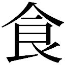
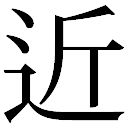
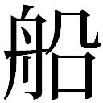
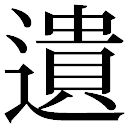
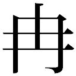
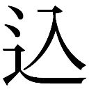

| 後巷説百物語 (角川文庫) | |
| 京極 夏彦 | |
| (2014) | |
後巷説百物語
京極夏彦

角川ｅ文庫
本作品の全部または一部を無断で複製、転載、配信、送信したり、ホームページ上に転載することを禁止します。また、本作品の内容を無断で改変、改ざん等を行うことも禁止します。
本作品購入時にご承諾いただいた規約により、有償・無償にかかわらず本作品を第三者に譲渡することはできません。
本作品を示すサムネイルなどのイメージ画像は、再ダウンロード時に予告なく変更される場合があります。
本作品は縦書きでレイアウトされています。
また、ご覧になるリーディングシステムにより、表示の差が認められることがあります。
赤えいの魚
１
昔。
小さな島が御座いました。
その島には、あまり裕福ではない人人が、細細と身を寄せ合って暮らしておりました。
貧しくとも平和な島で御座いました。
島の一角には古い、小さな鎮守のお社があり、そこには何時の頃からか、蛭子神がお祀りされておりました。島民達はそのお社を心の拠り処とし、熱心に信心していたので御座います。
ただ、島にはひとつの言い伝えが御座いました。
それはそれは、兇ろしい言い伝えで御座います。
蛭子神のお社には、ご神体として一体のゑびす様の像が安置されておりました。
そのゑびす像のお顔が赤うなる時は、島を兇ろしい災厄が襲う、ゑびす様の面色が赤色に染まった時は、島が滅ぶ時なのだと、そう伝えられていたので御座います。
誰もその言い伝えを疑うものは御座いませんでした。
何故なら、島民達は蛭子様を心から崇めていたからで御座います。
島民達は朝夕の参拝を決して欠かすことなく、ことある毎にそのお社にお参りをして、慎しく暮らしていたので御座います。
しかし。
ある時──。
ひとりの若者がおりました。
血気盛んな若人で御座います。
若人は、因習に雁字搦めに囚われている島の気質に厭気が差しておりました。貧しい暮らしに飽いてもおりました。諾諾と日日を送り不平のひとつも言わぬ島の人人に落胆してもおりました。そこで──。
若者は悪戯をしたので御座います。
こともあろうに──夜半に鎮守の社へと忍び込み、ゑびす様のお顔に赤赤と朱を塗りつけたので御座います。
朝になり、お顔が赤くなったゑびす様を見た島民は大いに愕き、惧れ、慌てふためいたので御座います。誰もが信じておりました。心から信じておりました。だから泣いて叫んで、大いに乱れ、結果島民の凡てが僅かな家財を纏め、家族を引き連れて島を出たので御座います。
若者はその様子を愉快に見守りました。
何しろお顔に色を塗ったはこの自分。何が起きよう筈もない。ナニ迷信じゃ、凡てはまやかしじゃと、腹を抱えて笑うておりました。
ところが。
島民が島を離れて幾もなく。
突如天地鳴動し、山は崩れ大地は揺らぎ、大津波が押し寄せて、若者諸共その島を吞み込んで仕舞ったので御座います。
島は、一夜にして跡形もなく消えてしまいました。
そして荒涼たる海原だけが残ったので御座います。
２
慶長元年丙申閏七月十二日晡時、天下大地震、豊亦處々地裂け山るゝが故に、高崎山嶺の石悉く落ち、其石互にして火を發す、にして震ひ止み、府の民皆心身を安んず、或は浴する者あり、或は夕をする者あり、未だせざる者ある時、又鉅海大いに鳴動し響く、諸人甚だ奇に驚き、東西に奔り南北にる、或は海邊村里の井水を視るに、皆悉く盡く、時に海より洪濤忽ちに起き來り、府及び邊の邑里に洋溢し、大波三時に至る（中略）。是の如く大地震洪波に罹りて、府城大厦小宅民屋等大倒破し人畜の死する者其の數を知らず（中略）。
且つ勢家村の二十餘町の北に瓜生島と名づくるあり、或は沖濱町と云う、其の町東西に縦りし南北に竝びて三筋町をす、謂南を本町、中を裏町、北を新町とす、農工商漁人す、其の瓜生島の境悉く沈沒して海底とる、之に因って溺死せざる者は纔かに其の七分の一、或は小に漂ひ、或は流家に乘り、或は木に附し、或は流櫃に寄り、五輪互激に離散す、然れども流すること暫時にして、西南の山岸犬鼻の濱に到り、或は蓬萊山等の高地に到りて死を免るゝ者あり、頃刻にして大汐收まりて舊の如し云々──。
矢作剣之進は幾度か閊え乍らもそこまで読み下し、どうだと言って笹村与次郎を見た。
元は漢文である。韻を踏むでもなく調子を揃えてある訳でもない、意味が通るだけの下手な綴りであったようだし、写本ということもあり、誤字や誤記などもあるのだろう、他の者より漢籍には通じている筈の剣之進をしても、酷く読み難い様子であった。
それでも神妙に聞いていた与次郎が、それが件の『豊府紀聞巻四』かと問うと、左様これが貴様が欲しておった確たる証拠じゃと、剣之進は幾分満足げに答えた。
「善く見つけたであろう。新政府にはほら、南国の出身者が多いからな。署にも豊後の者がおる」
剣之進は豪快に笑った。
この剣之進という男、旧幕時代は南町奉行所の見習同心であったのだ。ご一新のごたごたをどう乗り切ったものか詳らかではないが、現在は出来たばかりの東京警視庁の一等巡査になったばかりという身分である。
一方の与次郎はといえば──元は西国の小藩、北林藩の江戸詰め藩士だったのだが、今は加納商事なる貿易会社に奉職しているという変わり種である。
剣之進は見習同心時代に北林藩邸に足繁く出入りしていた。口を利いた契機は覚えていないが、齢が近い所為か馬が合うのか、与次郎はその頃からずっと親しくしている。要するに腐れ縁という奴である。
何だ思った程喜ばぬなと言って、剣之進は太い眉を寄せた。
「おい与次郎。折角苦労して手に入れたというに、もう少し反応したらどうなのじゃ。吾輩は散散な評判だったその方の妄言をわざわざ証明してやったのだぞ」
剣之進は続けて、どうじゃこれで方方も信用したかと一同を順に見回した。
十畳程の座敷に若い男が四名、面突き合わせて座っている。膳が出ているでもなく、酒器の類も見当たらぬ。改まった席とはとても思えぬが、砕けた感じもなく、何とも不可思議な会合である。
「まあ──その書き上げを信用する限り相当の被害であったようだがな。地震い山崩れ、津波洪水など、天変地異で沢山の犠牲が出ることは珍しいことではないぞ」
発言したのは倉田正馬である。
これは旗本の二男坊、徳川方の重臣を父に持つという箱入り息子で、しかも洋行帰りというハイカラである。ただ、どうにも茫洋としたところがあり、とても洋行帰りの冴えは感じられぬ。風体も洒落ている訳ではない。
この男、実は与次郎の元同僚なのである。正馬の父親である元幕府の重鎮というのと与次郎の奉公先の経営者というのが昵懇の仲で、その縁で正馬も一度は与次郎と同じ貿易会社に入ったのである。ただ正馬の方は働くのは性に合わぬと三日で辞めてしまった。今も働かずにぶらぶらしている、謂わば無職の遊民である。
「広く海外に目を向けるなら、更に規模は大きくなる。未曾有の惨事の記録など、然したる苦労をせずとも到るところに見出せるぞ」
正馬がそう続けると、そう幾度もあったのでは未曾有とは呼べまいと言って、渋谷惣兵衛が笑った。
この惣兵衛、与次郎同様北林の出身なのだが、幼き頃に養子に出され、山岡鉄舟に剣の手解きを受けたという豪傑で、維新後は猿楽町で町道場を開いている。どれ程の腕なのかは与次郎も与り知らぬが、慥かに強そうな外見ではある。しかしこのご時世、剣術使いで飯が喰える筈もなく、道場は閑古鳥、警察に出向いて巡査相手に稽古をつけている、警察の剣術指南役である。
「未曾有とは未だ曾て有らずという意味じゃ正馬。過去に一度でも例があるならば、それは未曾有とは呼ばぬわい」
「それはそうだが、これはものの喩えだ。堅苦しいことを言って揚げ足を取るな。これだから古臭い剣術使いは困るな。良いか、俺が言いたかったのはそんなことではない。そう──富士が火を噴いた折りなど、いま矢作が読み上げたどころの騒ぎではなかったと聞くぞ。海外では一夜にして山が消し飛んだ、村が埋没したという話もそう珍しゅうはないのだ。俺はそういうことを申したかったのだ」
それは貴様の言う通りだがなと惣兵衛は言う。
「大きな地震いが起きたなら山も崩れようし海も溢れよう。島のひとつも沈むであろう。天変地異が如何に人の理解を超えた猛威を振るうかは、北林の者であれば、誰でも知っておることだ」
そうであろう与次郎と惣兵衛は言った。
「我等が故郷、北林のお城の背後には山と見紛うばかりの大岩が、でんと突き立っておるのだが、その大岩はな、元はといえば背後に聳える金山の山腹にあったものなのだ。あのように巨大なものが落下して来るなど、普通は信じ難きこと。儂など童の頃より何度聞かされても信じられなんだ。あれが落ちるなら、島が沈むこともあり得るであろう」
如何にもそうだと与次郎は答えた。
「まあ──珍しいことでもないとは思うよ。しかしそれが何だというのだ」
だからなと正馬が答える。
「その記録に依れば、被害が大きかったのは寧ろ本土の方で、その沈んだ島の者は八割方が助かってはおるようではないか。土地家財は失ったのだろうから被害額は甚大だったであろうが──島ひとつ沈んでその程度の被害で済むかのう。まあ、慥かにそうした災害はあったのかもしれぬがな、のう巡査殿──」
どうだろうなあと正馬は問う。
どうだもこうだもない、被害の規模は問題ではなかろうと剣之進が不服げに応じた。
「与次郎の聞いた話でも、島民は助かっておるではないか。事前に察知して皆逃げたと、そういう話であろう」
のう与次郎と剣之進は問う。
まあそうだと与次郎は応えた。
そうかのうと正馬は首を傾げる。
「何を疑う。この記録は与次郎が聞いた言い伝えと同じ島の記録なのだぞ」
剣之進は憮然として言った。
「そうであろう与次郎。貴様が聞いた言い伝えで沈んだとされる島は──豊後国瓜生島だったのだろうが」
そうだと与次郎は答える。その通りである。
「それを手繰って手に入れたこの記録にもこう書き記してあるではないか。これが偶然とは拙者には思えぬ」
まあ偶然ということはなかろうと惣兵衛が応じた。
「同じ場所なのなら、まあ関係はあろう」
「関係あるわい。同地の寺院である威徳寺の由来書なる書面にも同様の記述があるというのだ。その時流されて来た松樹一株が同地の寺院威徳寺境内に植えられて根付き、後に名松と謳われるまでになったと申すのだな。また『豊國小誌』などを繙くに、矢張り同様のことが過去あったと書かれておるらしい。近隣の別の島もな、慶長三年の夏に鶴見山の破裂で沈んだと記されておる。だから与次郎の聞いて来た──恵比寿の顔が赤くなり、その瓜生島が滅んだという伝説は──事実なのだ」
それは飛躍じゃと正馬が言った。
「何故だ」
「何故も何も、恵比寿云々のことはその記録にはないのだろう」
「いや、記録はなくとも社はあるそうだ。俺の調べたところに依れば、その蛭子神社と申す社はな、後に旧瓜生島の対岸にあたる勢家の地に再度祀られ、それは今も残っておるというのだ。ならば矢張りこれは事実と考えるより──」
「いやいや剣之進──貴様の言うことも解らぬでもないがな──」
惣兵衛は取り成すような仕草をする。
「──一方で面妖な言い伝えがあり、その噂を辿って行くうちに、それを裏付けるような記録を見つけてしもうたなら、儂も貴様のように思うたやもしれぬわ。しかしな剣之進。善ッく考えてみるが良い。その言い伝えの方が──後から出来たということはないか」
言い伝えが後とはどういうことじゃと剣之進はいっそう憮然とする。
「言い伝えと申すものは普く事実が元になっておるものであろうが。某かの史実を後世に語り伝えたものが、それ即ち言い伝えじゃ。元となる事実がない場合は風聞や迷妄と申すのだ」
そうではないそうではないと惣兵衛は手を振る。
「貴様の言う通り、言い伝えというのは必ず事実の後に出来るものだろうて。だがな剣之進、儂が申しておるのはな、その──与次郎が聞いて来た、島が沈んだという言い伝えのことではない。その、昔話の中の言い伝えのことだ」
「昔話の中の言い伝えとは何じゃ」
惣兵衛は呆れたような顔になり、だからな──と、嚙んで含めるように言った。
「その──恵比寿像の顔が赤くなると島が滅ぶという言い伝えだ。その迷信が、事実その瓜生島に伝わっていたのかどうか、それは判らんと、そういうことだ。そんな記述はなかろうて」
「それが──島が沈んだ後から出来た言い伝えだと申すのか」
そういうことじゃと惣兵衛は言った。
それに就いては何も断言出来ぬがなと、剣之進は納得出来ぬ素振りを見せる。
惣兵衛は困ったような顔をする。
「まあその、瓜生島か。その島が一夜にして海中に没したと申すのは、事実なのかもしれぬ。否、そうした確固たる記述も残っておるのだから、これは事実なのであろう。しかしな剣之進。与次郎の話に出て来る──その、悪戯者が恵比寿像の顔を赤く塗っただとか、その像の顔が赤くなると島が沈むという言い伝えがあったのだとか、それまでもが事実とは限らぬと、儂はそう言うておるのだ」
正馬は相槌を打ち、言い伝えというものは得てしてそのような尾鰭がつくものだからなぁ、と言った。
どうしても信用せぬのだな、と剣之進は不服そうに文書を閉じて懐に仕舞った。まあそう怒るな巡査殿と正馬が宥める。
「信じぬのではない。噓だと決めつける証拠は何もないのだからな。ただ同じように信じる決め手もない。要するにその文書は、与次郎の聞いた話が事実だという証拠にはならぬと、渋谷はそう申しておるのだ。そうであろう」
そうよなあ、と惣兵衛は後ろに引いた。
「それは正馬の申す通りじゃ」
「のう矢作、お前の言う通り、慥かに問題なのは災害の規模などではないだろう。しかし同時に、災害が実際に起きたか否かということでもないし、そこに恵比寿信心があったかどうかということでもないのだ」
では何だと言うのだ正馬、と剣之進はいっそう不服そうにした。
「──何を証しとすれば良いというのだ」
「いいか矢作。我等が問題にしておるのは、あくまでその──恵比寿像の変化と天変地異との因果関係にあるのだ。俺はそう思うが」
それはそうだがと剣之進は考え込む。
それは証明出来ぬであろうと正馬が言う。
何故じゃと剣之進は尋き返す。
「いや、それは無理というものだぞ矢作。縦んば言い伝え通り、その島には恵比寿の像が祀られておったとしよう。ならばその顔が赤くなると災厄が起きると伝えられていたのかもしれぬ。更に不埒者がそのお顔を朱で塗るようなこともあったのかもしれぬ。いやいや、その直後に頃合いよく天変地異が起きたのかもしれぬわ。そうだとしても、即ちその災害がその悪戯の所為と断ずることは出来ぬことであろう」
「では何だと申すのだ」
偶然だと正馬は簡単に答えた。
「ぐ、偶然と申すか」
「俺はそう思う。矢作、先程お前はこれは偶然ではないと言ったな。渋谷もそう申しておったが──それはその面妖な言い伝えと、そこな文書の関係が偶然ではないと申したまでのことであろう。天災は常にこの世の理に則って起きるのだ。神像仏像に朱を塗っただけで天地が動くなどということは考えられぬことじゃ。どれだけ頃合いが良かろうとも、地震や津波と悪戯や信仰は矢張り無関係なことであろう。人の力で──天地は動かせぬ」
「恵比寿神は人ではないぞ」
塗ったなあ人間だと惣兵衛が言う。
いや、そもそも神仏を持ち出しても同じことだと思うがなと正馬は続けた。
「同じとはどういうことだ」
「同じだよ。渋谷が先程言っていた通り、先に天災があって、後から理由が作られたのでない限り──両者に因果関係は発生せんだろう。俺には偶然という結末以外考えられぬな」
ううむと剣之進は唸った。
「それにな、俺の聞く限り、その話はどうにも出来過ぎておるように思うのだ。信心せぬのは良くないことだ、人を欺くのはいけないことだと──妙に説教臭い気がせぬかな。真面目に信心している者は助かり、不真面目な者だけが命を落とす──この結末に俺は信者を集めようという、そう、思惑のようなものを感じるのだがな」
「そんな大きな神社ではないらしいがな」
「大きさはそれこそ関係なかろう」
惣兵衛が追い討ちをかけるように言った。
「過去の惨事を霊験の証しに仕立て直すことは、その地に於ける信仰心を高めようとするならば極めて有効なことではないか。小さな社なのであれば、地元の信心が集まれば良いのだからな」
「もしも」
正馬は続ける。
「本当に、島が沈んだのは恵比寿の顔を赤く塗ったからだとしようではないか。しかしその場合も──」
証明は絶対出来ぬのだと正馬は結んだ。
形勢不利と見たのか、剣之進は唯一異論を唱えないでいる与次郎の方に顔を向けた。
「どうなのだ与次郎。こ奴等は貴様を虚仮にしておるのだぞ。何か言うたらどうなのだ」
「いや──」
反論はなかった。
剣之進は憤慨しているようだが、与次郎自身には虚仮にされているとも思えなかった。どう考えても正馬と惣兵衛の方が正論を述べているからだ。
ことの起こりは半月前のことである。
酒の席で与次郎が知人から聞いた珍奇な伝説を語ったのが始まりだった。
赤面恵比寿の──沈んだ島の話である。
与次郎にしてみれば単なる座持ちの与太話のつもりだったのだが、文明開化のご時世にそんな非合理な話はあり得ないと、正馬と惣兵衛は強く否定したのだった。しかし剣之進だけはあり得ることじゃと言い張った。その結果の今日である、正直言って与次郎は、剣之進がこんな証拠めいた書き付けを見つけて来るとは全く思っていなかったのである。与次郎は神仏の威徳を信じぬこともないのだが、島ひとつ沈んだとなれば話は別だ。
その与次郎と剣之進の顔を見て、惣兵衛は一度顔を顰め、如何かなご一同──と言った。
「ここは薬研堀のご隠居にご意見を求めてみては──」
四人は顔を見合わせ、おう、と言った。
３
薬研堀の隠居とは──。
その名の通り、薬研堀界隈に九十九庵なる閑居を構える老人のことである。
齢の頃なら八十幾つか、鶴の如くに瘦せ細った色白の老爺で、髷を落とした白髪を短く刈り込み、墨染の作務衣に鼠色の袖無しを羽織ったその姿は、恰も禅僧と見紛うばかりに枯れ果てている。素姓本名は一切知れぬが、自らを一白翁と号し、遠縁だという若い娘と二人きりで暮らしている。
この老人、与次郎が禄を食んでいた旧北林藩とは浅からぬ縁を持つ者であったらしい。
どこから見てもただの町人、身分職分ある身とは到底思えないにも拘らず、何故か藩主の覚えもめでたく、ご一新前は藩から恩賞金まで受けていた。与次郎はその金を月月届ける役目を任されていたのである。
高額ではなかったが、幾年も前からのことであったらしく、総額となると大した額になる。
一白翁は己のことを何も語らなかったが、前の上役の話に依れば、藩を救った恩人なのだということだった。
一介の町人の、しかも枯れ木の如き翁なんぞに、仮令小さきと雖も国ひとつ救ったり出来るものかと、与次郎は随分と訝しく思うたものだが、それはどうやら与次郎の生まれる遥か前、四十年以上も昔のことであるらしかった。
現在は老人であってもその頃は若かったのだろうと、そんな当たり前のことに与次郎が気づいたのは、藩がなくなってしまった後のことだった。それまで与次郎は何故か、この老人は昔からずっと老人だったような、そんな無茶な妄想に取り憑かれていたのである。
それ程に、一白翁は枯れていた。
ハテあの枯れた老人はどうしているものかと、思い至ったが五年前である。
大政が奉還され、藩が廃されてしまったのだから、当然北林藩から出されていた恩賞もなくなってしまった筈である。
ならば、喰うに困っているやもしれぬ。
そして与次郎は、矢張り北林藩と縁があり、老人の噂を聞き知ってもいた惣兵衛を伴って、九十九庵を訪ねてみたのだった。
老人は健在だった。
髷こそなくなっていたものの、瘦せた顔も質素な暮らし振りも、偏屈なのか好好爺なのか判じ兼ねる物腰も、一白翁は旧幕時代そのままの佇いでそこにいた。ただ、与次郎が通っていた頃はほんの小娘だった遠縁の娘がすっかり年頃になっていたという以外、九十九庵の中はその昔と何ひとつ変わってはいなかったのである。
以来五年に亘り、与次郎と老人との付き合いは続いている。今では惣兵衛の他、剣之進や正馬までも一緒に九十九庵を訪れることが多い。
老人は博識だった。しかもそれは奇妙な体験談を随分と沢山持っていた。与次郎はその、含蓄のある話を聞くのが愉しかった。
維新から十年。
そこここで動乱は続いていたが、世相の混乱は一段落した感がある。しかしこの国も、与次郎自身も、大きく変わった。町並みも、世情も変わった。しかし老人の棲む町のその一角だけは、いつまでたっても江戸が残っている。新しい時代に馴染もうと努力する反面、どこか新しいものに対する不信感を捨て切れない与次郎のような男にとって、九十九庵の風景と、一白翁の語る江戸の話は、懐かしく落ち着くものだったのである。
剣之進は巡査という身分であるにも拘らず珍談奇談の類が無類に好きだという困った男で、老人の語る諸国の怪異譚を特に喜んだ。
一方惣兵衛は顔や生業に似わぬ合理主義者で、不可思議な事象に関して老人とあれこれ議論を交わすのが娯しいようだった。少少西洋気触れの正馬はといえば、まあそうした談議問答も厭いではなかったのだろうが、これは同居人の遠縁の娘である小夜が目当てなのだと、与次郎はそう勘繰っている。
ただ、これに関しては──与次郎も含めて──他の二人とても怪しいところなのだが。
土産に饅頭を買って四人は薬研堀へと向かった。
夕食時に饅頭もないとは思うが、老人は酒を吞まないから土産も買いようがないのだ。いや、正確には毎日寝る前に升酒を一杯だけ吞むのだそうだが、それ以外、酒は一滴も口にしないのである。かといって、取り立てて甘いものが好きということもなさそうなのだが──要するにこれは小夜への土産なのである。
生け垣越しに小夜の姿がちらりと覗いた。
蒸し暑いので打ち水でもしたのだろう。柄杓と手桶が見えた。正馬が小走りに門に向かう。
門に達する前に御免くだされ御免くだされと惣兵衛が濁声を発した。与次郎が門を潜ると、小夜は玄関の脇に置かれた少し壊れた椅子に座ってぽかんとしていた。
また来ましたぞご老人はご在宅かと剣之進が言う。小夜が答える間もなく、正馬がつまらぬものですがと饅頭の包みを差し出した。
いつもすみませんと立ち上がった小夜が受け取る。
こちらこそすみませんと与次郎は言った。お夕飯はお済みですかと問うと、今し方食べ終わったようですと小夜は答えた。いつもいつもご迷惑でしょうなと与次郎が問うと、構いませんわと小夜は答えた。
「丁度お茶を飲みたがる頃合いですから。それに、皆さんとお話しさせて戴いた後は少しばかり元気になるようですし」
小夜はそう言って、与次郎達を裡へ招き入れた。
四人組は座敷ではなく、離れに通される。
六畳程の小さな部屋で、真ん中には囲炉裏が切ってある。躙り口はないけれど、茶室の如き印象の小部屋である。老人はその床の間の前にちんまりと座り、客と応対するのが常である。
老人は細い眼を更に細めて、笑っているのか戸惑っているのか判らぬような表情をした。
「お揃いで──何事で御座いますかな」
「相談ごとで御座いまするわい、ご老体──」
粗野な口調で惣兵衛が言う。続けて剣之進がご機嫌を伺い、最後に正馬が世辞を言うというのが、毎度毎度の展開である。
与次郎は大抵何も言わずに端に座る。
いつもの如く並んで座り、茶が出されて後、最初に口火を切ったのは剣之進だった。
「実はご老体、本日は他でもない、この与次郎が聞いてきました噂の真偽に就きまして、ご意見を拝聴したく思い罷り越した次第で」
老人ははいはいと頷いた。
剣之進は瓜生島の伝説に就いて語った。しかし多くを語るまでもなく、老人はその話を詳しく知っていたようだった。ご存知ですかと正馬が問うと、有名な話ですからなと老人は答えた。
「有名なのですか」
「さて、似たような話は瀬戸内にもあるが──」
矢張り豊後湾の話が有名でしょうなあと当たり前のように老人は言った。
「瀬戸内にもあるのですか」
「阿波を訪ねた折りに聞いた話が似たものでした。まあ、その手の話は多多御座います。しかし規模からいうと、その瓜生島が一番大きいのではないでしょうかな。何しろ島には千軒からの戸数があったと──私は記憶しておるが」
「千軒も──」
「そう。しかも貧しい島ではなかった筈だが。与次郎さんは貧しい島とお聞きになったかな」
与次郎はそう聞いた。頷くと、お話しになったのはお若い方でしょうなと老人は言った。慥かに若い。与次郎よりも二つばかり年下の男である。
「ならば知らなかったのでしょう。私が聞いたところでは、恵比寿様のお顔を塗ったのは迷信を信じぬ医者坊で御座いましたしな。まあそれは仕方がないでしょう。三百年から昔のことで御座いますからなあ」
矢張り真実なのかと正馬が問うた。
それは判りませんと老人は答えた。
「私もこんな爺では御座いますが、三百年も生きてはおりませんからな。その、剣之進さんが見つけた記録とやらもね、まあ文字で書いてあるだけと思えば、どこまでが真実か、そんなことは判らぬことです」
むうと剣之進は膝の上の文書を手に取って見た。
「しかし──ご老体。記録も何も信じぬとなれば、この世に確かなことなどなくなってしまうではないか」
「確かなことなど御座いませんわい」
「いや、どうであれ事実は事実だ。その島は──」
「沈んだので御座いましょうな」
そう、老人は言った。
剣之進は出端を挫かれて黙る。
「しかしそれはどうでも良いことなのでは御座いませんかな。ご一同はそのようなことをこの爺に尋きに参られたのでは御座いますまい」
お見通しじゃと正馬が言った。
「ご老体、ご老体は先程、似たような話は方方にあるというようなことを仰せであったな」
申しましたなと老人は答える。
「例えばご一同は、『今昔物語集』をご存知で御座いまするか」
存じておりますと惣兵衛が答えた。
「それは良い。その、今昔の、『卷第十震旦、卅六』に『媼、毎日見卒堵婆付血語』という話が載っておりまする。これは、このような話で御座いましてな。まあ、震旦と申しますから唐のお話で御座いましょう。唐のいずこかに高い山が御座いましてな、その山頂に卒塔婆が立っておると思いなされ」
「卒塔婆で御座るか」
はて面妖なと四人は顔を見合わせる。
「この山の麓に村里がありましてな、そこから、丁度私くらいの齢の老婆がですね、毎日欠かさず山に登り、この卒塔婆に御参りをすると思いなされ」
「高い──山なので御座ろう」
剣之進が問うと高い高いと老人は答えた。
「まあ、この齢で山登りというのは相当大変なことで御座いましょうな。私には出来ませんわい。それは誰でもそう思う。そこである時、若者がその理由を問うた。すると老婆はこう答えますな。この卒塔婆に血が塗られると、山が崩れ海中に没するという言い伝えがある、だからそれを確かめずにはおられない──」
おお、と惣兵衛が声を上げる。
「同じ話じゃ」
「そうそう。若者は迷信を哂い、それを盲信している老婆を詼り、卒塔婆に血糊を塗るのですな。老婆は、卒塔婆が血に染まっているのを確認し、大慌てで村を逃げ出すのですよ。若者はその姿を笑って見ている訳ですな。ところが」
「山は崩れて──」
はいはいと老人は頷く。
「言い伝えを迷信として信じていなかった族は悉く死に絶えるというお話ですなあ。これと同じ話は『宇治拾物語卷三十』にも載っております」
寓話ということですなと正馬が言った。
「今昔や宇治拾遺に載っているということは、元の話が仏典か漢籍にある、ということで御座いましょう」
「如何にも。『搜神記』にありましょう」
「それが我が国にも散らばっている」
「散らばっておりますな」
ほうらみなさいと正馬は剣之進に向けて言った。
何を見るのだと剣之進は応える。部屋が狭いので当に面突き合わすという感じである。
「今のご老体のお言葉を聞いたであろう。これはその話が事実ではないという、何よりの証拠ではないか」
「何故そうなるのだ」
「あのな剣之進──」
正馬は鬼の首でも取ったかのように眼を輝かせた。
「──そんな奇態な出来事が諸国で軒並み起きてたまるか。これはな、唐土の説話に材を採った寓話なのだ剣之進。元があるのだ。慥かに天変地異は起きるだろう。それで島が沈むこともあろう。だが、それとこれとは別の話じゃ。先程渋谷が申しておった通り、恵比寿云々は後から出来たお話なのだ」
「お話とは何だ」
お話だお話と正馬は繰り返す。
「お前とて、真逆、御伽草子のお話を事実だとは申すまい」
「御伽噺と申すのか」
「左様じゃ。お主、髷は切っても態だけか。頭の中に文明開化の音は鳴っておらぬな。それが一等巡査とは呆れたものじゃ。そうであろう渋谷」
うむと惣兵衛は腕を組む。
「正馬の言う通りかもしれぬな。これはまあ、鬼やら天狗やらが出て来る、愚にもつかない化物話を信ずるのと同じことであろうかな。まあ、いずれにしても答は最初から出ていたようなものではあろうがな。ご老人にお伺いを立てるまでもないことではあったわい」
惣兵衛は豪快に笑った。
一白翁はその剝き出しの歯を愉快そうに見て、はてどのような答が出ておるのかなと問うた。
「またそのように、恍惚けられては困りますなご老人。どこの世界に木像の顔を赤く塗っただけで天変地異が起きるなどという非合理がありましょうか。なんなら儂がこの脚でこれから鎌倉まで出向き、大仏様のご尊顔に墨でも塗って参りましょうか。小さなゑべすさんで島が沈むなら大仏様ならこの国が沈みましょう」
そう言うと惣兵衛は文字通り呵呵大笑した。
笑いが収まるのを待つようにして、老人はそうじゃなあと言った。
「慥かに天地自然の理は人の手でどうにか出来るものではないでしょうな」
「神仏をしても、で御座いましょう」
惣兵衛が合いの手を入れる。老人は首を傾げる。
「いや、神仏をしてか否かは私の与り知らぬことで御座いますわい。天然自然の理こそを神仏の御心と成すように考えることも出来るでしょうしな。しかしな、惣兵衛殿」
それから正馬殿、と老人はゆるりと顔を見回す。
「地震いが起きるのは地の理、大雨が降るのは天の理。それは人にはどうにも出来ぬこと。ですからな、正馬殿の仰せの通り、恵比寿の顔が赤くなったらそれが起きると申すのは、まあ寓話で御座いましょう。惣兵衛殿の申される通り、起きた後からつけられたことかもしれませんな。ただな、ご一同。地の理、天の理があるように、人には人の理が御座います」
「人の理──ですか」
与次郎は顎を引いた。人の理ですなと老人はもう一度言った。
「天のことは天に、地のことは地に。人は天地を動かせませぬ。しかし人のことは別でしょう。人の理は人にある。そして天と地と人は、互いに響き合ってこの世界を作っておりましょう。雨が降れば地は湿る。地が揺らげば大気乱れて風も吹きましょう。島に人が棲むのなら、そこに村里があるのなら──人が棲む場所には人の理があるもので御座いましょうや」
それは道理で御座るなと惣兵衛は言った。
「地震や津波は信心や不心得と無関係に勝手に起きると正馬殿は仰せだ。それはそうで御座いましょう。恵比寿の顔を赤く塗ったくらいで地震は起きぬ。津波も洪水も起きますまい。ただ、地震や津波とは無関係に、恵比寿の顔を赤く塗っただけで──」
村が壊れてしまうことは御座いますぞ。
老人はそう決然と言った。
「村が──壊れるとは」
「そのままの意味で御座いますわい。恵比寿の顔が赤くなっただけで壊滅してしまった村というのを──私は存じておりますので」
それはまた奇態なと正馬は首を傾げた。
「地震でも洪水でもなく、木像の顔に色を塗っただけで村落が破壊されたと、ご老体はそう申されるか」
如何にもと一白翁は言った。そんな馬鹿なことがあろうかと正馬は惣兵衛の顔を見る。二人を押し退けるようにして剣之進が前に乗り出した。
「それは──もしやご老人御自らの」
「左様。私が若い頃にな、この目で確かめたことで御座いますからな。そう、あれは男鹿の荒海に浮かぶ」
戎島という島で御座いました──。
老人はそう言った。
４
もう四十年近く前のことでしょうかな。
その島の不思議な噂を聞いたのは──そう、品川宿の旅籠の庭に聳える大柳に纏わる奇ッ怪な騒動が一段落した後のこと──江戸に戻る途中のことでした。
その時私は、小股潜りの異名を取る、又市さんという名の御行と、おぎんさんという名の山猫廻しと行動を共にしておりました。
小股潜りとは、今の言葉で申しますと、口が巧いとか、手練手管に長けているとか、狡賢いとか、いや、もう少し悪い意味で使う言葉です。丁度いい言葉がありませんけれど、もしかしたら詐欺師というのが近いかもしれません。ただ、又市という人は、他人を欺いて利益を得ようとか、誰かを陥れて喜ぶとか、そういう類の人物ではありませんでしたな。
とはいえ又市さんは、今でいう示談屋や仲人屋のような商売の外に、正攻法では解決しない面倒な揉め事を幾許かの銭を貰って請け負って、円く収めるというような仕事をしておりましたから──ことを上手く運ぶのに様様な手段を講じ、その手捌きがあまりに巧みなために、そう呼ばれたのでしょうねえ。
御行というのは鈴を鳴らし乍ら魔除けのお札を撒き歩く者、山猫廻しとは人形を操る大道芸人のことです。
私はその頃、丁度皆さんくらいの年頃──三十前くらいの齢でした。その頃私には、ひとつの夢が御座いましてな。諸国を巡って怪談奇談を蒐集し、いずれは百物語の怪談本を開板しようと企んでいたのです。
その夢はどうしたと仰せですか。
それはまあ、また別のお話で御座いますからな。
いずれその頃の私はといえば、定職に就くでもなく、額に汗して働くこともなく、浮き草のようにただふわふわと、怪しい話を求めて西から東、諸国を漂うように暮らしていたので御座います。
品川宿から朱引きの内に戻ります途中、私達は越後の縮緬売りの担ぎ屋と同宿しました。その男が──奇妙な話を聞かせてくれたのです。
出羽国──今は羽前と羽後に分かれましたが、その羽後国の方に、男鹿という半島が御座います。その半島の突端、入道崎というところから不思議な島が見えるというので御座います。
何が不思議かと申しますとね。
その島は──見えないので御座いますよ。海流の具合なのか気温の具合なのか、それこそ天地の理なので御座いましょうが、常に霧のようなものに覆われていて、気がつく者は殆どいないという。地元の者でも知っている者はごく僅かだというので御座います。
勿論、海に出る漁民達は知っている。
知ってはいるものの、絶対に近寄らない。
魔所と恐れ、ご神域と畏れて、誰一人その島に近寄るものはいないというのですな。
なに、岬からそう離れている訳でもないのです。
陸地であれば二里ばかり、本来ならば簡単に往復の出来る距離で御座いましょう。それ程近くても見えないというのですから、これは珍奇という外はない。
ところが、善く聞いてみますと、その担ぎ屋は更に珍奇なことを言うのですな。
その担ぎ屋の話に依れば、その幻の島が見える場所というのが、ただ一箇所だけあるのだそうです。
入道崎のある場所に──そこは断崖になっており、舟の出入りなどもない険しい場所なのだそうですが──その断崖の下の方に窟が穿たれておりまして、その中に小さなお堂があるというのです。その窟の入口にある鳥居の真ん中から望むと、真正面にその、不思議な島の影が見えるというので御座いますよ。
何とも玄妙な話では御座いませぬか。
その鳥居から望む幻の島は、まさに奇景としかいいようがない、奇妙な形をしているのだそうです。周囲がぐるりと絶壁になっている。いや、海面に近い方が括れていて、とても舟などつけられる形状ではないのだそうで御座います。何とか島まで行ったとて崖を攀じ登らねば上陸は出来ませぬし、登れるような崖ではないという。
まあ、そこまでで御座いましたならね、そういうこともあるかという話で御座いましょうな。人が寄りつけぬ地形というのは御座いましょうし、登れぬ山も御座います。無人の島など各所にたんと御座います。
また、阿蘇の山やら浅間やら、火を噴き破裂する山と申しますのは、大層な熱を内に秘めておるもので御座いましょう。そうした山がもし海中にあったなら、もしや大変な蒸気を発するやもしれぬ。ならば島の姿を覆い隠すこともありましょう。汐の流れも変わりましょうし、航海に適さぬ魔所ともなりましょう。
また、ある場所からだけ、その威容が望めると申しますのも、陽の加減、風の加減で、あり得ぬことでも御座いますまい。
いずれ考えられぬことでは御座いません。
しかし。
何よりも奇異なのは──。
そんな島に、人の棲む様が見えると申すのです。
年に一二度、善く晴れた日に、ほんの僅かの間だけ、島を覆う霧が晴れるのだそうです。そんな折りに鳥居越しに島を見ますと、島の頂上に朱塗りの立派な御殿が見えるのだそうです。その担ぎ屋は、去年偶偶その場に到り、その御殿を見た、と申すので御座いますよ。それは絶奇な眺めだったと申しておりました。
その島は──。
戎島。
或は戎の浄土と呼ばれているそうで御座いまして。
人には行けぬ場所なので御座います。それなのに、そこには建物があるので御座います。それ故にその様を、浄土に擬たので御座いましょう。
断崖の石窟から鳥居越しに望む幻の孤島。
その頂にひっそりと建つ朱塗りの御殿。
年に数回しか拝むことの叶わぬ光景。
その光景を胸中に思い描き、私は抑え切れぬ想いに駆られたので御座います。
はい、行ってみたくなりましたな。
しかしまあ、お話を作って座持ちをするのが商売の担ぎ屋の談で御座います。話半分に聞きませぬと落胆することにもなりましょう。実際私は、行商の者の口に踊らされ、幾度も幾度も豪い目に遭うておったので御座いますから。
ところが、で御座います。
同行しておりました山猫廻しのおぎんさんも、その島の話は知っているというので御座います。その島は慥かにあるよと、おぎんさんは申しました。
何でも幻術使いの徳次郎に聞いたという。徳次郎という男のことは以前にもお話ししましたでしょうかな。目眩まし──今で申しますところの霊術、催眠の術と申すのでしょうか、それを使います芸人で御座います。
一座を率いて諸国を巡り、そちこちで吞馬の術やら綱渡りやら火吹きやら、そうした芸を見せる興行を打つので御座いますな。この男も、実は又市さんの仲間で御座いまして、奥州辺りでは魔法使いとまで呼ばれた小悪党で御座いました。
算盤をじゃらりと鳴らしましてな、瞬時に人を操る技を持っておるので御座います。算盤の一振りで大店の金蔵も開けられると、そんな噂も御座いましたな。
その徳次郎が男鹿の生まれだというのは、私も本人から聞いておりました。ならばこれは本当かと、私は俄かに興奮致しました。おぎんさんはなんでも徳次郎が唄う戯れ唄を聞いたのだそうで御座います。
鳥も通わぬゑびす島、
金銀珊瑚が御座るのか、
富やら宝が御座るのか、
流れ着いたら蔵に入る、
歩き着くなら客となる、
骸になってもゑびす顔、
行ったは良いが戻れない、戻れない──。
そんな唄であったとか──。
変わった唄と気に留めて、徳次郎に問うたところ戎島の話をしてくれたのだと、おぎんさんは申しました。
おぎんさんの話だと、かの算盤の徳次郎、天涯孤独の身寄りなしと本人の口より聞いてはおりましたが、実はその断崖の石窟に建つ社──夷社というのだそうで御座いますが──その夷社の番人に育てられたのだという話なので御座います。
こんな僥倖は御座いましょうか。
私はおぎんさんの話を聞いた時、何故か背筋がぞくぞくと致しました。いいえ、怖かったのでは御座いませんよ。偶偶耳に致しました神秘の島──その島と関わりのある者と、私は旧知の仲だったことになる訳で御座いますから、その巡り合わせに心が動いたので御座いましょう。
好奇の虫が騒ぎましたな。
はい。先にも申しました通り、その頃の私は諸国の奇談巷説を集め歩くのを、ただひとつの生き甲斐にしておったので御座います。
そうれ、そこを御覧なさい。
そこに積んである帳面の山は、全部私が聞き集めた不思議な話、奇妙な風聞の覚え書きで御座いますよ。
諸国を隈なく巡りましてね、聞き集めたので御座います。しかし──丁度その頃、私はまだ奥州には行っておりませんでした。菅江真澄の紀行文など読んで、想像を逞しゅうしていただけで御座いますから。
行きたくなりましたとも。
江戸に戻りました私は、早速徳次郎を捜しました。
何しろ徳次郎という人は旅芸人一座の座長で御座います。その一座は奥州から西国まで、隅隅を渡り歩いて興行を打っていると聞いておりましたから、所在など知れたものでは御座いません。
両国の芝居小屋で、目眩ましの放下師一座は信州辺りで小屋掛けをしているという噂を聞きつけました私は、急ぎ旅支度を調えまして江戸を出たので御座います。
若かったので御座いましょうな。
無謀で無鉄砲だったので御座います。幸いにも、品川で小股潜り仕事を手助けした折りに受け取りました手間賃で懐は潤っておりましたから、気持ちも大きくなっていたので御座いましょう。
ところが。
信州では追いつけませんでしたなあ。そのうえ──その先、徳次郎一座が北へ向かったのやら南に向かったのやら、皆目判らなくなってしまったので御座います。
ええ、戻りはしません。
折角意気揚揚と出立を致しまして、信濃くんだりまで出張ったので御座いますから、そのまま引き返したりは致しません。ええ、草臥れ損で御座いましょう。
私はそのまま、出羽への旅路を選択したので御座います。
元元、根なしの浮き草暮らしで御座いましたから、いつ戻らなければならぬというようなこともなかったのですな。
ひと月かかりましたでしょうか。
それともふた月はかかったでしょうか。
勿論その頃は陸蒸気など御座いませんから、馬か駕籠か、あとは徒歩で御座います。道中のことは善く覚えてはおりませんけれども──もしかしたらもっとかかったのかもしれません。
ああ、そこの帳面を取ってくださいませんか。多分そこに記して御座いますから。
そう、これで御座いますよ。書いてあります。
出國男鹿海中戎嶋事──。
そうそう。男鹿に着きました頃、季節はすっかり秋で御座いましたなあ。寒かった。
こんな風に書いてあります。
菅江眞澄記す處の男鹿紀行にも戎嶋記無し、但し他の記は槪ね正確也、先人の足跡を辿りつ戎嶋を搜す──。
そうです、そうです。私は菅江真澄が『男鹿の秋風』に榎の三叉路と記した追分の三叉路まで到りましてね。真澄翁が書かれている通り榎など生えていないなと、妙なことに感心しておりますな。それで、そこから船川街道を緩緩と半島に向けて進んでおります。脇本から男鹿街道へと移り、封蛇石などを眺めまして暫く進みまして──そうです、北浦辺りで民家に宿を借りたので御座いますね。
そこに到るまでの間も、その幻の島──戎島のことに就いては、そこここで、ことあるごとに訊ね質して来たので御座いますが、知っておる者は誰ひとりおりませんでした。宿を借りた家の家人も、全く知らぬということで御座いました。
はい。私は、半分諦めておりました。
幾ら何でもこれだけ近くまで来て誰も知らぬということはなかろう、担ぎ屋に一杯喰わされたか、いや、おぎんさんに揶われたものかと、そう思いました。
いやいや、肚など立てません。そんな心持ちにはなりませんでしたなあ。旅が好きだったので御座いますよ。ですからね、後悔なんぞはしておりませんでした。宿を借りた家でご馳走になった魚も旨かったですし、土地のお話などを聞いて、満足した覚えが御座います。
しかし、翌日、浜に出ましてね、漁師などに尋きますと、慥かに魔所はあるというので御座いますな。海上に靄のかかった奇妙な場所があるという。近づくと吸い寄せられると、誰も舟を寄せぬと申すのです。
私は俄かに興奮致しました。
そして山道を越え、入道崎に向かったのです。
途中、古い鄙びた湯が御座いましたのでね、そこで湯に浸かり、善く休養して英気を養い、そして私は──件の入道崎探索に出向いたので御座います。
５
その島はあったのですか──と興奮気味に問うたのは剣之進だった。
老人が答えようとした途端に前に乗り出し、その言葉を止めたのは正馬だった。
「先を急ぐでない矢作。何事にも順序というものがあろう。俺達はご隠居の話を堪能しておるのだからな。結論を先に聞いてしまったのでは、折角の話が台無しになるではないか」
そうじゃな、と惣兵衛が相槌を打つ。
「儂の想像では──その島はなかったのではありませぬかな、ご隠居。それで、その石窟にあるとかいう祠まで辿り着いたとはいうものの、鳥居の向こうには何もなかった。それで、祠を調べてみると、中に恵比寿像が祀ってあって、そのお顔が赤くなっておったと──」
違いますかなと惣兵衛は自信たっぷりに言った。
違いましょうなと老人は笑った。
「違いますかな」
「はい。島は慥かに御座いました」
あったのですかと、今度は剣之進が乗り出す。
「はいはい。それにその断崖の鳥居の中の社には、恵比寿様はいらっしゃいませんでしたなあ。鏡が一枚、ご神体として置かれておった」
「鏡──で御座るか」
ふうんと惣兵衛は腕組みをして唸った。
ご説明通りの島で御座いましたかなと正馬が尋いた。
「説明通りとは」
「ですから、深い霧に覆われて姿が見えないとかいう」
その通りで御座いましたと一白翁は言った。
「入道崎のどこに立っても、雲のような霞が見えるだけ。私の参りました日は秋晴れで、雲ひとつ御座いませんでしたから、うっすらと何かは見えましたが、そこだけ靄靄としておりましてなあ。知らない者は決して島とは思いませんな。ただ私は知っておりますから、海岸を下りまして、岩場を渡り、その洞窟──洞窟という程深いものでは御座いませんが、そのお社を見つけたので御座いますよ」
「まあ蒸気の力というのは鉄車を動かす程の威力を持っていますからね、そういうこともあるでしょうかな」
正馬は何故か負け惜しみのようにそう言った。
老人は左様で御座いますなあと、感心したように応えた。
「まあ、岩場はそれ程険しくは御座いませんでしたが、その石窟は上からは見えませんし、お社に行くのでない限り、行く理由がない場所なのですなぁ。用事が御座いませんから地元の方も行きませぬわい」
漁師もですかなと惣兵衛が尋いた。
「陸からは行き難い場所であっても、海は繫がっておりましょう。海上からならばその社も見えるのではないかな。いや、その社からは島が望めるというのであれば、社と島を結ぶ直線上の海域に到るならば、舟からも島が見えましょう。そういう道理になりはしませぬか」
「ならぬのです」
老人はそう答える。何故ですと惣兵衛は食い下がる。
「それではものの道理が成り立ちますまい」
「いや、道理で言えばそうなのでしょう。しかし、漁師に尋ねましたところね、地元の漁師達は霧の立ち籠める辺りより、二里の内には絶対近づかぬのだそうです」
「霧──というのは島のことですな」
「はい。霧は島を覆っておりますから、島よりは一回り大きい塩梅になるのでしょう。それから更にぐるりと周囲を二里──その海域は危ないのだという。どう危ないかと申しますとね、
そこより近付くと、大変な勢いで島に引き寄せられてしまうというのですよ」
「引き寄せられる？」
そういう、きつい汐の流れになっているのだそうですと言って、老人は顰め面をした。
「腕自慢の荒くれ漁師が幾ら漕いでも、決して逃れられない急で強い海流が、島に向かって流れておるというのです。そしてその、社から島までの距離というのは、凡そ二里ばかりで御座いますからな」
「ああ、舟は島と社の間に乗り入れることは出来ぬということで御座るか──」
「はい。霧の端を中心にして半径二里、舟は必ず迂回しますから、社の見える海域には舟は行けないのですな。島の反対側から見ると、霧に隠れてしまって善く見えない。それで──社自体も殆ど知られていなかったので御座います」
惣兵衛は畳に指で何かを描きつつ、それは道理じゃなと言った。
「しかしご隠居。そのような不可解な汐の流れがあるのなら──一度その島に引き寄せられてしまったら、島からはずっと出られぬということにはなりませぬか」
「そういえばご老体──」
与次郎は口を挟んだ。
「その、徳次郎とかいう人が唄っていた唄にも、行ったは良いが戻れないとかいう──」
「はい」
絶対に出られないので御座います。
老人は決然とそう言った。
そりゃあ危険じゃわいと正馬が言う。
危険で御座いましょうなと老人は返す。
「漁師は近寄りません。そこはご神域と呼ばれていたようで御座いましてな。何の神域なのかは忘れられていたようで御座いますが、本来はその、戎社のご神域であったのでしょう」
私が行きました日には、島が瞭然と見えましたと老人は続けた。
「はっきりとというと、その年に何回かという日に当たったと申されるのか」
剣之進の問いに、老人は運が良かったのでしょうねと答えた。そしてすぐに、いや、運は悪かったのですと言い直した。
「どういうことでしょう」
「はい。何もなければ、その旅は最高だったので御座いますよ。風の噂、しかも小耳に挟んだ程度の与太話を辿り手繰って、遠路遥遥男鹿の端まで到り、本当に幻の島を発見したので御座いますからな。鳥居越しに浮き上がったその島は、当に神秘で御座いましたよ。話に聞いた通り、こう下の方が括れた、茸のような奇妙な形をしておりましてなぁ、しかも、その上の方には大層立派な御殿が、朱塗りの、丁度厳島神社のような建物で御座いましたが──本当にあったので御座いますからな」
御殿か──と呟いて、与次郎は天井の方を見た。ふと横を見ると、他の三人も上を向いている。それぞれにその神秘の島を思い描いていたのだろう。
「私はね、見蕩れました。暫く見蕩れておりましたがねえ。その時──私と同じくその島を、
いいや、その御殿を見ていた者どもがおったので御座いますよ」
老人はそこで茶を一口飲んで口を湿らせた。
「その石窟に、まだ誰かいたのですか」
与次郎が問うと、一白翁は泣き笑いのような、何とも形容しがたい表情になった。
「社の番人がいて叱られたのですかな」
惣兵衛が気楽なことを言った。それならば良かったので御座いますがねえと、老人は更に困ったような顔をした。
「社の後ろに、男が三人ばかり隠れていたのですよ」
「隠れていた、とは」
「その通りの意味です。身を隠していたのですねえ。何しろその男どもは凶状持ち、手配書が回った、盗賊どもだったので御座います」
盗賊ゥ──と声を上げたのは剣之進だった。
「窃盗犯ですかッ」
「今でいう押し切り強盗ですかな」
ご、強盗──と一等巡査は熅り立つ。
「まあ、もう四十年から前のことで御座いますから。まだ警察も巡査も御座いませんような頃のお話で御座いますからね。そこに隠れておりましたのは、その丁度二年前に一網打尽にされた凶賊、荼枳尼組の残党だったので御座いますな。役人を殺し追手を振り切って、地の果てまでも逃げに逃げておったのです。名前は──兄貴分の仁王の三左、それから弟分の、小走りの弐吉、山猫の与太、どれも恐ろしげな容貌の悪党で御座いました」
「それが──先程運が悪かったと仰せになった理由ですか」
与次郎が尋ねると老人はそうですなあと曖昧な返事をした。
「連中は切羽詰まっておったようですなあ。甲州から信州、越後を抜けて出羽まで、追われ追われて来たようでしてな、実際追手はすぐ近くまで迫っていたので御座いますよ。後から聞いたところですとね、私が泊まった北浦辺りに代官所の役人が大勢やって来ていたようですからねえ。私はね、勿論そんなことは知りませんから、ただうっとりと、戎島の姿をね、眺めておりました」
それでどうなされたと惣兵衛が問う。
「いいえね、向こうも最初はね、突然私が現れたので警戒して身を潜め、身構えていたので御座いましょうが、ほら、私は御覧の通り──と申しましても当時はまだ若う御座いましたが、末なりの青瓢簞で御座いましたからねえ。どう見たって役人にも捕り方にも見えない。そこで見縊ったのでしょうな。やがて出て参りました。私は驚きました」
驚きました、はい──と老人は抑揚なく繰り返した。
大袈裟に言われるより却って驚いた感じが伝わったように思えた。
「こう、匕首を突きつけられましてね」
「匕首ですか」
「丸腰の町人に刃物を突きつけるとは何という無法じゃ」
惣兵衛が騒ぐと、老人は笑った。
「相手は武士では御座いません、盗賊で御座いますよ。つまり丸腰の町人に刃物突きつけるが商売。無法は当然ですな。いきなり殺されなかったのが、寧ろ幸いで御座いましょう」
それはそうだろうと与次郎は思った。
「しかし、周囲に人気はなかったのでしょう。それにご隠居はどうやら無防備。その状況で、それ程の犯罪人が何故に」
普通なら一撃だろう。旅の者なら懐にもそれなりの金子を携えていることは間違いない。
「なあに、あの手合いは首に刃物を突きつけるなど挨拶のうちで御座いましょう。私はね、こう尋ねられたので御座いますよ。あの島は何だ──と」
「盗賊は島のことを知らなんだのですか」
惣兵衛が問うと当たり前であろうと剣之進が言った。
「土地の者も知らぬのだ。追われて逃げて来た盗賊が何で知っておる。大方海岸沿いに逃げ、偶然穴を見つけて隠れておったのだろうて」
そうなのでしょうなと一白翁は言う。
「ま、当然私は答えましたな。あれは鳥も通わぬ戎島、地元の漁師も近付かぬ島で御座います、とね。すると盗賊どもは喜んだ」
「喜んだ？」
「何故に」
「はい。その時は御殿が見えておりましたからな」
「おう、ではその、そ奴等は戎島に逃げようと、そう思うたのですか。なる程、立派な建物が見えておったが故に、無人とは思わなんだのか。いやはや愚かな──」
いや──と老人は手を翳す。
「愚かでは御座いませぬ。あの様を見れば、それは誰でもそう思うでしょうな。決して──」
あんなところとは思わぬでしょう。
老人は目を閉じた。
「まあ、私の本当の不運は、そこから先で御座いましたのですな。私は盗賊どもに後ろ手に縛られ、そのまま北浦の浜の方まで連れて行かれたので御座いますよ。盗賊どもは、追手が到着していた時のことを考えて私を盾にすることを考えたので御座いましょうな」
人質──ということだろう。
実際役人は港まで来ていたのですと老人は言った。
「十名ばかりの捕り方と、役人が二人、北浦の浜を探索しておりました。そんなところに行ったので御座いますから、当然色めき立ちましょう。私はね、こう、胸許に匕首を突きつけられましてね、こ奴の命が惜しくばそこを退け──とね」
ほう、と剣之進が溜息を吐いた。
「それは恐ろしい体験をなされたな。私でもそのような修羅場は未だ行き合わせたことがない」
「修羅場──はその後ですよ」
老人は帳面を捲った。
「棒突き捕り方十名ばかり、漁夫共共取り囲みたり、輪の背後、陣笠の役人一名、海側には大刀を抜き放ちし侍一名、口口に罵れども凶賊少しも怯まず──他人事のように書き記しておりますがね、生きた心地もしませんでしたな。盗賊どもは、私を引き立てるようにして徐徐に浜に移り、舫いであった一艘の舟に乗り込んだので御座いますよ。舟に放り込まれましてね、まあ頃合いはといえばもうすっかり夜で御座いまして、仰向けに転がされましてねえ、満天の星空に、大きな満月が見えましてね。なる程今宵は中秋の名月かと、そんなどうでもいいことを思いましたですよ」
人というのはいざという時どうでも良いことを考えるものですなあと老人はにこやかに言った。
「それで──まんまと」
「いや、当然捕り方も他の舟で追って参りましたがね。そうですなあ、二刻、いや、一刻くらいだったのですかな。追手はぴたりと追うのを止めたのですな」
「神域に──入ったのですか」
老人は頷いた。そして、私は海に投げ出されてしまったのですと──一白翁は実に簡単に言った。
６
失神してしまったのが良かったので御座いましょうかな。溺れることもなく、私は暫く流されたようで御座いました。
はあ、私は泳ぎが得手では御座いませんでな、まあ、投げ込まれた時点で死ぬと思うておりましたからなあ。はあ。覚悟したのでは御座いません。腰抜けですからな、諦めたのです。しかし八方破れの無手勝流が功を奏したのでしょうかなあ。
はい。下手に足搔いておったのでは、すぐに溺れておったことで御座いましょう。
気がついた時は岩礁の上に引っ掛かっておりました。
はあ、もう島は目の前で御座いますよ。矢張り汐は島の方へ島の方へと流れているようで御座いました。
満月で御座いますからな、結構明るい。
真っ黒い底なしの水のね、水面だけがこう、綺羅のように光っている。ゆらゆらというのとも違う、ちかちかというのとも違う。揺れているのか瞬いているのかね、何とも美しい。
かなり長くそれを見ていましたな。
そのうち、躰が引っ張られるんですなあ。
はい、島の方に。
大層な流れなのです。
まるで川のように海が流れておりました。
これは流されると思いましたな。こんど海に引き込まれたら確実に死ぬと、そう思いました。投げ込まれました時は突然で御座いますから、心構えも何も御座いませんでしたが、こうなりますと怖いので御座いますよ。
死にたくない。
私は岩礁に攀じ登りました。必死で御座いますよ。
秋とはいえ、夜の海は冷たくて、寒いのですなあ。
何度も滑りました。
漸く上に登りまして──。
驚きました。
驚きましたとも。
海の中に路が出来ているので御座いますよ。
こう、すっと一本。
処どころ水に隠れてはおりますが、岩礁がずっと、こう細長く続いておるので御座います。ええ──島に向けて。
いや──。
振り返ったのです。
海の路は真っ直ぐに陸地の方にも続いていたので御座いますよ。遥か遠く、黒黒とした入道崎の窪みの中に、月光に照らされたあの鳥居が、小さく小さく見えたので御座いますから。
路は鳥居と島を一直線に結んでいたので御座います。
私は戸惑いました。
当然──鳥居の方に向かうベきなのですな。島に向かったところで助かる見込みはないのです。島には盗賊がいるので御座います。いや、盗賊がいなくたって二度と戻れないので御座いますから。
しかし、私はもう、立っているのがやっとという状態だったので御座います。
陸地は酷く遠く思えました。
一方、島はもう目の前で御座いました。
この細い、足場の悪い一本路を、あの遠い遠い陸地まで辿る気力は──その時の私にはなかったので御座います。
いや。
魔が差したのかもしれませんな。
いずれ冷静な判断力など御座いません。私は、霧の立ち籠める幻の島に、吸い寄せられるかのように向かったので御座います。
殆ど這うように進みました。
刻が経ちますと、岩礁は徐徐に水に浸り始めました。どうやら、路が海上に現れている時間は、ごく僅かの間のようで御座いました。私が島の端に辿り着いた時には、もうすっかり、その不思議な路は海中に没していたので御座います。
白白と東の方が明るくなり始めておりました。
それは不思議な光景でした。
太陽は淡朦朧と円く、しかも幾重にも暈をかけております。霧に阻まれているので御座いましょう、その光は弱弱しく、夢の中の夜明けのようで御座いました。
私は──崖に取り付いて、その奇妙な夜明けの中におりました。
強い潮流は島の周りを沿うようにして島の裏側──外海側に流れているようで御座いました。私は断崖を見上げ、そして途方に暮れました。
何とか生きている。
しかし、このままの状態を続けることは、即ち遠からぬ死を意味しておるので御座います。
岩礁の路はすっかり海中に没しております。勿論、岩礁は海底よりは高くなっておりますから、立って背の立たぬ高さでは御座いませんが──汐の流れが御座いますから、とても歩いては戻れませぬ。
私は已むを得ず、崖を伝うようにして、蹣蹣と移動したので御座います。
すると。
驚いたことに──。
いや、これは常套句ではなく本当に驚いたので御座いますが──何と、断崖絶壁の岩肌に階段が刻まれていたので御座いますよ。
はい。石段のように。ずっと上まで。
登りました。
選択の余地は御座いませんでした。
石段は何度か折れ、岩肌を這うように上へ上へと続いておりました。疲労も限界で御座いましたし、濡れてもおりましたから、いつ脚を踏み外すかもしれず、私は下を見ぬよう心掛け乍ら、只管登ったので御座います。
その石段はやがて緩やかに曲がりまして、大きめの岩に当たって内側に折れておりました。
岩の陰には背の低い橘が沢山生えておりました。
段はそこで終わっておりました。橘の真ん中には細い石畳が御座いまして、その先には丸い太鼓橋がかかっております。
ええ、今でもはっきり覚えております。
色褪せた朱塗りの欄干に、少し剝げた金箔の擬宝珠──。
橋は煙っておりました。どうやら湯気のようで御座いました。
橋の下を流れる小川か──将また用水路なのかその時の私には判らなかったのですが──橋を流れる水の温度が高いので御座いましょうな。
これは後になって判ったことなので御座いますが、その島に流れる川という川は凡て高温の湧泉──湯なので御座います。その橋は、島全体に流れるお湯の川の、その源泉から流れ出る熱湯の川に架かる橋だったので御座います。
はあ。
私は橋を渡りました。
庭で御座いました。立派な庭で御座います。花こそ咲いておりませんでしたが、手入れはされておりました。
桃に橙、それから樒。
真ん中に大きな湧泉が御座いましてね、その周りを石畳が巡っております。泉からはもうもうと湯気が上がっておりました。
その湯気の向こうに。
そうなので御座いますよ。あの朱塗りの御殿が立っていたので御座います。
ええ。蜃気楼でも幻でも御座いませんでした。それは私の目の前にあったので御座いますから。それでもまだ、それが現実のものだと、私には思えませんでしたなあ。夢を見ている、いやそうじゃないですねえ。
そう、例えばそこの屛風のね、墨絵が描いて御座いましょう。その墨絵の中の菴にね、ふうと、入ってしまったら、どうお感じになられますか。
そんなことはあり得ない、と。
はい、あり得ませぬな。
あり得ないから、実際に起こったとしても、まず信じられませんでしょう。
その時の私がそうだったので御座いますな。
この小さな眼を見開きましてね、観察致しましたよ。
はあ、遠目で見る程絢爛では御座いませんでした。立派な造りでは御座いましたが、古う御座いましてな。どこもここも塗りが罅割れて剝げ、柱などささくれて、風化しておりました。
そこにね。突然──。
声がしたのですよ。
あ、と一声で御座いましたが。
そうなのです。
人がいたので御座います。
そりゃあ肝が冷えました。
腰を抜かすかと思いましたがねえ。立っていた。
硬直した──とでも申しますのでしょうか。いいえ、腰を抜かす程の体力も声を上げる程の気力も、その時の私には残っていなかったので御座いますよ。
回廊にね、女官のような恰好の女性が立っておりました。
女官と申しますのはね、そう、何と申しましょうかねえ。
ええ。武家の装束では御座いませんな。勿論町家のそれではない。
その時、私が最初に思い浮かべましたのは、上古の絵巻などに描いてあります貴人の遣い女だったので御座いますけれどね。はあ、都の殿上人で御座います。
はあ、あの通りの姿では御座いませんでした。
あれ程綺麗な衣裳ではなかったですな。
きらびやかな衣裳ではなかったので御座います。寧ろ布地は地味で御座いまして、褪色した感じも目の詰まった質感も、古着のような感じで御座いましたかねえ。そう、古着屋で買い集めた古布を継ぎ接ぎにして、神社の巫女さんの衣裳に仕立てたみたいな──。
はい、そんな感じで御座います。
その女官が、漆塗りの古そうな盆の上に古めかしい酒器を載せましてね、こう、凝乎と私を見ているので御座いますよ。
ええ。
それが驚いた様子はなかったので御座いますなあ。
無表情なので御座います。私は、あまりに表情が変わらないので、能の小面でもつけているのかと思うた程です。
女は何も言わず、表情も変えぬまますっと踵を返しまして、そのまますたすたと戻って行きました。はあ。何ごともなかったかのように、で御座います。驚かぬまでも、普通なら何かこう、反応というものが御座いますでしょう。
何もないのですねえ。
私はどうしたら良いのかまるで判らず、ただその場に立ち竦んでおりました。
と──申しますか、呆気にとられていただけなので御座いますが。
やがて──。
そう、僅かな間ではあったと思うのですが、長く感じましたですねえ。
はい。
同じような姿の女官数名と、羽織袴の男がひとり、音も立てずに現れたので御座います。ええ、これも比喩では御座いません。実際殆ど音はしなかったですねえ。動転していた所為もあるのかもしれませんが、いえいえ、それは違うのですな。私がすっかり落ち着いた後も、それは同じでしたから。
はあ、館の中では殆ど音を立てないので御座いますよ。
彼等は。
ええ。
男は私の顔を見まして、矢張り驚きもせず、私がこんなに吃驚しているというのに、で御座いますよ、眉ひとつ動かさずに、淡淡とした口調でこう問うたので御座います。
──お客様で御座いますか。
はい。
お客様かと、問われました。
何と答えて良いか判りませんでしたなあ。はあ。
ですから、こう、黙って目を白黒させておりますとね、男はこう尋くので御座いますよ。
歩いてお出でになられたのですね、と。
まあそれはそうで御座います。ですから首肯いた。それより他に、しようが御座いませんでしょう。すると、矢張りお客様で御座いましたかと言う。
仕方がないので私は名乗りました。
声が掠れましてね──それで。
７
山岡百介──。
百介がそう名乗ると、回廊の男は山岡百介様と抑揚なく繰り返した。背後に並んだ女官風の衣裳の女達も、山岡百介様、と声を揃えて繰り返した。
男は覇気のない一本調子で、ようこそいらっしゃいましたと言った。女達は一斉に会釈をした。
「あ、あの──」
「お客様がいらっしゃいましたのは実に久方振りのことで御座いまする。島親様もお喜びになることと存じますれば、何卒ごゆるりとご逗留くださいませ」
百介は当に狐に抓まれたような気分になった。
自分のいる場所はあの、幻の島ではないのだろうか。
入道崎の断崖に穿たれた石窟からしか確認出来ぬという、地元の者でも知らぬ謎の島ではなかったのか。深い霧に覆われ海からも陸からも見えず、不可思議な海流に護られている、舟も近寄れぬ、鳥も通わぬ孤島だったのではなかったのか。
百介は現実感を喪失した。
そうすると、盗賊に拉致され、海中に投じられて、九死に一生を得てここまで辿り着いたという経緯すらも、何だかとても虚構めいて感じられたのだった。
百介が答えるまでの間、男は瞬きひとつしなかった。女達もまた、全く動かなかった。
私は──と、口を開けたはいいが、百介は結局口籠ってしまった。何を言って良いのやら判らない。
男は再び問うた。
「歩いて──お出でになったので御座いましょう」
「私は凶賊に依ってう、海に投じられまして──」
「左様で御座いまするか。難儀をなされましたな」
どうぞお上がりくださいませと男は回廊の中程にある階段を指し示した。百介は言われるままに脚を出した。この期に及んで選択の余地はない。引き返して階段を下ったところで、あの海中の路は既にすっかり水面に没していることだろう。しかし──百介はたった一歩踏み出しただけで進むのを止めてしまった。百介はしとどに濡れているのだ。このまま殿上に上がることは出来ぬ。
百介は御殿に目を遣る。示された階段はすっかり白茶けており、木目が空いていた。流木のようだった。
「あの──私はその」
「どうぞお上がりください」
男は全く同じ口調で反復した。百介は当惑した。男の目に百介のこの姿が見えていない訳がないのだ。濡れているのは一目瞭然なのである。
──試しているのか。
そうも思った。
しかし試すにしても何を試しているというのか。
例えば──百介が言われるままに上がったとしても、それだって精精御殿を汚したと難癖をつけることくらいしか出来ないだろう。
──そんなことをして何になるのだ。
では何なのだと百介はもう一度男達を見た。
途端に髪の毛が太るような恐怖感が湧いた。
──此奴等はいったい何者なのだ。
人なのか。
人ならば到底まともではない。
そうでないなら。
──そうでないなら何だ。
そもそもこんな処に人がいる訳はないのだ。ここは鳥も通わぬ孤島ではないか。何人も上陸出来ぬ、いや、近づくことさえ出来ぬ島ではないか。生きた人間が居る筈がないではないか。
男は表情を変えぬ。
女どもは頭を上げぬ。
こんな人間はいない。どこか違う。何かが少し狂っているような気がする。ならば百介の前に並んでいる連中は──何者だというのだろう。
これは窮りましたなと男は言った。
「お客様に上がって戴けないとなると、主の令が護れぬことになりまする」
そうなりますると女どもは言った。
「斯様な時はどうするのでしたか」
「最初にお見かけした者が」
「ゑびすの顔になりまする」
「ゑびすの顔になりまする」
「ゑびすの顔になりまする」
一番端に立っていた女官が一礼した。どうやらそれが先程百介を発見した女官であったらしい。女官達は勿論一人一人顔も背恰好も違うのだが、無表情であるが故に区別がつかないのである。
男はすうと顔をその女に向け、
「奉公衆の処へ参られよ」
と言った。
女は解りましたと矢張り抑揚なく言って、廊下を渡り奥へと消えた。男も百介など居なかったかのように踵を返した。
「待ってください」
百介は去ろうとする一団を呼び止めた。
「あの、あの人は何か処罰を受けるのですか」
ゑびすの顔になるとはどういうことか。
「島の掟で御座います」
男はそう答えた。
お待ちください、上がります──そう叫ぶと、百介は堪え切れぬ忌まわしさを感じて、慌てて階段を登った。
男は振り返り、ようこそお出でくださいましたともう一度言った。
「間もなく我が主も御目をお覚ましになられましょう。それまでにおぶうにでもお浸かりになり、お召し替えをなさってくださいまし」
矢張り頰ひとつ動かさぬ。
口許ばかりが動いている。
強張っている訳ではない。
「ここは──その戎──」
「戎様のお館で御座います」
男はそう答えた。神殿ということだろうか。古びてはいるものの、造作も意匠も凝ったものである。慥かに人が住む屋敷という感じはしなかった。廊下の左右にはずっと細い注連縄が渡されており、顔のようにも見える不思議な形の御幣が連なっている。
以前四国で見たものに似ていたが、善く善く見ると恵比寿の顔を肖ったもののようだった。
戎神社なのだろうと百介は思った。
移動中男は一言も口を利かなかった。女どもも擦り足で厳かに続いた。湯殿に通された百介は斎戒沐浴でもするような心持ちで湯を浴び、口を漱ぎ、用意された白い単衣に着替えた。
矢張り古いものだったが生地は上等で、大層さっぱりした心持ちになった。
小部屋に通されると膳の上に酒の用意がしてあった。
床の間には古めかしい恵比寿の像が置かれている。部屋の四隅にも小振りの恵比寿像が置かれていた。酒器にも恵比寿を肖った細工が施されている。恵比寿尽くしである。
酒を飲む気にはならなかったからただ座っていた。暫くすると女が呼びに来て、百介はそのまま大きな座敷に通された。
襖が取り払われており、優に百畳はあろうかという座敷の両側には女官が等間隔で並んでいる。座敷の外の板間には神官のような出立ちの色烏帽子を被った男達が左右の板戸の陰に二名ずつ、微動だにせず座している。
座敷の奥、床の間のような場所は祭壇のようになっており、八尺はあろうかという巨大な恵比寿像が安置されている。
その少し前。
祭壇の真正面に大きな布団が敷いてあり、その上に男がひとり胡坐をかいて飯を喰っていた。
奇異な光景だった。
年の頃なら五十過ぎ、色の浅黒い、禿頭の男だった。
男は夜着の上に漁師の網元が着るような派手な柄の長褞袍を羽織って腕を組んでいる。両脇に女官がついて、膳から食事を男の口許まで運んでいた。
男が黄色い歯を剝き出しにして口を開けると、女官が怖ず怖ずと箸を差し出すのである。
男の姿はまるで場違いだった。
場所柄百介が想像していたのは、公家か神主のような装束の、高貴そうな人物の姿だったのである。座っている男はどう見ても身分の高い人物とは思えなかった。寧ろ野卑な感じさえする。
いや、変に見えた本当の理由は、その野卑な男の風貌と、そこで行われている行為が嚙み合っていないというところにあったのかもしれない。無表情だという点を除けば、女官達の仕草はまるで赤子にままを与えるようなものなのである。剛毅そうな初老の男の受ける扱いではない。しかし男は照れるでもなく、喜ぶでもなく、当たり前のように黙黙と食事を続けている。
先程先導してくれた男が畏まって前に出た。
畳に額をつける。
「申し上げまする」
「ああ」
男は欠伸でもするように答えた。
「島親様に申し上げまする。こちら様は──お客様でございまする」
「お客様ッ」
男は大声を上げた。開いた口から喰い物が零れた。
「歩いて参られたのか」
「蛭子の泉の後ろから上がって来られましたので」
「そうか」
男は箸が差し出されているというにも拘らず、それを押し退けて立ち上がった。
「そうか。歩いて来なさったか。ならばお客様じゃ。儂の代になって初めてのお客様じゃ」
男は布団を踏み、平身低頭する男を足蹴にするようにして押し退け、褞袍を引き摺って百介の前まで歩み寄った。
「儂は戎島の島親戎家七代目当主、戎甲兵衛じゃ」
相貌通りの野卑な声だった。
「私は──」
江戸の京橋から参りました山岡百介と申します──と言って、百介は土下座をした。
「山岡様か。善く来なさった。善く来なさった。物心ついてからこの島にお客様が来るのは初めてだわい。なあ、吟蔵、そうだな吟蔵、吟蔵──」
幾度も呼ばれて、吟蔵──最初に先導してくれた男は頭を畳につけたまま躰の向きを変え、仰せの通りに御座いますると言った。
「そうか。そうだな。それでは山岡様、どうぞいつまでも、ごゆるりとご逗留くだされ」
「いつまでも──と申しますと」
いつまでもはいつまでもじゃと怒ったように言って、甲兵衛はくるりと身を翻し、どたどたと布団に戻り、どんと座った。
最初の状態に戻った。
甲兵衛が口を開けると当たり前のように食事が口まで運ばれた。
誰も、何も言わない。
甲兵衛が食物を咀嚼する下品な音が聞こえるだけである。それ以外は無音だった。
随分と長くその珍妙な間は続いた。吟蔵はずっと平身低頭していた。
やがて吟蔵が頭を下げたまま擦るように後退り、そろりと頭を上げた。
甲兵衛は相変わらず飯を喰っている。
汁が溢れそうになるのを女官が布で押さえて喰い止めている。
吟蔵は一度百介に視線をくれてから、音を立てずに立ち上がった。
会見は終わり──ということらしかった。
その時漸く、百介は息を止めている自分に気づいたのだった。
吟蔵に誘われ、百介は別の部屋に向かった。
相当広い屋敷である。
「先程の方──甲兵衛様がこの島を治められているので御座いますか」
百介がそう問うと、吟蔵は初めて表情を変えた。変えたといっても、それは僅かな変化ではあったのだ。瞳に不審の色が差したというだけのことである。
「治める──と申しますと」
「ですから統治すると申しますか、その」
「この島のものは凡て甲兵衛様のもので御座います。統治すると申しますのは──意味が解りませぬ」
「島のもの──凡てですか」
「凡てで御座います」
吟蔵は相変わらずの面のような顔で姿勢よく廊下を進んだ。
「私をお客様──と申されましたが」
「お客様で御座いましょう」
「はあ、その、この島を訪れる者が少ないということは存じ上げておるのですが──矢張り珍しいことなのでしょうか」
吟蔵は歩を止めた。
「海向こうとの行き来が途絶えましてから、彼此百有余年と聞いておりまする」
「百──年ですか」
「それより昔は、月に一度は海向こうから商人やらお坊様がお出でになられていたようで御座いまする。その昔──この戎島はもっと低う御座いましたし、反対に、海中の参道はもう少し高かったようで御座います。島を取り巻く汐の流れはきつう御座いますから、あの路を通らずば行き来は叶いませぬ故──」
「島が隆起し、路の方が水没したために交流は途絶えたと──」
慥かにあの汐の流れではどうにもなるまい。路が海面に出ていなければ必ず流されてしまう。
すると──。
「するとこの島の人人は百年以上も外界との交流を絶っているのですか」
左様です──と言って吟蔵は障子を開けた。
中には綺麗な身態の女性と、童がひとりいた。童は甲兵衛同様布団の上に座っていた。
「お客様で御座います、八代目様」
吟蔵は廊下に座り、敷居の前で頭を下げた。
童は無言で百介を見つめた。
「こちら様は戎家八代目当主の、亥兵衛様で御座いまする。横におりますのが亥兵衛様の産み親の寿美で御座いまする」
寿美で御座いますると女は丁寧に礼をした。
百介も頭を下げる。
童は無反応だった。
頭を下げたまま上目遣いに見てみたが、人形のように動かない。
百介の姿など目に入っていないかのようだった。何か気の利いた挨拶でもするべきなのかと思い、百介は頭を上げたのだけれど、しかし上げ切る前に失礼致しましたと言う吟蔵の声が聞こえて、障子はすぐに閉められてしまった。
障子が閉まる最後の瞬間まで寿美は頭を上げなかった。先程の傲岸な男の妻とは思えない控え目過ぎる態度である。産み親という言い方も妙だったし、どうにも何かがずれている気がした。あれではまるで使用人である。
しかし百介が問い質す前に、吟蔵は村をご案内しましょうと言って歩き始めてしまった。
御殿というよりは神社に近いだろうか。
決して繊細ではないものの、細工ものも細かく、造作もそれなりに丁寧だった。古さ故か、それとも気候の所為なのか、塗装はかなり剝げているし、あちこちが相当に傷んでもいる。だから決して美しくはなかったのだけれども、それでも汚くはなかった。掃除も行き届いているようで、床などは艶艶に磨き込まれている。
其処彼処に恵比寿の彫り物が施され、恵比寿の御幣が下がっていた。十人程の女官が並んだ玄関口には新しい履物が揃えてあり、百介は恐縮し乍ら御殿を出た。
御殿は島の端──本土に近い側に、入道崎を背にするように建っているようだった。
つまり、百介があの石窟の鳥居越しに見た戎の浄土は御殿の後ろ側だったことになる。
門には大きな恵比寿の顔が彫られていた。
門を出たところは高台になっており、百介はやっと島の概要を見渡すことが出来た。
見た感じでは周囲二里ばかりだろうか。本土から見て真裏に当たる部分は大きな湾になっているようだった。島は擂り鉢状、且つ凹型になっているのである。湾の外側には幾つか渦が見えた。島の周りを巡る海流は、そこで轟を巻いて湾の中に流れ込み、湾の中央から外に向けて流出しているらしかった。
ごうごうという不安な音が響いている。
波音とも潮騒とも海鳴りとも違う。それでも海の発する音なのだろう。潮の香りが鼻を突いた。
そこで百介はあることに気がついた。
暖かいのだ。
北国の秋とは思えない暖かさである。その所為か爽やかさはまるでなかった。空が不思議な色に濁っていることも手伝っていただろう。たぶんこの島の空は晴れることがないのである。
暫く下ると粗末な小屋が幾つか立っていた。吟蔵の説明に依れば、そこは匠小屋と呼ばれており、工匠衆と呼ばれる者達が住まっているのだそうである。戎屋敷で使われる器や道具、そして建物の修繕などの木匠仕事をする、所謂職人達が暮らしているらしい。百介の履いている下駄もそこで作られたものなのだろう。
尤も彼等は商売をしているのではない。
彼らは甲兵衛の使うものを作っているだけなのである。
道道、到るところに恵比寿の像が祀ってある。
更に下ると、もう浜が見えた。
村落らしきものもあった。
柱に筵を掛けただけの、既に小屋とすら呼べぬ粗末な住居が点在している。中には惚けたように座り込む老人達と、真っ黒に汚れた子供の姿などが見られた。衣服も粗末である。襤褸を纏い、殆ど半裸という恰好である。
誰もが無表情で、笑い声は疎か話し声も、いや咳払いのひとつも聞こえて来なかった。
静かだ。
「黒鍬衆で御座います」
吟蔵はそう言った。黒鍬とは農民を指し示す言葉であるから、所謂百姓仕事をする者達の集落なのだろう。
慥かに住居の向こうに荒れた田や畑が窺えた。
──それにしても。
この貧しさは何だろう。江戸にも貧しき者は数多いる。卑しき身分として差別をされている者もいる。賤民窟もある。諸国を巡ると、更に厳しい環境下で暮らしている人達に出会うこともある。飢饉や旱魃などが起きた後の農村などは、それは悲惨な暮らし振りである。
しかし。
この村の覇気のなさは何だと百介は思う。
この島はどうやら温暖な気候であるらしい。住居や衣服が簡素になることも首肯ける。それにしても、貧し過ぎはしないか。
戎御殿との格差が激し過ぎる。
普通、領民が貧しければ領主も貧しくなる。どんなに搾り取ったところでない袖は振れない。威張ろうが脅そうが、矢張り国は民のものなのだ。それがどうだ。
見かける島民は誰も彼も骨と皮である。
まるで亡者のようだった。
更に下ると浜辺に出た。要するに擂り鉢の一番低い部分である。背後、そして左右に山が回っている。
そこは、百介の知る限りの、どの漁村よりも貧しかった。網が掛かっている柱はあるが、小屋はなかった。
茣蓙の上で網を繕う老人達は、百介の見る限り生ける屍のように見えた。
「福揚衆で御座います」
「福揚げ？」
「そうで御座います」
「魚を獲るのではないのですか。それとも」
資源に乏しい島にあっては、海の幸こそが福だとでもいうのだろうか。吟蔵は緩緩と首を振って、魚も獲れまするが──と答えた。
「この者達は戎様のお呼びになった福を海から引き揚げて、御福蔵までお運びするのが役割に御座います」
吟蔵はそう言った。
「福──」
百介は凡そ似つかわしくない言葉に当惑した。
吟蔵は同じ顔同じ口調で言った。
「この戎島は戎様の御力で護られておりまする。私達がこうして生かして戴いておりまするのも、何もかも戎様の福徳のお蔭なので御座いまする」
善く解りませんねと百介は言う。
「福徳とは何です。ここは」
とても富める島とは思えない──と言いかけて百介は止めた。
「この島は貧しい島で御座います。土地も枯れ、魚も思うようには獲れませぬ。しかし──」
御覧なさいましと吟蔵は指を差した。
「あの渦を。あの汐を。遠洋を流れるもの、本土から流れ出たもの、海の上を流れるものは凡てこの島に流れ着き、あの湾から入って来るので御座いまする。あの網に掛かるのは魚ではなく福なので御座いまする」
「福というのは」
──漂流物か。
慥かに、海上を漂うものをえびすと呼ぶことはあるようである。それは、遥か神代の言い伝え──伊弉諾命と伊弉命が最初に生んだ子──蛭子神を空穂舟に乗せて海に流したという故事──に由来すると聞いている。
そして蛭子神と恵比寿神は同一の神とされるのだ。
恵比寿神とは漂着する神なのである。
そこから漂流物のことを──水死体も含めて──えびすと呼ぶのだと、百介はそう理解していた。恵比寿は福神でもあるし、ならばそれは福でもあるのだろう。
「流れ着いたものを陸に揚げ、手入れを致しまして後、甲兵衛様の御福蔵にお運び致しますと、運んだ福材に見合った糧が下げ渡されるので御座いまする」
「糧──と申しますのは」
「食べ物で御座いますが」
「甲兵衛様が買い上げるということですか」
「買い上げる──」
吟蔵は解らないようだった。
「そうでは御座いません。黒鍬衆の作りました穀物が下賜されるので御座います。場合に依っては余った魚なども戴けまする」
「余った？」
この島は戎様の島──と吟蔵は言った。
「この島のものは、草一本砂一粒に到るまで、凡て島親様のものなのです。だからこの島で出来た作物もこの島に流れ着くものも、勿論島に生きる私どもも、また甲兵衛様のもの。それが当然。それがこの島の掟で御座います」
「掟──」
「その掟のお蔭で私達は生きていられるので御座いまする。有り難いことで御座いまする」
吟蔵は頭を垂れた。
凡て甲兵衛のもの。
島民もまたあの男のもの──所有物ということか。
百介は額の汗を拭った。
次はその御福蔵に案内致しましょうと吟蔵は言った。
「蔵──ですか」
「はい。今朝珍しいモノが流れ着きましたので──島親様に申し上げましたところ、大いにお喜びになられました。是非お客様にも見て戴くようにと、甲兵衛様も仰せで御座いますれば」
「珍しいモノ──ですか」
何が流れ着くというのだろう。
百介はあれこれと思いを巡らせたが、結局流木くらいしか思い浮かべることが出来なかった。江戸の水路に浮いているのは水草か塵芥くらいのものである。
後は──。
──土左衛門か。
心中の屍体は川原に上がる。
惚けたように行き交う島民は誰もが脱力していて、無口で無気力で、百介は何だか見ているだけでうんざりして来るような気がした。実際厭な気分になる。遣る気が失せる。
百介は厭悪というよりも、寧ろ怒りに近い感情を胸に抱いた。そのもどかしいような肚立たしさがいったい何に起因するものなのか、百介は自ら量り兼ねた。ただ、それが単に貧しさに対する偏見でないことだけは確かだった。百介は階層差別や身分差別を頓に厭う性質なのである。いや、百介は貧しき身分の者達の生き様にこそ、強い共感や憧憬を覚えることが多い。
蔵に到るまでの途中、百介が目にしたこの島の民の生活は──百介の知る限りに於て──最下層の暮らし振りといえるものだった。襤褸を纏った半裸の男達は、一様に視点の定まらない目で、酷くゆっくりと動いていた。たぶん、ろくなものを食べていないのだ。緩慢な動きは慢性的な空腹に因るものと思われた。
彼等は網を牽く以外何もすることがないのだ。どこにも行けず、何も訪れず、来る日も来る日も同じことを繰り返すだけなのである。娯楽もなければ休養もない。それならば、慥かに生気の抜けた亡者のような生き方をするしかないのかもしれなかった。
百介は戎御殿を見上げる。
「島には何人ぐらいの人が住んでいるのですか」
二百五十人くらいでしょうかと吟蔵は答えた。
「工匠衆が凡そ五十、黒鍬衆が百、福揚衆が百ばかりおりまする」
「あの御殿にいた方方は──」
「私のようなお世話衆が十名──私はお世話衆頭で御座います。それから島の戒律を護る奉公衆が四名おりまする。その他に夜伽衆の娘がおりまする」
「夜伽──ですか」
「いずれの衆でも娘が生まれますると十三でお館に献上されることになっておりまする。娘達は二十歳で下げ渡されます」
「下げ渡す──」
「はい。誰かと妻わせるので御座いますが」
「はあ──」
それまでは全員が甲兵衛の側女ということなのか。あの館の娘達は、凡てあの甲兵衛という男の──。
慰み者なのだ。
ただ、と吟蔵は言った。
「甲兵衛様のお胤を宿した娘は産み親としてお屋敷に残りまする。産み親はお世話衆に下げ渡されまする」
「お世話衆って」
寿美は私の女房で御座いますと吟蔵は言った。
「そんな──」
いや。
違うのだ。
この島は、百介の暮らしている国とは別の国なのである。凡ての物事が別の理屈で動いているのだ。そんなことは──たぶん、何でもないことなのだろう。
あの寿美という女は、甲兵衛の妻などではないのである。単に甲兵衛の子供を産んだというだけの──。
モノなのだ。
そしてこの吟蔵もまた甲兵衛の持ち物に過ぎないのである。いや、島民を含めたこの島全部が甲兵衛の所有物なのだ。だから。
どうしようと勝手なのだ。
やがて蔵が現れた。
入口に恵比寿の顔がついている大きな蔵だった。
蔵の前には輿に乗った甲兵衛がいた。輿を担いでいるのは多分吟蔵と同じお世話衆の男達なのだろう。それを取り囲むようにして、神官のような身態の男達が四人立っている。彼等が吟蔵の言う奉公衆なのだろうか。
戒律を護るというようなことを言っていたから、ならば奉行のようなものなのだろうか。
山岡様──と甲兵衛は大声で言った。
「待っていましたぞ。さあ蔵の中の富を見ましょう」
「は、はあ──」
「開けなさい」
奉公衆が蔵の戸を開けた。輿が下ろされるなり、甲兵衛はどこじゃどこじゃと言って蔵に入った。
吟蔵が促す。
蔵の入口脇には奉公衆が立っている。
百介は目を伏せ、顔を背けて蔵の中に入った。
顔を上げ、百介は息を吞んだ。
そこには、金が銀が、様様な玉が、珊瑚が、絵に描いてあるような宝物が、いや、そればかりではない。行李だの衣裳だの飾り物だの、見たこともない珍奇なものが、いやいやありと凡百ものが、無節操に堆く積み上げられているのであった。
更に──。
百介の目を引いたのは夥しい量の位牌だった。
善く見かける位牌とは少し形が違うようだったが、それは矢張り位牌なのだろう。加工された木片に名前らしきものが書き連ねてある。それが、微昏い蔵の真ん中に何百と並んでいた。
その横に。
木で出来た頸枷を嵌められた三人の男が座らされていた。
三人は猿轡を咬まされ後ろ手に縛られて、石の上に正座していた。
──あれは。
仁王の三左。小走りの弐吉。山猫の与太──。
それは百介を海に投げこんだ三人の盗賊だった。
盗賊どもは舟に乗って島に近づいたのだ。ならばあの海流から逃れられる訳はない。転覆しなかったとしても必ずや渦に巻かれ、湾に吸い込まれて、浜に打ち上げられた筈である。
しかし──無事に上陸したところで島民どもはあの暮らし振りなのである。盗むものなど何もない。奪うものがなければ殺すこともないだろうし、当然盗賊どもは戎御殿に向かった筈である。
そして捕まったのだろう。
甲兵衛は縛られた盗賊達の前に進み出ると、ひとりひとりの顔を覗き込み、それから入口に立っていた吟蔵の方に険しい視線を向けた。
「吟蔵、これが流れて来たモノか。そうなのか吟蔵」
「左様で御座いまする」
「では印をつけろ」
畏まりましたと言って、吟蔵は外の者に何か指示をした。甲兵衛はじろじろと、嘗め廻すように盗賊を見た。やがて火桶のようなものを持った二人の世話衆と、四人の奉公衆が蔵に入って来た。
赤い烏帽子を被った奉公衆のひとりが三左の前に立った。世話衆が火桶を差し出す。甲兵衛は三左の顔をもう一度睨めつけて、
「印をつけられるのは厭か」
と尋いた。
三左はただ眼を丸くする。赤い烏帽子の男は火桶から長い柄のついた鉄鏝のようなものを引き抜いた。先が真っ赤に焼けている。
三左の顔が見る見る赤くなった。
激しく首を振る。猿轡をされているのだから答えられる筈もないのである。うう、うう、という唸り声が聞こえた。
「そうか。厭か。では焼き印を押してやる」
──焼き印？
そこで漸く、百介はことの次第を吞み込んだ。
じゅう、と音がして、くぐもった悲鳴が聞こえた。
肉の焼ける臭いがした。
怯る怯る目を遣ると、二人の奉公衆に押さえつけられた三左の額に真っ赤な鉄鏝が当てられているところだった。煙が一筋上がった。
やがて鏝が引かれると、盗賊の額には戎という真っ赤な文字が刻印されていた。
「お前は儂のモノだ。死ぬまでずっと、儂のモノだ」
甲兵衛はそう言って、それから隣の弐吉を見た。
弐吉は何度かガタガタと震え、それからむう、と唸って暴れ出したが、すぐに取り押さえられてしまった。
百介はもう何も見たくなかったので、横を向き、顔を顰めた。
二度、厭な音がした。
盗賊どもは甲兵衛の持ち物になった。
「山岡様」
いきなり呼ばれて百介は怯気りとする。
そして急に恐怖が湧いた。
「わ──私は」
百介は額を押さえて蔵の隅に蹲った。
「ご、ご勘弁ください。わ、私はその」
駄目だ。
そう思った。今の今まで百介は、自分のことだけを棚に上げていたのである。この島の中のモノは何もかも、この甲兵衛のモノなのだ。ならば百介もまた──。
甲兵衛のモノになった、ということではないのか。
「何を怖がられておられる」
甲兵衛は不思議そうに言った。
「や、焼き印はご勘弁ください。その──」
「怪訝しなことを仰るお方じゃ。お客様にそのようなことをするものか」
「お──お客様」
甲兵衛は眼を見開いて、蔵の中をぐるりと見渡した。
「この島に流れ着くものは全部儂のモノ」
そう言って甲兵衛は両手を広げる。
「金も銀も珊瑚も」
くるりと身を返す。
「鎧も小判も行李も書物も、何もかも」
これもこれもこれもと言って甲兵衛は蔵のものを指し示した。
「流れて来たなら物でも人でも何もかも凡て、全部が儂のモノじゃ。しかし──」
甲兵衛は百介を指差した。
「歩いて来られた方はお客様じゃ。そうじゃろう。それがものの道理じゃろう。この印は儂のモノだという印。何でお客様に印をつけるのじゃ。それでは盗人も同様ではないか。そのような道理も解らぬ程に、この甲兵衛が耄碌しているように、山岡様には見えますかな」
そうなのかそうなのですかと甲兵衛は問うた。
「道理──ですか」
そういう理屈か。
島を取り巻く海流に依って齎されたモノだけが、この島の、甲兵衛の財産となるのだ。
図らずも百介は──まさに図らずもなのだが──あの路を辿って自分の意志で、自分の足でこの島に上陸したのである。
だから──。
──客なのか。
鳥も通わぬゑびす島、
金銀珊瑚が御座るのか、
富やら宝が御座るのか、
流れ着いたら蔵に入る、
歩き着くなら客となる、
骸になってもゑびす顔、
行ったは良いが戻れない、戻れない──。
百介はおぎんから聞いた唄を思い出した。
恐れ入りました──百介は地面に額をつけた。
何故か、無性に恐ろしくなったのだ。
たぶん甲兵衛も奉公衆も、百介に危害を加えることはないだろう。身の安全は保障された。しかし、百介が感じたのはそれ故の恐怖である。言い知れぬ、底なしの恐怖である。
「山岡様」
甲兵衛は百介の前に来て屈んだ。
「今、御覧になったでしょう。外から流れて来た者は大変に面白いのじゃ。厭だとかやめてくれとか、そんなことを申すのじゃ。儂の言いつけを聞かぬとは変わっておる。変わっておりましょう」
「はあ──島の人は」
「島の者が何じゃ」
「この島の人は──厭とは言わぬので御座いますか。例えばその──焼き印を押すと言っても」
「厭？ どうしてじゃ？ どうしてそんなことを言う」
「どうしてと仰られましても、その」
「解りませぬな──」
甲兵衛は立ち上がった。
「──厭なら厭と申すのじゃろう。申さぬから厭ではない。厭でないから厭とは言わぬ。おい吟蔵」
はいと吟蔵は答えた。
「お前は焼き印を押されるのが厭か」
「厭では御座いません」
厭じゃないのですかと百介は吟蔵の顔を見た。
吟蔵は平然としている。
「何故厭なのか──解りませぬ」
「何故って」
「甲兵衛様が仰せになった通りにさせて戴くことは当然のことで御座います。仰せの通りのことが出来ませなんだら、悲しゅうもなりますし、辛くも御座いますが、お令通りのことが出来るのは嬉しゅう御座いましょう。甲兵衛様がお喜びになられるのですから、そもそも厭だとか厭でないとか、そうしたことは──善く解りませぬが」
絶対服従──なのか。
いや、それは服従ではない。
強制されている訳ではないのだ。
それが当たり前なのだ。
島民には、甲兵衛に支配されているという自覚がないのだ。そうした感覚が、いや、概念自体がないのだろう。強制だとか服従だとか、そうした概念もないのである。ならば勿論甲兵衛に搾取されているなどと考える者もいない筈である。不満も抵抗も、この島には存在しないのだ。彼らは甲兵衛に死ねと言われればハイ死にますと言ってその場で死ぬに違いない。何であろうとそれで当たり前──なのだ。生まれ乍らにしてそうした環境下で育った島民達にとっては、甲兵衛に忤うという選択肢は、最初からないのである。
──それだ。
百介が先程感じた怒りにも似たもどかしさは、その辺の不具合に起因するものなのだろう。
島民は貧しい。酷い暮らしをしている。
しかし──それが酷い暮らしなのだと、辛い生活なのだと、誰一人思っていないのである。
誰も疑問を持たない。不満もない。そうしたモノはすっかり欠落している。
この状態で、百年以上この島は孤立しているのである。比較する対象がないのだ。
あの倦怠感とも閉塞感とも違う覇気のなさは、誰もこの暮らしを厭がっていないが故に醸されたものだったのではあるまいか。
辛いとも思わない。厭だとも思わない。悲しくもない。
あんな暮らしをしているというのに。
ただ──それでいったい何をどうすべきなのか、それのどこがいけないのか、百介には解りはしない。確実に何かが違っているように思うのだけれども、何も断言することが出来ない。
そこが百介にはもどかしかったのだ。
肚立たしかったのだ。
当事者が辛くないなら、厭でないならそれでいいではないか──。
それはそうなのだ。
──しかし。
辛いとか、もう厭だとか、哀しいとか、そうした気持ちがないのなら、娯しいとか嬉しいとか楽だとか、そうした気持ちも湧いては来るまい。
──だから。
矢張りそれは幸福じゃない。
百介は吟蔵に問うた。
「吟蔵さん、ひとつだけお伺いしたいのですが」
何で御座いましょうと吟蔵は無表情に言った。
「この島の人人は──笑うことはないのですか」
「笑う？」
吟蔵は同じ顔のまま、一度奉公衆を見た。そして、
「笑うことは禁じられております」
と答えた。
笑うことが。
「禁じられて──いるのですか」
「古来、笑う時は死ぬ時と定められております」
「死ぬ──」
百介は甲兵衛を見た。
甲兵衛は百介の言葉など耳に入ってはいないようで、ただ怯えた盗賊達を、まるで童の如く面白そうに見物している。
奉公衆の一人が言った。
「笑うてはならぬ」
もう一人が続ける。
「明かりを燈してはならぬ」
掟じゃ、と残りの二人が言う。
「この島は何もかも島親様のもの」
「島親様の御言葉は何よりも貴い」
「それが掟。何よりも大切なるは掟」
「掟を破れば恵比寿の面が赤うなる」
「面が赤うなったなら島は滅ぼうぞ」
そうじゃそうじゃと奉公衆は声を揃えて言った。
突然甲兵衛が野卑な笑い声を立てた。
「この三人が何を厭がるのか、儂は楽しみで仕様がないのじゃ。山岡様も楽しみで御座ろう」
甲兵衛は百介を見た。百介は顔を伏せる。
「そうか。楽しみか。ならば今日はもう引き揚げよう」
戎甲兵衛はそう言って身を翻した。
８
「信じ難いことじゃ」
そう言ったのは正馬だった。
「その有様で暴動が起きぬとは思えぬ。ご老人、ご老人が噓を仰せとは思いませぬが、その話は如何にも信じ難い。誇張は御座いませぬか」
見たまま聞いたまま、ありのままで御座いますと、一白翁は答えた。
「しかし──その、黒鍬衆ですか。その農民が作った作物は残らず凡て戎屋敷に納められるという話で御座いましょう」
「左様で御座いますな」
それはどうであろうと正馬は惣兵衛に振った。
「五公五民とて割が高過ぎると言われる。当然不平が出るであろう。そんな割合で年貢を取ったのでは藩は潰れる。一揆暴動が起きよう。それが──十割じゃ。そのような仕組みが成り立つものであろうか」
そうよのう、と惣兵衛は顎を摩った。
「作物を全納して、その百姓どもはどうやって暮らしておるのですか」
「ひとりにつき一日これだけという、配当のようなものがあるのですな」
「なる程。それでは職人どもは」
「それも同じで。福揚衆と申します、まあ漁民ですな。彼等だけは引き揚げたものに応じて穀物が貰える仕組みなのですな。大きな宝箱を揚げれば沢山稗や粟が貰えるので御座いますよ」
ううむ、と惣兵衛はもう一度顎を摩った。何だ渋谷何を考えておると正馬が問うた。
「いやな、その仕組み、強ち悪いものではないやもしれぬと、そう思うたのだ。その島は気候が温暖で、しかも常に一定しているので御座ろう」
そうですなあ、と老人は答えた。
「年中温暖で、雨も適度に降るようでしたな。私は結局まる二箇月その島におったのですが、ずっと同じような具合で御座いましたよ」
「すると飢饉など、不測の天変地異に見舞われる心配はないのであろう。穫れ高が一定しておるのであれば、頭数の増減さえなければ均等に分配する方が良いようにも思うがな」
均等ではないではないかと正馬は言った。
「その甲兵衛と申す島長が丸ごと搾取しておるのであろうが。下下は喰うや喰わずでも、その男だけは贅沢をしておるのではないか」
「それは已むを得まい」
剣之進が言った。
「何が已むを得ないのだ」
「治める者と治められる者の間には線引きが必要だ。これは格差ではなくけじめだぞ正馬。秩序というのはそうした解り易いけじめがあって成り立つものだ」
「それはどうであろう。武士だ百姓だ職人だというておった時代が正しかったと、そうお前は申すのか。広く世界に眼を向けよ矢作。幕府はもうないのだぞ。我が国も列強に負けじと在り方を変えたのだ。四民は平等になったではないか。今や士族も名目だけじゃ。何もない。それで秩序が乱れたか」
乱れたではないかと剣之進は言った。
「ご一新の前後、どれだけ世の中が乱れたことか──まあ異国でふらふら遊んでいたお前なんぞには判らぬだろうがな。それにな正馬。今だって華族様はおる。その上には、畏れ多くも現人神であらせられる陛下が坐す。平民とは違う暮らしをされておられるではないか。それが一緒では矢張り示しがつかぬだろうし、それを搾取と思う者もおるまい」
慥かに異国にも王族はおると正馬は言った。
「格差もある。が、しかしそこまで酷くはないぞ。俺はな、矢作。そうした仕組みが悪いと言っておるのではない。慥かに渋谷の申す通り、そうした在り方もあるのであろうと思う。だが俺が言うのはな、程度の問題だ」
「程度とは」
だからなと正馬は座り直した。
「旧幕時代、高い年貢に苦しめられた農民どもは何をした。一揆を起こし打ち壊しをし、小作をやめて逃散したではないか。どんな者でも強く締めつけられれば反発するのだ。それは当然のことだ。為政者は時に横暴な振る舞いをするものだが、民衆はそれを許しはしないのだ。悪政は必ず正される。正されない場合は滅ぶのだ。それが世の常ではないか」
違いますかご老人と正馬は問うた。老人は頷いた。
「そうで御座いましょう」
「ならば──そのような非道な在り様が百年以上も続いていたことが信じられぬと──俺はそう申し上げている訳で」
はいはいと老人は更に頷いた。
「ご尤もなお話で御座いましょうな。しかし正馬さん、あなたは若くして外遊されて、異国の様を見て来たお方ですな」
そうですと正馬は答えた。
「それならば伺いますが、外から見ますとね、私どもの暮らすこの国は、随分歪んでおるように思われなんだですかな」
「歪んでおるところも劣っておるところも多多御座いますな。勿論、優れたところもあるのでしょうが──」
洋行気触れじゃお主はと剣之進は言った。
「日本のどこが歪んでおるか」
「歪んでおるから作り直したのではないか。お前の勤めておる警察だって、欧米の在り方を見習って作ったものではないか。真似だ真似」
「何を申すか」
まあまあと老人が仲裁する。
「どこの国でもね、それは良いところも悪いところも御座いましょう。しかしそれは、中にいたのでは中中判り難いことなのですな。井中の蛙の何とやら。水中にある魚は決して水を意識したりせぬのです」
「そういう風に育ってしまったから──と、そう仰せなのですね」
与次郎が問うと老人はそうですと答えた。
「戎島の者達は先祖代代そうして来たのです。疑うことをせず、それで当然と思うて、生まれた時からそうした常識の中で育って来た。甲兵衛様には忤わぬ。死ねと命じられればその場で死ぬ」
「死をも厭わぬのですか」
「私の眼の前でも、死になさいと言われて死んだものがおりました」
それは酷い、酷過ぎると惣兵衛は言った。
「それ程までに──その掟とやらを」
「左様で御座います。掟を破れば島は滅ぶと、頭から信じておりますからね。忤うことなど致しませんし、何より忤うという概念がない」
「ない」
「御座いません。序でに言うなら、戎島には貨幣というものもないのです。ですから当然金持ちなどという概念もない。価値というものが物から分離して存在しないのですなあ。お判りですか」
惣兵衛は腕を組んだ。
「しかし甲兵衛は宝物を集めておるのでしょう」
綺麗だからですよと老人は言った。
「外界との交流は一切ないのですからなあ、銭やら小判があったところで何の意味もない。宝も持ち腐れで御座いますよ。価値がない世界には搾取もないでしょう」
「笑いもないのですね」
与次郎は尋く。与次郎にとっては、貨幣の価値が解らぬよりもその方が奇異である。老人はないのですと答えた。
「いつそんな掟が出来たのか、何のために出来たのか、それは判りません。まあ、明かりを燈さないというのはですね、島では油は貴重品ですから、これは当然の決まりごとなのでしょうが、笑わぬことに関しましては、何の利点があるのか良くは判りませんでしたなあ。しかし笑うことは一切禁じられておりましたし、事実誰一人笑いませんでした」
笑わぬ世界。
与次郎は──想像出来なかった。
「まあ、それはそれで上手く運んでおるうちは良かったので御座いましょうがねえ」
矢張り破綻したのですなと正馬が言った。
「いや、破綻はしたのですよ。しかし、それは島民が甲兵衛に反発したとか、謀反が起きたとか、そうしたものではなかったのですよ」
ほう、と惣兵衛が乗り出した。
「それでは──その甲兵衛とかいう男の方が間違いに気づいたと申されるか」
間違いではありますまいと一白翁は言った。
「世の中には絶対に正しいことなど御座いません。同じように絶対に間違ったことというのもない。いや、その甲兵衛という男はね、私達の常識に照らすならば──それはそれは酷い男で御座いますよ。狂うておるようにも見えました。いや、あれはあれで、矢張り酷く歪んでおったので御座いましょうなあ。しかし、その歪みが、あの島の中では歪んでは見えなんだ。そこが──あの男の不幸で御座いました」
「酷いのですか」
はいはいと老人は帳面を捲る。
「甲兵衛は私が島に着いた翌日、三人の盗賊を殺してしまいました」
「処刑した──という意味ですかな。島の法に準じて盗賊が仕置かれたと」
「そうではないのですよ剣之進さん。甲兵衛はね、あいつらの──厭がることをしたんです」
厭がること──と、四人は一斉に声を上げた。
「はい。島の者は、誰一人甲兵衛に忤わない。何でも言うことをきく。踊れと言われれば踊り、泣けと言われれば泣き、死ねと言われれば死ぬ。我が子を眼の前で殺せと言われれば、平気で殺す」
「そ──」
それは如何にも酷いではないかと惣兵衛が大声で言った。
「どのような習俗かは知らぬが、どんな場合でもしてはならぬことというのはある。人の倫に反しておろう」
「徳川家康侯も我が子に腹を切らせたでしょう」
同じことでは御座いませぬかと老人は言う。
「しかし──武将の場合は、大義も名分も」
「戎島の民の場合には、もっと厳然とした大義名分があるのですよ惣兵衛さん」
老人の言葉に惣兵衛は黙った。
「甲兵衛様に厭と言う者はいないのです。だから、厭がられるということが判らない。どんな無理でもいうことを聞いて貰えるのですからね。厭がるとはどういう気持ちなのか、厭とは何なのかが判らないのですな。だから、厭だということをする。してみるのです──」
老人は眼を瞑った。
９
それは兇ろしい光景で御座いましたとも。
酸鼻と申しましょうか。
はい。翌日のことで御座います。
事代湾──はあ、戎島の海岸は事代ヶ浜といわれておりましてな、湾は事代湾と、これはまあ私が勝手にそう記しておったので御座いますが、その湾の、左端と申しますのでしょうか、南西側の先端近くと申しますのでしょうか。そこに鯛ヶ原という原っぱが御座いましてね。吟蔵さんに起こされました私は、そこに連れて行かれたので御座います。
まだ朝早くで御座いました。疲れていた割りに寝つけなかった私がうとうととして、すぐのことで御座いましたから。
草原には奉公衆の四人が並んでおりました。赤、青、緑、黄の烏帽子を被りまして、手には各各櫂のようなものを持っておりました。その前には三人の盗賊が座らされております。その前には火が焚かれておりました。
はい。
三人とも額に戎の刻印が押されておりました。
猿轡は外されておりましたが、それでも妙に温順しゅう御座いました。
怖かったので御座いましょうねえ。
何しろ理屈の通じない連中で御座いますから。
命が惜しくはないのかと凄んでも、惜しくないと応じられれば後は御座いますまい。金品を惜しみ命乞いをする世の中であってこそ、盗賊などという商売は成り立っておるので御座いましょうから。
私が吟蔵さんに連れられてそこに行った時、まだ甲兵衛様は来ておりませんでしたなあ。四半刻ばかりして、甲兵衛様は矢張り輿に乗ってやって来られました。ぞろぞろとお世話衆が連なっておりましたよ。
甲兵衛様はね、まず与太にお尋ねになりました。
されて厭なことはあるか、と。
与太は最初きょとんとしましたな。
甲兵衛様が何を仰せなのか、善く判らなかったので御座いましょう。やがて与太は騒ぎ出しました。はい、それは無様に喚き出したので御座いますよ。
何と言ったか？
はい。許してください、何でもしますから許してくださいと、泣きましたな。すると甲兵衛様はね、その様子を暫く眺めましてから、こう仰いましたよ。
何もして欲しくない、だから許してやらないと。
はい。与太はいっそう泣き喚きましたとも。
許してくれ許してくれ、死にたくないです、死ぬのは厭で御座います──と。
甲兵衛様はね、相変わらず険しい表情では御座いましたのですが、きっと大層お喜びになっていたので御座いますよ。瞳の色が違うておられましたからねえ。
そうか、死ぬのは厭か、厭なのかとね。
厭です、厭で御座いますと。
そうか、厭か、ならば死ね、と甲兵衛様は──そう言った。
縄を解きまして、頸枷を外しまして、さあ、どうだ、死んでみなさい、死んでみなさい、とねえ。
死ねる訳は御座いません。与太は泣いて縋りました。
縋れば縋る程、甲兵衛様は喜びましてね、ええ、顔は険しいままで御座いましたが、瞳は爛爛と輝いておりましたからねえ。
でね、今度は弐吉の縄を解きましてね。
それで甲兵衛様は、何と仰ったと思います？
いえいえ。
そうじゃないです。弐吉にね、与太が中中死ねないようだから、死ぬのを手伝ってあげなさいと、こう言うんですよ。
それで、弐吉にね、奉公衆の持っていた櫂を渡した。
ええ、櫂です。こう、長い木の棒のようなもので御座いますよ。先の平たくなったね、そうそう、巌流島の宮本武蔵で御座います。
弐吉にしてみれば、言うことを聞かなければ殺されると、そう思うた訳で御座いましょうな。戸惑い乍らも与太に向けて櫂を構えますよ。
与太にしてみればね、真逆こんなことになるとは思いも寄りませんでしょう。頭を押さえて蹲りましてね、やめてくれよしてくれと──まあ普通そうなりますでしょうねえ。いや、可哀想を通り越しましてね、滑稽に見えるので御座います。いや、それは悲惨な状況なので御座いますよ。笑いごとでは済みませんですよ。それでも、止めに入ることも出来ません。私も足が竦んでおりまして、いや──気を失う程に怖う御座いましたから。
それでもね、仕草だけは滑稽なので御座います。
甲兵衛様はね、ほら早く手伝ってやれと。
弐吉は蹲る与太を櫂で殴りましたよ。
一発目はまあ普通で御座います。
でもね、それではどうにもなりません。
何しろ盗賊とはいえ人の子で御座いますから、そうそう残忍にはなれませんでしょう。仲間同士で御座いますしねえ。しかしこれは命が懸かっておりますから。それでは痛いだけじゃとね、甲兵衛様は仰いますし。二発目は思い切り──叩いたのでしょうな。
それで弐吉は、自分を見失ったようで御座いました。
後はもう滅茶苦茶ですな。弐吉は絶叫致しましてね、櫂が折れる程に与太を殴り続けましたよ。何回も何回もね。いや、刃物と違いましてね、思うようには行きませんでしょう。与太が動かなくなるまで、随分時間が掛かったように思います。
ええ。動かなくなっても弐吉はね、本当に櫂が折れるまで与太の亡骸を叩き続けておりました。甲兵衛様はその横におしゃがみになって、こう眼を見開きましてね、その様子を見ていらっしゃった。
それでね。
もう死んだ──と仰って。
途端に弐吉は櫂を放り出して座り込みまして。
はい。甲兵衛様はその側にお進みになられて、さあ、願いを聞いてやろう、何が望みだと弐吉に仰った。
弐吉は口から泡を噴いておりましてね、血走った眼で甲兵衛様を見て、助けてくださいと、こう言いました。
そうか、助けて欲しいか、では助けるのはやめようと甲兵衛様は仰った。それで弐吉がね、もう狂ったようになって、ええ。攫み掛かったのですけれども。奉公衆がついておりますからね。すぐに押さえられて。
甲兵衛様は放心したように一部始終を眺めていた三左の処に行きましてね。
そして、お前は助けて欲しいのかとお尋きになった。
三左は成り行きを見ておりますから。
首を横に振りました。
そうか助けて欲しくないか、では何をして欲しいと。
三左は口籠りましたよ。
応答次第では命がなくなる訳で御座いましょう。当然で御座いますよ。
早く申せとね、急かされまして、結局三左は水をくださいと言ったので御座います。喉が渇いていたので御座いましょう。捕らえられてからずっと、飲まず喰わずだったようで御座いますし、生き延びるために最善、かつ無難な選択と思ったので御座いましょうな。
そうか、水が欲しいか。
甲兵衛様はそう仰った。わかった、と。
その時の三左の顔を私は忘れませんな。
あれ程までに安堵した顔というのを、私は今までに見たことが御座いませんよ。ええ、実にほっとした顔を致しましたな。すぐに用意せよとの指図が御座いましてね、お世話衆が走って行った。暫く間が開いて、その間三左はと申しますとね、もう盗賊の面構えも、兄貴分としての威厳も何もかもかなぐり捨てて、只管愛想を振っておりましたなあ。
やがて。
水桶と、それからもうもうと湯気の立った釜が運ばれて参りました。
甲兵衛様は柄杓でね、水を汲みまして、三左の顔の前に掲げますとね、どうだ、水が欲しいかとお尋きになった。
三左は笑って、はい、欲しゅう御座いますと、こう答えたのですねえ。
もう、すっかり安心しておったので御座いましょう。自分だけは難関を突破したんだと、そう思うていたのでしょうな。はあ。受け答えに失敗って、既に一人死んでおりましょう。命を駒札にした大博打で、見事目を当てたような具合でしょうな。
はい。
甲兵衛様はね、そうかそんなに欲しいのかと仰って。それからねえ。
そうか、では煮え湯を飲むのは厭かと、こう、甲兵衛様はお尋きになりましたな。
いや、そうなんです。
三左はねえ、油断していたので御座いましょうな、厭ですと素直に答えた。
そうか厭か、厭なのかと仰って、甲兵衛様は柄杓の水をね、三左の顔の前で捨ててしまいました。そして、では湯をやろうと仰った。
三左の顔が見る見る青醒めましてねえ。
ええ。厭なことをしてやると、最初からそう仰せでしたからね。
二人の奉公衆が三左を押さえつけまして、お世話衆のひとりがその口に漏斗をじ込みまして。三左はもうこれ以上は開かないというまで眼を見開きまして、顔を激しく震わせましてね、もう必死で抵抗しているようで御座いましたが。
幾人も人を殺めた兇ろしい凶賊の姿はどこにも御座いませんでした。怖くて怖くて仕方がない。私はもう、恐ろしくて、膝ががくがくと震えましてねえ。怖さで頭の芯がぼうとして参りましてねえ。
はあ。
残酷な話で御座いましょう。
漏斗にはね、ぐらぐらと煮立った煮え湯が注がれたので御座いますよ。悲鳴なんか出やしません。
厭か、厭なのかと、甲兵衛様は何度も何度もお尋きになった。三左は顔も何も押さえつけられておりますからねえ。答えることも出来ませんでしょう。
お代わりは要るかと。
はい。二杯目は顔に注がれました。
三左はそこで気絶したのでしょうか。いや、多分絶命したので御座いましょうなあ。
幾度か痙攣致しましてね。
そのまま動かなくなりました。
途端に甲兵衛様は興味を失ったように立ち上がられましてねえ。
壊れたモノに興味はないと、そういう感じで御座いましたなあ。
そして生き残った弐吉の処に行った。
はい。
弐吉は──もう、すっかりいけなくなっておりましたよ。
廃人、と申しましょうかねえ。どうも上手い言葉が御座いませんが、まあ、もう普通じゃあなくなっておりましたよ。
緊張と恐怖が限界を超えたので御座いましょうな。完全に正気を失っておりました。
ええ、話しかけても返事がない。呼んだって答えませんよ。
いいえ、小突いても叩いても反応しないので御座います。
もう、眼が死んでおりましたから。何も見えてない。
はい。
ただ、口の端から涎を垂らしましてね、僅かに頷くだけでしたな。
いや、それが違うのです。
甲兵衛様は大層お怒りになったのですよ。
もう、顔から頭から真っ赤にされて。
理由で御座いますか。
はあ。
これでは島の者と一緒ではないかと。
そう仰られましたねえ。
ええ、そうで御座います。
要するに絶対服従と申しますのは、無反応と変わりがないので御座いましょうね。
何を言っても頷くだけでは、島民と同じで面白くないということですよ。
気付けをせいと甲兵衛様はお申し付けになった。
はあ。
お世話衆が走って行きましてね。やがて大きな鉄の板が運ばれて参りました。何をするのか、私は判りませんでしたな。そのうち焚き火の上に櫓のようなものが組まれまして、その上に鉄のね、板が渡された。ええ、まあ何と申しますかね。
鉄はやがて赤くなって参りましょう。
はい。そうなのです。
いやはや、何とも、思い出したくも御座いません。
ええ、その通りで御座いますよ。そうなのですよ。
弐吉は──その上に寝かされたので御座いますよ。
そして──。
10
三人の盗賊どもは見るも無残な姿となって、その日のうちに御殿の横にある墓地に埋められた。
工匠衆によって作られた奇妙な位牌に甲兵衛自らが三人の名前を書き記し、それはあの福蔵の位牌群の一番前に並べられた。
そして──元来、残酷なものや残忍な所業が何より苦手な百介は、眼を閉じても頭を振っても追い出せない地獄絵図の記憶に当分苛まれることになったのだった。
島の暮らしは単調だった。
客である百介は、何一つ拘束されることも強要されることもなかった。食事も三度三度好きな時間に食べることが出来た。稗や粟を中心とした雑穀飯に、汁、根菜、それから海産物が一品という献立で、決して豪勢な食事ではないものの、何の不足もないものだった。田舎料理ではあるが口に合わないこともなかった。
ただ──百介がひとり加わったことで下の島民に分け与えられる食糧の配分が減ったことだけは間違いのないことだった。
折角の心遣いであるし、決して要らぬとは言えなかったが、百介は心が痛んだ。勿論喰わねば死ぬのだから、貰えなくなっても困るのだけれど。
酷く気持ちが鬱いだ。
当然である。
帰れないのだ。百介には島から脱出する手段がない。
島には舟もない。あったところで舟での脱出は絶対に不可能なのである。湾から外海に出ることは実質上無理なのだ。島の周りの海流は大変な勢いで湾の中に流れ込んでいるのである。汐の流れに逆らって舟を漕ぐことは出来ない。更に、湾の内側以外には浜辺はないのだ。凡て断崖絶壁なのである。もし舟を用意して断崖を下り、そこから漕ぎ出したとしても──それは矢張り無駄なことである。島の周りの汐に引き込まれて湾に引き戻されるだけのことである。しかも左右から湾内に流れ込む海流は、湾の入口で渦を巻いているのだ。阿波で見た鳴門の渦に善く似ていたから、相当大きな渦なのだろう。小舟などひとたまりもないだろう。
あの道を渡るしかない。
しかし、海の道は一向に浮上しなかった。
昼となく夜となく、百介は館の庭に出て、橘に囲まれた石段の上から海中の道を確認した。
慥かに道らしき隆起は確認出来た。たぶん、そこは背が立つ程の深さなのである。上陸した時、隆起の上の道は腰ぐらいの高さだったと思う。
しかし。
道が海面に浮上しない限りは、背が立つからといって歩くことは出来ない。必ず流されてしまう。
脱出することは不可能なのだ。
百介の考え得る道は、三つしかなかった。
このまま客として死ぬまで何もせずに生きるか。
甲兵衛に忠誠を誓って島民となり、いずれかの衆に組み入れて貰って、感情を捨て、笑うことをやめて、ただ黙黙と働き暮らすか。それとも一度流されて再度浜に漂着し、今度は甲兵衛のモノとして──。
あの盗賊のように甚振られ、嬲られて、襤褸屑のように殺されるか。
鬱ぐのは当然の状況であった。
決心はつかなかった。百介はただ鬱鬱と島を徘徊し、笑わぬ貧しき者どもの暮らしを見て、更に鬱いだ。
一方。
甲兵衛も暫くは不機嫌だった。
島の者は面白くないと言って、事あるごとに八つ当たりをした。甲兵衛に叱られた者は、翌日確実に死んだ。
甲兵衛が死ねと命じてその場で死ぬ者は別として、その他の者──甲兵衛の怒りを買った者どもは凡て、奉公衆が処刑をしているらしかった。
甲兵衛の権威を保つため。
島内の秩序を護るために。
それがこの島の掟なのだ。
百介が口を挟めるような問題ではなかった。それが、この島の法であり倫理なのだ。
甲兵衛に叱られた者、詰られた者は、翌朝必ず浜辺の恵比寿の祠に晒されていた。しかし、そもそも甲兵衛が怒る理由などこの島内にはないに等しい。島民は誰も彼も甲兵衛に絶対服従なのだから、怒るといってもそれは矢張り八つ当たりなのである。やれ歩き方が悪いだの顔が気に入らないだの、殆ど難癖に近いものばかりだったのだけれど──それでも必ず、代償は死を以て与えられた。誰も忤う者はいないようだった。
屍体は皆、にこやかに笑っていた。
この島で笑うのは死ぬ時です──。
吟蔵の言っていた通りだった。殺される際に笑えと命じられるのだろう。笑い乍ら死ねと、そう言いつけられるのだ。
骸になってもゑびす顔、
行ったは良いが戻れない、戻れない──。
唄の文句は悉く真実だった訳である。
戎島の島民は皆、恵比寿顔で死を迎えるのである。
ひと月ばかり経った。
甲兵衛はいっそう無茶なことを言い始めた。
島民を鉄の板で焼き殺すと言い出したのである。
その頃百介は、島の奇妙な不文律に慣れ始めてもいたのだけれど、それでも相当に驚き、且つ動揺した。何故罪もない者を焼き殺さねばならないのか。そんなことをすることが娯しいのか。
しかし。
命じられた吟蔵は、顔色ひとつ変えず、同じ表情同じ顔で畏まりましたと言った。百介はその無表情に、再度肝を冷やした。どんな常識の中で暮らしていようとも、人には心があるだろう。吟蔵にもそれはある筈だ。
だが、残念乍ら百介にはそれを酌むことが全く出来なかった。
その日の夜──島中の者が鯛ヶ原に集められた。そしてそのしてはならない残虐な見世物は強行されたのである。犠牲者は一番生産性の低い福揚衆から選ばれるようだった。
ずらり並んだ島民を見渡して、甲兵衛が一言、
「お前」
と言ってひとりの男を指差した。
それだけでその男の人生は終わることになった。しかし男は暴れるでも逃げるでもなく、命乞いをするでもなく、不平ひとつ言わずにのそりと前に出て来て、力なく礼をした。
赤赤と燃える炎の上に鉄の板が設えられた。
徐徐に鉄は熱され、湯気を発し始める。
男はその前に凝乎と立っていた。
甲兵衛の横に座らされていた百介は、堪え切れずに下を向いた。こんなことが許される訳はないのだ。逃げ出したかった。海に身を投げたい気持ちだった。
「この者の親と妻と子を呼べ」
甲兵衛は吟蔵にそう命じた。
やがて老いた女と、瘦せた母子が引き出され、甲兵衛の前に座らされた。
「ようし。お前、その板の上に載りなさい」
男はへい、と低い声で答えて──。
熱くなった鉄板の上に──。
悲鳴は聞こえなかった。
「どうした。熱いだろう。熱くないか」
へい、とだけ答が聞こえた。百介は固く眼を閉じた。
こんな場面は死んだって見たくない。
「そうか。熱いか。ならばそこに寝ろ。どうだ。厭か。厭ではないのか。あの盗賊は物凄く厭がったぞ。ぎゃあぎゃあと泣いて喚いて大騒ぎした。厭なんだろう。違うのか。何故お前は厭ではないのだ」
何故厭ではないのだと甲兵衛は怒鳴った。
じゅうじゅうという音がするだけで、男の返事は聞こえなかった。代わりに──肉が焦げる不快な臭いが百介を襲った。
吐き気がした。
甲兵衛の下卑た声が聞こえた。
「おい。お前の息子が焼けているぞ」
見るがいい、どんどん焼けている──それはもう人の発する言葉ではない。
「どうじゃ。厭か。厭ではないのか。自分の亭主が焦げているのは厭ではないのか。どうなのじゃ。答えよ。答えろ！」
甲兵衛は怒鳴った。
答はなかったが、たぶん男の家族は首を横に振ったのだろう。
厭ではないのだ。当たり前のことなのだ。
面白うないッ──甲兵衛はいっそう大きな声で怒鳴った。そして立ち上がるや、お前達も死になさいと言ってすたすたと輿に乗り、帰ると言った。
百介の忍耐はそこまでだった。
百介は立ち上がり、大声で叫んだ。
「あ──あなたがたは人でしょう。こんなのは間違っていますよ。良いのですか、こんなことを許して──」
即座に奉公衆が立ち上がり百介の両腕を摑んだ。
「人は、哀しければ泣くのですッ。可笑しければ笑うのです。厭なものは厭だし、しちゃいけないことはしちゃいけないんだ。どうして──」
百介は引き摺られ、その場から遠ざけられた。
しかし百介は叫び続けた。
「どうしてあなたがたは」
そこで。
百介は、何故か絶望した。
振り向いた男の家族は無表情だった。
そして、板の上で赤く焼けた男の屍体は──。
笑っていたのである。
「うわああああッ」
百介は奉公衆の腕を振り払って走った。
哀しくて悲しくてどうしようもなかった。
前も見ず、ただ走った。生きているのが無性に厭になった。何も、何も通じない。
何も出来ない。
百介には誰も救えない。
いや、そもそも誰も救って欲しいと思っていない。
救われようと思っていない者は、絶対に救えない。
百介は浜辺を走った。
到るところに恵比寿様が飾られている。
恵比寿。恵比寿。恵比寿。
──何が福の神だ。
──何で笑っているんだ。
百介は砂浜を駆け、坂を登り、そして戎屋敷の庭に出て、蛭子の泉に到った。もう厭だ。いやだ。何もかも厭だ。この島で生きて行くことは出来ない。
もう何もかも厭だった。
百介は──。
身を投げようと思ったのである。
橘を搔き分け、石段の上に出る。
上を向く。眼を開けると──。
霧が晴れており、大きな満月が天空に輝いていた。
──満月。
あの日も──百介がこの島に来た日も満月だった。
視線を徐徐に下ろす。
入道崎が見えた。そして。
海上に一筋の線が浮かび上がっていた。
──路だ。
その時である。
りん、と鈴の音が鳴った。
11
その時、石段の下から現れましたのは──驚くなかれ、あの御行の又市さんその人で御座いました。
ええ。それは驚きましたよ。
夢かと思いました。
しかしあんまり驚いたものですから、私は踏み止まってしまいました。
ええ。又市さんが現れるのが、もう僅か後のことでしたらばね、私は確実に海の藻屑で御座いましたよ。
それくらい動揺しておりましたから。
ええ。
又市さんは、私を助けに来てくれたので御座いますなあ。馬鹿な知り合いがね、弥次馬根性を出したことを知りまして、よもや危ない目に遭うているのではないかと思うたので御座いましょうか、遠路遥遥追って来てくれたので御座いますよ──とね、まあ、私としてはこう言いたいところなので御座いますが、どうやら少少話が違っておりましてね。
はい。小股潜りはそんな、人情なんかじゃ動きませんですよ。
仕事を頼まれたのだそうで御座いましてね。ええ。仕事の出許はあの、私に戎島の話をした担ぎ屋で御座いました。実はあの担ぎ屋、物見遊山で入道崎まで来たのではなかったので御座います。
ええ。そうなのです。
担ぎ屋はさるお方に頼まれましてね。人を捜していたのだそうです。それでこんな辺鄙な処まで来て、しかもあんな入道崎の穴にまで入った。
いや、男鹿のね、上の方で廻船問屋の舟が難破したのだそうで御座いますよ。まあ大勢亡くなって、行方知れずの者も多く出たそうでしてね。
はい。その、廻船問屋の若旦那という人が、まあ運悪くその難破した船に乗っていたのだそうです。その若旦那の行方が知れない。生き残った水夫の話だと、若旦那だけは何があっても助けろとね、そういうことになりましてね、船が沈む前に小舟に乗せて、海に出したというのですな。
はい、そうで御座います。
不思議な霧の方に吸い込まれる奇妙な汐に乗ってしまったのではないかと、地元の漁師は言う。そこでね、どうしても諦め切れない廻船問屋の主人が、馴染みの担ぎ屋に調べさせたと、まあこういう訳だったので御座いますな。
そうしたらね、ほら、島があった。
しかも担ぎ屋は建物まで見ている訳で御座います。
その島に流れ着いていたなら、もしや生きているかもしれないと──報告を聞いた廻船問屋は思ったので御座いましょうな。どうしても諦め切れなかった訳で御座いますね。
そこでね。
担ぎ屋が旅先で知り合った小股潜りに探索の依頼が来たと、まあこういう次第で御座いましてね。
ええ。
戎島に縁の徳次郎さんとも知り合いだと、又市さんは担ぎ屋に言っておりましたからね、それもあったので御座いましょうな。
いずれにしましてもね、地獄に仏とはこのことで御座いましたなあ。
もうひとつ驚きましたのはね、又市さんの後ろにもうひとり、はい、算盤の徳次郎さんもねえ。いらしたので御座いますよ。
徳次郎さんはね、海向こうの、入道崎の洞の方の戎社の番人に育てられたんだとね、おぎんさんが言っておりましたけれども──善く聞いてみますとね、これが驚きましたねえ。
何と、徳次郎さんは戎島の出身だったのだそうで御座いましてね。
ええ、そうなので御座います。
いや、私が引っ掛かりました海中の路を辿って逃げた、最初で最後の島民が、誰あろう徳次郎さんだったので御座いますよ。
ええ、そうで御座います。
海中の路の在り処というのを島民は知りません。それは戎家の当主と、奉公衆、お世話衆しか知らないことなのだそうで御座います。何しろその路へと降りる石段は、戎御殿の奥庭からしか降りられないので御座いますからね。
戎御殿に上がれる者も、況てや奥の庭に入れる者などは、島民の中にはおりません。
当然、誰も知らないので御座います。
徳次郎さんは、捻くれていたのかどうだったのか、僅か十歳ばかりでねえ、島の暮らしに疑問を持ったのだそうで御座いますよ。
工匠衆の子供だったそうで御座いますけれどもね。
ただ、聞けば父親の額には戎の刻印があったそうで御座いますから、島に流れ着いて帰化した、大工か何かの子だったので御座いましょうねえ。
はい、流れついた者は必ず殺されるということはなかったようで御座いますよ。手に職のある者は特に珍重されたような話も吟蔵さんから聞きましたからねえ。
それでね。
幼い徳次郎さんは、まあお腹を空かせましてね、夜中にこっそりと、御殿に忍び込んだのだそうですなあ。そんなことをする者はおりませんし──と申しますより、そんなことをした者は過去ただの一人もおりませんからね、警戒もしていなかったようで御座いましてね。
ところが、忍び込んでも何処が何処だか判らない。
広う御座いますから。
迷っているうちに庭に出た。で、庭の先まで進みますとね。
海が見えて、対岸が見えた。そして階段と、路が見えた。四十年も前のことだとね、その時徳次郎さんは言っていましたっけねえ。
それでね、子供の徳次郎さんは丁度私が身を投げようと思うて立った場所に立ちましてね、はい。逃げようと、そう思うたのだそうで御座いますよ。何しろ向こう岸、というのを初めて見たので御座いますからね。
浄土に見えたと、まあそう言ってましたねえ。
ええ。向こう側からはこっちが浄土と呼ばれておりますのにねえ。
徳次郎さんは石段を伝って、海に降り立った。はい。勇敢で御座いますよ。
無鉄砲。ああ、無鉄砲でもあったのでしょうなあ。
走ったそうです。向こう岸には食べ物が沢山あるんだと、ただそう思ったんだと言っていましたよ。でも、何と申しましても子供の足で御座いますからね、それも二里以上もある、歩き難い路で御座いましょう。途中でね、私の時と同様に路は海中に没し始めたそうです。
もう入道崎がすぐそこに見えていたのだそうで、後は必死で泳いだんだそうですよ。
ええ。もう少し進むのが遅ければ海流に吞まれていたことで御座いましょうね。
ぎりぎり神域をね、外れていたので御座いますかな。
それで──。
まあ徳次郎さんは泳ぎ切ったのか、それとも途中で力尽きたのか、それは判りません。しかし幸いにもあの忌まわしい海流には吞まれずに、入道崎の崖下に打ち上げられましてね、それで社の番人に拾われたのですなあ。
はい。そうで御座います。
お察しの良いことです。
その路は、毎月、満月の夜にだけ浮上するのだそうで御座いますな。しかも太陰が天空に昇り、沈むまでの間だけ──そこは渡れるのだそうで御座いますよ。
ええ。
大昔は違っていたそうですけれどもね。
吟蔵さんが言っていましたけれども、島は隆起して、路は沈んだのでしょうな。ですから多分その昔、まあ二百年だか三百年だか、そういう遠い昔で御座いますが、その頃その路は、ずっと海上に出ていたのでしょうなあ。それが徐徐に沈んで、月に一度くらいしか渡れなくなり、百年くらい前には完全に海中に没したと。で、それ以降は満月の夜だけ、辛うじて渡れるだけになった──ということなのでしょうねえ。ええ、百年前もお客様がいらっしゃるのは月に一度のことだったと聞いておりましたしね。
徳次郎さんが渡ったのは私よりも四十年から前のことですからねえ、少しは渡り易かったのかもしれませんがねえ。
そしてね。
はい。私は、徳次郎さんを育てた番人が伝え聞いていたという、戎島に関わる大昔の言い伝えをね、徳次郎さんの口から聞かされたので御座います。
三百年近く昔のことだと、その番人は言ったそうで御座いますよ。
その頃、矢張り海の路はずっと海上に露出していたのだそうです。しかも島自体がいま程隆起していなかった。だから行き来もそれなりにあったのだそうです。
あの辺りは秋田藩、佐竹様の領地で御座いますな。
三百年前がどうだったのか、私は詳しく存じませんが──。
当然、戎島もどなた様かの、どこかの領地ではあったようで御座いますなあ。
ただね、お話し致しました通り、あの島は貧しい島で御座いましてね、納める米も何も、穫れたものじゃない。かなり酷い有様だったそうで御座います。
そんな島に、或る日旅の六十六部が流れて来たのだそうで御座います。厨子を背負い、法華経を持ちまして、諸国を流れる廻国巡礼者で御座いますよ。
この六部が島に参りましてね、その後、それは酷い大嵐が島を襲ったというのですな。おまけに地震いやら津波まで起きましてね、島は大混乱の大騒ぎになった。六部は島で一番高い場所──あの石段の天辺に当たるそうで御座いますが、そこに立ちまして、一心不乱に読経を致しましてね、それで島の災厄を救ったのだそうで御座います。
これが、中中の法力を持った六部だったようで御座いますな。祈禱が効いたのか、嵐はぴたりと収まった。島民は大層六部に感謝し、家を与え、妻を宛てがった。
六部を島の住民として迎え入れたので御座います。六部の方も島の者の気持ちを酌んだのか、島の各所に恵比寿の像を祀り、結界を張って島を災厄から護ったのだそうで御座います。
のみならず、島に富を呼び込むために、護摩を焚き、ご祈禱をしたので御座いますな。
海を漂う凡百富が、戎島に流れ込むようになったのはそれからのことだそうで御座います。
ああ、いや、これは言い伝えで御座いますからね、その、文明開化のご時世にそのまま通るとは思いませんですよ。そうした海流は昔からあったのかもしれず、もしかすると六部の鎮めたといわれている天変地異の結果、そのような汐の流れが出来たのかもしれませんのですけれどもねえ。
はい。多分そうなので御座いましょう。
現に戎島はその後隆起し、逆に路の方は沈んで、剰え熱湯が湧き霧で覆われた幻の島になってしまったので御座いますからねえ。これは天然のなせる業なので御座いましょう。
ただ、三百年前の人人というのがね、そう思わなかったというお話で御座います。
はい。お蔭で島は豊かになったので御座います。宝物はお金に換えられましょう。お金があれば、年貢でも何でも、買える訳で御座いますからねえ。それまで喰うや喰わずだった島の者がね、漂着物で凌げるようになったので御座います。
やがて子供も生まれましてね、六部はすっかり島の住人になったかのように思われたので御座いますが。
はあ、そうで御座います。そう上手くことが運ばぬのが、憂き世の常で御座います。
はい。
領主様が怪しまれたので御座いますよ。
急に貧しい島が富み始めたことを訝しんだので御座いましょうなあ。財源を明かせと乗り込んで来た。
しかし島の者は決して口を割らなかったのだそうで御座います。
え。ええ。六部に口止めされていたということもあったので御座いましょうがねえ。
はい。島の大恩人への義理と申しますか、忠誠心とでも申すのですかな、それはなかった訳ではないでしょうな。
でもね。
それよりも──。
欲が出たのだと、私なんかは思いますけれども。
財源を明かせば、それこそ搾取されてしまいましょう。そうなれば今までと一緒で御座いますからね。島に流れ着いた富がそのまま領主の手に渡ったのでは、島は裕福になりますまい。
そうです。
そうなので御座いますよ。
島民は再度六部に泣きついて──。
領主を呪い殺してくれと頼んだ。六部も見兼ねたので御座いましょうな。自分にも責めはある。悩み抜いた挙げ句、六部は呪詛の祈禱を始めた。
ところが、この目論見が領主に知れてしまったので御座いますねえ。
烈火の如く怒った領主は、島に役人を送り込みましてね、島長を呼びつけ、厳しく言い渡したのだそうで御座います。
即日六部の首を差し出さねば島民の凡てを同罪と見做し、三日のうちに処刑すると──そういう話で御座いますよ。
恩人である六部の首か、それとも島民全員の命か。
島民は、それは煩悶したので御座いましょうなあ。
しかし、恩人であろうが法力が強かろうが、所詮六部は余所者で御座いますからね。
ええ。
え、恩知らずだと。
そうで御座いますな。しかし、背に腹は代えられませんて。島民は武士でも何でもないので御座います。生きて行くだけで精一杯の貧乏人で御座いますからね、恩があろうと義があろうと、他人の面倒まではみられますまい。
島民は、祈禱をしている六部を取り囲みましてね。
はい。竹槍やら何やらを持ちまして。
島民全員でね、六部の家を取り囲んだ。
はい。女も子供も。全員で御座います。島全体のことで御座いますから。罪を背負うのもね、島全体だろうということで御座いますよ。
村と申しますのはね、そういうもので御座います。
いや、いまは違ってしまったのでしょうけれども。
村は一蓮托生、命運を共にするもので御座います。
それでもね、気が引けたので御座いましょうかねえ。その辺りのことは判り兼ねますけれども、顔を見られたくなかったものですかねえ。
島民達はそれぞれに、恵比寿の面をつけていたそうで御座いますよ。
六部はね、薄薄感づいていたのでしょう。
島の者が自分を殺そうとしていると。
はい。私は──そう思います。
判りますでしょう。
いや、判らぬ訳もないのですよ。狭い、それで閉じた島の中のことで御座いますからね。それに、妻子もいる訳で御座います。妻は島の者なのですから。
はあ。
その所為か、六部は大した抵抗もしなかったそうで御座いますよ。
しかしね、こう、全身に槍やら鎌やらを受けましてね、血達磨になった六部はですな、取り囲んだ島民どもをこう、カッと目を見開いて睨みつけ、断末魔にこう叫んだのだそうで御座います。
恩を──。
恩を仇で返すとは赦し難い。
だがこの島は、我が妻我が子の島でもあろう。
その島の者が儂を殺そうとするならば、殺されよう。
その代わり──我が子をこの島の島長と定めよ。
我が血統を絶やさず、代代、島親として崇めよ。
子子孫孫末代に到るまで我が裔に絶対服従せよ。
もしもその約定を違えることがあったなら、
島中の恵比寿の顔は赤く染まり、
この島は滅ぶであろう。
誓え、誓うが良いと叫びましてね、六部は果てたのだそうで御座います。
その首は戎の祠に晒されたそうですがねえ、七七四十九日の間、眼から怪光を発し続けたそうで御座いますよ──。
12
すると──剣之進は神妙な顔で問うた。
「その、戎甲兵衛という人は、その昔島の者に殺された六部の子孫──なのですか」
「ええ。左様で御座います」
老人は帳面を捲った。
「それではご老人、その戎島の島民達は、その──大恩ある六部を殺してしまったという負い目を、その負い目だけを背負って、三百年もの間暮らして来たと、そういうことなので御座いますかな」
ふう、と惣兵衛は大きく息を吐き出した。
「先祖の犯した罪を、その罪悪感だけが連綿と後世に伝わったと、そういうことですか」
正馬も陰鬱な顔になっている。
まあ、そういうことになるのでしょうかなあと老人は言った。
「それで絶対服従ですか。いやはや何とも──遣り切れぬ話です」
与次郎がそう言うと、老人は深く頭を垂れた。
「最初はねえ、贖罪の気持ちだったのでしょう。何しろ自分達の都合のいいようにね、いいだけ縋って使って、挙げ句殺してしまった訳で御座いますから」
「残った子供は──大事にしたと」
「それは──そうするであろうなあ」
剣之進は自分の顔を押さえた。
「六部の御子は島中でね、大切に育てたので御座いましょう。遺言通り島の長と定めて、崇め奉ったので御座いましょうね。しかしねえ、それが代代続くとなりますとね。長い年月が経ちますとね、得てして本義は失われてしまうもので御座いましょう。罪悪感に基づく絶対服従という掟だけが、島を支配してしまったのですなあ。そして、それは何百年も続いた。そうして──島民達は屈折してしまったのですよ」
屈折──と与次郎は繰り返した。
生まれ乍らに屈折した世界にいる者は、それが曲がっているとは決して思うまい。老人は水と魚に喩えていたが、それは真実である。
しかしねえ、与次郎さんと、老人は優しい口調で言った。
「あの島の人は皆、慥かに屈折しておりました。しかしね、一番屈折していたのは──六部の子孫である甲兵衛様だったので御座いますな」
「しかしご老人」
正馬が不服そうに言った。
「その甲兵衛なる人物は、生まれてこの方叶わぬ望みがないという結構な暮らしをして来たのでしょう」
「左様で御座います。何を望んでも聞いて貰えるという環境で御座いましょうな」
それが屈折しますかなと正馬は首を傾げた。
「それは──恵まれた環境では御座いませぬか。貧しき者、力なき者は已むなく屈折もしましょう。言いたくはないが、身分低き者は罪も犯します。いや、四民平等の世の中で身分差別をしようと申しているのではない。しかしこれは諸外国と雖も同じこと。貧すれば鈍すの譬え通り、所得の低き者、学識なき者は、犯さずとも良い罪を犯してしまうものです。しかし教育のある一定以上の家柄の者は──」
待て正馬──と惣兵衛が止めた。
「それはな、慥かに悲しき事実なのであろう。しかしなあ。考えてもみろ。裕福だから、身分が高いからといって人格高潔、品行方正に育つとは限らぬぞ」
「それはそうだが」
ええ──老人は厳かに言った。
「甲兵衛様は、慥かに恵まれておったのでしょう。喰うに困ることもない。着替えから沐浴まで、何でも彼でもしてくれる。それはつまり、どんな我が儘も、どんな無茶も通る境遇でお育ちになったということで御座いますよ」
「生まれ乍らにして何ひとつ不自由のない生活。無条件で崇め奉られるという環境──」
それは。
それは逆差別ですよと与次郎は言った。
「その通りですな。いや、差別というなら、これは最上級の差別で御座いましょうね。誰に何を言っても、必ずハイと返事をするので御座いますよ。決していいえとは言わぬ。厭だとも言わぬ。絶対に言うことを聞いてくれる。そのような関係から、果たして人と人との絆が生まれるもので御座いましょうか」
「それはのう」
惣兵衛はいっそう深く考え込み、いや、それはいかんと呟いた。
「儂は三日と保つまい」
「そうかのう。俺なら──」
正馬はそう言った後、いや、そうではないなと口籠った。
「本物の情愛というものは──そこにはないのですか」
さあ、と一白翁は恍惚けた。
「情愛がどういうものなのか、私には未だに判らないところが御座います。しかし、少なくともあの甲兵衛という人は飢えておりました。何かを渇望していた。自分の求めているものが何なのかは、あのお人自身にもお判りになってはいなかったので御座いましょうがねえ。そうで御座います。その夜、甲兵衛様はねえ、ついに」
御自ら掟を破ってしまわれたので御座いますよ──と、老人は苦い顔をした。
13
百介が石段の上で又市と徳次郎に出会い、その話を聞いてどうにかひと心地ついた、その時のことである。
百介は突然胸騒ぎを覚えた。
又市がすっと前に出て、静かにするよう指示をした。
「何か──起きたようで御座いやすぜ、先生」
又市はそう言った。百介は身を固くする。
御殿の中で騒ぎが起きたようだった。
「お前達は」
甲兵衛の声が響いた。
「お前達は何故儂に忤わぬ──」
間を空けず甲兵衛がそう怒鳴り散らし、どんどんと足を踏み鳴らし乍ら回廊に走り出て来た。
百介は慌てて橘の陰に身を隠した。
徳次郎は石段の陰に、又市は蛭子の泉の横に潜んだ。
現れた甲兵衛は宝剣のような刀を握り締め、顔から頭から、真っ赤にして興奮していた。後ろからどやどやと奉公衆がついて来る。色違いの烏帽子を被った神官風の四人の男はお鎮まりをお鎮まりをと、口口に何度も何度も言った。しかし甲兵衛は一切取り合わず、回廊の階段のところに立ちはだかり、思い切り柱を蹴飛ばした。
「何故だッ何故忤わぬ──」
甲兵衛はもう一度そう叫んだ。
奉公衆は階段の下に回り込み、平身低頭致して、
「それが」
「それが」
「それが」
「それが掟で御座いまする──」
と、声を揃えて言った。
甲兵衛は一瞬の間を空けて、
「そうか掟か」
と、酷くあっさりとそう言った。それから、お前達は儂の言うことを絶対に聞くな、それが掟だなと、念を押すように言った。奉公衆は平伏したまま、
「それが掟に御座いまする──」
と、繰り返した。
すると。
甲兵衛は真ん中にいた青い烏帽子の奉公衆の頭をぐいと踏みつけ、
「そうか、それなら」
と言ってから虚空を睨んだ。
「儂が忤えと命じたらどうする──」
忤え、忤え、命令じゃと言って、甲兵衛は幾度も幾度も奉公衆を蹴りつけた。四人の奉公衆は暫く堪えていたようだったが、やがて右端で土下座していた赤い烏帽子の男がすうと顔を上げた。
「お戯れを──」
奉公衆はそう言った。
途端に甲兵衛は半眼になった。そしてまるで譫言のように、戯れじゃ、戯れじゃ戯れじゃと何度も何度も口走った。それから赤い烏帽子の男を強く殴りつけた。
「去ね！ さっさと去ね」
奉公衆は何も言わずに去った。
甲兵衛はいっそう肚立たしげにしてそのまま庭に下りると、大声で寿美、寿美、亥兵衛、亥兵衛と呼んだ。
すぐに。
吟蔵を先頭にして、幼い亥兵衛を抱きかかえた寿美が廊下に現れた。
急いではいるようだったが、吟蔵も寿美も、それから幼い童の亥兵衛でさえ、表情は全く変わっていなかった。寿美、寿美こっちに来いと甲兵衛は叫んだ。寿美は亥兵衛を抱いたまま、吟蔵を押し退けるようにして庭に出た。
甲兵衛はその腕から幼い次期当主を乱暴に奪い取り、蛭子の泉の横に立たせた。
それから異様なまでに眼を剝いて、畏まっている寿美を眺め廻した後、矢張り乱暴に引き寄せて抱き竦めた。
そして禿頭の島親は、寿美、寿美と、言い乍らその頸や頰に唇を這わせ、その躰を幾度も幾度も愛撫した。
吟蔵は弄ばれる妻の姿を無表情に見つめていた。
まるで──母の乳を嘗ぶる幼子のように、甲兵衛は寿美にしがみつき、その肌を摩り、その躰をまさぐり、その髪を撫でた。
そして突然。
甲兵衛は寿美の顔を両手で摑んで、その表情の変わらぬ顔を真正面から接と凝視した。そして、鞠でも放るかのようにそれを突き放した。
寿美は蹣て後ろに倒れた。
それから回廊に控えていた吟蔵に向けてぼつりと、
「つまらん──」
と言った。
はっと吟蔵は畏まった。
寿美も地べたに額をつけて、申し訳御座いませんと、豪く丁寧に言った。
「ふん」
甲兵衛は平伏した寿美の横にペタリと座り、ぐいとその顔を引き上げて、もう一度、その白い面を繁繁と注視た。月明かりに照らし出された寿美は相変わらずの無表情で、その血走った眼を見返した。
「なんだ」
小さな声だった。
「何だ何だ」
何だその顔はアアアッ──甲兵衛は、突然喉が裂けたかのような声を張りあげた。
「いつもいつもいつもいつも、いつもいつも、お前等はその顔じゃ。いつもいつも、同じ顔で儂を見るんじゃないッ。ええい気分が悪いッ。その顔を見ていると胸が慝くなる。命令だッ」
命令だと叫んで、甲兵衛はそれから寿美の襟首を摑んで引き摺り立たせ、一転し優しげな声を発した。
「おい寿美」
「はい」
「お前なら判ろう。良いか寿美、儂が──一番厭がることをしろ」
寿美は──明らかに戸惑っていた。
表情は全く変わらなかったのだけれど、百介には判った。寿美は猛烈に戸惑っているに違いなかった。
「しろ。ほら、厭なことをしろ」
「それは──」
寿美はか細い声を発した。
何だ、そんなことも判らんのかッと怒号を上げて、甲兵衛はいきなり持っていた刀の把に手を掛けて、すらりと抜き放った。
寿美は咄嗟に、熱泉の横で立ち竦んでいた幼い亥兵衛を庇うようにして抱いた。
「何だ。お前は──その子供を殺されるのが厭なのか」
甲兵衛は刃を寿美の喉元に向けた。
「こ──甲兵衛様ッお鎮まりを」
吟蔵が階段を駆け降りる。
「お鎮まりくださいませ」
「何じゃ」
甲兵衛は長い褞袍をふわりとはためかせて振り向き、吟蔵にきつい視線を送った。
「吟蔵。お前は──寿美が、女房が死ぬのは厭か？ 厭なんだな。どうなんだ吟蔵ッ」
「そ」
吟蔵は甲兵衛の足許に跪いて、慇懃に答えた。
「そうでは御座りません。あちらの──亥兵衛様の御身に何か変事が起きましては、これはこの島の一大事に御座いまする。何卒──お鎮まりを」
「何だとぉ」
甲兵衛は充血した目で己の息子を睨みつけた。
「お刀をお収めくださいませ。何卒、何卒」
「ふん。お前──儂に忤うのか」
「そうでは御座いません。甲兵衛様も御大切。しかし亥兵衛様も御大切。亥兵衛様にもしものことが御座いますれば──それは戎家のお血筋を絶やすことにもなりかねませぬ。お血筋を絶やしてはなりませぬ。お血筋を絶やさぬが、この島の──掟」
そう言った途端。
吟蔵の頸には。
刃物がざくりと突き立っていた。
「掟だと？」
甲兵衛は顔を真っ赤にして吟蔵の顔を睨みつけた。額に血管が浮かび上がる。吟蔵の元元青白い顔が、見る見る土気色に変わって行く。
「掟──掟、掟、掟。何が掟だッ」
儂が掟じゃッ──甲兵衛は刃物を一度ぐいと深く突き入れてから勢いよく引き抜いた。吟蔵の頸から、大量の鮮血が噴き出した。血飛沫が月光を受けてキラキラと輝いた。
吟蔵が前のめりに倒れるより少し早く、寿美は亥兵衛を護るようにして抱き締めた。
動かなくなった吟蔵は、笑ってはいなかった。
笑ってはいなかったのだけれど、その顔は生きている時と全く同じ無表情だった。
その面は、もう二度と笑うことも泣くこともないのだ。吟蔵は遂に、遂に一度も、感情を面に出さぬまま逝ってしまったのである。
寿美は。
寿美は矢張り同じ表情で、幼子を抱いている。
「何故護る。何故庇う。子供を殺されるのが厭なのか、それとも──」
掟だからかァ──甲兵衛は絶叫し、寿美に突進した。
凶刃は寿美を貫いた。しかし寿美は子供を放しはしなかった。甲兵衛は握った把に力を込める。寿美は子供を抱いたまま、撥ね飛ばされるようにして蛭子の泉の横に倒れ込んだ。
「何が掟だッ。くだらん。皆死ねッ。死んでしまえ」
甲兵衛は刀を寿美から引き抜き、咆哮を上げ乍ら滅茶苦茶に振り回した。
数名のお世話衆と奉公衆が駆け出して来た。烏帽子の男達が寿美に駆け寄る。しかし奉公衆は寿美を助けようとしているのではないのだ。亥兵衛を護ろうとしているのである。それを察した甲兵衛は、倒れている寿美に取り付き、その腕から子供を取り上げた。
「こ──甲兵衛様」
寿美が愛おしそうに手を伸ばす。
「こんなものッ」
甲兵衛は。
亥兵衛を泉に放り込んだ。
もうもうと白煙が上がった。
この湧泉は──熱湯なのである。
百介は啞然として立ち上がった。
奉公衆の動きも止まった。
その時。
甲兵衛は──寿美の顔を見て、固まっていた。
寿美の頰に涙が一筋、月光を映して光っていた。甲兵衛は崩れるように座り込み、その顔に取り付いて、その髪を撫で、その涙を啜って──。
「いや──だったのか。やっぱり」
と言った。
「甲兵衛様」
「甲兵衛様」
「甲兵衛様」
泉の熱湯の中に哀れな童の骸が浮かんだのを確認してから、烏帽子の男達は甲兵衛を取り囲んだ。
「甲兵衛様、御自ら掟をお破りになったのですね」
「何だと」
「亥兵衛様は亡くなられましたぞ。このままではお血筋が絶えてしまいまする」
「何が掟だ──」
甲兵衛は寿美の亡骸を放して、見下ろしている四人の奉公衆を見上げた。
「掟がなんだッ。くだらない。掟は儂が作る。お前達は儂に仕えておるのであろうがッ。黙れッ！」
「違いまする」
「違いまする」
「違いまする」
「何が違うッ。お前達は儂の言いつけを護るために生きているのだろうがッ」
「そうでは御座いません」
赤烏帽子が矢張り抑揚なく言った。
「我等は甲兵衛様の言いつけを護るという」
掟に従っているだけで御座いまする──と、赤烏帽子は冷徹に言った。
甲兵衛は不可解な顔をした。
それを見下すように、我等は掟を護っておるので御座いますると、奉公衆はもう一度声を揃えて言った。
掟、掟がなんじゃと甲兵衛はたじろいだ。
「お、掟など、変えてしまえば良いッ」
「島の掟は何よりも大切」
「掟を破ることは決して赦されぬこと」
「それは──仮令島親様でも同じこと」
「このままでは恵比寿の顔が赤うなり」
島が滅びまする。
「そのようなことは──くだらぬ言い伝えじゃ」
くだらぬわいと甲兵衛は叫んだ。
「赤くなどなるものか。そんなものは迷信じゃ。どうしてそんなものを信じるのじゃ。あんなものはただの木像じゃ。木片じゃ。赤くなどなって堪るかッ」
迷信じゃと叫ぶ甲兵衛の襟首を奉公衆が摑んだ。
何をする放せと甲兵衛は暴れた。しかし刀はあっさりと奪い取られ、甲兵衛は四人に担ぎ上げられてしまった。甲兵衛の顔に──明確な恐怖が浮かんだ。
「さあ」
「さあ」
「さあ、お血筋が絶えては一大事、次なるお子を」
「一刻も早く、次なるお子を」
「そうしなければ赤うなる」
「恵比寿の顔が赤うなる」
「赤うなっては──」
島が滅ぼう。
14
それは、そんなに長い時間の騒動ではなかったので御座いますよ。
しかし、その僅かな間に、吟蔵さんも、寿美様も、そして幼い亥兵衛様も亡くなられてしまったので御座います。
心の痛いことで御座いました。
ええ。でもねえ、たぶん甲兵衛様も──同じように心が痛かったのではないかとね、私は思うので御座いますよ。あんな酷たらしいことをしなければ、その痛みが判らなかったので御座いましょうなあ。
何と大きな代償だったことで御座いましょうか。
それから甲兵衛様はね、四人の奉公衆に抱えられましてね、引き摺られるように御殿の奥へと連れて行かれたので御座います。
いいえ。監禁されたりは致しませんよ。吟蔵さんを殺すのも寿美さんを殺すのも、掟に反した行いではないので御座いますからね。
はい。
甲兵衛様の犯した罪はただひとつ、戎家の次期当主である亥兵衛様を殺したことだけ。
他に戎家のお血筋を引く者はおりません。ですから、もう甲兵衛様はそれ以上の罪を犯しようがないので御座いますよ。
ええ。甲兵衛様は閨に連れて行かれたので御座います。
ええ。最初に私が甲兵衛様とお会い致しました、あの広い座敷で御座いますよ。ええ。奥の祭壇の真ん前に布団の敷かれた、あの部屋で御座います。
閨には裸に剝かれた夜伽衆の娘達が、ずらりと寝かされておったそうで御座いますよ。
ええ。これは一刻も早く子を生せ──と、こういうことなので御座いますよ。殺してしまった以上は作れということなので御座いましょうな。
ええ。それはそれで、酷い話で御座います。亡くなった亥兵衛様は蛭子の泉に放りはなしで御座いますから。
はい。見るに見兼ねましてねえ、又市さんと徳次郎さんがご遺体を引き上げまして、吟蔵さんと寿美様と三人、お寝かせしてはあったのですが。
奉公衆にしてみれば、掟を護る方が大切なので御座いますからね。甲兵衛様はもう、それ程お若くは御座いませんでしょう。ですから、こう、部屋の四隅にね、奉公衆が座りまして。
はあ。
早うお子を、早うお子をと。
掟を破れば恵比寿様のお顔が赤くなるとね、こう、睨みつけているのですなあ。
赤くなっては──。
島は滅ぶ訳で御座いますからね。
甲兵衛様はずっと、そんなものは言い伝えじゃ、迷信じゃ、掟など破ったところでどうにもならぬわと、そう仰っていたようで御座いますけれども。
そうです。それが迷信だったとして、迷信の象徴たる六部の子孫自身が、その迷信を否定してしまったので御座いますねえ。でもね。いや、何があったのかは判りません。私は又市さんと一緒に庭に隠れておりましたから。ええ。それが、甲兵衛様は突然暴れ出し、女どもを突き飛ばし、奉公衆を殴り飛ばして──はあ。
逃げたので御座いますよ。
はい。御殿を飛び出されて。
半鐘が鳴りました。甲兵衛様がお逃げになった甲兵衛様が逃げたと、残ったお世話衆の者どもが叫び乍ら、浜の方に向けて駆けて行きましたよ。そうしますとね、そこここから、わらわらと島民が、まるで湧いて出るかのように出て参りましてねえ。
それがですねえ。
皆、恵比寿の面を被っておるので御座います。
手に手に、松明を持っておりましてねえ。
はい。恐ろしゅう御座いましたな。
何よりも──。
何よりも怖う御座いました。
ええ、そうで御座います。にこやかに笑った恵比寿様の面をつけた大勢の者どもが、満月の夜、幻の島の中を力なく彷徨うので御座います。燈してはならぬ明かりを燈しまして──。
はい、こう、幽鬼のようなねえ、襤褸を纏った、覇気のない恵比寿様が二百五十人、悪鬼の如き形相で走り回る甲兵衛様の後ろから、ぞろぞろとついて行くので御座いますよ。
この世のものとは思えぬ光景で御座いました。
ええ、ええ。いやいや、甲兵衛様はね、すぐに見つかったので御座いますよ。狭い島で御座いますしね、何しろ甲兵衛様は──そちこちで絶叫して回っていたので御座いますからねえ。それはまあ、すぐに見つかりますでしょう。
え。
何故絶叫したかと。
そうなのです。
島中のね。
恵比寿の顔がねえ。
そう、島中の恵比寿様という恵比寿様のお顔が、どれもこれも、皆──。
真っ赤に染まっていたので御座いますよ。
ええ。真っ赤に──。
15
甲兵衛はどうなったのですかと、剣之進は尋いた。
「矢張り島民に──殺されたのですか」
そう言ったのは正馬だった。
待て待てと惣兵衛が止める。
「積年の恨みを晴らした──とでも言うのか正馬。だがそれは少少違うのではないか。今までのご老体の話を聞く限り、島民は酷い暮らし振りの割りに、不満は持っていなかったと考えられる。そうでなければ」
そうでなければ。
慥かに甲兵衛も、そこまで追い詰められることはなかったように与次郎は思うのである。
掟を軽視する者、伝統を軽んじる者、自分達の在り方に疑義を抱く者が、僅かなりともいたならば──。
甲兵衛ももっと考えることが出来ただろうし。
いや──と正馬は人差し指を立てた。
「そうじゃないのだ渋谷。慥かに島民は不満など持っていなかったのだろうよ。しかしな、それ程の生活に疑念すら抱かぬのであらば、それだけ島の掟は徹底していたと、そう考えるべきであろう」
違うかな、と正馬は問うた。
その通りだと剣之進は答えた。
「謂わば盲信──とでも言おうかな。その屈折した罪悪感は、その島の者の心の奥深くに確乎り根付いておったと、そういうことだろうよ」
ならば、だ──正馬は足を崩した。
「甲兵衛という男は、それまで掟そのものであった訳だろう。長い間戎甲兵衛という男は、いや、戎家そのものが三百年の間、ずっと生きた掟だった訳だ。その戎家の当主が、島の長がだよ、自ら掟を破り、遁走したとなるとだ、これはどういうことになる」
なる程なと剣之進は納得したように言った。
「これは万死に値すると、そういうことか。それは慥かにそうかもしれんな。信じておった者に裏切られた反動というのは大変なものだ。信じる度合いが強ければ強い程、その反動は大きいのであろう。それは自分の足許が一気に崩れてしまうようなものだ」
足許が一気に崩れる。
その感じは、与次郎には善く判る気がした。
だから俺はな、と正馬は続けた。
「その甲兵衛という男は殺されたのではないかと、ま、こう思った訳だ。甲兵衛の裏切りに因って島の連中はそれまで見ていた悪夢から醒めてしまった。そうならその元凶たる甲兵衛を生かしておく訳はないと──」
そう思う訳ですが如何でしょうねご老人と、正馬は自信ありげに問うた。
「殺した殺されたと物騒なことで御座いますねえ」
老人はそれまで散散無残なことを語っていた癖に、まるで何もかも忘れてしまったかのように飄飄とした口調でそう答えた。
ですからその甲兵衛はどうなったのですかと惣兵衛はじれったそうに問うた。教えてくだされご老人と正馬が後を続けた。
「その──島民の手で寄って集って嬲り殺しにされたので御座いましょう」
「真逆、三百年前の六部と同じ目に遭ったとか」
「おい矢作、それは出来過ぎであろうよ」
「何を申す。因果応報は世の習いじゃ。因縁というのは断ち切れぬものなのだ。それに、その方が物語としては纏まりが良くなるではないか」
これは物語では御座いませんよと、一白翁は困ったように言った。
「これは──お話では御座いませんのです。凡て、真実なので御座いますよ」
凡て。
そう、これはこの老人の体験談なのである。
興奮はすっと冷めた。
「まあ、昔の話で御座いますから、皆さんにしてみれば現実感のないただのお話なので御座いましょうけれどもね。私にとっては──真実で御座いますから」
申し訳ないと惣兵衛が頭を下げた。
「あまりにもその──」
「いいのですよそんな。まあねえ、その辺はお話のように上手くは行かないので御座いますよ。まあ、あなたがたは信じないかもしれませんけれどもね、島中の恵比寿像のお顔が──赤くなりましたでしょう」
ううむ、そこじゃと正馬は顎を撫でる。
いいのですよ。いいのです、と老人はにこやかに言った。
「正馬さんは、多分そんなことはあり得ないと、そう仰りたいのでしょうけれど、それも仕方のないことです。あり得ないことなので御座いましょう」
どうなのだろうと与次郎は思う。
与次郎は──あっても良いように思っている。
「ただ、私にしてみればね」
この目で見たので御座いますからねえと一白翁はもう一度笑った。
「信じられずとも理屈が通らずとも──見たことだけは事実なので御座いますからな。いや、幻覚であったかもしれません。この目を疑うことは簡単ですからな」
「錯覚だと」
「かもしれません。しかし、私以外にも、島の者には皆そう見えていた。甲兵衛様にも見えていた。はあ、それはもう、お顔は深紅に染まっておりましたぞ。光の加減でも何でもない、丹でも塗りつけたような赤に見えました」
甲兵衛様が何故館を逃げ出したかお判りですかと老人は問うた。
「それは──そのような因習に囚われた狂信的な連中にうんざりしたのではないのですか」
それは正馬の言う通りであろうと惣兵衛も言った。
「掟か何か知りませぬがな。そのような、監視された中で子を生せなどと強要されれば、誰でも逃げ出しとうなるのではないかな。のう剣之進」
「左様。自ら言い伝えをくだらぬと言い切り、己の手で掟を破って自分の子まで殺めたというので御座ろう。ならばそう考えるのが自然ではあろうなあ」
違うのですと老人は断言した。
「それは違うので御座いますよ」
「どう違うと」
「はい。甲兵衛様は──多分、その時初めて、島の掟と言い伝えの正当性を実感したので御座いますよ」
老人は帳面をぱさりと閉じた。
「どういう──ことです」
与次郎は老人に尋いた。
簡単なことですと老人は答えた。
「それまで甲兵衛様は、きっと島の掟など意識したことはただの一度もなかったので御座いますよ。のみならず、掟を破ると島が滅ぶなどという伝説は、爪の先程も信じていなかったので御座います」
それは──そうだろう。
甲兵衛に従うことが掟なのである。
甲兵衛自身は誰に従わなければいけないこともない。
況て、島民達が甲兵衛に従わなくなることなどないのである。それが、甲兵衛が甲兵衛自身を破滅へと追い詰めた理由だったのだから。
「甲兵衛様は──きっと閨の祭壇の、大きな恵比寿像の顔が赤くなっているのに気がついたので御座いますよ」
おお。と剣之進が叫んだ。
「掟を破り、何もかも迷信だと言い切って、いや、そう信じ込んでいた甲兵衛様はね、島の者が自分に従っているのではなく、自分に従えという掟に従っているのだと知らされたので御座いますよ。そして、その自分より大きな掟を破ったのは、誰でもない甲兵衛様自身だと知らされた。その結果──言い伝え通りに恵比寿の顔が赤くなっているのを見て──そして、あの方は壊れてしまわれたのでしょうなあ」
壊れた。
それは何物にも代え難い恐怖だったのでは御座いませんかなと老人は同情するような口調で言った。
「甲兵衛様は恐ろしくて恐ろしくて、それで逃げ出したのです。しかし門を抜けて振り返ると、門に彫られた恵比寿様も真っ赤に染まっていた。これは──」
怖いだろう。
「逃げても逃げても──島中に、万遍なく恵比寿像は置かれているので御座いますよ。何しろ甲兵衛様のご先祖は、恵比寿像で島に結界を張ったので御座いますからね。要所要所、ぐるりと取り囲むようにそれは配置されているので御座いますな。その恵比寿様が、全部」
赤くなっていたなら──。
「逃げても逃げても逃れられない。島から出ることは絶対に出来ないので御座います。そしてそのうち、松明に赤赤と染まった恵比寿の面をつけた二百五十人の島民達が、跡を追ってやって来た」
与次郎は想像する。
夜道を追って来る、覇気のない恵比寿面の者ども。
道道に現れる、真っ赤な顔の恵比寿像。
赤面ゑびす。
自分が甲兵衛だったら。
与次郎は想像して、想像をやめた。
凡夫が想像出来る範囲を、それは優に超えている気がしたからだ。
「結局──」
一白翁は空の湯飲みを膝の上に置いた。
「──結局甲兵衛様は、浜辺のね、恵比寿の祠に逃げ込んだのですよ」
「それは──六部の首を晒したという場所ですか」
与次郎が問うと、その通りですと老人は答えた。
「そこでね、甲兵衛様は何か恐ろしいものを見たので御座います」
「何か──とは」
それは判りませんと老人は言った。
「判りませんが──それはとてつもなく恐ろしいものだったので御座いましょうな。赤面恵比寿だったのか、殺した者の亡魂だったのか、六部の首だったのか、いやいや、もっともっと畏ろしいモノであったかもしれぬ。いずれにしろ甲兵衛様は」
そこでね、お亡くなりになっていましたと老人は言った。
「恐怖のあまり亡くなった──と」
「そうとしか思えませんでしたなあ。張りのあった艶艶の顔が、たった一夜でまるで木乃伊のようになっておりましたからなあ。眼をこう」
かっと見開きましてね──と、老人は小さな眼を見開いた。
そして、老人はそこで言葉を切って、遠くを見るような眼で与次郎達の遥か後ろに視線を飛ばした。そこは土壁である。老人は、遠くではなく、昔を見ているのかもしれぬと、与次郎は思った。
「それで──その島はそれからどうなったのです」
尋いたのは剣之進だった。
「真逆、その」
老人は微かに笑った。
「なあに、最初にも申しましたが、沈んだりは致しませんでしたよ。地震いも津波も起きませんでした。でもねえ、その島は、完全に壊れて、なくなってしまったので御座いますよ」
恵比寿様の顔色が変わっただけでと老人は言った。
「もう、働く者はおりませんでした。私と又市さんと徳次郎さんはね、次の満月まで島を出られませんから、それからひと月、島に滞在致しました。ただ、島の人人はもう、完全に抜け殻で御座いましたよ」
「何も──しないのですか」
「何もしません。福揚衆は網を取らない。黒鍬衆は鍬を握らず、工匠衆は鑿を捨てました。お世話衆と夜伽衆は御殿を出て、奉公衆の四人は腹を切って死にました」
「腹を──」
侍でもないのにねえと老人は惣兵衛に向けて言った。
「又市さんはね、福蔵の中から無事に──いや、全然無事ではないのですが、尋ね人の位牌を見つけ出した。廻船問屋の若旦那は、矢張り戎島に流れ着いて、死んでいたので御座いますなあ。それからね、又市さんと徳次郎さんは、蔵の中のものを全部出して、分けられるものは分けて、島民に与えたんです」
「島民に──ですか」
「ええ。本土と行き来があった頃はね、何かと役に立った宝物ですが、交流が途絶えてしまえばただの我楽多。蔵に入れておいても仕方がないとね。それから、御殿の中の穀物蔵から貯蔵してあった食糧を出して、それも分配した。働かないのですからね、飢え死にしてしまいますでしょう」
して島民の反応はと正馬が尋いた。
「無反応でしたなあ。まあ、粥など炊いて分け与えれば食べるのですが、そうでもしなければ何もしないのですよ。ただ、日がな一日茫と海を見ている。二百五十人がただ、海の彼方を眺めているのです」
「それは──」
二百五十人が。
ただ。
「ええ。島も壊れてしまったのですよ。しかしねえ、皆さん」
老人は仕切り直すように言って、居住まいを正した。
「これはね、他人事ではないのです。私達の国だって、外の国から見れば戎島と変わりがないのかもしれませんぞ。私達が当たり前だと思っておることも、実は恐ろしく非常識なことなのやもしれません。ならば信じている足許が壊れてしまえば──惚けるしかなくなってしまうのではないのですか」
「そう──であろうか」
惣兵衛はやけに殊勝にそう言った。
安房国にね──老人は唐突に話題を切り替えた。
「野島ヶ崎というところがありましてね、そこに大層腕のいい船頭が二人、いたのですな。これがねえ、究めて船操りが上手いので、風波を問わずに船を出していた。この二人が大船に乗り込んで海に出たところ、難風に遭いましてね、難破してしまったのですな」
何を話し出すのかと、与次郎も剣之進も正馬も、思わず身を乗り出した。
老人は続けた。
「二人はね、まあ生き残った二十人ばかりと一緒に小船に乗って島らしき処に漂着したのですよ。しかし、どう見ても見たことも聞いたこともない島だ。かなり広いのに、人家も全くない。見慣れない草木が岩の上に繁り、梢には何故か藻屑が掛かっている。岩の間には海水が流れ込んでいる。二里三里行っても人家はなく、また、潮水ばかりで真水がない。これでは仕方がないと、元の場所に戻りましてね、乗ってきた小船に乗って再び漕ぎ出し、十町ばかり行くと──彼の島と思しきものは、あっというまに海底に沈んでしまったという」
そりゃまた何でと惣兵衛が問うた。
「地震いも洪波もなく、島が沈むとは──」
「それはね惣兵衛さん、島ではなかったのです。大きな魚だったのだそうですよ」
魚ァ、と惣兵衛は大声を上げた。
「鯨でもあるまいに──否、鯨とて島と間違うたりはしませんぞ」
「鯨ではなく、鱏で御座います」
「鱏──ですか」
「はい。鱏の中でもね、赤鱏と申しますものは、身の尺三里まで育つのだそうで御座いますねえ。鱏と申しますのは、こう、海底に居りますでしょう。すると、海中の砂が降り積もる。背に砂が溜まりますとね、それを振るい落とすために、こう浮上して来るという。これを島と間違えることがあるという。でも、近寄ると沈んでしまうのだそうです。大きな海などにはこの、赤鱏の島を見かけることが多いそうですなあ」
戎島も、この国も、いや、どこのお国も皆、この赤鱏の島なので御座いますよと一白翁は言った。
「私達が大地だと信じているものは、実は魚の背に溜まった砂かもしれないのですよ。何かの拍子に沈んでしまわないとも限らないのです。沈んで初めて、ああ、あれは大地などではなかったのだと判る。それまでは」
疑う者は居りませんと老人は言う。
「疑う者はいない」
「いませんでしょう。戎島は歪んでおりましたが、私が行くまでは、誰もその歪みに気づかなかった。同じように、私達の暮らしているこの国だって──」
いつ沈むのか判らないかと──与次郎は言った。
「はい」
それは怖いですと与次郎は言った。
「怖いですが」
怖いけれども、それは真実なのだろう。だからこそ。
だからこそ信じたくないのだ。与次郎はそう思った。
怖いというより、信じたくないのである。
「現に」
現に徳川は沈んでしまったではありませんかと老人は言った。
「つい五十年ばかり前まで、そんなことを本気で思う者、口にする者は誰一人としていなかったでしょう。いや、言っていたなら首と胴は泣き別れで御座いましたよ。ですからね、今は文明開化だ、ご一新だと、耳触りの良い言葉ばかり聞こえて参りますがね──」
それが大地だという保証はどこにもないのだ。
そうなったなら。
地震も津波も要らないのですと老人は言った。
「私達はね、皆、赤鱏の背中に乗っかっている戎甲兵衛なのですよ。赤鱏が沈んでしまったなら──ただ慌て、畏れるしかないので御座います。そして魚が沈むのにはねえ、大した理由なんて要らないんです」
赤面恵比寿で充分なんですと──老人は結んだ。
16
若者達が帰った後──。
一白翁こと山岡百介は、四十年前に体験した、あの奇妙な島の記憶に包まれて、暫し茫然としていた。
半刻もすると小夜が升酒を運んで来た。
小夜は百介の顔をちらりと見て、噓吐きですねえ百介さん、と言った。
「何が噓吐きだと言うのかな」
「だって──その甲兵衛さんは、死んでなかったのでしょう。それに恵比寿の像だって、赤くなったのじゃなくて塗ったのじゃなくって。奉公衆も切腹なんかしていないのでしょう」
それを言うなと百介は止めた。
そう。凡ては又市の仕掛けた罠である。
廻船問屋の依頼を受けて島を訪れた又市と徳次郎は、子供まで容赦なく殺してしまう甲兵衛の姿を見て、もう限界が来ていることを悟ったのだ。
この赤鱏を沈めてしまわなくては──。
甲兵衛は勿論、本当に島が滅ぶ。
二百五十名の村人が全滅すると、そう考えたのである。
そこでまず、徳次郎が目眩ましの術を使って奉公衆を外に連れ出したのだった。何をしたのかは知らないが、奉公衆は下手な侍より手練だったそうである。
実質上、島を暴力的に縛っているのはこの四人だった訳だし、甲兵衛もまた一種の傀儡ではあったのだ。
形骸化してしまっていたとはいえ奉公衆は、欧米風に言うならば、司法と立法の双方の機能を兼ね備え、軍事力さえ持った機関だったのである。掟を作りそれを護ることを強制して来たのは戎家自体ではなく、実質上は奉公衆だったのだから。
甲兵衛に性行為を強要していた奉公衆の四人は、放下師の幻術に嵌って惑わされ、結局海に落ちて死んだのだと思われる。何故なら──数日後、四人の亡骸は揃って事代湾に帰還したからである。
勿論漂着物として、である。
奉公衆がいなくなったので甲兵衛は館を逃げ出したのだ。しかし、それもまた罠ではあったのだ。恵比寿像の顔を赤く塗ったのは又市である。
又市は鈴の音を使って巧みに甲兵衛を誘導し、先回りしては赤く塗った恵比寿像を次次に見せたのだった。甲兵衛は驚愕し、逃げ回った。
小股潜りは最小限の仕掛けしかしていない。
しかし小さな火種はみるみる大きくなった。奉公衆も番頭役も次期島親も一時に失った島民達は恐慌を来し、ただ逃げ回る島親甲兵衛を求めて、島中を幽鬼の如くに捜し歩いたのだ。島民達は決して甲兵衛を殺そうなどと思っていた訳ではないのである。
しかし甲兵衛にしてみれば、追ってくる島民達は何よりも畏ろしい、赤面ゑびすの化物にでも見えたことだろう。甲兵衛は一昼夜逃げ回った。そして。
そうして戎島は一夜で崩壊した──。
と、思われたのだが。
翌朝。浜辺の戎の祠の中で甲兵衛が発見されたのは本当である。
しかし甲兵衛は生きていた。ただ完全に呆けてしまっていたのである。
百介が駆けつけた時、そこにいたのは廃人だった。文字通りの生ける屍であった。
砂浜に出しても、甲兵衛は全く動かなかった。
又市はその鼻先に鈴を掲げて、
りん、と鈴を鳴らしたのだった。
──御行奉為。
その一言を聞いて、戎甲兵衛は大声を張り上げ、実に愉快そうに、高らかに笑い始めたのだった。
百介は仰天したことを今でも覚えている。
甲兵衛はいつまでも、いつまでも笑い続けた。瞳の焦点は暈けており、手足は弛緩していた。それでも甲兵衛はそれまでの分を取り返すかのように笑ったのだ。
すると──。
その笑い声に引き寄せられるように、島の民が浜辺に続続と集まって来たのだった。やがて輿を持ったお世話衆が現れて、甲兵衛の抜け殻は大勢の手で輿に乗せられて──御殿へと帰って行ったのだ。
結局。
結局、何も変わらなかった。
何ひとつ変わらなかったのである。
これからァ──。
意味もなく殺される者がいなくなるという、それだけでもマシだよ又さんと、そう言った徳次郎の寂しそうな顔を、百介は忘れることが出来ない。
そして無言だった又市の、あの虚しそうな顔も。
海風にひらひらと揺れる行者包みの白木綿も。
偈箱から撒かれた大量の札が、海に舞い降りて行く様も。
百介は忘れられない。
──あの島は。
結局、本当のところ島はどうなったンですと小夜は尋いた。
百介は苦笑いをして返した。
「厭だ百介さん。妾にまで隠すことはないじゃないですか」
「隠しちゃいませんよ。又市さんがね、島民に宝物を分配したのも本当だ。穀物の備蓄を分け与えたのも本当だ。それから後は知らないですよ。島のことは島の人が決めるべきだと、又市さんはそう言った。私もそう思いましたから。満月の晩にだけ現れる海の路のことも、ちゃんと教えましたしね」
「それでも島の人は？」
「判りませんよ。もしかしたら、私達が去った後に島を離れたのかもしれない。そうでなかったのかもしれない。ただねえ小夜さん」
百介は升酒を呷る。
「二年ばかり前にね、人を頼んで男鹿まで行って貰ったことがあるのですよ。そうしましたらね──」
戎島は──影も形もなくなっていたという。
入道崎の洞窟も、鳥居も、社も、すっかり消えてなくなっていたらしい。勿論、誰も、何も覚えてはいなかった。ただ、満月の晩にうっすらと筋のようなものが海面に浮かび上がるのを見たと言う者が幾人かいたという話だった。
だから。
あの島は矢張り赤鱏だったのですと、百介は言った。
小夜は笑って聞き流したようだった。
天火
１
昔。
ある邑里に、慈悲深く、生真面目な代官様がおられました。里人達はその代官様を大層慕い、また頼り、崇めてさえおりました。年の頃なら四十ばかり、優しげなお顔は福福しく、愛想を絶やさず、下下には篤く、それは優しい代官様で御座いました。年貢の取り立ても、労役の振り分けもそれは公正との評判で、民百姓が泣くような事態となれば、誰より先に前に立ち、相手が誰であろうとも、懸命に民を守ってくださったので御座います。
ところが。
その代官様にも悩みごとがあったので御座います。
それは奥方様のことで御座いました。
代官様の奥方様は、何の因果で御座いましょう、花に狂い、生き乍ら色道の地獄に堕ちてしまわれた、哀れな方だったので御座います。奥方様は、夜になりますと滾る躰が、沸き立つ情欲が抑えられなくなるので御座いました。そこで奥方様は、夜な夜な家来に命じては、邑里の男を召し上げて、夜伽をさせていたので御座います。
代官様は困り果てておりました。
ところが。
その邑里に、ある日大層有り難いお坊様が通りかかったので御座います。
このお坊様はお加持ご祈禱に霊験があり、どのような重い病もぴたりと治すと評判で、その上人格高潔、どなた様もそのお顔を見ると手を合わせたくなるという、それは有り難いお坊様で御座いました。
邑里の人人は、奥方様のことで頭を痛めていらっしゃる代官様を哀れに思って、そのお坊様にお願いしたので御座います。
どうぞ、代官様の奥方様を、色道の無間地獄からお救いくださいと、そう頼んだので御座います。
そこで。
お坊様は代官屋敷に参られました。
しかし、ご祈禱をなされる前に、奥方様はその有り難いお姿を見るや否やお坊様に懸想してしまわれたので御座います。奥方様は何としてもお坊様と添い遂げたい、想いが遂げられぬなら死んでしまいたいと、身も細るような執心振り、一方お坊様は、これも我が身の不徳、修行の浅い所為ならんと、大層恥じ入られました。
代官様はお悩みになられました。
そしてお悩みになった挙げ句、お坊様を殺してしまわれました。
奥方様を想うが故に、罪なきお坊様を殺めてしまった代官様は、自ら無間地獄にお堕ちになったので御座います。そうして代官様は狂うてしまわれました。
そして、正気を失われた代官様と奥方様は、
やがて天から降った天罰の猛火に包まれて──。
燃え尽きてしまわれたので御座いました。
２
攝津國高槻庄二階堂村に火あり、三の頃より六七までいづる。大きさ一尺ばかり、家の棟或は諸木の枝にとゞまる。く見れば眼耳鼻口のかたちありて、さながら人の面のごとし。讐をなす事あらねば、人民さしておそれず。
むかし此に日光坊といふ山伏あり。修法、他にこえたり。
村長が妻、病に臥す。日光坊に加持をさせけるが、閨に入りて十七日祈るに、卽病癒たり。
後に山伏と女密なりといふによつて、山伏を殺してけり。病癒の恩も謝せず、そのうへ殺す。二の恨、火とりて、かの家の棟に每夜飛來て、長をとり殺しけるなり。
日光坊の火といふを、二恨坊の火といふなり──。
朗朗と読み上げてから──矢作剣之進は一同を見渡した。
瓜核顔の、色の白い、どちらかといえば童顔の部類であるが、取って付けたように偉そうな髭を生やしていて、それが何とも不釣り合いである。この髭は多分東京警視庁一等巡査としての威厳なのであろうが、童が炭団で悪戯をしたような具合だから、見ている分にはない方が威厳は保てるように思える。
笹村与次郎は自らの口吻に手先を当てて、幾度か摩った。
与次郎には髭はない。生やしたところで日蔭の蘖のような和毛しか生えぬからまめに剃るようにしている。
髷を落とした途端に髭を蓄える輩が増えたようで、与次郎はどうにも肩身が狭い。髷の代わりとでも思うているのか、頭に載せていたものを鼻の下に持って来てみたところで、どうにもなるまいと与次郎辺りは思う。
そうしてみると、剣之進の髭は余計に糊で貼ったかのように見え始める。
顔の異物である。繁繁と注視ていると貴様なら解るであろうと剣之進は言った。何が解るというのかと問うと、剣之進の横でふんぞり返っていた渋谷惣兵衛が豪放磊落に笑った。
惣兵衛は余計に髭だらけである。
そもそも剛毛であるから野卑であることこの上ない。
「与次郎は呆れておるぞ。そんな、狐の提燈のような話をされたところで、今日び誰が驚くものか。おのれはそれでも元武士か。神仏の霊験を講じるならまだしも、そのような、妖怪なる物事にうつつを抜かしおって、一等巡査の肩書きが泣くわ」
惣兵衛は合理主義者である。ただ、その話し振りを聞く限り、近代的な合理をばかり念頭に置いている訳でもないらしい。この男の理は儒教に根差している。ならば旧幕時代からこうした手合いはいた訳で、取り分け新しい人間という訳でもない。
だいたい貴様は剣術が弱いと惣兵衛はあまり関係のないことを言った。
「儂が指南に行ってもだな、貴様は偉そうに隅の方でふんぞり返っておるだけだ。小者が叩かれるのを愉快そうに見ておるが、一度として手合わせしたことがないではないか。あれでは下のものに示しがつかぬわ」
「関係なかろう」
「関係のないことがあるか。そのような愚にもつかぬ怪談に震えておるのも、性根が据わっておらぬからだ。何が二恨坊の火じゃ。大根も切れぬ腰抜けが」
腰抜けとは何だと剣之進が腰を浮かせたので、与次郎は慌てて諫めた。
「そう熅るな剣之進。惣兵衛、お主もそう煽るようなことばかり申すな。我等は喧嘩をするために雁首を揃えた訳ではないだろう。これはこの一等巡査殿の相談ごとに乗ってやろうという集まりではないか。大体惣兵衛、お主も私と同じ北林の出であるなら、天狗の御燈の話くらいは聞いておろうぞ」
目にしたことはないと惣兵衛は言った。
「私の親父殿は見たそうだ。それとも何か、お主は私の親父殿まで愚弄する気か」
「そ、そうは申さぬがな。まあ天然が火を燈すことはあるやもしれぬが、こ奴の申しておるのは遺恨の火じゃ。そんな与太話は作りごとじゃ」
「いや──その二恨坊の話は私も読んだことがある。のう剣之進、お主が今読み上げたのは何という本じゃ」
与次郎がそう聞くと、剣之進は菊岡沾涼の『諸國里人談』じゃと答えた。
「沾涼といえば『江砂子』を著した諸事博通の俳人ではないか」
「流石に与次郎は善く知っておるな。奉行所時代に公事方をしておった男が俳句好きでな、いまは隠居して仲町に住んでおるのだが、その者が持っておったのだ。お前も読んでおるのか」
「いや──」
与次郎が読んだのは別の本である。
「その本の開板は何年じゃ」
まてまてと剣之進は頁を繰る。
「寛保三癸亥正月──とあるが」
「そうか。私が読んだのは慥か延宝年間のものだった。その本よりも六十年ばかり前のものだな。『宿直草』であったかな。後に目にした『御伽物語』と申す本とな、題こそ違うておったが中身が一緒であったので、善く覚えておる。その本には仁光坊の火という名で出ておったと思うが」
名が違うではないかと惣兵衛が言った。
「いや、慥か場所が一緒じゃ。それは津の国の話であったと思う。摂州だ」
話も大筋では一緒じゃと与次郎は続けた。
「雨気の晩に丸い火が点る。これが大きくなったり小さくなったりして飛び回る。大体は鞠程の大きさで、近くで見ると坊主の首だという」
「首だぁ」
首が燃えているのかと惣兵衛は不満げに言った。
「炭団でもあるまいに。首ッ玉が燃えているのなら、すぐに灰になってしまおう」
「いや、首が息をする度、吐き出す息が火炎になるのだとその本には書いてあった。某と申す地所──地名までは覚えておらぬが、そこの領主のところに祈禱法師がおって、その僧が芝が眉宇も色を失う程の美僧でな、領主の妻が惚れてしまうのだ」
破戒僧かと惣兵衛は言う。
「いや、破戒僧なら身から出た錆ということになるのだろうがね、この坊主は品行方正、不犯の人であったそうだよ。女房が懸想するんだな。しかし相手にされぬので逆恨みして身悶え、亭主に虚偽の密告をするのだな。坊主に言い寄られて堪らぬと。亭主は確かめもせずに仁光坊を捕らえて首を刎ねてしまう」
「無法だなあ」
そう言ったのは、それまで黙って成り行きを見守っていた倉田正馬である。
洋行帰りをひけらかしたいのか、本日は洋装であるが、まるで似合っていない。顔の造りが和風なのである。
「密通した訳でもないんだろうに。責めるべきは他の男に惚れた妻女の方だろうさ」
「だから坊主も怒ったのだろうよ。仁光坊の首は切られるとそのまま飛んで行き、そして光物になってだな」
馬鹿馬鹿しいと惣兵衛が毒吐く。
「慥かに色道は人を惑わす。女の執念は時に男を殺してしまうこともあろうさ。しかしそれとこれとは話が別であろう。どれ程恨もうが刎ねられた首が飛んだり光ったり火を吐いたりするものか。それなら上野の山は丸焼けだぞ。彰義隊が火を吐いて飛び回ったりしたら新政府もおちおち枕を高くして眠ってはおられぬわ」
そんなことは申しておらぬよと与次郎は答える。
「それは咄として聞いてくれれば良い。善いか惣兵衛。要するに私が読んだ延宝の本にもそうした記事が出ていたというところが肝要なのだ」
「どう肝要なのだ」
「逸るなよ。だからな、さる人の話に依れば、その二恨坊の話はだな、その後、元禄に書かれた『本故事因緣集』にも載ったのだそうだし、いま剣之進が読みあげた本にも載っておるのならば、だ。少なくとも摂津辺りにそうした怪事があったということなのではないかと、こう申しておる」
「摂津だろうが陸奥だろうが刎ねられた首は飛び回らぬわ。首は打てば落ちるだけじゃ」
「首ではない」
惣兵衛は頭の悪い人間ではない。ただ与次郎は、惣兵衛と話していると合理的というのは柔軟性のない考え方の別名なのかと勘違いしそうになる。理性的であるのなら、それは寧ろ逆であるべきではないのか。
飛び回るのは火だと与次郎は言った。
「火と申すより、そうじゃな、光物とでも申すのであろうか──記述から想像するに、巨きな蛍火のようなものではないのかと思うのだが、そうしたモノが飛び回るというような現象は事実あったのではないのかと、私は申しておるのだ。そうでなければ六十年も七十年も語り継がれるというのは納得出来ないではないか」
「事実だとするなら話の筋書きが異なっておるのは怪訝しいではないか」
惣兵衛は剛い髭を摩った。
与次郎も髭のない顎を摩る。
「話なんぞ最初から故事つけだ。そんなこと──いや、剣之進はどう思うておるか知らぬが、私とて恨みつらみが火を燈すなどということは信用せぬ。だがな惣兵衛、火が飛び回ったことだけが事実だということは考えられんだろうか」
話の方はでっち上げだということかと言って、剣之進は複雑な顔をした。
「でっち上げかどうかは判らぬよ。それに似たようなことはあったのかもしれぬ。ただ、話の方は変わっておるが、現象の方はほぼ同じ記述になっておるではないか。故事つけだからこそ、時が経って変容したのだ」
笹村が言い張るとは珍しいなと正馬が囃した。
「いつもは引くのに」
「私はただ惣兵衛のように頭ごなしに否定するばかりというのは、却って盲信的なのではないかということが言いたいだけだ」
何が頭ごなしだと惣兵衛は膝を叩いた。
「狐火だの鬼火だの人魂だの、天狗の御燈だの──その手のモノは江戸の頃より、節度ある者なら誰も信じてなどおらなんだわ。そんなモノは大方童を怖がらせるために戯作者が草双紙に書くのだ。そうでなければ見間違えだ。臆病者が提燈の火やら水面に映った月影を見て慌てるのであろうて」
「そうとも限らぬぞ」
意外にもそう言ったのは正馬であった。
正馬は異国文化に気触れており、予予剣之進の如き迷信好きを馬鹿にしている男である。頑迷に否定するだけの惣兵衛などより、あれこれ小理屈を捏ねる分扱い難いのである。
鬼火は異国にもあると正馬は言った。
「また異国か。この洋行気触れが。異国にだって臆病者はおるのであろう」
「違うわ渋谷。お前、笹村の言う通りだな。もし、そうやって剛胆な振りをしておれば世の中の道理が見定められると思うておるのなら、お前の方が余程愚かということになるぞ。そうした光物はな、天然の理に則って起きる現象だ」
そうなのかと剣之進が乗り出した。
「左様。善いか、雨が降る風が吹くと同じことだ。そうしたもの──発光体とでも呼ぶものかな。それは雷の一種だ」
「雷だと申すか」
惣兵衛は嫌な顔をした。
「それは納得が行かぬ」
「何故だ惣兵衛」
剣之進が意地の悪そうな顔をした。
「菅公がお怒りになっているとでも申すか惣兵衛。それともあれは獣が降って来るのだとでも申すのか。真逆、虎皮の褌をして太鼓を持った鬼めが臍を取りに来るとでも申すのではあるまいな。お主、熊のような面をしている癖に雷が鳴ると蚊帳に潜り込む口であろう」
剣之進は髭を撫で乍ら大いに笑った。
貴様と一緒にするなと惣兵衛はもう一度拳で膝を叩いた。
「雷というのは──天から落ちて来るものだ。しかも雷光というのは一瞬光るだけだ。点いたり消えたりふわふわ飛んだり、剰え軒に止まったりするものか」
「学がないなお前も」
正馬は首を竦めて、
「あれはな、エレキだよ」
と言い、愉快そうに笑った。
「何を笑うか。何じゃ。何の気じゃ」
「エレキはエレキであろう。エレキテルを知らぬのか」
「おう」
惣兵衛はひと声蝦蟇を踏ん付けたような声を発してから大きく髭面を歪めて、南蛮の魔法など知るかと吐き捨てるように言った。
「何が魔法か。技術だ技術。いや、技術というより、天然自然の理じゃ」
「何処が理なのだ。摩擦か何かだと聞くぞ。手妻であろう」
「奇術と一緒にするな。まあ、仕組みは善く判らぬがな、摩擦でエレキを起こすのがエレキテルだそうだな。いや、だからこそ魔法などではなく天然の理なのだと言うておるのだ。暗闇で猫の毛が光るのも弱いエレキの所為だ。ま、俺も詳しくは知らぬが、エレキには正と負の気があるのだそうだ。通常正負は釣り合っておる。ところが大気の中に負の気を帯びた雲が湧き出づる時、天空の負から地の正に雷が通るのだと聞いた。大気の具合が不安定だとな、何かの拍子にこの力が拮抗する。と、こう、雷光が球のようになって転がることもあるのだ」
球ァ、と惣兵衛はわざと大きな声を上げた。
「稲妻と申すのはな、こう、線のように天地を繫ぐものだぞ。見たことがないのか。あれが丸くなどなるか」
「なるのだ。しかもそれは、飛んだり転げたりして移動し、家の中にも入って来る。異国ではな、それこそを鬼火というんだよ。死人の魂だとか狐が髑髏を頭に被って火を燈すだとか、そんな世迷言とは違うのだ」
「いやしかし、それは──どうであろうかなあ」
惣兵衛は首を傾げる。
「光物と申すのは死人の出た家やら墓場やらで見られるのが常であろう。縦んばその、鞠のような雷があったとして──だ、それが人魂や鬼火なのだとしたら、雷が場所を選んで落ちておることになるではないか。雷が墓場にばかり落ちるか。況てや人死にのあった家に限って落ちたりするものか。馬鹿者めが。それに、雷電とあらば火気を起こす筈だ。木でも鉄でも落雷にあえば焼け焦げる。人とて焼けるわ。そうなら新仏が出た家や寺には火事ばかり起きることになるぞ」
のう与次郎と惣兵衛は与次郎を呼んだ。
「貴様は知っておるだろう。あの、北林の城の背後の大岩な、あれは落雷で崩れ落ちたのであろうが」
それは与次郎もそう聞いている。
古来山腹にあった巨大な岩が、雷神の威力で城目掛けて落下したのだ──という言い伝えであった。
慥かにその岩は巨大であった。あれが動くとは到底思えない。ただ、与次郎は単なる言い伝えとして聞いていたから、それをして自然の猛威だなどと思うたことはないが、そんな破天荒な例を示すまでもなく、落雷は大木を裂き家を燃やすものではあるだろう。
「落雷と申すのはな、それ程威力があるものなのだ。丸くなろうが四角くなろうが、その力が消えてなくなるというのは道理が通らぬ。鬼火で焼け死んだ人魂で家が焼けたという話はとんと聞かぬぞ。矢張り全て、ぞぞ神に憑かれた腰抜けが幻を見るのだとしか思えぬなァ」
何でも彼でも一緒にするなと正馬は言った。
「これだから野蛮を以て良しとするような種類の人間は困るな。がさつもいいところだ。おい矢作、お前は迷信深いから詳しいだろう。その、人魂やらの光物と、狐火やら鬼火やらというのは──同じものか」
剣之進は何とも形容のし難い顔つきになって、一度与次郎の方を見た。慥かに買われているのか虚仮にされているのか判らぬ言われ様である。
「ふうむ」
剣之進は取って付けたような髭を、形を整えるかのように撫でた。それから謔た調子でこう言った。
「そうまで申すのなら教授して進ぜようか。愚民が語り伝えたる、本朝に於ける怪火迷信の数数を──」
「数数など聞かいでも良いよ」
正馬は顔を顰めた。剣之進は鼻に皺を寄せた。
「まあな。正馬の申す通り、人魂と狐火は違う。人魂と申すのはな、その名の通り球だ。人魂には緒があるとも申すな。それから宗源火やら姥ヶ火などといった、人の遺恨が燃やす火は、大抵火の中に顔がある。鬼火、化け火というのも、どちらかというとこの類じゃ。釣瓶下ろしと申してな、樹木から下がり来る火にも顔が見えることがある」
ふん、と惣兵衛が鼻を鳴らした。
「火中に顔なあ」
そう謂われておるのは事実だと剣之進は言う。
「一方、獣が燈す火というのはまた別でな、例えば鳥の火や狐火はな、遠方にちかちかと瞬くような場合が多いな。それがふわふわ移動する。連なって行列に見えることもある。それから墓地や野などに点る火──墓火、野宿火などというのは青白い火だ。こう、地面から一尺ばかりの辺りでめらめらと燃える」
それは燐が燃えるのだと正馬は言った。
「うむ、そういう話は聞くな」
惣兵衛が答える。
「人骨の中芯に燐があり、それが滲み出て来て燃えるのだとか──何か物の本で読んだ覚えがある」
「お前、本を読むか」
正馬が馬鹿にする。
「貴様こそ毛唐の文字に気触れて仮名も読めぬ有様ではないのか。武士と申すのは文武に長けておるものだ。儂は竹刀を振るのと同じだけ修養しておるわ」
論語であろうと正馬は笑った。
「孔先生は怪力乱神を語らぬのであろうて。お前は面相は怪だし取り得は力だけ、おまけに酒乱で神仏妖怪に就いて良く喋る。少しも身になっておらん」
「言いたいことを言いおって。儂が読んだのは、そう、童の時分に読んだ心学道話を元にした修養の本じゃ。狐が人骨を銜えて火を燈しておる絵が載っておったわい。それからな──そうじゃ、『和漢三才圖會』じゃ。小雨降り闇夜に人声なき時燐出づと」
「解ったよ。それはそうと、矢作が今言った火のうち、墓場で見られる鬼火や、その、青く燈る静かな火と申すのは概ね燐火であろうな。それは移動せず、すぐに消える。これは──何らかの条件さえ整えば何処でも見られるものだ。地中などに燐を生む物──例えば屍体などが埋まっておって、大気の湿り気や温度の按配が丁度良くなれば、揮発した燐が滲み出でて燃えるのだ。瓦斯燈が点るのと同じことじゃ。ただ、すぐに燃え尽きてしまう。一方、狐火などは移動する。移動するからこそ行列と申すのだろう。狐の嫁入りなどというであろう」
それは天気雨のことじゃと剣之進が言った。
「いや、いずれ狐火はすぐには消えず、動くものじゃ。しかも観測される場所は決まっておる。それに大抵は小雨の晩に出るのであろう。これはな、地形や条件が作用しておるということじゃ。つまり天然の現象だ」
「不知火もそうしたものと聞くがな」
与次郎がそういうと、正馬はぽんと手を打ち、打った右手で与次郎を指差した。
「良いことを言う。見直したぞ笹村。あれは正に蜃気楼だそうだな。海面と大気の寒暖の差が空気をギヤマンのようにして光を曲げるのだそうだ」
何もかもそうした同じような屁理屈で片付けるかと、剣之進が不服そうに言った。
「同じようなとは何だ同じようなとは。球状の雷、燐、大気の按配と、皆それぞれ理屈が違うと俺は言っておるのだ。お前が最初に言ったナントカ坊の火は、雷だ雷」
「その──丸い雷か。だが、人魂も雷なのであろう」
「そうじゃ」
「しかし二恨坊の火は人魂とは形が違う」
「いずれ光の玉が動き回るのであろう。緒を引くというのは動く時に見える残像であろう。見る場所の条件が違えば見え方も違うというだけのことじゃ」
「ふむ」
剣之進は強く反発をせずに腕を組んだ。
「球状の雷なあ」
それは熱いかと剣之進は問うと、正馬は頷いた。
「雷であるからな。まあ他の怪し火と違うて──熱いのであろうな。触れば弾け、焦げると思うがの」
ううん、と一等巡査は大きく唸った。
何か含みがある、煮え切らない態度である。何だ何だと、惣兵衛は剣之進の膝に手を掛けて揺すった。
「爽然要領を得ぬな。いったい何がどうしたのだ」
「いやな──」
考えてみれば与次郎も、剣之進からは何も事情を聞いていないのだった。知恵を拝借したいとお呼びがかかり、与次郎の下宿にいつもの如く四たりが集まったというだけである。一番にやって来た剣之進は、頭数が揃うまではずっと無言でおり、揃うた途端にまあ聞いてくれと、読み上げたのが、かの二恨坊の火のくだりであったのだ。
侃侃諤諤喚いてみたものの、本意が知れぬから気も入らない。
「実はな──」
剣之進は口髭の先を指先でるようにした。
話し難いことなのかと惣兵衛が言う。
それから豪放磊落な剣術指南は三回ばかり一等巡査の背中を叩いた。
「何をするか」
「水臭いぞ剣之進。貴様と儂の仲ではないか。何を恥ずかしがることがあろう。ふふん、そうか判ったぞ。貴様人魂でも見て、魂消て腰でも抜かしたな。それが見間違いでは一等巡査として恰好がつかぬ故、そうした怪し火の実在をば証明せんと──」
違う違う、全然違うと剣之進は胸を張った。
「拙者、いや──吾輩は人魂など見ぬし、仮令見たとしても腰を抜かしたりするものか。そうではない」
「では何だ」
「だからな」
「構わぬて。ほれ、少少悔しいがな、今さっきこの西洋気触れのお殿様がせっせと説いてくれたであろう。そうしたモノは摩訶不思議なモノではないのだそうだ。なら見たからといって恥ずることはない。ま、慌て怯えて醜態を曝したのであれば少少恰好がつくまいがなあ」
勘違いも大概に致さぬと召し捕るぞと、剣之進は怒鳴った。
「何を怒鳴る。貴様が語らぬのがいかんのだ」
それはそうだよと与次郎も言った。剣之進は沈痛な面持ちになった。
「むう。なら申すがな、善いか。先日来より両国近辺で不審火が続いておるのは一同も承知しておろう」
「おお、あの小火騒ぎか」
正馬は相変わらずの透かした調子で言ったのだが、剣之進の方はいっそう深刻で、小火ではないと答えた。
「一昨昨日遂に全焼を出した。油商いの根本屋だ。幸い死人は出なかったがな、それで下手人として挙げられたのが根本屋の後妻じゃ。今までの付け火も、全てこの女の仕業と目下そう考えられておる。しかし」
「しかし何だ」
「この後妻は無実を言い張るのだ。火を付けたのは前の女房だという。これが──五年も前に亡くなっておる」
ハテ面妖なと正馬が言った。
「死人が──火付けか」
「左様。前妻の顔をした火の玉が窓から飛び込んで主人を追い回したと申すのだ。その際に火が付いたと──」
剣之進はそこで困ったように──髭を摩った。
３
ははあなる程ねえと、薬研堀の隠居こと一白翁は刈り込んだ白髪頭を搔いた。
「二恨坊の火で御座いまするか。それは事実あった怪火で御座いましょうなあ」
老人は背を丸め、愛想良く頷いた。
隠居の侘び住まい九十九庵の離れ座敷である。
いつもの如く話に詰まり、いつもの如く先が見えなくなった与次郎達は、これまたいつもの如く、この博学にして無欲なる世棄て人にお伺いを立てに来た訳である。
一白翁は、古今の怪談奇談に明るく、東西の珍説巷説に通じている。今は見る影もなく縮んで好好爺の相さえ呈しているが、その昔は自ら諸国を巡り歩いて猟奇耽奇の身過ぎを送ってもいたらしい。
「ご老体」
膝を乗り出したのは剣之進である。
「さすればその、二恨坊の火を、もしやその眼で」
からからと老人は笑った。
「慥かに忘れる程長く生きてはおりますですが、それ程大昔のことは存じませんて。延宝と申せば元禄よりも昔のことで御座いましょう。それでは、二百年も生きておることになってしまいましょう」
その通りだろう。ただ五十年前も二百年前も与次郎にしてみれば同じ手の届かぬ昔である。
五十年前のことを見聞きしている一白翁は二百年前のことでも見聞きしているのではないかと、与次郎はそう錯覚してしまうのだ。実際老人は何でも良く知っているのだが、それは識っているのであって見た訳でも聞いた訳でもなかろう。
「そのね、怪火のお話は、皆さんがお読みになったご本以外にも載っておるので御座いますよ。山岡元恕の編んだ、『古今百物語』なんかにも出ておりますな。これは貞享年間の開板で御座いますから、時代的には『宿直草』の後、『本故事因緣集』の前、で御座いましょうか。この本は百物語と申しましてもね、善くある怪談話を集めて書きつけたという体裁の本じゃァ御座いません。編者の父である山岡元隣なる学者が、門人を集めて古今の怪事を語らせ、いちいち評判をするという体裁の本なのですなあ」
「評判──と」
「はあ、これは噓じゃこれはまやかしじゃ、これにはどんな訳があると──丁度皆さんがおやりになるような怪談談議をされるのですな。まあ、昔のことで御座いますから、この文明開化のご時世に比べますとね、随分と乱暴なことも申しておるので御座いますが、中中どうして慧眼でもある。戯作ではありませんからおかしみなどは御座いませんがねえ」
「怪異に対して批判的だということですかな」
正馬が問うと、必ずしも否定的ではありませんがと老人は答えた。
「元隣は頭ごなしに否定はしないですなあ。ただ、ないものはないのですからね。噓は噓、見間違いは見間違いと言いますよ。そうでないものに就いては、何故そうした不可思議が起きるのか、解明しようと努力する。理性的では御座いましょうな。儒学者でもありますから、幾分説教臭いのが璧に瑕で──」
わっはっはと正馬は笑い、二百年前の儒学者の方がお前よりましじゃと惣兵衛に向け言った。
「それはどのような話なのですか」
与次郎は尋いた。『宿直草』と同じ筋ですよと老人は答えた。
「舟幽霊と一緒の項に、丹波の姥ヶ火、津の国仁光坊の事として語られておりますな」
矢張り否定されているのでしょうなと惣兵衛が得意げに言った。
「そのお方が儒者であるのなら、そのような愚にもつかぬ怪事は認めまいて」
「いやいや」
老人は枯れ枝のような手を振った。
「元隣は怪火自体は否定しませぬぞ。例えば、水上に怪火が燈るのはなんら怪しいことではないと云う」
はて解らぬなと惣兵衛は首を捻る。
「お解りになりませぬかな」
「解らぬ。儒者たるもの怪を語るようなことを」
「怪では御座いませんよ。何事も、世の中の道理を弁えず、ただ徒に怪しい不思議だと怖がるなら、それは怪を語っておることになるので御座いましょうがね、それは斯様な道理にて起きること也──と説明が出来るのならば、それはもう怪では御座いますまい。元隣は、海原に見え候う火は水中の陰火とて一通りあるもの、と申しますな。高き山の頂に水のある如く、水中にも火ありという。大勢の人が亡くなった場所など、強き執着怨念が遺るような場合は、それが然様な火として見えることもあろうという。そこで姥ヶ火と仁光坊の火を類例として挙げるのですよ。こうした遺恨火となる例は、唐の書にも類例は載っていると」
「水中の陰火ですか」
左様ですなと老人は頷く。
「天地の間一色も陰陽五行の理にもるる事なし、と言うのが元隣の主張ですな。これはまた別の項目にあるのですが、例えば釣瓶下ろしという怪火に就いては、木生火の理に適っているという。樹木の精は光物として見ゆるは道理、昼に見えぬのは周囲が陽光に満ちているからであり、夜や樹下の暗きところに見えるのはそのためである、と説明する」
「木の精──」
正馬が妙な声を出す。老人は宥めるように続ける。
「精と申しますのは不思議なモノでは御座いませんな。生きている営みの証し──とでも申しましょうかな」
「しかしなあ」
正馬が訝しそうに言った。
「樹木が火を生ずるのが道理といわれても。何処もかしこも木に火が燈っている訳ではないでしょう」
老人は再びからからと笑った。
「そうですなあ。いや、元隣はこうもいう。陰陽の老変五行の相生というのは四季の移り変わるのと同じこと、若木に火が生じないのは、春が暮れて夏が来て、秋が満ちて冬になるのと同様に、始まりの気が満ちぬうちは次の気が生じないからであると。寸木や尺樹にも木生火の道理はあるが、未だ木の気が満ちぬ故に火の気を生じないのだと──幾分言い訳染みておりましょう」
正馬と惣兵衛は笑ったが、与次郎にはその理屈は当たり前であるように聞こえた。
「元隣が続けて申しますにはね、この世の中に火というのは三種類あるのだという。星精の飛ぶ火、龍の火、雷の火を天火といい、木を燃やし石を擦って熾す火を地火といい、心の火、生命の火を人火という。その三種の火は陰火と陽火に別れると」
「陰火と陽火──ですか」
「陽火はものを焼くが陰火は焼きませぬな。陽火は陰気を以て消せますが、陰火は水では消えませぬ。まあ、そうしたことは、ものの道理として実際にありましょうやねえ」
「それは──物理でもありますでしょうな」
正馬は顎を突き出す。
洋行したといっても僅か数年、どれ程の事を学んで来たのかは知らぬが、慥かに正馬はそれらしいことを多く知っている。
「ものを焼かぬ火はある。雷とて陰陽の気がぶつかるのだという説明をするならば、その陰陽五行とやらも西洋の自然科学と合うておるのかもしれぬ」
それはそうですよと老人は言う。
「およそ物事はあるがまま、表から見ようと裏から見ようと、同じもので御座いますよ。皿は横から見れば平たいが上から見れば丸いもの。平たいのと丸いのでは大いに違いましょうが、どちらも皿に変わりはない。東洋と西洋では見ておる場所が違うだけですな。ほれ、この湯吞み──」
老人は、先程出された茶器を示した。
「これは舶来の言葉で何と申しますでしょう」
カップですかなあと正馬は答えた。
「かっぷですか。まあ、まるで違う呼び方ですがなあ、茶碗と同じものを示してはおりましょうな。陰陽五行も西洋の学問も、そう違う結論は出ませんでしょうよ」
なる程、それはその通りだろうと与次郎は思った。
「そうすると──」
剣之進が肩を竦めて前傾した。
「──先程、この正馬めが申すには、人魂はその、雷の一種だろうと。ご隠居。今のお話に依るなら、天火のひとつということになる。しかし人魂は命の火とも取れましょう。なら人火ということにもなる」
「はいはい」
「これはいずれでありましょうな」
さて、と老人は小首を傾げた。
「先ず人火と申すものが、実際に目に見えるものかという問題がありましょうなあ。人は生きておりますから、心中に火も燃えましょうし、気も発しましょう。命を火に喩えることも出来ましょう。しかしそれが果たして、目に見える形で抜け出でることがあるや否や」
ないという口振りですなご老人と正馬は言った。
「いや、残念乍ら私は臨終の人の躰からそうしたものが抜け出でるところをこの齢になるまで見たことがないのですよ。ですからないとは言い切れません。あったとしても──仮に、人の躰から抜け出でる光物もあるのだとしてですな、例えば、正馬さんの仰るような球状の電光というのが別にあったなら、その雷火をば人魂と見間違えることもありましょうなぁ」
「区別はつかぬ、ということですか」
「概ねは遠くから見るだけで御座いましょうからねえ。その光物を何と判断するかは、見た者の心持ち次第。気持ちの在り様で、どうとでも見えましょうや。それこそ正体見たり枯れ尾花、というような場合も多御座いましょう」
「ふむふむ」
剣之進はやけに納得した。
「すると──ですな、ううん。剣之進、お主のいう通り両国の油屋に出た光物は雷のようなものであったとしてだ」
それは火災を引き起こすなと剣之進は尋いた。
「それは起こすさ。ご隠居の仰る陽火だよ。打ち当たれば熱いから、紙や木は燃えるだろうな」
「なる程。而してご老人、そうした電光であったとしても、その中に人面を認めるようなこともあり得ますな」
「人面──で御座いますか」
「左様。いや、使用人や近所の者などの証言からも、怪火が出たことはまず間違いのないことなのです。正体は何であるにせよ、光物が外から店に侵入し、やがて火事になったことは真実らしいのです。その光物を、その店の後妻がですな、先妻の怨念だと申すのですよ。火の中に瞭然と前妻の顔があったという。それが主人を追い掛け回したという訳です。当の主人の方は火傷で入院してしまって、未だに前後不覚の有様でしてな──」
「ほうほう」
老人は興味深そうに眼を見開いた。若い頃より怪談奇談を無類に好んだらしいから、この手の話は未だに好きなのだろう。
「ただ、ご存じかとも思うが、両国界隈では不審火が相次いでおりましてね。その後妻というのがですな、小火の現場で何度も目撃されておるのです。つまりその後妻──美代というのですが、その美代が付け火の下手人ではないかと疑われておったのですな。その矢先の出来事なのですよ」
全焼でしたかなァと老人は問うた。
「全焼でした。油屋ですから始末に悪い。類焼しなかったのと死人が出なかったのが不幸中の幸いです。それというのも、その光物が入って来たので、使用人やら何やらは驚いて皆外に逃げてしまったんですな。近所の者も火が回る前に消防に報せた。それに、その日は夜に雨が降りましたでしょう。丁度消防の最中に降り始めた。それが類焼を防いだのです。乾燥していたら五六軒は燃えていたでしょうな。火災は家の中から燃え始めて、主人だけが逃げ遅れて火傷したんですな」
「火の玉に追い回されたか」
惣兵衛が眉を吊り上げた。
「何とも因果な話じゃな。到底信じられぬが」
「まあ信じる信じないは別として、光物は大勢が見ておるのだよ。もちろんそれが何かは別の話だがな」
「球雷じゃと言うておろう」
霊魂がふわふわ飛ぶかと正馬は言った。
「ご老人の仰せの通り、人魂がないとは言い切れまい。それでも、もしその光物というのが人魂のようなものであったなら、これは火事にはなるまいと──吾輩はそう考えたのだ。人魂から火が出たような話は聞きませんからな。さすれば火をつけたは人の仕業と、そう考えましてな、一応その後妻をお縄にしたのです。しかしこれが頑として否定致すのです。他のことなら兎も角も、自分の店に火をつけるようなべらぼうなことをする馬鹿はいないと──まあ、それはその通りでしょうな。そこで吾輩は古い文献を当たってみたと」
「火を付ける人魂──か」
「いや、人魂と申すより悋気の炎であろうか。そうしたら二恨坊の火の話に行き当たったのだ。あれは火はつけぬが、矢張り小雨の日に出でて、しかも顔があると申すではないか。そこで皆に意見を聞こうとだな」
回り苦呶い男じゃなと惣兵衛が嗤う。
「その女を締め上げれば済むではないか」
「そう簡単には行かぬよ。そもそも小火騒ぎの方とて確たる証拠がある訳でもないのだ。火が出たのは空き地だの墓地裏だの川原だの人気のないところで、付けているところを見た者はいないのだ。偶偶近くに美代がいたというだけのことかもしれぬしな」
「そこが怪しいのではないか。そんな人気のないところに何故に商家の女房が行くのだ。しかも夜だろう」
惣兵衛は今度は怒ったような顔をした。
「それはそうだが──考えてもみろ。そんな場所に火を付ける意味がないではないか。況や人が大勢見守る中で己の店に放火するなど、正気の沙汰ではないだろうよ」
「乱心しておったのだろう」
惣兵衛は素ッ気なく言って、老人の方に向き直った。
「ご老体、ご老体は慥か以前、火付けの病を持った女の話を──されておられなんだかな」
老人はええ、ええ、とにこやかに答えた。
「火炎を好む性癖のお方というのはいらっしゃるようですなあ。これは中中厄介な病のようで御座いますよ。治らないとは申しませんが、治し難いことは慥かで御座いましょう。堪えても堪えても堪え切れず、結局火を放ってしまう。そうしたご仁は結果として数奇な人生を歩まれることになりましょう。生涯に亘って火気を好み、幾人もの人を焼き殺した挙げ句、火気に祟られて火の中で亡くなった女人を──私は存じ上げております」
老人は何故か悲しそうな顔をした。
「ほらみろ」
惣兵衛は眼を細めた。
「その女もそうした手合いだったのではないのか。それでなくとも火付けは常習になると申すではないか」
そんな気配はないのだよと剣之進は答えた。
「ないのか」
「ないな。火事の最中命からがら逃げ出して来た美代は、それはもう大騒ぎだったそうだ。火が好きだというならそんなに慌てぬだろうし、まず己の付けた火を眺めるものではないのかな。美代は亭主が焦げておるというのに目もくれず怖い怖いの一点張りだったそうじゃ」
「芝居ではないか」
「解らぬよ」
剣之進は再び腕を組んだ。座は一瞬静まった。
突如──老人が声を発した。
「それは──矢張り正馬さんの仰る通り、天火でございましょうね」
「て、天火ですか」
「はい。他の小火騒ぎと、油屋の火事とは別のこととお思いになった方が宜しいのでは御座いませぬかな、剣之進さん。火事のあった日は大気が乱れておりましたし湿気も多かった。雷の起き易い条件で御座います。ならばそれは天然の起こす球雷で御座いましょう。ただ──それはもしや、天罰でもあったかもしれませぬな」
「天罰──とは」
一同が老人を見た。
「天は──時に偶然を装って人に罰を与えることがあるのですよ」
そして──一白翁は語り始めた。
４
あれはいつのことでしたでしょう。
そう、慥か、京の都からの帰りがけで御座いましたからね──そうそう、ずっと前にお話ししました、帷子辻で起きた奇妙な事件の後のことで御座いますよ。
そうそう、あの、辻に忽然と女性の腐乱した屍が現れたという、あの事件で御座います。はい、あの事件もまことに奇妙な事件で御座いましたなァ。
ええ。
一緒で御座いました。御行の又市さんで御座いましょう。はいはい。あの事件がありました後、又市さんは妙に打ち沈んでおりました。はい。
そんな又市さんはねえ、初めて見ましたから、私もね、どう声を掛けたものか、何と申しますかねぇ、扱いあぐねると申しましょうか。
私ですか。
ええ、林蔵さんという帳屋さんのお世話になって、京見物をしておりましたのですよ。京は、観るところが多御座いましょう。
はい。私は、それはもう好きで御座いますからね、神社仏閣が。
又市さんは私が浮かれている間、ずっと都の外れの荒れ寺に籠っておりましたよ。
ひと月ばかりそうしておりましたでしょうか。
ええ。私は、大坂の一文字屋仁蔵という版元さんに、戯作を買い上げて戴いた後で御座いましたからね、懐は暖かかったので御座います。
そう、嵐山の紅葉がですね、はあ、あれは綺麗で御座います。それが、少しばッかり始まった頃のことで御座いましたか。
又市さんが急に旅支度を始めたので御座います。私は正直申しますと慌てましたな。はい、それまで魂が抜けたみたいに悄然としておりましたからね。
いや、又市さんというご仁は、一筋縄で扱えるような人では御座いません。どこか人を越えたような──違いますな、今思えば大層人らしい人だったようにも思いますが──いずれ最近は見掛けなくなった種類のお方で御座いますよ。ええ、嗤われるかもしれませんがね、何と申しましょうかねえ。何処か懐かしいところと繫がっているような──いや、あの頃はそういう時代だったので御座いましょうか。
ええ、何でも大坂から文が届いたというんです。
はい、私の戯作を買い上げてくださった一文字屋さんからで御座います。一文字屋さんと申しますのはね、上方で又市さん達のような、裏の渡世の人達を束ねる、元締めのようなことをされているお方でもあったので御座いますよ。
ええ、又市さんは何か仕事を依頼されたので御座いましょうね。それで大坂に行くという。
ああ、はい。私もご一緒しましたですよ。
え？
いいえ、勿論私は、その時又市さんが何を依頼されたのかなど知りませんでしたし、尋くことだって出来やしません。尋かないのが決まりで御座いますよ。はい。私が手を貸すようなこともありましたけれど、事情は聞かされぬことが殆どでしたし、その結果何がどうなったのか知らされぬことだってありましたから。いや、それでいいので御座います。知らなくていいことを知ったが故に、堅気である私に、迷惑が及ぶことだってある。
あの人達はそういうところは弁えておりました。
そうですよ。
弁えて──いたのです。
あ、いえいえ──ですからね、私は気になったのですよ。何が？ いや、何ともお恥ずかしいお話で御座いますがね。私の戯作の──感想を尋きたかったのです。
はい。
結果的にその時書きましたものを元にして書き直した作品が、後に開板されることになったのですがね。
ええ。その時の一文字屋さんの的確なご指摘のお蔭で御座いますよ。お渡しした戯作の批評をして戴こうと、私は又市さんに同行したので御座います。
大坂と申しますのはね、活気が御座いましょう。東京は、今でこそハイカラで御座いますが、その頃の江戸と申しますとね、まあ貧乏な土地柄で、決して綺麗では御座いませんでしたからね。町並みも紛乱していて、お世辞にも立派では御座いませんでしたよ。それに比べると上方は豊かで御座いました。建物も立派で、飢饉の後だと申しますのに、食べ物も豪華でねえ。天下の台所で御座いますからね。
はあ、土地柄で御座いますよ。江戸は、同じ水際と申しましてもね、水捌けが悪い。水路で切られた街で御座いましょう。それに火事も多いです。地震いも多い。建物なんぞはすぐ壊れる。壊すのが文化になっているのですよ。宵越しの金は持たないというような潔さも、その辺に由来するものなのかもしれませんな。
ええ。
私は再び一文字屋さんの食客になりました。
又市さんは着いた翌日にどこかに行ってしまいました。
はあ。すぐには追わなかったのです。ついて行くとも言い難う御座いましたからね。
私は──そうですね、一文字屋さんのご厚意に甘えて、半月ばかりを大坂で過ごしたので御座います。
絵を見せて戴いたり、戯作者にお目に掛からせて戴いたり、便宜を図って戴きました。
でも──。
気になってはいたので御座いますよ。
ええ。私の気が漫ろになっていることは、仁蔵さんにも判ったので御座いましょう。ある日座敷に呼ばれましてね、あるところへ行ってみないかと言われた。
あるところ──はい、場所は瞭然とは申し上げられませんな。摂津国のいずこかとご了解ください。そこで不思議なことが起きると申すのですよ。
不思議な火が出るという。こう、地面から三尺程のところを、火の玉が飛ぶというのです。それこそ大和国や近江国でいう小右衛門火であろうと、一文字屋さんはいうのですな。
ああ、そういう怪火があるのですよ。
ええ、馬琴の『兎園小説』なんかにも出ておるのですよ、そうした陰火のお話が。文政以前のお話ですね。それから『御伽厚粧』なんかにも出ております。場所は違いますが、いずれも小右衛門火と申します。
大和の方──『兎園小説』の方は、雨のそぼ降る夜、墓から墓へ通う火というのですな。
その怪火に、小右衛門と申します百姓が出会ったという。行き合ったというべきですかな。
はあ。それでその小右衛門さん、こう、火を杖で叩いた。すると火は数百に分かれて小右衛門を包んだ──そう書いてあるのです。私が見た訳じゃあ御座いません。
ええ。その後小右衛門は発熱し、幾日かして死んでしまうのですなあ。善くある話です。
それ以降、その怪火は小右衛門火と呼ばれるようになったと記してありますな。
一方で、『御伽厚粧』に載っております近江の小右衛門の方は、まるで違っておりましてなあ。
そっちの方は小右衛門なる強欲な庄屋の遺恨の火だと申すのですな。
その庄屋、悪行が露見しましてな、死罪になってしまうのですな。死して後、その執着が火となって人人を悩ませたと申すので御座います。はい、死人の遺恨ですな。火の中には物凄い形相の、小右衛門の顔があると申しますな。はい。顔で御座います。
同じなのです。死人の遺恨の火は、どうも顔がありますようで──。
ええ、その当時から私は、二恨坊の火の話は知っておりました。ですから、聞いた途端に思い出しました。場所も近う御座いますし。
同じものかもしれぬと──まあ、そう思いましたよ。はあ、こうなりますと、居ても立ってもいられませんですなあ。好奇の想いが湧き出でましてね。
はい。
行きました。その──村に。
はあ、前年までは飢饉で御座いましたから、まあ、貧しくは御座いましたよ。全国津津浦浦随分と回りましたが、どこも大変で御座いました。ただ、他に比べますと、あの庄は良いところで御座いました。気候風土もそうで御座いますが、人に余裕が御座いましたな。
はあ、貧しくとも皆親切で御座いましたし。
え？
怪火で御座いますか。
はあ、それが──ええ、実際、噂はですね、そこここで立っておりました。
道すがら村村を聞き回りましたですからね。はあ、そういう習性になっております。
ええ、こういうお話で御座いました。夜半になると山側の墓場から不思議な火が出て、ふわふわと飛び乍ら川の方に行くのだというんですな。ええ、かなり離れた場所からも見えたというんですよ。その光の軌跡が。
実際に近くで見た人も多い。
顔ですか。
顔はあったという者も、なかったという者もおりました。あったという者も盗賊だとか何だとか、その顔が何であったのかに就いての意見はまちまちで、中には明らかに二恨坊の火と混同しているような話も御座いましてね──。
ええ、山伏だとか。修験者だとかいうのです。でも、お話の方はもうすっかり忘れられているようで、大昔に恨みを吞んで死んだのだ、とだけ。
ええ、そういう話は断片で残るものなので御座いましょうな。名前と、一寸した属性と、あとは辻褄が何となく合わされる訳です。ええ、与次郎さんの仰る通り、物語は故事付けの後講釈で御座いますよ。
多くの場合はねえ。
でも、まるきり噓とは申せませんな。
後講釈にも幾許かの真実の断片は含まれておりましょう。事実、書き記したものだけでなく、そうした怪火の名前や記憶が近在の人人の中に残っておったと申しますのもね。
はい。その昔その地にそうした事実が──この場合は怪しげな火が現れたという事実でしょうな、それがあったということなので御座いましょう。
ええそうです。
私が聞き回った時、それは昔の話ではなくなっておりました。はあ、そう伝わっておるとか、そんな話があった、ではなくて、儂も見た俺も出合ったと、そういう話では御座いましたよ。
見間違い？
いや、それは判りませんて。
見た者は自分の目を信じますでしょうし。錯覚というのは、まァあるかもしれませんけれどもね。いえ、私はかなり広範囲で聞き回りましたからね。口裏を合わせて噓を吐くようなことも出来ませんでしたでしょうし、大体私如き旅の風来坊に噓を吐いても、何の得も御座いませんでしょう。
ええ。それは期待しましたです。
はいはい。見たかったですからねえ。
いいえ、その時は駄目でした。はあ。
怪異は止んでいたのです。
ええ、慥かに目撃した者は大勢おりましたとも。しかし現場に近づけば近づく程──彼らは口を揃えて、怪しい火はもう出ないよと申すので御座います。
自分は見たけれど、もう終わったという。
退治されたと申す者も御座いましたし、封じられたとか成仏したという言い方をする者も御座いました。
はあ、そうした表現と申しますのは、その火がいったい何なのか、語る者がどう解釈するかに依るということで御座いましょうねえ。亡霊怨霊と取るなら成仏したで御座いましょうし、妖怪変化と取らば退治した封じたとなりましょう。どうとも取らねば止んだという言い方になるので御座いましょうよ。
ええ、止んでおりました。
始まったのが──丁度私が京見物をしております頃のことだそうで、最初は定かでないのですが、何の前触れもなく始まって、連日連夜見られたそうでしてね、それがぴたりと止んだのが数日前のことだと申すのですね。
はい、訳が御座います。
ふらりと現れて村外れに住み着いた、霊験あらたかな六部が祈り鎮めたと申すのですよ。そうです。そうですね。六部と申しますのは、御存知の通り六十六部の略で御座いますからね。各地の霊地を巡礼する、半僧半俗の旅の修行者のことで御座いますな。
はあ。
ある日突然、その六部は村を訪れたのだそうで御座います。あ、いや──訪れたという言い方は間違っておりましょうな。ええ、旅の途中で御座いますからね、通り掛かったというのが正しいのでしょうねえ。
そうなので御座いますよ。勿論住み着こうなどと思ってやって来た訳ではなかったようで御座いますなあ。それが──まあ、何か霊験を示した。
村人から食べ物を恵んで貰ったお礼に失せ物を見つけたとか、何やら予言めいたことを言ってそれが中ったとか、そうしたことが幾度かあったようですな。
ええ。
感謝して、引き止めたのだと村人は語っておりましたよ。はいはい。いや、それが単なる毛坊主物乞いの類であったなら、それ程歓待はされなかったのでしょうが、その六部はちゃんと、予め檀那寺にお参りしておりましてね、ご住職にも挨拶をされていたのですな。
いや──そういうことは大事なことなので御座いますよ。来訪者が信頼し得る者かどうかなど、土地の人達に判りはしないことなのですからね。その地域で一番信頼されている人物と知遇があるということは、その人物が信ずるに足る人物かどうか決めるための大きな証しとなりますでしょう。特に──信心絡みの場合はそうで御座いましょうよ。
その六部は、村での信用を得て、暫しの滞在を望まれたのですなあ。
ええ、それには──勿論その頃村を騒がせていた怪し火のことも念頭にあったので御座いましょうよ。その火は、取り分け災厄を齎した訳でもなかったようで御座いますが──ええ、誰かが取り殺されたとか、どこかの家が滅んだとか、そんなことはなかったようで御座いますよ。それでも鬼魅の悪いことには違いがありませんしねえ。憶測も飛びかっておったようですな。
ええ、ご住職も心を痛めておられたようで御座いますからね。
はぁ。
ああ、和尚さんもね、それはご祈禱をされたりもしたようで御座いますけれども、効き目はなかったようで御座いますな。あ、いや、それは勘違いで御座いますぞ、剣之進さん。
仏様と申しますのは有り難いもので御座いますが、仏徳と申しますのは信心している者に限って及ぶもので御座いましょう。心中に仏を念じる者は仏様の功徳に恵まれ、ご加護も受けるので御座いましょう。ただ、狐狸妖怪は仏徳とは無関係で御座います。
ええそうです。
災厄から村を護ることと、正体不明の怪異を封じることは、また別なので御座います。
そもそも、荒神祓いだとか憑物落としだとか、そうしたことはお寺の管轄じゃあ御座いませんよ。勿論失せ物探しだ疾病癒しだ、そうしたご祈禱だってお坊さんのやることじゃ御座いません。怪しい火だってそうで御座いますよ。お寺はそうした怪事から護ってはくれるでしょうがね。化物退治は専門外で御座いましょう。
ええ、ですから村人は安心してはおりましたようですがねえ。お寺は信頼されていたので御座いますよ。ただそうした噂は広がりますでしょう。
ええ、事実──私がそこまで行く道中でも流言蜚語が飛び交っていた訳ですからねえ。放っておく訳にも行かないでしょうねえ。
ええ、そこで、その霊験を見込んで六部に相談が持ち掛けられたので御座いますよ。
はい、怪火退治の。
六部は快く引き受けたそうで御座います。
はい。
善は急げということになり、村の総代と、それから村役人と、お寺の和尚さんが立ち会って、火が湧き出ずるという墓場に出掛けたのだそうで御座います。
墓場と申しましてもね、所謂墓地じゃないのですよ。私も観て参りましたが、村からは結構離れた山の中にですね、朽ち果てた五輪塔などが数基、草に埋もれるようにして建っているので御座います。誰のものとも知れません。刻まれた文字などとうに掠れておりました。
ええ、逢魔刻にはもう真っ暗で御座いましょうな。
提燈の明かりなど、山中では心許ないもので御座いますよ。街の中と違って、光は全部闇に吸い込まれてしまいますでしょう。瓦斯灯なんかとは違いますよ。
はい、それはね、躰が蕩けてしまう程暗い。
色も形も御座いませんよ。夜の山には。
ええそうです。
畏ろしいですよ。
山に入りますとね。星霜が近く感じますな。あれは高度が上がるからじゃ御座いません。闇が深いからで御座いますよ。僅かな明かりが眩しく思える。
ええ、ですからね、例えば正馬さんの仰るような燐の明かりなんかでも──それは本来幽かな光なので御座いましょうが、山中で観たならば、それは眩しく見えることでしょうな。
ええ。山岡元隣のいう通りで御座います。
立ち会った村の総代に聞いたことで御座いますが、その怪火と申しますのは、もう、文字が読める程明るかったのだそうで御座いますよ。それも、そうした状況で観たからそう思えたのかもしれませんけれどもね。
いや──違いますな。
あれは本当に明るい。
え？
いえいえ、それはまた後の話で。
兎に角、六部を先頭にした四人はその墓のある処に向かったのですな。戌の刻くらいだったそうです。
厭な感じがしたのだそうですよ。ええ、火が飛んでいる処に出会した者は多かったようですが、好き好んでその火が湧き出ずるところに行く者なんかはいなかったので御座います。
いいえ、そもそもそんな、誰のものとも知れぬ山のお墓に、日が暮れてから行く者などいやしませんでしょう。
はあ、気配、と申しますのでしょうか。そういうものは御座いますよ。いいえ、惣兵衛さんは臆病だと申しますでしょうし、正馬さんは迷信だと申しますでしょう。剣之進さんは、妖魔の発する気だと──ああ、そうは言わない？
そうですか。失礼致しましたな。
しかし、それはいずれも間違いですな。臆病だから気配を感じる訳でもないですし、気配がないこともない。そうしたものは事実御座います。特に山なんかでは強く感じますな。ただ、それは特殊なものでは御座いませんよ。霊感だとか、第六感で感じるものでは決して御座いません。
それは五感で、普通に感じ取れるものなので御座います。ただ、見えたとか聞こえたとか、そうした判り易いものではないのです。今の言葉で申すなら、総合的とでも申しますのでしょうかねえ。
気配と申しますのは、目や耳や鼻や肌や、そうした外界に接する色色な部分が感じ取ったモノを、押並べて、合わせ比べて──頭で考える訳ではないのですけれどもね、総合的に判断されるものなのですね。だから瞭然と聞こえた訳でも明確に見えた訳でもないのに──。
何となく感じる。
そういうモノで御座いましょうよ。特に山は人の五感を鋭敏にする場所なので御座いますよ。
はい。山という処は見えないモノの方が多いのです。樹がありましょう、草がありましょう、水も流れておりますし、虫も獣もおりましょう。それは全部見えている訳ではないのですよ。樹の蔭に何がいるのか、土の下に何があるのか、山の裏側に何が潜んでいるのか、それは見ただけでは判るものでは御座いません。
音や、匂いや、温度や、湿気や、風向きや、そうしたことで知れることは多いのですな。おのずと総身で感じるようになるので御座いますよ。
私もね、四国の山中で相当に畏ろしい思いを致しましたからねえ。ええ、何と申しますか、人の枠を超えたと申しましょうか、そうした畏ろしいモノの存在を感じてしまうので御座いますよ。ですからその時も、何か徒ならぬ気配を感じたのでしょうな。
ええ。出たのだそうです。
石塔の背後から、火が。
顔ですか？
はあ、総代は何やら恐ろしげな顔があったと申しておりましたが、村役人はなかったと申しておりましたな。和尚さんにも聞いたのですが、眩しくて見えなんだと仰せで御座いました。村役人の話だと、総代は火が出た途端に頭を抱えて蹲ってしまったそうで──だからまともに見ちゃいないだろうにと、村役人は笑っておいででしたがね。
和尚様の話だと、その村役人も腰を抜かしていたそうですがね。
その火は──まるで生きているように空中を動き回ったのだそうです。ええ、そうですなあ、猫に追い回された鼠が、こうちょろちょろと逃げますでしょう。
そんな感じで御座いましょうかね。
しゅうしゅうという不思議な音がしたと、村役人のお年寄りは申しておりました。聞き覚えのない、嫌な音だったそうで御座いますよ。
火は──火と申しますより、光の筋のような感じなのでしょうかねえ。それはまるで蛇のように空中をくねって、向かって来たのだそうで御座いますな。
はあ、お互いに馬鹿にするようなことを申しておりますがねえ、立ち会い役は三人とも、もう魂消てしまって足腰が立たなかったようです。
はい。
六部は怖がることなく、火に向き合って、確乎り立っておりましたようで。それから何やら難しい呪文を唱えますとね、こう、燃え盛る妖しの火に向かい、手に持った鈴を掲げたのだそうです。
「御行奉為──」
そう申しました後、
りん、
と、鈴を一振りされたそうで御座います。
すると──。
まあ、驚いたことに、その怪しげな火は一瞬にしてふう、と消え、辺りは真っ暗闇になったというのです。
怪しい音も止みましてね、まるで何事もなかったかのように、虫の音などまで聞こえておったそうで御座います。
空には薄い月まで見えたそうで御座いますよ。
村の総代は、こう抱えていた頭を上げまして、見上げた空に穏やかに浮かんでいる太陰を、瞭然と覚えていると申しておりました。今の今まで満ちていた禍禍しい気のようなものがすっと晴れたのだそうで御座いましてね、今見たものが全部噓だったのではないかと、そう思えたと、和尚様も申しておりました。
お役人もねえ、狐にでも抓まれたかのような気がしたと申しておりましたなあ。
ええ。それ以来、ぴたりと怪事は止んだので御座いますな。
そうなのです。
私が参りました時には、その怪しい火──小右衛門火とも二恨坊の火ともいう者がおりましたが、それはもう止んでいたので御座いますよ。ええ、残念で御座いましたな。
はあ、ですから私が一文字屋さんを出た頃には、もう怪事は収まっていた訳で御座いますよ。ええ、京に居ります頃に始まったという話で御座いますから、凡そひと月ばかり続いたということになりましょうかねえ。
はい。
勿論で御座いますとも。
ことの真偽は兎も角も、その六部に会わずにはおられますまい。皆様方だって、そりゃあお会いになりますでしょう。私は人一倍そうした話は好きで御座いましたからね、直様会いに参りましたですよ。
ええ。そうなんです。
幸いその六部は私が参りました時、まだ村に留まっておったのですな。ええ、そりゃあ村の人達は六部に深く感謝しておりましてね、更なる滞在を強く願ったのです。六部は村の外れに小屋を宛てがわれて、病人祈禱やら何やらをしておるということで御座いました。
ええ。会いましたよ、私は──。
５
その時山岡百介は、果たして何と言葉を掛けたものか戸惑ったのだった。又市の思惑など百介には到底計り知ることが出来なかったからだ。
天行坊などと変名を使っていたが、それが又市だということは百介にはすぐ判った。集団の懐に飛び込んではあっという間に人心を摑み、思う儘に操るというのは又市の得意とするところである。口先三寸口八丁、騙す賺す脅す宥める、褒める威かす丸め込む──小股潜りの異名を持つかの御行の言の葉にかかれば、純朴な村人を手玉に取ることなど朝飯前のことだろう。
何しろ又市は、小藩とはいえ、国ひとつ丸ごと誑かしたこともあるのである。又市がこの村に入り込み、村人に取り入って何かをしようとしていることは間違いなかった。しかし──。
百介の見る限り、この村里は平穏である。
勿論、余所者の百介には見えないこともある。村というものは、いずれどこかで閉ざされているものだ。内部のことまでは判らない。しかし、一方で外から見なければ判らぬこともある。屋台骨が歪んでいたとしても、家の中にいたのでは気づかぬこともある。そういう場合は表から見ればすぐに判る。
それも一種の気配──とでもいうべきか。
具合が悪いところがあれば、明確には知れなくとも何となく判るものである。苦しいとか悲しいとか空しいとか──そうしたモノは取り繕っても知れてしまうものなのだ。それは目に見えぬ匂いだったり、聞こえない悲鳴だったりする。
どんなに貧しくとも、心持ちが健全であれば、そうしたモノは感じられない。そんなところに潜り込んで、又市は何をしようというのか。慥かにあの手この手を使って、又市は人の綻びを修繕する。しかし穴の空いていない布は最初から繕いようがない。貧しさを補うのは金銭物資であり、それは又市には補えぬものである。
それとも百介には感じられないだけで、この村にも何か得体の知れない不具合があるというのであろうか。
そんなことを熟熟考え乍ら、百介はその村外れの小屋の戸を叩いた。
オウ──。
予想に反して──というか、百介は何の予想も出来ていなかったのだが──又市は当たり前の挨拶をした。いや、それは当たり前過ぎではあったのだが。
どうしてここに──でも、何しに来た──でもなかった。又市は、オウ百介さん、善く来なすったと、まるで百介が来ることを承知していたかのように言ったのだった。
「矢張り──あなたでしたか」
百介は吞み込めぬままにそう言った。矢張りってなァなんですかいと又市は笑った。
「奴はそんなに目立ちますかい」
「目立つといいますか──何をしてるんです」
竈祓い荒神祓いの真似事でさァと又市は言った。
「ここの連中がいてくれと言うもんですからね。まァ鰯の頭も何とやら、信じりゃァそれなりに救われるもんだ。奴みてェな無信心者でもね、信じるモンにとっちゃ有り難い六部様だそうでね。相手が信じていさえすりゃァ、失せ物も出るし病も癒やせるてェ算段だ。役に立つてェンなら、立ってやろうじゃねェかいと、こうして霊験あらたかな六部様の真似事をしてるンでさァ」
「真似事って──」
罪滅ぼしでさァと又市は笑った。
「口の端で人様を、騙眩かしちゃァ遣りたい放題、大っ平にゃ言えねェことも随分とやって来ましたからね。紙ッぺらみてェに薄い人生、一度くらいは人様に、感謝されるのも悪かねェかと──オッと上がっておくんなさい」
又市は百介を招き入れた。
中は板間で、何もなかった。
「騙してるのに違ェはねェが、お蔭でね、赤児の夜泣きも治まった、婆様の腰まで伸びたと感謝ァされる──まあ悪いこっちゃねェでしょう」
「それは──悪いことじゃないです」
悪事ではない。
それで法外な金子を取っているならば、仮令効き目があろうとも騙りということになるのだろうが、見たところ又市が村人から祈禱料の類を取っている様子は全くなかった。否──又市という男はそんなことで銭儲けをする男では絶対にないのだ。
勿論、そこは小悪党であるから、騙したり強請ったり何かを捲き上げたりと、そういうことはする。
ただ、それは某か別の目的あって、その手段として行われるのである。金が目当ての小股潜り仕事など、少なくとも百介は見た例がない。又市辺りがその気になれば、何も面倒なからくりを仕掛けたりせずとも口先だけで蔵が幾つも建つだろうと思うのだが、どういう訳かそれはない。又市は蔵どころかまともな塒すら持っていないのだ。暮らし振りを見る限り、金にはとんと縁がない。
しかしそれは、又市が無欲だとか、或は金に無頓着だとかいうことの結果ではないのだ。
小股潜りは働いた分の対価はきちんと取るし、只働きは絶対しない。戴くものは戴くのである。小悪党どもは百介などよりずっと金の有り難みを知っている。ただ、だからこそ弁舌だけで金を稼ぐような真似はしないというだけである。
ただこの場合は──。
頼みの筋が判らない。
目的がまるで見えないのである。
真実、役に立つならやりましょうなどという、小悪党にあるまじき殊勝な心持ちでしていることなのであるならば──それも悪いことではないだろう。
慥かに騙していることに変わりはないが、それで誰かが救われるなら、噓も方便ということである。
しかし、百介が又市の言葉を素直に吞み込めないでいたことも事実である。又市のことだから、悪事を働いているとは思わない。思わないけれど、同じく又市のことだから、肚に一物仕込んでいないとも思えないのだ。
村人同様、百介もまた欺かれている可能性はある。
信じてるんですよと又市は言った。
「信じたいのでしょうよ。この間までの惨状を──先生もご存じでしょう。国中、皆飢えておりましたからね。北林なんかも酷かったが、この辺だって相当酷かったんで御座いやすよ。あの大坂の町中でさえ飢え死にする者が出たんですからね」
「大坂で──ですか」
上が酷かったんで、と言って、その瞬間だけ又市は暗い眼をした。
「江戸は──まだいい。あそこはね、どうして生きて行けるのか、善く解らねェ場所になッちまった。でも普通は違いやしょうよ。作物が枯れりゃあ飢える。魚が獲れなきゃ餓えるんで。大坂辺りじゃね、一握りのモンが良い目を見続けたんで」
「侍──ですか」
「侍も、ですよ。やれ将軍宣下の廻米だ、それ何だと言っちゃ米を買い漁り、一方で百姓町人がてめえの僅かな喰い扶持確保しただけで闇米だと投獄し──商人は商人で米買い占めちゃ値を吊り上げて──自分達ゃあ豪勢な暮らし振りだ。飢饉が起きてるなァ承知のことですぜ。見殺しにして何の手も講じねェだけじゃねェ。更に取り上げるんだから堪らねえや」
それは──知っている。飢饉に対し何の対策も取らぬ体制側に反発する声も多かったようだ。旧幕臣であり乍ら反旗を翻した大塩平八郎の乱は記憶に新しい。
この国の箍ァ大分緩んでますと又市は言った。
「高知の船手奉行の言ってたこたァ本当だ。今の形はそう長くは保たねェや。それはね、政してる連中より下下の方が敏感に察してましょうよ。この辺はね、菜種だの木綿だの、それから酒だの、売り捌くために作る作物が盛んでしたからね。どんな時にも何とか凌げる筈だったんで。こりゃ儲かったんでさァ。でも他の藩も馬鹿じゃァねえや。最近じゃ藩の専売モノが出回って、大坂の市場に出る品も半減でさァ。同じようなことやられたんじゃ売れなくなる。今まで通り良い品ァ作っても実入りは半減だ。仕組みが変わって来てるこたァ、百姓だって解るんですよ」
──なる程。
この国自体が歪んで来ているのか。
外側が歪めば、中の健全さは却って違和感となる。
「みんな不安なんですよ」
「何かを信じたい──と」
又市は頷く代わりに頭を撫でた。
「そういう訳ですからね」
偽六部は何故か照れ隠しでもするような仕草で、板間の真ん中に切られた囲炉裏の端に座った。
「先生もね、奴が江戸で鳴らした小股潜り、大噓吐きの小悪党で御座い──なんてェこたァ、村の衆にゃァ言わねェでくだせェよ。折角効いてるまじないが、それじゃすっかり効かなくなりやす」
「そりゃ承知してますが──」
多くを語らぬこと。
それはいつものことである。
信じてるんですよと又市は繰り返した。
「だからここじゃァ奴は天行坊だ。その辺りのこたァ口裏合わせておくんなさいよ」
「口裏ですか」
暫くはご滞在でやしょうと又市は言った。
「ええ──まあそのつもりですよ」
ここまで来て蜻蛉返りというのも変な気がする。それに、再び一文字屋に戻って厄介になるというのもどうだろう。
あそこに戻るとしたら、挨拶だけしてそのまま江戸に帰るというのが普通だろうと思う。そもそも百介は何の用もなく大坂に舞い戻って無駄飯を喰わせて貰っていたのだ。
旅籠なんかねェですけどねと又市は続けた。
「──まあ奴が庄屋に口を利きましょう。江戸で世話ンなった戯作者の先生だと言えば、喜んで泊めてくれるでしょうよ。ここの庄屋の先代は珍しいモンが大層好きですからね」
「わ、私は」
珍しいモノてェなァ失礼でやしたかと、又市はまた笑った。
善く笑う。
京では打ち沈んでいたのだが。
どこかの時点で何か心境の変化でもあったのか──それとも上機嫌を装っているのか。
どうせ百介には判らない。
「私は考物を書いているだけで、その、戯作者では」
判りやしませんよと又市は言う。
「この辺りで考物なんて言ったって通じやしねェし、戯作者の方が有り難がられますぜ。それにね、先生。未来永劫霊験あらたかな行者になれねえ奴と違って、先生は遠からず本当の戯作者になるのでしょうよ。奴の噓より余程真実味があらァ」
「いや、まだ開板すると決まった訳では」
おっとご謙遜は水臭ェと又市は手を翳す。
「あの一文字狸が面白ェと言ったんだ。こいつはァ売れるかもしれませんぜ」
又市は自在鉤越しに百介を見つめた。
──またひとつ吹っ切ったのか。
百介はそう思う。
又市は何かひとつ仕掛けをする度に──誰か赤の他人の心の裂け目を覗く度に──自分の中の何かを捨てているように思える。百介にはそれが出来ない。百介には、何だか判らないけれど後生大事にしているものがあって、それを削ることが怖くて、それで尻込みし乍ら生きている。だから百介は又市のようにはなれない。
──それにしても。
「又市さん」
百介は問うた。
「あの──あなた、その怪火を」
「怪火？」
又市は一瞬怪訝な顔をした。
「ああ、火のことですか」
そうですよと百介は膝を乗り出す。
「又市さんの小股潜りの技は──私も知っています。あなた自身が言う通り、それは不思議なものじゃないでしょう。でも──火はどうしたんです」
「どうしたといいますと──どういうこって」
「どうもこうもありませんよ。旅の六部が封じたのだそうじゃないですか。又市さんが怪しい火を消したのでしょう。あなたが怪異を鎮めたのではないのですか」
「そうですよ」
「そうですよって──その火は私達が京にいる頃から出ていたのですよ。なら本物じゃないですか。どうやって消したのです」
「参りやしたね先生にゃ」
又市は囲炉裏の縁に落ちていた藁屑を一本抓むと、己の顔の前に翳して弄んだ。
「あんなもんは妖怪でも何でもねぇ」
「何でもないって──じゃあ何なのです」
百介は喰い下がった。ありゃあ山鳥ですよと又市は言った。
「山鳥？ そんな訳はないでしょう。鳥は夜に飛んだりしないし──大体鳥は火を燈しません」
「いや、鳥は光りやすぜ。五位鷺は青く光るし、山鳥は赤く光りやす。これが飛ぶてェと、鬼火のように見えるので御座いやすよ。山の者は、鳥の火だとかふらり火だとか申しやす」
「ふらり火？」
ふらふらするからでしょうよと又市は簡単に答えた。
「ま──小右衛門火ですよ」
「昔の小右衛門火も鳥だと」
さあ、奴は存じませんと言って又市は剃り上げた頭を搔いた。
「まあ──鳥ですからね、怖れずに音でも鳴らせば静まりましょう。あの晩はそれで収めて、翌日、昼のうちに鳥刺しを真似て生け捕ったんで御座いやすよ。そうしたらもう出ねェ」
鳥ですよ鳥と又市は繰り返した。
「しかし又市さん。鳥の羽が光るのだとして、それは何かを反射する訳ですか。羽自体が光る訳ではないでしょう。見た人の証言を聞きますと、その火は随分と明るいというのですよ。月明かりが羽毛に照りつけたのか、将また燐火なのか知りませんけれどね、書物が読める程に明るい光など起きる訳がないです」
「見誤りですよ」
「錯覚だと？」
「夜の山ァ暗ェって、先生も御存知でやしょうに。周りが暗けりゃ暗ェ程、明かりは際立つもンでやしょう」
「いやいや」
百介はそんなことでは納得出来ない。光苔や蛍、海月など、発光するモノというのは慥かにある。しかし、禽獣は光らぬ。獣の瞳が光るのは、光を撥ね返すからであり、毛皮が光るのもまた空中の陰気陽気を蓄えるからである。それ自体が光ることはない。
況や鳥は光るまい。
ふふん、と又市は鼻を鳴らした。
「それなら──そうですねェ、ありゃ、雷のようなモノだったのかもしれやせんぜ。それならどうです」
「どうですって──」
百介もそれは考えていたことである。理屈までは計り知れないけれど、怪火の一部は確実に天然に起こり得る現象なのではなかろうか──と。
天空に稲妻あり、地中に火泥あり、ならば天地の間に火球雷玉もありや──と。
でも、それでは。
「それでは矢張り怪訝しいですよ」
それでは道理が通らない。
「だって又市さん、そうだとすると、その怪火は、風が吹き雨が降るのと同じゅうに、天地世界の理に沿って発生していることになる。ならば──思う儘雨を降らせることが出来ぬように、また風を止めることが叶わぬように、人であるあなたにそれを鎮めることは出来ますまい。古来雨乞い山鎮めなど、天然を自在に操らんとする修法は数多ありますが、いずれ効き目はないのです。効き目があったとしてもそれは偶然だ。違いますか」
「偶然でしょうよ」
又市はそう答えた。
蛙の面に小便である。
「仰せの通り、奴にそんな通力は御座いませんよ。ですから、火が止んだなァ偶然かもしれねェ」
「偶然って、そんな」
そんな都合のいい話があるか。
「いや、奴はあれを鳥だと信じ込み、鳥黐で山鳥獲って済ました気になッてたが、実はそうじゃなかったてェこともある。ありゃ奴が何をしようと、あるいは何もしなくたッて──勝手に始まって勝手に止んだモノだったのかもしれやせんぜ。いや、天然の気象なら、そうに違ェねえでしょう」
「じゃあ何で──その、どういう」
「天候の所為ってこたァねえですか」
「て、天候？」
「長雨が続いて──いたでしょうよ」
慥かに百介が京を発った頃は雨模様だった。
「ところが奴があの山の墓に行ってからこっち、どういう訳か雨はねェ。すっかりカラッカラの秋晴れだ。ありゃ湿り気のある時に何かの理由で燈るモンなのかもしれねェ。そうなら、こりゃ偶然でしょうや──」
空模様次第じゃまた出るのかもしれねェやと御行は言った。
「それでは」
「ま、もし出ちまッたら、それでこの天行坊の霊験もおジャンでさァ。そうなりゃとっととおさらばですがね」
慥かに筋が通ってはいる。
ただ、どうも納得出来なかった。二度と出る筈はないと、又市は見切っているように思えたからだ。
小股潜りは百介の顔を覗き込み、信用してねェ顔だねえと言った。
「疑い深ェなあ」
「疑い深く──なったんですよ」
百介は儒者でも仏法者でもないし、本来は怪力乱神を大いに語りたい質である。世に怪在りと思いたい人間なのである。思いたいが故に、まやかしは嫌う。偽りの怪を見抜くことは、真なる怪を見極めるためには必要なことだったのである。
ところが──又市達と出会って以降、百介は謎を不思議ととることも、合理と割り切ることも出来なくなってしまったのである。それは勿論、裏で糸引く者がいるからである。噓が実か実が噓か、いずれ目眩ましで、百介などには判断出来ない。
何ごとも簡単には信じられなくなっている。
又市は、じゃあこういうのはどうですと言った。
「ありゃ──遺恨の炎だった」
「遺恨の炎ですか」
それは又市らしからぬ物言いだと百介がそう言うと、違ェねえと又市は笑った。
「又市さんは無信心じゃあなかったのですか」
「でもね、先生。信じるかどうかァ別として、もし死人の遺恨が火を燈すようなことがあるンなら、ありゃあ、あの大昔の無縁墓の主の恨みの炎ってことになりやしょう。名も忘れられ参る者も絶えて、長年捨て置かれた怨念が、炎となって燃えてたのだとしたら、どうです」
本気で言っているとは思えない。百介がそう言うと、どうしてですかいと尋かれた。
「どうしてって──又市さんは物怪なんか信じてやしないでしょうに」
「奴が信じないからってこの世にねェたァ限らないでしょうに」
「それはそうですが──ならどうして消せたのです。又市さんは筋金入りの無信心じゃなかったのですか。本物の怨霊なら消せる訳がない」
そうでもねェでしょうよと御行は答えた。
「奴は無信心だが──それでも御覧の通り、ご祈禱は効きますぜ。死霊と雖も元は人。生きてる者に効き目があるんだ、同じように効き目があったたァ考えられませんかね。俄か六部のイカサマ経文も騙り御行の偽護符も効いちまッたのかもしれねェですぜ──」
そうなら話は早い。
いや、そう考えるのが安心出来る。
この世に不思議ありと思うことはとても楽なことなのである。不可思議の四文字の、何と頼もしいことか。
偶にはそういうのもいいじゃねェんですかと言って、又市は立ち上がり、蔀戸から外の様子を窺った。
「おや、来やがった」
「は」
又市は、実に又市らしからぬ表情を見せた。
「何が来たのです」
「いやね、ぼちぼち見物人が出てるようで。間もなくここに、村の人達が来やす」
「は──」
「おっと先生、お芝居を宜しくお願ェしやすぜ。奴は六部の天行坊だ」
又市はそう言って、懐から出した天竺白木綿を頭に巻いた。
「連中、引っ切りなしに来るんで御座んす。あんまり大変なものでね、午から戌までと刻を決めたんでやすよ。それでもぞろぞろと、用がなくても来ますからね。庄屋も来るだろうし、先生のいいお披露目にならァ」
又市は居住まいを正した。
そして本当に──大勢の者が訪れた。
頭が痛い臀が痛い、目が霞む元気がない、餓鬼の寝小便が止まらない、爺様が耄碌した婆様の腰が曲がった、果ては良縁祈願に安産祈念まで──取ッ替え引ッ替え、善くもまあこれだけ悩み事があるものだという程に、それは大勢の者が又市の許を訪れた。
近在の者に限らず、風の噂を聞きつけて遠方から来る者、行者様のご尊顔を拝するために来る者から、手に触るだけでいいという者、その人集りを見物しに来る弥次馬までが門前市を成す有様。聞けばこの行列はここ数日毎日なのだという。いや、日を追って増えているというのである。
大したものだ。
見たところ立派な生き神様である。流行り物好きの江戸の町衆でも、これ程熱心にはならないだろう。まるで祭りのような賑いである。
又市は──いや、天行坊は、訪れる者一人一人に、実に丁寧に接した。愚にもつかない頼みごとでも愛想よく親身に聞いた。
矢張り金は取っていないようだった。
それでも、昨日のお礼じゃ一昨日のお礼じゃと村人は何か供物を持って来る。又市は深く感謝の意を表し、それから、これは困っているお人にお分けしますよ──と申し添えた。そして実際、腹を空かせているような者が来ると、全部分け与えてしまうのだった。
堂に入った聖人振りだ。
百介は打ち合わせ通り、訪れる村の有力者達に江戸の戯作者として紹介された。庄屋の父親という老人は百介に並並ならぬ興味を抱いたらしく、滞在と歓待を約束してくれたのだった。
傍らにいて他人の相談事を聞いているのも気が引けたので、百介は外に出た。小屋の外には長蛇の列が出来ており、遠巻きにそれを見物する者達が見えた。
戸口を出る際に振り向くと、笑みを浮かべた又市が老婆の背を摩っているところだった。
柔和な表情である。
──なる程これは。
百介は静かに戸を閉めた。
こうした生き方の方が、もしや又市にはいいのかもしれぬと、ふと思ったからである。
ここにいる限り、村の拝み屋として又市は感謝され、崇められ続けるに違いない。村人達は又市を必要としているのである。
又市のお蔭で、何でもないことに意味が生まれ、不思議が生まれる。人に不思議は必要なのだ。
小股潜りの技は一流である。
たかが口先と雖も、使いようによっては国ひとつ滅ぼすことも出来るだろう。逆に多くの人を救うことも出来よう。諸国を渡り歩き危ない橋を渡って大きな事件を踏むよりも、片田舎の拝み屋として平穏に余生を送った方が、安らかであるには違いない。
もしや又市もそこに気づいたのかもしれぬと百介は思った。京での一件の後、又市は大いに鬱いでいたのだ。
──疲れたのか。
それは疲れもするだろう。
百介は並んでいる村人達の顔を眺める。
何とも不思議な光景である。
皆──信じているのだ。
今更あの怪火の正体を暴いたところでどうにもならぬということを、その時百介は実感した。その正体が何であれ、彼らにとって忌むべき怪異であったことは事実だし、どんな手をつかったにせよ又市がそれを鎮めたことは事実なのである。
百介は遠くに視線を飛ばした。
その時。
百介の眼は、木立の向こうに異物を確認した。
──あれは。
乗物──のようだった。身分の高い者が使う乗物である。周囲には中間や荷物持ちの小者の姿も確認出来る。
いや──侍らしき者もいた。
──誰だ。
乗物の扉は僅かに開いているようである。
中の者──多分貴人──が、こちらの様子を窺っているように百介には思えた。移動中にこの騒ぎを見つけて見物しているのか。否、何処から何処に行くにしたって、あんなところは通らない。
あれは──。
──わざわざ様子を見るために。
あそこに登ったのだろう。
ぴたりと戸が閉まった。
百介の視線に気づいたのかもしれなかった。
乗物はやがて丘の向こうに消えた。
行列は尽きることがなかった。
百介は去り際を見誤ってしまったため、行くに行けず、かといって小屋に戻ることも出来ずに、已むなく小屋の横に生えていた柿の木の根瘤に腰を下ろした。
村人達は瘦せていた。
飢饉の影響だろうか。しかしその顔つきは、取り分け不幸そうではなかった。百介がいつぞや見た絶海の孤島の人人や、祟りの渦中にある藩の領民達の顔などとは、基本的に違っている気がした。
彼らは一様に倦み疲れ、覇気がなかった。
だが、小屋の前に並んでいる者どもは違っていた。勿論、ここに並んでいる以上、それぞれ悩みを抱えて来ている者ばかりなのだろうから、幸福かと問われれば否と答えるよりないのだろうし、飢えに曝され、常に死と隣り合わせているような暮らし振りがどれ程の幸福かと問われれば、それも答えようがないことだったのだけれど。
百介はぼうと行列を眺めた。
貧弱な作物を手にした者も、徳利を提げた者もいる。
誰もが今か今かと順番を待っている。何とはなしにその顔を眺めているうち、百介はその中に知った顔を見つけた。怪火退治に加わったという村の総代である。
茂助という名だったと思う。
茂助は百介を見るとおや、と声に出さずに言った。
半刻もすると茂助の番になった。
小屋から出た茂助は、満面の笑みを浮かべて百介のところにやって来た。
「なんや、そうだったんですかいな」
茂助はそう言った。
「そうって──なんです」
「何ですゥやおまへんて。あんさんも人が悪いなぁ。あんさん、あの六部様のお知り合いだそうやないですか。それならそうと、早う言うて貰わんと。六部様のお知り合いにぞんざいな扱いしたちゅうて噂が広まったりしたら、わてがしばかれますわ」
「いや、その──」
何と答えたものか。真実は言えまい。
「そのですね、私の知っている人物かどうか、確信がなかったものだから──天行坊なんて名前は、其処此処にありそうな名前じゃないですか。ですから」
そうかいなァと茂助は妙な顔をした。
その場凌ぎの言い訳なのだから不審に思われても当然である。
「名前の方はどうなのか知りまへんけどな。あんな通力持った六部様ァそうは居りまへんでっしゃろ。今もな、わてとこの婆様の中風除けのお札戴いて参りましたんやけど」
茂助は見慣れた護符を見せた。
それは効きますよと百介は言った。
「さよか。いや有り難いわ。どうやろあんた、わてがこれから庄屋ンとこに案内しますわ。先に庄屋の隠居殿が戻っておるから、今頃歓迎の支度しておるやろ」
「歓待──ですか」
そんな扱いを受ける謂れはないのだが。
かまへんかまへんと茂助は言った。
「庄屋の隠居いうたら珍し話が三度の飯より好きやちゅう、むっちゃ変わり者ですねん。あんさん、そういう話を集めてはるんでっしゃろ。それ、ひとつふたつ語ったれば大喜びてなもんやで」
「しかし──その」
余所者を歓待する余裕があるのだろうか。
茂助は敏感に百介の顔色を読んだ。
「なに、今年はまだマシや。喰うものもあるよって。飢え死にも出てまへん」
さあ立ってやと急かされて百介は立ち上がる。
「この辺りはややこしんですわ」
茂助は尋きもしないのに語り出した。
「ひと口に摂州いうても、纏まった国がある訳やないんですわ。幾つかの郡からなっとるでッしょう。元元荘園の寄せ集めやしね。今かて天領もあれば、旗本領や大名領、お寺さんの領地もあるし、遠国の大名の領地までありますわ。こらもう、他の藩の飛び地みたいなものですやん。そやから、まァ大坂があるさかい、何とのう纏まってはおるんやけども──この辺りだってあんた、土井藩の領有ですわ」
「そうなのですか」
そうなんや、と茂助は言った。
土井藩というのがどのくらいの藩で何処にあるのか、百介は善く知らなかった。
いやいやいや、と茂助は顔を顰めて言い、何やろなあ、と一人で納得してから、忙しなく溜息を吐いた。
「大坂十里四方を天領にしよういう企てもあったようですがな。どないになっとんのか、よう判らんのです。まあ、いつだってお偉方の肚の裡は、わて等下下には解らんのやけどね。今もな、陣屋の代官様からお呼びがかかりよって、庄屋はもう、大忙しですわ。何があるんやら知らんけど──」
それじゃあご迷惑なのじゃないですかと百介が言うと、忙しいのは庄屋さんですわと茂助は答えた。
「隠居は暇や。屁ェぶッこいて寝るくらいしか用向きのない爺やから。他ではどうか知らんけど、この村ァ和やかな村やからね、庄屋いうても肩肘張るようなお方やないし、隠居いうたらあんた、ただの皺皺の爺さまですわ」
茂助は快活に笑った。
百介は一度振り返り、又市の小屋を見た。
行列は大分少なくなっていた。
６
それは大塩の乱の後のことなのですな、と剣之進は問うた。一白翁ははいはい、と愛想よく答えた。
「翌年か、翌翌年か──」
「それならまだ飢饉の打撃からは抜けておらぬ頃で御座ろう。治安も悪かった筈だ。摂津の幕府直轄地では徳政大塩味方の騒動なぞが起きておったのではないですか」
老人は一度上を向いた。
「私の参りました村は──その時は静かで御座いましたよ。村の名前は申せませんけれども──と、申しますよりねえ、忘れてしまいましたなァ。色色と憚りがあったので書き記さなかったので御座います。書き付けますとね、どこで誰の目に触れるか判りませんでしょう。迷惑が及ぶこともあるので御座いますよ」
「今聞いた限りではそのような憚りごとはないように思われますが」
惣兵衛は髭を撫でる。
「もしやその六部──天行坊ですか、その六部が衆人を扇動して一揆でも起こしましたか」
「そのような話は聞かぬ」
剣之進が言う。この男はそうしたことには詳しい。古い文書を読むのが好きなのである。
「安政四年の岡部藩領一揆や延享二年の摂河泉天領一揆くらいしか摂津の一揆など思いつかぬ。どれも時代が合わぬ」
小煩瑣い男よのと惣兵衛は毒吐いた。
「儂はご老人に伺っておるのだ」
まあまあ、と一白翁は宥める。
「それよりその──六部ですよ」
正馬が引き継ぐ。
「本当に霊感があったとお思いか、ご老体」
「さてねェ」
老人は空惚けた。
「怪火を祈り鎮めて、村人に信用されたことは事実で御座いましょうね。まあ、それも、正馬さんの仰るように雷なのだとすると──偶然収まったということになりますな。しかし偶然だったのかもしれませんけれども、それで六部が信用されたことは事実で、信用されれば何事も行い易くなりましょう。ご祈禱も効いたのではございませぬかなあ」
「偶然というのは出来過ぎてはおらぬか」
惣兵衛がそう言うと老人ははいはいと再び愛想良く言った。
「でもそうしたことは偶然で御座いますよ。雨乞いが効いたように思えますのはね、偶偶雨が降ることがあるのと、降らなかった場合は伝わらぬからで御座います」
「伝わらぬ──とは」
「これは一種の言葉のまやかしでしょうねえ。雨乞いをして雨が降らなんだら、それは失敗と呼ばれましょう。失敗と申すからには降ることを前提としておりますな。降る訳がないというのを前提にしたなら、降った時はそれこそ偶然ということになりましょう」
まあそうだと与次郎も思う。
だが降雨を祈願するのが雨乞いなのだから、それで当然という気もする。
そう言うと老人は、それはそうなのですがねえ、と言った。
「でもね、降らなきゃ失敗ということになって初めて、失敗したのは霊験がないからということになるでしょう。ま、それが殆どですな。祈って雨が降る訳はない。そういう失敗例があって初めて、降ったのは霊験があるからだ、ということになる。これは霊験を信じる人達の考えですな。しかしですね、一方降らないことを前提とすると、つまり信じない人達の目から見たなら、降らなくって当たり前、降ったのは珍しい偶然となる。珍しいことは記録も記憶もしますがねえ、珍しくないものは記しませんでしょう」
「信じる方も信じない方も、祈って雨が降った時のことだけを問題にする──ということでしょうか」
与次郎がそう尋くと、ご名答ですと老人は嬉しそうに言った。
「圧倒的に多いだろう、祈りが通じない例は、どういう訳か無視されてしまうのですなあ。結果的に雨乞いは降った時のことだけを取り上げて、霊験の所為だ偶然だと議論されることになりましょう。これは結論の出るものではありませんな。祈りが通じたものかどうかは、誰にも判断出来ませんからね。証明も不可能で御座いましょう。そうならね、寧ろ降らない例を取り上げて、どうして通じなかったのかを論じる方が有効だろうと思うのですが、中中そうは行きませんなあ」
老人は枯れた手を合わせて揉んだ。
「つまり──その時は上手く行ったと、それだけがこの場合問題なのですね」
正馬が言う。
その通りと老人は答える。
「怪火がどうして止んだのか、それは判りません。昔の話でもありますし、今更調べようもない。ここで推理を巡らせても結論は出ますまい。しかしその六部が祈り、そして怪事が止んだことは事実ですからねぇ。村人は天行坊という六部に全幅の信頼を置いたのです。いや、私もお会いしましたが、中中の人物で御座いました」
「詐欺師でしょう」
「いいえ。奉仕の精神に満ちた、ご立派な方で御座いましたよ」
しかし詐欺です、まやかしですと正馬は言った。
「英国にも霊術師はおりますが、矢張り詐欺です。下劣な見世物ですよ」
「見せるだけならそうでしょう。しかしそれで人人が救われるなら、それは方便ですよ。妙な術は納得して貰うための手段ですからねえ。その六部は、村の人の不安を取り除く役に立っておりましたよ。人柄も好く」
金も取らぬのですかと惣兵衛が言った。
「それならねえ」
「はいはい。大層好かれておりましたな。私はね、その六部の口利きで庄屋さんのお屋敷にご厄介になるということになったので御座いますなあ。隠居された先代の権兵衛さんというお年寄──ああ、私はその頃まだ若う御座いましたからね、そのお年寄が、大層珍奇なお話を好まれる方で──」
「それならご老人はうってつけでは御座らぬか」
「ええ。私も好きで御座いましたからね。伊豆の舞首の話やら、淡路島の芝右衛門狸の話を致しましたら、大層喜ばれました。淡路は近う御座いましたから、噂も届いておりましてな」
その話は与次郎も以前に聞いている。
将軍のご落胤に化けた狸が辻斬りを繰り返し、徳州公の目前で犬に嚙み殺されたというような話だった。死して後、辻斬りの遺体は狸に変じたのだという。とても信じられぬ話だが、この江戸を長く生きた老人は、その目で確と見たのだそうだ。他の三人はどう思っているか知らないが、与次郎は信じていいと思っている。
何日か逗留したのですがと老人は話を戻した。
「その間に、村は面倒なことになりましてね」
「面倒なこととは」
「はあ、実は年貢のことで」
「貢租増徴をすると」
「はあ。そこは関東に本拠を置く小藩の領地でしてね、その藩の財政が逼迫しておったのですなあ。一万五千石の小藩だったようですが、後で調べると借財が銀二千貫を軽く超えておったようで」
それは苦しいと剣之進が言った。
「その藩は摂州にどの程度の石高を領有しておったのですかな」
「はあ、各郡合わせて十五箇村、五千石強で御座いましょうかなァ。まあ、一万五千石ですから、国の外に三割領地があったということでしょうな」
「それはかなり逼迫しておりましょう」
剣之進は深刻そうな声を出した。
「緊縮財政で乗り切れるものではない」
「はあ。藩札を発行したり、色色と手を講じていたようですが、上手くなかったようですねえ。そこで遂に、年貢の吊り上げを言って来たのですよ」
「已むを得まいな」
惣兵衛は頷く。
「そうせねば国が滅ぶ」
「はい。しかし提示された年貢の率は法外で御座いましてね。それに加えて、鞋作りの強要やら、藩が作った講に強制加入させることなど、まああれこれとんでもないおまけがついておりましたようで」
「はあ」
惣兵衛は眉を顰めた。
「戻って来た庄屋さんの顔は、もう真っ赤で御座いましたなあ。いえね、それまでその村は平和だったので御座いますよ。大飢饉の際は死者も出たようですが、そこを何とか一丸となって乗り切って、さてこれからという時で御座いましょう」
老人もまた、薄い眉を顰めた。
「怪火に腰を抜かした年寄の村役人やら、その茂助さんという総代やら、村の者が庄屋さんの屋敷に集められましてね、もう大変な騒ぎになりましてねえ。余所者の私はもう肩身が狭くッて──まあ、間が悪いと申しますか何と申しますかねえ、何と場違いなところにいるのかと思いましたですよ」
それはそうだろうと与次郎も思う。片や生死に関わる大事に就いて大勢が真剣に話している場面である。片や怪しい火を見物に来ただけの物見遊山の好事家である。ただでさえ馳走に与れる身分ではないのである。その時の老人の心境に思いを馳せると、与次郎まで身の置き場がなくなるような気になった。
まあご隠居様が気を遣ってくださいましたから、何とかなりましたけれどもねと一白翁は、照れたような口調で続けた。
「まあ、あまりにも酷い通達に、流石の村の衆も我慢が出来なくなったのでしょうなあ。他村とも相談の上、大坂奉行所に箱訴してはどうかと」
「奉行所にですか」
直訴ではないのですかと正馬が問うた。
「ええ、摂津の辺では、領地が入り組んでいることもありましてね、村村は奉行所、つまり幕府に直接訴えることが合法的に認められておったのです。国訴と申すのですがね。それをしようと言い出しましてね。しかしこれは待て、ということになったのですよ」
「何故です」
「はあ。そのお代官様と申しますのはね、それまで大層評判のいいお方だったのだそうで御座います。下下にも分け隔てなく接し、話の判るお代官様だと思われていた。他の藩の陣屋代官は、結構悪い噂があったようでしてねえ。他と比べりゃうちの代官様は出来ておると、ずっとそういわれておったようなのですな。実際、飢饉をいいことにあれこれ横領し、私腹を肥やしているような代官は、国訴されたようです。国許から検分役が来たり、解任されたりすることもあったようですからなあ」
「先程述べた岡部藩の場合がそうです」
剣之進が前に出る。
「その国訴に因って不正が発覚し、陣屋の役人は全員更迭されたのです。それでも尚、まったく待遇が変わらず寧ろ悪くなったので一揆が起きた──尤もこれはご老人の行かれた後の話ですが」
「なる程な」
ですからそうしたことはあったのでしょうが──と老人は続けた。
「それは不正の場合で御座いましょう。その時は不正ではなく、藩政に関わる問題で御座いますからな。しかもまだ施行されていないので御座います。それに、代官は藩の取り決めたことを伝えただけで、代官自体が悪い訳ではない。庄屋さんの話では、そもそもその代官自身がこんな理不尽はないと、国許に抗議するようなことも言っていたそうでしてね。まあ、代官が何か言ったところで藩での取り決めが覆されるとも思えないので御座いますが、徒にことを大きくするよりも、ここは様子を見ようということになった」
「寧ろその代官に期待しようと」
「はあ。正馬さんの仰る通り、そういう気運はありましたなあ。あのお方なら何とかしてくれるやもしれぬと、人望があったので御座いましょうね」
代官にしては珍しい人材だなあと正馬は小馬鹿にしたように言った。
「あれは任期のうちにどれだけ私腹を肥やせるかを競うような役職ではないのか」
「それが幕府の要職にあった者の子が言うことか」
惣兵衛が正馬を睨んだ。
「そんな腐った役人ばかりではない。いや、腐っておったは幕府の方じゃ。地方役人を馬鹿にしおって。だから倒れたのではないか」
「そんなことは関係なかろう」
剣之進は二人を牽制し、老人に話の先を語るよう促した。慥かに、剣之進の聞きたいところは、多分もっと先の話なのだ。
「はいはい。まあ、そのお代官様は、人格高潔なお方と思われておったのですよ。ただ、悪い噂がなかった訳ではないのです。それはしかし──まあ、あまり村人の生活に関わるものでもなかったのですが」
奥方様のことですと老人は言った。
「代官の妻女、ということですか」
「左様で御座います。この奥方様が──申し難いことではあるのですが、その──淫蕩の病に罹っておられると口祥ない者は申しておったようで御座いましてね」
「淫蕩の病──それは」
男狂いということじゃなと正馬は言った。
「花顚──淫乱症と申すのかな。一夜たりとも男なしではいられぬという──」
下品なことを申すなと惣兵衛が止めた。
「はあ、しかしまあ、正馬さんの仰る通りで御座いますよ。そうした噂があったから、余計に代官様の方の評判は上向きになったのかもしれませぬなあ」
「同情を買ったということですか」
「左様で御座います。そのお代官は婿養子だったようでしてねェ。奥方様は藩の要職にあるお方のご息女であったようです。そうしたことが領民にも知れておりましてね、まァ、勿論表立って口に出来るようなことでは御座いませんから囃すようなこともなかったようですが、何と申しますのですか、暗黙の了解とでも申しましょうかね。あのお代官は奥方には忤えぬのだと──それを好いことに、奥方は毎夜下賤な男を引き込んでおると、そうした噂はあったのですよ」
「善く聞き出せましたね」
与次郎はそう言った。そうした村の事情は余所者に話さぬのが常である。人の口に戸は閉てられぬというが、それは閉じられた集団の中でのこと。言ってはならぬことは外には聞こえて来ないし、また聞かぬのが旅人の礼儀でもある。そうしたことを聞き出すのは至難の業だし、聞かぬのに聞こえて来たならば、それはその集団が壊れつつあるということだろう。
ご隠居様が教えてくださったのですよと一白翁は答えた。
「私が色色とお話をしましたお返しに、お教えくださったので御座います。あ、悪口を申された訳ではないのですよ。お代官様のお人柄を褒める際に、うっかり漏らしてしまったという感じで御座いましょうかね」
「ご老人は聞き逃さなかった、と」
正馬が茶茶を入れた。
「根っからの弥次馬で御座いますな、ご老人」
「仰せの通り」
老人は皺を震わせて笑った。
「まあ、これで大方のお膳立は揃った訳です。ここからが──私が実際にこの目で見た、天火のお話で御座いますよ」
そう言うと老人は真顔に戻り、与次郎達をぐるりと見回した。
「その──翌日で御座いました。陣屋代官の使いの者が村外れの、あの六部──天行坊の小屋を訪れたので御座いますよ」
「ほう」
全員が前に乗り出した。
「奥方様の病を治して欲しいと──その使いの者は申したのだそうです。天行坊の評判は、遂に陣屋にまで届いたので御座いますな。それが──あの、悲劇の始まりで御座いました」
そして老人は再び語り出した。
７
はい。
その日も行列は出来ておりましたからねえ。
お侍が来たら判りましょう。すぐに庄屋様以下村役人がね、雁首揃えて小屋に駆けつけましたよ。はあ、私もね、付いて参りました。
ええ。
正馬さんの仰る通り、私は生来の弥次馬で御座いますからね。いや、村役人の方方は、すわ取り締まりかと思われたので御座いますよ。お寺にこそ筋は通しておりますものの、陣屋の許可を得た訳じゃあ御座いません。
藩にしてみれば、どうであれ旅のまじない師など淫祠邪教の類ですから、これは取り締まりの対象でも御座いましょうよ。ご祈禱が効けば効く程、世間を騒がす不届き者ということになる訳で御座いますからねぇ。見逃す訳には参りませんでしょう。
はあ、ですからね、ここは庄屋が出るしかないと。
何と申しましても、引き止めたのは村の衆の方なので御座いますから。
六部に罪は御座いません。これでお咎めがあったなら、引き止めた側としちゃ六部に申し訳が立ちませんでしょう。所払い程度ならまだしも、もっと重い罪になったら取り返しがつきませんでしょう。
勿論死罪だってあり得ることで御座いますよ。六部は無宿人で御座いましょう。江戸で捕まれば、寄場送りか佐渡送りで御座います。
はいはい。そんなことになったら大変ですからね。何しろ天行坊さんは村の恩人で御座います。恩を仇で返すことになってしまいましょうよ。ですからね──。
怪し火の話をして、引き止めた事情を話せば、あのお代官なら解ってくれるだろう、それでも駄目なら和尚を立てて、村を挙って嘆願するしかあるまいと、そのようなことを道すがら話しておりましたよ。
ええ。
ええ、違いましたとも。
そうじゃあなかったのですよ。
お代官様直直の、病祈禱のお願いだったので御座います。はあ、驚きましたよ。私も驚きましたから。
はい。
丁度──私が到着した時、使いのお侍がお帰りになるところで御座いましたな。ええ、ちゃんとしたご使者の装束で御座いましたよ。
天行坊さんは、即答されなかったのだそうです。
そうなのです。自分はこの村の食客であって、お上に許可を得て祈禱をしている訳ではないから、村の方方に相談して後にご返事致しますと、そうお答えになったのですな。
筋の通った話で御座いますよ。
ええ、ご使者も相解ったと申されたそうで。
いや、それが違うのです。
これは、村としては寧ろ歓迎する出来事だった訳で御座いますよ。ええ、その通り。
代官には恩を売っておいた方が良い訳です。
年貢のことが御座いますでしょう。
そうです。そうなのですよ。代官から国許に対して意見して貰うのが、何より穏当な解決策で御座いましょうよ。ええ、先程も申しました通り、それですんなり藩の方が折れるとも思えなかったので御座いますが、領民の事情を一番知っているのは代官である筈で、その代官が無理だと申し上げれば、藩も少しは考え直すのではないかと、まあ、そう思うた訳で御座いますね。
いやいや。
例えば奉行所に国訴して争うても、それはどうにかはなるのでしょうが、ことを荒立ててしまえば、それなりの見返り──見返りと申しますか、何らかの代償は覚悟せねばならないのです。合法とはいえ、藩を告発することに違いはないのですからねェ。
ですから、ここはひとつ、代官に踏ん張って戴くのが何よりの得策と、それはまあ、そう考えるもので御座いましょうよ。はい。ですから、恩を売っておけば役にも立つかと。
ええ。
六部は信用されておりましたからねえ。前にも申しました通り、その通力を疑う者などその村にはひとりもおりませんでした。ですから村人にとっては、天行坊様は神妙なる霊験を持っている──というのが、前提として御座いましょうよ。
そうで御座いますよ。奥方様の病をお治しすることが出来れば、これはお代官に大変な恩を売ることが出来ますでしょう。
ああ、その時点ではですね、村の大半は、奥方の病と申しますのは例の──。
そう、淫蕩の病だと思うておりましたよ。
庄屋さんは天行坊さんに尋きましたな。
はい。
治せるものかどうか、で御座います。治せるなら何としても治してあげて戴きたいと。しかし天行坊様は首を傾げられましてね。
いえ、そうではないのです。治せないとか、そういうことを仰ったのでは御座いません。いや、ご使者が言うには、奥方様は熱病に罹られておるのだそうで。
熱病で御座いますよ。
はあ、お倒れになって回復の兆しなく、医者殿も匙を投げたという話だったそうでしてね。
ええ。
何でも同じことで御座いますよ。
熱病だろうが淫蕩の病だろうが、恩を売れることに変わりは御座いませんでしょう。
いや、熱病とあらば、お命にも関わることで御座いますからね。寧ろ売る恩は大きくなりますでしょう。
ああ、それはもう村の判断で。
天行坊様はね、そんなこととは無関係に、死にかけているのなら何としても救いたいと思うと、そう仰せでしたよ。武家も百姓も関係ない、命は大切なものだと。
ええ、何でも奥方様の命の炎が尽きつつあるのが手に取るように解るのだ──とも仰せでしたな。
はあ、まあそうかもしれません。
それは口から出任せの方便だったかもしれませんよ。でも、村人は誰もそうは思いません。有り難い有り難いと拝むばかりで御座いましたねえ。ええ、私もなんだか有り難く思えました。
後光が差しているなどと申す者もおりましたよ。
その日のうちに、天行坊さんは庄屋さんに連れられて陣屋に向かわれました。陣屋は、何やらどたばたしていたそうで御座いますよ。ええ、奥方様が臥せっておられるのは事実で、天行坊様は真っ直ぐ奥方様のお部屋に通されたそうで御座います。
はあ。
一日二日の祈禱では駄目だということで、庄屋さんは夜半に戻って参りましたよ。
それから七日で御座います。
はあ、村人は皆、それぞれ仏壇やら神棚やらにお祈りをしておりましたとも。勿論、奥方様の平癒を祈願したので御座います。
それはそうで御座いましょう。
その頃はもう、奥方の平癒即ち年貢の問題の解決に繫がると、思い込んでおるので御座いますからね。いや短絡だと仰らないでくださいまし。
藁にも縋るということで御座いましょう。
それに、例えば人の死を願うような状況に比べれば、それは遥かに健全で御座いましょうよ。自分達の利益のためとはいえ、病魔退散を祈るので御座いますからね。
はあ。
七日七晩経って、天行坊様は村にお戻りになられました。ええ、げっそりと窶れておいででしたよ。
奥方様の病は──。
ええ、すっかり癒えたと、そう仰いましたよ。
村はもう、祭りのような騒ぎで御座いました。ただ天行坊様は何故か、あまり浮かぬ顔をされていらっしゃいましたけれどもね。まあ、大層な加持祈禱の後で御座いましょうから、お疲れなのだろうと、皆そう思うておりましたけれど──。
ええ。
そうなのですよ。
その翌日で御座いましたでしょうか。
庄屋さんは他村の代表と話し合われましてね、ええ。勿論年貢のことで御座います。はあ、奥方様も全快されたということでもう一度お願いに参ろうと、そういうことになったのです。
で、私のおりました村の庄屋さんが代表して陣屋に行かれたので御座いますなあ。
はい。
それは、結論を申しますなら、大きな誤算──だったので御座います。
ええ。
実は──お代官は最初に各村の代表を集めて通達を下したその翌日に、すぐに国許に向かっていたというので御座いますよ。それで、勘定方様やらご家老様やらに、直談判をされたのですな。はい、村人が案ずるまでもなかったのです。如何にも無理じゃ、無謀じゃと、そう申し上げたのだそうです。ただ、藩の回答は芳しいものではなかったようで御座いますけれどもね。
ええ、言うことは言ったと。
はい。
そうなので御座います。
天行坊様にお呼びがかかったのは──お代官様の留守中のことだったので御座います。はい。何もかも、お代官様の与り知らぬことだった。
ええ。
有体に申しますとね、全ては奥方様の企んだことだったので御座います。
そうなので御座いますよ。
庄屋さんの奏上をお聞きになって、お代官様のお顔はみるみる赤くなられたという。そして普段は大層温厚なお代官様が、矢庭に語気を荒ららげられたのだそうで。
奥が病である訳がない、行く前も戻ってからも至って無事、そのような戯言を申すとは何事かと、そう仰せになった。庄屋さんは、面食らいましょう。それで、畏れ乍らと弁明をした。
すると──お代官様は益々お怒りになられたのだそうですよ。
自分は切腹覚悟、転役覚悟で国許に異議を申し立てたのである、それは兎にも角にも貴様達領民のためを思えばこそのことである、それなのに──。
それなのにお前達はそのような姑息な真似をと、そう仰せになった。庄屋さんは、これはもう青くなりましょうよ。血の気も失せて、只管謝り、弁明をした。
はあ、それは当然で。
奥方様ご病気は真実、六部が呼ばれたことも真実、それで病癒えたるも真実と、何ひとつ疾しきところは御座りませぬと、そう申し上げた。
はい。
お代官様は奥方様をお呼びになったそうです。
ところが──。
ええ。奥方様はこう申された。
呼びもせぬのにこの庄屋めが、いずこからか見苦しき乞食坊主をば連れて来て、怪しき祈禱をせよと申したのである──主留守中なればと自分は拒んだが、怪しき者は不届きにも上がり込み、七日七晩居座り続け、漸く帰したのが昨日であると──。
その間自分は幾度もその乞食坊主に無礼を働かれ、必死の抵抗の末に操だけは守ったが、それでも我慢のならぬ所業の数数、武家の妻女として辱められ、このまま黙ってはおれず、かといって何も出来はせず──。
主戻って後も弁解ままならず、いっそ自害をと思うていた所であると──。
はあ。
噓八百──で御座います。
庄屋さんはもう、あまりの出来事に気が遠くなったと申しておりましたよ。お代官は烈火の如くお怒りになった。もう、何をどう申し上げても聞く耳を持たない。庄屋さんはもう、生きた心地がしなかったそうで御座いますよ。何しろ、その場で縄を打たれてしまったのだそうで。
ええ。すぐに報せが参りました。
村役人は慌てて天行坊さんのところに走った。
私もね、行きましたですよ。
天行坊さんは覚悟したように座られておりましたな。
ええ、ええ、こんなことになるのではないかと、予感されていたそうで御座います。
え。
どういうことかと。
はいはい。そもそも、奥方は仮病だったので御座いますよ。奥方は霊験あらたかな六部の噂を聞きつけて、それで様子を窺いに来ていたのですな。そこで天行坊さんの姿を見て──。
ええ。何と申しますのでしょうかねえ。
はい、夜伽をさせようと、そう思われたのですな。噂は真実だったので御座いますなあ。
そこで、お代官様が陣屋を空けたのを善いことに、天行坊さんを呼びつけた。要するに亭主の留守に間男を引き込んだと、こういう訳で御座いますよ。
ところが──。
この間男が、まるで靡かない。はあ、天行坊さんは弁えていらっしゃって、奥方の色仕掛けには引っ掛からなかったのですねえ。はい、指一本触れなかったそうで御座いますよ。奥方の方はさかりがついておりますから離さない。諦めさせるのに七日かかったと、こういう訳で御座います。
ええ。
いくら誘惑しても天行坊さんが相手にしないので、奥方も諦めたのだそうで御座いますよ。
はいはい。七日目に解放されましてね、それで戻ったはいいけれど、この真相ばッかりは口が裂けても村人には言えませんでしょう。
どう話しても、これは具合が悪いですからねえ。
世間に漏れれば、奥方様に、延いてはお代官様にも恥をかかせることになりましょう。いや、お武家様の面子に泥を塗ることになるので御座いますよ。そこで天行坊さんは黙っていた。
ええそうです。それに、事実がお代官様に知れた時、誰よりも困るのは奥方様ご自身でも御座いましょう。はい。ですからね、天行坊さんは奥方様の立場を慮って、口を噤んだのでも御座いましょうね。
ただ、病は癒えたと仰せになったのです。
ええ、まあ、淫蕩の火が消えて解放された訳で御座いますからね、強ち噓じゃ御座いませんでしょうな。ま、他にどうしようもなかったことで御座います。天行坊さんを責めるのはお門違いということは、村人もすぐに理解したので御座いますよ。
ええ。
淫蕩な奥方が悪いのですからね。
寧ろ、誘いに乗って関係を持たなかった天行坊さんは褒められるべきで御座いましょう。
ええ、幾ら誘われたとはいえ、代官のご妻女と関係してしまったのでは言い訳が出来ませんでしょう。百姓どころか、天行坊さんは無宿人で御座いますしねえ。
いや、身分の問題では御座いませんな。
これは立派な不義密通で御座いますからね。
拒んで当然で御座いましょうよ。他に選ぶ道は御座いませんでしたでしょうな。
しかし、しかしですよ。
奥方様の方は──違ったのですな。
ええ。可愛さ余って憎さ百倍という奴ですよ。
誘って拒まれ、恥をかかされたとお思いになったので御座いましょうかねェ。
六部憎しと──噓を吐いたので御座いますよ。
ええ。
村人と私が、天行坊さんにそうした事情を聞いておりますその最中に、役人が大勢やって来ましてね。
はあ、それは物凄い勢いで御座いまして。小屋は引き潰されてしまいましたからねえ。
はい。村人はもう、慌てるやら逃げるやら。
歯向かうことなんか出来ませんでしょう。ええ、この場合、斬られたって文句は言えませんですからねェ。
天行坊さんはその場で召し捕られましたよ。
はい。
いいえ、そんな生易しいものじゃ御座いません。
それは物物しい有様で──ええ、話を聞くような状態じゃないので御座いますよ。もう、最初から罪人扱いで御座いますから、棒やら何やらでこう、搦め捕られましてねえ。天行坊さんは、それ程抵抗されませんでしたがね、それだっていきなりそんな扱いをされたのじゃ面喰らいますでしょう。
ええ、弁解の余地など御座いませんよ。
天行坊さんは十重二十重に囲まれて、縛り上げられてしまいましたからね。はあ、私も正直どうしていいか解らなかったですなあ。腰が抜けてもおりましたが。
村人は大いに狼狽えましたですよ。
はい。
ぞろぞろ村中から出て参りましてね。
それはそうで御座います。天行坊さんは村にとっては恩人ですからねえ。その頃はもう、掛け替えのない大切な人でも御座いました。その方がぐるぐる巻きに縛られておるので御座いますからね。
これは何かの間違いで御座います、何卒お話をお聞きくださいと、村中が役人に縋りつくように致しましてねえ。それはまあ異様な光景で御座いましたが、聞く耳はありませんでしょうね。
そこに──ええ、矢張り縄を打たれた庄屋様を連れた代官がやって参りました。
はあ。
庄屋まで縄を打たれておりますから、村の者はもう、すっかり色を失って、ええ。
言葉もなくしてしまった。
代官は物凄い形相でしたよ。
貴様が天行坊かッと、ええ、叫んだ。
天行坊さんはね、それでも屹度代官を見据え、何を以て縄を打たれるのか身に覚えはないが、いずれそこの庄屋様は無関係に御座いますと、それは善く通る声で仰せになった。
代官はそれを決めるのはお前ではないと怒鳴った。
ええ、もう、取りつく島もないという感じで御座いましたよ。それで、縛り上げられた天行坊様を、鞭で数回ぶった。
それから──。
その場で死罪を申しつけたので御座います。
ええ。もう、問答無用です。
庄屋さんがね、卒倒するように倒れたのを私は善く覚えておりますよ。
はい。
天行坊さんは──代官を睨み付けましてね、
殺さば殺せ──。
但し、これだけは思い知れ──。
我が恨みは汝の身を焼き尽くそうぞ──。
そう申されたので御座いますよ。
８
百介は──。
啞然とした。
又市が縄を打たれるなど、誰が想像し得ただろうか。
又市は、諸国を股にかけ次次と大仕掛けを熟して来た男である。大商人も大悪党も、ならず者も盗賊も、果ては大名までもが、小悪党の口先に踊らされ、手玉に取られて、思うが儘に操られたものだった。百介はそれを目の当たりにして来たのである。
危険窮まりない状況に追い込まれることもそれは多かったのだけれど、百介の知る限り、過去に又市自身がそうした場所に追い込まれたことは一度としてなかったのだ。どんな窮地も、全ては計算高い小股潜りの掌の上──又市自身が表に出ることもなかったし、抜け道も逃げ場も、見えぬところに必ず確保してあったのだ。
どんな時にも計算外の所業などなかった。
なかった筈だ。
小股潜りが仕掛ける巧緻なからくりは、いつもいつも一分の隙もなかったのだから。
それが──。
油断したのか。違う。
これは仕事ではないのだ。
又市は仕事をしていたのではない。
あの、満ち足りた顔つきは狂言ではなかろう。
ならば──。
百介は騒乱の最中、蹣蹣と人を避け動きに押されて、柿の木に背を付けて、そのまま背中を擦るようにしてへたり込んだ。
縄を打たれた又市は、陣屋代官鴻巣玄馬を厳しい視線で睨めつけていた。
百介の思うに、又市は最初から玄馬の妻雪乃の仮病を知っていたのだと思う。しかし村の置かれている複雑な状況を慮るに、それは言えないことだったのだろう。それが仮病であると踏んでいたからこそ、熱病などではないと見透かしていたからこそ、又市は村人の前で治せる病だと断言したのだろう。又市は──全てを承知で陣屋に赴いたのだ。
それは仕掛けなどではない。
勿論仕事でもなかっただろう。
その結果が──。
引ッ立てえと玄馬は叫んだ。
抵抗する村人ももういなかった。無理もないのだ。
侍に反抗する百姓などいない。それは命を捨てるということである。村の恩人だろうが命の恩人だろうが、こうなってしまっては手出しは出来ない。茂助も、隠居の権兵衛も、そして百介も──ただ眼を見開いて、引き立てられる六部の後ろ姿を見送るしかなかったのだ。
その夜、村は寝静まることをしなかった。
これは一箇村の問題ではなかった。土井藩領十五箇村の代表として交渉に赴いた庄屋の権左衛門が捕まり、件の六部もまた捕まったのである。これは既に摂津土井領全域の問題である。
隠居権兵衛は直様他村に使いを走らせ、緊急の集会が持たれたのであった。
庭には篝火が焚かれ、村人達は右往左往していた。
百介は──。
何も手につかなかった。
尤も百介に出来ることなど何ひとつなかった。
これで何か仕掛けが施されているのならば──例えば陣屋に乗り込んでどうにかすることも出来たのかもしれないが、この状況ではどうにも出来ない。百介には又市を救い出し、且つ村人を救えるような罠を考え出すことなど出来はしないのである。
ただ待つよりない。
又市が自力で難局を乗り越えてくれるのを待つしかないのである。
百介は主のいない庄屋の屋敷の離れで、さんざめく喧騒を枕にして、ただ躰を長らえて朝を待った。
それは長くて厭な時間だった。
それでも百介は、朝日と共に平気な顔で戻って来る又市の姿を夢想していたのである。
そして朝が来た。
寝惚けた色の朝だった。庭の隅には、まだ篝火が燃えていた。陽光の中の篝火は、ただ燻った煙霞を吐き出すだけの汚らしい燃え差しでしかなかった。
百介は庭に出た。
寒かった。曇天は瑠璃色で、清清しさは微塵もなかった。手水鉢の横で踏み荒らされた庭の土を眺めていると、裏木戸を開けて深刻な顔をした茂助が入って来た。茂助は百介の顔を見ると、前置きもなく国訴することにしましたで、と言った。
「奉行所にですか」
「そや。訴えますで。今、隣村の庄屋はんが纏め役になって訴状を作ってますんや」
「その──年貢に関する訴えですか」
それは後回しやと茂助は言った。
「年貢のことは困ったことや。だが今は捕まってる者のことですわ」
「放免の嘆願をするというのですか」
「へえ。こりゃ無法や。鴻巣様ァ今まではええ代官やった。皆そう思うてましたわ。せやけどこの度はちゃいます。天行坊様には何の落ち度も罪もあらしまへん。庄屋かてそうや。それを、詮議も何もなしに引っ捕らえて死罪やて──そらあんまりや」
「しかし──」
いやいやと茂助は首を振った。
「百姓やからといって見縊ったもんでもありまへんで。十五箇村が挙って訴状を出せば取り上げない訳はないんや。せやかてこら誰が見ても無法でっしゃろ。奉行所かて、事情を知ればこんなことは許しまへんて。そんな、男狂いの嫁はんに言い寄られて断ったさかい死罪──なんて話はありまへん」
それはそうだろう。
だが、果たしてそう上手く行くものか。
上手く行くのだとしても。
もし嘆願が通る前に──。
百介は空を見上げた。
湿った真綿のような雲が天蓋を覆っていた。
遠くで騒ぐ声が聞こえたのと、一粒の水滴が百介の額に当たったのは、ほぼ同時のことだった。
「なんや」
茂助は入って来た裏木戸を抜けて駆け出す。
百介は後を追うのを止めた。とても厭な予感がしたからだ。いや、その時それは、もう予感などではなく、ある種の確信に変わっていたのだった。
──もう駄目だ。
それは最初から解っていたことだと百介は思った。
捕まった時点で──もう駄目だったのだ。
──又市は。
大変だ大変だという声。
庄屋様が戻られたという声。
──戻った。
権左衛門が戻ったというのか。
百介は慌てて表に向かった。
玄関先は大騒ぎになっていた。庄屋は地面に座り込んでいるようだった。その周りを大勢の村人が十重二十重に取り巻いている。割り込んでみると憔悴した権左衛門の肩を隠居が激しく揺すっているところだった。
「しょ、庄屋さん」
「権左衛門、どうしたんや。何故戻ったんや。天行坊様はどないしたんや」
確乎りせえ──と、隠居が何度問うても庄屋は歯の根が合わぬようで、何度かがくがくと口を開け閉めしただけだった。
やがて。
ひと粒の水滴は無数のそれに変わった。
幾つもの雨滴を浴びて、権左衛門は漸く我を取り戻したようだった。
「わ、儂は──ほ、放免されたんや」
庄屋はそう言った。そして続けて、権左衛門は予想通りの、最悪のことを告げた。
「天行坊様は──今朝」
打ち首になったと庄屋は言った。
「う、打ち首やてェ」
「よ、夜明け前に──」
「そんな阿呆な。早過ぎるわいッ」
茂助が怒鳴った。それを契機にして噓や噓や、そんな訳があるかいと、村人は口口に騒ぎ始めた。
「噓やないッ」
庄屋のひと言で村人達は黙った。
「噓やないんや」
権左衛門は土を摑んだ。
「儂等は陣屋の牢に繫がれておった。それが、まだ暗いうちに天行坊様ァ連れて行かれたんや。そして──そして、あのお方は首を」
「打たれたというんか」
打たれたわいと権左衛門は土塊を撒いた。
「そ、それは物凄い唸り声やった。まるで陣屋が震えるような──」
「唸り声てなんや」
「せ、せやから、て、天行坊様の怒りの声や。天行坊様は、く、首を打たれた後、呪いの言葉を吐かれて、直ちに儂を解き放たなければ即座に陣屋を焼き払うと、そう仰ったんや」
「なんやて」
村人は一斉に響動いた。
「そらほんまのことか権左衛門」
「ほんまやて。儂かてこの耳で聞いたんや。それが証拠に、だ、代官も侍どもも、あ、青くなりよって儂を放免にしたんや。儂はせやから──」
「ほんまに天行坊様は首を打たれたンか。あの御坊がお前を解き放つように話をつけてくれたんと違うのか」
隠居が再び庄屋の肩を揺すった。
「ほ、ほんまや。陣屋の前に──晒されておった首が」
首がと言って庄屋はわなわなと震えた。
「首がどないしてん」
「首が、宙に舞って」
「なんやてェ」
「陣屋の大屋根に載った」
ま、舞首やと言って、隠居は百介の方に顔を向け、ぺたりと尻餠をついた。
──又市の首が。
又市が。
又市が死んだ。
百介はすうと意識が遠退くような気がした。
しかし──百介は気を失うことが出来なかった。
村人達が啜り泣きとも号泣とも、吠え声ともつかぬ異様な声を上げ始めたからである。それは湿った空気に共振して異様な唸り声となった。その声はやがて、国訴だ、国訴だという言葉に変わった。
「そうや。国訴や。もう我慢がならん。ええか、権左衛門。お前が捕まっておる間に、儂は土井領十五箇村の長を集めて、国訴の段取りをしたのや。隣村の金左衛門さんが今頃準備を整えておる。明日にでもと思うておったが、そういうことなら話は別や。儂は──これからすぐに大坂に行くで」
「儂等は陣屋に参ろう」
茂助が声を上げた。
「あの六部様は村の恩人やないか。このまま首晒させておいてどないするいうんや。六部様ァ恨んでおるで。わいらで亡骸取り戻すんや」
オウと声が上がった。
村人達はぞろぞろと移動を始めた。
百介は立ち竦むしかなかった。
霧のような雨が降りかかる。空は真っ白で、百介はただその白を見上げていた。
──又市が斬首になった。
あの小股潜りが。むざむざ。
百介は思い出す。又市の面を。立ち居振る舞いを。
輪郭が暈けてどうにも瞭然思い出せない。
あまりにも呆気ない。
だから思い出せない。
首を刎ねられた又市など百介には思い描けない。
呪詛の言葉を吐き乍ら宙に舞う又市の首など。
そんな──。
──いや。
そんな訳はない。
それは何かの間違いに違いない。
──そうだ。
百介は強く顔を振った。
頰を伝う水滴が、左右に飛び散った。
大体、如何に又市と雖も、首を打たれて後に唸ったり喋ったり、剰え大屋根の上に載ったり出来る訳がないではないか。そうした不思議はないのだと、それは又市が誰よりも身を以って示していたことではなかったか。世の不思議には種があるのだ。怪異の裏側に、妖怪の背後に、奇怪の隙間に、そうした場所にこそ小股潜りはいるのではなかったか。
人を化かす狐も、人に化ける狸も、人に祟る馬も、宙を舞う首も、赤子を抱いた物怪も、幻のように現れる骸も、人に仇なすけだものも、不死身の妖物も、火気を発する魔縁も、洋上に漂うあやかしも、国を滅ぼす怨霊すらも──。
凡て又市の仕掛けではなかったか。
ならば。
又市なくしてそんな怪奇は起きる筈がない。
起きる筈はないのだ。
百介は再び顔を振り、雨滴を拭って、蹣乍ら村人達の後を追った。
しかし。
陣屋の大屋根には、慥かに。
又市の首が載っていた。
それは──。
間違いなく又市の首だったのである。
百介は陣屋を望む丘に立ち、その白い首を注視て、言葉を失った。
百介の周囲には、土井藩領有の村村から駆けつけた多くの百姓どもが群れをなし、矢張りその首級を眺めていた。
陣屋の周囲には侍が数人、矢張り大屋根を見上げたまま硬直しているようだった。
「又市さん」
百介は漸くそれだけを言うと、その場にしゃがみ込んだ。勿論平静でいた訳ではない。しかし悲しくはなかったし、慌ててもいなかった。驚きというのは、一瞬で訪れてこその感情の動きであり、持続するならそれはもう感情の体を成さないものである。
「山岡はん」
呼ばれて振り向くと、窶れ気味の茂助が立っていた。
「さっき──奉行所に行った隠居と隣村の庄屋から報せがありましたわい。今晩遅くにでも与力様がお見えになるそうじゃ」
「与力が？」
「へえ。こら不正じゃなんじゃいう話やないですやろ。兎に角、代官に事情を聞かなしゃあないいう話になったそうでな──」
ありゃ尋常やないでと茂助は言った。
「わいらが引き止めたばっかりに──あないな惨たらしいことになってもうたんや。天行坊様ァ、無念やったんやろ。悔しかったんやろ。そやなかったら、あないなことにはなりまへんわい。いやしかし──あれでは申し開きが出来まへんやろ」
慥かにそうである。
どこをどう捜そうと、大屋根に首を載せる理由などないのである。斬首の理由なら何とでもつけられるだろうが、その首を屋根に上げる意味はないだろう。
首が自分で上がったのだとしたら──そんなことは百介には信じられないことなのだが──これは何かあると考えざるを得ないことになる。何の曰くもなしでこんな奇態なことが起きる筈もないのだから──。
辺りは既に薄暮に包まれている。
百姓の数は増えこそすれ一向に減る様子はなかった。
百介は丘を駆け降りた。首を──近くで見たかったのである。丘の下にも百姓どもはいた。男衆だけではなく女房達や老人達までが陣屋を取り囲んでいた。中には手を合わせ、念仏だか題目だかを唱えている者もいた。更に近づくと、小者数名と若い侍が屋根を見上げて震えていた。
百介の姿を見ると若侍は眉を顰めて、それからその方は何者だと言った。明らかに百姓の風体ではない。
「私は──」
江戸から参りました旅の者で御座いますと百介は答えた。
「旅の者──この領内にはどのような」
「いえ──大坂に用向きが御座いまして。こちらへは物見遊山に──ただ、私は」
あの六部の縁者で御座います──と、百介は何故か素直にそう言った。
「何と──左様か」
侍は驚き、それから酷く悲しそうな顔をした。
「かの者は──実に──いや」
語尾を濁して侍は黙った。それから侍は暫く大屋根を眺めて、徐に百介に視線をくれた。
「そなたは存じておるだろうか。村の衆は──国訴をしたのであろうな」
その様子ですと百介は答えた。
「間もなく奉行所から検分役が参られるかと」
「左様か。申し開きは出来ぬな」
「申し開きとは──」
あの首じゃと侍は顔を向ける。
百介も屋根を見上げる。空はもう昏い。首の人相も曖昧模糊として半分空に溶けている。
「あれは──あれは真実、私の知っておりまする六部の天行坊で御座いましょうか」
それは間違いない。と侍は答えた。
「あれは──間違いなくあの六十六部の首だ。何しろ本日早朝、代官様直直に首を落とされたのだからな。しかも御自らその門のところに──」
侍は顎をしゃくった。
顎の先には急拵えらしき獄門台が置かれていた。
「──その首をお晒しになったのだ。そこまでは拙者も見ておった。だが」
「それが──飛び上がったのですか」
「いつの間にかな。こうなると我等は──」
戸惑うばかりじゃと侍は答えた。
「戸惑う──とは」
「いや──」
小者が侍を諫めるようにした。しかし侍は眉を顰めて善いのだと言った。
「縁者とあらば──申しても善かろう。あの者が狼藉を働いたか否か、それは拙者には判らぬことじゃ。しかし仮令あの者に非があったとしてもじゃ。この裁きは納得出来るものではない」
「と──申しますと」
「彼の者を呼んだのは奥方様だ。それは我等が存じておること。使者を立てたのは拙者なのだ。それは幾度も申し上げたことなのであるが──代官様はどうかしておられる。乱心されたとしか思えぬ」
侍は額を拭った。
午後に一度は止んだ霧雨が再び降り始めたのである。
「また──唸り出したのではないですか」
小者が恐る恐る言う。
あれは風の音じゃと侍は言った。
「あの首が──唸るのですか」
「唸った。あの六十六部は──本当に通力を持っておったのであろうか」
百介は眼を細める。
慥かにあれは又市の首なのだろう。しかし神威仏罰を毛程も信じていなかった又市が、死して後そのような妖怪を現ずるとは、百介には思えなかった。
「信じられません」
百介はそう答えた。
「慥かにあの六部は様様な通力を以て村人を救っておりました。しかし首が宙を舞い、況や唸るとは」
「唸っただけではないぞ」
侍は額に皺を刻んで小者達を見渡した。
「必ずや天罰が降ると──そう申した。あまりに恐ろしい声であったので、陣屋の者は皆逃げ出しおった。侍と雖も妖魔には敵わぬわ。拙者を含め三人が残っておったが、どうにもこうにも恐ろしくてな。ところが代官様は何としても動こうとせぬのだ。もう──陣屋の中には代官様と奥方様しか居らぬ」
ふうっと。
昏さが度合いを増した。
秋の日は釣瓶落とし、急激に闇が浸蝕して来る。
丸一日、飲まず喰わずで動き回っていた所為か、百介は軽い眩暈を覚えた。夜空に浮かび上がる白い首が、二重に振れて見えた。
その時。
丘の上から悲鳴が上がった。
侍は勢いよく振り返り、そして直様もう一度屋根を見上げた。小者達もそれに倣い、そしてひいと叫んだ。
屋根の上に火柱が上がっていた。
「ひ、火が──」
火柱はやがて生き物のように形を変えて、空中をうねうねと動き始めた。あちこちで悲鳴が上がった。
「あ、あの火は──」
そう。まるで二恨坊の火だ。
いや──。
この話は二恨坊の火と全く同じ筋立てではないか。
火は恰も身悶えする龍の如く、光跡を引き摺り乍ら陣屋の上を動き回った。
百姓どもは畏れ、慌て、怯え、やがて一斉に念仏を唱え始めた。
こんな──ことがあるか。
これは現実か。
雷鳴が轟いた。
そして。
９
そしてどうしたのです──と興奮した声を上げたのは剣之進だった。
「それは事実なのですな。ご老体が、その眼で直に御覧になったことなので御座いますな」
そうですよ、と一白翁は神妙そうに答えた。
「私は決して誇張もしておりませんし、捏造も致しておりません。勘違いや見間違いでも御座いません。何より見ておりましたのは私だけでは御座いませんからねえ。近在の百姓が──そうで御座いますねえ、ざっと二百人は居りましたでしょうかなあ」
「二百人も」
惣兵衛は感心したように髭を撫でた。
「それでは簡単な一揆では御座らぬか」
「はあ、あそこで怪火が出ていませんでしたら、一揆めいたことも起きておったやもしれませぬなあ。何しろその六部の人望は厚く、尚且、年貢の増徴に対する憤懣はかなり沸騰しておったようですからな。しかし、その気運も、あの怪しい火で」
「紛れてしまったということですね」
正馬が続けた。
「まあ無理もないでしょうな」
でもねえ、と正馬は首を傾げる。
「その天空を飛び交った怪火というのは、まあ雷球なのでしょうがね。首が飛んだとか唸ったとかいうのは」
それは私は見ていないと老人は答えた。
「首が飛ぶようなところは見ておりませぬ。それから唸り声も聞いてはいませんですよ。ですから、その辺りは伝聞で御座いますねえ。ただ、怪火だけはこの眼で見たので御座いますよ」
「ははあ。まあ怖い怖いと思うておれば、風でも何でも怪しげに聞こえるものだわ。臆病者は自分の屁にも驚くわい」
惣兵衛は豪快にそう言った。
「首が飛んだのはどうなる」
「さて。誰かが屋根に放ったのだろうて」
惣兵衛の答に剣之進は不服そうに口を尖らせた。
「まあまあ。そうかも知れませんし、そうでないかもしれませんな。どうであれ、その六部の首は大屋根の上に載っかっていたのですよ。そして怪しい光がこう、筋を引っ張り乍らあちこちに」
「小雨だったのでしょう」
正馬が問う。老人は大きく頷く。
「朝からずっと、降ったり止んだりだったのですよ。それはまあ霧のような細かい雨で、雨具なんぞ御座いませんから、私はしとどに濡れてしまいましたからねえ」
「ならば矢張り雷の一種でありましょうな。条件は揃うておるわ。ご老人、実際に御覧になった感触は──その」
まあ、雷で御座いましょうねえと老人は答えた。
そうした感じがするのですかなと剣之進が問う。
「そう、まあ、火にも色色御座いますが、あれはねえ、まあ炎や火焰とは違います。お芝居で使います焼酎火や、お子達が遊びます樟脳玉の焰なんかとも違いましたな。まあ光物とは善く謂ったもので、何に近いかと問われれば、まあ」
雷なのですな、と正馬が結んだ。
「雷の類ではあるのでしょうねえ」
すると──と、剣之進が尋ねる。
「その、顔は」
顔などあるかと惣兵衛が言った。
「雷だと仰せではないか。そんなモノに顔があるか。お天道様に顔を描くのは童だ童」
「しかしご老人の御覧になったものは、件の二恨坊の火と酷似しておるではないか。だから尋いておるのだ」
「顔はねえ」
あったと申す者が大半で御座いましたなと一白翁は答えた。惣兵衛はぎょっとして言葉を止め、剣之進はほらみろと言った。
「いや、ですからね、私には見えませんでしたよ。善く善く見ましたからねえ。穴が空く程凝視しましたです。でも何もなかった。ところが、私の周りのお百姓達は、口を揃えて六部様じゃ、六部様の首じゃと」
「首は大屋根にあるのではないのですかな」
「はあ──それがいつの間にかなくなっておりました。最初は暗くなって見えなくなったのかと思うたので御座いますがねぇ、どうも」
「き、消えたのですか」
剣之進は畳に手を遣った。
「く、首が──」
「いや、私の思うに、首は弾けたか焼けたのではないかと思うのです」
「焼けた？」
「はい。それが雷のようなものなら、当然──」
「ああ、なる程。それは首のすぐ側に現れて首の周りを飛び回ったのですな。雷ならば──当然そうなりましょうなあ」
正馬は感心した。惣兵衛が不服そうに言う。
「しかし、では建物の方はどうなるのだ。それならば当然建物も燃えよう。それが道理だ。そうでしょう、ご隠居」
それはで御座いますね、と老人は言う。
「私の見ましたところ、その怪火はですね、建物には触れずに、こう、近付くと弾かれるようにして離れるのですな。いや、これは素人の浅知恵、付け焼き刃の猿知恵で申すことで御座いますけれどもね。先程の正馬さんのお話にもありましたように、エレキに正負の差があるならば、引き付けたり、反発したりも致しましょうや」
エレキですかと惣兵衛は意外そうに言った。
「はい。陰陽にも相乗相克の相が御座いますからね。だから建物の周りを飛ぶけれども、建物自体には触れないのでは御座いますまいか。しかし首のような小さな物は、その反発する力に弾かれもしましょうし、火に触れれば焦げも燃えもするのでは御座いませんでしょうかな」
道理じゃご老人と正馬は言った。
「するとその顔やら首やらというのは」
「錯覚でしょう」
老人はあっさりと断言した。
剣之進と惣兵衛は、それぞれに肩透かしを喰ったような面になって互いに顔を見合わせた。正馬はただひとり愉快そうに、そうら見ろと剣之進の言葉を真似た。
「さ、錯覚と申されるか」
「それは錯覚で御座います。村の人達にはねえ、それはただの火には見えませんでしょう。六部様の怒りの炎、恨みの火の玉にしか見えませんでしょうからねえ。それはね、私だってそう思いましたですよ。ただ顔は見えなかったというだけで、それが偶然に起こった天然の現象だとは思えませんでした」
偶然なのでしょうかと剣之進が呟く。
「本当に偶然なのですか、それは」
「それは絶対に偶然ですよ」
老人は珍しく強い口調で言った。
「人の想いが天地の理を左右するなどというのは、思い上がった考えでは御座いませんかな。人は高高知恵のある獣、賢いだけで偉くは御座いません。神や仏のように天然自然を操れる訳がない。ですから、それは偶偶起きたこと。偶然、人の想いに添うた現象が起きたという、いや──偶然起きた現象を人が勝手にそう解釈しただけのことで御座いましょうよ」
「顔はあるのではなく、顔を見るのですね」
与次郎はそう言った。
良いことを仰いますと老人は答えた。
「人はそこに顔を見て、安心したり畏れたりして、天然の理を自らの想いに引き寄せるので御座いますよ。人は弱いもので御座いますから。そうするよりない時も御座いましょうよ。ですからね、それは正馬さんの仰る通りに、雷の一種だったのでしょう。その証拠に」
「証拠──があるのですか」
剣之進は身を低くして問うた。
老人は頷いた。
「正馬さんのお話ですと、そうしたもの、雷球の如き怪火は、本物の落雷に伴って現れるそうで御座いますな」
「そうですな。大気の中のエレキが正か負かに偏って、不安定になった折りに、そうした現象は起きるのでしょう。ならばその不安定な均衡を正すような強い働きは起きる筈ですな。海外でも鬼火の前後には稲妻が通ることが多いようですな。ん、するとその時も」
「はい」
一白翁は何故か畏まって居住まいを正した。
「どのくらい経った頃でしたでしょうかねえ。村人達は合掌しておりましたし、侍はもう、丘の裏まで逃げてしまいましてね、私も怖くなりまして、丘の方まで引いたので御座いますが、そこに──」
天が裂けたかと思いましたと老人は言った。
「天が──どうかしたのですか」
「はあ。それは物凄い明るさで御座いました。閃光と申すのでしょうか。それから耳が裂ける程の轟音が致しました」
「雷が落ちたのですか」
「ええ。まあ、そこにおりました二百数十名、一斉に腰を抜かしたという感じで御座いましょう。当然ですが、突如で御座いましたからね。それは大きな雷が陣屋を襲ったのです」
「じ、陣屋を直撃したのですか」
「木端微塵で御座います。まあ陣屋と申しましても武家屋敷では御座いません。それ程大きな建物ではありませんからね。それが、こう、ぽんと手を叩く程の間に、完全に吹き飛んでしまったのですよ」
「それは──物凄い話ですなあ」
惣兵衛が口を開けた。
慥かに物凄いことである。目の前で建物がひとつ吹っ飛ぶなど、中中お目に掛かれる事態ではない。怪事変事というより大事である。
「はい。あれだけ見物人がいて、怪我人が出なかったのが不思議なくらいで御座います。気がついた時には建物はすっかりなくなっていて、塀の中には柱やら何やらがぼうぼう燃えておりました。見物人は、そうですねえ、まあ、四半刻くらいは呆然としておりましたでしょう。やがて──念仏の大合唱で御座いますよ。奉行所のお役人が幾ら帰れと言っても、誰一人帰らなかったですね。人は増える一方でした」
「奉行所──大坂奉行所の役人ですか」
「はい。国訴を受けておいでになった与力様が」
「ああ、到着した訳ですか、その、検分役が」
「と、申しますより、隣村の庄屋さんとね、庄屋のご隠居さんと、そのお役人が陣屋に到着した直後に、その怪火が出たので御座いますね。大変な人出に驚いて、まあ陣屋に入る訳にも行かずに様子を窺っていたところに怪しい火が出た。あまりの怪事に──まあお役人も驚いたでしょうが、その怪火を見ているうちに」
「落雷ですか」
そうですと一白翁は頷いた。
「もう、代官に話を尋くどころではなくなってしまった訳で御座います。早速小者にとって返らせ、翌朝奉行所から後始末のためにぞろぞろお役人が参りましてね、土井藩にも早馬が出されまして、まあ、十日ばかりは大騒ぎで御座いましたなァ。私も散散事情を尋かれました」
待ってくだされと剣之進が止めた。
「そ、その代官と、代官の奥方というのは」
「そうですよ」
中にいた訳でしょうと正馬も言った。
「勿論──亡くなりましたですよ」
「亡くなったのですか」
「それは、そうです。何しろ陣屋の裡に居られたので御座いますからね、ひとたまりも御座いませんて。屋敷はもう、木端微塵で御座いましたから。ご遺体すらも出ませんでしたな。六部の首も躰も何もかも、すっかり燃え尽きてしまったので御座いますよ」
雷の威力と申しますのは恐ろしいもので御座いますなあと一白翁は詠うように言った。
「天然の猛威で御座いましょう。ただ」
「ただ」
「ええ。これは──六部の祟りということになりましたのです。奉行所のお調書にもそう書かれておる筈で御座いますよ」
奉行所が祟りを認めたのですかと正馬が意外そうに言った。
「いいえ、認める認めないの話では御座いませんて。お調書と申しますのは、事実と、それに関して聴き込みをしたことを書くもので御座いましょう。違いましょうや」
違いませぬと剣之進が答える。
「だがご老体、この場合は──」
「この場合は──事実と申しますのはね、まず六部が打ち首になったこと、その首が大屋根に載っていたこと、それから怪しい火が出たこと。そして天を裂くような落雷で、陣屋が破壊されてしまったこと──これだけで御座います。それはね、一部始終を与力様も御覧になっていることですし、事実で御座いましょう」
それはそうだろう。
そこは曲げようのないことである。
「それで、それまでの経緯はと申しますとね、村人と、それから陣屋の役人や小者に尋くしかありますまい。するとどうなりましょう」
「祟り、と──」
いうことになりますかなあ、と剣之進は首を捻った。
「まあねえ、双方の話を併せますとね、村でも評判の霊験を持った六部を、代官の留守中に奥方様が呼び出して陣屋に呼び込み、それで七日後に解放した、それを代官が戻って後に捕らえて打ち首にしたと、そういうことになりましょう」
それも事実だろう。
「陣屋の中で何があったのか──これは奥方様と六部しか知りません。侍も百姓も知り得ないことで御座いますから、想像やら風聞やらになるので御座いましょうが、これは代官には分が悪いのです。奥方様の悪い噂は最初からあった訳ですし、詮議もせずに打ち首という代官の理不尽なお裁きに就いては、陣屋の侍達も同じように思うていた訳ですからねえ」
「それでその怪事、ですか」
「ええ。あの怪事で御座いましょう。何も起きなかったのなら、祟りなんてものは巷説流言の類、記すまでもないことなのでしょうが、理由はどうあれ、何と申しましてもね、実際に陣屋は消し飛んでしまった訳で御座いますから。それでいて、証言をする者は誰も彼も、皆口を揃えて祟りだ祟りだと申す訳で御座いますからね。奉行所側もそう書くしかない」
「なる程。そうなりますなあ」
本当に祟りかどうかは兎も角も、巷間でそれが祟りだといわれていることだけは事実なのである。
「幕府ではね、祟り云々の真偽の程は兎も角、これを土井藩の不始末と取りましてね、摂津の土井藩領十五箇村を召し上げ、他藩の領と天領とに振り分けたのですな。土井藩は石高の三割近くを失いましたが、村の方は非道な年貢の増徴を免れることになった。六部様様ということになったようですなあ」
そこでね、と一白翁は剣之進の方を向いた。
「これを祟りというのかどうか、私には判りません。ただ正馬さんのいう通りに天然の現象であることは間違いないでしょうな。ならば──偶然の天火が、悪人に天誅を下したことになりましょう」
相判ったと剣之進は言った。
10
与次郎がひとりで薬研堀を訪れたのは、それから十日後のことだった。訪れた理由は他でもない、両国の事件を見事に解決した、一等巡査矢作剣之進の手柄話を報告するためである。
世間には知られていないが、剣之進がその事件を解決出来たのは、偏に一白翁との会見に依るところが大きいのだそうである。
本来であれば剣之進が来るべきところなのだが、一等巡査殿は事件の後始末やら何やらで大層忙しく、どういう訳か与次郎に名代として白羽の矢が立ったのであった。何故自分なのか、与次郎には善く判らなかったのだが、剣之進はお主しかおらぬと執拗に頼んで来たのだ。惣兵衛や正馬には頼みたくなかったのだろう。剣之進は貴重な示唆をくれた老人に対し大いに感謝しているようで、上等の菓子折りを与次郎に持たせたのだった。
九十九庵の入口には小夜がいた。
小夜は一白翁の身の回りの世話をしている娘である。遠縁だということだが、果たして老人とどういう関係であるのか、それは与次郎も知らない。
小夜は庭木の手入れをしているようだった。善く働く娘である。
与次郎は、その白い横顔を見て、何故か抜け駆けをしたような妙な気分になった。与次郎自身は小夜に特別の感情を持っている訳ではない──と、自分では思うのだが、少なくとも正馬や剣之進は懸想しているに違いないのだ。いや、硬派を気取っているものの、惣兵衛だって怪しいものである。
声を掛けると小夜はくるりと振り向き、あら笹村さんと明るい声を発した。
「そろそろおみえの頃と思っておりました」
「私が──ですか？ 何故です」
「だって評判じゃないですか。烈女に火球の天罰降る、両国不審火意外なる顚末──矢作様はご活躍でしょう」
「はあ」
噂は届いているということか。しかし何故来るのが与次郎と思うたか。それを問うと小夜はころころと子猫のように笑った。
「だって、笹村さん、矢作様のお使いでしょう。渋谷様なら厭だとお言いでしょうし、矢作様は倉田さんには頼みませんわ」
それもそうである。
何でもかでも頼まれて、ほいほい引き受けるのは自分くらいのものだろうと、与次郎は少し情けなくなって、照れ隠しに笑い乍ら菓子折りを小夜に渡した。
「ご在宅ですな」
「何処にも参りませんよ。離れにどうぞ」
小夜はにこりと笑って与次郎を招き入れた。
老人は十日前と同じ場所に、同じように座っていた。
与次郎は丁寧に挨拶し、真向かいに座った。いつもぞろぞろ押し掛けるので、二人切りというのは久し振りである。
「解決したそうですねえ」
老人はそう言った。
「はあ。いや、矢張り天罰だったのだと、そういうことで御座いました」
「天罰ですか。すると」
「ええ。先ず順を追って話しますとね──」
両国界隈で起きた不審火は、油商売根本屋内儀、美代の仕業だった。
しかし美代は火災を起こさんがために繰り返し放火した訳ではなかった。勿論火気を好む病だった訳でもない。
美代は、ある物を燃やそうとしていたのであった。
ある物とは──。
根本屋の前妻、絹殺害の証拠なのであった。
根本屋主人考三郎と後妻美代は、共謀して前妻を殺害していたのである。
ほうほう、と老人は感心した。知らなかったようだ。
「そうだったので御座いますか。いや、最近の刷り物は読み難いので、あまり読まないのですよ。小夜などは善く読むようですが」
「はあ──この考三郎というのは婿養子でして、最初から身代を狙って根本屋に入ったのだそうです。美代とはずっと以前から──そうした関係だったようです」
「ははあ。婿養子に入ってから奥方を殺害し、後妻に自分の女を引き込もうと」
「はい。計画を立てたのは美代のようですね。それ故に烈女という触れ込みで、新聞錦絵や瓦版などに載っておるのですよ」
なる程なる程と老人は頷いた。
「それで得心が行きました。何が烈女なのかと不思議に思うておったのです。それで、その何を燃やしたので御座いますか」
「屍体です」
「屍体！」
老人はしょぼついた眼を見開いた。
「し、屍体とはまた」
「はあ。前妻のお絹さんはどうやら毒殺されたようなのですが、盛られた毒というのが水銀を多く含む毒だったようです」
「はあ、水銀ですか」
「ええ。それで、これから先はどうも怪談染みて来るのですが」
構いませんよと老人は言う。
「怪談奇談は菓子より好物で御座いまして」
「契機は──矢張り鬼火だったんですよ」
与次郎はそう言った。因果な話である。
絹を埋葬した墓地に夜な夜な燐火が燈るという噂が立ったのだそうだ。
調べてみると他愛もない噂だったようだが、美代と考三郎は、それを単なる噂として聞き流すことが出来なかったようである。
勿論、前妻を殺しているという罪悪感があったからだろう。
臆病な考三郎は絹が祟っているのではないかと、大いに怯えた。
しかし美代は違った。美代は、大量に飲ませた水銀が遺体から滲み出して来て燃えるのではないかと──そう考えたのである。
「それはまた──何と申しますか」
「ええ。まるで正馬のようですけれども──正しいかどうかは別として、合理的な考え方をするご婦人ではあったようです。慥かに、水銀は金を精錬する時などに使いますし、その際はこう、常温で燃えるようなこともあるようですが、毒として飲ませたものが屍体から滲み出て燃えるようなことは考え難いようです。ただ、その美代というご婦人は、どうしても幽霊だの人魂だのと思いたくなかったのでしょうね」
「何とか理屈をつけたかったと」
「はい。それで、ただただ怖がるばかりの考三郎を腰抜けと見限って──」
美代はその鬼火を退治しようと考えた。
美代は夜中に墓場に行き、こっそりと絹の屍体を掘り出して──。
本当に燃やそうとしたのであった。ところが、これはご婦人ひとりで行うにしては、中中に難しい作業だったのである。
「まあ、五年も経っていますからすっかり骨になっているでしょう。美代はそれを取り敢えず掘り出して、それから墓を元通りにした。これは掘り出したことが判ると文字通り墓穴を掘ることになりますから、丁寧に戻したのだそうです」
気丈なご婦人ですねえと老人は言った。与次郎もそう思う。鬼火を見るより幽霊に出会うより、墓場から骨を掘り出す方が余程恐ろしい─というか厭なことではないのだろうか。
「それからその美代は、その骨を燃やそうとしたんですね。これが中中燃えませんでしょう」
「燃えませんでしょうなあ。古い骨なんかは」
「ええ。何度も火をつけ、結局燃やせずに、そこで時間切れです。美代は已むなく骨を持ち帰った。しかしですね。ただでさえ亭主の方は怖がっている訳です。そんな物をいつまでも持っている訳にも行かない。庭に埋めるにしても、また火でも出ようものなら──ああ、美代はそう思い込んでいる訳です。そうなるとまた亭主が怯えてしまいますでしょう。だから」
美代は再び人気のない場所で、こっそり骨を燃やそうとしたのだそうだ。
「なる程、それが小火の正体ですか」
「そうなんです。油を掛けたり薪を添えたり、あれこれと試してみたそうですが──まあ、紙じゃないですから簡単には燃えませんでしょう。結局その辺に火がついて慌てて消したり、人の気配を感じて逃げて、火だけ残ったりと、散散だったようですね。一度小火騒ぎになると同じ場所ではやり難くなりますでしょう。それで転転と場所を変えて」
「結局連続放火魔ということになったと」
「そうなんですよ。それでですね、その、例の雷球が出た日になる訳です」
「はあ」
「それは──剣之進の判断では、矢張り雷球だったという結論です。自然の現象ですね。それが偶偶起きた。しかし美代も考三郎も、偶偶とは思わなかった訳です。考三郎は最初から幽霊鬼火に怯えておりますから、すわ迷うたか、と逃げ回る。美代の方も、こうなるともう観念するしかないでしょう。何しろ美代は墓まで暴いてる訳ですし、矢張りお絹さんが迷って出たのだと思った。使用人は何も知りませんから、ただの火の玉だと逃げ出した。でも」
「心疾しき者には顔が見えたと──」
そうなんですと与次郎は答えた。
「顔があったのではなく、顔を見たのです」
見えるのではなく見るのだ。そこに何を見るかは見る者の心持ち次第なのである。それもこれも老人の話してくれた摂津の怪火の話から得た教訓である。
この事件は──与次郎は語る。
「ご老体のお言葉通り、小火騒ぎと油屋の火事とは別物であった訳です。そしてこれもご老体の仰った通り、天然自然の現象が、一種の天罰として発現したという話でもあった訳です」
小火騒ぎは美代の仕業であり、雷球は天然の現象である。片や人為的に起こされたもので、片や偶然起きたことであるから、本来小火と雷球とは何の関係もないものである。そのふたつを繫ぐのはただひとつ、美代と考三郎の恐怖心、裏返せば罪悪感だけだったのだ。
ふたつを別のものと判じ、更にその無関係な事象に因果関係を透視した時、美代と考三郎の犯罪が浮き彫りになったという訳である。
「剣之進の追及に、美代も考三郎も凡て白状したようです。全焼した店からは、焼け焦げた絹さんの骨も出て来たようで、証拠も出ましたからこれで一件落着です。剣之進は慧眼の敏腕巡査として大いに名を挙げましたよ。凡ては──ご老体のお蔭です」
与次郎がそう伝えると、老人は幾度も頷いた。
11
与次郎が帰った後──。
一白翁こと山岡百介は、行燈を引き寄せて与次郎の置いて行った両国の事件の記事を読んだ。眼を細め、顔を近付けたり遠退けたりして見たが、どうにも字が暈けてしまう。
行燈の障子紙を開けて、直に蠟燭の火を近づけようとすると、いけませんよと小夜が言った。
「この家まで火事にする気ですか百介さん」
「心配はご無用。まだ手先は震えておりませんよ」
「手先の信用など出来るものですか」
小夜は与次郎が持って来た菓子と、新しい茶を百介の前に差し出した。
「まだそれ程暗くは御座いませんからね。それで見えないのであれば、幾ら火に近づけたって同じことです。まだじゃまだじゃと近づけるうちに、きっと燃してしまうに決まっています」
酷いことを言うなあと百介は言った。
しかし多分、小夜の言う通りなのだろう。小夜は笑い乍ら読んで聞かせてあげましょうかと言うので結構結構と断った。与次郎に詳しく聞いているのだから、今更読んでも仕様がない。
「それにしても瓢簞から駒とはこのことですね、百介さん──」
小夜は前の茶を片付け乍らそう言った。
「何が瓢簞から駒なのかな」
「だって──この間のお話、あれは上辺だけのお話じゃア御座いませんか。後があるのでしょうに」
「後──か」
「百介さんがお話しになったのは単なる巷説。その裏側に何があったか、ちいとも語って差し上げないので御座いますね。笹村さんくらいには教えてあげても宜しゅう御座いましょうに」
意地悪ですよと小夜は言った。
裏。
慥かに裏はあったのだ。
あの惨事──陣屋消失、代官夫妻の死亡は、結果的に摂津土井藩領十五箇村にとっては幸いであったのだ。
六部殺害に関する国訴は結局藪の中となったものの、天下の台所大坂を目と鼻の先にしての大災害、しかも領民の反感を大いに買った祟り騒ぎとあらば、幕府としても見過ごす訳には行かなかったのである。何しろ大塩平八郎の乱以降、摂津一帯は幕府にとっても面倒な土地柄になっていたのである。大塩の影響で、領民に妙な知恵がついてしまったのだ。何を契機に一揆反乱が起きるか判ったものではなかった。
だから先ず、土井藩は徹底的に調べられた。
領有十五箇村の多くが他藩に振り分けられ、大坂に近い場所は天領として幕府に没収された。その結果、土井藩は破綻し、その翌翌年にはお取り潰しになってしまったのである。
藩が潰れようが侍が腹を切ろうが、そんな大義名分は百姓には関係のないことでもあるのだが、少なくとも村村がずっと土井藩の領有であったなら、潰れるまでの僅かな間とはいえ、領民達は過酷な貢租を課せられていたことだろう。ならばその間にどのようなことが起きていたか知れたものではない。
ただ──問題はそんなところにはなかったのである。
凡ての決着がついた後、百介は大坂の一文字屋に戻った。その段に至って百介は漸く又市の死を嚙み締めることになった。陣屋の消失から実に半月、それだけの時が経ってやっと、百介は胸に大穴が空いたような喪失感を覚えたのであった。
その時の感触はかなり後まで尾を引いた。
しかし──一文字屋の奥座敷にはある人物が百介の帰りを待っていた。帰りを待たれる覚えなどなかったから、百介は首を捻った。
白髪混じりの剛い髭を顔いっぱいに蓄えた、長身の威厳溢れる老人だった。威圧感のある視線に身が竦むような気がしたことを、百介は善く覚えている。
そして──一文字屋仁蔵からその老人の名を聞いて、百介は大いに驚いたのだった。その老人は──御燈の小右衛門と紹介されたのである。
小右衛門は、その昔は生き人形を作らせたら右に出る者はいないとまでいわれた名人頭師であった。更にその裏では、火薬を操って江戸の裏渡世を牛耳る大立て者でもあったという。一昔前に足を洗って隠棲していた小右衛門は、その少し前、北林藩を覆った忌まわしい暗雲に呼ばれるようにして裏の世界に引き戻り、又市一味と共に大名相手の一世一代の大仕事を成し遂げたばかりであった。
その一件には百介も深く関わっていた。
しかし、大仕掛けの要を握っていたというにも拘らず、小右衛門は一度も百介の前に姿を現さなかったのである。一文字屋に紹介されるまで、百介はその顔を知らなかったのだ。
小右衛門は百介の顔形を吟味するように暫く見てからにやりと笑い、己の背後に向けて、いつまで隠れておるのだと大きな声で言った。
百介は何のことだか全く解らなかった。
そして。
小右衛門の背後の襖を開けて入って来た人物を見て、百介は正真正銘、肝が潰れる程驚いたのだった。
そこにいたのは──。
白木綿の行者包みに帷子姿、胸に偈箱の御行装束。
小股潜りの又市その人だったのである。
又市は不敵に笑い、ご心配おかけしやした──と言った。
百介が言葉を探しているうちに、又市の横に座っていた町人姿の男女が百介に頭を下げた。
本当に何が何だか解らなかった。
そして頭を上げたその顔を見て、百介はもう一度吃驚したのである。
それは──姿形こそ変わっていたものの、間違いなく土井藩摂州陣屋代官、鴻巣玄馬その人だったからである。
そして。
百介は漸く凡ての事情を知った。
鴻巣玄馬は──驚いたことに大塩平八郎御味方のひとりだったのである。
元元玄馬は農政に造詣が深く、陽明学などを学び、農民達とも分け隔てなく接する男だったのだそうだ。そうしたこともあり、玄馬は個人的に大塩に教えを乞うたりしていたのだそうである。
飢饉が村を襲った際、農民の窮状を激しく憂えて、幕府や藩の無策に肚を立てた玄馬は、結果大塩に傾倒し謀反に協力することを約束したのだそうである。
しかし陣屋勤番の藩士達の中でそれを知っている者は助役や小者を含めてもただのひとりもいなかったのだという。
大塩の思想に共鳴するような同志は陣屋の中にはいなかったのだ。
いや、玄馬が敢えて啓蒙などせずにいたのは、藩士を信用していなかったというよりも、もしもの時に藩に迷惑をかけまいという配慮だったのかもしれない。
しかし玄馬は、領民達には相談を持ち掛けていた。
各村の庄屋には、謀反の意思を伝えていたのだそうだ。領民達は大塩平八郎というよりは鴻巣玄馬を信用し、いざという時には共に闘う約束をしたのだそうである。敢えて大塩の名を挙げなかったのも、先先失敗した時のことを考えてのことだったようだ。大塩から届いた檄文も、玄馬は誰にも見せずに焼き捨てたのだそうだ。
しかし。
大塩の乱は密告により計画通りには行われなかった。
予定通り烽火が上がれば一斉蜂起の態勢で待機していた玄馬は、その不首尾を知った段階で謀反失敗、形勢不利と見て取った。ここで蜂起することは、慥かに一時的に大塩を支援することにはなろうが、結果的には共倒れにしかならぬと玄馬は判断したのである。
そこで早急に庄屋を集め、気運未だ熟さず、依って反乱に就いては今後一切口外無用、大坂にて謀反を起こしたる大塩とは無関係とのきつい触れを出したのだそうである。村を守るにはそれしかなかったのである。
その判断は結果的には正しかった。
大塩の乱は結局天満一帯を焼くに止まった。参加した百姓ら百余名は、犬死にであった。
首謀者や賛同者は厳重な詮議の上、次次と処罰され、或は自ら命を絶った。大塩父子も乱から数えて四十日の後に自害して果て、騒ぎは表向きは鎮静化した。
だが、大塩残党、大塩門弟の類は跡を絶たず、世情の不安要素は一向に拭われなかった。
ことは幕府の威信にも関わることである。大坂奉行所も過敏に取り締まらざるを得なかったのだろう。
もしも大塩に荷担する用意があったことが奉行所に知れれば、玄馬は元より領民も処罰を免れない。また、藩自体にも迷惑がかかることは間違いない。
ただ大塩と関わりを持っていたのは、あくまで玄馬個人である。土井藩と旧幕臣である大塩の間には表向き何の関わりもない。陣屋勤番の侍達ですら与り知らぬことなのだ。ならば領民達さえ口を噤んでいれば、発覚する懸念はなかった。その所為か大塩の乱から数年間、土井領は何の嫌疑も掛けられずに過ごしたのであった。
しかし、それでも玄馬にはふたつの憂慮があった。
ひとつは──兵糧である。
玄馬は各村の庄屋と内密に相談の上、貢租の量を調整し、藩を瞞して米を蓄えていたのだそうである。他藩の代官が私腹を肥やすのと変わらぬ仕組みではあるが、それは玄馬の懐を暖めていた訳ではない。凡ては反乱に備えての備蓄であった。もしものことを考えて、それは陣屋の者にも秘していたのだそうである。
凡ては庄屋と玄馬しか知らぬことではあったし、その米も反乱失敗の際に隠密裡に各村に還元したのだということだが、そうした帳簿の改竄は調べれば発覚してしまうことではあった。
もうひとつは。
大筒である。
大塩平八郎が反乱の際に大筒を引き回したことは有名だが、実は玄馬もまた、何処からか大筒を調達していたのだそうである。どうやって用意したのかは定かではなかった。しかし玄馬は、それをこっそり陣屋に運び入れ蔵に隠していたのだというのである。勿論これも玄馬しか知らぬことであった。
ただ──これは始末に困るものである。一度運び込んでしまったら、然然運び出せるものではない。運び出したところでどうにも出来ぬ。玄馬は結局隠し続けるしかなかったのだ。
しかし、ここで困った事態が訪れた。
藩の財政逼迫である。貢租増徴の他、調達講の強制加入など様様な課役が提示された。それをそのまま通してしまったのでは、領民が困窮することは必定、そうなれば国訴もあり得ることである。勿論、玄馬の心は常に領民の方にある訳で、国訴することでこの事態が回避されるなら、それはそれで構わぬことではあったのだそうだが──。
ただ国訴したところで要求が吞まれることは考えられない。考えられないが、だからといってそんな理不尽な要求をしておいて、ただ押さえつけるようなことは玄馬には出来なかったのだそうだ。万が一ということもあるし、国訴したいというならさせてやりたい──だが。
国訴されれば調べられる。
そうすると──兵糧を備蓄した際の不正が発覚する可能性があったのである。それでも、単に貢租を横領して私腹を肥やしたということで、己が更迭されるだけならば──玄馬はそれでも良かった。
しかし、陣屋には大筒があったのだ。
これは、どうであれ確実に露見する。申し開きは出来ない。そうなれば──謀反人である。
領民もろとも罪に問われることになる。口裏を合わせ知らぬ存ぜぬと言わせてみたところで埒もない。百姓達が信用されるとは到底思えなかった。
玄馬の選ぶ道は幾つもなかった。
先ず、増徴の決定がされる前に阻止するのが何よりの解決策ではあったのだ。しかしこれはどうにも難しかった。藩の財政は抜き差しならぬところまで来ていたのである。
そこで玄馬は、増徴の決定を阻止するために藩に働きかけるのと同時に──上方の裏に通じた一文字屋に相談を持ち掛けたのだった。
あちら立てればこちらが立たぬ、二進も三進も行かぬこと、双方立てるからくりをば仕掛けて欲しい──と。
そして小股潜りの出番と相成った。
この度の狂言の要はふたつあった。
先ず、どのような事態になろうとも、土井藩領の十五箇村が、未遂とはいえ謀反に荷担する意志を持ったことを幕府方に悟られぬこと──それが第一である。そして出来得るならば、増徴課役を回避すること──これが第二である。
そのためには、先ず陣屋に隠されている大筒もろとも、陣屋代官鴻巣玄馬をこの世から消さねばならなかったのである。
これは小さい芝居で片付けられることではなかった。こっそり大筒を運び出して始末したところで事態はそうは変わらないし、玄馬ひとりが姿を消したところで、矢張り大して変わらないのだ。
先ず玄馬と村人の繫がりを、村人の側から断って貰うことが先決であったのだ。それには玄馬を悪人に仕立てること──村人に玄馬を憎ませることが一番てっとり早かった。
だからといって代官不正の噂を流すようなことは出来ない。不正となれば監査が入る。そうすれば一巻の終わりなのである。そこで一文字屋は搦め手を編み出した。
代官奥方様淫蕩の噂と──。
伝説の二恨坊の火の復元である。
そして──担ぎ出されたのが小右衛門なのであった。
小右衛門は火薬を生き物のように扱う。そして、山をも吹き飛ばすという、古のお止め技を使うことも出来る男なのである。
怪火の正体は小右衛門の火薬縄であったのだ。
思えば仁蔵は、最初から怪火のことを小右衛門火と呼んでいたのだ。百介は、古文書に見える怪火のことと早合点していたが、暗に謎を掛けていたのであろう。
そして又市が呼ばれた。
又市は怪火を鎮め、言葉巧みに村人に取り入って、絶大なる信用を勝ち取った。それもこれも、代官に殺されるためなのであった。
そこで予め撒いておいた淫蕩の噂が効いて来るという算段である。
代官自体は人望がある。しかし奥方となると、これは村人との接点はない。代官の悪口は広がり難かったが、奥方の悪口ならば比較的広まり易かったのである。淫蕩な妻の噂は、人望ある代官に対する同情の言説として村村に広がったのだ。
そこに又市が乗る。
勿論、陣屋勤番侍も何も知らないことである。
又市は罠に掛かった振りをして、そして代官の手で殺されるのである。
何のことはない、代官と又市は通じていたのである。
村人の代官鴻巣玄馬に対する信頼感は、そこで完全に損なわれることになったのだ。
そして村人は、代官自体の悪虐をこそ取り上げて国訴をすることになる。これは藩政に関わる訴えよりも、遥かに取り上げられ易い内容であった。
そして怪異が起きる。
首は小右衛門の作った生き人形だったのだそうだ。
怪火も小右衛門の火薬技である。
そして──。
代官所を破壊したのも小右衛門であった。
山をも吹き飛ばすお止め技は、大筒も粉微塵に粉砕したのだ。その残骸は、焼け野原の中の鉄屑に過ぎなかったのである。
玄馬と妻女は、又市の手で疾うに陣屋を脱出し、一文字屋に向けてひた走っていたのだそうである。
こうして──玄馬は悪代官となった。
最早玄馬を弁護する農民もおらず、当然乍ら謀反のことを口にする者もいなかった。そんな奴の口車に乗ったことを吹聴し、今更とばっちりを受けるような真似をする愚か者は誰一人いなかったのである。結局、貢租の不正も玄馬が横領していたということになり、そのような人材を要職につけていたということで、藩自体にも調査の手が伸びることとなったのだった。
そして天下の悪代官・鴻巣玄馬と、淫蕩なる妻女が霊験ある六部を殺した祟りを受けて、天火と共に滅んだというまことしやかな巷説が出来上がった。その巷説は、摂津土井藩領十五箇村を救ったのであった。
噓ばっかりじゃないですか──と小夜は言った。
「どうして判りましたか」
判りますよゥと言って小夜は微笑む。
「大体百介さん、天行坊が又市さんだってことすら、あの人達には言ってないじゃあ御座いませんか。そのくらいのことは──察しがつきますよ」
妾を誰だと思ってるんです、と小夜は言った。
「偶然だ、天然の現象だ、なんて言いたい放題仰せだったけれど、妾の耳は誤魔化せませんよ。何年百介さんのお世話してると思ッてるんです」
いや、偶然で良いのだよと百介は答える。
「いいかい小夜さん。人が人を裁いちゃいけないと、そうは思いませんかねえ。どんな場合でも、裁くのは人より上にあるモノで御座いますよ。それはね、法律だとか、そうしたもので御座います」
そうでなくては歯止めが御座いませんでしょうと百介が言うと、そうですねえと小夜は素直に頷いた。
「そうなると力を持ってる者が正しいということになりますものねえ」
「そうでしょう。そうなると、これは恐ろしいことになりましょう。厭だ嫌いだで殺されたり牢屋に入れられたのじゃ堪りません。だから──」
あの人達は決して表に出なかったのです──と百介は昔を懐かしむように言った。
「あれは天の裁き。天から降った天火で御座います。人の仕業と判ったら──どうなっていたか判りやしない。ですからね、あれはあれでいいので御座いますよ」
図らずと雖も殺人事件まで解決したそうですし、それでいいじゃあありませんかと言うと、小夜はその事件に裏はないのでしょうかと問うた。
「その火事だって」
いやいやと百介は首を振る。
「多分御座いませんでしょう。もう、そういう時代じゃあないので御座いますよ」
又市は──もういないのだ。
「無粋な時代で御座いますねえ」
百介は障子を開けてくれと小夜に頼んだ。
夕暮れの空が覗いた。
風がふと舞い込んで、提げ放しの風鈴が、
りん。
と鳴った。
「世に不思議なし、世凡て不思議なりですよ」
百介は自分に言い聞かせるようにそう言った。
小夜は矢張り、笑って聞き流したようだった。
手負蛇
１
その昔。
ある村に、年老いた夫婦と、ひとりの娘が住んでおりました。
老夫婦の暮らし向きは大層貧しかったのですが、娘も慎しく、不平一つ言わずに、それは勤勉に働いておりましたので、裕福とは程遠い暮らし振りではありましたが、それでも決して不幸では御座いませんでした。
ある日。
娘は、山へ柴を刈りに行ったので御座います。
真面目な娘で御座いましたから、一心不乱に、懸命に、柴を刈っておりました。あまり真剣に刈ったものですから、娘は汗をかきました。その汗で鎌が滑って、手許が少しだけ狂うてしまったので御座います。
さくり、と音が致しました。
足許にぽたぽたと血が落ちました。
慌てて柴を搔き分けますと、一疋の蛇が血塗れでのたうっていたので御座います。
娘の鎌は、蛇の頸の下辺りを斜めに切り裂いていたので御座います。
娘は──俄かに怖じ気づき、蛇をそのままにして、家に逃げ帰ってしまったので御座います。
その次の夜。
娘の家の前に、怪我をした若者が倒れておりました。
かなり弱っている様子でしたが、身形も良く、顔形も美しい若者でありましたので、老夫婦と娘は男を家に招き入れ、介抱したので御座います。
手厚い介護の甲斐あって、若者はやがて快方に向かいました。そしてすっかり良くなる頃には、娘と若者は、恋に落ちていたので御座います。
娘は、本復した若者に、この家に留まってくれるように頼みました。
そしてまた、老夫婦もそう願ったので御座います。
若者は恩ある一家の願いを聞かぬ訳にも行かぬと、その家の婿になりました。
それから。
その家は大いに栄えたので御座います。
一年と経たぬ間に、富は増え財は増し、次から次へと福徳が舞い込んで、それこそあっと言う間に、老夫婦は長者になってしまいました。
幸せで御座いました。
なに不自由のない暮らしは愉しゅう御座いました。
老夫婦も、娘も、それは面白可笑しく暮らすことが出来るようになったのです。
でも。
裕福になると欲が出て参ります。
欲が出ると悪念も湧きます。
悪念が湧けば心も乱れ、心乱れれば幸もまた逃げて行くもので御座います。
そのうち。
嫉妬と羨望と疑念と軽蔑とが湧き。諍いと蔑みと罵りと嘲りとが蔓延り。
気がついた時、娘と老夫婦は──金だけはあるものの、すっかり不幸になっておりました。
そして娘は気づいたのです。男はあの時の手負いの蛇でした。
蛇は仕返しのために金気を呼び込んで──。
娘から幸福を奪ったので御座います。
２
渡邊に年の堂あり。藥師堂とぞいふなる。源三左衞門かけるが先祖の氏寺なり。つがふの馬の允が時、この堂を修理しけるに、もとこけらぶきにてありけるが、年久しくなりてみな朽ちくさりて侍りけるを、葺きかへむとて、うへをとりやぶりて侍りけるに、大きなるくちなはありけり。なにとかしたりけん、おほきなる釘にうちつけられて、年比はたらきもせで、かくてありけるなり。その時この堂建立の年紀をかぞふれば、六十餘年になりにけり。そのあひだかくうちつけられながら、生きてありける命ながさ、おそろしき事なり。その蛇のありけるしたの裏板は、あぶらみがきなどをしたるやうにて、きらめきたりけり。いかなるゆゑにか、おぼつかなし。これはまさしくかけるが語りけるなり──。
「かける、なあ」
かけると申すは源翔、あの渡辺綱の子孫のことかなと、矢作剣之進は問うた。
問われた笹村与次郎は先祖の事までは知らなかったから、そうかな、と適当に応えた。
「そうだろう。源三左衛門翔といえば滝口大夫惣官伝の子だ。四代前は彼の頼光四天王が一人、妖物退治で有名な渡辺綱だろうが」
剣之進と云う男は東京警視庁一等巡査であるにも拘らず、古典籍に精通しており、そうしたことに矢鱈と詳しいのだ。
一方与次郎はと云えば、その手の話──奇異なる出来事や不可解な事件──に多少興味があるという程度であり、古い書物なども好んで読みはするものの、歴史だ何だということになるとからきし駄目である。誰が誰の孫か息子か、そんなことはまるで判らない。
渡辺綱といえばあの金太郎かと倉田正馬が問うた。
それは坂田金時じゃ馬鹿者と、渋谷惣兵衛が叱るように言った。
正馬は今日も洋行帰りをひけらかすべく、顔に不釣り合いな洋装である。見慣れた所為か、以前に比べると若干似合って来たようにも思うが、結局畳の上に胡座をかいているのだから、滑稽としか評しようがない。
一方、剣術指南の惣兵衛は、髷を切っても猶、侍然とした風貌が脱けず、背筋を伸ばして座した姿勢も中中堂に入ったものなのだが、ただ、ここまで来ると時代錯誤な感じは否めない。いずれどっちもどっちというところである。
綱も金太郎も関係なかろうと与次郎は言う。
「今日は蛇の話ではなかったか」
そうじゃ蛇じゃと剣之進が言った。
「蛇の話をしておるのだ。お前達、他人事だと思うて、話を雑ぜ返すな」
「雑ぜ返したのはお前自身だよ。元元金時などを持ち出したのは剣之進ではないか」
「吾輩が申したは渡辺綱だ。それを金太郎などと無学な事を申したのはそこの西洋気触れの痴れ者だろう」
指を差されて正馬は不快そうに何だとォ、と言った。
「矢作、お前は笹村に御株を取られて悔しいのだろう」
「悔しいとは奇態なことを申すな。御株とは何だ」
「そうした黴の生えたが如き故事来歴を傍証に引っ張って来るのは、我が一等巡査殿の十八番ではないか。やれ何とか物語だ何とか聞き書きだとか、俺が西洋気触れの痴れ者なら、お前は古典気触れの虚け者だろう」
正馬が応酬する。
見よ与次郎、痴れ者と虚け者が喧嘩をしておるぞと惣兵衛が豪快に笑った。
どうでも好いわと与次郎は言った。
話が些細とも先に進まない。
「剣之進、例によってお主が思案にくれていたからこそ、こうして私も尽力しておるのではないか。少しは身を入れて聞いてくれても良いだろう」
そうだそうだと惣兵衛が囃した。
「オイオイ貴様等、折角与次郎が何やら小難しい本を読んで探し出して来たのじゃ。少しは聞いてやらぬか。可哀想ではないか」
まるで馬鹿にしているとしか思えぬ口振りである。
「聞いておるわ。のう、与次郎、今読んだのは『古今著聞集』だな」
剣之進は不機嫌そうに口髭を撫でる。与次郎がその通りだと答えると、剣之進は、そうよなあ、と煮え切らない物言いをした。
「『古今著聞集』ではいけなかったかな。それともお主のことだから、この記事などは先刻承知のことであったか」
「いや、それは失念しておった。それに『古今著聞集』がいけないということはない。ないのだが──」
「古かったかな」
与次郎もそうは思うたのである。剣之進が思案しているということは、矢張り犯罪に関わる案件なのだろうし、それならばこの資料は古過ぎる気もする。
「しかし──資料の新旧は問わぬと、お主が申したのだぞ剣之進。そうした天然の摂理に関わる事は天地開闢以来未来永劫不変であるから、洋の東西、時代の古今は一切問わぬと──」
それは問わぬと剣之進は言った。
「ただ、『古今著聞集』は所謂説話集であろう。衆人教化を眼目に書かれたような文献は、信憑性が薄かろうかなと、吾輩はそこを案じておるのだ。唐天竺に起源を求めらるるような話も数多い」
説話とただの話は違うのかと正馬が問うた。
うむ、と剣之進は腕を組む。
「そう問われると中中難しいが──」
「何年に何処そこで何が起きたと記録風に書かれておるようだし、戯作などと違うてまるまる創作されたものという訳ではあるまい」
「そうだなあ」
剣之進は腕を組んだ。
「なる程な」
正馬は首肯く。
「つまり、その手のものは抹香臭うて信用ならぬと、矢作はそう申すのだな」
「信用ならぬなどと申してはおらぬ」
捻くれた奴だと言って正馬は姿勢を崩し、脚を投げ出した。
「ま、いずれ迷信深き時代に書かれたものだろう。俺は信心を軽んじるつもりは毛頭ないがな、何事も神仏の霊験、因果応報の理と説かれたのでは、それは鵜吞みにはできぬわい」
それは解釈の問題だろうと、与次郎は口を挟んだ。
「書かれている事が事実か否かと、起きた事実を記述した者がどう解釈したのかは無関係だと思うが」
与次郎──と惣兵衛が呼んだ。
「貴様の言うことはまあ筋が通っているようだが、それでは鬼が出たの化物が現れたのというのも信用せねばならなくなるぞ」
「何故だ」
同じように書かれているからだと惣兵衛は言った。
「突然嵐が参りて候、何何塚が鳴動し奉り候、天空に龍現れ候──これ凡て何処何処山の何やら神がお怒り召された故に候──と、記されておった場合、儂等読む者は何処まで信じて良いか判らぬようになるのだ。書き手は神仏の霊威こそを知らしめ伝えたかったのであろうから、書き振りに区別はない。しかし急に雨が降ることはあり得るが、龍が現れることはまずあるまい。それでは、塚が鳴ったのはどうなのか──ということになる。これがな、突如降雨あり候、塚鳴動致し候、龍現れしという噂立ち候と記してあったなら、まあ何かの加減で塚も鳴ったのかと思える訳だがな。信心を抜いて書かれたものでないと、その別がつけられぬということじゃ」
味噌も糞も一緒だからなと正馬が繫ぐ。
「いずれにしても今時『今昔物語集』だの『宇治拾物語』を吟味の資料に使う識者はおるまいて。我が国は文明国だ。いいか笹村、矢作の奉職しておるのは奉行所ではなく東京警視庁だぞ。捕物に御伽噺を用いるのは如何なものかと、そういうことだ」
待て待て正馬と剣之進は手を翳した。
「吾輩はそこまで申しておらん。それにな、そうした古典籍に書かれていることが全部出鱈目だ、信用するに足らぬものだ──などと申すのは、それこそ如何なものか」
「如何とは」
「いや、書かれた動機や用途は兎も角も、歴史的な資料性がまるでないとは言い切れぬであろう。例えば先程惣兵衛が挙げた例でいうならば、まあ龍は論外として、塚の鳴動も扠おいて、何年何月何日に雨が降ったのだということだけは判るではないか。それは間違いあるまい。これは資料となろう」
「そのような大昔の天気を知っても何の得もあるまい」
身も蓋もない事を申すでないと言って剣之進は惣兵衛を睨みつけた。
「特にな、与次郎が引いた『古今著聞集』は、他の説話集より脚色の少ない文体で簡潔に記されておるし、それこそ年号も場所も記されておる。体験した者の氏素性まで明らかになっておるのだからな。だから吾輩は」
「渡辺綱の子孫が語ったと記されているから信用できるかも知れぬ──と思った訳か」
惣兵衛は強い髭ごと頰を攣らせた。
「ふん、そんなもの、書こうと思えばどうとでも書けるではないか」
「今の尺度から見れば、迷信めいた書き振りであっても、噓を書いておる訳ではない。先人の遺した貴重な記録と考えるべきであろう。数百年も前の天候が判るというのは、中中どうして素晴らしいことだと思わぬか」
与次郎は素直に同調した。
遠い異国への旅よりも、往に溯る旅の方が余程与次郎の心を揺さ振る。正馬のように外遊したいなどとは微塵も思わぬが、往時を覗けるものならば、それは何としても見たいと思う。
貴重な記録なあと惣兵衛は小馬鹿にしたように言った。
「埋蔵金の在り処でも記されておるのなら兎も角も、蛇が長生きしたことなどが書かれている記録の何処が貴重か」
「いや──貴重じゃ。吾輩も最初は説話物語の類は信ずるに足らじと思うていたのだが、こう明瞭に記されておる以上は、そうした例があったと考えるべきではないのか」
矢張り蛇は生きるのだと剣之進は言って、それから与次郎に向けて謝辞を述べた。
「いや、助かった。これで面倒な詮議もせずに済むやもしれぬ。まあ、もう少し傍証が欲しいところではあるが」
傍証のう、と惣兵衛は嚙みつく。
「全く呆れたものだ。役人というのはそうした些細なところにばかり拘泥るものか」
「些細とは思わぬ」
「些細であろう。そんなナ、どこに何がどう書いてあるかなど関係ないわ。大昔の書物などほじくり返さずとも知れたことではないか。長虫なんぞが何十年も生きる訳がなかろう。馬鹿か貴様は」
惣兵衛は豪快に言い放った。
慥かに──それは与次郎もそう思うのだ。最前から与次郎が取っている態度とは少少矛盾しているようではあるが、こればかりは仕方がない。『古今著聞集』の記述を信ずる信じないという話とは、少しばかり筋が違うように思う。
蛇だろうが百足だろうが、虫魚の類が何十年も生きる訳がない。ない筈だ。亀は万年などと世の喩えにはいうけれど、そんなに生きた例はなかろう。そういうものは概ね短命なもので、それが世の常というものである。
勿論それとて、与次郎の場合はそれを裏付ける論を知っている訳でもないし、だから確信だのを持っておる訳でもない。普通はそうだから多分そうだろうというだけのことである。それでも矢っ張り、そんなに生きる蛇など居るまい。
いや、与次郎は、それでもそんな事があれば面白いだろうと、そうは思うている。いやいや、寧ろそうであって欲しいとも思うておる。そう思うているからこそ、故事を探し出して来たのである。惣兵衛のように無下に切り捨ててしまうのには抵抗がある。
だが。
どうであれ高が蛇如きが数十年生きるというのは信じ難いことではあるのだ。
剣之進は憮然とした表情になった。
「馬鹿とは何か。官吏侮辱で告訴致すぞ」
「止せ止せ。こんな暴れ者を牢に入れたら囚人どもが恐がるぞ」
脚を投げ出していた正馬が身を起こして間に入った。
「鬱陶しいのう。狭いところで喧嘩をするな。渋谷、お前の言葉は野卑に過ぎるのだ。粗暴なのは顔だけにせい。矢作も矢作だ。どうせ前回のことに味を占め、手柄を立てたい一心なのであろうが」
正馬が言う前回のこととは、世に謂う両国油商前妻殺し──仲間内では雷球事件と呼ばれる一件──のことである。
その時も矢張り、鬼火陰火の類の正体真贋に就いて、この面面であれこれ吟味したのだ。そしてその際に得た着想を契機にして剣之進は見事に事件の真相を看破したのだった。矢作一等巡査大手柄、快刀乱麻を断つ名詮議と、巷の評判を呼んだものであった。
名巡査は綺麗に揃えた口髭を撫でた。
「て、手柄云云の問題ではない」
「では何だ」
「吾輩は一等巡査として可及的速やかに事件の解決をせねばならん。官憲としての責務があるのだ」
それと蛇とどう関係あると申すのだと正馬は言った。
「例によって肝心なところは何も申さぬではないか」
その通りじゃと惣兵衛も同調する。
前回の雷球事件に引き続き、今回剣之進が持ち込んで来た難問というのは──蛇の生命力に関する疑問であったのだ。
三日ばかり前。
与次郎達仲間内三人を集めて、剣之進はこういったのだ。
蛇というものは、果たしてどの程度生きるものなのであろう──と。
長期間という物言いは酷く曖昧である。
曖昧ではあるが、其処が何より肝要な部分ではあった。それがどの程度の期間を指しているものか、十日なのか一年なのか、それに依って話は随分と変わって来るからである。
問うと、剣之進は七十年だと言った。
俄かに──話は恠しくなった。
七年八年というなら兎も角、七十年となるともう眉唾である。
合理主義者の惣兵衛は鼻で笑い、西洋気触れの正馬は肩を竦めた。与次郎は、以前何かでそうした記述を読んだ覚えがあったから、あれこれと覚えを辿り、漸う『古今著聞集』に到ったのだった。
いったいどういう事件なのだと惣兵衛が問う。
「賊を捕まえるのに蛇の寿命は関係あるまい。つまらぬことにかまけておらず、貴様もやっとうの腕を磨け」
「吾輩もお前も武士ではないのだぞ。大小差しておる訳でもないのだぞ。竹刀を振り回してどうなると申すのだ」
儂は今も武士じゃと惣兵衛は言った。
「髷は落としても武士は武士。性根の問題じゃ」
「性根で事件は解決せぬわ」
要はここじゃと剣之進は己の頭部を指差した。
「矢のように陸蒸気が走り、瓦斯燈で夜も明るく、電信機で遠方の噺も聞ける世の中に、斬ったはったの武士の魂は無用の長物じゃ。これからは何事も頭を使わねば始まらぬわ」
「それは矢作の申す通りだな」
正馬が座り直す。洋服の皺が気になるようである。
「欧州の警察機構は紳士的だぞ。文明国の捕物と申すのはな、刃物で威したり棒で搦捕ったり、そんな野蛮な事はせぬわい。但しじゃ」
蛇の寿命も気にはせぬがなと言って、正馬は再び胡座をかいた。
「おい矢作」
「何だ。吾輩を虚仮にするような話ならもう聞きとうないぞ」
「そうではない。あのな、迷信の類ではなくとも、長虫の類は長命なものと聞くぞ」
当然罵詈雑言を予測していたのであろう剣之進は、肩透かしを食らったような顔でそうか、と言った。
「亀鼈などは殺さぬ限りは延延生きる。大事に飼えばどんどん育つそうだ。唐天竺辺りには盥ばかりもある鼈が居るそうだ」
「そ、それでは亀は万年と謂うのは真実か」
与次郎は思わず口に出してしまった。
どこまで身についておるものかは知らぬが、西洋の学問をある程度学んでいるらしい正馬が言うのだから、これは本当のことなのかも知れぬ。
そう思うと与次郎は、何故か胸が躍った。
しかし正馬は、万年生きた者は居らぬから、それは知れぬことだろうと答えた。
それは──そうだろう。
「幾ら何でも一万年はものの喩えだ。しかしな、大蛇うわばみの類の話は異国にもある。俺は洋行した折りに博物誌なるものを見聞したが、蛇類の絵も多く描かれておったぞ。大洋を泳ぐ丸太と見紛うばかりの海蛇なんぞも見た。異国の船よりも大きかったから、あそこまで大きゅうなるには何十年と年を経ねば無理じゃろう。それにな、南蛮には何尺とある巨蛇が棲息しておるという話も聞いた。蛇は、形状や性質などから神聖視する処も多いしな。そうしたところから考えるに、蛇は他の虫魚禽獣よりは、長く生きるのやもしれぬ」
うむ、と巡査は唸った。
「七十年くらいなら生きようかな」
「俺も断言することは出来ぬがな。それくらいなら生きるやもしれぬな。しかしな、その、七十年というのは何なのだ。百年とか十年と違って酷く半端ではないか」
「それはだな」
「もう少し詳かに語って貰わぬことには、俺達だって助言も何も出来んぞ」
「その通りじゃ。貴様がそうやってもごもごと煮え切らぬ物言いしかせぬから、与次郎が折角何やら見つけて来た処で、今のような無為な遣り取りしか出来ぬのだ」
惣兵衛は鼻を膨らませて言った。
「どうなんだ。何だか知らぬが七十年くらいは生きると洋行帰りの若殿様が仰せなのだから、それはそれで良いではないか。今更与次郎の見つけて来た世迷言などに耳を傾けることはないであろうが。いったい何がどうしたと申すのだ。白状せい」
武骨な惣兵衛は、やけに豪快な仕草で剣之進の二の腕を叩いた。剣之進は厭そうな顔をして叩かれた箇所を払った。
それから思わせ振りに首を捻って、
「いや──与次郎の持って来た『古今著聞集』の一節は無視できぬなあ」
と言った。
「何故じゃ。貴様のいう七十年近く、六十余年生きたと記されておったからか」
「そういう訳ではない」
「ではどういう訳だ。推し量るに、語れば笑われるような与太話なのであろう」
決して与太ではないと剣之進は顔を顰めた。
惣兵衛は輪を掛けて顔を顰める。
「困った男じゃなあ。どうであれ、与次郎の報告した例はきっと作り話だ。創作とまでは申さぬがな。いや、作者は見た通り聞いた通りに記したのかもしれぬが、いずれその箇所は伝聞であろう。どんな身分の者が語ったのだとしても所詮は巷説風聞の類だ」
「何故に判るか」
「あのな」
今度は惣兵衛が座り直した。
「長生きするのはいいさ。蛇が六十余年生きた、そこまではいい。でもな、善く考えろ剣之進。与次郎が読み上げた記述の中の蛇は、六十余年の間、飲まず喰わずで身動き出来ずの状態だったのだぞ」
「そうだな」
「そんな訳があろうか。あのなあ剣之進、人生五十年などというが、七十八十の老爺老婆はごろごろ居るわ。人間様は長生きだ。それでもな、喰わねば死ぬ。五穀断ち十穀断ちの修業とて何も喰わぬ訳ではない。断食の荒行であっても水くらいは飲む。何も喰わず、何も飲まずば、人間だって十日と持つまい。餓え死にだ。餓死」
「だがな惣兵衛。蛇は冬眠をしよう。冬の間は何も喰わずに眠っておるのではないのか」
「それはお前」
寝る前にたらふく喰うのだろうと惣兵衛が言うと、それは熊だと正馬が割って入る。
「獣の冬眠とは違うわ。蛇の如き陰性の生きものはな、体温というものがない。体より陽気を発することが出来ぬから、気温が下がると冷たくなってしまうのだ。だからあれは、眠っておると言うより仮死の体だ」
「仮死か」
「一旦生きるのを止めるのだ」
なる程なと剣之進は何かを吞み込んだ。
当て推量で早合点をするなと正馬は言う。
「六十年仮死でおることは不可能だ。それは本当の死だ。生き返ることはあり得ぬ」
「あり得ぬか。しかし源翔の──」
「だからそれはおはなしだと、ここの剣術使いが申しただろう。何の証拠になるか。お前はその手の話を聞くと無類に喜ぶから、与次郎もそんなものを引っ張り出して来たのだろうが、鵜吞みに信じる馬鹿がどこにおるか。だいたいな、そうした御伽噺なら兎も角も、どこぞに七十年も閉じ込められていた蛇が生きていたなどという話は聞いたことがな──」
そこで正馬は眉間に皺を刻んで剣之進を見た。
「──そういう話なのか」
矢作剣之進一等巡査は、一度渋面を作ってから、深深と首肯いた。
３
剣之進の関わっている事件の概要は、次のようなものであった。
池袋村に塚守某なる旧家があるという。
近在の郷でも、一番とはいわぬけれども、二番三番には数えられようという大百姓で、御一新の後も暮らし向きは変わらず、そこそこ裕福でもあるらしい。塚守という姓も何方かに賜ったものではなく、母屋の裏手にある古塚に因んで名乗ったものだそうである。
ただ、塚守の家の家族構成は複雑であった。
本来の家長である伊佐治なる者は、三十幾年前というから天保の頃であろうか。その頃に連れ合いともども亡くなっている。以来その家は、伊佐治の弟である粂七が切り盛りしていたらしい。
塚守粂七は欲のない実直な男で、今はもう六十を越した老体であるが、周囲の評判は大変に良い。粂七の息子である正五郎も親譲りの生真面目振りで、世の中が乱れようと変わろうと、女房子ともども額に汗して働くことを止めなかったから、家は衰えることなく、今に到っているのだということだった。
問題は亡き伊佐治の遺児であった。
この男、名を伊之助という。
伊佐治が亡くなった時五つか六つであったというから、今はもう四十を越えている勘定になるだろうか。
この伊之助、全く働かぬ。生来の怠け者なのか、それとも親を亡くし世を拗ねて倫を誤ったものか、そこの辺りは詳かではないが、兎に角まともに野仕事をしたことがない。縁付いても気に入らぬとすぐに離縁してしまうし、離縁せずとも乱暴を働くので女房はすぐに去ってしまう。だから四十を越した今もいまだ独り身であったという。
育ての親たる粂七は、愚直な男であったそうだから、実の子でなくとも兄の遺児、苛め育てたとは考え難い。寧ろ実子正五郎と分け隔てなく育んだであろうことは想像に難くない。
しかし伊之助は、そこが気に入らなかったらしい。
こうした場合、普通であれば、邪魔者扱いされて世間を恨み、悪い道に迷い込むが常套なのであろうが、伊之助の場合は逆であったのだ。
二言目には俺が家長だ、主筋は俺だといって、粂七正五郎父子に喰ってかかる。この家の惣領は亡き伊佐治、本来分家の弟風情が家長面をするなという理屈である。
武門の家でもあるまいに主筋も何もあったものではなかろうし、況てや時代は大きく変わっているのだ。何不自由なく育ててくれた、その恩に報いることもなく、剰え詰るなど、理不尽極まりない行いである。
粂七父子はそれでも何も小言は言わなかったらしい。いつか解る日が来ると、ただそれだけを信じて、兄の遺した一粒種の不始末を、只管世間様に詫びる毎日であったという。
伊之助の素行は著しく悪かった。
窃盗殺人こそ起こさなかったが、金は使い放題酒は飲み放題、悪い仲間を作っては遊び呆け、博打に明け暮れ遊里に入り浸り、狼藉を働いては投獄されるという為体。
ただ喰いただ乗り踏み倒し、暴行傷害は日常茶飯事。
揚げ句正五郎の女房にまで手を出す始末。
どうにもこうにも手がつけられぬ有り様であったという。
その。
その伊之助が、五日前にぽっくり死んだ。
首筋を毒蛇に咬まれたのだという。
咬んだ蛇は逃げてしまったようだが、その場に居た者の証言や、体内に遺された毒物の検査結果などから推測するに、どうやら蝮であったようである。
蝮に思い切り喉笛を咬まれたのであるから、これは死に至っても不思議はない。脚を軽く咬まれても処置を間違えば命はないのだ。
蛇に咬まれて死んだのであれば、これは事故である。
何も官憲が出張る事はない。
しかし。
矢作一等巡査の頭を悩ませたのは、実にこの蛇なのであった。
「どう不審なのだ」
正馬は上着を脱ぎ、首の辺りの襯衣の釦を外した。
狭い部屋は蒸し暑い。しかし正馬の場合は暑いというより、着熟れていないのだろう。
「蛇を召し捕ると申すのか」
「そうではない」
茶化すなら話さぬぞと剣之進はむくれた。
「茶化す訳ではないが、解り難いと申しておるのだ。何故に蛇一疋で東京警視庁の巡査殿が池袋のような田舎に行かなければならぬのか、俺には解らぬ」
そうだな、と惣兵衛も足並みを揃える。
正馬と惣兵衛はそもそも水と油の如き間柄なのであるが、剣之進や与次郎を攻撃する際にだけぴたりと協調するのである。
お主等は薩長のようだと、剣之進は善く言う。
「聞けばその百姓は聞きしに勝るならず者ではないか。孝を忘れ礼を尽くさず、義を為さず仁を捨てたる悪行三昧ではないか。天罰が降ったのであろう」
天罰で済めば警察は要らぬと剣之進は言った。
「それこそ惣兵衛、貴様の嫌いな迷信ではないか。怪力乱神を語る似非儒者め、聞いて呆れるわい」
「まあ待て。渋谷が天罰と申したは、それこそものの喩えだ。犬に咬まれる馬に蹴られる、窩に落ちる川で溺れる、そうした禍は、これ凡て禍を受けたる者が呼び寄せたる不幸。誰の所為でもあるまい」
そこが違うのだと剣之進は言った。
どうも不自然な話ではあるらしい。
死ぬ前日。
伊之助は小作人の娘に手を付けて悶着を起こしている。塚守家が雇い入れている小作人の殆どが押し寄せての大騒動であったらしい。
幾ら恩ある塚守の惣領と雖も、嫁入り前の娘を傷物にしてただで済ます訳には行かぬ、粂七旦那に対する暴言の数数も、日頃の行いも目に余ると、小作人一同が決起したのであった。
あまりの大騒ぎに通報があったらしく、元地回りの岡っ引き──旧幕時代にはお上より十手を預かっていた町人である──が出動している。
伊之助は例によってごろついて暴れたらしいが、何しろ相手は一人二人ではないからどうにもこうにも収拾がつかぬ。日頃は温厚な粂七も、ここまで騒ぎが大きくなると黙っている訳にも行かなくなり、その場を収めるべく伊之助を取り押さえ、きつく意見をした。
その上で小作人達には土下座して謝り、ひとりひとりに詫び賃迷惑料を渡したのだそうである。小作人達は最初から粂七には何の遺恨もないし、寧ろ敬う気持ちの方が強かったようだから、ここは旦那の顔を立てようということになって、漸く騒ぎは収まったのだそうだ。
それでは岡っ引きも引き上げぬ訳には行かない。騒ぎが収まった以上は、伊之助を捕まえる理由もないのだ。
釈然とせぬのは伊之助であった。
形勢不利と見て取って、その場は黙してはいたものの、伊之助の理屈で計るなら、これはまるで合点の行かぬ展開なのだ。
塚守の主は自分である。本来目下である筈の粂七なんぞに意見をされる筋合いはない。それに加えて、小作人どもに和解金を渡したことも気に入らなかった。塚守の財産は悉く自分のものであるのだから、断りもなく下下に遣ることは許せない──それが伊之助の理屈であった。
勝手な言い分もあったものである。
死ぬ前の晩、伊之助は悪い仲間を集めて散散愚痴を垂れ、酒を浴びてくだを巻いたらしい。
その際伊之助はこんなことを言ったという。
──塚守の家が裕福なのは、粂七の爺やら正五郎やらが糞真面目に働くからだと世間では思 うておるようだが、それは大きな間違いじゃ。
──塚守の家には隠し財産があるのだ。使っても使っても使い切れぬ程の銭や宝を、どこぞ に隠し持っておるのだと、俺はそう聞いておる。
──それは本来、家長だけが知るべき家の秘事であったのだ。それなのに、親父がくたばっ たのを良いことに、あの糞爺は宝物を独り占めしやがったに違いない。あの業突張り、俺に は鐚一文寄越さぬつもりだ。
伊之助はそう言って大いに荒れたらしい。
しかし、その話は、強ち無根拠なものでもなかったようである。そうした噂は実際昔からその辺り一帯には伝わっていたのだそうだ。
家の裏手の塚──。
塚守の名の起源でもあるその塚を、近在の者はくちなわ塚と呼んでいるらしい。
口縄、即ち蛇である。
その小山のような古びた塚は、触れると蛇の祟りがあると、そう言い伝えられている塚なのだそうだ。塚守家の敷地内にあるということもあるのだろうが、塚守の家の者以外は誰も近付かぬのだという。
その恐ろしい祟りの塚の上には小さな祠がある。
その祠は塚守家の屋敷神を祀ったものであるという。
その祠の由来こそが、どうにも忌まわしいものであるというのだ。
ただ、詳しいことを知る者はあまり居ない。
語ること自体が禁忌となっていたものか、それとも時と共に風化してしまったものか、それは定かでない。
ただ、塚守の祖先が蛇を殺したために祟りが残っているのだとか、先先代が盗賊を殺して財宝を奪ったのだとか、そうした流言は幽かに残っているそうである。ただ、いずれ風聞の類であり、本気で信じている者は誰もいないということである。
何となく──。
忌まわしい印象だけが残っている。だから誰も近付かないし、何も語らない。それが真相であるらしい。
しかし。
ただ一人、伊之助だけはそう思っていなかった。
──あの塚に金が隠してあるのだ。
伊之助は悪い仲間にそう言った。
曲がりなりにも近在でも指折りの大百姓の家の守り神を祀る場所である。祟りだ呪いだという悪い噂が流されているのに黙認しているのは腑に落ちない。金の隠し場所だからこそ、敢えて悪い噂を流したのだと、そう考えたのである。
そして。
「伊之助は遊び仲間五人を誘って、翌日の昼──つまり五日前だな、その塚に登ったのだ」
「ほう」
正馬が感心したように声を上げた。
「迷信を信じないとは中中進歩的な破落戸だな。田舎の者は迷信深い。祟りだのといわれておるような場所にはおいそれと近付いたりせぬものだぞ」
「褒められたものではない。欲に目が眩んだだけだろう」
それは与次郎の言う通りだと剣之進は言った。
「ついて行った五人は怯えておったようだな。おッかな吃驚、生きた心地もしなかったそうだからな」
普通なら、忍び込むのは夜というのが相場なのだろうが、伊之助にしてみれば己の家の敷地である。誰に遠慮が要るものでもない。別にこっそり登る必要もあるまいと、それは白昼堂堂決行されることになったのだそうだ。
これが夜のことだったなら、取り巻きどもは参加していなかったかもしれぬ。
伊之助を先頭にして村の鼻抓みどもは塚に登った。
塚の上には慥かに小さな祠があった。
「祠か」
「それは吾輩も検分した」
「祟りの塚に登ったのか」
「現場であるからな。登るわい。登らいでどうする」
「いや、化物に怯え亡魂に震える恐がりの剣之進殿がよくぞ登ったなと思うてな」
惣兵衛が冷やかすような視線を送る。
剣之進はそれを無視した。真剣なのだ。
「連中の証言だとな、登った段階では祠の扉は固く閉ざされておって、しかもその上から札が貼ってあったという」
「札とは」
「護符と申した方が善いかな。一部は扉に残されておったし、破られた部分は落ちておったので証拠品として押収した。どこの寺が出しておるものか、或いは神社か、それは今のところ不明なのだが、何やら呪文が刷られておった。詳しい者に見せたところ、陀羅尼の札だろうということであったが」
「薬研堀のご隠居が善く語る奴だな」
薬研堀に住まう博識の世捨て人、一白翁が語る昔語りの中には、善くその札の名が出て来るのである。
「随分旧いものであった。かなり襤褸襤褸になっておったからな。こう、庇の下でなく、雨曝しになっておったなら疾うに剝がれてなくなっておっただろうし、丈夫な紙でなかったら朽ちておったろう」
「こう、扉を封印するように貼ってあったのか」
与次郎が問うと、封印するように、ではなく封印してあったのだろうと剣之進は答えた。
「祠を封印していた──ということか」
「左様。いや、旧い札を最近貼ったということもあろうかと考えてな、貼られた扉の方の具合なども具に観てみたのだが、少なくとも最近貼ったものではなかった。貼った部分だけが褪色しておらなんだし、細工したような跡もなかった。貼ってから少なくとも十年以上は経っておるように見受けられたがな」
「それをその、伊之助とかいう男が剝がしたのか」
──何だこんな小細工をしおって。
伊之助はそう叫んだのだと、取り巻きは語った。
しかし取り巻き連中の目にそれは小細工には決して見えなかったという。札は、何かを固く封じるように、確乎りと貼り付けてあったのだそうである。
伊之助は祠の前にあった供え物を蹴飛ばして、それから札を剝がした。中中剝がれなかったそうである。
「慥かに扉の前には三方のようなものが置いてあったようだな。伊之助が蹴飛ばした際に壊れたものか、残骸が散らばっておった。三方の上には徳利に入れたお神酒と榊が供えてあったようだ。聞けば塚守家の当主──正確には当主ではないのだが、まあ当主代理だな。その粂七老人が毎日欠かさず、夜明け前に供えていたらしい。その祠を建てた際に勧請してくれた行者と約束したのだそうだ」
「約束したのか。その、粂七老人がか」
「それはそうのようだな。いや、塚自体は古くからあったようだが、祠を建てたのは粂七の兄である伊佐治──伊之助の父親だな、これが死んだ時のことだそうでな。三十何年前のことだ。それまで祠はなかったのだそうだ」
「何だか怪しいな」
正馬が言った。
「それまで何も祀っていなかったのか」
「詳しくは聞いておらぬが──何でもそれまでは、ただ窩があるだけだったようだな。先代の伊佐治、これが矢張り蛇に咬まれて死んだようなのだがな。その際にまあ、祟りだということになって、累が及ぶのを畏れて窩の上に祠を造り、蛇をお祀りしたのだと──そういうことであった」
ほうら見ろと正馬は言った。
「何のことだ」
「窩を隠したのだろう。その伊之助の読みは当たっていたのではないのか」
大外れだと剣之進は言った。
「吾輩も祠の中は覗いてみた。その祠は丁度人一人入ると一杯になる程の小さなものでな、床がこう、囲炉裏を切るように抜けておって、下は地面だ。そこにまあ窩が空いておる。窩といっても茶箱がひとつ入るくらいの小さなものでな、何も隠せはせぬ。実際、そこには函が入っていたのだからな」
「函とは」
「そうよなあ。千両箱くらいのな、函というか、石を刳り貫いた、蓋付きの龕のようなものとでも申すかな」
「奇態なものじゃな」
「そう。その石の函は、祠を建てる前からその窩の中にあったのだそうだ。勿論開けた者などおらぬ」
祟りの塚の頂上の窩の中に入っている来歴不明の石の函など、誰も開けはせぬだろう。
開けるどころか函自体を見た者もいなかったそうだが──と言って、そこで剣之進は何故か言い澱んだ。
何だどうしたと惣兵衛が急かす。
「いや、見た者がいなかったと申したが、それは正確ではないのだ。正確には──七十年程前に、伊佐治の父、伊之助の祖父に当たる人物が、蓋を開けておるのだそうだ」
「ほう。何でまた」
「それは知らぬよ。まあその際に矢張り祟りがあってな」
「祖父殿も亡くなったのか」
剣之進は暫く間を空けてからそうだと言った。
「蛇か」
「昔のことであるからな。その辺りのことはさっぱり解らぬ。ただ、そのな」
「その何だ」
「函の中には蛇が入っていたのですぐに蓋を閉めたと、その祖父なる人は言ったのだとか」
「蛇が入っていただと」
「そう──言い伝えられておるのだ。それ以来、その石函に触れた者はただの一人も居らぬという。ま、触れぬであろうな」
「触れぬだろうなあ。用がない」
「そうじゃ。正馬は田舎者は迷信深いなどと小馬鹿にしたようなことを申すが、取り分け迷信深くなくともそんな鬼魅の悪いところには行かぬ。行ったとて何の得もないからな。おまけに先代の伊佐治というのも、その言い伝えを確かめようとして亡くなったのだそうだ。函の中味を見て来るといって、見る前に死んだ。しかも死因は蛇と来た。そうなると祠も建てよう。祀りもしよう。粂七などは大いに畏れておるから、毎朝供え物も欠かすまい」
正馬は腕を組んだ。
「おい矢作」
「何だ」
「そのな、真逆」
「その真逆だ。札を破った伊之助は祠の中に入り、石の函を見つけて、これだこれだと大声をあげてその蓋を外したのだ。すると──」
函の中には。
「函の中には蛇がいたのだ。伊之助は、こう、屈み込むような姿勢で中を覗き込んでおった訳だからな。蛇は顔の辺りを目掛けて襲って来るわい。それで喉許を思いッきり咬まれた伊之助は、悲鳴を上げる間もなく、のけ反るようにして祠の前に倒れ、程なくして死んだ」
待て、と今度は惣兵衛が言った。
しかし待てと言っただけで次の句が出て来ない。
「札が貼ってあった訳じゃな」
「そうだな。粂七老人の話を信じるなら、それは三十数年前に貼られたものだ。先程も申したがな、札は吾輩も検分した。貼ってから確実に十年以上は経過しておるだろうな。粂七の言い分を信じても善いと思う」
いや待て、と惣兵衛はもう一度言った。
「その、石函とやらに隙間や、割れ目のようなものはないのか」
「ないな。吾輩がこの手で蓋を閉めてみたのだ。蓋も石造りであるから、閉めてしまえば寸分の隙間もない。蓋自体重いものだからな。何かの拍子に開いてしまうようなことはないだろう。仮令地震いがあっても無理だ」
「蓋を閉めたのは」
「まあ、言い伝えを信じるならば七十年前、ということになる」
それで──。
それで七十年かと惣兵衛は大声を出した。
「しかし剣之進、それはその」
「それはその──としか言いようがあるまい。慥かに伊之助は蛇に咬まれて死んだ。これは正馬の申すように事故であろうて。しかしな、そこに蛇がいたというのは、どうにもこうにも納得出来ぬであろうよ」
七十年密閉されていた石の函の中から出て来た蛇に咬まれて死んだ──。
剣之進の困惑するのも解る。奇態な話である。
「いったいどう考えるべきなのか迷うたのだ」
剣之進はやや弱い口調で言った。
「考えるべき、とはどういう意味だ。べきも何もないではないか」
「だからな、ならず者が蛇に咬まれて身罷り候、なる程相判ったと、それで済ませて善いものなのか──と、な」
「済ませぬならどうだ。いや、それ以外には済ませられぬであろうが。仮令咬んだのがどれ程奇っ怪なる妖蛇であろうとも、蛇に咬まれて死んだならそれは事故だ。相手は長虫だぞ。巡査が困ることはなかろう」
「待て。善いか、伊之助と申すのは村の鼻抓み、嫌われ者であったのだ。塚守の者共にとっても目の上の瘤であったろうし、小作人一同は激しく恨み、忌み嫌ってもおったのだ。煙たがる者も大勢いた筈だ。塚荒らしに同行した連中とて、伊之助の人柄を慕っておった訳ではないのだぞ。所詮は烏合の衆、仲間とも思うてはおらなんだろう」
解らんと正馬が言う。
「それが何だと申すか」
「だから、その状況を善く考えろ。伊之助を殺害する動機を持った者はその辺に掃いて捨てる程おるのだぞ」
「殺害された──と申すのか」
「可能性はあろうよ」
「しかし蛇だぞ」
「蛇だ。だが隠し持った蛇をこう頸に突きつければだな──」
剣之進は妙な手つきで目に見えぬ蛇の首を攫み、与次郎の首筋に当てた。
「これは立派な殺しだ。違うか」
それならば、慥かに殺人である。
「殺しであれば下手人がいる。ならば見過ごす訳には行くまい」
「それはそうだが──」
他に考えようがないのだと一等巡査は憤慨した。
「塚の上は土肌が剝き出しになっておってな、草もあまり生えておらぬのだ。蛇が這うて参ったならすぐに気づく。しかもだ、脚を咬まれたと申すならまだ判るがな、伊之助は頸を咬まれておるのだぞ。これはあまりに不自然ではないか。地面に這い蹲っておったところに都合良く蛇が来たと申すのか」
それはないだろう。
しかし、すると──。
「もしそうでないなら──だ。蛇は証言通りに祠の中の函に入っていたことになる。骸の有り様やら、状況を検分した結果やらから考えるに、それが一番自然な結論ではあるのだ。だが、そうなら」
蛇は七十年、密閉された石函の中で生きていたということになる──。
剣之進はそう結んで、口を閉じた。
「蛇が七十年飲まず喰わずで生きるものなら──これは単なる事故なのだ。しかし、矢張りそんなことはあり得ないと申すなら」
下手人が居るのだ──剣之進はそう結んだ。
４
その日、一白翁の様子はいつもと少しだけ違っていた。
とはいうものの、他の三人は取り分け何も感じていなかったようだから、そう思うたのは与次郎だけだったのやもしれぬ。
──そわそわしている。
与次郎の目にはそう映った。
そうはいっても、老人に落ち着きがなかった訳では決してなく、飄飄として猶泰然自若としたる物腰や、軽妙にして滋味含蓄に溢れた話し振りなどは常と変わらぬものであった。
では何処がどう違っていたのかといえば。
多分、目の輝きが少しだけ増していたように──与次郎には見えたのである。
薬研堀、九十九庵の離れ座敷である。
毎度のように行き詰まり、毎度のように訪れる。
与次郎達四人は、なんだかんだ言ってここが好きなのである。開け放たれた円障子の向こうに、紫陽花の青い色が覗いている。紫陽花の蔭には多分小夜がいる。
老人の世話をしているこの善く働く娘は、先程から紫陽花に水を遣っているのである。
如何であろうと惣兵衛が言った。
「いや、最初は与太だと思うたのです。しかし話を聞くだに不可思議だ。この剣之進が不審に思うのも首肯けるではありませぬか」
「不審、と申しますと」
一白翁は刈り上げた白髪を搔いた。
「──矢張り皆さんは村人の誰かが、その伊之助さんとやらを殺したと、そうお思いなのですかなあ」
いや──と、最初に否定したのは剣之進だった。
「この者達は現場に赴いた訳ではないのです。行ったのは本官だけ。村人や粂七正五郎父子に会ったのも自分だけなのです。その際の率直な感想を申しますれば」
どうなんです、と老人はにこやかに問うた。
「は、人を殺すような者どもでは決してない。慎ましやかで穏やかで、実に善良なる民でありまして」
印象で決めつけてはいかんと正馬が言う。
「それは予断になろう。諄いようだがな、お前は同心ではなく巡査だ。善いか、近代的な犯罪捜査は義理人情では成り立たぬぞ。まず証拠だ証拠。証拠を積み重ね、真実を暴いて法に照らすのだ」
しかしその法は正義に支えられておりましょうと老人は言った。
「正義を支えるのは権力ではなく、矢張り人情であって欲しいものですなあ」
「それはそうでしょうがご老体、その」
「法の番人たる警察の巡査様には、矢張り情に篤い方でいて欲しいもの。その点矢作さんは善いように思います。その矢作さんは、直観的に村人は犯人ではないと、そう思われた訳でしょう」
「直観と申しますか、まあ、そこは正馬の申す通り印象なのですが」
印象結構で御座いましょう、と一白翁は笑った。
「人を見たら泥棒と思えなどと申しますが、世の中そう殺伐としたものでもありませんでしょう。渡る世間に鬼はなし、善人も多く居りましょうよ」
だがなご老体と惣兵衛が乗り出す。
「すると蛇が」
蛇は執念深いもの──と老人は武骨な髭面を遮った。
「執念深い」
「ええ。まあ、あのようなモノに念などあるのか疑わしいですから、この言い方は迷信という奴で御座いましょうがね。洋の東西を問わず、蛇は大昔から崇められておりましょう。理由は色色と御座いますでしょうが」
蛇は脱皮を致しますと老人は言った。
「おお、まあそうですが、それが」
「尸解仙と申す神仙が御座いましてね」
「はあ」
「旧きを脱ぎ捨てて生まれ変わるのですが」
「生まれ変わる──のですか」
与次郎は躙り出る。
「まあ、不老不死のひとつの形で御座いましょうね。それも脱皮からの着想ではないかと、私なんかは思う訳です。虫類の一部は、こう、衰えた肉体を脱ぎ捨てて新しい身体に生まれ変わりましょう。あれは、別に生まれ変わる訳ではないのでしょうが、時の人にはそう思えたのでしょうなあ。それを繰り返せば不死となりましょう。つまり、蛇なんぞは死んでまた生まれる、不死の存在と思えた」
「なる程、しかし」
いや、諒解しておりますと老人は正馬の言葉も遮った。
「それだけに、蛇に纏る言い伝えは殊の外多い。蛇というのは害虫を食べますでしょう。虫やら鼠やら鳥やら、穀物を喰う迷惑な連中を食べてくれる。益虫なので御座いますよ。ですから殺すな、という言い伝えが出来たのではありませんかねえ」
「ああ、なる程」
正馬は何故か納得してしまった。
「しかしただ殺すなと申しましても、あれ、見た目が可愛いモノでは御座いません。どちらかというと気持ちの悪いものと感じる御仁の方が、多御座いましょう」
まあ、蛇が好きだという者も少なかろう。
「蛇蝎の如く嫌う、などと申しますし、特に婦女子には人気が御座いません」
毒も御座いますからと老人は続ける。
「でもね、蛇というのは見掛けに寄らず温厚な生き物なのです。捕食行動以外に攻撃はしない。こちらが襲いかからなければ──まあ襲いかからずとも踏んづけたり蹴飛ばしたりしてしまうこともあるでしょうけれど、咬んで来たりしないのですな。でも、にょろにょろと出てくると鬼魅が悪いので慌てますでしょう。それで咬まれる」
まあそうじゃなあと今度は惣兵衛が納得した。
「獣というのはそういうものでしょうな。まあ、狼や熊のように人を獲って喰うようなものは別として、獰猛なものであっても必要のない戦いはせぬし、無用な殺生もせぬものだ」
そうそう、と老人は嬉しそうに首を縦に振った。
「まあ、色色な意味で殺し難い。生命力も強い。そこで蛇は執拗い、執念深いと謂うたのですな。それに加えて、冬眠や脱皮から来る不老不死の印象がありますでしょう。執拗くッて死なないのなら、何代も何代も仇を成すことになる。末代まで祟る、という話になりましょうよ」
「道理ですな。そうなるでしょう」
「だから──蛇を殺す時は完全に殺せ、などという話になる訳で御座いますね」
「完全に殺せとは──どういう意味でしょう」
与次郎は問うた。
その通りの意味ですと一白翁は答えた。
「私は諸国を隈なく回って様様な話を集めましたからね、詳しく知っております。ええと」
一白翁は床の間の横に置いてあった文箱のようなものの中から、大福帳のような帳面を一冊引っ張り出した。
「これですな。くちなはうわはみに関する俗信──善いですか、ええと、長虫は執念深き物也、是を半殺しに致さば祟ると──言い伝えるのは北は奥州から南は芸州まで、もう国中ですな。その他にも仕返しに来る、災難に遭う、仇討ちに来るなどなど。それはもう何処の国でも申しますな。だから必ずとどめを刺せとも謂うので御座います。とどめを刺さねば化ける、生き返ると申します」
「生き返るとな」
「まあ、これも先程申しましたような理由があるので御座いましょうけれどね。肥後辺りでは、蛇の魂は尾に宿るので、殺す時には尾を潰せなどと申します。同じようなことは駿河辺りでも申します。これは──蛇などは頭を落としても体が動いていたりしますでしょう。その所為ではないかと思うのですがね」
慥かに蛇や魚などは首を切り落としても暫くは動いている。生命力が強いということでしょうなと老人は言った。
「その辺りも執拗さというところに繫がって行くので御座いましょう。相模の辺りでは蛇は死して猶、妄念で動くとまで申しますからね」
妄念で動く。
こうなると凄まじいとしか言いようがない。
「越中では蛇を殺す時は必ず三つに切れという。房総では殺した後、どんなに遠くに捨てても戻って来るのだという。何ともはや、奇っ怪妖怪なる話で御座いますが──与次郎さんはご存じでしょうか、鈴木正三の『因果物語』に出ております蛇の話」
詳しくは知りません、と与次郎は答えた。
「あの、平仮名本と片仮名本のある──」
「そうです。あれには執着を遺して死んだ僧侶が蛇と化した話や、嫉妬に狂うた女が蛇身になる話なんかが沢山載っておりますなあ。執着心の強い者は大抵蛇になります。繫念無量劫と申しましてね、執着は量り知れない程の罪業であるという。そうしてみると、蛇は大層な悪役で御座いますが──それでも益虫ではありますから。祀り崇める場合も多いですな。水神様だから殺すな、神のミサキであるから殺すな、毘沙門天や弁財天のお使いだから殺すな、金の神であるから殺すな──」
「金の神ですか」
与次郎は蛇は金気を嫌うと覚えていた。
そう言うと翁は、鉄気を嫌うのですと言った。
「嫌うのは金属ですねえ。金の神といった場合のカネは、これ財産の方です。咬まれると裕福になるとか、床下にいると家が栄えるという地方もある」
咬まれたら死ぬでしょうと惣兵衛が言うと、毒蛇ばかりではないわと正馬が応じた。
「毒のない蛇の方が数は多いのではないか。如何であろうかな、ご隠居」
それは正馬さんの仰せの通りでしょうと一白翁は答えた。
「まあ、蝮だの、南国に居ります飯匙倩だの、命に関わるような猛毒を持った蛇は限られておりましょう。鬼魅が悪いとはいうものの、害は少ない。寧ろ益がある訳ですからね。まあ、殺すなら徹底的に殺せと申しますのもね、殺すなの裏返しで御座いましょうか。特に、家の中の蛇は殺すな、ときつく申しますようで」
「い、家の中の蛇こそ殺すべきではないのかな」
惣兵衛が首を傾げる。
「あんなものが這入って来たら騒ぎになりましょう」
「いや、屋内と申しますより敷地内と申した方が宜しいでしょうかな。屋敷の周囲、己の田畑で見かけた蛇は殺してはならぬと、そう申します。蛇を屋敷神、家の主と考えるのですな。殺すと家が滅ぶ、家運が衰える、逆に生かしておくと宝になると申します」
「宝──ですか」
「はい。金の神でもある訳ですから。蔵の主という風に申します土地もあるようですな。蛇は蔵の米を喰いますが、同時に鼠も獲りますし」
「ははあ」
要するに、蛇には手を出すな、という事なのだろうと与次郎は思った。半殺しはいかん、とどめを刺せというのも、翁の言う通り殺してはいかんという意味なのだろう。
してご隠居──剣之進が切り出す。
「蛇の諸諸は大変面白く拝聴させて戴きましたが、その、蛇の不死性と申すか、長命に関するですな」
解っております解っておりますと、老人は皺だらけの瘦せた掌をひらひらさせた。
「蛇は神秘的なもの、猶且つ神性をもつが故に禁忌的なものとして捉えられていたことはご理解いただけましたな。また、脱皮や冬眠などから、不死的な印象を持たれていたこともお判りになりましたでしょう」
それは諒解致したと四者はそれぞれに答えた。
「さて、先程の『因果物語』に次のような話が載っております。上総国のこととされておりますが──左衛門四郎なる男がおりまして、その男が田圃で、蛇に巻き付かれて今にも吞まれそうになっております、雉を見つけるのですな。そこで左衛門四郎は蛇を引き剝がして雉を助ける。これで雉の恩返し──という話では御座いません。左衛門四郎は雉を持ち帰り鍋で煮てしまう」
「喰おうと」
「そうです。隣家友人にも振る舞おうというのですな」
「救った雉を喰うのですか」
「と、申しますよりねえ、要するに左衛門四郎は雉を救ったのではなくって、蛇の獲物を横取りした訳ですねえ」
意地の汚い奴じゃと正馬が言うと、馬鹿め、それで普通じゃと惣兵衛が返した。
「それは横取りではない。より強い者が獲物を取るのは当たり前のことではないか」
「そうそう。当たり前で御座いましょう。ですから蛇は、取り返しに参ったのですな」
おお、と惣兵衛は声を上げた。
「雉を救う際にとどめを刺さなんだか。迂闊な男じゃ」
「馬鹿め、とどめどころか、一撃も加えておるまい。殺そうとも思わなんだ筈じゃ。それで普通じゃ」
今度は正馬が切り返した。
「そんなもの、無駄な殺生であろうが。雉を取ることに眼目があるのだったら、蛇など殺すまでもあるまい」
「まあ、それもその通り。巻き付いているものを取り外して、ぽいと放って、普通は終いで御座いましょう。そうしますとね、これ、どうでしょうな」
「どうとは」
「ですから、獲物を盗られて、取り返そうと後を追って来るというのは、別段不思議なことではありますまい。畜生の習性と考えても良いのではないですかな」
「それは──そうですな」
「ええ。蛇は雉を煮た鍋を吊った自在鉤を伝いましてね、こうするすると降りて来た。客は逃げてしまい、怒った左衛門四郎は蛇を殺してしまいます」
「今度は殺したのですな」
惣兵衛が念を押した。
「殺しました。ここからが怪談染みて参るのですがな。先ず煮た雉を喰おうとすると、また蛇が出て来て、腹に巻き付いたと」
「い、生き返った」
「いいえ。そんなことは一言も書いてありません。蛇がまた来たと。で、左衛門四郎はこれも鎌で切り払った。ところがまた来る。切っても切っても来る」
「とどめを刺さぬからか」
「そうなのでしょうね。これも不可思議な力と申しますより、性質で御座いましょうね。生命力が強いものですから、簡単には息の根が止まらない。そこで、面倒臭いものですから、左衛門四郎はその蛇を鍋に放り込んで、雉ごと煮て食べてしまった──」
豪胆な男じゃなあと剣之進が呆れたように言った。
蛇は美味いそうだがなと惣兵衛が茶化した。
「それでお終いならただの豪傑譚で御座いましょうが、どっこい終わりやしません。左衛門四郎は──蛇に絞め殺されてしまったと」
「今度こそ、い、生き返ったのか。祟りか」
剣之進が慌てる。慥かに肝が細い巡査である。
生き返ったとも祟りとも書かれてはおりませんと、一白翁は決然と答えた。
「ただ、蛇に絞め殺されたと」
「別の──蛇か」
「この記事を事実と考えるなら、別の蛇で御座いましょうな」
一白翁はそこで言葉を止め、一同を見回した。
「まあ、蛇との悶着が色色あった訳ですから、左衛門四郎も敏感になっておったのかもしれませんな。またぞろ蛇だとなると、過剰に反応したのかもしれない。先程も申しましたが、蛇というものは、攻撃されれば反撃致しますもので。結果、左衛門四郎は命を落としたと、そういうことは御座いますでしょうね。興味深いのはですね、死後、左衛門四郎の墓前にも多くの蛇が集まり、中中去らなかったと──この項が結ばれておるところですな。集まって来たというのですから、つまりは一疋ではない。蛇は何疋もいたのです。同族ではあるのでしょうが、これらは別の蛇なのですな」
「それが──何か」
「ですから、少なくともこの記事の中で、摩訶不思議な出来事などひとつも起こっていないということです」
「まあ──そうなりますかな」
獲物を取り返そうと追って来る。
中中息の根が止まらない。
攻撃されて反撃する。
それぞれは不思議なことではない。
しかし、それらを様様な蛇の俗信迷信と掛け合わせ、繫げ合わせてしまうなら、それは奇っ怪な怪談として聞こえてしまう。
お解りですか、と一白翁は言った。
与次郎は解りかけたような気がしたのだが──どうも後一歩及ばない。何かがすぽっと脱けている。他の三人はハテと首を傾げたままである。
まあいいでしょうと老人は言った。
「もう一つ、こんな話が御座います」
老人は座り直す。
「武蔵の東の方の在所の話で御座います。村で、お稲荷さんを勧請したのですな。宮を建てようと地面を掘っておりますとね、一丈ばかりの蛇が出て来た。地面から蛇が出たと面白がった村の童が大勢集まって来た。子供と申しますのは、邪念がない分残酷なもので御座いますな。この蛇を捕らえ、石の上に載せて小刀で二三寸ばかりに切り刻みましてね、竹の串に刺し貫いて玩んだ──」
何と野蛮なと正馬が顔を顰めた。
惣兵衛はいやいやそのくらいのことはするわいと、何故か胸を張った。
「虫の肢を千切ったり蛙の腹を割いたり、儂は善くやったがな。のう、与次郎」
郷里が一緒だからといって何もかも同じにされても困る。ただ、与次郎にも覚えがない訳ではなかった。
「まあ、私も遠い昔には──忘れるほど昔の話で御座いますがね、随分と酷いことをした覚えが御座いますよ。しかし、それで祟られると申すなら、世の多くのお子様はまともに育つことが叶わなくなってしまいましょう」
「それもそうですな。この儂でさえ、こうして何の障りもなく元気にしておる」
渋谷は祟られた方が世のためになるわいと正馬が悪態を吐いた。
「その野蛮な面は何かの障りじゃ」
「煩瑣いわ。すると、その蛇を切り刻んだ村の子供にも、この儂同様、何の禍も降り掛からなかったということですな」
「そういうことです」
「それは矢張り、徹底的に殺したからでしょうかな」
剣之進のやや頓珍漢な問い掛けに、はあ、と老人は眉尻を下げた。
「この場合はそうではないでしょうなあ。強いて申しますなら、邪念がなかったからだと思いますねえ」
「邪念ですか」
「はい。子供等は面白うて娯しゅうて仕様がない。それだけで御座いましょう。しかし、大人はそうも参りませんからな。先程の左衛門四郎とて、取り分け悪事を働いたという気持ちはなかったにしても、蛇は執念深いものという認識があったればこそ、恠しむ気持ち、畏れの気持ちが湧いたので御座いましょうし、況てや背徳たい気持ちがあれば尚更で御座いましょう」
老人は幾度か頷いた。
「まあ、子等が残酷な遊びに興じておりますその様子を、村長が陰から見ておりましてね。これが大いに畏れた訳です。何といっても蛇は神の使いで御座いましょう。しかも出て参りましたのは稲荷社を建てようという神域ですから。このままで済む訳がないと、村長はそう思ったのですなあ」
無理もないと剣之進が言う。
「吾輩が目撃してもそう思う」
「しかし、その村の童は皆無事だったのでしょう」
正馬が問う。老人は更に頷く。
「だれ一人、祟りを受けず、無事で御座いました。しかし祟りは──村長のところに顕れた」
「何故です。その村長は何も悪くない」
「悪くはないが、畏れたのですな。その日の深夜、村長の枕元に一丈ばかりの蛇が現れて息をつく。村長大いに慌て人を喚んで追い立てさせたが──誰にも蛇など見えなかったそうで」
「幻覚ですか。臆病風に吹かれて幻覚を見た──そうなのでしょう」
「いやいや、正馬さん、それはね、慥かに祟りなのです。仮令幻覚であったとしても、それこそが祟り。村長は病みついて寝込んでしまった」
「死んだのですか」
死にませんと老人は即座に答えた。
「お医者様に診て貰い、養生して恢復したそうで御座いますよ」
「見た──だけだったので祟りが薄かったのでしょうか」
与次郎にはそう思えた。
しかし祟りは黴菌じゃありませんよと老人は言った。
「見た触ったで度合いが違うというのは怪訝しな話で御座いますよ。これはですね、村の子供達が無事だったから、治ったのでございましょうな」
「気の所為だと思われたのかな」
「いえいえ。安心したので御座いますよ。村長は蛇を殺している子供達を見て、別に我が身を案じた訳ではありますまい。村に災厄が訪れまいか、子供達に禍がありはせぬかと、そう思うた筈。その気持ちが高じて、蛇の気と通じたので御座いますな。私利私欲故の心配でも、悔恨邪念故の焦燥でも御座いません。何事もなかったことを知り、蛇の忿が収まったのであろうと、そう思えたから祟りも消えて疾も癒えたのです。つまり──」
祟りとはそういうものと老人は言った。
「そういうもの──とは」
「祟りとは、発する方の意志が及ぼすものではなく、受ける方の心持ちが発生せしめるものなのですよ」
「ううむ」
惣兵衛は腕を組んで唸った。正馬は顎を摩った。剣之進は口髭を歪めた。与次郎は──。
なる程そうかと、妙に納得した。
「それが文化というものです」
老人は更にそう言った。三人はいっそうに不可解な顔をした。
「例えば蛇をどうとも思わない文化の人人が、蛇を殺したと致しましょう。暫くして同じ蛇が出て来たら、また蛇が出たと思うだけでしょうな。前の蛇と同じ蛇だと思うたとしても、おや完全に殺しておらなんだかと思うだけでしょうな。しかし──蛇は執拗い、中中死なない、神秘的な生き物だと、そう伝える文化の国では、そうではないのです。生き返ったかと思う。そうでなくとも同族が復讐しに来たかと思う。祟りだ呪いだというものは、そういう仕組みの中で生まれるものなのですな」
三人は、それは解るが──という顔をしている。本当に解っているのかどうかは知れたものではないが。老人は、にやりと笑った。
「例えばですね、今蛇を捕まえて来て、屋根の裏に釘で打ち付けたと致しましょうか。まあ、蛇ですから、すぐには死なないでしょうが──九分九厘、数日で死にましょうな。六十余年も経って生きている確率は、殆ど御座いませんでしょうな」
「それは──」
「それは、『古今著聞集』の記事のことですな。では、ご老体はあの記事は矢張りあり得ないことだと」
「そうでは御座いません。慥かに、天然自然の理と申しますのは、不変のもので御座いましょう。しかし世の中には色色な理が御座いましてね、この世界と申しますのは、実はその組み合わせで成り立っておりますな。組み合わせ次第では、普通は考え難いことも起こる。それは普通、偶然そうなったのだ、と捉えられる訳です。実際、偶偶そうなるので御座いましょうけれど。湿度や気温や、そうした様様な条件が整っていて──そうした多くの偶然が積み重なった時、仮死状態のまま数十年、蛇が生命を保つことだってあり得ることでしょうな」
「あり得るでしょうか」
「あり得るというだけですなあ。千に一つ、万に一つのことでしょうけれどもね。だからその昔、源翔はその希有な例に出会ったのかもしれません。ただ、それが蛇であったというところが問題でして」
「ああ、蛇は執拗い、死なないと──」
「そうそう。そうした前提の下に、関係付けて読み解いてしまうのですなあ、私達は。これが牛や馬だったなら、仮令そうした前例が記録にあったとしても、それを特例として無視しておったのではありませんかな」
それはそうじゃなと剣之進が上を向いた。
「慥かにご老体の仰る通りじゃ。蛇でなかったら──こんなことは考えなんだ。仮令記録に同様の例が残っていたとしても──だ」
「真実の蛇と文化としての蛇、その両方を見て、私どもは暮らしておるので御座いますよ。どちらか一方だけ見ていては見間違う──」
宜しいか剣之進さんと、一白翁は背を丸く屈めた。
「はあ」
「蛇は密閉された函の中で何十年も生きるものではありませんよ。ごく稀に生きることもあり得るのでしょうが、生きていたとしても、それは死んでいなかったというだけのことでしょう。開けた途端に飛び出して来て咬み付いたり出来る訳がないと思いますが」
考えてみればその通りである。
与次郎達は生きていられるかどうかということばかり気にしていたが、仮令生きていたとしても、瀕死の状態と考えるのが普通であろう。『古今著聞集』の蛇だって、その後も元気に動いたなどとは記されていない。命の長いことが恐ろしいと、そう記されているばかりである。
与次郎の思うに、発見された後、『古今著聞集』の蛇はすぐ死んだのではあるまいか。もし生きていたならば、必ず記述がある筈である。
今回の場合。
最後の力を振り絞って──というようなことも考えられないではない。しかし目撃した者の話に拠れば、伊之助に咬み付いた蛇は、咬んだ後逃げている。
矢作一等巡査の指揮の下、一帯は隈なく捜索されたらしいが、蛇の死体などどこにもなかったそうである。
「で、では」
矢張り殺人の線で──と剣之進が言いかけた途端に、それも違いましょうと老人は言った。
「あなたは、そこの村人達は人を殺すような人達ではないと、そう仰ったじゃないですか。蛇が函に入っていなかったからといって、そのくらいのことで村の人達を疑うことは善くありませんでしょうね」
「しかし、それでは」
「それは──祟りで御座いましょう」
一白翁は断言した。
「た、祟り──」
それはご老体──と正馬が言う。
「解決になりませぬぞ。矢作とて祟りあり摩訶不思議也と調書に書く訳には行きますまい」
いやいや、そうではないと老人は首を振る。
「今申し上げましたでしょう。祟りと申しますのは、摩訶不思議なものではないのです。起きることは当たり前のこと。それを祟りと定義付けるのは、これ文化なので御座いますよ。宜しいか、近付くと祟りがあると信じられている蛇塚を荒らした男が、蛇に咬まれて死んだ──これは立派な祟りです」
「はあ。いやしかし」
こうなると──八方塞がりではないか。
与次郎は他の三人の顔を次次と見渡した。
蛇は函の中で数十年も生きたりはせぬ。
つまり函の中にはいなかった。
しかし殺人ではない。
村人を疑うな。
それで、
祟りだ──。
どうなのだ。
「その、口縄塚の祠ですがね──」
老人は急に柔らかい口調になった。
「慥かに、あの塚は草も少ないですからなあ、剣之進さんの言う通り、蛇なんかが這い寄って来れば判りましょうねえ」
「それは判ります。絶対に判る。鼠が走っても見える。夜のことではないのです。昼日中のことですからな。村人は皆、野良で働いているような刻限の出来事なのです。余程のことがない限り、咬み付かれるまで気がつかないなどということはあり得ませんな」
はいはい、と老人は頷く。
「つまり、蛇は最初から函の中にいたか、誰かが持って来て嗾けたか──そのいずれかなのですよ。而して、前以て函に蛇を入れておくような細工をすることも、不可能な訳です。何故なら、伊之助が塚を暴くと言い出したのは前日の深夜、といいますか明け方のことなのです。それで塚に登ったのが一夜明けた午前。予め罠を仕掛けておくような余裕は──」
全くない訳ではないが、まあ考え難いでしょうと剣之進は言った。
「そもそも、あの祠には人が入った痕跡がなかったのですからな。無理なのです」
「祠の扉は三十何年前に貼られたお札で確乎り封印してあったと、そういうことですな。扉が開けられた形跡はなかった訳ですね」
まずありませんでしょうな、と剣之進は胸を張って答えた。
「札が貼られたのはご老体が言うようにずっと昔のことでしょうな。そしてその札を破ったのは伊之助です。骸の指に紙片が残っておりました」
なる程なる程と、老人は更に頷いた。
その仕草は、何故か嬉しそうに与次郎には見えた。
「祠には誰も入っていないと。それに、その、祠の中の窩の中にあった──石函ですか。あれは、隙間のない堅牢なもので御座いましたねえ。蛇が自力で出入りすることは不可能でしょうな」
「それも不可能ですな。あの蓋は重たい。子供では持ち上げられないかもしれない。いや、勿論函の中も調べましたぞ。罅割れも孔もなかった。蓋がしてあったなら、蛇は入れませんな」
「その函には入れない、という意味ですな」
「はい。その蓋を持ち上げなければ入れませんからな。蛇が己の力で勝手に入り込むことは絶対に出来ますまい。ですから吾輩は」
老人は手を翳した。
「しかし──剣之進さん」
「何でしょう」
「蛇が函の中に居たとは限りますまい」
「ああ」
剣之進は口を開けた。
惣兵衛も、正馬も動きを止めた。
それは。
「蛇は、その祠にも入れないのですかな」
「祠は──いや、その」
「祠の扉は三十何年前に貼られたお札で確乎り封印してあったのですな。だから、まあ人は入れませんでしょうな。でも、真逆蛇一疋入り込めない程厳重に目張りがしてあったという訳では──ないのでしょう」
ございませんと剣之進は言った。
「なら蛇ぐらいは入れるでしょう」
それは入れるだろう。
「あの祠は、慥か扉は格子になっておりますし、扉の上下には隙間が空いておりますな。古いものですから、板も透いておりましょうし、蛇のようなものであれば、簡単に潜り込めましょう。善いですかな、函の中には入れずとも、祠の中に蛇は入れるのです」
その通りである。
「それにですね、蛇は狭い処や隅の方を好むもので御座いますよ。祠の隅にいたのかもしれないし、函の横だの後ろだの、窩の脇には隙間もありますし、見え難い。そうした処に隠れて居たとするならば──扉を開けた際には気づかぬかもしれません。いや、外は明るくとも祠の中は暗いですからねえ。隅っこに蛇一疋、これは気づかないのではありませんかなあ」
気づかないだろう。
「しかも人一人入れば一杯という狭い空間ですからな、祠には、こう、屈んで入りますでしょう。かなり身動きし難いでしょうね。そこで重い蓋を開ける訳でしょう。脇に蛇がおりましたらね、開けた拍子に、ぶつけたりすることもありましょうし、そうなら」
「咬み付いて来るかもしれないか──」
おおそうじゃと剣之進は膝を打った。
ううむ参ったと惣兵衛が額を打った。
「ば、馬鹿ではないか」
儂等は馬鹿じゃと惣兵衛は続けた。
「何の不思議もないではないか」
「全くだ。俺達は揃いも揃って大馬鹿だ」
正馬も苦苦しく言う。
「童でも知れる道理じゃ。目が曇っておったわ」
「い、いや、一番の間抜けは吾輩だ。何ともはや、我乍ら呆れてものも言えぬ。吾輩としたことが──」
老人は愉快そうに笑った。
「そう卑下することは御座いませんよ。何といっても場所は蛇塚、それに加えて蛇の祟りですからなあ。それに七十年前、先先代の伊三郎さんが函を開けた際、中に蛇が入っていたという言い伝えに引き摺られておったのではありませぬかな」
「仰せの通りじゃ。正にその通りですぞ、ご隠居。何の不思議もない、こりゃ当たり前のことではないか。そうじゃ。別に」
馬鹿じゃ馬鹿じゃ大馬鹿じゃと剣之進は自が頭を叩き、急に顔を上げると、老人を接と見据えた。
「それにしても」
剣之進は怪訝な顔でこう続けた。
「ご老人、やけに詳しくはないかな」
一白翁は再びにやりと笑った。
「吾輩は先先代の名前などは知らぬ。それをどうしてご隠居がご存じなのじゃ」
一白翁はもう一冊帳面を出して開き、掲げた。
「私はですね、粂七さんがその祠を建てた際に──そこにいたのですよ」
帳面には池袋村蛇塚祟りのこと──と記されていた。
５
はあ、何からお話ししましょうかねえ。
矢張り、順を追った方が判り易いようにも思いますな。
それでは、先先代の伊三郎さんのお話を致しましょうかねえ。はい。
ハイそうです。
七十年前のね。
いいえ、そりゃ違いますよ。はあ、幾ら何でも違いましょうて。私はそんな齢じゃあ御座いませんよ。ええ。
その頃はまだ童で御座います。
ええ、ですからこれは、私がそこを訪れた折りに、村のお年寄りなどから伺った話で御座いますよ。
はあ。今では誰も知らないと。
そうでしょうなあ。その当時、三十何年前ですが、その頃でももう、すっかり昔話で御座いましたからねえ。
ええ、昔話で御座いますよ。
昔昔或る処にという奴です。
伊三郎さんという人は元元村の人ではなかったのですよ。まあ、流れ者というか、ふらりと村にやって来た人物だったようですなあ。
ええ、怪我をしていたのだそうです。
それをね、塚守の家の者が介抱した。
ええ、その頃は百姓に姓は御座いませんな。塚守などと名乗ってはおりません。ええ。
口縄塚のお屋敷と呼ばれていただけで。
ああ、屋敷はその時分から大きかったようです。しかし裕福ではなかったようですなあ。喰うや喰わずとまでは申しませんが、まあ分限者というようなことはなかった。それより昔のことは知りませんが、その頃はそうだった。
ところが、伊三郎さんを助けてから、ぐんぐんと家運が増したのだそうです。
はあ、悪い噂が立ちました。
善くある話で御座いますよ。
あの伊三郎という男は蛇だと。
口縄塚の屋敷の連中は蛇筋だと。
筋──憑物の筋ということで御座います。
蛇憑き筋の家に蛇が入ったから、村の富が吸い上げられるのじゃと。
まあ、そういう噂が立った。
ええ。
もしかしたら、それは、それ以前から謂われていたことなのかもしれませんなあ。蛇憑きの筋、蛇憑きというのは結構そこここにあるのですよ。
しかし、これ──憑物筋ですね、これはまあ、ある意味差別的な扱いを受けたりもするのですが、これは単なる蔑視ではないのですよ。
貧しい場合はそれ程問題にされないようですなあ。
ええ。そうです。
急に裕福になったから。
何で裕福になったか。
そこまでは判りません。そもそも伊三郎さんが大金を持っていたと、そういう流言も勿論あったようです。
ええ、その、伊三郎さんが蛇神使いなのだという流言もあった。まあ、そんな噂が立ったくらいですから、伊三郎さんは口縄塚の屋敷に居着いてしまったのですなあ。
はい。
怪我の養生をするうちに、です。
娘さんと恋仲になった。
そして伊佐治さんが出来た訳ですが。
そこで。
ええ、そこで、という話なのです。子供も出来て、愈々腰を落ち着ける気になったのですよ、伊三郎さんは。
え。
ああ、当然だと。
そうでしょうなあ。
ええ、まあそれが普通で御座いましょう。怪我していたのを救ってくれた恩もある。親御さんの想いもあったのでしょうし、好きな女に子が出来て、ハイ左様ならという男も居りますまい。
そうなりますとね。
はい。悪い噂が気になりましょう。
子供のこともありますし。村の中で白眼視されているような状況は好ましくありませんわなあ。
そこで──。
ええ、伊三郎さんは懸命に働いたそうです。
一心不乱に村に尽くしたんだそうですよ。嫌われても厭われても、そりゃあ懸命に働いた。
自分はこの家に恩がある、延いてはこの村に恩がある、ここに骨を埋めるつもりだと、そういったとか。
それで、かなり状況は好転した。
それでも村全体に信用されるのは難しいですよ。
ええ、正馬さんが善く言いますでしょう。旧弊がどうとか、因習がどうとか。ええ、はい。それはね、ないことはない。ありましょうね。
そんな最中のこととお思いください。
村で人死にが出た。
何で亡くなったのか、それは判りません。
誰がどうやって亡くなったのかも判りませんよ。
はい。
ご想像の通りです。それは──蛇屋敷の連中が取り殺したのだろうと、そういう風聞が立ったのです。はあ、悪い噂は脚が速い。一気に広がる。
折角好転しかけていた状況が、あっというまに悪くなってしまった訳ですな。
今思えば、流行り病だったのでしょうかなあ。
何人か亡くなったのでしょう。
収拾がつかなくなった。
ある、月の明るい晩だったそうです。
村人が大挙して口縄塚の屋敷に乗り込んだ。
はい、愚かなことで御座います。
幼子もおりますし、伊三郎さんも困ったでしょうな。
まあ、幾ら否定しても信じて貰えない。
自分は蛇ではないし、蛇神使いでもない、口縄塚の屋敷の人間も、蛇憑きの筋なんかではないと、まあ、そう言った訳ですなあ。それから。
口縄塚はこの村全体の護り塚であり、口縄塚の屋敷の者は、その塚守なのであると、こう説明したのですな。
ええ、屋敷の者はそう信じていたようです。
勿論、すぐには信じて貰えません。
あの塚は蛇を封じた祟り塚であって、村の護り塚などではないと、まあこういうのですな。そのうえ、蛇屋敷の連中は、その祟り塚の蛇を使って村の富を吸い集め、剰え祟り殺しておるのだろうと、こう言う。
ええ、強硬なお方というのは居るものですよ。
まあ、押し問答になる。
そのうち手を出す者も出ます。子供も居りますから、伊三郎さんも必死ですよ。しかし多勢に無勢、無勢というより伊三郎さんは一人ですから。
ええ、あとは老人と女子供ですよ。
伊三郎さんは裏手に圧されて。
はあ、塚にね。
追いつめられた訳です。
村人は塚を取り囲んだ。伊三郎さんは塚に登るしかない訳です。村人は、まあ祟り塚ですから、登りはしませんよ。周りにこう、ぐるりと囲むようにしている。伊三郎さんは天辺に立ち往生ですね。
はあ。
伊三郎さんは塚の上でね。
こう、屹度四方を睨みつけていたそうですよ。
はあ、私が聞いたご老人の中には、その場に居た方も居られたのです。善く覚えていると、そう仰っておりましたよ。はあ、馬鹿なことをしたものだと、悔やんでおられましたねえ。
村人はそのうち伊三郎さんの奥さんと子供を引き出して、降りて来いと威した。
ええ、伊三郎さんは流石に怒った。
そして塚の上でこう叫んだそうです。
──どうしても俺が蛇だというのなら、
──この塚に手をつけても祟りなどあるまい。
──お前達が罪なき妻子に手を出すならば、
──今この塚を暴いて蛇を解き放ち、
──お前達を呪ってやろう。
そして。
伊三郎さんは頂上の窩の中に手を差し込みましてね。
あの石函の蓋を開けたのですなあ。
はい。
蛇だ、と声がしたそうです。
本当に蛇がいた──と。
驚いたのでしょうなあ。伊三郎さんも、真逆蛇塚の天辺の窩の中、しかもそこに納められている石の函の中に、本当に蛇がいるとは思わなかったのでしょうな。
ええ。
月明かりにはっきり見えたそうです。
長虫に頸を咬まれた伊三郎さんの苦悶の姿が──で御座いますよ。
断末魔、と申すのでしょうか。
伊三郎さんは叫んだ。
──蛇よ。
──汝がもし本当に祟り神なら。
──塚を守る家に仇をなすようなことはするな。
──吾を生け贄としてこの村を護れ。
──吾が妻子を護れ。
はあ、最後の叫びで御座いますよ。
そして伊三郎さん、最後の力を振り絞って蛇を引き剝がし、元通り函の中に押し込めますとね──再び蓋を閉めたのだそうで御座います。
はあ。
そこで力尽き、伊三郎さんは塚から転がり落ちた。
死んでいたそうですよ。
そうですなあ。
こうなると話が違って参りましょう。ええ、違いましょうよ。だってそうではないですか。伊三郎さんが蛇神使いなら、蛇に咬まれる訳がないでしょう。何といっても咬まれて、それで死んでしまったのですから、誤魔化しやなんかではない。伊三郎は蛇でも蛇神使いでもない。
しかも。
塚には本当に蛇がいた。
村人全部が見ているのですよ、蛇。
祟り塚は本物だ──と、そうなりましょう。
そしてその塚に、自分達が追い込んだ無実の男が、自らの一命を懸けて願いを託したのです。これはもう、捨て置けませんでしょうなあ。
はい。
村人は蛇屋敷の人人に詫びた。
まあ、詫びて詫び切れるものではないでしょうがね。
伊三郎さんを手厚く葬り、自分達が間違っていたことを告げて、以降は村八分にもしないし、色眼鏡でも見ないと、固く約束した。更に──口縄塚は村の護り塚として扱うと、そう取り決めた。
それが、七十年ばかり前のことで御座いますよ。
ええ。
はい。その時も蛇は居たのです。居たことは居た。
ただ、善く考えてみてください。
慥かに村人は皆、伊三郎さんの頸に咬み付いた蛇を見ております。しかし函の中に蛇が居たところを見た者はいないのです。
中に蛇が居たという、伊三郎さんの言葉を信じただけですねえ。はい。その伊三郎さんだって、どうなのでしょうね。まあ亡くなってしまったのですから、どなたも真偽の程を確認出来なかった訳ですがね。
その当時は塚の上に祠はないのです。窩があるだけ。しかも、月夜とはいえ、夜なので御座いますよ。草も生えない塚の上と雖もねえ、まあ蛇の一疋ぐらい、どこに紛れていても判らないようにも思います。
はい、その時だって本当に函の中に居たかどうかは怪しいと、私は思うのですがねえ。
ええ。
判りません。本当のところは。
はあ、それはねえ。
あまり語りはしませんでしょう。何しろ、昔のこととはいえ、当事者がまだ生きて、暮らして居るのですし。息子さん──伊佐治さんも居りましょう。禁忌というより遠慮といいますかねえ。まあ、口幅ったいでしょうから。
語られなければ、やがて忘れられましょうよ。
ええ。
私が参りました時は、それでもまだ、生き証人も幾人かいらっしゃったですから。月日も経っておりますし、却って語り易かったのでしょうなあ。
だから聞けた話です。
ええ。
伊佐治さんも亡くなっておりましたから──。
そうです。
私はね、伊佐治さんが亡くなった後、そこを訪れたので御座いますよ。と、申しますかねえ、伊佐治さんが亡くなったので私はそこに行ったのですよ。
はあ。
蛇の呪いで人死にが出たとあってはねえ。
はあ、その頃の私は、弥次馬で御座いましたから。怪しい話を聞けばどこへでも参ります。ええ、迷惑な話ですよねえ。不謹慎な話でも御座いましょう。
はあ。
その後、私はねえ、この江戸から一歩も出なくなりましたから。はあ。何故って、何故で御座いましょうなあ。その頃はまだ、浮き足立ってふらふらしていたので御座いますよ。
噂を聞いてすぐに行きました。
噂はですね、ええ。蛇の祟りだの呪いだのですよ。
伊佐治さんはですねぇ、はあ。
塚を暴こうとしたんです。
はあ。これは粂七さんに直接聞きました。
粂七さんと申しますのはね、伊三郎さんが亡くなった後に養子に入った、善吉さんという方のお子さんですな。異父兄弟と申しますのでしょうか。善吉さんという方はもう疾うに亡くなっておりました。連れ合いの──お母さんですな。その方も前の年にお亡くなりになっていた。
その時、伊佐治さんは三十五六の勘定ですね。
粂七さんは三十くらいで御座いましたでしょうかね。
ええ、先程も申しました通り、その頃はですね、もう昔の事件のことはですねえ、殆ど取り沙汰されなくなっておりました。
私があれこれ聞き回るまでは、塚の由来も善く判らないというような、そんな感じだったのですよ。
粂七さんの話ではですね。
ええ、ある日。
お坊さんが訪ねて来たのだそうです。
それで伊佐治さんに、あれこれ質問をしたのだそうですよ。何を尋いたんだか、それは粂七さんには判らなかったそうですがね。
蛇がどうしたとか、それは聞いたとか。
蛇ですよ。
はい。手負いの蛇がどうしたとか。
手負い蛇ですよ。
そこだけ聞こえた。
ええ。お坊さんと申しましてもね、恰好から察するに、どうも虚無僧だったようですね。ですからまあ、本当に僧籍を持った者かどうかは怪しいですけれども。
実際、不気味な感じだったそうですよ。
はい。
それから伊佐治さんはね、当時のこと、自分が生まれた後のことなんかを、村の人にあれこれ聞き回ったらしいですねえ。他所者の私なんかがですね、割と簡単に話を聞くことが叶ったというのも、先に伊佐治さんが聞き回っていたからなのかもしれませんね。
二度目は若干話し易いでしょう。
はあ。でも伊佐治さんには言い難いことだったと思いますけどねえ。
村の人達には負い目が御座いますでしょう。伊佐治さんのお父さんを死に追い遣ったのは自分達な訳ですから。でもねえ、まあ、伊佐治さんの方も当事者ですから。親父の死に様を教えてくれと言われてしまいますとねえ。村の人だって隠し通せるものじゃない。
はい。
そのすぐ後らしいです。
伊佐治さんはね、塚を暴くと言い出した。家の者は止めたそうですよ。でも、何だか眼の色が違っていたと、粂七さんはそう言っておりましたねえ。
何だか悲壮な感じがしたと。
ええ。その、伊之助さんですか、最近亡くなられたとかいう。まだ幼いお子さんで。お父さんが亡くなったことも善く判っていなかったようですがねえ。
寧ろ連れ合いの、お里さんといいましたか、そちらの方の方が哀れで御座いましたねえ。あんなに止めたのに、と。
泣いておられた。
何でもね、伊佐治さんは何かに取り憑かれたようになっていたとか。それでもね、塚を暴かねばならぬ意味が解りませんでしょう。理由がどこにも見当たらない。
はあ、判りません。
何があったのでしょうねえ。
別に村に禍があった訳でもないのです。
それまでは平和だった。
塚はですね、その頃は祠などはなくて、そうですね、周りにこう、注連縄が巡らせてあったんだと思います。
あ、私はここに絵を記してありますなあ。
下手な絵で御座いますが。
こんな感じでしたよ。
そうです。
剣之進さんの言う通り結局塚は暴かれませんでした。
伊佐治さんは、ある夜家を抜け出したらしい。朝になって姿が見えないので村人総出で捜したところ、近くの沼のほとりで亡くなっていたそうです。
ああ。
そう、蛇に咬まれていたのだと、まあそういう話では御座いましたが、私はご遺体を見ておりませんので何とも申せませんね。
はあ、何故村の人が蛇だと思うたか、で御座いますか。
どうやら目立った外傷がなかったようなのです。斬られた様子も縊られた様子もない。殴られた跡もなかったそうです。争ったようでもなかったらしい。
ただ、二の腕辺りに小さな咬み傷のようなものがあったとか。それで蛇だろうと。
ええ。
お里さんですか。
そうなんですよ。お里さんもその後に──。
はい。お里さんは私が滞在している間に亡くなられたのですよ。そちらのご遺体はこの目で見ております。お弔いも致しましたから。はあ、惨いことだと思いましたねえ。小さいお子さんが、伊之助さんが不憫でねえ。
まあ、伊佐治さんの場合は、祟りだと言われてもまだ納得が行きますでしょう。何しろ祟りの塚を暴くなどという、不遜なことを言っていたのですから。しかし、お里さんの場合は、その連れ合いだというだけで御座いましょう。これは釈然としません。
お里さんが何処で亡くなっていたか、ですか。
矢張り沼のほとりでした。
いついなくなったのか、何故家を抜け出したのか、まるで判らなかったのですよ。
はい、私は粂七さんのご親切に甘えて、塚守屋敷にお世話になっておりましたからねえ。厚かましい限りで御座いますな。
あ、お里さんもね、こう、項のところに咬み傷のようなものが御座いましたよ。
そちらは見ました。
はい。
これはねえ、もう理屈は御座いません。明らかに塚の祟りだということになりました。
このままでは伊之助さんにまで累が及ぶ。
粂七さんはねえ、兄の子供とはいうものの、伊之助さんを可愛がっていたのですよ。
はあ。判らないものです。
可愛らしいお子さんでしたし、そんなやくざ者に育つとは、誰も思わなんだでしょうねえ。
そうなんですよ。まあ、先程申しましたように、祟りと申しますのはね、要するに偶然らしからぬ偶然に、偶然以外の理由を付ける形で成り立つのです。
はい。不幸な偶然ですよ。
伊佐治さんも、お里さんも。
伊佐治さんが塚を暴きたがった理由だけは得心の行かないことなのですがね。
ええ。
何とかせねばということになりましたよ。
そこで私は、それでなくとも大変な時にふらりとやって来ましてね、失礼なことを聞き回った揚げ句、ご厄介にまでなっているという、恩が御座いますでしょう。ですからね、ええ。
江戸から行者を喚んだのですよ。
そう、ご名答です。私が呼び寄せましたのは、あの札撒き御行、小股潜りの又市さんで御座います。
そう。何度もお話ししましたが、あの人は信心は御座いませんが、霊験だけはあらたかで御座いますからね。
又市さんはすぐに来てくれた。
そして塚の上に祠を建てることを勧めた。
そうなんです。あの祠は、又市さんと、いや、半ば私が建てたようなもの──なので御座いますよ。江戸から大工を呼び寄せましてね、祠はあっと言う間に出来た。そこで又市さんは村人一同を集めましてね、何やら、魂鎮めのようなことをやって──。
そして祠にあの護符を、凡百魔を焼き尽くすという、
陀羅尼のお札を貼ったのです。
あれを貼ったのは又市さんその人ですよ。
ええ。以降毎日欠かさずお神酒と燈明を供えよと、粂七さんに伝えたのも又市さんですよ。
祟りは──ぴたりと収まったのですがねえ。
６
今回はあまりお役に立ちませんでしたねえ、と一白翁は頭を搔いた。
「何だか的外れなことばかり申し上げましたようで、恐縮で御座いますねえ」
そんなことは御座らぬと、先ず頭を下げたのは剣之進だった。
「全く目が曇っていたとしか思えませぬ。ご隠居のお話を聞かなかったなら、本官は罪なき者を疑うておったやもしれませぬ。場合によっては善良なる市民に縄を打ち、無駄な詮議を繰り返していたやもしれぬ。未然に気づいたとはいうものの、これでは全く、東京警視庁一等巡査の肩書きが泣きまする。あんな簡単なことが判らぬとは──」
「まあそう申すな剣之進。恥じ入らねばならぬのはこの儂も一緒だ」
続いて惣兵衛が畏まった。
「いや、ご老体、実際、儂も恥ずかしい。肝を据え、きっちりと物事を見据えておれば、斯様な事件の真相は居乍らにして喝破出来よう筈のもの。いやはや、まだまだ修行が足りぬ。要らぬものごとに右往左往し、真の姿が見えなんだ」
老人は笑った。
「真相か否かはまだ判りませぬぞ」
いや、他に考えようはないと正馬が受けた。
「思うに、真相は見えております」
ほう、と老人は口を丸く開けた。
正馬は続ける。
「矢作も渋谷も笹村も、そしてこの私も、暗愚の隘路に入り込んでおった。合理的に思惟思考を致すならば、必ずやひとつの結論に至りますよ。考えるまでもない」
「考えるまでもない──ですか」
「そうであろう、矢作」
「そうだな」
先程ご隠居が仰った通りじゃと剣之進は言った。
「蛇は祠の中に潜り込み、どこかに隠れ潜んでおったのですよ。ただそれだけのことだったのです」
剣之進は両手を膝に置き、俯いて心なし萎れた。
一白翁は眼を細めてその様子を窺った。
「要するに皆さんは、今回のことは誰かが仕組んだことではないと、そう──お考えになっていらっしゃるのですね」
その通り人為的なものではありませんなと正馬が言う。
「先程の矢作とご老人の問答を聞いていて、私はそこに気づいた。これは殺人事件ではないです。あり得ない」
「何故──です」
「いや、先程矢作はこう申した。伊之助が塚暴きを思い立ったのは、深夜というより明け方だ──と。そうだな、矢作」
如何にも、と剣之進は答えた。
「それならば矢張り明白ですよ。つまり、伊之助の話を聞いていた取り巻き連中以外に塚暴きの計画を知る由はないことになるのですよ。縦んば何者かが立ち聞きをしていたのだとしても、それから毒蛇を捕獲して、先回りして祠に入れておくことは難しい。いや、それが出来たとしても──です。例えばその石の函の中に仕込んでおくというなら兎も角も、ただ祠の中に放り込むというだけでは、これは心許ない。何故なら伊之助が来る前に蛇は逃げてしまうかもしれぬのですからな。いや、逃げなくても蛇が咬むかどうかは、まるで判らない。これは、殺人の計画としてはあまりに杜撰だ」
「不確定な要素が多すぎると」
そうですよと正馬は膝を乗り出す。
「もしも私が下手人で、毒蛇を殺しの道具に使おうと考えたのなら、その時は先ず札を剝がして祠に入り、必ず函に仕込むでしょうな。札が貼ってあると伊之助は知らないのです。剝がれていても支障はない。いや、寧ろ剝がしておいた方が誘い込み易い」
まあそうですかなと一白翁は言った。
「どうも伊之助さんはそこを財宝の隠し場所だと思っていたようですからねえ。粂七さんはそこから富を出して来るのだと、そう勘違いをしていたのでしょう。ならば出入りが全くないというのは却って不自然ですしねえ」
如何にも、と今度は正馬が言った。
「それに、もし何等かの手段で蛇を函に入れたのだとしても、これは賭けでしょう。蛇が石函に入っているからといって、蓋を開けた者を必ず咬むと断言は出来ぬ訳だし、咬んだところで咬まれた者が死ぬかどうかは判らない訳です」
そうじゃなあと剣之進が項垂れる。
「蛇を凶器に使おうとするなら、矢張り最初に矢作が考えたように、直接首筋に持って行くのが一番確実でしょうな。でも──考えて見ればこれも出来ない──というのだな、正馬」
「その通り」
出来ませんかねえと老人は問う。
出来ませんよと正馬は断言した。
「取り巻きはずっと伊之助と一緒だったのでしょう。ならば奴等に蛇を調達する時間はない」
そうかなる程なと惣兵衛が言った。
「この西洋気触れの申す合理とかいうものも、中中どうして有効ですな。どう考えてもこれは事故じゃな」
「事故というより祟り──であろう」
剣之進はしんみりと言った。
与次郎もそう思う。
「慥かに、伊之助が蛇に咬まれたのは偶然の齎した事故なのであろう。しかし」
しかしな、と言って剣之進は一旦唇を嚙んだ。
「今、ご隠居が語られた話を聞くうちに、吾輩は考えを改めたのだ。考えてもみよ。死んだ伊之助の父伊佐治も、母里も、そして祖父伊三郎までもが、その塚に関わり、結果蛇に咬まれて亡くなっておる──」
そういうことになるのだろう。
しかしそれは誰の意志でもない。
伊三郎も、伊佐治も里も、そして伊之助も、まるで脈絡なく、様様な局面の中で、それぞれの事情を持って死んでいる。しかし、それら時を隔てた幾つかの死は、凡て蛇によって結ばれているのである。
親子三代の死の中心には──時を超えて祟りの塚が鎮座している。
それでも。
それは偶然だ。
偶然なのだが──。
それぞれは偶然かもしれませぬがな──と剣之進は続けた。
「これは重なり過ぎです。親子三代が凡て同じ死因で亡くなるなど、尋常なことではない。これを祟りと言わずして何を祟りと申すか」
与次郎もそう思う。
一白翁の言葉を借りるなら、それを祟りと思える文化の中で与次郎も生きていると──そういうことになるのだろうか。
祟りで宜しいのですかな、と老人は言った。
「宜しいか、と申しますのは」
「いいえ、ね。本当に祟りということで宜しいのですかなあ。その、正馬さんは迷信だと言われるでしょうし、惣兵衛さんは虚妄だと仰いましょう。剣之進さんは、それでは調べ書きが書けぬと──そう仰せになるのではないのかな」
いやいや、と剣之進は首を振った。
「今日ばかりはこ奴等にもそんなことは言わせませぬ。いや、言わぬでしょうな。そうとでも思わねば──何だか無性に哀しゅうなる。伊之助が人の倫を見失ったことも、伊佐治が乱心致したことも、それから伊三郎が塚の上で憤死せざるを得なかったことも、どれも何だか、大層悲しくなる」
その気持ちは解る。
悲しいというより虚しい。
祟りなら──諦めもつくか。
なる程祟りとは無闇に怖いものでも抗い難い神秘的なものでもなくて、ただ、人にはどうしようもないことを無条件に耐えるために用意されたものであるのかと、与次郎はそんな風に思ったのだった。
勿論、確証も論拠もない。
印象というか、気分なのであるが。
誰の所為でもない。だからどうしようもない。避けることも出来ないし、遣り直すことも出来ない。取り返しもつかないし、理由がなければ後悔することも出来ない。
そのままでは悲しいし、虚しい。
だから──。
「そうですなあ──」
老人は遥か彼方を見通すような顔をして、庭の紫陽花を眺めた。
与次郎も視線を送る。
小夜の姿はもうない。
夕暮れの雀色が紫陽花の鮮やかさを蕩けさせている。
円窓から。
突如風が舞い込んで、
りん、と。
風鈴が鳴った。
「不思議なものですねえ」
そう老人は言った。
不思議ですかな、と与次郎は尋く。
「不思議で御座いましょう。文明開化の世の中に、そう、先程剣之進さんが仰っておりましたが、陸蒸気が走り瓦斯燈が夜を照らす世に、祟りで御座いますよ」
「いけませんか」
いやいや──と、老人は枯れた頸の筋を震わせた。
「そうではないのです。そんな世の中になりましてもね、祟りなどというそれこそ古臭い仕組みが、古臭い文化がまだ有効なんだということがですね、何だか不思議だなあと思うただけで御座いますよ」
生きていたんですねえと、老人は意味の解らないことを言った。
「生きていた──とは」
「祟りが生きていた──ということで御座いますよ」
──祟りが。
「生きていた」
引っ掛かる言い方だ。
与次郎はそう思った。
真逆まだ──と言って老人はとても愉しそうに、顔中に皺を作って微笑んだ。
「真逆、なんです」
「いやいや、申し訳御座いません。何であれ、人が一人亡くなっておりますのに、笑うというのは、不謹慎で御座いますねえ。ただ──何だか私はねえ、久し振りに懐かしい人に会うたような気がしてしまいましてねえ」
「懐かしい人──ですか」
「はあ」
年寄りの独白で御座いますからお気になさいますなと言って、一白翁は帳面をぱたんと畳んだ。
そうじゃ、と剣之進が顔を上げた。
「それはそれとしましてな──本官も一つだけ、この度は不思議な気分になったことが御座いますよ」
何です、と老人は目を見開いた。
「いや──これはご老人のお話を伺ってからああ、と思うたことではあるのですがな、いや、本官が検分したあの護符ですが、あれは、ご老体の話に幾度となく登場する、あの又市さんが貼ったもの──と、いうことになるのですなあ」
剣之進はハアと息を吐いて自分の手を見つめた。
与次郎もその気持ちは解る。
まるで御伽草子の登場人物に道端で出会ってしまったかのような、妙な感覚である。
又市なる人物は実際にこの世にいた、ということなのだろう。一白翁を疑っていた訳ではないのだが、与次郎でさえ、どこかで実在の人物と思っていなかったのである。
一白翁は上機嫌で冷めた茶を飲んだ。
再び、りんと風鈴が鳴った。
７
その数日後のことである。
一白翁こと山岡百介が縁側で夕涼みをしていると、冷やした茶を持って来た小夜が、悪戯好きの小娘のような顔になって言った。
「祟り──と、瓦版に出てましたよ」
「瓦版かい」
新聞とかというのかしらと小夜は言った。
「慥か、池袋村の怪事、祟りの伝わる蛇塚で蛇に咬まれる──とか。伊之助さんの悪行も、それから過去の出来事も、何も書かれてませんでしたけどねェ。要するに事故死なんだけれども、祟りとも受け取れる、というような書き方で御座いましたけど」
ああ、そうですかと言って、百介は茶を啜った。
そうですかじゃないでしょう、と小夜は言って、百介の横に座った。
「何のことだい」
「もう、恍惚けないでくださいよ」
「恍惚けるとは」
「いやだ。妾を誰だと思ってるんです。百介さんも噓八百ばかり並べていると、そんな年寄りでも口が曲がりますよ」
「噓とは何のことかな」
噓は噓ですと小夜は言う。
「いい噓だって噓は噓。妾まで騙すことはないじゃアありませんか。本当のところを教えてくださいな」
「本当のこと──ねえ」
百介はかなり溟さを増している夕空を見上げた。
あの日。
百介は、初めて又市に仕事を頼んだのだ。
──このままでは子供も殺される。
そう思ったからである。
お里の屍体を見た時。
それが蛇に咬まれたものなどではないということが、百介には瞭然と判ったからだ。
明白な毒殺であった。
しかも、殺したのは素人ではない。毒は、特殊な凶器で注入されている。一見──蛇に咬まれたようにしか見えない。
しかし。
お里の咬み傷は項にあったのだ。屋外で寝転がってでもいない限り、そんな場所をそんな角度で咬みに来る蛇は居るまい。真後ろからこっそり忍び寄ったか、或は真正面に立って抱き寄せるように──刺したか。
傷口の形状も、皮膚の変色の仕方も、毒蛇に咬まれたそれとは異なっていた。と、いうことは、そのすぐ前に亡くなっている伊佐治もまた──。
殺されたということだ。
百介はそう判断したのだった。
ならば。
次は幼い伊之助か。弟の粂七か。
お里の弔いが済む前に、又市は百介の前に現れた。
先生のお呼びとあらば何を横にどけたってすッ飛んで参りやすよ──と、又市は言った。
一連の事情を話すと又市はすぐに吞み込んだようだった。それから暫く思案し、即座に。
即座にあの仕掛けが用意されたのだ。
仕掛け──なのねと小夜は言った。
「仕掛け──なのです。あの祠が」
「どんな仕掛けですの」
「それはですねえ」
──蛇を呼び寄せる罠でやすよ。
そう又市は言った。
──毒を以て毒を制すてえ奴で御座りやす。
──手負いの蛇は執念深いということですよ。
「蛇は陰地に生じて陰気を好む故に執心が深い。因って手を負わせ半殺しにする時は必ず仇を報いるもの也──又市さんはそう言って、村人に祟りの正体を説明したのですなあ」
「それが──どうして説明になるのです」
小夜は怪訝な顔をした。
「そうですねえ──」
百介は、又市の言葉を反復した。
遠い昔のことではあるが、何故か明瞭思い出せた。
──蛇はより執の化身なり。
──草叢に追い立て打つ者あらば、その眼中に毒気を吹きかけ病づかせる。
──頭を打ち落としたる者あらば、釜の中に飛び入って食毒に悩ませる。
──凡てはその生根を絶たぬ故に起こること。
──蛇は人に念を遺す故、それに応じて来るもの。
──こればかりは道理を知る者にも絶つこと叶わず。
──蛇に限らず一切の悪念は、己から出る時は、その悲しみは己に帰る他なしと知るべし。
「伊三郎さんが蛇に咬まれた際、己の頸から蛇をば引き剝がし、再び石の函に押し込めて蓋をした、その際に蛇は身を挟まれて手負いになったのだと、又市さんはそう説明したんですよ。それからずっと、蛇は身を挟まれたまま、救ってくれる者もなく、とどめを刺される訳でもなく、三十数年を過ごしたのだと、まあそう言ったのです」
「護り神になった訳ではなかった、と」
「いや、蛇は伊三郎さんの遺志を汲み、村を護ってくれてはいた。しかし、己を半殺しにした恨みだけは忘れなかったと、こういう訳です」
まあ、と小夜はいっそう怪訝な顔をした。
「何だか理屈に合わないような気がしますけどねえ」
小夜は少ししな垂れた。
はいはいと、百介は笑った。
百介もその時はそう思ったのだ。
しかし最初から道理は通じぬと言われてしまえば返す言葉は何もない。蛇は村を守護しつつ、伊三郎を恨んだのだと、かの御行は曰ったのだった。
「蛇性は七代祟るもの。塚の蛇は、伊三郎さんの一子である伊佐治さんに子が出来るのを待ち、伊佐治さんが伊三郎さんと同じ齢になるまで待って、そして祟り殺したのであると──まあこう説いたのですよ。このまま放置しておけば、三十数年後、伊之助さんに子が出来て、父と同じ齢になった時に禍は起きると──」
その時の粂七の顔を百介は忘れない。
これ以上肉親を失うのは厭だと、粂七は泣いた。
伊之助は兄の子だが我が子以上に可愛い、立派に育てて兄の無念に報いたい、何とかしては戴けぬかと、粂七は又市に縋ったのだった。
本当に、実直な男なのである。
又市は江戸から大工に化けた仲間の小悪党、事触れの治平を呼び寄せた。
そして──。
あの、仕掛けのある祠を造らせたのである。
だからその仕掛けの種を尋いているのじゃないですかと小夜は少しむくれて言った。
「種ですか。種は簡単です。その祠は、正面から右側の壁の一番下のところ、地面すれすれのところにですね、小さな隠し扉があるのですね」
「隠し扉ですか。それでは真逆──」
それは違いましょうねと、百介は凡てを聞く前に否定した。
「人は入れませんですよ。こう、両手から、小柄な方なら上半身が差し入れられる程の、小さな扉──と申しますか、窓ですなあ。ぱっと見では判らないのですがね、壁の板が外れるような絡繰になっているのですよ。まあ、相当綿密に調べなくては知れない細工ですね。知っていなければまず判らない。そんなところにそんな仕掛けをする意味が、まあ、普通はない訳ですからねえ」
「そうですよ。そんなもの、いったい何に使うのです」
「ええ。こう」
百介はその時のことを思い出し乍ら、手を差し込む動作をしてみせた。
「こんな具合に。丁度、窩の中に手が届く」
「窩というと、元元あったという窩ですか」
「はい。石函の入っている窩です。そこからだと蓋も開けられますし、函を祠から出すことも出来るのです」
「函を出すのですか」
「はい。これは出さねばならないのです。出さねばお世話が出来ない」
「お世話──ですか。神様の」
「はい。それはですね、石の函の中にいらっしゃる蛇のお世話をするための扉なのですよ」
蛇──が、と言って小夜はぽかんと口を開けた。
勘のいい娘だが、これは判らなかったようだ。
「蛇が本当に居たのですか」
「いいえ。多分、居たのではなく、入れたのですよ」
「入れたとは──誰が」
「又市さんですよ。石の函の中には、何かもっと別のものが入っていたんだと思いますねえ。又市さんはね、粂七さんにこう言ったのです」
──これなるは、
──凡百魔を焼き払い妖を封ずる陀羅尼の護符。
──恐れ多くも、蛇神様をここな祠に封じ奉る。
──塚守以外、何人たりともこの祠に触れてはならぬ。
──塚守は毎日欠かすことなく、
──ご来迎と同時に、お神酒と燈明を供えよ。
──そして。
「お神酒と燈明の他に、春分より冬至までの間、決して余人に知られることなく、毎日石函の中に生き餌を入れよ──それからその間は巳の日が訪れる度、必ず中の蛇神様を沼に放て──と、又市さんは粂七さんにだけ、こっそりと申し渡したんですよ」
はあっ、と小夜は声を上げた。
「放すって、逃がしてしまうということですか」
「そう。逃がすのですよ。そして、その日のうちに別の蛇神様を捕まえてお入れするのですよ」
「別の蛇を──」
小夜は細い眉を苦しげに歪めた。
考える時の癖である。
「それは、蛇を入れ替えるということなんでしょうか」
「そう、正に蛇を入れ替える、ということなんで御座いますよ」
「どうして」
「永遠に生きていて戴くため、で御座います」
「ああ」
小夜は眼を丸くした。
「手負い蛇は封ずるだけでは結局いずれは祟りを成す、傷が癒えたらお帰ししなさいと、又市さんはそう言ったのです。しかし、そうすると村や家を守護してくださる塚の神がお留守になる。だから入れ替わりに、別の神様にお入り戴くのだ──と」
ふうん、と小夜は珍しく若やいだ顔をした。
「それは──というか、今、百介さんがお話しされたのは、皆、表向きの──説明で御座いましょう」
「いいえ。表向きではありませんよ。裏の方を向いたお話で御座いますが」
裏の裏──があるのでしょうにと小夜は睨んだ。
百介は眼を伏せる。
この顔は──。
少し苦手だ。
仕方がありませんねえと百介は言った。
小夜は小さく笑った。
「その昔──江戸に、くちなわ党と名乗る盗賊の一党がおりましてね──」
くちなわ党──蛇の名を持つこの盗賊は、武家屋敷だけを狙うという、一風変わった盗賊だったという。
武家屋敷は構えばかりで金がない。しかも警護は固く、追手も厳しく、捕まった時の処罰も重い。
それでもくちなわ党は、どういう訳か侍の家ばかりを狙ったのだという。
武士に怨恨があるのだろうと謂われていた。
だからといって義賊の類ではなかったそうである。
人の出入りの激しい商家と違い、武家屋敷に侵入るのは難しい。引き込み役とて簡単には潜り込めぬし、組屋敷などはうろついていただけで捕まる。曲がりなりにも武士相手では、喧嘩になって敵う筈もない。慥かに二本差し相手に渡り合おうとするのは、命知らずか馬鹿者だけである。
その所為か、くちなわ党は寝込みを襲ったりは一切しなかったという。勿論家人も殺さない。夜陰に紛れて、それこそ蛇の如くに忍び込み、音も立てずに金をば掠め、同じくするりと消えるのだった。決して欲を出さぬのも、くちなわ党の特徴であったらしい。多くは盗らない。
武家には大金はないが、体面がある。
額面次第では表沙汰にしない。否、泥棒に入られ、奥向きから金子が盗まれたなどという不祥事は、そもそも武門の恥となる。だからひた隠ししているような場合もあったらしい。
くちなわ党は蛇のように細く長く、決して目立たずに、凡そ八年で二千両近くを盗み取った。
頭目の名は野槌の伊平治。
又市の話だと、この伊平治は元軽業師の乞胸であったという。そして。
「伊三郎さんという人は、その野槌の伊平治の息子、二代目くちなわ党の頭だったので御座います──」
発端は、裏切りだった。
伊平治は盗んだ金を一定額だけ分配し、残りはそっくり貯めていたのだそうである。貯めた金は一党を解散する際に分配するという約定になっていたという。そこに不満を持った者がいたのだそうだ。
縞蛇の矢太。
蝮の大吉。
そんな名前の連中だった。
縞蛇と蝮は、盗みに侵入する屋敷の者と通じ、くちなわ党を罠に嵌めた。
「一党十一人のうち五人が斬られたのだそうです。残る六人のうち、四人は裏切りに加担していた。逃げたのは頭目の伊平治とその息子の伊三郎だけ、ということになりましょうな。しかし二人とも──すぐ捕まった」
伊平治父子は奉行所や火付け盗賊改め役に捕まったのではなかった。
捕まえたのは縞蛇に蝮、元の手下だったのである。
金の在り処を吐け──。
そして拷問が始まった。
「しかし、そこは天下に名の知れた大泥棒、一筋縄では参りませんなあ。伊平治は頑なに金の隠し場所を教えることを拒んだんですなあ。卑劣な元の手下どもは、強情な老賊を痛めつけることを諦めて──なんと、息子である伊三郎さんを責め苛むことを思いついたのです。それは酷い責め苦だったそうですよ。で、ある晩──伊三郎さんはそこから抜け出し、父親の伊平治さんを殺害してから逃げた」
「殺害したのですか」
「そう──又市さんは言っておりました。多分、伊平治自身が強く懇願したのでしょう。このような腐った性根の連中に大金は渡せない、これ以上生き恥を晒すのは厭だ、半殺しでは堪らぬ、とどめを刺してくれと──」
とどめを。
伊三郎は逃げた。
追手が掛かり、幾度かの修羅場を潜り抜け、大怪我をして──。
「それで池袋村に」
「そう──のようですなあ。伊三郎さんは蛇神使いではなかったけれど、手負いの蛇ではあったのですよ」
蛇塚の家は良い隠れ蓑になったと思われる。
娘と恋仲になったのも計略であったか。
或いは本気であったのか。
「子供が生まれて、一年程経って、蝮と縞蛇の一味は、やっと伊三郎さんの居場所を突き止めたんですよ。しかし、捕まえて締め上げたところで、金の在り処を素直に吐くとも思えないでしょう──」
先ず、伊三郎が死んだ伊平治から金の隠し場所を聞いているのかどうかすら定かではなかった。しかし伊平治にとどめを刺したのが伊三郎であるのなら、今際の際に必ずや何かを聞いている筈だ──連中はそう信じてはいたようだ。
実際に伊三郎は書き付けを預かっていたらしい。
いずれ二千両近い大金である。派手に使った様子もないし、一年二年で使い切ったということは考えられぬ。必ずどこかに隠していると、連中は確信していたのだ。
しかし、例えば本人を責めずに家族を人質に取るなりして威したとしても、効き目があるかどうかは怪しい。家族を持ったこと自体が偽装であるなら、そんなことをしても何の意味もない。
そこで一味は奸計を巡らせた。
真逆、村人を味方にしたのじゃないでしょうねと小夜は言う。声がやや憤っていた。
「なら卑劣じゃあありませんか。あまりにも」
「卑劣なのですよ。盗賊ですからね」
百介はそう答えた。
村人に良からぬ噂を流す。
陰で煽動し、伊三郎を孤立させる。
時期を見計らって村人数名を殺害し、それを契機にして一気に追い詰める──。
そうすれば伊三郎は必ず逃げる。そして金を隠した場所なり、隠し場所を記したものを隠した場所なりに行くのではないか──蝮の一味はそう考えたのだ。もし村人が暴走して伊三郎の命が危険に晒されるようなことになったなら、その時は村人を殺して伊三郎を救えば良いことだった。
しかし伊三郎は逃げなかった。
そして──。
「塚の上に登ったのですね。それじゃあ、その伊三郎さんは塚の上の窩の中に何かを隠していた──ということなんですか」
「隠していた筈──だったのですよ」
「筈、といいますと」
「はあ。函の中にある筈のものはなくって、代わりに」
「代わりに蛇が入っていたと、百介さんはそういうんですか」
そうですねえと百介は空を見上げた。
もう、月が出ていた。
「伊三郎さんは驚いたでしょうねえ。いや、本気で祟りを信じたかもしれない──」
蛇だ──。
本当に蛇がいた──。
蛇よ──。
汝がもし本当に祟り神なら──。
塚を守る家に仇をなすようなことはするな──。
吾を生け贄としてこの村を護れ──。
吾が妻子を護れ──。
信じたのだろうな、と百介は思った。
そして、娘と子を生したことも、村に骨を埋めるつもりになったことも、偽装などではなかったのだろう。
まったく。
馬鹿な男ですと百介は言った。
何故馬鹿なのでしょうと小夜が尋く。
「いいえね。それが、函の中味を擦り替えたのはですね──誰でもない、多分、伊三郎さんの女房──蛇塚屋敷の娘さんなんですよ」
小夜は無言で、しかも無表情のまま、百介に白い顔を向けた。
「何故──」
「知っていた──のでしょうね。亭主がそこに何かを隠していることを。祟り塚に隠すくらいですから、普通のものじゃないことぐらいは察しがつくでしょう」
「何を隠してたんです」
「思うに、伊三郎さんは金の隠し場所を記した、書きつけか何かを隠したのでしょうね。金そのものが隠せるような場所ではないですから。伊三郎さんは、そこが人の近付かない禁忌の場所であることを知って、万が一追手が掛かった時に備えて隠したのでしょうねえ。でも、祟り塚といいましてもね、きっと、そこの家の者──口縄塚の屋敷の人達には、恐ろしくも何ともない場所だったのでしょうね」
「だからって」
「いや、隠し事してるのは伊三郎さんの方だった訳ですからね。娘さんだって最初は欲に駆られてした訳じゃなかったのかもしれませんよ。夫の不審な行動を探っていただけかもしれません。しかし、娘さんは怪しい書きつけを見つけてしまった。まあ、何だろうと思いますでしょうよ。そこで、それを塚から取り出して、到頭金を見つけてしまったんでしょうね」
「その時に欲が出たンですね」
「そうなんでしょうねえ。で、その金を家ぐるみで隠匿したのですよ。勿論──伊三郎さんには内緒で、ですよ」
口縄塚の家が裕福になったのは、伊三郎が必死に働いた所為でも、憑物の所為でもなかったのだ。
結局──伊三郎は死に、金の隠し場所も判らなくなってしまった。蝮と縞蛇の目論見は完全に失敗したことになる。隠し金は伊三郎本人も知らぬうちに口縄塚の家の土蔵の中に移されていたのであるから。
それから──。
「それから三十数年が経った訳ですがね。まあ、幾ら贅沢三昧暮らしたところでお百姓で御座いますから、使い道もそうそうない。二千両といえば、そうそうなくなるものでもないでしょうし、まあ伊三郎さんの死に際の啖呵もあって、口縄塚の屋敷は裕福なまま、安泰だったのですよ。そこに──虚無僧が現れた」
「それはその、裏切り者──蝮だか縞蛇だかの一味の、残党か何かなんですか」
「そうだったようですね。治平さんのお話ですとね、その虚無僧は、蝮の息の掛かった地潜の加助という男だったそうです。蝮が死んで、まあ、その周辺の連中が勝手に動き出したのですねえ。伝説の福虫──くちなわ党の隠し金を探して」
「二千両の隠し金は、三十年以上も前に百姓が掠め取って隠匿してしまっていた訳ですがねえ。そんなことは、露とも知らず、夢にも思わなかったのでしょうなあ。金はまるまるどこかに隠してあると、そう考えていた筈です。そしてその隠し場所を記した書きつけが、どこかに隠されていると、そうも信じていたのでしょう」
地潜は辿り辿って口縄塚の屋敷に到り、伊三郎の遺児である伊佐治と接触する。
そして、何も知らなかっただろう伊佐治に、地潜は多分こう告げたのだ。
お前の親父は蛇なんだ──。
お前の死んだ親父は蛇という名の盗賊よ──。
仲間の金を持ち逃げした薄汚い手負いの蛇だ──。
盗み集めた大金をどこかに隠していやがるんだ──。
だからお前の家は栄えておるのだ──。
盗んだ汚い金でな──。
それで──と小夜が言う。
「それで伊佐治さんってェ人は、人が変わったようになって、昔のことを尋き回ったので御座いますか」
「まあ、父が盗賊だと言われれば気になるでしょうし、思い当たる節がないということもない訳です。何しろ蔵には小判が沢山ある。しかしその小判がどういう素性のお金なのか、伊佐治さんは知らなかったのでしょうね」
「単なる財産だと思っていたのでしょうか」
「それはそうでしょう。子供にそんなことを教える親はおりません。それにお祖父さんもお祖母さんも亡くなっていたし、養父の善吉さんだって知っていたかどうか怪しい。お母さんだってその前年に亡くなっている。まあ、そこで色色と嗅ぎ回ったのでしょう。そして──」
塚の上が怪しい。
伊佐治はそう思い込んだ。
伊佐治にしてみれば、そこにあるものは父親が盗賊であった証拠である筈だった。しかし地潜の方にしてみれば、それはお宝の在り処を記した大事な書きつけである筈だったのだ。
先に伊佐治に取られてしまっては意味がない。
「それで伊佐治さんを」
「殺したんですねえ。全く、全く馬鹿な話です。馬鹿な話の連鎖ですね。地潜は秘密を知っている可能性があるお里さんも殺した。そして虎視眈眈と塚を狙っていたのですが──」
「その前に百介さんが立ちはだかった──という訳で御座いますね」
「立ちはだかったのは又市さんですよ」
又市はどこか悲しげな顔でこう言ったのだ。
──これ以上、堅気の命を取っちゃいけねェ。
──虫螻蛄でも捻るみてェに人を殺すような野郎は、
──奴は好きじゃあ御座んせん。
又市の仕掛けた罠は実に簡単なものだった。
今後、くちなわ党の遺した金を狙って来る者は、九分九厘あの塚の窩に目をつける。ならばもっとあからさまにあの窩を目立たせれば良い──。
何かを隠してでもいるように祠を建てる。入るな触れるな祟りがあると噂を流す。封印された格子扉からは、これみよがしに窩が見えていて、窩の中には頑丈そうな石の函を覗かせておく──。
事情を知っている者なら、誰だって怪しく思う。
事情を知らぬ者は何も思わない。
そして。
その函の中には、真面目で信心深く、愚直で家族想いの粂七が、毎日欠かさず生き餌をやって世話をしている蛇神様──毒蛇が棲んでいるのである。蛇は十二日ごとに新しいものに換えられているのである。
忍び込み、蓋を開ければ。
死ぬ。
実際、祠が完成した翌日に、地潜が死んだ。
又市は札を貼り直して地潜の骸を始末した。
伊佐治とお里の仇は、あっさりと討たれたのだ。
その時、又市は粂七にこう告げたという。
──他所者が紛れ込み、塚に触れ落命することがある。
──その時は護符が破れるが、貼り直しておけば良い。
──屍骸は行き倒れ者として、無縁仏で供養なされい。
念の入ったことである。
ただ、風の便りに聞くところ、口縄塚の周囲では、その後数年に亘って都合六人以上の行き倒れが出ているという。
思慮浅く愚かしい盗賊どもが、まるで行燈に誘われる蛾虫の如く、ひらひらと宝物の幻影に寄り付いては、手負い蛇の執念に咬み殺されて行ったのだろうか。正に孫子の代まで祟った、ということになろうか。
それも、御一新と共に止んだという。
百介は大きな溜息を吐いた。
「その」
何です、と小夜が答える。
小夜も月を見ていた。
「その伊之助という人ですがねえ」
「伊佐治さんの一粒種」
「伊三郎さんのお孫さんに当たるのですなあ」
そうですねと小夜は答えた。
「──罠に掛かってしまったんですね」
「ええ。どうして道に外れてしまったのでしょうかねえ。粂七さんという人は、それは良いお方ですよ。きっと悲しんで居られるでしょうから、少し無念で御座います」
自業自得ではあるのでしょうがと、小夜は言った。
「これは──因果と申して良いのですか。百介さん」
「世に不思議なし、世、凡て不思議なりです」
百介はそう言った。
「粂七さんは、多分又市さんが思ったよりもずっと──真面目な人だったのでしょうな。仕掛けてから三十有余年、未だその罠が生きていようとは」
又市様でも気がつくまい、ですかと小夜は言った。
「さてねえ。あの又市さんのことだから、もしやお見通しということも──あるかもしれませんけどねえ」
何だか又市さんが生きて戻ったような気がしてしまいましてね──百介は皺に埋もれた眼を擦った。
「しかし、東京警視庁の巡査様が検分されてしまいましたからなあ。あの塚の祟りの噂もこれで最後でしょう。罠も、もう──なくなりましょうなあ」
百介は眼を細めた。
そして口中で小さく、
「御行奉為──」
と言った。
風鈴が、りんと鳴った。
山男
１
昔。
高い山には山男が棲んでおりました。
山男は、男といっても人ではありませんでした。
山の神であり、山の精であり、山の怪でもありました。
山男は山そのものであったのです。
だから山男は着物など着ません。言葉を喋る必要もありませんし、働くこともありませんでした。鳥を獲り魚を喰い、草樹を纏って、深山幽谷を駆け巡って暮らしておりました。
里の者は怖れました。
山の者も勿論恐れました。
人は皆──山を畏れたのです。
山は、人人に様様な恩恵を与えてくれました。
しかし同時に、山は人を殺しもしたのでした。
山はまた忌まわしい魔所ともなり得たのです。
山は、現世と来世の端境にある、幽世でもあったのでした。
即ち、山男もまた、魔物のひとつには違いありませんでした。
人人は山男を凶れました。
暮らしを脅かすけだものとして。
そう、山男は獣でもあったのです。
言葉も話さず文字も記さぬ有り様は、矢張り人ではありません。
赤裸で毛むくじゃら、強力で俊足の、天を衝く程の大男。
その姿も、宛ら獣のようでもありました。
人人は野蛮な獣として山男を怖がったのでした。
しかし。
山男は或る日思ったのでした。
自分は獣だっただろうか、と。
違うように思いました。
自分は、ただ人を襲い喰らう獣ではあるまいぞ、崇められ感謝もされる神でもあった筈である──と。そう思うと、山男は何だか悲しくなりました。淋しくなりました。
途端に。
着物も何も身に着けず山谷を走り回る己が、大層卑しい者のように思えて来たのです。
そう思うと寒くも感じます。
山男は衣服を作りました。
言葉も全部覚えました。
そして人の前に出ることにしました。
でも。そうすると。
気がついた時には──。
山男は山ではなくなっていたのです。
山男はただの人になっていました。
山男は──。
やがて死んでしまいました。
２
相州箱根に山男と云ふもの。裸體にして木葉樹皮を衣とし、深山中にて赤腹魚をとる事を業とす。市の日を知りて、里人に持來りて米にかふるなり。人馴てあやしむ事なし。交易の外多言する事なし。用事ればさる。跡をめてうかがひし人けれども、壁のもなきを鳥の飛如きにさる故、つひにを知たる事なしとぞ。小田原の城よりも、人にをなすものにあらねば、かならず鐵炮などにてうつ事なかれと、制せられたる故に、あへておどろかす事なしといへり──。
津村淙庵の記した『譚海』という書物の一節だよと笹村与次郎は説明した。
「その津村淙庵とは何者だ」
そう問うたのは倉田正馬である。
「有名なお方なのか、その人は。俺は一向に知らんがなあ。そうして尤もらしく名を言われてもだな、耳に覚えがないから有り難くも何とも聞こえないのだ。これは俺が無知なのか。如何かな、そこの一等巡査殿なら当然ご存じだろう」
「勿論知っておるわ」
突如振られても矢作剣之進一等巡査はまるで動じない。
流石は東京警視庁随一古典籍に通暁していると評判の男である。
「津村淙庵は歌人だ。京の人で伝馬町に住まい、佐竹侯の御用達まで務めた人であるぞ」
佐竹侯といえば秋田藩だなと言ったのは髭面の渋谷惣兵衛である。
御一新の後、世間はどんどん洋風になって行くというのに、ただ一人時流に逆らい、惣兵衛は益々以て武骨な武士の相を呈している。
「しかし拙者は知らぬな。歌人というからにはその『譚海』なる書にも歌が載っておるのか。どう聞いても歌には聞こえなんだがな」
これは歌の本じゃないと与次郎は説明する。
「当時の異聞風説、風俗伝聞を纏めた書物だ。見聞随録という奴だな」
要するに世間話かと正馬が腐す。
こちらは惣兵衛と対照的に、日に日に己が日本人であることを忘れて行くかのようである。しかしどれだけ西洋に気触れようとも、肉体は紛うことなき大和民族である。背が伸びる訳でも鼻が高くなる訳でもない。
「当時というのは何時のことだ」
「安永から寛政にかけてかな。この記事が載っている巻の八は、たぶん天明の頃のことだろう」
百年近くも前ではないかと正馬は言った。
「この間よりはマシだがな。お前達はどうしてそう古い話ばかり持ち出すのだ。思うに落とした髷を後生大事に懐に仕舞っておる口だな」
「温故知新という言葉を知らんのか」
珍しく惣兵衛が味方に回った。
通常なら、与次郎と剣之進、惣兵衛と正馬の組み合わせで対立することが多いのだ。尤もそれは怪しき物事を巡る見解に関してのみのことであり、平素に於ける惣兵衛と正馬は官軍と幕軍の如きものであるから、遭う度に喧嘩ばかりしているのだが。
「貴様は何かというと洋学をひけらかしては文明だ開化だと嘯くが、上ッ面だけ異国の態をしたって仕様がなかろう。そんなで何が判るものか。拙者はそもそも、左様な化物話など聞く耳は持たぬし、怪力乱神を語ることにも不賛成だが、何かというと我が国を虚仮にするような貴様の態度はいちいち腹に据え兼ねるわ」
「俺は別に洋学をひけらかしてなどいないぞ。ただ、古い、と言っているのだ。否、古いから悪いという訳でもないさ。でもな、毎度毎度いうが、何だってそう干涸びた珍妙なものばかり引っ張り出して来て傍証にしようとするのか、俺はそこの処を尋いているのだ。現在の話なんだろうが。矢作が持って来る事件は」
勿論今の話だと剣之進は言った。
「吾輩は学者ではなく巡査だからな」
「最近では不思議巡査様と呼ばれておるのだろう」
惣兵衛はそう言うと呵呵大笑した。
「良かったのう、本望じゃろう」
剣之進は実に不愉快そうな顔をした。
剣之進が解決した両国火球騒動と池袋村蛇塚騒動が東京日日新聞やら東京絵入新聞に立て続けに紹介されたお蔭で、一等巡査矢作剣之進はすっかり妖物噺専門の官憲であるかのように思われているのだ。
「そうやって髭を撫でたりして威厳を取り繕うても無駄じゃ。まあ奉行所でも一二を争う腰抜けが化物退治の専門家にまでなったのだから、これは大層なご出世だ。目出度い目出度い」
いい加減にせいと与次郎は惣兵衛を制する。
「友を揶うのがそんなに面白いのか惣兵衛。それがお前のいう武士なのか」
いやいや拙者は本気で褒めておるのだと惣兵衛は苦笑いをした。
「そう悪く取ることはない。本気で怒るな。ま、そうした話ならば拙者も聞いておる。話すから勘弁しろ。山の者の話であろうが」
「左様。山男の話だ」
惣兵衛はそこで咳払いをした。
「拙者の道場に通っておる男の中に旧高田藩士がおってな。高田藩と申すから越後の方だな。あの辺は山深く雪深い処だ。黒姫だの妙高だの険しい山があろう」
山があるというよりも、与次郎などには山の中にあるという印象しかない。
「冬ともなれば寒さも厳しいそうでな。薪も多く必要なのだそうだ。山に分け入っての薪採りは、重要な役儀という訳だ。しかしな、越後辺りでは入山中に怪異に遭うても里では一切語ってはならんという掟がある」
「ほう」
与次郎は身を乗り出す。
惣兵衛がこの手の話を語ることは珍しい。否──惣兵衛ならずとも、こうした話を語る者は昨今では少ない。誰しも新しいこと、先のことを語りたいのだ。正馬ではないが、旧きこと過ぎし昔を語る場合は、多く批判的に語るが流行である。口碑怪談の類を楽しげに語ってくれるのは、今や薬研堀の隠居こと一白翁くらいのものなのである。
しかし、仮令伝聞や拵えごとであろうとも、人の口から直接聞く話は面白い。
いや、面白いと与次郎は思う。与太話と呼ばれようと迷信と斥けられようと、与次郎はそうした奇妙奇天烈な巷説に強く魅かれるのである。
惣兵衛は咳払いをした。
「ま、山で起きた怪異を口外すると、果たして口外した者に如何なる災厄が振り掛かるというのか、それはその門人も知らなんだ。いずれ世迷言に震えるのは愚かなことであろう。拙者はその様な迷信俗信は信じぬわ。その者とて今や藩士でもないしな。拙者はその門人にその辺りのことを諭してだな」
語らせたのかと剣之進が厭な顔を見せる。
「野卑な男じゃな。そうしたものは神信心仏信心と一緒ではないか。敬虔な気持ちを捨てさせることが武士の道なのか。その武道とやらこそ時代後れではないのか」
どっちもどっちだと正馬が笑った。
「何を笑うか」
「信心の道も剣の道も五十歩百歩だろうが」
「虚けたことを申すでない。時が移ろうと幕府が倒れようと日本男児の心意気に何の変わりがあろう。武を嗜み道を見据えて生きることのどこが時代後れじゃ。新政府は下劣なる呪縁起物の売買は禁じたが、やっとうの稽古まで禁じてはいないぞ」
「仇討ちは四年前に禁じられておるぞ。復讐は私儀をもって公権を侵すもの也として復仇禁止の令が出されたであろう」
剣之進がそう述べると、惣兵衛は更に大きく咳払いをした。
「この腰抜け巡査めは人を殺めたり傷つけたりするばかりを剣の道と心得るか。愚か者め。剣の修行は精神の修養だ。武道を志す者は肝が据わって居らねばならぬのだ。武士の道と申すのは迷信に震えていて成るものではないわ。善いか、拙者は無理強いして語らせたのではないぞ。その門人は目覚めたのだ」
何でも良いから語れと剣之進は言った。
「いや、薪採りの最中に、その山男が現れたというのだ」
「実際に見たと申すのか」
「いや、門人自身の体験ではないのだがな。それでも奇異な話ではあるぞ。拙者の門人の同輩なる者は、見たと申すより──交流があったらしいからな」
「山男とか」
流石の正馬も黙った。
化物を見ただの化かされただの、その程度の話ならまま聞くが、意思の疏通があったとなると尋常な話ではない。
「山男と交流があったのか」
「まあ、何と呼ぶのかは知らぬ。六尺はあろうかという大男で、肌の色は黒く、赤毛で、腰には木の葉を巻き付けていたそうだ。それがな、暖を取りに来たという」
「人語を解するのか」
「一応言葉は通ずるらしいが、喋れはしなかったようだな。ただ牛馬が嘶くが如き声を発するのみであったという。危害を加えて来るようなことはなかったようだな。それが山小屋で火を焚いて居ると度度来るのでな、その同輩はこう言ったのだそうだ。暖を取りに来る以上は寒いのだろうし、草木で腰を覆うのは羞恥の心があるのだろうから、裸形でおるのは如何なものか、獣の皮なり身に纏えば宜しかろう──と」
ほう、と剣之進が声をあげた。
「左様に奇異なる話は吾輩も耳にしたことがない。その者は山怪と言葉を交わしたと申すのか」
「交わした訳ではないのだろうがな。気持ちは通じたようだな。その──山男か、それは、そう諭した翌晩に羚羊を二頭狩って来たのだそうだ。皮を剝いでやると大いに喜んだということだ。山男は、その後藤蔓で器用に衣服を作って纏ったそうだし、礼のつもりか熊だの兎だのを狩って来てくれたそうだ。健気に思ったその同輩は剝いだ皮が縮まぬように製法を教え、山刀までくれてやったという──まあそういう話だ」
「はあ」
剣之進は益々感心したようだった。
「それは凄い話だが──その山男は」
人間か、と一等巡査は真顔で問うた。
「人間──ではなかろう」
「人語を解し人の形をしておれば、それは人ではないのか」
「禽獣家畜でも長く慣れ親しめば人語を解するではないか。犬でも名を呼べば尻尾を振って寄って来るぞ。珍しい話ではないわ。拙者が思うに、それは狒狒や猿猴の類なのではなかろうか」
六尺もある猿が居るかと言い乍ら剣之進が後ろに反り返った。居るわいと言ったのは正馬だった。
「南蛮には牛くらいある猿が居る。猿の種類は多いぞ。お前達の得意な『和漢三才圖會』なんぞにも矢鱈と出ておるのではないか。のう笹村」
慥かに猿の種類は多い。
「この間、調べものをした時に読んだが──善く憶えてはおらぬな。だが手長猿だの猩猩だの、南蛮には奇態な猿が多く居ることは知っているよ」
居るのだよと正馬は言った。
「洋行した折りに観た博物誌とやらにはそれは奇っ怪な猿の図が載っておった。我が国は狭い。狭いが、それでも後れておる。未だ発見されておらぬ未知なる獣が山中に居っても何の不思議もないわ」
「山男は──獣だと申すのか」
剣之進は眉根を寄せた。
「全部が全部猿だと申してはおらぬわ。しかしな、猿と申すのは獣の中でも高等な部類じゃ。戯言に毛が三本足りぬとか申すがな、裏を返せばそれだけ賢いということでもあろうよ。猿真似というように人の動作を真似たりもする。大猿の言い伝えなど腐る程あるのではないのか。岩見重太郎の退治した狒狒だって猿ではないか。笹村に訊け」
そうした巷説──愚劣なる話になると、正馬はすぐに与次郎に振るのだ。剣之進は与次郎の顔を見て、何故か意気消沈したように溜息を吐いた。
「その越後の例も──猿だということか。矢張り山男と申すのは獣なのであろうか」
「待て待て」
猿なら毛が生えておるだろうと惣兵衛が口を挟む。
「毛が生えておるとはどういう意味じゃ。誰も禿頭だとは申しておらぬ」
「そうではないわ。考えてもみよ。赤裸の猿など居るか。獣は体毛に覆われておる。毛を有するが故にケモノと申すのだ。それにな、縦んば毛のない猿が居ったとしてもだ。人語を解し、衣服を身に纏ったりするものか。畜生は畜生だ。どれだけ知恵があったとて、そんなことはせぬよ。見様見真似、習い覚えたことは出来ようが、諭して聞く獣など居るか。片肚痛いわ」
では何だと剣之進が切り返す。
「猿でもない人でもないなら矢張り山怪、化物ということになるぞ。惣兵衛、お主は化物など居らぬという立場ではなかったのか」
「化物など居るか」
「ならば如何だというのだ。吾輩が知りたいのはそこなのだ。山男は人か、獣か、化物か。お主等は雑ぜっ返すばかりでひとつも解答を出さぬ。人かと問えば獣だという。獣かといえば違うという。ならば化物かといえばそんなものはないという。堂堂巡りで埒が明かぬ」
「如何でも良いことだからなあ」
正馬は投げ遣りに言った。
「山男だか海男だか知らぬがな、そんなもの何であったって構いはせんだろう」
「構うのだ。善いか、獣であるなら撃ち殺すことも出来ようぞ。しかし人であるなら、簡単に殺すことは出来まい。しかし逆に法で裁くことは出来よう。化物ならば」
「怖くて堪らぬか」
惣兵衛は再び大笑した。
剣之進は腰を浮かせる。
「おのれ、幾ら朋輩であろうとも言うて良いことと悪いことがある。官憲を侮辱すると如何なるか、思い知らせてやる」
待て待てと与次郎は止めた。
「気を鎮めよ剣之進。山男なんかで喧嘩をしても始まらぬではないか。惣兵衛も、そうやって揶うのは止せと申したではないか。いい加減大人げがないぞ。正馬も正馬だ。言うことは解らないでもないが、そこまで言うならその舶来の知識とやらで剣之進の疑問に答えてやったらどうだ。仮令如何でも良いことであっても、それ程の知識があるのなら答えられぬことはないのであろう」
今日の笹村は元気が良いなと正馬が言う。
「俺の答えは簡単だよ。古今東西を問わず、化物なんて胡乱なものは居た例がないのだ。それはお前達だって解ってることだろ。それに関してはそこのお武家様の言う通りだ。旧幕時代だとて、そんなもの信じていたのは頑是ない童だけだったろうよ。違うか渋谷」
惣兵衛は首肯く。
「お化けなんぞというものは、昔から婦女子の玩具と決まっておるわい。西洋の学問など持ち出すまでもないわ。分別ある者は古来より妖怪など一切信じはせぬ」
「では、山人なるものは──」
「猿のごとき獣か、そうでなければ人だ。いずれかに決まっておるだろうが。そもそも土地土地で謂われる山男が全部同じものであるとは限らぬのだぞ。山怪だ化物だなどと愚にもつかぬことをいうからややこしくなるのだ。未知の猿だの人だの、そうしたものを混同してしまうことをこそ無知と呼ぶのだぞ。渋谷のいう通り、体毛もなく人語を濃やかに解するならば、それは人じゃ」
「人──かのう」
何を疑うと正馬は訝しげに顔を歪める。
「人だろうさ。あのな、矢作。それから笹村。お前達はこの狭い島国の中にずっと燻って居るから、善く解らんのだろうがな、世界は広いぞ。その広い世界の国国は地続きだ。国の隣に別の国があるのだ」
それは本邦も同じだと剣之進が返す。
「州も藩も隣合わせであるぞ」
「戯け者め。紀州も芸州も、住んで居る者は同じではないか。見分けがつくか。そうではないのだ。世界には色色な種族民族が居るのだ。大海の彼方の国国は、異民族に囲まれて暮らしておるのだ」
「南蛮東夷北狄西戎という奴だな」
四方を取り囲む蛮族のことであろうと剣之進が神妙に言った。それは支那国での話だと正馬は答えた。
正に四面楚歌じゃな剣之進と惣兵衛が茶化す。
「あのな、笹村が語れと申すから折角こうして熱弁を振るうておるのに、そうやって茶茶を入れるなよ。四面楚歌も呉越同舟もないのだ。唐だの清だのと申すのも日本の州のようなものではないか。俺のいうのはもっと別な話だよ。例えば──言葉も通じぬ顔付きも肌の色も違うという、全くの異民族が広い世界にはたんと居るのだ。そうした連中の中には国を持たぬ奴等も居るのだ」
「国を持たぬとはどういうことか」
剣之進が問うと、その通りの意味だよと正馬は答えた。
「ひとつ処に定住せずに放浪している者達も居る。別の民族との戦いに敗れて土地を追い出された者達も居る。土地がなければ国は作れぬし、数が少なくても国は作れぬだろう。中には里を逐われ、山中深くに分け入って暮らすような者も居るのだ」
「山──でか」
「山でさ」
「落ち武者が山に住み着くようなものか」
「もっと深刻だろうな。そうさな、黒船が山のように押し寄せて来て何万何十万という異人が上陸し、この国を占領したと思え。大多数は殺されて、僅かに生き残った者が何処ぞの山中に隠れ棲む──ようなものだ」
そんなことは拙者が許さぬわと惣兵衛はいきり立った。
「馬鹿、譬え話だ。まあ他所から来た連中が侵食して来て、徐徐に山岳部に移り住むような場合もあるだろうな。異国には高峰が沢山ある。黒姫だ妙高だ、富士だ浅間だ、そんな低いものじゃあない」
「れ、霊峰富士を馬鹿に致すな」
惣兵衛が憮然とする。
「まだ怒っておるのか。馬鹿にしてはおらぬが、低いものは低いのだから他に言いようがあるまい。あっちには富士を二つ三つ、否、十ばかりも重ねたような、見上げただけでも頸が痛うなる程の山があるのだ」
見て来たような何とやらじゃこの法螺吹きめと惣兵衛はむくれた。
しかし与次郎は、正馬の語る与太話にかなり心を動かされている。天辺が霞む程の高い山を想い描く。
「法螺話ではない。海の向こうでは当たり前のことだ。向こうじゃな、そもそも左様な高い山岳で暮らすような一族さえも居るのだ」
だから何だと惣兵衛が焦れた。
「回り苦呶いな。瞭然と申せ」
「お前達が雑ぜ返すから話が先に進まぬのだ。善いか、言葉も通じぬ習俗も違う、見た目も違うという者どもが侵攻して来て、そこに前から住んで居った者どもを脅かしたと仮定せい。先住の連中は平地を逐われて山に分け入った。そう考えよ」
「考えたがどうだ。おい正馬、貴様はその落ち武者のような者どもが怨んで化けて、山中の化物になったとでも申すのか。おいおい、そりゃとんだ洋学じゃな。臍が茶を沸かすわい」
「馬鹿を申せ。誰がそんな幼稚なことを言うか。己と一緒に致すなよ。時代後れの剣術遣いとは違うわ。あのな、渋谷。それだけではどうもならん。その後が肝心だ。その侵攻して来た連中は、その後どうする。先住の者を追い遣り、平らげてしまった後、その土地に国を建てるが普通だろうな」
「まあな」
「その国が──他の国に攻められて滅んだとしよう」
「滅ぼしたのは山に逃げた者どもではないということか」
与次郎が問うと正馬は左様と答えた。
「その土地には、また違う者どもが別の国を建てるであろうな。そこで、だ。そいつらは山中に前の国の連中が滅ぼした先住の民が移り住んでいるとは露程も知らぬのだ。そこで──」
そいつらが山に登って山の民と出遭ったらどうなると正馬は言った。
「どうなるとは」
「だからどう思うかと尋ねておる」
驚くだろうなと剣之進は言った。
「その山は己の領地と思うておるのであろうから、そこにまるで見たこともない連中が居たとなれば、驚くに違いあるまい」
「山の民の方はどうするだろうな」
「それは──」
「逃げるだろう。姿を隠すだろう。違うか」
それは──そうするだろうと与次郎も思う。
言葉も通じない、習俗も違うというのであれば、出合い頭に意思の疏通も図れまい。相手に敵意があるかどうかも確認は出来ぬ。
──それなら。
矢張り身を隠すのが常套であろう。
「幾度かそうしたことがあったとして──だ。そのうち下の国の連中は、それでも山に分け入り始めるだろうさ。何しろその山は自分達の領土なのだからな。木も伐るだろうし小屋も建てよう。そうなれば──山の民はまた別の場所に移るか、見つからぬように更に山頂近くに逃げるか、穴にでも隠れ棲むしかなくなるであろう。つまり、二つの文化は決して交流することはないのだ」
それが化物になるのだと正馬は言った。
「解らぬな」
惣兵衛は首を傾げる。
「与次郎、貴様解るか」
解らぬことはないと与次郎は答えた。
「上手に説くことは出来ぬが、要するに文化の違い、環境の違いが互いに幻影を見せる訳だろう。人間同士が出会っているにも拘らず、そこから人というモノだけがすぽっと抜け落ちて──そう、そんなところに人が居る訳はない、居てはならないという話になるのではないのか。それでその、出遭ったこと自体が怪異になってしまうというか──」
まあそういうことだと正馬は言った。
「笹村も話が判るようになって来たな。唐土なんぞはそれはだだっ広いからな、国も部族も幾らもあるのだ。そうした話は腐る程あるぞ。少数民族などは迫害され差別されて駆逐されるか、さもなければ同化して消える。やがて化物の話だけ残るのだ」
おいおい、と剣之進が止めた。
「ご説ご尤もと言いたいところだが、吾輩はそんな異国の少数民族の話をしておるのではないぞ。お主の申す島国の話をしておるのだ。大体正馬、お主自身が先程言っていたではないか。我が国は狭い辺境の島国なのであろう。この島に住んでおるのは大和民族だけではないのか」
「そんなことはない、と言っているのだ」
正馬は珍しく居住まいを正した。平素は洋装であるのをいいことに、姿勢のだらしなきこと極まりないような男なのである。
「俺はその島国根性がいかんと申しておるのだ。鎖国時代でもあるまいし、これからはこの国も大いに外に目を向け、内に照らして考えねばならんだろう。慥かにこの国は一つの民族で成り立っておるように思えるが、それは表向きのことであろうが。違うか」
「それとこれと、如何関係して来るのだ」
「先住民かどうかは知らぬがな、この国にも随わぬ民は居ったであろうよ。政に縛られることなく、違う神を祀り異った習俗で暮らす者どもが、この島にも棲んでいたのではないか」
太古のことだと剣之進が言う。
「土蜘蛛や蝦夷、熊襲などのことを申しておるのなら、それは神代の昔のことだ。何百年前か知れたものではない」
「蝦夷地には今でも土地の先住者が居るそうではないか。その者達は違う言葉を話すと聞くぞ。琉球国の者とても言葉や習慣は違うのだ。異文化をもつ民が山中に生き残っていたとて何の不思議もない」
「何の不思議も──か」
与次郎はどことなく味気ない想いをしている。
猿か人。それはそうなのだろうが。
「猿ならばどうも出来ぬ。しかし、人ならば何か考えねばなるまいな。文明開化の世の中だぞ。士農工商の区別もないのだ」
「華士族平民の区別はあるぞ」
「武士は刀を捨て、平民も苗字を戴くことが許されたのだ。平民の乗馬も解禁されたではないか。しかしその山男は──もし人間であるならば、戸籍もなければ家も衣もないことになるのだぞ」
「保護をしろ、と申すのか」
「保護──というかな、言葉も喋れず赤裸のまま暮らすような非文化的な者が居っては如何なものかと、俺はこう言っているのだ。日本は文明国になるのだ。それが人ならば、この島に棲む以上は国民だぞ。人として教育を施し、文明国人としての暮らしをさせるのが国の義務だろう。その者とて開化国家の一員として働くことが義務ではないか」
「むう」
剣之進は腕を組んで黙ってしまった。
「どうなんだ矢作。お前──もしやどこぞで山男を捕まえてくれとでも頼まれたのではないのか。それで悩んでおったのだろう。獣なら撃ち殺しても良いだろうが人ならそうは行かぬ。而して化物ならば、捕まえるは疎か手も出せぬわいと──そう考えていたのであろう」
違うかと正馬が詰め寄った。
「いや──ことはそう単純な話ではないのだよ」
剣之進は悩ましげに眉を歪ませ、髭を撫でて下を向いた。
「実はな、山男の子供を産んだという女がおる」
「子供だとォ」
惣兵衛は大声を上げる。
「おいおい、巡査殿。貴様のことを悪し様に言うと与次郎の奴が怒るから、あまり言いたくはないがな、貴様そんな与太話を真に受けて、それで悩んでおったのか」
「与太と言われてもだな」
「与太だろうが。山男が猿ならば、幾ら交わろうとも血の雑じることはあるまい。人畜が子を生したなど笑止千万じゃ。考えるまでもなく、それは人ではないか」
「人──とは思えぬ」
「思えぬだとォ。今そこの西洋気触れの御曹司がたらたら曰っていただろう。どんな暮らしをしていようが人は人、獣は獣だ。獣と人は子を生せぬ」
化物なら如何だと剣之進は言った。
「ば、化物など居らぬと、何度申したら解るか」
「いや待て。解っておる。慥かに──お主等の申しておることは尤もだ。化物などは居らぬだろうし、逆に未知の猿だの山に棲む異文化の人間だのは居るのかもしれぬ。しかし、身の丈六尺を超し総身毛だらけ、人語は解するが発することはなく、猪を素手で引き裂いて生で喰うようなモノは──いったいどちらなのだ。獣か。人か。それを化物と呼ぶのは間違っているか──」
座は閑寂とした。
３
事件が起きたのは武蔵野の村であるという。
発端は村の大百姓の一人娘の失踪であった。
失踪したのは野方村在住百姓蒲生茂助方長女いねであった。いねが居なくなったのは三年前、明治六年の冬のことであったという。
蒲生茂助なる者は野方でも一番の大百姓で、米、麦、大根の他、甘薯や馬鈴薯などを手広く作り、府内へ出荷して大層儲けていたらしい。
元元広大な土地を所有する大百姓でもあったそうだが、御一新を境にして、農業の他にも地場で盛んだった蕎麦の製粉業にも着手するなど、中中の働き振りで財を成した傑物でもあるという。
茂助の成功の秘訣は人使いにあった。
広い土地を持っていたところで、ただ黙黙と稲を作るだけでは能がない。
土地を有効に活用するためには技術と人が要る。その人材を、茂助は身分の分け隔てなく集め、適材適所に登用した。
職人、商人、更に身分の低かった者どもまで、茂助は上下の区別なく雇い入れ、平等に接して、その特性が発揮出来るように配慮して使ったのである。
四民同権の世に沿った新しい遣り方であったろう。
金勘定は商人が上手、物作りは工人が上手、地を耕すは百姓が上手、その他の仕事は身分なき者でも十分に熟せようという考えである。
茂助は人柄も良く面倒見も良く、使用人達や取引先からも大層慕われたらしく、商いも軌道に乗って、何事も巧く運んでいたのだそうである。
尤も、茂助の遣り方を快く思わぬ者も多く居た。
妬み嫉みもあっただろうし、土地の者を優先して使わぬ茂助の仕事振りに対する反感もあったのかもしれぬ。
身分素性に対する根深い差別もあったろう。
特に長吏非人身分の者や、ひとつ処に定住せぬ漂泊の民を小屋に住まわせて使うことに対しては、酷い反発があったらしい。大名下郎の差別なき世というてはみても、まだまだ世間は旧幕時代と地続きである。町人を雇い入れるのはまだしも、それまで人別もなかったような連中を使うのは如何なものかというのである。苦情が来る訳ではなかったが、世間の空気は明らかに反発を示していた。
或る意味で、それは当然の反発ではあったのだろう。維新から十年が過ぎようとしている今もまだ、そうした偏見はまるで消えないのであるから。
明治四年八月、太政官は以下の令を布告している。
穢多非人等ノ稱被廢候條 自今身分職業共民同樣タルヘキ事──。
条文は次のようなものである。
穢多非人ノ稱被廢候條／一般民ニ入シ身分職業共都テ同一ニ相候樣可取 尤地祖其外除蠲ノ仕來モ之候ハゝ引方見取大藏省ヘ可伺出事──。
こうしてそれまで蔑視されていた、身分の外側に置かれた身分の人人は、百姓町人同様禧く平民になったのである。どこへ住もうと、どんな職業に就こうと、誰と夫婦になろうと構わぬと──太政官が言ったのだ。
これを歓迎した者もいた。また強硬に反対した者もいたようだ。それでもどうにか、新政府は百姓町人に続いて被差別階級の人人を解放することで、表向きの身分差別を撤廃したのだった。
しかし、それは矢張り建前上のことではあった。
慥かに四民は平等になった。士農工商という生まれ乍らの序列は消えた。消えたけれども、暮らし向きが変わった訳ではなかったからだ。
百姓は米を作り、工人は物を作り、商人は売る。
そうするしかない。
身分は均一になっても職業は簡単には替えられるものではない。
自由だ開化だ文明だと誇っても、それまでの暮らしを捨てて身を立てられる訳もないのだ。貧しい者は貧しいままである。
それでも、仮令貧しかろうと、仕事があるものはまだ良かったのだ。
御一新に伴って身分と共に職を失った階層があった。
一番上の侍と、一番下の更に下──賤民達である。
武士と賤民は、身分自体が職業だったのである。
しかし侍の方はまだ良かった。支配階級ではなくなったものの、それでも武士には、僅か乍らも蓄えが残っていた。読み書きも出来るし、家もある。何より、偉そうに振る舞う術を知っている。
賤民とひと括りに呼ばれた者達はそうは行かない。
彼等には、それこそ何もなかったのである。
旧幕時代はそれでも何とかなっていたのだ。何故なら身分制度から溢れているとはいえ、彼等には身分の外の身分が用意されていたからである。長吏非人、乞胸猿飼というのは、階層の外に用意された階層であり、幕府時代には一種の役──職業でもあったのである。
維新で役は解かれてしまった。
その代わり、取り敢えず戸籍は与えられた。
だが、財産や仕事が与えられた訳ではない。否、与えられるどころか、剝奪されてしまったのだ。彼等にだけ割り当てられていた仕事も、誰がやっても良いものになった。
神仏分離、廃仏毀釈などもそうした風潮を後押しした。例えば山伏修験者などは、完全に宗教者としての息の根を止められてしまった。
物乞も願人坊主も鳥追も、皆ただの失業者になってしまったのである。
そのうえ──。
職はなくとも戸籍だけはある。戸籍があれば税は取られるのだ。収税人は貧乏人だろうと差別されていようと容赦なく取り立てる。出来たばかりの新しい仕組みは、多くの歪みを持っていたし、様様な瑕も持っていたのだった。
そうした者達の暮らし向きはより一層厳しいものになった。平民となった賤民階層は一気にただの極貧民となった訳で、自由に振る舞えるどころかより不自由な生活を強いられたのである。一部の者を除いて、彼等は仕方なく悪所に集うしかなかったし、元居た場所に、元より厳しい条件の下、肩を寄せ合って生きるしかなくなってしまったのである。
茂助はそうした人人を差別なく雇い入れたのだそうである。否、寧ろ積極的に雇用したのだという。
喰うに困っている者達を見るに見兼ねた仏心だったのか、或いは他の者より安い賃金で使えるだろうという打算が働いたのか、その辺りの茂助の本心は判らない。
周囲には悪意を以て後者を唱える者の方が多かったようだが、雇われた方はそれでも大層感謝していたらしい。風当たりこそ強かったものの、少なくとも茂助が悪呶い商売をしていたという事実はなかったようである。
蒲生茂助は妬まれることはあっても怨まれるような人物ではなかったのである。
冬。
その茂助の娘が神隠しに遭った。
当時、いねは十八であったという。
茂助はその頃、農業と製粉業の他に、醬油造りにも手を広げる腹積もりを持っていたということである。
既に隣の中野村では味噌醬油製造に着手する者が出て来ていたのだ。そこで茂助は、地方の醬油商いの業者と縁組みをすることを思い付いた。
娘も年頃である。
偶然、北国に丁度良い相手が見つかり、縁談話はとんとん拍子に進んだ。勿論、業務提携の話の方も巧く進んでいたのだそうである。
そんな中の出来事だった。
その少し前。
茂助の周りで一寸した騒動が起きて居る。
粉碾きに雇い入れた者同士のいざこざがあったのだそうである。
茂助は、氏も素性も関係なく人柄のみを基準に雇い入れ、働きに応じて給金を与えていた。人足の中には、山の者も居れば里の者も居た。他国の者も居たようだ。そうなれば、仮令茂助当人に分け隔てる気持ちがなかろうと、使われる者同士の間にはなんやかやと摩擦が起きる。
揉め事の原因は詳かではない。
言い争いが散散続き、やがてどちらからともなく手が出て、喧嘩になった。そうなれば余計な者も要らぬ口を挟み、助勢仲裁が一人増え二人増えして、そのうち騒動となった。
丁度、銀座の煉瓦街が完成した頃の話である。
騒動は一度は収まったが、諍いの火は消えずに燻り、悶着は幾度か繰り返された。その度に騒ぎは大きくなり、近在の無頼を巻き込んでの大騒動となった。
困ったのは茂助である。
仕事の手が止まる。近在からは文句が出る。捕物沙汰にならぬよう内内で事を収めようと、茂助は手を尽くしたようだが、如何にもならぬものはならぬ。
結局、警保寮から捕亡方が出動した。
賤民廃止令に伴う暴動や一揆が各地で起きていたため、用心したのであろうか。
五人の怪我人を出し、八人が捕まった。
茂助もきついお叱りを受け、罰金を支払わされたそうである。更に村内近在の郷からの強い抗議もあり、茂助も問題を起こした者どもを含む、新しく平民になった者達全員を解雇せざるを得なくなってしまったのだそうである。
結局、その騒動始末が契機になって、進んでいたいねの縁談話は雲散霧消してしまった。
縁組みどころではなくなってしまい、気がつけば疎遠になっていた、ということであったろうか。
茂助も縁がなかったのだと納得し、新しい商いも一旦は諦めた。
すると。
娘が消えてしまった。
その頃は人手がなくなり、その分忙しかったので、いねも家業を手伝っていたのだそうだ。
その日も朝からばたばたとしているうち、水汲みか何かに出たまま、いねは戻らなかった。
気づいたのは夕刻であったという。
明くる日も、その次の日も戻らなかった。
川に嵌まったか勾引かされたかと村中が騒ぎになったのは三日を過ぎてからのことだったそうだ。
先の騒ぎのことはさておいて、茂助自身は旧来評判の悪い男ではなかった訳だし、旧幕時代からの大百姓でもある。娘のいねに到っては、気立てが良いと誰もが認めるところであったから、村を挙げ、鉦を叩いての山狩りが行われたのだそうである。
その際も、縁談が壊れたことを苦にして自ら命を絶ったのではないかという者も多く居たという。もしそうならば、騒ぎ立てた周囲にも責任の一端はあろうというもの。
三日三晩捜したが、行方は杳として知れなかった。
「それがいきなり戻ったのだ」
剣之進はそう言った。
「三年も経ってからか」
切り返したのは惣兵衛である。
「三年も経ってからだ。いねが戻ったのはつい四五日前のこと」
「三年と申せば、短からぬ歳月ではないか。道に迷うておったでは済まぬだろう。勾引かされたか、家出をして別の場所で暮らしておったとしか思えぬわい」
そうなのであろうなと剣之進は答えた。煮え切らぬ様子である。
「そうなのか」
「さあな。何しろ戻ったいねは赤子を抱いておったのだ」
そう言って、剣之進は不貞腐れたように髭を撫でた。
誰の子じゃと問うたのは正馬である。
「いねの子であろう」
「違うわ。父親のことを問うておる」
「だから──」
だから山男だと剣之進は半ば吐き捨てるように答えた。
「馬鹿な」
「馬鹿と申すな。吾輩は困っておるのだ」
「解らぬな。その娘、三年もの間何処で何をしておったと申しておるのだ。口が利けぬ訳でもあるまい。何故三年も空けて急に戻った──」
正確には──。
いねは戻った訳ではない。
野方より更に先、高尾山の麓附近の村外れで保護されたのである。
いねは児を負うて道とも思えぬような歩き難い場所をふらふらと歩いていたのだそうである。見窄らしい、汚い身形であったという。余りにも危なげな様子を見咎めた土地の者が呼び止め、保護をしたのだった。
それは酷い有り様だったという。
腰巻きの上に、元の色が判らぬ程に色の抜けた襤褸を羽織って蔓で括り、草履も履いていない。風呂敷のようなもので赤ん坊を背負い、所持していたのは襤褸布だけだったそうである。それは赤ん坊の襁褓に使う布だったようだ。
秋の山は寒い。手も足も皸だらけであったという。
その女──いねは何を聞いても何も応えなかった。
姓名も処在所も、何も言わぬ。
しかし口が利けない声が出ないということではなかったそうだ。かといって気が触れている様子でもなかったという。子供の面倒だけは甲斐甲斐しくみる。あやす際には声を出す。乳も遣る。
但し、女が幾日もまともな食事を摂っていないことは明白で、幾ら赤子が吸い付こうとも、乳など出てはいなかったらしい。そもそも、赤子といっても嬰児ではないのだった。栄養が足りぬ所為か見た目は大層小さく、生まれて間もない程の体格ではあるのだが、どうやら乳を飲む齢でもない。
それでも乳を嘗ぶると子供は泣き止み、女も人らしい表情になる。それ以外の時は眼の軸も定まらず、心此処に在らずといった体だったそうである。憑物にでも憑かれたようだったと助けた者は語ったそうである。食事を与えると、丁寧に頭を下げて喰ったという。
二三日は面倒を見たのだそうだ。三日目に漸く女は口を利いた。礼を述べ、恩は忘れぬというようなことを言ったのだという。
但し矢張り名は言わず、何処へ行くと問うても首を振るばかり、頑なに素性を語ろうとはせず、ただ、何時までも世話になる訳には行かぬの一点張り。
そこで、村役が出張り、このまま出て行ったのではお前は兎も角ややが死ぬと説得した。
そして漸く女は、野方村在住蒲生茂助方長女いねと名乗ったのであった。
報せを受けて茂助は喜ぶより先ず驚き、それから大慌てで駆けつけた。見れば慥かに娘のいねである。
斯くして、三年振りの父娘対面と相成ったのであるが──。
「孫が居たという訳か」
正馬が顎を撫でた。
「居たのだ。母子共共瘦せ膄けて、骨に皮を張ったような有り様であったようだがな。まあ、茂助はもう狐にでも抓まれたような気がしたそうじゃ」
喩えが狐かと惣兵衛は笑った。
「剣之進らしいわい。此度は狐ではなく山男とやらの話であろうよ。しかしな、その娘、いったいどのような申し開きをしておるのだ」
「申し開きとはなんじゃ」
「その、山男か。それは天狗のようなものなのかしらんが、その囲い女にでもなっていたと申しておるのか」
「囲い女──というかなあ」
いねは最初、何故か上手く喋れなかったようで、その所為か酷く言葉が少なかったという。おまけに語る内容は悉く要領を得ず、茂助にはまるで理解出来なかったそうである。
曰く──山で暮らしていた。
曰く──山の者と一緒に居た。
そんなことばかりを言う。
それだけではなく、聞いたことのない言葉が雑じる。何を言っているのか、意味が善く判らないところもあったという。
子供のことを尋ねると、ヨタ、ヨタなどと答える。
それが子供の名前であるらしかった。
埒が明かぬので茂助は助けてくれた村人達に大いに謝辞を述べ、たっぷりと礼金を渡して、いねとヨタを野方の屋敷に連れて帰ったのだそうだ。
そして──。
無理のないよう──風呂に入れたり滋養のあるものを食べさせたりし乍ら、茂助はぼつりぼつりと、いねに事情を尋ねたのだそうだ。
いねは、矢張り混乱していた。
水汲みに行ったことは憶えている。
そこから先がどうにも怪訝しい。ポンスがどうした、ケンシがこうした、小屋を造って子を産んだと、何のことだか爽然解らない。
幾日も粘り強く訊いたけれどもどうにもならず、茂助は業を煮やして、せめて子供の父親だけでも教えろと詰め寄った。
途端に、いねは錯乱した。
──大きな、大きな男が、
──裸で、裸で大きな、
──毛むくじゃらで、
怖い怖い怖いと泣く。
善くは解らなかったが、要約するならば裸形の大男がいねを力ずくで陵辱し、その結果孕んだ──と、いうことであるらしい。
どのくらい大きいのだと訊くと、うんと手を広げる。軒を超す程の大きさであるようなことを言う。その力は強く、それは猪でも熊でも引き裂く程強いのだというようなことを述べる。
落ち着かせるのに半日は掛かったという。
「そんなに巨きいか」
正馬が疑わしそうな口調で云った。
「それは眉唾だなあ。どう思う渋谷」
「六尺を超す大男というのは比喩であろうよ。それに秋冬の山中は寒いぞ。素裸で暮らせる訳がない。ほうれ、先程拙者の門人が語った話を聞かせたであろう。山怪でさえ、寒いと申して暖を取り、獣の皮を着込んだというたではないか。それに、それが人であれば熊や猪を引き裂いたりはせぬ」
「牛馬は喰うであろう」
剣之進は何故か恨めしそうに豪傑と洋行帰りという対照的な二人の友を睨め付けた。
「牛鍋じゃなんじゃと肉食を開化の証しのように申す者もおるが、ももんじ屋などは旧幕時代から府内にもあるのだ。山間部では猟人が獣を獲っては頻繁に喰うていただろうが」
「喰うだろうが引き裂きはせぬ」
それもそうである。
与次郎が思うに、剣之進の語ったいねの相手は怪物としか考えられぬ。それは既に人ではあるまい。
獣だ獣と正馬が言った。
「矢張り新種の猿だ。南蛮の獰猛な猿猴は巨大で、獅子と互角に渡り合うと申すぞ」
「猿が婦人を襲うか」
「襲わぬか」
「喰うなら解るが、強姦すというのは戴けぬわい。それで子を生したとあらば」
それはあるまいなと正馬は解り切ったように言う。
「俺が言うのはそういうことではない。あのな、その娘、山で猿に襲われて、あまりの恐ろしさに乱心してしまい、何もかも綯い雑ぜになってしまったのではないのか」
子の親は別に居ると申すかと惣兵衛が返す。
「別も何も子がいれば親はおる。人の親は人だ」
「なる程、貴様の筋書きはこうだな。娘が見たこともないような巨猿に襲われる、一命を取留めたが心神喪失してしまった娘は一時的に何もかも忘れてしまい、山野を彷徨っているところを無頼に魘われて、辱めを受け、子を孕まされてしまったと──」
待て待てと剣之進が割って出る。
「あのな、いねが姿を隠したのは山ではない。里だ。山中で異形の獣に襲撃されたと申すなら納得も出来るが、いねは農家の作業場から井戸まで水汲みに行った途中で消えたのだ。主等の話を通すなら、その大猿は里を徘徊しておったということになる。そんなものを目撃した者はおらぬぞ」
「水汲みに出たまま──ふらりと山中に分け入ってしまったのではないのか」
「野方から高尾山麓までは女の足では一日歩いても着かぬ距離じゃ。小娘がふらりと分け入れるか」
むう、と正馬も黙った。
「噓を吐いているとしか思えぬのだが──しかしこのまま放っておく訳にも行かぬのだ。その山男とやらがもしおるのなら、退治をしろと茂助以下村の者は申すのだ。だが子を生したとあらば山男も人であろうし、獣でないなら鉄砲で撃ち殺す訳には行かぬ。殺さず捕らえて裁くのが我等官憲の役割だ。暴行、誘拐、監禁の疑いがある犯罪人だからな」
「化物にしておけばいいのじゃないか」
与次郎はそう思ったからそう言った。
「本当のところはどうなのか知らんが、娘も戻った孫も無事となれば、今更何の不足もあるまい。警視庁の巡査様が手掛ける事件でもないだろう。魑魅妖怪起きるに東京警視庁は無関係、江戸府の治安を守るが我等の職務、化物は管轄違いと申せ。肚の収まらぬ思いは解るがそこを収め、以後用心して暮らせと諭せば済む」
それもなあ、と剣之進はいっそう萎れた。
「そうなると、その」
「その何だ」
ヨタは化物の胤──ということになってしまうと巡査は言った。
「子供に罪は無かろうし、いずれ戸籍も作らねばなるまい。これから人として生きるのに、素性が──」
慥かにそれは宜しくない。
表向き平等になった世の中にこそ、差別は深く根差すもの。ここで無神経に化物の子供の烙印を捺してしまうことは、矢張り憚られることだろう。
人か獣か化物か──。
「どれか決めねばならぬのだ」
剣之進は両手で頰を摩った。折角整えた髭がくしゃくしゃになってしまった。何故決めねばならぬと惣兵衛が問うた。
「捕物の方針を決めねば何も出来ぬ。人の仕業であったなら、これは見捨てておけぬだろう。勾引かされ、犯されたのだと訴えが出ておるのだ。左様な犯罪人を山野に放っておく訳には行かぬ。正馬の申すような野蛮な獣が棲息して居るのだとしても──これは民を脅かすものに違いはない。早急に山狩りを行い退治する必要があろう。而して」
堂堂巡りだと正馬は止める。
「それは考えても詮方ないことだぞ、矢作。今のままでは如何にもならぬ。それは、その娘が間違いなく噓を吐いているよ。単に子供の父親を隠しているだけなのじゃないか。その辺はどうなんだ」
噓──。
噓なのだろうかと与次郎は考える。
剣之進は一声大きく唸った。
「少し──気になることもない訳ではない」
何だと三人は異口同音に尋いた。
「先ずな、失踪直前に悶着が起きたという話はしたな」
「賤民の暴動か」
惣兵衛が言うなり、剣之進はそういう言い方をするなと厳しく言った。
「今は誰しも平民だ。賤民などという言葉を不用意に使うな、この馬鹿者が。思慮が浅いとは貴様のためにある言葉だぞ。だが──まあ、その時の悶着というのはな、正確に言うなら元の長吏身分の者達と、それ以外で起きたのだ」
それ以外というのは百姓かと正馬が問う。
「百姓ではない。文字通りそれ以外だ。弾左衛門配下でもないし、非人頭支配の者でもない。人別も生国も何もない、身許の全く知れぬ者──つまり漂泊している連中だな。この頃ではサンカなどと呼ぶようだが」
拙者は聞かぬと惣兵衛が言う。
与次郎は知っていた。
「それは方方を渡り歩いて魚や亀を獲って売ったり、箕作りをしたりして暮らしている転場者のことか」
「転場者と申すのかな。慥かにそうしたことを生業としている連中のようだが」
「様様な場所に簡単な小屋を掛けて暮らしている者達ではないのか」
「そう──のようだな。全国を股に掛け、野や山に寝泊まりして暮らしておるので、実態がまるで摑めないのだ。ただ、そうした者どももこの国に暮らすからには同じ平民だ。民である以上いずれ税は取らねばならぬのだろうし、中には宜しからぬ行いや窃盗などの罪を犯す不心得者もおるのでな。新政府としても見過ごす訳にはいかんのだが──」
「そうした者が混じっていたのか」
「そうなのだ。サンカを何人か雇い入れていたのだな、茂助は」
その──。
剣之進いうところのサンカ数名と、惣兵衛いうところの元賤民身分の者達が、茂助の下で同じ仕事に就いていたという訳である。
それは同じようなものではないのかと正馬が問うた。
「同じではあるまい」
「違うものなのかなあ」
「それは──矢張り違おう」
本人同士が違うと申しておるだけではないのかと惣兵衛は言う。
「その実は同じようなものじゃろう」
それは考え違いだと与次郎は言った。
「それは矢張り見下げた考え方だと思うぞ、惣兵衛」
「儂は見下げておるつもりはないが──」
そうなのかのうと珍しく惣兵衛は神妙になった。
「それはな、矢張り見下げておるよ渋谷。あのな、異国人の目から見れば武士も公家も町人も百姓も、この国の者はみな服を着た猿に見えるそうだぞ」
惣兵衛は大変に厭な顔をした。
「ほうら怒った。厭な気がするであろう。俺は慥かに異国気触れの異国贔屓なのかもしらんがな、そんな俺でもそうしたもの言いをされると多少なりとも不愉快だ。不愉快なのは、異国人が俺達の国をまるごと野蛮と見下げているからだよ。だから区別がつかんのだ。人別がなかったというだけで、その山の民も、元長吏も元非人も、きっと同じではないのだろうさ」
正馬も偶には良いことを言う──与次郎はそう思った。
「慥か転場者は講も組もないのではなかったかな」
「その通りだ与次郎。吾輩が聞く限りサンカは仲間はいても組織を持たぬ。頭が居る訳ではない。どんな経緯があったのか、その何人かが茂助のところに潜り込み、雇われて働いていたのだな。で、この諍いの原因が──実はいねだったというのだな」
──娘か。
色恋沙汰かと惣兵衛が言う。
「その時分娘は縁談が進んでいたのではなかったか」
「進んでいたそうだな。いや、だから原因といっても娘を巡る恋の鞘当てというような大仰なものではないのだ。実に他愛もないもので、サンカと思われる平左という若者がな、いねに懸想しておると噂が立ったのだそうだ。まあそれに就いては当人もまんざらではなかったのだろうな。否定もしなかったようだが──それがけしからんという話になったのだ。茂助に叱られるなら兎も角、お前達に兎や角言われる筋はないと──」
まあそれは単なる契機だったのだよと、剣之進は言った。
「諍いの根はもう少し深い所にあったのだろうが。まあそれで揉めて」
「解雇されたのだな」
「そう。それで茂助は全員放逐したのだが、その時も平左はな、掟破って里に住むとロクなことはない、なァにまた昔と同じになるだけだ、山に帰ると言って──笑って去ったというのだがな」
「山にねえ」
娘の方はどうだったのだと惣兵衛が質した。
「娘もその平左とやらに惚れていたということは」
「ない──だろうな。いねは、どうやら口を利いたこともなかったようだ。でな、このいねに惚れていたのは使用人どもだけではなくてな、まあ、気立ての良い娘だったそうだからな。近在の百姓の中にも懸想をする者がおってだな」
小町だったかと正馬が囃す。
「まあな。暴動の際に茂助に抗議をした村の総代の息子、慥か──山野金六か。その金六というのが、まあ、相当に入れ込んでいたらしいのだが──これが死んでいるのだ」
「死んでいるとは」
「いや、神隠しに遭ったいねを捜す山狩りの際に亡くなっているのだ。それ、先程も申したが、いねの居なくなったは我等の所為もあろうと、連中は村を挙げて捜した訳だ。金六も夜のうちから先陣切って捜しに出た訳だが──その時に、鋭利な刃物で刺し殺されているのだよ。しかも村からはかなり離れた高尾山の麓で──」
剣之進はもう一度頰を摩った。
４
薬研堀の隠居こと一白翁は、剣之進の話を聞いて、いつになく悲しげな表情を見せた。
それから老人は、自分の横に座っている小夜に視軸を向けた。この、老人の世話をしている健な娘は、通常なら茶なり菓子なりを出した後、すぐに母屋に引っ込んでしまうのであるが、何故か本日は隠居の横に控えている。
与次郎は老人の健康状態に気を遣る。
もしや何処か加減でも癋いのではないのかと、そう思うたのである。その瘦せた皺面は、平素なら表情を汲み取るのが難しい程に枯れている。それが此の度は、何故だか悲しげに映るのである。
他の三人は余り気にしていないようだった。ただ、今日は小夜が居るので剣之進の口調も少少固いし、正馬の姿勢もそれ程崩れぬ。惣兵衛も野卑な野次を心なし控えているようだった。
皆、小夜に気があるのだと与次郎は思っている。
山男ですかと老人はいつもと変わらぬ飄飄とした口調で言った。
「山はねえ」
山は畏怖いものですよと一白翁は言った。
いつもの如くいつもと同じ、九十九庵の離れ座敷である。与次郎達四人は、埒もない議論を散散重ねた揚げ句に、結局此処に辿り着くのだ。
怖いですかと惣兵衛が問うた。
「それは恐ろしいものですよ。惣兵衛さんなどは豪傑ですから、世に怖いものなど何もなしなどと仰るのでしょうがね、何、こればかりは人の力で如何なるものでもない。剣の道も儒の理も、太刀打ち出来ぬのが山というもので御座いましょう。山は、文字通り生きておりますからね。草も樹も生きております。虫も禽獣も生きております。苔や黴とて生きておりましょう。山には、生きていないものなどない。土中にも樹皮にも虫がいる、水中には魚も亀も居る。山は、仮令小さな山であってもね、それは数多の生命の集まりなので御座いますよ」
それはそうでしょうなと正馬は相槌を打った。
「命なきものは──山には余り居らぬかもしれん」
「居りません。死骸にだって虫が湧き、黴が生え草が繁る。そして山の凄い所は、何の助けも要らずに在ることができるというところで御座いますな」
「助けが要らぬ、とは如何いう意味です」
「里はね、山が無くなってしまうと困るのです。川の冷たさも変わる、風の向きも変わる。土地が枯れる」
そうですかなと惣兵衛が言う。
そうなのですと老人は答える。
「里は山があってこそ。しかし山の方は別です。里など無くとも山は何ひとつ困りはしない。山は、山だけで成り立っております。山は山を構成する多くの生命ごと完結した、ひとつの生き物なので御座いますよ。私どもが山に分け入ると申しますのはね、ですから、生き物の肚の中に紛れ込むようなもの。山に入った者は、余計な異物として排除されるか、山の生命の一部として同化するか、いずれかしか道はない。どちらか選べと、否応なしに迫られる。山はそれを強いるので御座いますよ」
「排除か同化、ですか」
与次郎には何となく解る。
強いられたって簡単に決められるものじゃ御座いませんなと老人は言った。
「ですからねえ、山中に於て人は、何時も中ぶらりんのどっち付かずにならざるを得ないのです。どうにも落ち着かぬ尻の据わりの悪さと、包み込まれるような安心感を同時に感じる。何かから解放される歓喜と何かに囚われる虜人の憂鬱を一時に覚えるのでしょうな」
だから恐いのですよと老人は言った。
「境界なのですね」
与次郎がそう呟くと、善いことを仰いますね与次郎さんと言って老人は漸く笑った。
「境界なのです」
だからこそ山は禁忌なのですよと老人は続ける。
「妄りに語ったり、暴いたりしてはならぬものだったのですよ──山は」
先程申し上げた拙者の門人の田舎にもそうした掟があるようですと、惣兵衛は言った。
「はあ、惣兵衛さんのお話しになったのは越後のお話で御座いますな。同じ話を読んだことがありますなあ」
「同じ──ですか」
「はい。文化九年に書かれた『北越奇談』という本に載っておりますなあ。書いたのは橘崑崙という隠士ですな。巻四其十に惣兵衛さんが仰ったのと全く同じ、山男の伝聞記述が載っております。その記述にも禁忌の件は記してありますな。奉行より木挽、杣の輩に至るまで各誓って曰──山小屋の在中いかなる怪事ありとも人に語るべからずとなり──」
「北越と申すと、土地は同じですな」
「同じで御座いましょう。崑崙という人は善く判らない御仁なのですが、私同様の好事家らしく、山女の棲んでいた洞窟を見物しに行ったりもしておりますね」
山女というのも居るのですかと正馬が言った。
惣兵衛は笑う。
「牡が居れば牝も居ろうよ。のう、ご老体」
「牡牝と申しますのは如何なのでしょうなあ。崑崙などは、獣と考えてはいなかったようですが」
「矢張り──人だと述べておりますか」
「崑崙は慥かこう書いておりましたなあ。凡そ山男山女といえるは鬼神の術あるがごとく言い伝えたれど、全く左にはあらざるべし、即ち山中自然の人種にて言語習うことなければ言わず、服製することをしらざれば裸なるものにして只夷地五十年前の風俗に同じく、愚の甚だしきものなるべし、よく是にも人道のてだてを教えばいかならんものと思うのみ──と」
「つまり先住の民だということですか」
剣之進が詰め寄ると、はあ、と老人は吐息で躱して再び小夜の顔を見た。
それから、一概には何とも言えませんでしょうと答えた。
「山の者と申しましても様様で御座いましょう。山童などと申しますと、これは夏場は山を降りて河童になるなどと申しますし、山都などと申しますと、これは見越し入道のことと、ものの本にはある」
見越し入道ォ、と惣兵衛が声を上げる。
「それは、あの首がにゅうと伸びる、間抜けな玩具のことですかな」
「はぁ、まあ江戸辺りではそうかもしれませぬが、これは元元は路傍の怪異で御座いますよ。行く手に現れた小坊主が、こう、どんどんと大きくなる」
隠居は緩緩と顔を天井の方に向けた。
惣兵衛も正馬も釣られて上を向く。
剣之進は二人の伸びた頸を苦苦しく見て、
「それでは矢張り妖物であろうか」
と言った。
「寸法が変化するとあらば生き物ではあるまい。天地万物の理に背くものは矢張り鬼神妖物の類と──」
待て待てと上を向いていた正馬が止めた。
「そう短絡的になるな。ご隠居はそのようなことを申されておるのではない。諸国を巡られて耳にされたことを述べられておるだけだろう。田舎ではそういう奇妙な現象があると言い伝えられており、それをその名で呼ぶのだという、それだけのことであろうて」
「はあ、まあ正馬さんの仰せの通りで御座いますが、この大きくなるお化けはですね、伸び上がりだの高坊主だの土地土地で色色に呼ばれておりましょうが、まあ私の聞き集めたところでは見越しなどと呼ばれることが多かったですね。それがまあ、江戸に伝わって、戯作者などが題材にした。頸が伸びると申しますのはね、あれは、黄表紙なんかの挿画で背丈が伸びることを表現した技法なのでしょうな。どんどん大きくなるという属性を絵画的に表したのが頸長の絵で、玩具なんかはそれを作っているのですな。山都と同定されているのは、元になった大入道の方で御座います」
同定したのは誰ですと与次郎は尋ねた。
「寺島良安で御座います」
「では『和漢三才圖會』ですか」
はいはいと老人は首肯いた。
「良安は『本草綱目』なんぞを範にしまして、獣部の中に寓類と恠類という分類を施しておりますな」
「それはどういう区分なので」
「ええ。寓類と申しますのは人に似た獣、恠類と申しますのは人に似た恠しいもののことで御座いましょうか。これはごちゃごちゃに紹介されておりますから区分は難しいのですが、猿の仲間はこれ寓類で御座いましょうし、山都は恠類でしょうなあ。しかし、これは曖昧なところで御座います」
「曖昧と申しますと」
「はい。獼猴、猨、果然、猱なんぞは、まあ猿で御座いましょうけれども、猩猩、狒狒辺りになりますと、どちらとも取れましょうし、山精、山童、魃、彭侯なんぞと申しますのは、これ今で申しますところの妖物で御座いましょうかな。しかし木客、野女、山丈、山姑となりますと」
「山男じゃ」
剣之進が敏感に反応する。
「そ、それはどのように説明されておるのです」
「残念乍ら、これは皆さんの問題にされておるものとは違いましょうな。一足で踵が反り、指は三本、人家の門を叩いて物を乞うとありますしね。山精などもそうですが、独脚の山怪で御座います」
「独脚ですか」
「そうですねえ。これ、先程の惣兵衛さんのお言葉と同じく、山精に似た妖物の牡を山丈、牝を山姑と呼ぶのだと書いてあるのです。林羅山などもね、この辺りの漢籍に見える名詞と和名とを比定して名物する作業をされておりますが、苦労されておりますな。山に丈と書いてやまおとこと読ませたのも羅山なのですが、それが載っております『多識』には、独脚鬼なんぞという項もあります。和訳も簡単では御座いませんな。『和漢三才圖會』は『山海經』なんかの影響もありましょうが、羅山の成果なんかも踏まえたうえで編まれておりますからね。同じやまおとこでも皆さんの仰せの山男は、この場合──寧ろ野の女と書く方の野女ですな。それから木客などというものの方に近いかもしれませんな」
「そのやまおんな、と申すのは、話題になっておりますところの山男の牝──いや、山男の女というようなものなのですかな」
それは妙な言い方じゃ矢作と正馬が笑った。
「男か女か判らぬわ」
ほほほ、と老人は嗄れた声で笑った。
「寺島良安は『本草綱目』を引いて、こう書いております。野女は日南国に棲み、皆牝で牡はいない──と」
それは奇態なと剣之進は反り返った。
「それでは子は生せぬ」
「いや、これはですね、群行して夫を求め、男子に遭えば必ず攫って交合を求めるというのですな。人から胤を貰う訳ですよ」
「しかしご隠居、それは猿なのではないのか」
「まあ昔話に出て来る山姥に似てはいるけれど、猩猩のようなものだろうか、と良安は申しておりますがな」
「獣であればどうもこうもない。噓でしょう」
昔の人間は無知だと言わんばかりに、今度は正馬が反り返った。
しかし博学の好好爺は、そうとばかりも言い切れませんよと洋行帰りを軽く往なした。
「この野女ですけれど、体全体が白いと書いてある。つまり体毛がないのでしょう。おまけに黄色のざんばら髪だという。衣や襦は着けていないが、腰から下、膝まで皮を纏っているというのですよ。これ──猿でしょうか」
剣之進はゆっくりと惣兵衛を見た。
「おい。慥か──毛の無い猿などは此の世に居らぬのであったな、惣兵衛。居ったとしても衣類を身に纏うたりはせんのであったな」
髭面の豪傑は憮然として、おうよと答えた。
「それは──猿ではないな。違うわい。白肌に黄髪とあらば、まるで南蛮人、紅毛人のようではないか」
そうよなと正馬が相槌を打つ。
「日南国とは支那国の隣国ですかな」
そうなりますかな、と老人は応えた。
「正確な地理など私のような老い耄れには判り兼ねますが。越国の方──まあ西洋ではありますまいな」
「東洋でしょうね。しかし、西洋には胤を得るため男を攫う女族が居るそうです。攫った男と交わって孕み、男児が生まれれば殺し、女児だけを部族の一員として育てるという。善く似ていますな」
それが東洋に流れて来たのだと惣兵衛は乱暴なことを言った。
ははあ、と老人は感心したように首を振った。
「まあ、かなり距離が離れておりましょうから、決めつけることは出来ませんでしょうなあ。でも皆さんの仰る通り、人と番って子を孕むのは、まあ人だけで御座いましょうか。言い伝えでは魔物や獣も人との間に子を生しますが、実際のところは有り得ませんでしょうからねえ。野女は、極めて人に近いモノで御座いましょう」
同じようなモノに先程申し上げた木客というのが居りましてねと老人は続けた。
「これは宋の時代に書かれた『幽錄』などに載っております。『本草綱目』などには南方の山中に棲む狒狒の類と記されておりますが、これがどうして、頭の形も顔も人と変わらず、言葉も変わらないという」
「言葉を喋るのですか」
喋るそうですよと老人は言った。
「絶壁の岩間に住まい、死ねば柩に入れて葬り、里人と交易をすると申します。交易というのですから、狩った獲物か何かを里の物と交換するのでしょうかな。『合壁故事』と申します本に載っておる木客はですね、これは詩を詠む。酒尽きて君沽ふこと莫れ、壺傾きて我当に聞くべし、城市囂塵多し、山に還りて明月を弄ばん──いや、山怪にしておくには惜しい文才ですな」
待ってくださいご老体と正馬が止めた。
「顔や身体、言葉まで人と同じなのであれば、しかもそのように文化を持っておるのなら、それは人ではありませんか。単に棲む場所が変わっているというだけのことではないのですか」
「はあ。ただ、手足の爪が長く、鉤の如しと。そこだけが人と異っているのだそうですが」
爪なあ、と剣之進が首を傾げる。
「爪など切らずば伸びようし」
「まあ、それでも人でないというのですから、尺が違うのではありませんかなあ。思うに、矢張り巨きいので御座いますまいか。山男は大きいでしょう」
ねえ小夜さんと老人は言った。小夜は妾は存じませんと答えた。
「大抵は大きいモノなのではないのですかなあ。山男のことは『甲子夜話』などにも載っておりますが──与次郎さんはお読みでしたかね」
「私ですか」
慥かに読んでいる。
「巻五十四の『駿番雜記』の初めの方ですが」
「ああ、足跡の──」
そこまでは覚えていたが、山男の話だったかどうか与次郎は記憶にない。有耶無耶に返事をすると、そうそう足跡のお話ですと老人は頷いた。
「駿河の安部郡腰越村のお話ですな。足跡が三尺、足跡と足跡の間、歩幅が九尺と申しますから、これは大きゅう御座います。枝道も踏み越え、小川も一跨ぎ。これは大きいでしょうね。そこではこれを山男と呼び、稀に糞を見つけることもあるとか。この山男は鈴竹を喰うので糞中に竹葉を見ると書いてある」
歩幅が九尺と言い乍ら、剣之進は畳の縁を計るように目で追って、一息吐いてからそれは巨大じゃと言った。
「見当もつかぬ」
俄かには信じられませんなと正馬は言う。
「それでは象だ。否、象より大きい」
「しかし作者の松浦静山は信州戸隠辺りでも三尺余りの足跡を見たという農夫の話を聞いております。それに豊後高田で身の丈二丈はあろうという山伏か坊主のようなモノと擦れ違った者の話も採集していますな」
二丈、と一同が声を上げた。
「そ、それは大き過ぎませぬか」
「大きいでしょうねえ。どしどしと跫が聞こえたそうだと、静山も書いております」
「そういう問題では御座いますまい。ご隠居、そこまで大きくてはもう人ではない」
ですから人ではないのでしょうと老人は笑った。
「人に似て──人に非ずということですか」
正馬が惣兵衛の顔を見た。
惣兵衛は剣之進に視線を送って、
「而して猿でもないと」
と言った。
いやはや何ともと、正馬は肩を竦めた。
「そりゃ人だ猿だという大きさではないよ。生き物であるとも思えない。そうですよねえ、ご老人。いつぞやの鱏の話ではありませんが、水中の生き物は実際巨大に育つようですがね。異国の書物にも、船より長い烏賊だの、海蛇だのというのは載っておりますよ。しかし陸上のものとなりますとなあ。まあ精精がところ、象程度でしょうからな」
象というのは小山程もあるのだろうと古武士が問うと、そんなに大きいものではないと洋行帰りは答えた。
「馬よりは大きいが、鯨よりは小さいぞ」
「象の話ではない。山男だ」
剣之進が二人を睨んだ。
「してご隠居、松浦静山の記述は信頼出来るのですかな」
「さあ。静山自身が見た遭ったというお話ではありませんからなあ。聞き書きで御座いましょう」
「信用出来ぬか。誇張や誤認もあろうしなあ」
「いや、そうとは限りませんけれどもね。まあね、そういう意味では私も、静山同様、山男に遭ったという人に直接お話を聞いてもいますからね。彼等が皆、噓を言っていた、勘違いをしていたと、私には思えません。いや、巷説とはそういうものですよ。駿河の隣国遠州などでも山男の噂は盛んで御座いましたねえ。秋葉辺りの山男も大きゅう御座いましたよ」
老人は眼を細めた。
己の体験を回顧している時の顔である。
昔日を振り返る老人の顔は、愉しげでもあるけれど、何処か淋しげでもある。
老人の半分も生きていない与次郎には、その複雑な境涯は解らない。解らないけれど、解らないなりにこの顔を観る度に老人の心中を測る。いずれ自分もこんな顔をする日が来るのかと思う訳である。
矢張り二丈もあるのですかと正馬が尋ねた。
「いいえ、あの辺りではそこまで大きくはなかったと思いますねえ。ただ六尺は優に超えていた。小さいもので六尺くらいだと樵夫が申しておりましたから」
小夜さん一寸と老人は小夜を呼んだ。
そして背後の戸袋の中にぎっしり詰まった帳面を何冊か出させると、更に眼を細めて表紙に書かれた文字を眺め、その中から一冊を選び取った。
「遠州秋葉山男里人ヲ騒ガセシ事──これですな」
「興味深いですな」
剣之進が居住まいを正した。
「ご隠居が実際に聞き集めたお話ですな」
「はあ。聞き集めたと申しますか、実を申しますと私もね、遠州に参りました折りに──」
出遭ったのですかと与次郎は両手を突いて前に乗り出した。
「いやいや、残念乍ら見ることは叶いませんでした。しかし丁度騒ぎの渦中に行き合わせまして──ああ、書いておりますな。此処の山男はですな、ええ、思うに木客の類であろうと、私はそう記しております。里人と親交を結び交易などせし迄は同様也、酒を好むも然り、但し唐土の木客と異なり文盲にして野卑──これは先程の詩を詠んだという故事に拠っておるのですな」
「親交を結ぶとはどのような」
「はあ。秋葉の山男はですね、従類眷族もなく常住する処も不明なれど、山中などにて出遭いし折りに頼めば重荷を負い助けて麓近くまで付いて来る──と。これ其の力自慢故かと」
「友好的なのですな」
「そうですなあ──友好的とばかりは限らぬのですがねえ。ま、出遭い頭に襲って来たりはせんのですな。寧ろ親切に助けてはくれる。それで手助けの礼に賃銭を渡しても受け取らないのですなあ。ただ酒を与えれば悦んで幾らでも吞む、とありますな。酒を好むのです。言葉は全く喋らぬが、手振り素振りで伝えれば驚く程早く悟る──」
うむ、と剣之進が唸った。
「で──その山男は如何なるモノと、ご隠居は──」
「私は当時、それを人とは思いませんでしたがねえ。勿論猿でもないし、所謂化物でもない。山気が凝り固まったモノだと──そう考えて居りました」
「山の気ですか」
しかし騒動を起こしたのでしょうと正馬が言った。
「ご老体は今、渦中に行き合ったと仰った」
「はあ。まあそうなのですが──山男に攫われてしまった娘さんというのが居りまして──無事に戻ったのですがね。それに山男に殺されてしまったお方が──」
「な、何ですと」
今度乗り出したのは剣之進だった。
「さ、攫われた娘ですと」
「戻って来たのですけどねえ」
「こ、殺された者というのは」
「拐された娘を捜しに行った方方でしたねえ」
「そ、それは──ご隠居」
はいはい、大変善く似ておりますねえと老人は幾度も幾度も頷いた。それから一度小夜を見て、更に庭の方を眺め、やおら間を取ってから、しかしねえ、と言った。
「どうなのでしょう。違いますでしょう」
「ち、違いませぬぞ。山男に攫われた娘が戻って来たのでしょう。しかも捜しに行った男が殺されている」
「しかし」
時代が違いましょうと老人は言った。
「時代は違おうが起きたことに変わりは御座らぬ。それに、それはご隠居の体験されたことなのであろう。伝聞や古文の記事ではないので御座ろうて」
「まあ。見聞きしたことでは御座いますが──」
老人は何時になく歯切れの悪い調子でそう言うと、どうでしょう小夜さんと珍しく小夜に意見を求めた。
「どうでしょうとは」
「いや──」
一白翁はそこで見越し入道でも見上げるように上を向いた。
そして独白のように、
「何とするが善き倫か。小股潜りなら何とするか」
と呟いた。
「いや、何としても詳しく聞かせて戴く」
お聞かせくだされと一等巡査は頭を下げた。
老人は不承不承帳面を開いた。
５
そうですなあ。
いやはや、あれは何時のことで御座いましたか。
ええ、私はね、矢張りいつもの如く不埒な旅猿を決め込んでいたので御座いますよ。連れは誰で御座いましたかね。
はい、御行の又市さんと、それから──はい、人形師の小右衛門さんで御座います。そうしますと、上方からの帰り道であったのでしょうかねえ。
ええ。
何時だったかお話しした、泉州の天火騒ぎの後で御座いましょうね。小右衛門さんと長旅をしましたのはそれ切りで御座いましたから。そうで御座います。
大坂の一文字屋さんで合流致しましたのですな。
どんな道程を辿りましたのか、それは善く憶えておりませんけれど──ええ、帳面を見れば判りましょうがね、必ずしも道順通りには付けておりませんですからねえ。東海道を素直には下りませんな。
ええ、どう回ったかは憶えておりませんが、あちこち寄って、遠州に行き着いたので御座いますねぇ。
日坂、掛川辺りに一月ばかりは滞在しましたか。
はい、気楽なもので御座いますよ。
それ、又市さんは札撒き御行で御座いましょう。行く先先で商売を致しますからね、連れの私達もそうそう先は急げません。まあ私は物好き、流行り言やら言い伝えやら、怪談巷説を聞き集めるのに好都合ではあったのですが。
小右衛門さんは退屈だったでしょうなあ。山で木を伐って、人形を拵えておりましたかねえ。
はあ、山男の話なども聞き回りました。
止宿しておりました旅籠の近くにお医者様が住んでおられましてね。その方にも尋ねておりますねえ。
はあ。
丁度事件がありましてねえ。評判になっていた。
或る日、門前が騒がしいので出て見ますとね、脚を怪我した男が蹲っていたのだそうで御座います。その男は、宿場から少し離れた山間にある白鞍村という処の俣蔵さんという人で御座いました。
聞けば、村に急病人が出たため、お医者様を喚びに来たのだというのですな。その途中、余りに急いだので谷底に落っこちましてね、木の根で脚を挫いたのだと、こう言う。
病人診に早く村に行ってくれなどと申すのですな。
まあ、それは諒解したが、それよりも先ず俣蔵の方がいけないと、そこで、お医者が診てみますとね。
ええ、俣蔵さん、脚が折れていた。
しかし、そうすると怪訝しなことになりましょう。
ええ、俣蔵さんはどうやって此処まで来たのか、それが判らない。折れた脚では平地ですら一歩も歩けぬ筈で御座いましょう。断崖絶壁が屛風のように張り巡らされているような谷底に落っこちましてね、そこからお医者の門口まで、来られる訳もないので御座います。絶壁ですからね、普通なら、怪我などしていなくても這い上がることなど出来やしませんでしょう。
ええ、虚仮の一念と申しましても、それは無理な相談で御座いますよ。
歩けないので御座いますから。
そこで訝しんだお医者が尋ねたのですね。
すると俣蔵さん、不思議なことを言う。
ええ。
落っこちて、動けなくって、谷底で凝乎としているとですね、何処からともなく巨きな男が現れて、俣蔵さんを小脇に抱え、切り立った崖を獣の如く易易と登って、医者の門前まで運んでくれた──と、こう申すのですな。
ええ。
医者の所まで連れてって、搔き消すように姿を消したんだと、そういうことで御座いましたねえ。
その男、八尺か九尺はあったとか。
そう、山男で御座いますよ。
はい、評判になりました。
俣蔵さん、相手が山怪であろうと受けた恩に変わりはないと申しまして、人である以上恩に報いずばなるまい、何とか礼をしたいと、小竹筒に上等の酒を入れましてね、谷に赴いた。
居たのだそうですな。
山男が、で御座いますよ。
二人居たそうですね。山男は。
二人とも雲を衝くような大男で、酒を出すとそれは悦んで吞み干し、また消えてしまったということで御座いましたな。
はい、これはもう有名な話で御座いましてね。近在では皆知っている。私は当事者のお医者様に直に聞きましたからね。
ええ。
善行で御座いますな。
大変に善い行いだ。まあ、伐った木を運んでくれたとか、倒木をどかしてくれたとか、杣人達から聞いた話でも山男は概ね力自慢の善い人で御座いましたよ。
はあ、言葉は通じません。
出生のことも最期のことも判らない。
何処に棲んでいるのかも知れないという話で。
はあ、しかしですね、善行ばかりを施すのかと申しますと、そうとばかりもいえないのですなあ。
はい。そこは山男で御座いますから。
山は人に対し、功徳と恐怖を共に与えますでしょう。
山男も同様で御座いますよ。
ええ。
人の理では割り切れないものなので御座いますな。
山男は時に、兇ろしいことも行うので御座います。
山気が化して人形を成したと申しましたのも、その所為なので御座いますよ。
はい。
起きたのですね、恐ろしいことが。
檜屋さんという、遠州織物の問屋が御座いましてね。
これはまあ、老舗の、大店で御座いますよ。
そこの若旦那がおかみさん共共、山で行方知れずになったのですな。ええ、それは私なんかが行く前の年くらいのことで御座いますよ。
いや、この若旦那と申しますのが婿養子で御座いましてねえ。はい、元の番頭さんなので御座いますな。
ええ、丁稚奉公から叩き上げまして番頭まで昇り詰めたという苦労人で御座います。その真面目なお人柄が主の目に留まりまして、娘婿への大抜擢になったと、こういう訳で御座いましてね。
その若旦那が、例の白鞍村の生まれだったので御座いますよ。
はい、俣蔵さんの居た村で御座いますな。
そこにお母さんが暮らしておりましてね。
危篤の報せがあったのですな。
それで、最初は店があるからと踏み止まっておったのですが、孝行は商売より尊かろう、親は銭金よりも大切と、大旦那──これはもう隠居しておったのですが、その大旦那に諭されましてね、それでおかみさん共共見舞いに行ったと、こういう訳で御座いますよ。
ええ。
まあ大店の主人で御座いますから小僧の二人もお供に付いて行ったのでしょうねえ。店の方は隠居した大旦那と、その腹違いの弟というのが居りましてね、これに任せて行ったのだそうですよ。
ところが。
はい、一行は村には着かなかったのですよ。
いや、お店の方はね、行ったものと思うていたのですな。
それが十日経っても帰って来ない。それで便りもない。幾ら孝行といっても、これでは度が過ぎるだろうと、大番頭で隠居した大旦那の弟──義助さんといいましたかな、その人なんかもう怒り出す始末。
所詮は山猿、里心がついたかなどと申しておったそうですな。
そこに、村から報せが来た。
ええ、母親が亡くなったという報せで御座います。
ずっと待っていたけれど間に合わなんだと──。
檜屋は大騒動で御座いますな。はあ、十日も前に発っているので御座いますよ、若旦那は。
遠い険しいとはいうものの二日はかからぬ道程、慌てて山狩りで御座いますよ。
はあ。
見つかりやしませんて。
はい。
山男にやられたんだという噂が立った。
一緒について行った小僧の着物が、切り立った崖の岩肌に引っ掛かっておったのだそうで御座いますよ。
ええ、到底引っ掛かりようのない場所だったそうでしてねえ。はあ、崖下ではなかったようです。だから落ちたのじゃない。道よりずっと上の岩肌だったそうですから。
わざわざ断崖を攀じ登って引っ掛けなくちゃ、そんなところには残りませんな。
はい。お察しの通り。山男だと。きっと山男に出遭って、怒らせるか何かしたのだろうという話になったようでしてね。
まあ、相手は大木を片手で担ぐ程の大力で御座いますからね。
ひとたまりもないだろうと。
ええ。
大旦那は悲しんだそうで御座いますね。何しろ行けと言うたのは自分で御座いましょう。孝行を勧めて、可惜自慢の婿と一人娘を失うことになろうとは思いもしませんでしょうよ。
私が行った折りも悲嘆に暮れておりましたなあ。
見ているこっちが辛くなる程でした。
ええ、ええ。まあ若い時分の私と申しますのも困った性分で御座いまして、そのような哀れなお話でも怪異絡みとなりますと、聞きに行ってしまうのですなあ。
はい。直接お話を伺いました。
檜屋のご隠居、和三郎さんとその弟さんの義助さんに伺ったと──。
帳面につけてありますな。
まあ俣蔵さんの話といい檜屋さんの話といい、こんな豊富に体験談が聞けるというのは珍しいことで御座いますからね、私はその、白鞍村に行ってみようという。
ははは、弥次馬で御座いますなあ。
弥次馬ですよ。
皆さんの仰せの通りで御座います。
そうして毎度危ない目に遭うのだと仰せで。それもその通りで御座いましょうな。
わざわざ案内を立てまして、参りましたですよ。
又市さんとご一緒の道行きでしたな。
慥か私が誘ったのでしたでしょうか。
それはまあ凄い絶壁で御座いましたね。そうは申しましても、道の方はね、山道の割には歩き易い。足を踏み外したりしなければ訳ない道で御座います。
ええ、無理に崖を登ったり山に分け入ったりすることは御座いませんでしょうからね。
はい。
そうなのですよ。
そこで見つけてしまったのですな。
ええ。
一年前に行方知れずになっていたおかみさん──檜屋の独り娘のお千代さんですな。
はあ、剣之進さんの仰せになった野方の娘さんと同じような状態で御座いましたな。
すわ、山女かと思いました程で。
着物は襤褸襤褸、言葉も上手く話せないような有り様、眼は穴の如くに虚ろで、気が失せたようになっておりましてねえ、魂が抜けたと申しましょうか。
はあ、山の方、木木の合間にぼうと立っておりましたよ。真逆それが檜屋さんの娘さんとは思いませんからねえ。
道案内をしてくれましたのがね、例の俣蔵さんの従兄弟の伍作さんと申します方で、この人が気づいた。
あれは檜屋のお千代さんじゃないか、と。
大慌てで、取り敢えず白鞍村に連れて行こうとしたのですが、逃げるのですな。ええ、怯えたように、山に分け入る。後を追おうともしましたが、止められた。
危ないと。
まあ慥かに危ない。
山道に馴れた俣蔵さんのような人でも急ぐと落っこちましょう。私のような屁っぴり腰なんぞは、笑止で御座いますよ。
山男も、助けてくれるとは限りませんでしょう。
はい。
俣蔵さんは助けられましたけれども、若旦那はやられてしまったのですからね、山男に。取り敢えず宿場に取って返しまして、檜屋さんに報せましたよ。
大旦那様は驚きましたな。
あの顔は忘れません。喜ぶというより、魂消るというのでしょうかなあ。
無理もありません。
早速、明朝一番で山狩りだ──ということになりましてね。私達も参加することになった。
まあ、私の場合は無理矢理ですが、又市さんは、霊験あらたかな護符を撒くというので、その頃はもう宿場でも評判の御行で御座いましたからね、魔除けに参加することになった。
はあ。
大騒動でしたなあ。
前の晩から篝火を焚きましてね。手練を幾人も集めまして。出陣を待つ武将のようなねえ。
で、山に入りましたよ。
早朝で御座いますよ。
総勢三十人は居りましたかな。
白鞍村の方からも、伍作さんの報せを受けた村人が捜索に下りてくる手筈になっておりましたから、総勢五十名くらいは山に入っていたのでしょうかねえ。
ええ。
捜索に入ってすぐですよ。
どしん、と大きな音が山に響きましてね。
ええ、聞きました。
この耳で聞きましたよ。明瞭に聞きました。はあ、続いてどん、どんという、地響きのようなものが何度も聞こえましたなあ。ええ。空耳じゃ御座いません。山では稀に、天狗倒しだの空木返しだのいうものが起きますが、その時は違いました。
一気に萎れてしまいましたな。
はあ、恐ろしいものです。山でそうしたものを聞くのは、里で聞く何倍も怖い。これは聞いた者にしか解りますまいな。
それでも止める訳には参りません。
ご隠居さんはもう泣いておりましたからねえ。ええ。
元気づけてくれたのは又市さんでしたな。
こう、凡百魔を焼き尽くす陀羅尼の護符を掲げましてね──。
御行奉為──。
と。りんと鈴を鳴らしまして。
怪音恐るるに足らず、音声の鳴りたるは吉報也、斯様な轟音を響かせるは禽獣に非ず、山怪に他ならぬ、ならば音のしたる方にこそ娘御は居る──と。
行きました。
獣道を辿りましてね、人はまず通らない、と申しますか通れないような山肌を登りまして。ええ、それが妙に踏み固められておりました。誰かが行き来したような感じでしたな。すると。
断崖の上の方に出る。
鬱蒼とした樹木の間に、洞窟がありましてね。
はあ──その中に。
いいえ、すぐには入れなかったのですよ。
洞窟の入口を塞ぐように、樹齢何百年というような巨木が倒れ込んでいたのですなあ。
一本じゃ御座いませんよ、薙ぎ倒したように何本もで御座います。こう、ばたばたと幾重にも。到底人間業じゃあ御座いませんよ。幾人もの樵夫が一斉にかかっても、とても一日では倒せないような巨樹ですからねえ。
ええ、音は多分、その木が倒れた音だったのですよ。
私達はね、まあ戦慄致しました。
除けることなんぞ出来やしません。どう仕様もない。
で、こう、又市さんが木の隙間から覗いたのですよ。
すると洞窟の中に牢屋があって、お千代さんが居た。
居ましたよ。
そして──。
大木の、その下にですね。
はあ。
義助さんと、それから白鞍村の村人が二人──。
ええ、直撃で下敷きですから。
圧し潰れて絶命しておりましたよ。死骸を引き出すことも出来ませなんだ。
多分、義助さんは白鞍村から下りて来た二人と共に、いち早く洞穴を見つけましてね、中に入ろうとしたところを──。
やられたのでしょうな。
はあ、後発の私達は、又市さんの護符のお蔭で難を逃れたので御座いますよ。
ええ、そうなので御座います。
６
魔物ですな──と剣之進は言った。
「そのような大木を薙ぎ倒すとは──矢張り人間業ではない、ということでしょう」
「そうでしょうなあ。義助さんとは、私自身が前の晩にお会いしておりますからね、その義助さんが下敷きになっていた以上、木が倒れたのは朝のこと。しかし倒れていた木は、先程も申しました通り──」
「一日かかってもとても倒せぬ大木だと」
はい、と老人は首肯いた。
「惨たらしいご遺体で御座いましたよ」
「人ではないな。而して獣でもない。そうだな、正馬」
ううん、と正馬は首を捻った。
「慥かに、そうなると先住の民だの新種の猿だのという話でもなくなってしまうなあ。化物なんぞという言葉は使いたくはないが、人知を超えたモノ──怪物としか考えようがないか。如何だな、渋谷」
惣兵衛は仏頂面を更に顰めた。
「何とも不可解だが、記述ではなく事実とあらば認めざるを得まいしなあ。いや、山男は山そのもの──というご老人のお言葉、何となく解ったような気が致すわい。語るべからず暴くべからず、そういうことなので御座ろうか」
三人は神妙な面持ちになって黙った。
しかし。
与次郎は何故か釈然としないものを感じていた。
いつもならば、ここで同じく納得し、ただ感服して帰るところなのだが、どうも尻の据わりが悪かったのだ。
原因は──。
一白翁の表情にあった。
老人の顔は哀しげで、その口調は平素よりやや軽妙さを欠いている。
歯に衣着せたような、どこか煮え切らぬような、居心地の悪いものを与次郎は感じる。
老人は黙って、帳面を閉じた。
何かに迷っているようだった。
小夜がその様子を具に観ている。与次郎はその小夜の視線を見逃さなかった。
「この度のことも──」
剣之進が口火を切った。
「この度、野方村で起きた事件も、矢張りそう考えるべきなのでしょうかな。野方村蒲生いねは──山の魔に行き当たって、そうして心神喪失してしまったと」
要らぬ詮索は無用ということじゃなと、惣兵衛が継いだ。
「山は神聖なるもの、聖域として、そっとしておけということかもしれぬな。まあ、娘が無事に戻っておるのだからそれで手打ちにせいと──その茂助とやらに伝えたらどうだ。のう、一等巡査殿」
剣之進が髭を撫で、首肯きかけた時。
それは違いますと──小夜が言った。
三人は眼を瞠った。勿論与次郎も驚いた。
「違う──とは」
「違いますよ。そうでしょう、ご隠居。慥かに山の気は人を翻弄するけれど、山気に当たって孕むなんてことは御座いませんもの。赤さんは現に居るのでしょう。それに、人も一人、亡くなっているのでしょう」
「まあ──しかしご老体のお話でも人は亡くなっておるではないですか」
刃傷沙汰ではありませんわと小夜は哀しそうに言った。
老人はその顔をいっそう哀しげに眺めた。
「その──亡くなった山野金六さんという方は、刃物で斬られて殺されたのでしょう」
「斬られたと申すか──」
「刺されたのですね」
「そうだが──小夜さん、あなた」
「その刃物傷は、普通の刃物、小刀や短刀や包丁で出来る傷とは少し違うものではありませんでしたか」
剣之進は暫く当惑してから、そうですと答えた。
「どうも片刃の刃物ではないのですよ。両方が研いである、そう、西洋の剣のような──」
それはウメガイですと小夜は言った。
「ウメガイ──とは」
「山で暮らす者達が使う両刃の山刀です」
「それは山男──のことですか」
違います人間ですと小夜は言った。
「山男は道具を使いません。勿論刃物など持ってはいない。越後のお話でもそうでしたでしょう。山男は獣を獲っても皮を剝ぐことが出来ないンです。寒くても火を焚くことが出来ない。人の言葉を解し、気持ちも通じて、だから決して馬鹿ではないけれど──山男は文明を使わぬのが決まりなのです。だからこそ、山男は人ではなく、山そのものなのです。そうですね、ご隠居」
老人は小夜を見て、それからそうですねえと小声で言った。
「そうなのですが──」
「いいえ。この度のお話は、いまご隠居のされた昔のお話とは違います。どうであってもこの度は、明らかにしなければいけないンです。子供には──父親が必要なンですから」
小夜はそう言った。
間を置いて、解りましたと老人は言った。
「剣之進さん」
「は、はい」
剣之進は呼ばれて畏まった。
「その、殺された金六さんは、そのいねさんに相当入れ込んでいたということですな」
「岡惚れしておったようですな。率先して茂助に文句をつけたのも、縁談を壊したかったからではないかと」
「金六さんの家は茂助さんの家から余り離れてはいないのですね」
「離れてはおりませぬがな。それが」
「金六さんは高尾山の方に縁がありませんでしたか」
「縁──ですかな。まあ、金六は薬王院の信者で、参拝には頻繁に通っていたようですがな。それが何か」
「では──まず間違いないですかねえ」
老人は小夜に目配せをした。
小夜は頷いた。
老人は言った。
「その金六さんが──多分六尺の大男の正体です」
「な、何を馬鹿な。山野金六は、まあ大柄な威丈夫ではありますが、六尺もない。精精、そこの惣兵衛くらいの──」
いねさんは小柄なのでしょうと小夜が言った。
「蒲生いねは小柄ですな。小さい」
「その小さないねさんが、そこの惣兵衛さん程もあるような武骨で逞しい方に──あまり言いたくはないのですが──組み伏せられたとしましたらね、どのような気が致しますでしょうな」
拙者はそのようなと惣兵衛が顔を赤くした。
「ですから、いねさんの目にどう映ったかというお話で御座いますよ。それはそれは大きくて、力の強いものに押さえつけられたと──」
そう思うでしょうなと正馬が言った。
「可憐な娘が斯様に野卑なけだものに組み伏せられたとあらば、それはもう獅子か熊に襲われたように思うたとしても致し方あるまいな」
──大きな、大きな男が、
──裸で、裸で大きな、
──毛むくじゃらで、
六尺もあろうかという大男。
全身けむくじゃらのような。
猪でも引き裂く程の大力で。
「その娘は噓を言っていた訳ではなく──」
けれどもそれは客観的な真実でもないのだ。いねの主観にはそう見えていたのだ。何故なら──。
「いねさんは、相当怖かったのでしょうなあ。恐ろしくて恐ろしくて、何もかも忘れてしまう程、怖かったのだと思いますなあ。だからそういう風に見えたし、そう思い込んでしまったのでしょう」
「一寸お待ちくだされ。ご老体、するとその金六なる者は──」
「はあ。憶測では御座いますけれど、答えは他にありますまい。金六さんはですね、水汲みに行く途中のいねさんを勾引かしたのでしょうな」
金六がぁ、と剣之進が素っ頓狂な声を上げた。
「金六が攫ったと。しかし」
咳払いをして威厳を取り戻してから、剣之進は口調を改めて厳かに言った。
「金六はいの一番にいね探索に名乗りを挙げ、率先して山狩りを──誰より早く暗いうちに出発したと──」
「そこが怪しいといえば怪しいな」
正馬が姿勢を崩した。
「疑われぬように、わざとそうしたのかもしれぬ」
「し、しかし何の証しも」
「そうですなあ。証しはないです。しかし、ではお尋ねしますが、剣之進さん、金六さんの遺骸はどこで見つかったのですか」
「高尾山の麓附近──ですな」
「やけに離れておりますねえ。村の衆皆が野方附近を捜しているというのに、一人だけどうしてそんな離れた場所にいたのでしょうね」
「それは先陣切って捜しに出て──」
離れ過ぎじゃと惣兵衛が言った。
「考えて見れば途中捜し乍らでは辿り着かん距離だぞ。急いで直行したとしか思えぬ」
「そうでしょうねえ。金六さんは──夜のうちに、こっそりいねさんを連れ出し、高尾の方に向かったのでしょうね」
「連れ出したって──どこからです」
「まあ、それまでいねさんを閉じ込めておいた場所からですよ。村総出での捜索がかかった以上、近在は総て捜されるでしょうし。それで見つかってしまっては元も子もない。まあ高尾くんだりまで離せば安心だと思うたのではないでしょうか」
「閉じ込めておいたって──金六がですか」
「たぶん、金六さんは攫ったいねさんを、村から少ォし離れた、どこか別の場所の小屋か何かに監禁していたのではないでしょうかなあ。当て推量ではありますけれども。どんなに上手く攫っても、村の中に閉じ込めておく訳には行きませんでしょうし。隠したって村内であればすぐに露見る」
「それはそうですが──しかし監禁するといってもですな、どのように、その」
「か弱い女人一人閉じこめておくのですからね。無頼の二三人金で雇えば、見張らせておくことも造作もないことでしょう」
「まあそうですが──」
「それに、その頃は茂助さんが解雇した暴れ者が幾人か、まだ村の周辺に居たのでしょうしねえ。なんだかんだいって放逐されてしまったのですから、中には茂助さんに怨みを抱いた者もいたのでしょうし」
「で、では──そうか、いねに惚れていたサンカが手を貸したのか」
それは違いますよと、再び小夜が言った。
「山の者だって、賤民と呼ばれていた人達だって──同じ人間で御座いますよ。自分の惚れた女を手込めにして、剰え監禁して嬲り者にしようなんて外道に手を貸すようなことはしやしませんよ」
手を貸したのは別の者、その山の者と喧嘩した奴等じゃありませんかと小夜は続けた。
「小夜殿の言う通りじゃ。その方が筋が通る」
惣兵衛は腕を組み、深刻な顔をした。
「全てはその金六とやらの横恋慕の果ての愚行であって、手を貸したのは茂助に逆恨みした連中だと──そう考えた方が一本筋が通るわい」
「はあ、まあ想像ですけれど、山狩りをする方向で話し合いが進んで、金六さんはかなり肝を冷やしたのではないですか。寄り合いが行われるのは普通夜ですし、山狩りは翌朝でしょう。夜のうち勝手に動くことは出来ない。そこで率先して名乗りを挙げ、一番乗りで家を出る振りをして──暗いうちにいねさんを連れ出した」
「何故無頼の者にやらせなかったのかのう。雇った連中がいるならそれに運ばせて、自分は村の周りをうろついていた方が怪しまれまい」
いえいえ、と老人は手を振った。
「朝ですからね、見窄らしい身形の者に運ばせると、これは目立ちましょう。それにもし見咎められたら、連中はすぐに自分の名を出すに違いない。そこで用心して単独で運んだのでしょうな」
単独ですかと正馬が問うと、それはそうでしょうと老人は答えた。
「金六さんは一人で亡くなっていたのですからねえ。まあ、場所を高尾にしたのは、通い馴れていたことと、村からはかなり離れていること、薬王院参詣にことよせて行き来がし易かったからではありますまいか──」
山なんかに行かなければ良かったのですよと一白翁はしみじみ言った。
「山で──何があったのです」
剣之進が問う。
山には──山の者が居るんですと小夜が言った。
「矢作様がサンカと仰った者ども──サンカというのは蔑称です。野にせぶり、橋の下に臥せて、土地に縛られず政に縛られずに暮らす者はずっと居たし、今も居るのです。彼等は自らを転場者だとか世間師、ケンシ、ケンタなどと呼んでいます。場所によってはポンスだとかポンスケだとか、呼び方は色色ですが──」
「その、ポンスだのケンシだのいうのは──」
いねが譫言のように語っていたという、訳の解らない言葉である。剣之進が与次郎の方を向いた。
眼が丸くなっている。
「それじゃあ──」
「いねさんは世間師と一緒に、暫く暮らしていたのでしょうね」
「へ、平左か」
剣之進は拳を握った。
「サンカ──否、世間師の平左は、茂助の屋敷を解雇された後、山へ帰ると言って去ったのだ。山とは高尾山であったのかもしれぬ。すると──」
小夜は剣之進が黙ったので続けた。
「世間師は一説には傀儡使いの末裔とも謂われ──」
決して山を下りませんでしたと小夜は言った。
「稀にヂヅクといって定住することもあったようですが、そうした者は少なかったようです。箕を作ったり、魚や亀を獲って売ったり、ひとつ処に留まらず流れて暮らす──藩にも、村にも、長吏頭にも非人頭にも属さない山の者は、士農工商から外れたという意味ではその他の賤民と蔑まれた人達と変わりませんけれど、幕府との関わりを全く持たなかったという点と、土地に全く縛られぬという点では本当の身分なし。渡世人のような親分も子分もなく、同じ仲間同士でしか通じぬ符丁で語り、山の掟だけを守って暮らすのみ」
「山の掟──とは」
「山で暮らすために守る決まりです。親分も子分もなく漂泊して暮らすのですから、縄張りなどもありません。ならばいっそう仲間の仁義が要りますでしょう」
それは道理ですと正馬が言った。
「彼等は先程申し上げました、ウメガイと呼ばれる両刃の山刀を携えています。これは一説に天叢雲剣を模したものだと謂われますが、定かではありません。その他に自在鉤など、独特の道具を持っています」
「それが──凶器であるか。すると」
「残念ですけれど、金六さんを殺めたのはその平左という人でしょう」
小夜はそう言った。
「小夜さん」
老人は短く呼んだ。
「いいえ。これが筋ですわ、ご隠居。世間師も──今では平民になったのでしょうから。罪を犯した以上は裁かれるべきなんです。もう山の掟だけを守っていれば良いという時代ではないのです。もう──」
山はなくなってしまいましたからと小夜は言った。
老人は泣き顔のような表情になった。そして、
そうですねえ、と小声で言った。
「山はもう、ありませんか」
「ありません」
しかし──惣兵衛が問うた。
「何故その平左とやらが金六を殺めねばならんのだ。恋敵だからか。山の者というのはそういうものなのか。幾ら何でもそんなことはあるまい」
見てしまったので御座いましょうねと老人は答えた。
「金六さんは多分、いねさんの気を失わせて、袋に入れるか、何かこう、隠して運んだに違いありませんでしょう。あるいは手込めにされ監禁されて、既にいねさんは正気を失っていたのかもしれませんな。で、まんまと山まで連れて行って、さて如何しようかということになりますでしょうね。何の準備も出来ていないのですから」
「まあそうでしょうなあ」
惣兵衛は眉根を寄せる。
「破れかぶれであったか」
「まあ、何か算段はあったのだと思いますがねえ。いずれにしても山の中で──いねさんは騒いだのではありますまいか。そこを」
「平左が見たのか」
「平左さんはいねさんに好意を寄せていらしたのでしょう。これは当然──助けようと致しましょう」
それは絶対に助けるべきじゃと惣兵衛が怒鳴った。
「なる程、左様な訳があったか。男子たるもの、そのような卑劣なる行為を目の当たりにして放っておいては、それこそ男が廃る道が立たぬ」
「でも殺しちゃいけません」
小夜が言った。
惣兵衛はぴたりと言葉を止めた。
「どんなことがあったって、殺しちゃァいけなかったんで御座いますよ、その平左さんは。明治の御代は、仇討ちすら禁じられたご時世で御座いますよ。山の者も里の者もない。実際はどうであれ、区別差別はないのが筋。ならば人殺しは──どんな理由があろうとも罪。罪は裁かれるべきで御座いましょう」
小夜さんの言う通りでしょうと老人は言った。
「良いですか剣之進さん、世間師──あなた方がいうサンカのような人人は、いまだに誤解されておりますし、この先も誤解されて行きましょう。そういう偏見はあってはならぬもの。元賤民だから罪深い、人別外れだったから罪を犯すなどという、愚劣な差別は言語道断で御座いますぞ。サンカだから悪事を働くなどということはない。金輪際あり得ない。そこは間違えないでくださいまし。しかし、一方で罪は罪。これはこれで裁くが平等。元大名だろうがご出家だろうが、人殺しは人殺しとして裁かれるべきで、同じように身分低き者も裁かれなくては道理が通りますまい。そして──残念乍らその平左さんが、どうやらいねさんを助けるために人を殺してしまったことは」
確かなようですねえと老人は言った。
「し、しかしですな、ご隠居。それでは、いねの抱いていた子は──その平左の」
「いいえ。それは、金六さんの胤ではないのでしょうかなあ。考えてご覧なさい。人を殺めてまで助けた娘さんを陵辱しますでしょうかなあ。幾ら募る思いがあったのだとしても、以前から情を通じていたというなら兎も角、いねさんの方は平左さんの顔も知らなかった訳ですしねえ。どれだけ思いを遂げたいと強く願っていたとしても、それは少ォし違うような気が致すのですよ。平左さんは身分──と申しますか、己を弁えていた訳でしょう。解雇されて未練も不平もなく山へ帰ったような潔い人が、心身共に傷ついた想い人を甚振るようなことはしませんでしょう」
「では、その時点でいねは身籠っていたのか」
「それが判ったから──平左さんはいねさんを茂助さんの許に帰さなかったのかもしれませんなあ。その辺りは判りませんけれど、私が思うに、いねさんはその場で倒れてしまったのではないでしょうか」
「それで看病して、やがて子を産ませ、育てた──と」
山の者は山の中で何でも出来るのですよと小夜は言った。それから、いや、出来たのですよと言い直した。
「さあ、後は剣之進さんの裁量で御座いましょう」
老人はそう言った後、矢張り少し淋しそうに、膝の上の帳面を見た。
７
笹村与次郎がひとりで一白翁こと山岡百介の許を訪ねて来たのは、それから三日後のことだった。百介はここ暫く何とも遣り切れないような、哀しいような気持ちになっていたから、その突然の訪問に少少躊躇いの気持ちを持ったのだった。
取り次いだ小夜を引き止めて、百介は戸惑いの気持ちを告げた。
すると、小夜は切れ長の眼を細めて笑った。
「百介さん──まだ迷っているのですか」
「まだって──私は」
立派な小股潜りでしたよと小夜は言った。
「何をいうのだね。私はただ、又市さんが今、この明治の御代に居たならば、あの野方の事件をいったいどう扱うのかと──それを考えたのだよ」
罪なき者は傷付けず、悲しむ者には安堵を与え、怒れる者には平穏を授け、彼方立てれば此方が立たず、此方立てれば彼方が立たず、並び立たぬが憂き世の定め、それを立たすが小股潜りと──。
あの又市ならどんな噓を吐く。どんな仕掛けを施す。
どうやって収める。
攫われ嬲られ孕まされて正気を失った娘。何も知らないでその身を案じ続けていた父親。懸想した娘のために人を殺め、世話をし、子まで産ませて育んだ漂泊の者──。
世間との折り合いを、心と心の折り合いを──又市なら、いったいどのように付けるのだろうと──。
百介は只管そればかりを考えていたのだった。
「私は迷っていた訳でも小股潜りの仕掛けをしたかった訳でもないさ。又市さんのことを考えていただけですよ」
そう言った。
「又市さんでも同じようにしたでしょう」
時代が違いますものサと、小夜はいっそう妖艶に笑った。齢の判らぬ娘である。百介は顔を背ける。
矢張り小夜の笑顔は苦手なのである。
「時代が──違う」
「百介さんは善ッくご存じでしょうに。妖怪てェのは、土地に湧くもの時代に湧くもの。場所や時世を間違えちゃ、何の役にも立ちゃしないのサ。御行の又市は妖怪遣いで御座んしょう。ならばこのご時世に相応しいモノを遣うに決まってる」
小夜はそう言った。
そうならば。
──山男は。
「与次郎さんは、何か尋きたいことがおありだそうですよ。そんなちょぼ暮れたお顔じゃア恥ずかしゅう御座いましょう」
小夜はそう快活に言うと、お通ししますよと言って部屋を出た。
やがて、所在なげな顔をした笹村与次郎が、やや項垂れ気味に入って来た。百介よりも更に萎れている。百介にしてみれば出鼻を挫かれたような案配である。
与次郎は丁寧に頭を下げ、先ずはご報告致しますと言った。
「先日、この離れをお騒がせいたしました山男の一件ですが、一等巡査矢作剣之進の英断で八方丸く収まりました」
「八方──ですか」
「ええ、多分」
どのように収めたのか。
百介は興味深く聞いた。
「はい。先ず剣之進は、村人達に悟られぬよう、隠密裡に、亡き山野金六の身辺探索を行ったのです」
「ほう」
「何よりも推論を裏付けるには証拠が必要と、これは洋行帰りの正馬の持論で御座いますが、実際そうで御座いましょう。そもそも、巡査が行うのは捕物ではなく探索であると──何でも東京警視庁は年内で廃止され、新たに内務省管轄の警視局とやらが設置されるとか。より進歩的近代的な方針が必要になるのだと──」
「なる程ねえ」
百介は感心するしかない。
「しかし、もしこの間の推測が真実だったとしましてもね、起きたのは三年も前のことで御座いましょう。証しなど残っておりましょうや」
「人は動き回りますが、物の方は放っておけば動きませぬ。使い主の居なくなった建物や道具は、時が経とうとそのままで御座いましょう。探索の結果、いねさんを監禁していたと思しき小屋が見つかったのです」
「そんなものが見つかりましたか」
「野方村の村外れより半里ばかり離れた林の中に、空き家があるのですね。空き家と申しましても壊れかけた古い小屋なのですが、金六は昔、そこに破落戸を集めては小博打に興じていたという証言が取れたのです。そこで行ってみた。すると、莚や縄、それから襤褸布団なんかが放置してあり、いねさんが水汲みに出た時に持っていたと思われる手桶や、何よりいねさんのものらしき櫛が発見されまして」
「櫛ですか」
「後で茂助さんに観て貰ったところ、失踪当時いねさんが髪に挿していたものに間違いないそうです。その櫛はいねさんのお祖母さん、茂助さんの母親の形見なのだそうで、決して見間違うことはないと証言されたという。それから」
まだありますかと百介は尋ねた。
「ええ。それでは足りぬのです。それだけでは、精精そこにいねさんが閉じ込められていたという証しにしかなりますまい」
それはそうである。
金六が関与していたという証しにはならぬだろう。
「そこで剣之進は、野方から高尾までの道程を具に調べたんです。まあそれらしい証言もぽつぽつと得られたようですが、決定的なものではなかった。ところが、高尾山麓で遂に動かぬ証拠が出たのですよ」
「それは──」
「証人が居たのです。高尾山麓の目立たぬ場所にありますとある炭焼き小屋に、夜も明け切らぬ頃、様子の怪訝しな娘を連れた金六が現れたのだそうです。炭焼きが明瞭と憶えていた。金六は炭焼きに見覚えはなかったようですが、炭焼きはその昔野方に居た男で、金六の素性を知っていたのですよ。金六は、自分は江戸から来た者だが連れの具合が悪い、暫く置いてくれと頼んだのだそうです」
「それはそれは──」
「炭焼きは断っている。怪しんだのですね。どうも娘の目付きが変だったのだそうで。ご隠居も仰せでしたが、いねさんはすっかり正気を失っていたようです。言葉も喋れない、動けもしないような状態だったそうです。それで金六も見ず知らずの他人に預けるなどという馬鹿な考えを起こしたのでしょう。断られて金六はそのまま裏山の方に行ったんですね。その炭焼き小屋から、金六の遺体が発見された場所は目と鼻の先です」
調べれば判るものなのだ。
百介は心底感服した。
「誰が金六さんを殺したか、それは未だに判らないけれど、金六さんの犯罪だけはほぼ間違いないということが判ったのですね。そこで──」
これからが不思議巡査矢作剣之進の面目躍如ですと与次郎は言った。
「証拠固めがある程度出来たので、剣之進は村の者全員を招集して、強い調子でこう言ったのですよ。御一新から十年が経とうとしている現在、山男などという戯言を真に受けての騒乱など片肚痛し──文明開化の我が国に於て斯様な妄言を発する者は、徒に人心を惑わしたる不埒者と判断し、直ちに投獄するぞ、と」
「それは過激な──村の人達は、山男を退治しろ、捕まえろと要求していたのではないのですか」
「ぴたりと収まりました」
「収まった」
「はい。元元山男を信じていた者は少なかったのです」
「少なかった」
「ええ。半信半疑、いや、正直誰も信じていなかった」
「そうなのですか。でも」
「村人は、要するに誰かに、何でも良いから何かをして貰いたかっただけなのです。誰でもいいからはっきりとものを言って貰いたかったのですよ。偉い巡査殿に叱られて、村人は温順しくなったのです。いや、決してじ伏せられた訳ではないのです。安心したのですよ」
そう──なのかもしれない。
同じなのだ。これは。
又市の遣り方と。
「村人を落ち着かせたその後で、剣之進は内内に茂助さんと為吉さん──この人は金六さんのお父さんですね、この二人を呼び、真相を話したのですよ。二人とも最初は怒ったり泣いたり大変だったようですが、やがて理解した。剣之進はこう言ったのですね。茂助さんは娘が無事に戻ったことをもっと喜ぶべきだ、為吉は息子の行状を羞じ、それが世間に広まらなかったことに感謝しろ──と。加えて、何よりいねさんの連れて来た赤ん坊の顔を見ろと言った。生まれた子供は双方にとって初孫ではないのかと」
なる程。
そういうことになるのか。
「更に剣之進はこう付け加えたのです。金六がいねに為したる所業は極悪非道、どうあっても許し難いものである、而して当人には既に天罰が下っており、暴き立て騒ぎ立てても責めを負う者なく、ただいねと茂助父娘が徒に苦しむのみ、剰え赤児の行く末に暗き影を落とすは想像に難くなし。頑是ない緑児であるヨタには何の罪科もない、従って金六が罪は問わぬ──と。但し、金六を殺害したる者は、如何なる理由があろうとも殺人の罪であろうし、金六殺害事件は別件である故に、徹底的に調べ上げ下手人捕縛を目指す所存──」
「ご立派なお言葉ですわねえ」
小夜が茶を持って部屋に入って来ていた。
百介は与次郎の言葉に気を取られていて、襖が開いたことに全く気づかなかったのだ。
「お二人は納得──されましたか」
小夜が茶を勧めると与次郎は酷く恐縮した。
「茂助さんも為吉さんも手を取り合いまして、これからは親戚付き合いをして行こうと言ったそうです。ヨタは与太と字を変えて、茂助さんの養子ということで一件落着しそうですね。まあ、可愛そうなのはいねさんなのですが、こちらも徐徐に安定して来ていて、昔のことなども思い出し始めているようです。まあ──」
全部思い出した時が一番辛い時なのでしょうが、と与次郎は言った。
「それを乗り越えるのが近代人なのでしょうか」
「はあ──」
百介は熱い茶を啜って小夜の様子を窺った。
「何もかも小夜さんの言う通りでしたねえ」
心配は要らなかったのだろう。
いや、もう皆さんの時代ですと百介は言った。
与次郎は何のことだか判らぬようで、頻りに百介と小夜の顔を見比べ、いやご隠居さんと小夜さんのお蔭ですと言った。
「こちらに伺っていなければどうなっていたか」
「どうなって──とは」
「獣狩りでもするように山男探索などしても何も成果はあがらなかったでしょうし、闇雲に迷信として取り合わなかったとしてもどうにもならなかったでしょう。況てや、山に棲む新平民は危険な連中なんだなどと曲解して、人間狩りなどを始めて貰っても困る訳で」
「それが一番いけませんわ」
小夜が決然と言った。
「そうですねえ。まあ、それも小夜さんが巡査殿に進言をしてくださったからで──得てして私達は旧幕時代を引き摺っておりますし、それに気づかぬままで変わった振りだけをしておりますよ。ただ、剣之進の話ですとね、世間師の平左という人、これはちょっとやそっとじゃ捕まらないだろうと。山は──まだまだ私達を簡単に受け入れてはくれないようですよ」
そうだろうかと百介は思う。
もう、この国に山はないのではないか。百介はそんな気がしている。平地より高い場所という以外の意味を、これからの山はもう持ち得ないのではないだろうかと百介は思うのである。
今後、それ以上の意味をそこに見出す者がいたとするなら──それは見る者の願望であり幻想だろう。そうした願望や幻想は、現実の何かを隠蔽する役割しか果たさないだろう。
山はこれから概念の逃げ場となってしまうのかと、百介は予想する。そして幻滅する。深みを失った山には、もう自然だの天然だのという薄っぺらなものしか残っていない。それもやがては失われるに違いない。
ご隠居、と与次郎が呼び掛ける。
百介は緩緩と顔を上げた。
「実は──この度の一件を私なりに吟味しておりまして気がついたことが幾つかあるのです。それに就きまして、出来れば不躾なことも含めて二三お伺いしたいと思いまして──本日は罷り越した次第なのですが」
与次郎は妙に堅苦しくそう言った。
「気がついたこと──ですか」
「はい。いや、私はその、ご隠居を問い詰めに参ったという訳ではないのです。ご隠居が答えたくないと仰せなら、一切答えて戴く必要はないのです。ええ、聞いていただければそれでいいのです」
笹村様はやけに固くなっていらっしゃいますねと小夜が笑った。
「はあ、その、ご隠居がご立腹されたりしたらどうしようかと、そればかりをですね」
与次郎は寒い部屋で汗をかいている。
怒りませんよと百介は言った。
「私が怒るようなことなど、私自身にも想像出来ませんよ」
「はあ」
与次郎は懐から手拭いを出して額を拭った。
「その──遠州の事件のことで御座います」
「遠州の。この度のではなく」
「はい。これは私の得手勝手な想像で御座いますから、本当にお気を悪くなさいませんようお願いします。そのですね、檜屋さんでしたか。そこの若旦那とお供の小僧さんを殺害し、娘さんを窟に監禁したのは──山男などではなく、大旦那の腹違いの弟、義助さんではなかったのですか」
「はあ──」
百介は驚いた。しかし答える間もなく与次郎は続けた。
「そして大木を倒し、義助一味を一網打尽に、いや一撃の下に討伐した何者かが居る。それは仇討ちだったのではないのですか」
「いや、それは──」
百介は敢えて何も答えず、何故そう思われたのですと問うた。
「はい。ご隠居は山狩りが始まってすぐに巨木が倒れる轟音を聞かれています。これは一緒に大勢が聞いているという。そして、その後大きな音がしたというお話はありませんでした。それだけの巨木であれば無音で倒れることはあり得ないでしょう。山狩りの一行はそこに向かって進んでいる訳ですから、近づいていて何も聞こえないということは考え難い。ならば倒れたのは音が聞こえた時と考えるよりないでしょう。一方、その下敷きになったとあらば、義助さんは山狩りが始まってすぐの時点でそこにいた、ということになります。そうすると義助さんは、それこそまだ暗いうちから、誰よりも早く出発し、道なき道を踏み越えて、一直線にその洞窟に向かった、ということになる。違いましょうか」
「そう──なりますかな」
「明るくなってからなら兎も角、それは如何にも不自然です。無闇に突き進んで偶偶行き着いたということも考えられなくはないですが、道もないような処なのでしょうし。しかも下敷きになったのは義助さん一人ではない。白鞍村の男も二人死んでいるのでしたね」
「亡くなっておりました」
「これは偶然が過ぎましょう。義助さんとその二人は出発する場所が違うのです。辿る道筋も全く違う筈なのに、何故か双方そこに行き着いている。しかも同じ時間に。まるでそこで落ち合ったかのように──です。しかし、示し合わせて落ち合うことは難しいでしょう。今と違って電信がある訳もない。当然連絡を取り合う手段はない筈です。ならば、答えはひとつしかない」
「そのひとつとは」
「白鞍村の者はずっとそこに居た。義助さんは真っ直ぐそこに向かった。義助さんが到着した時に──木が倒された」
「すると──木を倒した者は」
「当然待ち伏せていたのでしょう。そして、又市さんもその洞窟の場所を知っていた。私はそう思う。普通、どれだけ大きな音がしようとも、そこに神隠しに遭った娘が居るなどとは思いません。又市さんが導いたからこそ、誰も疑わずにそこに向かったのではないですか」
「又市さんは知っていたと」
「そう思うのです。そうすると、前日に千代さんが姿を現したことまで含めて、ひとつの大きな仕掛けだったのではないかと思えて来るのです。それまで一度も姿を見せなかった千代さんが突如姿を現した、そこまではいいでしょう。何かの拍子に監禁場所から抜け出すことが出来たのかもしれない。それで、見ず知らずの御行やら旅の者と出会して、怯えて逃げる──これもあり得ることです。しかし、その場を逃げ遂せたなら、そのまま里に向かえばいいことなのです。そうでなくても、例えば山野を彷徨っていたというなら判ります。でも何故元の洞窟に戻ったのでしょう。わざわざ監禁場所に戻って檻に入るというのは怪訝しくありませんか」
「なる程──」
百介が言葉を探しているうちに、与次郎は続けた。
堰を切ったように、溜まっていたものが溢れたのだろう。
「俣蔵さんが山男に助けられたという話は、果たして真実なのかどうか、私には判りません。しかし檜屋さん一家を襲った悲劇は、丁稚上がりの養子に身代を掠め取られたと考えた義助さんが、店を自分のものにするために仕組んだ企みだったのではないのですか。そして山男騒動は、その陰謀を逆手に取った、小股潜りの描いた鮮やかな復讐の図だったのでは──」
「しかし、そうすると巨木を倒したのは誰です」
小右衛門さんでしょうと与次郎は答えた。
「どうやって倒したのか、それは判りません。しかし小右衛門さんは遠州に入ってからずっと山で木を伐っていたと、ご隠居はそう仰った。小右衛門さんという人に就いてご隠居は詳しく語ることをしないようですが、以前こう説明なされた。腕の良い人形師で、江戸の裏渡世を牛耳る小悪党でもあり、元は侍とも樵夫ともいうと。私が考えるに、小右衛門さんが先ず山中の洞窟で牢に繫がれている千代さんを見つけて、そして千代さん本人から依頼を受けたのではないのでしょうか」
「依頼ですか」
「夫や奉公人の仇を討って欲しい──と」
いや。
それだけではなかったのだ。
義助は隠居している大旦那──腹違いの兄まで殺害しようと目論んでいたのだった。そして兄を始末した後、千代を発見して戻すというのが義助の引いた図面であったのだ。
義助は千代に、兄の娘に邪恋を抱いていたのである。殺さず活かして虜にし、身体を弄ぶのみならず、命が惜しくば言うことを聞けと、脅し続けていたのであった。何も語らず山男に攫われたことにするというのなら、元通りの暮らしを約束する──と。
卑劣な取引である。
元通りの暮らしというのは、要するに義助の囲い女になるということなのだ。勿論、表向き夫婦にはなれぬ間柄ではあるが、後家と後見人という関係を隠れ蓑にして生涯義助の姨となれと、そういうことなのである。それを拒むなら──一生山の窟の獄に繫ぎ、慰み者にするぞというのである。
表沙汰には出来なかった。
そうすれば、先ずお店の暖簾に傷が付く。叔父に犯され弄ばれた千代の人生にも傷がつく。
暴き立て義助を捕まえたところで、何も良いことはない。
そこで──綴られた狂言であった。
千代を一旦逃がしたのは、勿論山狩りの罠を仕掛けるためのものでもあったのだが、白鞍村の住人の中に居るのであろう義助の仲間を炙り出すためのものでもあった。義助には必ず協力者がいる筈だったからだ。
千代の許には日に一度食事が運ばれていた。運んで来るのは千代の見知らぬ顔の男二人で、山仕事をしているような風体だったという。洞窟の牢に食事を運ぶには白鞍村から通うのが一番地の利が良い。
そこで白鞍村でも信用の出来る男──俣蔵の従兄弟の伍作──を千代の目撃者に仕立てたのだ。戻った伍作は村中に触れ回る。村に協力者がいたならば、檻が破られたかどうか必ず確かめに行く筈であった。
又市の読みは当たった。
義助もまんまと誘き出された。
後は──。
火薬を使ったのですと百介は白状した。
小夜が驚いたように百介に顔を向けた。
「百介さ──いや、ご隠居」
火薬──ですかと与次郎は尋き返した。
「小右衛門さんと申しますのはね、火薬使いの名人なので御座いますよ。あなたの故郷──北林のね、あの城山の、お城より大きい大岩を──」
撃ち落としたのも小右衛門さんなのですよと百介は言った。
「真逆──」
「山ひとつ吹き飛ばす程の火薬使いですからね、大木の五六本など簡単なものですよ」
「ご、ご隠居は全てをご存じで──」
「人殺しの片棒を担いだのか、与次郎さんはそうお訊きになりたいのでしょうか」
いえ、その、と与次郎は口籠った。
「そんなに畏まらないで下さいな。いや、今の時代なら立派な罪──いえいえ、その頃だって人殺しは罪で御座いましたよ。又市さんは自ら手を下したりはしませんでしたが、小右衛門さん辺りは幾度も修羅場を潜っている。凶状持ちの悪党で御座いましたから──」
私も同罪で御座いますと百介は答えた。
「同罪と──申しますか、その」
恐縮ですと与次郎は下を向いた。
良いのです、その通りなのですと百介は言った。
「それにしても何故──お判りになりました」
「事件から妖物を差っ引いてみたのです」
「差っ引く、とは」
「ええ。野方の事件は山男という山怪を差っ引くことで真相が見えました。では遠州の事件はどうだろうと、そう思うたのです。遠州の事件は、山男という妖怪が実際に居なければ、どうやっても成り立たぬように思えました。しかし、それはもしや、巧妙に仕組まれた詐術ではないのかと、ふとそう思った。そうしてみると──」
「はいはい」
百介は首肯いた。
何度も何度も首肯いた。
そうなのだ。その通りなのだ。
「その通りですなあ。山男を差し引いてしまえば──そこに残るのは、ただの犯罪なので御座いますよ。仇討ちは──私儀を以て公権を侵すもの、復讐殺人で御座います。いやいや人殺しの前にはどのような大義名分も立ちますまいて。それが正しい姿で御座いましょう。どのようなことがあっても、矢張り人が人を殺すのは宜しくないことなのです。仮令国のため正義のためといわれても、矢張り殺してはならない。そう思います」
だから。
「小夜さん、何もかもあなたの言う通りでしたよ」
百介はそう言った。
又市でも、矢張りこうしただろう。
それが今の在り方なのだ。それが正しい。
小夜は妾が何か言いましたかと恍惚けた。
「理由はどうであれ、人殺しは罪。罪を犯したなら裁かれねばなりますまい。それがこの世の決まりごとで御座いますからね」
道を通せば角が立つ。
倫を外せば深みに嵌まる。
彼誰誰彼丑三刻に、そっと通るは裏の径。
所詮浮き世は夢幻と、見切る憂き世の狂言芝居。
身過ぎ世過ぎで片をばつけて、残るは巷の怪しい噂──。
りん、と。
百介の頭の中で鈴が鳴った。
とても微かな、とても細やかな幻聴だった。
「若い人は──良いですなあ」
本当にそう思った。
これからは与次郎や、小夜の時代である。
百介は窓の外を見る。空は白くて、寒そうだった。
「人はどんどん成長しましょう。国やら文化やらもそう在って欲しいものです。ですからな、今様というのは何時だって、何よりも優れておりましょう。ただ──」
妖怪はすっかり役に立たなくなりましたと、百介は謡うように言った。
「化物が、ですか」
「ええ。将に無用の長物、惣兵衛さんや正馬さんのいうように、要らぬものになってしまったようですなあ」
それが、
百介には少し淋しかっただけだ。
しかし与次郎は、それは違いますと強く言った。
どんなつもりの言葉なのか百介には解らなかった。そこがまた淋しかったから、百介はこう言った。
「あの──俣蔵さんを助けた酒好きの山男のお話、あの話だけは真実だと、今でも私は思うておりますよ」
それを聞くと小夜は笑って、
それは本当ですよ百介さん、と答えた。
五位の光
１
昔。
帝が神泉苑に行幸された時のことで御座います。
ふと目を遣ると。
池の端に人影が見えるので御座います。
これは怪しきことぞと、帝は目を凝らされました。
善く善く見れば、それは人ではありませんでした。
大きな、大きな、青鷺だったので御座います。
そこで帝は、六位の官位の者を呼び、捕らえるように令たので御座います。
勅命を受けました六位の者は、早速鷺を捕らえに参りましたが、中中捕まるものでは御座いません。
そっと近付こうとも、威嚇しようとも、鷺はつうと逃げてしまうので御座います。
それでも帝の命で御座いますから、取り逃す訳には参りません。何としても捕まえなければいけないと、六位の者は幾度も幾度も鷺を捕らえようとしたので御座います。
それでも鷺は逃げるのでした。
そこで六位の者は鷺にこう申しました。
宣旨なるぞ、と。
帝のご命令であるから動くなと、こう申したので御座います。
鷺は。
ぴたりと止まったので御座います。
そして自ら捕らえてくれとでもいうように、六位の者の許に近付いて、温順しく捕まったので御座います。
鷺はその場で帝に献上されました。
帝は大いに驚かれ、そして感心されたので御座います。
六位の者の言いなりにはならぬが、帝の詔であれば聞き入れる、禽獣と雖もさぞや位高きものであろうと、そうお思いになったので御座います。
そして帝はこう仰せになりました。
汝を吾が爵五位に叙する、と。
鷺には五位の官位が授けられたので御座います。
それから、その鷺は五位鷺と呼ばれるようになったので御座います。
五位と申しますれば、昇殿が許される位、清涼殿、殿上の間に上がることを許される程の身分で御座います。
五位鷺は闇夜に光ると申しますけれど、それは怪しき光では御座いません。
鷺の身分の高きにより、そのご威光が輝くので御座います。
その光は怪しき魔性の火ではなく、
とても貴き光なので御座います。
２
惣じて松杉の茂りたる中に、蹴鞠ほどの火見へて昇降する事、敢て人家へ觸るべき火とも見へず、或人云、蒼鷺、に泊す、風にゆられて動く每に、の光る事、火焰の如し、是を海邊では鷺火と云、
雄按るに、闇の夜、貓の毛をに撫れば光るあり、是火にあらで、毛の末互にすれ合て光ると、左すれば、毛の光り、元よりあり、風に動き物にふれて光るもの也、闇の夜にあらざれば光らず──。
これは『裏見話』という書物の一節だと、笹村与次郎は言った。書いたのは誰だと問うたのは最近新設されて呼称が変わった東京警視局本署の名物巡査、矢作剣之進である。
「来椒堂仙鼠という人のようだが」
「それは吾輩でも知らん名だなあ。俳人か」
「いや、私も善くは知らないのだが、どうも甲府城勤番を務めた野田市右衛門成方という人のようだが」
甲府城勤番かと剣之進は髭を擦った。
「微妙なところじゃ」
微妙とは何だいと与次郎は聞き返す。
「少し妙な感想ではないのか剣之進」
「少しも妙ではないぞ。いいような悪いような身分だと言うておる」
「しかし甲府藩は代代親藩、廃止後も甲斐国は天領、幕府の直轄地だ。甲府勤番支配といえばご老中直属の配下、遠国奉行筆頭だろう」
それは勤番支配だろうがと剣之進は言う。
「その野田某は支配なのか。違うだろうが。あのな、甲府勤番ってのは要するに府中警護の棒突と変わらんのだ。どうせ皆、小普請組だよ。要職とはいえん。与力か同心か知らんがな」
「与力ならば、そういう巡査殿より格上だろうに。お主は旧幕時代同心だったろうが。よもや忘れた訳ではあるまい」
剣之進は今でこそ口髭を蓄えサーベルを提げたご立派な巡査殿だが、御一新前は黒紋付きに白衣帯刀、着流し御免の見習い同心だったのである。
吾輩のことはどうでもいいのだと剣之進は言った。
「要は信用出来るか否かだ」
「身分役職で信用を計るとはどうにも剣之進らしくないなあ。偉くなるとそうした了見になるものか」
そうではないと剣之進は不服そうにいって、姿勢を大きく崩した。
「そうではないが──何と申すかな」
「まあいいさ。しかしそれなら──」
先に話した『耳囊』はどうなんだと与次郎は問う。
「著者の根岸鎮衛は佐渡奉行や南町奉行などの要職を歴任した重鎮であろうが。旗本でもあるし、身分家柄申し分ない」
否、申し分ないということもないのだと独白乍ら剣之進は腕を組み首を傾げ、いつになく落ち着きのない様を見せる。
「旗本と申しても千石程度。高が旗本と言われ兼ねぬからな」
「高が旗本とはどういう了見だ。同心など三十俵二人扶持ではないか。比べ物にならぬ」
「だから吾輩と比較しても詮方ないことと申しておろうが。それにその、『耳囊』の話はどうにも落咄のようでなあ。もう一度聞かせてくれ」
与次郎は今度は『耳囊』を朗じた。
文二年の秋の事し。四ツ谷之者夜中用て行せし筋に、白き裝束なせしもの先へ立て行故、樣子を見しにより下は見えず。幽靈となんいふものにやと跡を付て行しが、振りしをみれば大ひなる目ひとつ光りぬれば拔打に切付しに、きやつといふて倒れしを取て押へ差殺せしに、大きなる五位鷺なれば、やがてかつぎ歸り、若き友打寄て味して喰しとかや。是を幽靈を煮て喰ひしと、專ら巷なりしとかや──。
「これは『卷之七幽靈を煮て喰し事』だ」
その表題がのう、と剣之進はいっそう渋い顔になる。
「どうにも馬鹿にしておる」
「馬鹿になどしておらぬさ。ちゃんと結びに書いてあるではないか。専ら巷説なりしとかや、と。幽霊を煮て喰ったという話が面白可笑しく広まっておって、鎮衛殿はその風聞の顚末を書き記されただけだ。別に巫山戯た訳じゃあるまいさ」
「それも解っておる」
解らないのは貴様の態度だとそれまでずっと黙っていた渋谷惣兵衛が蝦蟇を大八で轢き殺したような声を発した。
そもそも顔が百年前の山賊のようであるから怖いことこの上ない。
「鷺がどうした光物がこうしたと、いつも乍らに戯けた話、いやいやいつも以上に要領を得ないわ」
それは惣兵衛のいう通りである。
不思議巡査と異名を取る矢作剣之進は、不可思議な事件が起きる度に朋輩を集めては意見を問う。その結果、今までにも両国火球騒動、池袋村蛇塚騒動、野方村山男騒動など、摩訶不思議なる事件を次次に解決し、その名を揚げているのである。
但し。
不思議巡査の話の契機は常に曖昧だ。果たしてどんな事件なのか、何が不可思議なのか、剣之進は初めのうちは決して語らないのである。
持ち込まれる話題はいつも荒唐無稽である。鬼火はものを焼くのかだとか蛇は何年生きるかだとか、山男は人か獣かだとか、凡そまともな話ではない。結果的にその背後にはまともな事件が潜んでいるのだが、剣之進の話の端緒はいつも怪談の類なのである。
今回は──。
青鷺という鳥は、光るものか。
人に変ずるような話はあるか。
信州辺りにそれは伝わるのか。
と──如何にも謎掛けめいた、しかも取り留めのない問い掛けなのであった。
大体な、と惣兵衛は続ける。
「怪火の類は先日の火球騒ぎの時に散散話したではないか。あの時に洋行気触れの正馬めが高説を垂れておっただろうが。何だ、そのえ、え」
エレキかと与次郎は助け船を出す。
「左様。そのれきとか申すものが発生するのだ。先程与次郎が読み上げたなんたらいう甲府勤番の書いた書物にも載っておったではないか。猫の毛を逆さに撫でれば光ありと。羽毛の光は元よりあるのだ」
そうかのうと剣之進は煮え切らぬ態度を示した。
「何を疑うのだこの腰抜け官憲が。その、『耳囊』の記事も同じことではないか」
同じではないだろうと巡査はいう。
「幽霊に化けておる」
この大馬鹿者と惣兵衛は怒鳴った。怒鳴ったつもりはないのだろうが、どうにもこの武士の生き残りは地声が大きい。
「あのなあ剣之進、善く与次郎の読んだを聞け。何処にも幽霊が出たなどと書いてはおらんぞ。捕まえて捌いて煮て喰ったと書いてあるではないか」
「だから鷺が」
「化けたなどとも書いてないのだ。善いか、鷺というのはまあ、色色種類があるのだろうが、大きなものもおるわい。それに青鷺と申しても真っ青な訳ではないだろう。夜道は暗い。今でこそ瓦斯燈などというものがあるがな、知っての通り文化二年の四谷は今の銀座ではないのだ。真っ暗だぞ」
そんなことは言われずとも承知しておると剣之進は言った。言ったけれども覇気がない。普段なら喰って掛かって喧嘩口調になるところだが、本日は威勢に欠けている。
「先に申した通り鷺が光るものであれば、闇夜に白く見えよう。そうでなければ見えぬ。暗い夜道で白い大きなものが動いておったと、要はそれだけだ」
「一つ目が光ったと書いてあるではないか」
「よりいっそう光ったのだ。あのな、幽霊がいたとしてもだ。何で一つ目なのだ」
「それはまあ」
一つ目小僧などというのはお化けじゃと惣兵衛は愉快そうに言った。
「女子供の読み物に載っておる戯れ絵であろうが。そんなものが居る訳がない。臍が茶を沸かす。沸き過ぎて茶会が開けるぞ」
そこで惣兵衛は突然高笑いをした。
「何が可笑しい」
「いや、貴様の臆病が可笑しかったのだよ。そもそも与次郎もいうように巷説じゃと作者も記しておる。それを聞き飛ばし、真に受ける貴様が滑稽じゃ」
「真に受けてはおらんだろう。吾輩は落咄のようで信用出来んと申しておるのだ」
「だからよ。作者も落咄のように書いているのだよ。どうして解らんかのう」
「解るわい」
「なら作者は信用せい。おのれは作者を疑うておるではないか。作者は奉行職を務められたご仁だけあって聡明な賢者じゃわい。また巷の噂も洒落ておる。善いか、文化二年のこの江戸ではな、お奉行様から口祥ない庶民まで、誰ひとりお化けが出たの幽霊が湧いたのを信じておらぬのだぞ。所詮は枯れ尾花、煮て喰うたとは大したものじゃと囃しおるのだ」
「信じておらぬか」
「おらぬわい。要するに何か白く見える大きなものがおって、斬り伏せてみれば青鷺だったから煮て喰ったというだけの話だ。不思議でも何でもない。ただ、鷺と知れる前に幽霊だと思っただけだ。で、眼がひとつ光っているようにも見えたというだけのことではないか。その部分が笑い話として広まったのだと作者は書いておるのだ」
「笑い話なのか、これは」
「おうさ。だから幽霊を煮て喰ったなどという巫山戯た題が付けられておるのだろうよ。そうでなければ、青鷺妖物に変ずる事、だとか、怪物の正体青鷺なる事、だとか、そうした表題が付いておる筈じゃ」
「つまり──鷺が光ることは事実だと申すのか」
剣之進はやけに素直である。
惣兵衛は肩透かしを喰ったようで、不満げに与次郎の方を見た。
「じ、事実かどうか、それは知らぬがな。拙者は見たことがない」
「秦鼎の『一話』にこう記してある。海中の火は皆魚類の光りとす、俗にいう火の玉は蟾蜍の化し飛ぶにて云々、また青鷺、山鳥、雉、夜中に飛べば皆光る」
「皆光るか」
どうかのうと惣兵衛は一転首を捻った。
「光らぬとは言い切れぬし、光ることもあるように思うが、皆光るといわれてしまうと如何なものか。拙者は一度として見たことがない」
だいたい鳥は夜飛ばぬだろうと惣兵衛は言った。
「夜啼く鳥は居るがな。鳥は鳥目であろう」
「梟は飛ぶだろう」
「梟は光るまい」
「梟は関係がないのだ」
剣之進が無為な掛け合いに水を差した。
「吾輩はその、エレキの羽毛に生ずるという理屈は解らぬ。猫も飼ったことがないのでな。果たしてどのように光るものなのか、正直言って想像が出来ぬ。先日の火球は、まあ火の玉であるし、雷のようなものである訳だからな、理解出来たのだが、鷺が光ると申すのはとんと解らんな。光蘚のような感じなのかな」
反射するのではないのかと惣兵衛は言った。
「雉鳩などは陽に当たるとやけに綺羅綺羅光るぞ。闇夜で月明かりを映すのではないのか」
闇夜なら月はないと与次郎は言った。
「それにな、私が思うにそういうきらりと光るようなものではないと思うのだ。そうなら鳥の光と呼ぶのではないか。耳にするのはどれも鳥の火、鳥火だ。これは飛行中に尾を引いて光るとか、止まっておってもこう、ぼうと燃え立つように光るとか、そうした意味ではないのかな」
「エレキなるものはそのように光るものか」
さあなあと一同は首を傾げる。
「忌忌しいが、そうした舶来の技術は正馬めに尋くに限るだろう。本当か噓かは知らぬがな、あの男は西洋人の自慢をまるで我が事のように何でもかんでも善く喋るからな。そういえば──」
今日は何故正馬がおらんのだと言って惣兵衛は首を回した。回すまでもない。狭い部屋である。いつも乍らの与次郎の下宿だ。
「腹でも毀したか」
あれは呼ばなんだと剣之進は答えた。
洋行帰りの異国気触れこと倉田正馬も、この不可思議な集まりには常に顔を出す。要するに困った朋輩の一人である。
「声を掛けなかったと申すか。何故だ。あれが一番暇であろうよ。そうか、さては貴様、面突き合わせる度に時代後れだ迷信だと誹られるのが厭になったのか」
まあ気持ちは解ると惣兵衛は言った。
「あれは嫌な男じゃ。ま、長い付き合いであるから仕方なく、武士の情けで一緒に居るがな、世が世なら一刀両断、日本男児の風上にも置けぬような男だからな」
そういうことではないと剣之進は憮然とする。
「ではどういうことだ。あの男は幕臣の倅の癖に手の付けられない西洋気触れで、おまけに働かないという言語道断な男だからな」
「働かぬのも洋行をひけらかすのも構わぬわ。問題はあれが旗本の次男坊、しかも幕府の要職に就いていたお方の息子だということよ」
解らぬなと惣兵衛は口をヘの字にする。与次郎もまるで話が見えない。
いったい何なのだと与次郎は問う。
「何か裏があるのかな」
「官憲に裏表があって堪るか。吾輩は民の範となるべく常に公明にだな」
「いい加減に全部話したらどうだ」
与次郎も流石に痺れが切れたのである。
「そこの短気な剣術使いでなくッとも巡査殿の話振りには文句をつけたくなるよ。ヤレ鷺の火だ、ソレ信州だと謎掛けをしておいて、見つけてくれば作者の身分に拘泥する。中身をあれこれ言われるのなら納得もするがな」
貴様の語ったは信州の話ではなかったではないかと惣兵衛が茶茶を入れた。
「仕方があるまい。私は単なる貿易会社の勤め人なのであって学者でも何でもないのだ。そうそう都合の良い資料が見つかる訳はないではないか。そこをだな、わざわざない知恵を絞って考えて『裏見話』なんかを掘り出して来たのだ。信州と甲州は隣国だからな。少しでも近ければと──」
解った解ったと剣之進は往なす。
「別に文句をつけている訳ではないではないか。感謝しておる」
「そうかな。どうも顔色に曇りがあるぞ。謎掛けだけでも難儀なのに、身分だ家柄だ、人が信用出来ん話が信用出来んと不平を垂れるではないか。それに加えて幕臣がどうのこうのとなるともうお手上げだよ。何が知りたいのかまるで解らぬ」
全くだと惣兵衛は首肯く。
「隠すなら相談を持ち掛けるな。相談するなら隠しごとをするな。最初から何もかも詳かにしておけば、話はずっと速いのじゃ。貿易会社には休みがあるかもしれんがな、儂のような武士にそういうふやけたものはないのだぞ。本日も道場を空けて来ておるのだ」
「おいおい、道場に居ても此処に居ても変わるまいよ。門人など居ないではないか」
居るわいと惣兵衛はむくれたが、きつく反論しないのは与次郎が言ったことが事実だからである。惣兵衛は山岡鉄舟に剣の手解きを受けたという豪傑無双の男であり、猿楽町で剣術指南の看板を掲げている道場主である。ところがこれが流行らない。まるで閑古鳥である。
それでも昨年までは何人か門人が通っていたようだが、今年になってからは完全に途絶えたのだと、件の正馬が言っていた。
束の間、座は閑寂とした。
「実はのう」
剣之進は沈んだ顔付きになった。
そして、話の出元は宮さんなのだ──と、小声で言った。
「み、宮さんって官軍か」
「元公卿の貴族様だよ。いや、いまは華族様とお呼びすべきなのか。それもな、あの東久世卿のご同輩で、国事御用掛や国事参政をお務めになられたという、やんごとなきご仁だ」
ひ、東久世ェ、と惣兵衛は大声を上げた。
「あの、じ、侍従長の東久世卿か」
「その東久世卿と共に尊王攘夷運動に邁進されたというお方だ、と申しておる。ご一新後は参与になられ、幾つかの要職を歴任されたが、現在は政界からは引かれて、国政には関わられておらん」
「そ、それは誰だ」
「由良公房卿だ」
「由良ァ」
惣兵衛は再び大声を上げた。
「煩瑣い男だな。だから話すのが嫌なのだ」
「馬鹿者。それは評判の由良公篤のお父上ではないか」
「それは誰なんだ」
与次郎はまるで知らない。
華族だ士族だといわれてもまるでぴんと来ないのである。新政府のことも判らない。太政大臣三条実美だの右大臣岩倉具視だのの名は流石に知っているが、左大臣は誰なのか判らなかったりする。興味がないのではなく、暮らすのが精一杯で気が回らないのだ。
それに、与次郎などはどうしても旧幕時代の仕組みに重ねて見てしまう。慣れ親しんだという程慣れてもいなかったのだが、公卿と大名が同じ華族様だといわれても、どうも納得が出来ない。頭で判っていても気持ちの端の方では分けて考えている。
その由良公篤というのはどのようなお方なのだと与次郎は惣兵衛に問うた。
「儒学者だ」
「儒学者なのかい。公家なのにかね」
「公家なのにとはどういうことだ。儒学に公家も武士もあろうか。畏れ多くも天子様だとて儒学を学んでおられるのだぞ」
「そうなのか」
儒学は武士の学問なりと、与次郎は勝手に思い込んでいたのだ。
「由良公篤といえば一昨年、弱冠二十と二歳で孝悌塾なる私塾を開いた秀才儒者だ。一部では林羅山の再来とまで謂われておる。昌平黌出身の連中なんぞにも中中の評判でな、門人には異国人も多いそうだ」
「異国人だと。外国の者が儒学を学ぶのか。しかし儒学というのは支那や朝鮮が本場と聞くがな。わざわざ日の本で学ぶことはないだろう」
西洋人だよと惣兵衛は言った。
「西洋人が儒学を学ぶのか」
「真理に洋の東西はないわ。由良という人は向学心のある人らしくてな。旺盛に外国語も学んで、そこそこ堪能なのだそうだよ。仏蘭西人などはたいそう真面目に学ぶらしいな」
やけに詳しいなと剣之進が言う。全くである。
「儂の門人が塾に通うておるのだ」
「ははあ、さては門人を盗られたか」
与次郎がくさすと惣兵衛は盗られてはおらぬと横を向いた。
「剣の道は人の道じゃ。最近の若造はまるで修養が足りぬからな。論語のひとつも学んで来いと送り出したのだ」
強がっている。正馬が居たら間違いなく痛罵を浴びせ、大喧嘩になっているところである。与次郎は髭面の豪傑と言い争う気もしなかったから、それに就いては聞き過ごすことにした。
それにしても。
「その秀才儒学者のお父上が──その尊王攘夷の功労者だとかいう華族様なのか。まあそれはいいが、そんなお偉方が何故に矢作剣之進一等巡査のところになんぞ相談に来るのだ」
そこなのだと剣之進は深刻そうに言った。
「どうも去年の火球事件の載った新聞をご覧になったらしいのだ」
「そんな偉い方があんな下世話な瓦版をお読みになるのか」
「偉いけれどもお読みになられたのだ。まあ、何と申すのかな、怪火に興味がおありなのだろう」
「怪火って、鳥の火か」
「正確には鳥と火なのだがな。鷺と、怪しい火に纏る体験をお若い頃になされたのだそうだよ。しかし由良家は代代、儒学を奉じる家系であらせられるのだそうでな、要するに先祖代代怪力乱神は語らぬお家柄という訳だ。それでな、長年黙っておられた」
「そこで不思議巡査の噂を聞き付けたと」
「あの時、東京日日新聞の記者とやらに談話を求められてな。ここで皆と語り合うたことやら、一白翁にお伺いしたことを元にして語ったのだよ。それを面白可笑しく書きおって、話してもいない他の新聞にも載った。中には顔の付いた火の玉と吾輩らしき巡査が格闘しているような絵が載っているのもあってな。名前も矢作の字が萩の花の萩になっておったり、中には与萩正兵衛などという出鱈目を報じているものもあってな──」
誰だか判らぬなと惣兵衛が言った。
「で」
与次郎は切り出す。
「その偉い人は何を尋ねて来たのだ」
剣之進は渋い顔で髭を擦った。
３
天保の頃。
四十年以上、五十年近くも昔のことである。
その頃のことだろうという話である。時期が覚束ないのは、勿論明瞭に覚えていないからであり、それもその筈、由良公房卿はその頃、まだ三四歳の童であったそうである。
それは、山中の景色なのだそうである。
何処の山かは定かでない。高地であることは何故か間違いないように思うのだそうである。但し、それは深山という程に樹樹鬱蒼と茂りたる景色ではない。ただただ樺の林がどこまでも広がっていたという。周囲が明るかった思い出はないけれど、昼尚梦いような場所ではなかったらしい。空はそこそこ大きく、星こそ出ていなかったものの暗く澄んではいたそうである。
夕暮れであったものか。
記憶には水音も混じっているという。脳裏に河川が浮かぶことはなかったし、それはざあざあという河原の音ではなかったようだから、湧水地か湿地のような場所であったのか。
高地の湿原、というような印象であろうか。
不思議なのは光であった。
幼い公房卿は、光っていた。
そして公房卿を抱いている女も光っていた。
それは明瞭に覚えているそうである。てかてかと輝いていた訳ではない。カンテラの如く光を発していた訳でもない。己を抱く女と、そして己の身体は、芝居の樟脳火の如くめらめらと、そして蛍の尻の明かりの如く朦としていたそうである。
公房卿は、女に抱かれていたのだそうだ。
女は青白かったという。何処がどのように青白かったのかは定かでない。顔色だったのか、衣装だったのか、覚えていない。ただ、全体として青白く、そして光っていたのだと、同じく自らの身体も光っていたのだと、公房卿は言うのだそうだ。
その時公房卿は、女の細い腕に優しく抱かれ、その帷子装束のような着物に縋り付いていた。摑んだ布地の柔らかい感触は、今でもどことなく喚起出来るようなのだが、女の膚の温もりやら、その匂いやらの方は全く覚えていないという。
それ以前の記憶はない。
記憶はそこから突如始まる。
どれ程の時間だったのかも曖昧だそうだ。
やがて。
男が現れたのだそうだ。
驚いたのか、恐がったのか。
男は女を見て怖れ戦き、畏まって平身低頭したそうである。
地べたの泥にひれ伏す男を公房卿は女の目線で見た。
幾言か言葉が交わされたという。
内容は解らない。
何も覚えていない。
覚えていないというより、まだ齢端も行かぬ童であるから、言葉の意味が善く解らなかったのだろう。
男は泥塗れになって只管土下座を続け、女は男に何かを延延と話し掛けていた。
鈴を転がすような女の声音だけは善く覚えているそうだ。
どれ程そうしていたものか。
そして。
公房卿は、女から男に渡された。
男の衣服はがさがさしており、麝香のような匂いがしたそうである。
男に抱き取られた刹那。
りん、と音がして。
続いて、ばさばさという大きな羽音を公房卿は聞いている。
驚いて振り向くと。
大きな大きな夜空に。
大きな青鷺が飛んで行くところだったそうだ。
鷺は燐光のようなものを発し乍ら──。
澄んだ夜空に消えたそうである。
男は公房卿を抱き締めた。
指の喰い込む程に。
その男は──。
「男は由良胤房、公房卿のお父上だ」
剣之進はそう言った。
「ち、父君なのか。いや」
善く解らない話である。
「その時、抱いていた女というのは何ものなのだ」
さあなあと剣之進は首を傾げる。そんなものは母御か乳母ということになるであろうがと惣兵衛は言った。
「童を抱いておるのだからそうであろうよ」
「否、そのいずれでもないだろうな。母御はその時既にお亡くなりになっておられた。乳母や婢の類でないことも、まあ確実であろうな」
「何故だ」
「何故胤房卿が乳母風情に頭を下げるのだ。父君は泥濘に頭を浸け、泥に塗れて土下座をしているのだぞ」
「それは」
与次郎はある構図を思い描く。
「それは、子供を返してくれと頼んでいるのではなかろうかな」
「頼むとな。つまり幼き公房卿はそれまでの間、何者かに勾引かされておった、ということか」
「天下の公家が婢──かどうかは判らんのだが、いずれ大の男が女子に平身低頭、土下座までして頼むとあらば、掛け替えのない我が子の安全のためぐらいしか思い付かぬがな」
「なる程なあ」
それは思い付かなんだと剣之進は言った。
「子供を攫った女が父親に子供を返した場面と考えれば多少納得は行くかもしれぬな」
待て待てと惣兵衛が止めた。
「あのなあ、身も蓋もないことを尋くようだがな」
顔が呆れている。納得していないらしい。
「その、抱き取ったのが誰だか判らぬと申すなら仕方がないわ。だが、だが剣之進、貴様はそれを件のお方の父御だという。父御であるならだ」
何故詳かに判らぬのだと惣兵衛は膝を叩く。
「そのな、まあ、得心の行かぬ奇妙な思い出があったとして、だ。幼少の砌は仕方がないとしても、長じれば幾らでも尋けることではないか。あれは何だったのでおじゃりましょうと、父御に事情を質せば済むことだわい。尋いて知らぬと仰せならそのお方の気の迷いなのであろうし、知っていたなら教えてくれよう。そんな四十年以上も経ってから悩むことはないではないか。そのご仁は尋かなかったのか。それとも父御もすぐに亡くなったとかいう話なのかな」
「尋ねても答えてはくれなかったそうだ」
剣之進はそう言ってから鬢の毛を撫でて整えた。
「それは面妖じゃな」
惣兵衛はいっそう不機嫌な顔をした。
「何故──教えぬ」
そんなことは知らぬと剣之進は応える。
「そう言うがな、それは変だろうよ。答えてくれぬということは、つまりは何もご存じないこともない──という風に聞こえるわな。それともそうした事実があったことだけはお認めになられたのか」
「公房卿は折節にお尋ねになられたそうだが、胤房卿はその度に、お顔を曇らせられて、それに就いては何も問うなと、そう仰せだったそうだ」
「それに就いては──と仰られたのか」
では何かあったことだけは事実なのだなと惣兵衛は毛深い腕を剝き出して組んだ。
真冬だというのにこの豪傑はすぐに肌を露出する。見ている方が肌寒い。
「しかしだな、何があったにせよ、人が鳥に変じて飛び去るなど、笑止千万ではないか。そこは勘定に入れずと良いことではないのか。慥かにその話は奇妙だが、それは状況が奇妙なのであって」
「兎に角それで光る鷺、ということなのだな」
与次郎は惣兵衛の濁声を止めた。
これから惣兵衛の語ることは多分尤もなことなのだろう。しかし与次郎は、その尤もなことをあまり聞きたくなかったのだ。
何処とも知れぬ高原の湿地で、子供を抱いた女が光る鳥になって飛び去る──その幻のような情景が与次郎の頭を占領してしまったのだった。
そうなのだと剣之進は言う。
「女が変じて、光る鷺となり、空の彼方に飛んで行ったと申すのだ。だからな、先程与次郎が読み上げてくれた『裏見話』も『耳囊』も、まあ興味深い話ではあったのだよ。しかしな、その何と申すか」
「まあ、信用出来る話ではないな」
惣兵衛は今度は袴の裾を捲った。
「なる程、華族様相手の話では資料の書き手の格も気になるだろうし、幕府要人の倅を話に嚙ませたくなくなる気持ちも解るわい。だがなあ、剣之進、貴様は考え過ぎだぞ」
「何が考え過ぎじゃ。正馬の父親は佐幕派の急先鋒であったのだぞ。彼のご仁は朝廷とは──」
今はただの隠居ではないかと豪傑は言い放つ。
「元老中だろうが元旗本だろうが、旧幕時代の肩書きなど何の影響力も持たぬのだ。武士の魂と申すのは肩書きに宿るものではないからな。だいいち剣之進、善く考えてみろ。今や徳川の御三家様も華族様なのだぞ。諸侯大名も殿上人も区別はないのだ。況てやあんな西洋気触れの放蕩者など、居ても居なくても屁の突っ張りにもならん。何の不都合もないわい」
それにな、と惣兵衛は身を低くして意地の悪そうな顔をした。
「貴様も思っておるのだろう剣之進」
「な、何をだ」
「そんなことはない、と──だ。貴様もそう思うておるからこそ、与次郎の読み上げた内容が胡散臭く感じられたのではないのか。違うか」
「それはだな」
剣之進は口籠る。図星ではあるのだろう。
「どうしたって信じられぬ。而して、それを斥けることは公房卿の話も否定することになる。到底信じられんことではあるが、華族様のお言葉を無下にするのも気が引ける。だから煮え切らぬ。そうであろう」
そこまで言って惣兵衛は呵呵大笑した。
「まあ、公房卿ご自身も信じられぬから、貴様のような腰抜けに話を持ち掛けたのであろうがな。何と申してもご子息は高名な儒学者だし、御自らも儒者であらせられる。妄りに鬼神を語るような真似はせんよ」
「しかしご自身が仰っていらっしゃるのだぞ」
だから気の所為であろうと惣兵衛が言った。
「何にせよ幼子の見聞きしたことではないか。抱き渡される時、背後で鴉でも飛んだのではないのか。話だけ聞いておると女が鷺に化けたようにも聞こえるが、そんなことはあるまいよ」
ないのだろうが。
そうだとしても。
「何故信州なのだ」
与次郎は問うた。
「今の話に信州は関係ないではないか。剣之進、お前は慥か、信州だと申したであろう」
「信州なのだよ」
「何故」
この話には続きがあるのだと言って剣之進は頭を搔き毟った。
丁寧に整えていた頭髪が、見る間にくしゃくしゃになってしまった。
「あれで終わりなら、幾ら吾輩でも勘違いで御座いましょうと申し上げるわ。否、公房卿ご自身が勘違いか見間違いか、将また妄想かと判じられるに違いない」
「まあどう考えても勘違いか妄想であろうからなあ」
「しかし、ことはそう簡単ではないのだ」
そう言って、剣之進は口を一文字に結んだ。
「どう──簡単ではないのだ」
「まあ聞け。公房卿というお方はな、旅を善くされるお方なのだな。由良家というのは裕福であったのだ。まあ、畏れ多い話ではあるが、公家と申す方方は旧幕時代からそう裕福なものではない。現在も公卿華族様の暮らし向きはいっそう厳しいものになっておる。中には返せぬ程の借財をお作りになって、お困りのお家もあるという話でな。それもこれも、家業が廃止されたからでな」
家業とは何だと与次郎は問う。
公家というのは、武家が将軍に仕える如く天子様にお仕えしているだけではないのか。そのようなことを言うと、天子様とて湯水のように俸禄をくれるものではないわいと剣之進は神妙に答えた。
「家業と申すのは、まあ一口に申せば知識やら芸道であるな。琵琶だ蹴鞠だ、古今伝授だ、そうしたものを家家ごとにお伝えになっていて、それを伝え授けることを食の活計となされておったのだ。それから、後は免許発行などの権利であるな。検校の位を授けたり、まあそうした認可ごとだ」
「そうなのか」
与次郎は知らなかった。
「ははあ。検校になるために座頭が京へ上るのはそのためか」
「いまはもう違うがな。検校になるにはそれ相応の金が要るのだ。ほら、座頭は必死で貯めていただろう。それもこれもお公家様の許にお納めする金子なのだ。認可料だな」
「なる程。その由良様も検校か」
「いや、そうではない。そういうものは家家で異っておるのだ。由良家の場合は、まあ儒学であろうな。由良公房というお方はな、若い頃は儒学より神道や国史、地誌の方に興味をお持ちだったのだそうでな。菅江真澄宜しく諸国を歩き、林羅山宜しく由来や祭神を聞き歩くようなことをされていたのだそうだ。まあ余裕はない訳だから然う然う遠くまで足を延ばす訳には行かなかったようだがな。実は」
「実は何だ。勿体を付けるな」
惣兵衛は急かす。
剣之進は益々神妙な面持ちになる。
「公房卿はな、その二十年後に信濃国を訪れているのだ」
「漸く信濃が出て来おったな」
最初からじゃと剣之進は言った。
「善いか、公房卿はそこで、その信濃の地でな──件の場所を見付けてしまったのだ」
「件の場所とは」
「だから」
「それはその、ご自分が受け渡された場所──か」
ああん、と惣兵衛が声を上げた。
「み、見付けたのか」
「そうらしいのだ。しかも、だ。しかも、その地で公房卿は、二十年の歳月を挟んで、再び青鷺と出会った──のだそうだ」
「鳥とか」
鳥の──女とだよと剣之進は言った。
「そこには女が居たのだそうだ。そしてその女は、自らを鷺と名乗ったのだそうだよ」
与次郎は息を飲んだ。
４
与次郎が一人で薬研堀を訪れたのは、翌日の午後のことである。
天気は良くて、寒かった。
人力一台に追い抜かれ、丁稚小僧が牽くさんなき車とすれ違ったが、それ以外は誰にも出会わなかった。静かなもので、町には殆ど人気がない。旧暦でいうならまだ正月であるから、その所為かと思ったりもした。
路地に入り幾度か曲がると風情は江戸になる。
薬研堀の隠居こと一白翁の侘び住まい、九十九庵は、そうした江戸の佇まいの中にある。
門前には小夜がいて、掃き掃除をしていた。小夜さんと声を掛けるとあら与次郎さんと、小夜は笑った。
「今日もお一人ですの」
「はい。どうも最近足並みが揃わない。まあ無理に揃えることもない。毎度毎度ぞろぞろと蟻の如く行列を成して来るのも如何なものかと思いましてね。ご隠居はいらっしゃいますか」
勿論居ますと小夜はいっそう笑った。
「足腰が悪い訳でもなし、偶にはどこかに出掛けた方が身体のためと言うンですけど、聞きやしません。目が悪いのでそんなに書物を読むなと言っても」
矢ッ張り聞きやしませんと小夜は言った。
「お盆だろうが正月だろうが見栄えも何も変わりやしません。元元御酒もいけない口で、お正月から甘いものを食べるのですから、乙張りがなくッて張り合いがありません」
旧正月で祝うのですかと問うと違うと言う。そういえば年始に来た時に鏡餅があったようにも思う。
太陽暦に切り替わって随分経つが、社会は兎も角暮らしの方は中中馴染まぬものである。与次郎のようにふわふわ流されて暮らしている者は実害も実感もなにもないけれど、そうでない者も中には居るのだ。現に老人達は多く旧暦で暮らしている。
切り替えだけは速いのですよと小夜は言う。
「気持ちだけは若いですからねえ」
「百介──山岡百介様と仰せなのでしょう。ご隠居は」
「あら」
小夜は切れ長の目を見開いた。
与次郎は少し困った。何と言えば良いのか。
「いえ、別に素性を詮索した訳ではないのです。私は元北林藩士ですし、それがご縁でこちらに出入りさせて戴くようになった訳で、その」
「色色と辿る手筋はおありだった訳ですね」
「いや、単に藩史を繙いていたのです。北林藩は小藩で歴史も浅いですからね。五代藩主北林景亘様の治世に起きた、藩を揺るがす大騒動、その際に東奔西走し、藩を救うた江戸の町人居り候と、まあ、そんな風に書いてありました。そこにお名前も記してありました」
おやまあと小夜は形の良い細い眉を顰めた。与次郎はどぎまぎとする。
「お、お隠しになられていたのなら、そ、その知らなかったことに致します。わ、私は別に、ご隠居の秘密をですね」
「あら厭だ、何が秘密なもんですか」
小夜は手を口に当てて、大いに笑った。
「自慢は出来やしないンでしょうが、疚しい昔でもありませんでしょうに。ご隠居だって隠してた訳じゃァないんですよ。ご自分から喧伝することじゃないもので、黙っていたら言い出し難くなったのじゃないですか」
子供とおんなじですからと小夜は言う。
「子供ですか」
「与次郎さんも同じですわ」
「わ、私が」
「百介さんと同じ眼をしてるんです。百介さんも善く言ってますわ。若い頃の自分に似ているンだって」
小夜さん小夜さんと老人の声がした。
小夜は頰を緩ませたままもう一度眼を見開いて、はあい、と答えた。
何方かおいでなのですかと声は続いた。
小夜は一度振り向いてから、近頃じゃァ皆さんが来ないと寂しがるンですと小声で言ってから、与次郎さんがお見えですよと、善く通る声で告げた。
そして与次郎はいつもの離れに通された。
老人はいつもの如く墨染めの作務衣に鼠色の袢纏を纏い、小さな身体を余計に縮めて座っていた。見た目はどうにも寒寒しい部屋であるが、裡はそれ程寒くなかった。
老人は顔を上げて表情を和ませた。
「お一人で御座いますか」
「はあ。矢作巡査は調べものをして後に参上すると申しておりましたが」
「また、何か、面妖な事件でも起きたのですかな」
「面妖な事件──と申しますより、面妖な相談と申しましょうか」
何故最初から此処に来なかったのかと、与次郎は思う。与次郎辺りがない知恵を絞ったり調べものをしたりしたところで、出て来るものは高が知れている。一白翁は古今東西の奇譚巷説に通暁しているご仁である。その手の類書は網羅しているし、自らの足で諸国を巡り、怪談風聞を収集してもいる。考えたり調べたりせずとも、類話や傍証はすぐに出て来るだろうし、それによって導かれる理に適った説明もしてくれることだろう。
それでも与次郎達は何かが起きた時すぐ此処には来ないのだ。一応四人が集まって無駄な議論を重ねる。重ねに重ねた揚げ句、行き詰まり、考えあぐねてから此処を訪ねるのが常なのである。
所詮は怪談である。与太話であるから、差し迫った事柄でない場合が多いのだ。だからかもしれない。
いや。もしや合理の徒である惣兵衛や洋風の正馬には悔しい気持ちがあるのかもしれぬ。また剣之進などは、そうした不可思議な議論を生来好む性質なのだろう。
与次郎に到っては、単なる好事家なのである。
由良公房卿の話をした。
途中まで話して、与次郎は老人の表情の変化に気付いた。枯れた相貌から濃かな感情の機微を汲むことは難しいのだが、最近与次郎には少しだけ判るようになっている。
山中他界の不思議な記憶──。
与次郎は潤色をせぬよう注意し乍ら語った。
女が鷺に変じて飛び去るくだりで、剣之進がやって来た。
剣之進は強張った顔のまま矢張りそうであったぞと、唐突に言った。
「そうだった、とは何事じゃ。挨拶もせずに大きな声を出しおって、ご老人は驚いておられるではないか」
これは非礼をば致したと改まり、剣之進は膝を揃えて頭を下げた。
「で、与次郎、どこまでお聞かせした」
「公房卿の覚えておられた幼い頃の奇妙な思い出をお話し致していたところだ。ところでそうだった、とは何のことなのだ。私にも解らん」
「だからだ」
うぶめだよと剣之進は言った。
「うぶめだと」
「うぶめだ。あの、産死女が化したると伝えられる妖物だ。勿論知っておるだろう」
「知ってはおるが、いっこうに繫がりが解らん」
「解らぬかな。その女はうぶめだ。うぶめというのはどんなことをする。思い出してみよ」
赤子を抱いてくれと申すのですなと老人は言った。
「左様。柳の下、水辺に現れては抱いている子供を通るものに預けようとするのです。大抵の者は恐がって逃げるが、受け取った者は」
強力を得ると申しますなと、再び一白翁が答えた。
「その通り。流石はご隠居。受け取る程肝の据わった者は力を得る。富を得る。そういう話です」
「しかも、うぶめの怪の正体は青鷺だと謂われることがあると、そういうことで御座いましょうかなあ」
左様左様仰せの通りと剣之進は首肯いた。
「少し待ってくれないか剣之進。私は惣兵衛や正馬のように何でもかでも理に適わぬことと否定したりはしないよ。しかし、だからといってうぶめの怪だと言われても、ハイそうですかと納得は出来ないよ。そもそも、そうだとすると公房卿は妖物に渡された子供ということになってしまうではないか」
そうなのだと剣之進は言った。
「そうなのだ──って」
「そうした流言蜚語が流れておったのだ。その昔」
「流言蜚語とは」
「その通りの意味だ。その昔、公房卿は人の子ではない、魔物の子だという中傷めいた噂が実際に流れていたのだそうだ」
「剣之進、だがそれは幾ら何でも」
だから中傷だと剣之進は言い、それから髭を撫で付けて咳払いをした。
「現実にそんなことはないわ。あって堪るか。それはあり得ないことであろう。吾輩とてもそれくらいは心得ておるぞ。だから流言だ、蜚語だと申しておるのだ。善く聞け与次郎。それはな、やっかみだ。お公家様と雖も人の子である。妬みも嫉みもあるだろうよ。いつぞやも申したであろう。多くの公卿は、貧しく倹しい暮らしをなされておったし、今も大半は貧窮に喘ぐ暮らし振りなのだぞ。しかし公房卿は」
「善く旅をされたと」
「左様。旅などというものは余裕がなければ出来るものではないぞ。由良家は潤っておったのだ。由良家というのは、摂家でも清華家でも大臣家でもない。江戸になってから家を起てた新家、平堂上家の中でも格は下なのだな。それが妙に羽振りが良い金回りが良いということになると、口祥ないことをいう者も出て来るということだ」
「悪口、ということか」
悪口であろうと剣之進は与次郎を睨み付けた。
「悪口以外の何ものでもない。ただ、火のない処に煙が立たぬというのもまた事実だ」
「ま、魔物の子だというのか」
滅多なことを申すなと剣之進は更に睨み付けた。
「華族様に向かって何たる暴言を吐くか。お主も単純な男だのう。それではそのままではないか。悪口にならぬわ。善いか、考えねばならぬのは次の二点だ。由良家が裕福であったこと、それからその富貴が公房卿によって齎されたと思われていること」
「公房卿によって、とは」
「公房卿が生まれてから金回りが良くなったのだ、と少なくとも世間はそう見ていたのだな。本当かどうかは判らないが、その頃から由良家は裕福に──」
どの程度裕福だったのでしょうなあと、突然老人が問うた。
「それが、別にお大尽という程のこともないようでしてな。まあ、言い方は宜しくないが喰うや喰わずの家が多い中で、困ってはいなかったというだけのことのようですな」
なる程なる程と老人は首肯いた。
「現在はどうなのでしょうか」
「現在は相当その」
苦しいようですなと、言い難そうに巡査は言った。
「公房卿にはご弟が沢山いらっしゃるのです。父御がお亡くなりになった際に、公房卿は家督をそっくり受け取らず、遺産は兄弟全部で分配されたというんですな。何とも欲のないことだが、それに加えて、ご子息の公篤さんが私塾を開かれる際にかなり出費が嵩まれたようでしてね。しかも四年前に第五子がご誕生なされ、昨年には公篤さんにもお子が生まれたそうでしてな」
「孫と子が相次いでか。しかし第五子というのは、その、私塾を開かれている公篤様の弟御ということか」
かなり歳が離れておるのではないかと与次郎が問うと、十八か十九は離れておろうなと剣之進は言った。
「まあ、何というかな。俗に貧乏人の子沢山というが、厳しいようだなあ。まあしかし、それでも私塾の方は評判で、他の公卿華族様に比べればまだ良いのだと仰せであった。府内にお住まいの華族様方の負債は、総額で二百万円からになるのだそうでなあ。身代限りになられるお家もあるのだそうだ」
「では、由良様は現在も倹しくお暮らしになっておられるのですかな」
「倹しいでしょう。まあ、吾輩は先日ご本人にお会いした訳ですが、非常に良い感触を持ったのです。もっと格式ばったお方かと思うていた。自ら望んで引かれてしまわれた訳ですが、本当であれば新政府の中核におられてもおかしくはないお方ですからな。普通なら気軽に口を利けるような関係ではないでしょう」
そうでしょうなあ、と老人は遠い眼をした。
何かを思い出すような眼である。
「その、公房卿は今お幾齢ですかな」
「御齢四十九歳でいらっしゃいます」
四十九歳であらせられますかと一白翁は感心したように言った後、幾度か首肯いた。
「いや、話の腰を折ってしまいましたなあ。それで、剣之進さん、あなたのお話には当然、続きが御座いますのでしょうね」
「御座います」
流石はご隠居、察しが良いと剣之進は世辞を垂れ、それから与次郎の方を横目で見た。
「先程申し上げた通り、公房卿にはご弟が多い。しかし、公房卿の母御は、どうやら公房卿をお産みになってすぐ鬼籍に入られておるらしいのだ。他の御舎弟方は皆、まあ下下の言葉で申すなら後添えの御子、ということになるのですな。で、そちらは家柄なども釣り合う他家の姫君で、こちらとは今だに親戚付き合いをして居られる。まあ、どうしても平民の言葉になってしまいますが──しかしですな」
「何か問題でもありましたか」
「いや、どうも公房卿の母御、ご実母ですな、そのご実家とは疎遠であるようなのです。そこでですな、やや気が引けたのですが、少少調べてみたのです。するとこの、母御の素性というか、存在自体が善く判らないのです」
「お公家様ではなかった訳ですかな」
判りませんと剣之進は言った。
「神楽坂の芸者の素性を調べるのとは訳が違う。犯罪が起きておる訳でもなし、立ち入ったことは尋けませぬし、深入りも出来ませぬからな。ただ、輪郭だけは朧げに解ったように思うのです。先ず、公房卿の母御は何方様なのか記録に残っていない。少なくとも胤房卿の正妻として天寿を全うなされたお方ではない。そして、由良家の家計が潤ったのは、公房卿の生まれた後のことであるらしい。この二点が、公房卿は魔性のものの子であるというような中傷の元になっておる」
「そうなのでしょうなあ」
一白翁は悲しそうにそう言った。
「公房卿と仰る方は、それではあまりお幸せではなかったのでしょうか」
哀れむというよりは、申し訳ないといった口振りである。
与次郎はその口調から妙な胸騒ぎを覚える。
ご本人のお耳にそうした悪罵が届いているのかどうかは判りかねますと剣之進は答えた。
「いずれ、善からぬ噂の陰にはそうした事実が潜んでおったのです。否、事実と申しても何が判った訳でもないのですが──由良家の財源も、母御の素性も、胤房卿亡き今となっては知る由もない。しかしそうした事柄と、公房卿の覚えていらした状況というのは妙に符合するようにも思えるのですな」
「例えばどのように」
嗄れた声であったが、老人の問いは剣之進の居住まいを正させるに十分なだけの迫力を持っていた。
「そ、そのですな、例えば地方の、身分は低いが財力を持った、その、郷士のような者の娘御と、胤房卿の間に御子が出来たと致しまするな。それで、そうした場合は、まあ普通婚儀は成り立ちますまい。現在でも華族様ですからね。旧幕時代は身分違いの婚姻は罷りならぬことで御座ろう。ですからご落胤、俗にいえば隠し子ということになる。しかし」
「しかし、何でしょう」
「胤房卿がそれを望まなかったとしたらどうなりましょう。妻には娶れぬが、何としても子供は欲しいと、そう頼み込んだとしたならば」
なる程、その場面ということか。
子を抱いていたのは公房卿の生みの母。
父御である胤房卿は、婚儀が叶わぬことを詫びて、それでも我が子だけは渡してくれと頼んだ──ということなのだろうか。納得は出来る。
「ま、そう申してしまうと身分高き者の身勝手という風にも聞こえまするが、御一新前の身分違いと申せば今とは比べ物にならぬ程厳然としたものでありましたからな。母御の家では有り難き御心、有り難き行いと感謝したやもしれませぬ」
「それで経済援助をしたと申すのか」
与次郎がそう言うと剣之進は即座にそうら辻褄が合おうと答えた。
「本来身分卑しき庶子であるからな。それを嫡子として迎えようと申し出たのだ。今のご時世ならどうかしらぬが、四十年以上前であれば話は別だ。勿体なき話として捉えるであろう。一方で公家が貧しかったことも事実であるからな。孫の暮らし向きを考えれば、金子なりなんなり持たせるのではあるまいか。胤房卿にしてみても、妻なくして子がおるというのでは体裁が整わぬから、慌てて身を固められたと──」
憶測で語ってはいけませんよと、一白翁が珍しく厳しい口調で言った。
「はあ」
剣之進は口髭の下に穴でも空いたように、ぽかんと口を開けて硬直した。
いやいやと切り出した老人の口調は、しかしすっかり柔和なものに戻っていた。
「いや、剣之進さんに悪気がないことは承知しておりますが、そうしたことは憶測や当て推量で語ってはいけないことだと思うので御座いますよ。仮令事実であっても語らぬ方が良い場合も御座いましょうし、生き死にに関わることは慎重にされるが宜しいと、まあ老婆心で御座いますが」
軽率で御座いましたかと剣之進は詫びた。
「では──しかし」
剣之進さん、と老人は呼んだ。
「は、はい」
「公房卿は、あなたに何と頼んで来たのです」
「はあ」
剣之進は暑くもないのに汗を拭った。
「ですから、鷺が人に変じたり、光を放ったりすることはあるのだろうかと」
「なる程。しかしあなたが今出された答えは、その問いに何一つ答えていないのではないですかなあ」
「そ」
それはその通りである。
そうしたことはない、ということを前提にして、与次郎も剣之進も論を立て推理を巡らせていただけだ。あり得ないから裏がある。何か事情がある。その奇っ怪な記憶を現出させるだけの特殊な事情なり状況なりが、必ずやあった筈だと。
与次郎達はその事情を詮索しているだけだ。
その状況を組み立てているだけだ。
だが。
「先方はそのようなことが聞きたい訳ではないのではありませんかなあ」
「まあ、その」
そうでありましょうと剣之進は下を向いた。
「それに、まあ詳しくは知らずとも、我が身我が親のことで御座いますからね、剣之進さんがこの短い間にお調べになったくらいのことは、まあ、公房卿ご自身も御存知なのでは御座いませんかねえ。卿は、それでも猶、ご自分の体験されたことが何であったのかをお知りになりたかったのでは御座いますまいか」
「それも──そうかもしれません」
「鷺が人に変じたり、光を放ったりすることはあるのか──剣之進さん達は、要するにそこに関しては最初から眼中になかった訳で御座いましょう。ですからね、剣之進さん。あなたが実際にそう思うなら、先ずはこう答えるのが筋になりましょう。鷺は人に化けませぬ、光りもしません、それは御前の勘違いで御座候、と」
全くその通りである。
公房卿は己の素性を糺したいとは、ただの一言も言っていないのである。その女が誰であろうと、その場面がどのような状況であろうと、それは関係のないことなのだ。
「化けませぬか」
与次郎は何故かそう問うた。
「化けぬと申し上げるのが──正しいのでしょうか」
「それはねえ」
老人は皺に埋もれた眼を細める。
「まあ、化けますまい。ですから矢張り勘違いなので御座いましょう。見間違いなので御座いましょう。しかし、見間違い、勘違いとしてしまいますとね、公房卿を抱いていた女人は、生きた人間になってしまいましょう」
なるだろう。
そうすると途端に話が生臭くなると老人は続けた。
「人ならばそれは誰なのだ、ということになりましょうしねぇ。何故そんなことをしたということになる。そうすると、今、剣之進さんが話されたような、余計な詮索、野暮な憶測が生まれましょう。それは如何かと思うので御座いますよ」
「す、すると」
剣之進が顔を上げた。眉をひん曲げている。
「寧ろ、よ、妖物としておけ、とご老体は仰るのか」
「妖物の子──これは、この文明開化のご時世では、単なる差別で御座いますけれどね、その昔は優しさでもあったのです。嘗ては両方の役割を持っていたのですよ。今は片方がなくなってしまった。ただ、その女が鷺であったとしても、現在の公房卿のお立場が悪くなるようなことはないように思いますしね」
「ううん」
まあ、それはありますまいがと剣之進は言った。
「そうであるならば、与次郎さんがお見付けになられた『裏見話』やら『耳囊』辺りをお見せして、鷺は光るもの、時には人に変ずるものと、そう昔から謂われておりましょうと──そうご説明申し上げるのが宜しいのではありませんかなあ」
与次郎はいつもの如く一白翁の言葉に感服してしまった。
事実そう見えたなら、そうだとずっと思い込んでいたのなら、それでいいではないか。
そんな非合理はあり得ないと頭ごなしに否定したとて、その記憶が消える訳ではないのである。それが幻視幻聴の類であったとしても、本人にとってみれば現実の記憶なのだ。寧ろ同じような例を挙げて知らしめてやる方が良いのかもしれぬ。
──余計で野暮。
それが文明開化というものかと、与次郎は思った。
何なら他の資料も差し上げますよと言って老人は小夜を呼んだ。そうした文献は唸る程あるのである。
小夜が襖を開けるのと、しかしなあと剣之進が呟いたのはほぼ同時だった。
「しかし──何です」
老人はきょとんとして巡査の顔を見詰めた。
「いや、ご老体の仰ることは逐一ご尤もと、そう思います。思いますが、それではその、二十年後の話の方は何と説明すれば良いのか」
「ああ」
与次郎は声を出す。
そちらもあったのである。
二十年後とは何のことでしょうやと老人は何故か周章し、何事かというように小首を傾げたままの小夜を見上げた。
二十年後の再会ですと、剣之進は言った。
５
信濃は山深い国である。
公房卿はその時、京から鎌倉へ下り、上道を通って相模から武蔵上野を抜けて信濃国塩田庄に向かったのだそうである。
塩田庄は北条義政が隠棲した地であるという。
最初は、『古今和歌集』にも詠まれた浅間山を愛でる旅として思い立たれたそうであるが、旅を続けるうちに興味は他へ逸れてしまったようである。由良は本来文官の家系でもあり、儒学を家業とする家でもあった所為か、公房卿は幼い頃より地誌、歴史や信仰に並並ならぬ興味を抱いていたのだそうである。
無事に塩田庄に入り、暫く逗留してから、若き公房卿は千曲川沿いに移動したのだという。
どうやら旅といっても公家という身分から想像するような大名旅行ではなく、野に伏し石を枕にするような旅であったと思われる。
松原辺りまで来て、どういう訳か山に入りたくなったのだと、公房卿は巡査に告げている。道なき道を踏み分け、山に分け入ってみたくなったのだそうである。
山の名は知らぬ、と公房卿は言ったのだそうだ。
甲斐信濃は山が多い。他国の者はどの山が何と呼ばれているのか、見分けることなど出来ぬだろう。結果的に諏訪の方に抜けたので、蓼科山か天狗岳か、いずれ大石峠から分け入った、どこかの山であったそうである。
獣径を進み樹樹を潜って、やがて視界が啓けた。
下ってはいない。
下ってはいないのに、そこは湿原だったそうである。
荒れ地であった。湧水がそちこちに溜まり、草と木と岩と水が、凡そ野放図に配置されていた。人の手が入った場所でないことは確実だったそうである。山中というより、まさに地の涯という様相であった。
そう公房卿は思ったのだそうだ。
暫し茫然としたそうである。
そこで、陽が落ちた。
周囲は見る見る雀色に変わり、やがて西の空が真っ赤に染まった。夜の帳が下りる、その少し前。
彼誰刻の荒れ地の様相を目の当たりにして。
公房卿は突然、忘れていた情景を思い出したのだそうだ。
光る女。そして光る鳥。
地にひれ伏す父。
声を上げた──のだそうである。
当然だろうと与次郎は思う。
三つ児の魂百まで、という。三つ四つの童でも、人格というものは既に備わっているものなのだ。その時分よりずっと頭の片隅を支配して来た古い古い記憶が、突如実際の風景として目の前に啓けたとしたら。
しかも偶然に、である。
その時の公房卿の気持ちを想像するだけで、与次郎は夢夢とする。錦絵の中に紛れ込んでしまったような感じか。読本の登場人物と対面したような心持ちだろうか。
これぞ奇遇であろう。
しかし、奇遇はそれだけでは済まなかったのだ。
公房卿は荒れ地に踏み込み、あちこちを歩き回ったそうである。当然のことではあるが、照合出来る程鮮明に場所や情景を覚えていた訳ではない。しかし、どうしても確認したかったのだそうである。
勘違いであるかもしれなかった。
それはそうだろうと与次郎も思う。似たような場所は幾らでもある。余程の目印でもない限り、木や草は何処に生えていようと木であり草なのである。
公房卿は夕暮れの湿原を彷徨した。
そして。
公房卿はそれを見て、一歩も動けなくなってしまったのだそうである。足が出なくなっただけではない。金縛りにあったように、呼吸さえ止まったのだという。
徐徐に暗さを増す荒れ地の向こうが、青く光っていたのだそうだ。
炎ではない。何かが反射しているのでもない。それは、恰も芝居の樟脳火の如く、青白く燃え立っていたのだそうだ。
同じだ。
直感的にそう思ったという。
勿論、幼き頃に見た、女の、鷺の光と同じだと、そう思った訳である。
やがて光の中から、二つの影が現れた。
一つは、矢張り青白く発光していた。
もう一つは漆黒であったという。
漆黒の影は全く動けないでいる公房卿に音もなく近付くと、深深と頭を垂れて、こう名乗ったのだそうだ。
──奴は熊野権現にお仕え致します八咫鴉と申します。
既に湿原は暗く、濃い闇に覆われていた。
そもそも黒い八咫鴉は墨で塗り潰した如くに漆黒の塊であったという。
更に鴉はこう言った。
──あれなるは、太古よりこの地に住まう青鷺。
──吾は諏訪大神を奉じまする、南方の鷺なり。
光っていたのは。
女だった。あの時と同じ女だった。
公房卿はその時点で疑うことを止めた。
その時の女の顔は、更に二十数年が経った現在でも思い出せるのだと、公房卿は剣之進に言ったという。
辺りは既に昏く、男の方は真っ黒であったのだが、女は青く光っていたのだ。
だから顔も見えたのだというのである。
どんな顔だと問われても口で説明はし兼ねるが、それでも明瞭に思い出せると、そう公房卿は言ったのだそうである。
──お懐かしゅう御座います。
八咫鴉はそう言った。
──公房様におかれましては、お健やかにお育ちあそばされたご様子、何よりのこと。
──奴も嬉しゅう御座います。
──ただ。
この地はあなた様のお出でになられて良い場所では御座いませんと、そう鴉は公房卿に告げたのだという。
──此処は別の神が御座す土地。
──あなた様は既にあちら側のお方。
──決して踏み込んではならぬ場所に御座います。
鴉はそう言ってから、
りんと鈴を鳴らした。
途端に躰を縛る目に見えない鎖が解け、公房卿は人事不省に陥り地べたへと倒れ込んだ。その、崩れ落ちる僅かな間に──。
公房卿は夜空に飛んで行く光る鷺を再び見たのだ。
大きな、大きな夜空に。
気付いた時、公房卿は杖突峠の麓、舟渡石なる石の横に寝かされていたのだそうである。
それを最後に、公房卿は旅を止めたのだと仰せで御座いましたと、剣之進は結んだ。
剣之進が語り終えてから暫く、老人は何も言わなかった。
小夜もまた、老人の横に座ったまま押し黙っている。
「これは──」
どう思えば宜しいのでしょうと、剣之進は怖ず怖ずと尋いた。
老人は眼を閉じて顔を上に向け、
「八咫鴉と名乗りましたか」
と言った。
「そう──仰せでしたが、それが何か」
いいえ、と言った老人の声は明らかに動揺していた。
「それは、何時のことで御座いましょうな」
「はあ、今から二十数年ばかり前と申しますと、安政の頃ということになるのでしょうかな。何とも瞭然とは致しませぬが、公房卿が二十二三の頃のことだそうです。まあ、三つ四つの童なら兎も角、そのお齢では流石に見間違い勘違いでは済まされないでしょう」
「それは見間違いでも勘違いでもありますまいな」
「そうですか。しかし」
八咫鴉は居りまするからと老人は言った。
「居る──と申しますと」
剣之進がそう言って身を乗り出した、その時である。
どんと大きな音がした。
続いて何やら罵声が響き、やがて聞き覚えのある濁声が与次郎の耳に飛び込んで来た。その濁声は幾度かの咆哮を交えて、やがて怒鳴り散らされる野卑な言葉に変わった。
「惣兵衛の声ではないか」
それは間違いなく豪傑の怒号であった。剣之進は言うなり腰を浮かせたが、立ち上がる前に玄関先から今度は正馬の喚き声が聞こえて来た。
声は情けない程裏返っていた。
「た、大変だ、おい矢作、笹村、裡に居るなら出て来てくれえ」
お二人は此処を動かずに──と言うなり剣之進は中腰のまま襖を開けて、そのまま飛び出した。与次郎は僅か遅れて、老人と小夜の顔を見比べてから後を追った。
玄関先で洋装の正馬が腰を抜かしていた。
「おい、何をしている。何があったのだ」
「な、何って、笹村の下宿に行ったら蛻の殻で、それでどうせこちらだろうと思ってな、人力を飛ばして来てみれば、矢作、お前が歩いておってな。それで、一寸跡でも尾行てやろうと思うたらだな、しかし、ぬ、抜け駆けは狡いぞ」
「そんなことを尋いて居るのではないッ」
剣之進は正馬の胸倉を攫んだ。
「だ、だからだな、俺の他にも、お、お前を尾行している連中がいたのだよ。それで俺は胸騒ぎがしたから取って返して、渋谷の奴を呼んで来たのだ」
「吾輩を尾行だと」
剣之進が手を離したので正馬は尻餅をついた。
「な、何をするか。慥かに尾行しておったわ。全く間抜けな一等巡査だ。それでな、渋谷を載せて蜻蛉返りで戻ってみれば、もうお前の姿がない。それで此処に来てだな、小夜さんが居るかと思うて生け垣からひょいと覗いてみればだな」
此奴等が庭に忍び込んで聞き耳を立てておったのだと、雷のような声がした。
襷掛けに鉢巻を締め、愈々山賊のような強面になった惣兵衛が、書生風の男二人の首根っこを捕まえて路地に仁王立ちになっていた。
中中お目に掛かれる場面ではない。
「こん馬鹿者め等が。この渋谷惣兵衛様に襲い掛かるとは、百年早いわい」
本人の言う通りである。惣兵衛を少しでも知る者であれば、誰でもそう思う。これに襲い掛かるなど正気の沙汰ではないだろう。なる程そうとうの活劇が行われたらしい。
豪傑はからからと高笑いをした。新聞錦絵の挿し絵のようだと与次郎は思った。
捕まえられた男どもはひいひい言っている。一人は額に大きな瘤を作り、今一人は鼻血を垂らしている。いずれこっ酷くやられたのだろう。
あの洋装の男はどうしたのだと正馬が腰を擦り乍ら言った。
「あれか、あれは儂の顔を見るなり脱兎の如く逃げたわ。貴様も見ていたであろうが」
「そんな野蛮なものは見ぬわ」
「ふん、腰抜けめが。西洋文化と申すのは悪漢を目の前にして逃げ出すが常套か。情けないことよのう。それを思えば此奴等は無鉄砲な分まだ骨があるわい」
正馬が見苦しい反論を始める前に眉を吊り上げた剣之進が惣兵衛に近付いて、書生の一人の顎を摑んだ。
鼻血の方である。
「貴様、吾輩に何か用でもあるのか」
書生は剣之進の顔を見て蒼白になった。
与次郎からは見えなかったが、普段は取り澄ました巡査殿も、此度は余程怖い顔をしていたのだろう。
男は何も答えず、鼻血だけが顎まで垂れた。
「貴様、一等巡査の問いに黙秘を致すか。何と憎げな不届き者かッ。いやいや、そもそも官憲の跡を尾行るなど無礼千万、況てや人様の庭に無断で忍び込み、軒先から中の様子を窺うとは許し難き狼藉じゃ。この場でお縄にしてくれようぞ」
剣之進は鼻血男の顎から手を放し、捕縄を出した。
惣兵衛も手を離した。その僅かな隙に瘤男が惣兵衛に体当たりを喰らわせ、鼻血男は剣之進を突き飛ばして、まさに一目散の体で駆け出した。
「おのれッ」
駆け出そうとする剣之進を惣兵衛が止めた。
「待て待て」
「は、放せ。逃げられるではないか」
逃がせば良いではないかと惣兵衛は言った。
「い、いま、逃がせばと申したか。狂うたか惣兵衛」
そう興奮するなと惣兵衛は言った。平素とはまるで立場が引っ繰り返ってしまった訳で、剣之進は当惑したようだった。
「な、何を落ち着いておる惣兵衛。お主だって乱暴をされたのであろう」
「襲い掛かって来たのは奴等だが、乱暴だったのは儂だ。おい剣之進。あんな小者、捕まえたとて詮なきことじゃ。そんな訳だから儂への暴行は勘定には入らぬし、貴様を尾行したのだって証拠はなかろう。罪に問うとしたとて、結局庭に侵入して座敷を覗いただけなのだから、これは微罪であろう。若い娘の行水でも覗いたというなら兎も角も、裡におったのは枯れた爺様なのだぞ」
小夜さんもおっただろうと正馬がいう。
「風呂や廁を覗いたのではないだろうが。それにな、あれは小者だ。どうせ大したことは知らぬだろうし、何を問うても口は割らぬだろうさ」
「そ、そうは言うが惣兵衛」
剣之進は与次郎を一度見て、そうは言うがな、と繰り返した。
「だから。平気だ。連中の身許はおおかた知れておる」
そう言って豪傑は鉢巻を外した。
「な、何だと。出任せを申すと叩き斬るぞ」
「なァに。あれはな、儂の覚えが確かなら、孝悌塾の塾生だ」
「おい。孝悌塾といえばお前」
あの孝悌塾か、と言った後、正馬は呆れた顔になった。
「そうよ。その塾だ」
「判るのか渋谷」
「判るな。捕まえた連中も見知った連中ではあったがな、逃げた男の顔にも瞭然と見覚えがあるわ。いざとなったら幾らでも捕まえられるわい」
孝悌塾だとォと剣之進は大きな声を上げた。
「こ、孝悌塾といえば──公房卿のご子息の開かれた私塾のことではないのか」
他に孝悌塾はないと惣兵衛は言った。
「由良卿のご子息が開かれた塾だよ。儂の門下を勧誘しておったいけ好かない野郎だから見忘れる訳もないのだ。お蔭で道場は閑古鳥だ」
矢張り門弟を奪われていたようだった。
「しかし、その孝悌塾の塾生が何だって剣之進を尾行し、九十九庵を覗かねばならぬのだ」
「それは当然、父御と接点のある不思議巡査殿の動向に興味があるのだろうよ」
惣兵衛は不敵に笑った。
６
与次郎は三日後の夜、再び九十九庵を訪れた。
報告することもあったし、何としても尋きたいことがあったのだ。豪傑の捕物騒ぎのお蔭で公房卿の話は有耶無耶になってしまっていたのである。
与次郎が玄関先から声を掛けると、すぐに小夜が現れて、お待ち兼ねでしたよ、と言った。
老人はいつものように離れの座敷に小さくなって座っていた。小夜は茶を勧めた後で、老人の横に畏まって座った。
与次郎は何だか恐縮した。
何から話したものか、与次郎は考えあぐねて、適当に切り出そうと肚を括った。しかし与次郎が切り出す前に、如何でしたかと老人の方から問われてしまった。
「如何と申しますと、その」
「いえいえ、例の暴漢のことで御座いますよ」
「ああ、あれはですね、先だって剣術使いの申していた通り、孝悌塾の塾生だったようです」
「惣兵衛さんの仰った通りでしたか」
「ええ。今回は大当たりです。逃げた男は塾長の由良公篤氏と同門だった山形という士族で、これは公篤氏が一時期学んだ儒者の内弟子、謂わば弟弟子のようなものですね。今は公篤氏の門人になって、塾の番頭のようなことをしている」
いずれ公房卿の息子さんのお弟子さん達、ということで御座いますねと一白翁は言い、扠何がしたかったのでしょうと続けた。
「それに就いては惣兵衛が聞き出しました」
「惣兵衛さんが。もしや」
「はあ。門弟を減らされた腹いせもありますから、それはもう乱暴に──と言いたいところですが、残念乍らそうではないようです。まあ、あのご面相ですから威すなという方が無理で、面と向かって問い詰めれば大概は脅迫になるのですが、要は罪に問われぬよう東京警視局本署には自分が話をつけてやるから真実のことを喋れと、まるで昔の地回りのようなことをした訳で」
優しく尋いただけだというのは本人の談であるが、その方が却って凶いのではないかと与次郎は思う。
「凡ては師である由良先生への忠誠心から出た行動だったようですね。実はですね、公篤氏の祖父、公房卿のお父上である胤房卿がお亡くなりになる時、遺言のようなことを仰ったのだそうですよ」
「遺言ですか」
いや、遺言のようなことですと与次郎は反復した。
「胤房卿は御一新前から病の床に臥せり、明治二年に亡くなっているのですが、最期は朦朧として譫言を繰り返すような状態であられたようでして、ですから正式な遺言ではないのですが──」
余は宝を手に入れた──。
余は幸福であった──。
宝を、宝を大切にせよと、死の床の公家は繰り返したのだそうだ。
「まあ、かなり夢現の状態で、家人の顔の識別も容易でなく、昔のことやら今のことやら綯い交ぜにして語られていたそうですから誰も真に受ける者はいなかったようですが、当時十六歳だった公篤氏は妙に覚えていて、しかも気にしていたらしい」
「気にしていたのですか」
「はあ。儒家と申しますのは家父長の言を殊更重んじますでしょう。由良の家は武家以上に厳格だったようですね。胤房卿は隠居されてはおられましたが、家長である公房卿のお父上ですし、公篤氏はやがて家を嗣ぐ長子の自覚をお若い頃から必要以上に持たれていたようで、祖父の臨終の言葉をたいそう厳粛に受け止められたのですね──」
宝。
父である公房卿に問うても知らぬのひと言であったという。父は祖父から何も聞いていないのだと、公篤氏はそう判断した。そして調べ始めたのだそうである。
何も判らなかった。
記録は何も残っていなかったのだそうである。
しかし。
「公房卿は胤房卿がお隠れになったのを契機にして政界からも一切退かれ、それ程多くなかったご遺産も兄弟で平等に分配し、身辺をすっかり整理されて、都から府内にお移りになられた。当然、暮らし向きは苦しくなる訳です。ところが公房卿という方は全く欲のないお方のようでしてね、質素な暮らしを苦にする方ではなかったんですね。またそのお人柄からか、弟様方が親身になって面倒を見てくれている。少ないと雖も平等に財産を分配して貰っている訳ですから、恩もある。弟様方は御一新前に分家されている訳ですが、世の中が改まって後は皆様事業を始められ、それなりに成功されているのですね──」
「公房卿はそうした、ご商売のようなことはされていないのでしょうか」
「はあ。華族様が慣れぬ商売に手を出されて、平たく言えば失敗される例は数知れないのだそうです。小耳に挟んだところに因ると近畿辺りの土地の開墾事業などは大失敗だったようですからね。公房卿はそれを知っているから、商売をする気はなかったようです。それに就いてはご子息の公篤氏も大いに賛成だった。利より徳、実益より名誉を重んじるが正しき道と、そう心得ておられたのでしょうね。だから商売をしないことは良い。それでも公篤氏はある不満を持っておられたようなのですね」
「何の──不満がありましょう」
「誹られたのだそうです」
「何方に」
「公房卿の末の弟御、公胤という方だと、山形という男は言ったそうです。公胤氏はどうやら商事会社を興されて、そこそこ羽振り良くやられているようなのですが、この公胤氏、どうも毒舌の気があるようで」
口が悪いのですかと老人は問う。
「悪気はないのだと思いますけれどね。結局のところ援助は惜しまない訳ですし、何でも三歳になる公房卿の第五子を養子に貰ったりもしているようですから、兄弟の間に確執がある訳ではないんでしょう。しかし公篤さんとはどうも馬が合わない」
「何を仰ったのです」
「ええ。本家は結局、分家からの施しで暮らしているだけだ、これでは物乞と変わらぬと、まあこうしたことを公篤氏に言ったようですね。私なんぞが聞くと、ご説ご尤も、だからお前は額に汗して働けと、そうした説諭に聞こえる訳ですが、公篤氏はそう聞かなかった。それでまあ、塾を開かれたんだそうですが」
「糊口を凌ぐために稼ぐ、或は欲に駆られて卑しげに働く、そうではなく、学問で身を立ててやろうと、そういうことなのでしょうかねえ」
まさにそうでしょうと与次郎は答えた。
「ところがそう上手くは行かんのですよ」
「と、申しますと」
「塾などと云うものは儲からないのです。志が高ければ高い程、儲からない。惣兵衛の道場なんぞは志が低いですから近所の童を搔き集めて棒を振らせては泡銭を巻き上げたり、警視局本署に乗り込んで剣術指南の押し売りをしたり、最後には辻で居合切りの大道芸をやって見せたりですね、まあつぶしというのが利く。しかし孝悌塾が教えるのは儒学です。孝悌忠信、礼を尽くし義を重んじる聖人君子の教えを学ぶ所ですからね」
まあ儒学者は貧乏なものですよと老人は言った。
「そうなのですね。塾を開くのにそこそこ資金が掛かっている。塾の方は繁盛しているようですが、一向に借財がなくならないのです。親類に頼らなければ竈の煙が絶えてしまいます。しかし一度始めてしまった以上、また評判をとってしまった以上、閉める訳にも行かんのですよ」
「体面ということでしょうか」
「体面ですね」
面倒なものですねえと小夜が言った。
「そこで公篤さんは、例の宝に思い至った。宝を独り占めしようとか、そういうことではないのだと、その山形という番頭は言ったのだそうですがね。要するに親類に借りを返し、塾の方も無料で開放しと、まあ獲らぬ狸の何とやらです──」
「そうは言っても場所が判らないのじゃないンですか」
小夜が不思議そうに言った。
「判らないのですよ。しかし、そこで」
「公房卿の不思議な思い出──ですか」
老人は迚も悲しそうにそう言って、それから小夜に視線を向けた。
「まさにそうなのですね。公房卿はこれまで、ご子息にその話を一切していない。ずっと胸に秘めて生きて来られたのです。世の儒者は怪力乱神を妄りに語らぬのものでしょう。しかしお齢を召されてお心が弱くなられたのか、要職から引かれて気が弱くなられたのか」
「老いますとね」
一白翁は皺面を上げて謡うように語った。
「昨日の数が多くなります。明日が来れば今日が昨日になりましょう。明後日が来れば明日も昨日になりましょう。明明後日になると、もう今日も明日も、皆同じになってしまいますよ。同じ理屈で、何十年も生きますとね、昔というのは皆等価になる。遠い昔の記憶も昨日の記憶も、同じところに並ぶようになるのですなあ。ですからね、より鮮烈で、より瑞瑞しい記憶の方が、目に付く。そうした思い出が胸の内に浮かぶようになる。それで、ああ自分は生きていたんだなと思うようになるので御座いますよ」
その気持ちは少しだけ解ると与次郎は思う。
解るけれども実感はない。
そうなのでしょうねと、与次郎は優しく言った。
「まあ、公房卿は錦絵新聞などで昨年の火球事件の記事を読まれたようです。我が不思議巡査殿はご隠居からお聞きした古今の怪火に就いてあれこれと談話を垂れております。鳥の火なんかのことも、まあ受け売りで語っている訳です。それを読まれてより、気になって仕様がなくなった──ということのようです。それで、一度はご子息に相談された。しかし公篤氏は筋金入りの儒者ですから、そのような怪異はお認めにならなかったのですな。軽く往なされてしまった。そこで思いあぐねた公房卿は、彼の新聞を飾った不思議専門一等巡査矢作剣之進に相談を持ち掛けた──と」
剣之進に話を通したのは山形なのだそうだ。山形は剣之進に直接会ってはいないが、世事に疎い公房卿に依頼されて会見の段取りを付けたのだそうだ。
付けたはいいが、山形は御膳立てを済ませてからはっと気付いたのだそうである。華族様が内内に警視局本署の一等巡査と会見し、いったい何を話すのか。それはもしや例の宝のことではないのだろうか、と。
「それで尾行をしたのですか」
「はあ、剣之進はその後、由良家の過去に就いてあれこれ調べ回っておりましたから、余計に怪しまれた訳ですよ──」
由良家の歴史に留まらず、主に先代胤房卿の履歴や公房卿の出生の事情などを調べた訳であるから、疑われても仕方がない。しかも剣之進は信州に関連付けようとして尋き回ったのである。
「信濃と由良家は表向き関係ないですからね。これは怪しい訳です。そこで尾行することにした。そんなことは露も知らない矢作巡査殿は然したる収穫もないというのに息急き切ってこちらに駆け込んだ訳です。すわ、これは何かが判明したに違いないと、そこの障子に耳をば付けて、私達の会話を一言一句聞き漏らすまいと息を殺して居た訳ですが、如何せん裡に気を遣り過ぎて尻の方ががら空きだった訳です。目敏い正馬に見咎められて、粗野な剣術使いに捕まってしまった」
お粗末な話ですがと言った後、与次郎はそうでもないですかと言い直した。
「まあ、お粗末ではあるけれど悪意はないのです。凡ては師である公篤氏を思う心から出たこと、まあ仁なのか忠なのか、私のような者には解りませんが」
なる程ねえ、と老人は首肯いた。
「それで、その件は公篤さんには伝わったのですか」
「はあ。場所はお伝えしたとか。信州上田から千曲川沿いに下り、松原辺りから大石峠の方に進んで更に分け入った何処かの山──蓼科山か天狗岳か、その山中にある湿原のような場所、と」
「ほう、しかしその場所を、いったい何処で調べたと、その山形さんは報告されたのでしょうねえ」
「公房卿と剣之進の会話を偶然立ち聞きしてしまったのだと、噓を言ったようです」
「儒者が噓を、ですか」
「はい。信義を重んじるべき儒者が、他人の跡を尾行たり盗み聞きをしたりしたということが露見すれば、場合によっては破門され兼ねませんからね。しかも疑いを掛けた相手は兄弟子であり師である公篤氏のお父上です。山形という人は、お父上が宝の在処を示す何かを知っていて、わざと隠しているのではないかと、そう疑った訳ですから」
「息子さんにも隠していたと、その方はそうお思いになったのでしょうか」
「敵を欺かんと欲すれば先ず味方から、ということなんだろう──と、山形なる人はそう考えた訳です。公房卿が僅かばかりの財産を兄弟に分配したのも、欲が無いからではなく、凡ては親類を安心させるための偽装工作であり、後に財宝を探し当て独占するためであると、そう考えた。まあ、そのためには財宝のことなど知らぬ存ぜぬの態度を通さなければいけない訳で、当然我が子にも語れはしないだろうと」
「なる程。しかし公篤氏はそれを聞いてどう仰られたのでしょうね。真逆よくやった、でかしたぞと褒めた訳ではありますまいね」
「お怒りになられたそうです」
「お怒りになった」
「まあ、自分のことを思えばこその注進でもあったのだろうからと、きつく叱るようなことはなかったようですがね。山形さんは窘められたそうです。ですからね、締め上げた惣兵衛に、絶対に先生にだけは知られないようにして欲しいと泣いて頼んだようですね。官憲に捕まるよりも、そっちの方が厭だったようです」
なる程なる程、と老人は矮軀を揺らした。
「では公篤さんは、聞く耳持たずだった訳で御座いますね」
それが─。
そうでもないのですと与次郎は言った。
「話を聞いた公篤氏は、父上は隠しているのではなく本当に知らないのだろうと、そう仰ったのだそうです。つまり、公房卿はご自分の記憶と財宝とを結び付けて考えていないのだ──と、公篤氏は判断されたのですね」
「おや」
老人は真っ白な眉を顰めた。
「それでは──その公篤という方は、取り敢えずそこに財宝があるのだとは思われたのでしょうかね」
「そうかもしれません。しかし、それが何か」
困りましたねえと老人は言った。
「財宝はありませんよ」
「ありませんよって──」
老人は、迚も寂しそうに笑った。
「あそこには何もない。あの頃から何もありませんでしたし、今も何もないと思いますよ」
「ご隠居。それでは」
「ええ。私はね、その場に居りました。幼い公房卿を胤房卿にお返しする場面を、私は樺の林の蔭からずっと見守っておりましたのです」
又市さんと一緒に──と老人、山岡百介は言った。
「又市さんって、それでは」
「はい。それは狂言で御座いますよ」
矢張り。
──そうであったのか。
与次郎は固唾を吞んだ。
「そ、それはいったいどのような──ああ、その」
尋いてはならぬことなのか。
百介老人は与次郎の顔を繁繁と見詰めて、本当にあなたも物好きな方ですね、と言った。
「私もね、若い頃はあなたと同じで御座いました。そんな眼をして人に尋いてばかりいた。しかも大いに迷い乍らですねえ。迷って、迷って、結局こんな死に損ないになってもまだ迷っておりますよ。ですからお気持ちは善く解ります」
あれは──。
老人は瞼を閉じて語った。
７
あれはですねぇ。
多分私が関わりを持った、そう、最後の仕掛けだったので御座いますよ。
ええ。
その後、又市さんは何か大きな仕事に掛かったらしくって、そのまま私の前から姿を消したのですよ。ですからそれは、そう、あの北林の大事件から四年ばかり後のことになるのでしょうかねぇ。
はい。いや、剣之進さんがこの間なされた推測は凡そ当たっておりましたよ。ええ、流石に慧眼でございましょうねえ。
ただ、凡てが当たっていたかと申しますとね、そうではない。違っているところが御座いました。
外れておりましたのはね、胤房卿のお相手の娘さんの素性で御座いますよ。胤房卿のお相手は、地方の郷士の娘なんかじゃなかったのです。
ええ。身分違いの色恋沙汰、ではあったのですがね。
しかし、それは、まあ、ひとつの謀略──とでも申しましょうかねえ。
はあ、まあ良い言葉が見つかりません。
この国は、今でこそひとつの国であるような振りをしておりますけれど、実はねえ、そんなこともないので御座いますよ。先日の山の民などもそうで御座いますけれどね、朝廷や幕府と無関係に暮らしていた者もあれば、所謂まつろわぬ民も多く居りました。
朝廷が祀る神様とは違う神様を奉じる者どもも、少なからず居りましたのです。例えば、諏訪の辺りにはそれは古い神様が祀られておりますしね、実際に今だって信心されておりましょう。
そうした大昔の神様と申しますのはね、丹念に調べると結構いらっしゃいます。
いや、祀るものが違うとなりますとね、これはある意味で違う国というのと変わらないのです。しかし、融合したり、擦り替わったり、吸収されましたりね、中身がなくなったり、まあ色色な形で折り合いは付いてしまう訳で御座いますけれども、まあ中には折り合いの付かぬ場合もあるのですよ。
はい。そうした中には、例えば朝廷に深い恨みを持つ者も居りましょうよ。何と申しましてもね、この国の神様を祀られる大本は天子様で御座いますから。
はい。ですからね。
朝敵──と申しますと幕軍のように聞こえますけれども、もっともっと、うんと古い恨み、古い確執とでも申しましょうかねえ。ええ。
そうしたものが残っておる場合だってあるのですよ。
いえいえ、そんな最近の話じゃ御座んせん。
はい。いや、ですから例えば出雲の神様だって、天孫に国をお譲りになっていらっしゃいますでしょうよ。
それは神代の話だと。
そう、神代の話で御座いますよ。神代の頃の、神様同士の確執をですね、ずっと持ち続ける人人というのも居たので御座いますよ。
ええ。居りました。そうした一族が、帝に対して復讐をしようとした──これが発端なので御座いますよ。
はあ、そんな大きな話なのかと仰せですか。
いや、大きくはありませんよ。人のやることは何時の時代もそう変わるものでは御座いませんでしょうよ。神様だって同じで御座います。はい。
まあ、そうした一族が居たとお考えください。
それでね、まあ、その頃は時代が大きく変わる前で御座いましょう。はあ、御一新が芽吹く三十年から前のことで。はい、でも、これはお祭りの前の日のようなものですよ。あちこち落ち着かなくなって来る。きな臭い煙があちこちで立ち上る。また実際に、ご公儀の基盤も緩んでおるのが解りましょうよ。
そんなものですか──と仰せで。いや、そんなもので御座いますよ。
ああ、与次郎さん辺りには実感がないのかもしれませんなあ。
与次郎さん達は要するに、幕末に生まれ育った訳ですからねえ。安定した時期、天下太平というのを体感していないのですなあ。
私なんぞは、人生の半分ばかりは世の中盤石で御座いましたよ。時代が変わるなんて思うてはおりませんでした。でも、残り半分は違いましたなあ。
地面だった筈の足下が急に船底になってしまうような、そんな気分で御座いますよ。ええ。板一枚で下は海ということで。いつ引っ繰り返るか知れない。
ご公儀が倒れるかもしれないという予感のようなものは、民の中にもまあ、なかった訳ではないのですよ。
はい。そして、もしそうなった時──倒幕の際の玉となるのは都に御座す帝であろうと、それもね、まあ予想は付きましょう。しかしお考えくださいな。先程お話しした、帝に怨嗟を抱く者どもにとっては、これはあまり良い話ではないのですよ。
そう、その通りなのです。幕府が引っ繰り返って、王政復古してしまってからでは遅いのだと、これはそう思いましょう。ですからね、やるなら今のうちしかなかろうと、そういう感じだったので御座いましょうかな。
ええ。
そうした族が娘を間者として宮中に送り込み、帝のお命を狙ったというのがそもそもの発端なので御座いますよ。ところが、その娘が──。
はい。
胤房卿と──。
そうなのですねえ。恋に落ちてしまった。
物事はそう単純に運ばぬものなのです。
娘はね、多分帝に近付くための手段として胤房卿を利用しようとしたのでしょうかねえ。
ところがいつの間にか情が通って、ええ。やがて胤房卿の子を宿してしまったのですねえ。
はい、そうですよ。
どうであれ、敵でなかろうと間者でなかろうと、身分違いではありますからね、その娘さんは隠れてこっそりと産んだ。産んだはいいが、結局都から姿を消してしまったので御座います。
はあ。そうなのですよ。
胤房卿にしてみれば何がなんだか解らない。何故身を引いたのか、解らない訳でしょう。まあ、身分違いを理由と取るが常套でしょうな。胤房卿は悲しんだ。大いに悲しんだ。ええ、娘恋しの気持ちもありましたでしょうし、責任と申しますのでしょうか、そうしたお心もあったのでしょうねえ。でも、何よりも由良胤房と申しますお方は、それはまあ、稀に見る子煩悩なお方だったので御座いますよ。
そうなのですよ。
まあ捜したって見つかるもんじゃないですよ。
まず無理で御座いましょうな。
三年捜して見つからず、それで胤房卿はですね、出入りの座頭を介しましてね、江戸の小股潜りに頼んで来たのですよ。あの手この手でお金を搔き集めましてね。ええ、座頭さんは、お公家様と又市さん達無宿人を繫ぐ、橋になりましょうよ。
そうです。その娘を、子供を捜してくれと。
はあ。そう依頼して来たのですよ。
そこは又市さんですからね。色色と伝手が御座いますよ。話は聞こえて来る。すぐに判ったようです。
はい。
しかし探り当ててみますとね──。
そうなのですよ。その娘を送り込んだは、帝に弓引く者どもだった訳です。ええ、そうです。しかも単なる朝敵ではなかったのですよ。
違いましょうな。百年二百年の怨恨では御座いませんよ。神代から連綿と続く、深く消し難い怨嗟の念を抱いた者どもですよ。
ええ。又市さんの調べたところに拠りますとね、娘は赤子を連れて一族の許に戻っていたようですね。その連中は山から山へ渡り歩く流浪の民で、その時は都の割と近く、葛城山辺りに居たのですよ。
ええ、すぐに知れるのですよ、小股潜りには。修験者だの鉄売りだの、転場者だの、毛坊主鉢叩き、山猫回し、皆又市さんと繫がっている。
はあ、娘はね、戻ったけれども、産んだ子が誰の子なのか決して言わずにいたというんですねえ。
え。ああ、道中乱暴されて子を孕んだ、赤子に罪はないと思えば堕胎すのも忍びなく、お役目半ばにして已むなく戻ったと噓をいっていたらしいですな。
はい。真実を告げていたら赤子は殺されていたでしょうからね。
ええ、これはどうしようもない。双方に真実を告げられぬのです。そこで、小股潜りは一計を案じた。
はあ、いつもの奴です。
そう、凡てを妖物の仕業とする──それで丸く収めようと、そうした仕組みを考えられたのですねえ。
ところがですね。
ええ、上手く行かないことはありますよ。
ああ、又市さんに落ち度があった訳じゃあないのですよ。はい、その集団が仲間割れしたのです。
いいや、仲間割れというのは少しばかり言葉が違いますねえ。ええ。こう、攻めるべし攻めるべしという過激な一派と、機が熟すのを待てという穏健な派閥に別れたのですな。はあ、忠臣蔵のね、赤穂城開城評議の場のようなもので御座いますよ。仇討ち推進派と殉死派と、まあ別れますでしょう。
それで、娘さんは過激な一派に疑われましてね、責められて、到頭白状してしまった。
子供の衣類にね、由良の紋が入っていた。
そうなのです。それで知れてしまった。
この子は都の公家の胤だと。
ええ、すっかり露見してしまって、可哀想に娘さんは殺されてしまったので御座いますよ。惨いことで御座いますよねえ。
はあ。
幸い赤ん坊は殺されなかったのですよ。はい。いや、例えば胤房卿を脅迫するなりして言いなりにするですとか、いずれ何かの道具に使おうと考えたので御座いましょうかねえ。いや、娘さんもね、粛清したというよりも、拷問か何かが過ぎて、命を取ってしまったと申しますのが正解なので御座いましょうね。
ええ、元元の悪人なんていやしませんよ。そういう場合、殺してしまうのは大抵行き過ぎなのです。何かを信じる余りに、行き過ぎてしまうのですよ。でも大義名分があっても人殺しは人殺しですからねえ。
一刻の猶予もならなくなった。
はあ、それで又市さんは双方に罠を仕掛けたのですよ。
ええ。又市さんはね、幻術使いの徳次郎さんを呼んで、その一族を騙したので御座いますよ。
どうやって、ですか。
又市さんは神様に化けたのです。
何ともまあ、不遜な話で御座いましょう。護符で洟をかみ経文で手を拭う無信心者が、神様に化けたので御座いますからねえ。
ええ。彼等が崇める神様でした。
建御名方の神で御座います。
はい。大国主命の御子で御座いますねえ。国譲りの時の。御存知でしょう。はあ、この神様は諏訪神社にも祀られていらっしゃいますねえ。
ええ、でも彼等、南方衆と申しましたかな。彼等の一族は、そうした祀り方とはまた別に、建御名方の神を崇めておったので御座いますよ。はあ、何でも建御名方の頭骨を御神体として崇める者どもだったようで御座いますねえ。
又市さんはね、こう仰った。
──吾は建御名方である。
──吾が一族よ、善く聞くが良い。
──同族で相争うは愚か也。況てやこの大地を同族の血で穢すとは、以ての外である。
──よって罰を与える。
ええ、神様はたいそう怒っておられた訳です。又市さんは先ず、娘さんを殺してしまった連中に、こう言ったのですね。
──吾の骨を集めよ。
そう言った。
ええ、骨です。自分の骨は諸国に散らばって埋葬されているから、それを探し当て掘り当てて、ひと揃い全部揃えろと、まあこう命令したのですな。
はあ、神様の骨なんかあるのかと。
それは尤もなご質問で御座いますよ。普通はありませんわなあ。しかしですねえ。その連中は、その神様の髑髏、頭蓋骨を持っていたのですからねえ。ええ、他の骨もあるだろうと、まあそう思うでしょうなあ。
ああ、しかしですね、又市さんは強ち出鱈目を語った訳でもないようでしたねえ。ええ、先程も申しましたように又市さんは、諸国の山の民とどこかで通じておりましたから。もしかしたらそうした伝承、言い伝えというのがあったのかもしれないですなあ。
ええ。
それで、取り敢えず危ない連中というのを遠くに追い払ったのですなあ。はあ。連中はすっとんで行ったようですなあ。何しろ神様ご本人のお告げなので御座いますから。骨が揃えば復活すると。そう言った訳で。
ええ、勿論そのお告げには、過激な行動を抑制するという意味もあったので御座いましょうね。はあ、帝のお命を狙うより、先ずは骨を探せと。はあ、そのようなものは中中見つかるものでは御座いませんよ。ひと揃い全部ですからねえ。しかし危ない橋を渡って復讐などしますより、確実では御座いましょう。
ええ。それさえ成し遂げれば神は復活すると、神自らが宣言したので御座いますからねえ。代理で復讐するより、神様ご本人にお出まし戴いた方が、それは確実で御座いましょうて。
それから又市さんは、残った者にこう告げたのですよ。
──吾に生贄を捧げよ。
──吾の聖地に参りて生贄を捧げよ。
──その上でその地に留まり、骨の揃うのを待て。
──然れば吾、現世に甦り、再びこの国、大地を治めん。
ええ。生贄と申しますのは赤ん坊、要するに公房卿で御座いますよ。
それから聖地と申しますのがね。
そう、信州の山奥で御座います。
はい、それはもう信じましょう。南方衆は公房卿を輿に乗せて、山から山を渡りましてね、信州の蓼科山に到ったので御座いますよ。
そこにはね、おぎんさんが待っていた。
はい。おぎんさんは神の使い、御先で御座います。
そう、南方の鷺で御座いますよ。
ええ。信じましょう。
言った通りに待ち伏せておりますからね。
そしておぎんさんは、恭しく生贄をね。
公房卿を奪還した。
連中はそのまま、近くの山中に住み着いて、骨が届くのを待ったのですね。
一方で。
はあ、今思いますと背筋が寒くなりますがね、実は又市さんは、帝をですね。
はあ。
時の帝を騙したのですなあ。畏れ多いことですよ。
ええ、帝の御寝所に、或る夜、その、神様が御降臨されましてね、まあ、これも幻術なので御座いますけれども。それでこんなお告げをなさったのですな。
──巽の方角に。
──子を失うた公卿あり。
──子を隠したるは鬼に非ず、
──信州蓼科山山中に貴き鷺あり。
──その鷺、女の姿にて子を抱き立てり。
──鷺より子を取り戻せ。取り戻せたならば。
その子は長じてより必ず帝の力になろうと、然すれば徳川の天下は転覆し、錦の御旗が国の真ん中に立つであろうと、まあそうしたことを言ったようで御座いますな。
とんでもないことを言ったもので御座います。
ええ、とんでもないことですよ、実際に。
まあ、先程申しましたように、改革やら飢饉やら地震やらね、公儀の屋台骨が緩んで来ておったことは確実なので御座いますよ。
でもねえ。
それでも白地に倒幕なんかを口にしましたらね、矢張り首がぽんと飛ぶご時世で御座います。はい、それは当然のことで。
ええ。
だからこそ本気に致しますとも。
それで天子様は内内に御触れを出したのですなあ。
ところが該当する者は居ないのです。まあ、当然で御座いますよ。由良の家ではひた隠しに隠しておりますから。これも計算ずくだったのでしょうがね。
そこで私の出番だったのですよ。
え、いや、私はお芝居なんか出来やしませんからねえ、いつも素のまんまで御座いますよ。
ええ、それで由良家に参りました。小股潜りの使いと名乗りましてね、まあ本当のことで御座いますからね。そしてこう申し上げたのですね。
──あなた様のお捜しになる女人は下天に御座すお方に非ず。
──貴き天人である。
そう申し上げた。
又市さんに言われた通りで御座いますよ。
ええ。
天上にお帰りになったのだと申し上げたのですよ。それでね、お帰りにはなったけれども、ただ、あなた様の御子を思われるお気持ちは天に通じたと、こう申し上げた。ついては信濃の山中に使いの鷺が降臨なされ、御子をお返しくださるそうだ──と。
はあ、噓八百、普通なら信用されませんなあ。
しかしですな、そこで胤房卿はぴんと来た訳で御座いますよ。
はあ、天子様より御触れが出ておりましょう。
ええ、場所から何から、ぴたり符合する。
はい。信濃山中、鷺、そして子供で御座いますよ。
御触れは内内に回されておりますからねえ。そもそも下賤な身分の私なんかが知っている筈のないことで御座います。
まあ、御触れの大元は下賤の方から出ているので御座いますけれどね。
はい。
胤房卿はお悩みになった。しかし天子様を欺くことは出来ないとお思いになられたのか、結局はお叱りを覚悟で名乗り出られて、正直に洗い浚い申し上げたのだそうで御座いますよ。
はあ、帝の方は叱るどころでは御座いませんな。
それはもう、どうであれ大事で御座います。
お告げに符合する事実があった訳ですから。
はい。そうです。
天子様は早速お付きの者を二三人付けて、こっそりと由良様を信濃へと向かわせたので御座いますよ。はあ。こっそり行かせる必要もないので御座いますけれどね、そこはそれ、倒幕云々というのが背後には御座いますからねえ。いや、その頃は表向き、双方の関係は良好で御座いましたからね。ええ。その後三十年から、幕府と朝廷は波風を立てずにいたのです。皇女様が徳川家に嫁いだのだって、ずっと後、文久二年で御座いますからね。
ええ、後はもう、お察しの通りで御座いますよ。
私もね、行き掛かり上同行した訳で御座いますけれどね。又市さんは蓼科山の麓辺りで待っていた。仕掛けはすっかり済んでおったのですな。
ええ、案内は必要ですよ。何しろからくりが御座いますからねえ。
はい。
まあ、そこは公房卿の仰った通りの場所で御座いましたよ。神聖な場所と申しますより、地の涯で御座いました。
はあ。
荒れ地の真ん中に、光る女人が幼子を抱いて立っておりましたな。
はあ、光っておりました。胤房卿もお付きの者も、目を瞠った。まあ、異様な光景で御座いますから、それは間違いなかったでしょうな。
ええ。
おぎんさんですよ。
何やら塗料を塗った帷子を着ていたのですねえ。はあ、そうでもしませんとね、ええ、ただの人で御座いますからね。信じ込ませるにはそうした御膳立てが必要なのですよ。
飛び出そうとするお付きの者を又市さんが押さえましてね、胤房卿だけに行くように言った。
はい、それはお目付け役が付いて来ることを予想した演出でもあったので御座いますよ。
遠目に見ていますとね、実際此の世のものとは思えなかったですよ。青く燃え立つ女とその前にひれ伏す公家、刻限は黄昏刻、場所は山中の荒れ地で御座いますからねえ。
はあ、その時おぎんさんが胤房卿に何を言ったのか、それは判りませんなあ。
聞こえなかった。しかし胤房卿にしてみれば、相手は天人のお使いの貴き鷺、加えて胤房卿は勅命で参っておられる訳で御座いますからねえ。
はあ、ですから土下座のようなことになったので御座いますよ。はい。
それで、おぎんさんが子供を渡した瞬間にね、又市さんが鈴をりんと鳴らしたのです。
──御行奉為。
はい、聞こえます。それまで閑寂としておりましたし、皆女の言葉を聞こうと集中しておりましたからね、その瞬間注意は又市さんの方に向きましょう。鈴の音は渡りますから、胤房卿まで振り向いた。
その僅かな隙に、です。
おぎんさんは身を隠し、代わりに大きな鷺が飛び立った。
ええ、皆が見ましたよ。飛んで行く光る鷺を。
はあ、仕込んでおいたのです。
おぎんさんの後ろの地面に穴が掘られていて、その中に事触れの治平さんが隠れていたのですね。
ええ、そうです。
治平さんというお人はねえ、獣操りの名人で御座いましてねぇ。ええ。その翌年か、翌翌年には亡くなってしまったようなのですがねえ。
おぎんさんは鈴を合図に穴に潜んだのです。
はい。そうですね。
単なる入れ替わりですよ。
鷺の羽毛にも光る塗料を塗っていたのでしょうね。わざわざ鷺を光らせましたのはね、お目付け役にも飛び去る姿を瞭然と見せるためと、そしておぎんさんが鷺に変じたと、確実に思わせるためであったのでしょうなあ。
ええ、蓋を開ければどうということはない。
ないけれど、当事者にとってはこれ、此の世のこととは思えませんな。何しろ天子様のところにお告げがあって、彼等にしてみればそれが発端だった訳で御座いますからね。
いや、信じましょうよ。
仕掛けも噓も大きい程バレないんだと、これは治平さんの言葉で御座いますけれどもね。
何と申しましても天子様まで巻き込んだ狂言で御座いますから、まあ信用致しましょう。
胤房卿は子供を抱き締めて暫く天を見上げておりましたが──いや、私も含めて、全員が空を見上げていたので御座いますけれど。
いえいえ、私の方はあまりに見事な仕掛けだったもので、感心していた次第なので御座いますけれどね。付き人達は、はい。みな震えておりましたねえ。
やがて胤房卿は戻って参りましてね、それで又市さんに深深と礼を致しましてねえ。
こう申しました。
──有り難う御座りまする、これは確かに我が子に御座りまする。
はあ。
そこは抜け目が御座いませんよ。
由良の紋所の入った衣装を着せていたのですよ。
三年以上経っておりますからね。お顔じゃあ判別がつきませんよ。まあ、事実胤房卿の御子ではあったのですがねえ。
はい。
こうして公房卿は、無事にお戻りになったのです。
ええ、お察しの通りです。
ことの次第は伏せられましたよ。記録にも残されませんでした。
そんなこと、決して記せません。正史は疎か、稗史にも記すことが出来ませんな。いや、荒唐無稽だからではないのですよ。具に覧ますてえとね、公式な記録にだって荒唐無稽な記録は沢山御座いましょう。はあ。そうなのです。何しろ倒幕の匂いのする話で御座いますから、徹底的に隠されたので御座いましょうねえ。
残るのは、まあ、精精が巷の噂。
巷説ぐらいのもので御座います。
そう、巷説の物語だけが、その、公房卿は魔物の子だと伝えた訳で御座いましょう。
世間というのは怖いもので御座いますねえ。
ええ。
でも、公房卿は、大事にされたので御座いますよ。
はい、そうです。胤房卿というお方は、元来そうした、子煩悩なね、善人だったのだと思うのですよ。だから又市さんもあんな狂言を思い付いたのではないでしょうかねえ。
そうでなくてはねえ。
はあ。
財産で御座いますか。富。宝で御座いますか。
ああ、なる程。そんなものは──。
御座いませんよ。
その後の由良様は安泰では御座いましたけれどもね。ただ、それは由良家が裕福になったのではなく、公房卿が朝廷に大切にされたというだけのことなので御座いますよ。
そう、何しろ長じてから必ず帝の役に立つ、天女の子供──で、御座いますからねえ。
はいはい、その通りで御座います。
経済的な援助があったのかどうか、それは存じませんけれどもねえ。いずれ特別な扱いはお受けになったのでしょうし、真相は完全に隠蔽されておりますから、詳しいことは判りませんよ。はあ、大事にされた分、妬みも買ったのでしょうなあ。そうでしょう。大事にされる理由というのが、完全に伏せられておる訳で御座いますからね。悪い噂くらいは立ちますよ。
ええ。
いずれにしろ──。
宝はね、公房卿ご自身だったので御座いますよ。
８
百介がすっかり話し終えると、与次郎は何ともいえぬ顔をした。
神妙とも、珍妙とも取れる、それは奇妙な顔付きであった。どうですかと問うと、与次郎ははあ、と気の抜けた返事をした。
「それでは、公篤氏はまるで勘違いをされているということになるのですね」
「なるでしょうなあ。財宝などありませんよ。ある訳がない。あったとすれば、その、その近辺のどこかに住み着いたのであろう南方衆の大切にしている、建御名方の髑髏だけ──で、御座いましょうね。それだって本当にあるのかどうかは判りませんよ。随分昔の話ですし、元元あったものかどうか、それは私も知りません」
はあ、と与次郎はもう一度ため息を吐いた。
「そのお話も、何ともその」
「ええ。荒唐無稽で御座いましょう。でも、その当時、彼等当事者にしてみれば真剣な話で御座いますよ。まあ残りの骨片を集めに旅立った連中がどうなったのか、それは気になるところではありますけれどもね。実際に骨があったとも思えませんがねえ」
又市さんも罪なお方ですよと百介は言った。本当にそう思ったのである。
ないでしょうなあと与次郎も言った。
「神代の骨など、あったとしても九分九厘偽物でしょう。いや、大抵のことは信じてしまう私なんかでも、神様のご遺骨となると、到底信じられないですよ。でも、でもですね、ご隠居。又市さんの予言は当たったことになりませんかね。公房卿は事実、尊王攘夷を推し進める役割を果たした訳ですから」
「それはどうでしょう」
百介は違うと思っている。
公房卿は、政には興味がないのではないか。
ただ、そうした出自の所為で必要以上に期待を掛けられ、結局そうした位置に就かざるを得なかったのではないか。百介はそう思うのだ。
実際──同じ家格、同じ立場であった東久世通禧卿が目覚ましい活躍をされているのに比べて、公房卿には目立った功績がない。文久三年の政変の際も、東久世卿を始めとする七人の公家が官位を止められ長州に落ちているのだが、由良公房卿はその中に加わっていない。
王政復古の後、落ちた七卿は即座に中央に復帰して政治活動を開始した。しかし由良卿は取り立てて慌てることも目立つこともなく、ただ淡淡と職務を熟していたような感がある。維新後もすぐに政界から身を引いている。
現実よりも想念。未来より過去。此岸より彼岸。
公房卿は旅を好み、書を繙くことを常としたという。そういうお方に政治は似合わない気がする。
百介は己と同じ匂いを公房卿に感じるのだ。
そして、百介はその同じ匂いを与次郎からも感じている。
真実は判りませんがねえと百介は言った。
「判りませんか」
「ええ。外側からは見えないことが多御座いますよ」
そうですねえと与次郎は言った。
「まあ、数奇な運命とでも申しましょうか、公房卿というお方は、普通に考えればあり得ないような出自をお持ちなのでしょうけれど、ご本人はそれを一切ご存じない訳ですね。知っているのは」
「私とあなた、そして」
又市。
待ってくださいと与次郎は手を翳した。
「何でしょう」
「いや、その、二十年後のですね、公房卿がその蓼科山を訪れた際に出て来た、八咫鴉と青鷺は──」
「ああ」
──八咫鴉と申します。
それは──。
又市だ。
百介の前から姿を消した、御行の又市だ。
蓼科から戻った又市は、たいそう大きな仕事を済ませた後に、北林城山で御燈の小右衛門の最期を見取った後、百介の前から消えた。
去り際、又市は八咫鴉と名乗ったのだ。
その後の消息は知らない。百介は旅することを止め、それ以来江戸に留まって、昼の世界で生きて来たのだ。
それは又市さんですよと百介は言った。
言った途端に涙が出て来た。
「又市さんって、しかしご隠居、二十年も経ってるのですよ。それがどうして──」
又市さんというのはそういう人なのですと百介は言った。
「ご自分が関わったことには、最後まで関わり続ける、仕事はきっちり仕上げる、そうした人だったのです。ですからね、公房卿の動向も、二十年ずっと気にしていたのでしょうね。先程も申しましたが又市さんには協力してくれる者が沢山いるのです。身分なき者、山の民水の民、皆小股潜りの──いいえ、八咫鴉の協力者なのですよ」
「では、公房卿は見張られていたと」
「見張りではありませんよ」
そう、多分見張っていた訳ではないのだ。
「気にしていた──というべきでしょうかねえ」
「気にしていたとは」
「はい。いいですか、与次郎さん。紙切れ一枚、口先三寸で、人の一生なんてものは大きく変わってしまうものなのです。又市さんのする小股潜りの仕事と申しますのはね、それを意図的に行う仕事な訳ですよ。ですから、覚悟も要るし責任も要る。軽はずみなひと言でも、考えなしの妄動でも、人は簡単に死にますし、生きますよ。又市さんはそれを善く知っていた。私なんぞはね、どうもその辺りが軽率で御座いましたけれどもね。まあ、いずれ公房卿の場合は、その生の出発の時点に大きく関わってしまった訳ですし──」
「慥かにご隠居や又市さんが関わらなければ──そうですねえ、公房卿の人生は全く違ったものになっていたのでしょうね」
「ええ。その通りで御座います。ですからね、又市さんにしてみれば、そう、関わったことでその人が不幸になってしまったならば、その仕事は失敗なのですよ。彼方立てれば此方が立たず、八方塞がりの状況を、双方立てて恙なく、八方丸く収めるのが──小股潜りの信条で御座いますから」
「それで気にしていたと。ずっとですか」
ずっと──なのだろう。
「そうですねえ。例えば、何かの弾みで南方衆が真実を知ったとしたら、どのような行動に出るか判りませんでしょう。公房卿に害を及ぼさないとも限りませんし、そうしたことは出来るだけ防がねばならない」
そう。又市は特に、自らの仕掛けが後手に回ったために人の命が絶たれてしまうことを、何よりも嫌っていた。いや、恐れてさえいたのである。
「これは推量で御座いますが、又市さんは公房卿が信州に旅立たれることを耳に入れて、すぐに追い掛けたのでしょうね。何があるか判りませんからねえ」
「しかしご隠居、信州には何もなかった──のではありませんか」
「ええ、宝はありませんよ。しかし、人は居た」
「その、南方衆ですか」
「ええ。多分、公房卿が辿った道筋の何処かに、南方衆は棲み付いていたのでしょうね。公房卿が彼等と接触することは好ましくありません。まあ、いずれ山の民ですから通常なら里人と交流など持たない筈なのですが、公房卿の旅は少少その」
変わっていたということですかと与次郎は問うた。
変わっていたのだろう。
百介には判る。だから与次郎にも判るだろうと思った。
「案の定、公房卿は山に分け入った。南方衆と出会うことはなかったけれど、件の場所には行き着いてしまったのですねえ」
「なる程、そこで何かを思い出されたり、詮索を始められると困る──と」
「ええ。探れば某かは知れる。そうすれば現実が綻びる。綻びてしまえば現実が噓になる。騙し遂すことが出来なくなるのですよ。騙し遂せなければ小股潜りはただの噓。噓を真実に転じるためには、吐き通す以外に道はないので御座いますよ」
所詮。
所詮人の世は悲しいもの。
ですから奴は──。
又市は。
「それで、再び鷺の狂言を」
「ええ。そうすれば公房卿も、もう余計な詮索はしますまいよ。事実公房卿は、それ以降旅をお止しになったので御座いましょう」
自分と同じだと百介は思う。
「ではその時も矢張り──鴉は又市さん、鷺はおぎんさん──だったのでしょうか」
「さあ。そこまでは判りませんよ」
百介はそう言って、目を伏せた。
又市は──生きていた。少なくとも、二十数年前までは、確乎り生きていたのである。そしてその昔の、あの頃と同じように──。
もしかしたら。
百介のことも。
何処かで見ていてくれたのだろうか。
些細とも変わらない。
それなら今でも──。
今だって。
百介は顔を上げて無意味に上の方を見渡した。
そして小夜さん、と呼んだ。
「二羽めの鷺は、もしやあなたのお母さんかもしれませんよ」
小夜はええ、と小さく言った。
与次郎は何も尋かずに、そうなのですかと、
優しい声で言った。
風の神
１
昔。
百物語という遊びが流行しました。
誰が始めたものなのやら、通人や、好事家が好んで行った座興でありました。
勿論遊びでありますから、面白くもあり可笑しくもあり、愉しくもあったのでしょう。でもそれは、ただ愉快なだけのお座興という訳ではありませんでした。
何故なら。
それは、怖くもあったからです。
百物語とは、百の怪しいお話、恐ろしいお話、奇妙なお話を、一夜のうちに語り尽くすという趣向の、怪談会でありました。
それも、ただの怪談会ではなかったのです。
百の怪しを語るなら、語り終えたるその刹那、奇しきことがその座に起きる、妖しきものが立ち現れると、そう伝えられてもおりました。百物語というものは、怪事を引き起こすために考案された作法、怖ろしい恐ろしい呪法でもあったのです。
怪事、あやしいものごと。
原因が判らない。
理由が解らない。
理屈が知れない。
人知を超えた、摩訶不思議な事象。人には手出しの出来ぬ、理解不能のできごと。
それを、人の手で引き起こそうというのが、百物語のそもそもなのでありました。
往より、怪を語れば怪到ると申します。
人が、怪を呼び込む。
厄を引き寄せる。
妖を立ち上げる。
それが百物語でありました。
ただ。
怪しきこととは果たして何か、妖しきものとはいったい何か、それを知る者はどこにも、誰ひとりいなかったのです。
お化けが出るのだという者もおりました。
亡魂が訪れるのだという者もありました。
いやいや、座に災厄が降りかかるのだ、誰かが死ぬのだという者もありました。
参加した者のみならず縁者にまで祟りが及び、物怪が差すのだという者までありました。
でも、ほんとうのことは誰も知りませんでした。
所詮遊びである故に、最後までやり遂げた者は誰もいないのだとも、いや、やり遂げた者は皆、恐ろしくて語らないのだとも謂われました。皆、命がなくなってしまったのだと謂う者もおりました。それでもそれは世間の噂、巷の声でありました。
誰にも判らないことでした。
そのうち、どうせ何も起きやしないんだと、人人は思い始めました。
そして百物語は流行らなくなってしまいました。
ある日ある時。
識者や賢者が集まって、あれやこれやと話すうち、怪しい話になりました。語るうち議論するうち、昔流行った百物語の真偽をば、試してみようという、酔狂な運びとなりました。
果たして怪事は起きるのか、起きるのならばその時は、いったい何が起きるのか。
ここはひとつ肝試し、往時の作法に則って、百物語を催そうというのです。
作法は難しいものではありませんでした。
行うのは月昏き夜。
青紙を張った行燈に、燈芯を百筋。幽けく点る燈火が百。
百の燈の発します青き青き陰光で、部屋の裡をば青く染め、座に集った者がひとりずつ、怪談奇談を語るだけ。
怪しい話で御座います。恐ろしき話で御座います。
一話語ると。
一筋引き抜く。
一話語ると。
一筋引き抜く。
青く染まった部屋裡は、徐徐に、徐徐にと、暗くなって行くのでありました。
誰も信じておりませんでした。肚の底では嗤っておりました。幾ら語れどどれだけ聴けど、何も起きる筈はありませんでした。この世に妖怪などいる訳もなく、況てや語るだけで怪事などは起きよう筈もなく──そんなことは皆承知しておりました。でも、皆が皆、胸の奥では少しだけ、ほんの少しだけ疑ってもおりました。
怪談は作り話。そうでなければ昔話。仮令真実にあったこと、この目この耳で見聞きしたことと言われましても、それは押し並べて過去のこと、その個人のこと。聴けば怖いが、他人のこと。全ては語る者次第。語りは騙り。怖かろうとも噓は噓。
でも。
もしも、この座に怪異が起きたなら、それは我がこと。現在のこと。だからこそ、その座に集った人人は、少しばかりは疑って、少しばかりは怖がっていたのでありました。
やがて。
夜は更け、部屋はいっそう暗くなり、幽けき明かりも最後の一筋となったのです。
最後の話者が、百話目のお話を語り終えた、その瞬間のことでした。
ふっと。
風が吹きました。
そして残った燈芯の火が、引き抜く前に消えました。
それだけでした。それだけで、待てど暮らせど何も起きはしませんでした。座の者どもは拍子抜けして、最後は口口に罵りました。矢張り迷信だったのだ、馬鹿馬鹿しい、期待などして損をした、怖がって恥をかいた、どうせ愚にもつかない虚妄だったのだ──と。
でも。
四方閉め切った部屋の裡で、どうして風が吹いたのか。何故、最後の燈芯だけが、話が終わるのを待つように、ぴたりと合わせて消えたのか──。
誰も不思議には思いませんでした。どうあれ風が吹いただけ。怖くもなければ、困りもしない。怪しくもない。それは偶かそうなったのだと、誰もが思ったからでした。
誰ひとり気がつかなかったのです。
その風は、本当は風の神が吹かせた風なのでした。
それ以来、神さまはいなくなってしまったのだそうです。
もう、帰っては来ないということでした。だから今は、いくら語っても──。
神さまはいらっしゃらないのだそうです。
２
延享の始めの頃、橋の御城にて、若き諸士宿してけるが、雨いたうふりて物凄き夜なれば、人々一ツ處にこぞよりて、例の怪談になりぬ、その中に、中原忠太夫といふ人、坐中の先輩にて、至極敢の人なりしが、世に物はありと云ひ、無しと云ふ、此論一定しがたし、今は何となく凄まじきに、世にいふ處の百もの語りといふ事をして、妖怪出るや出ざるや、ためし見ん、と云ひ出しければ、何れも血氣の若とのばら、各いさみて、さらば始めんとて、まづ き紙を以て、あんどうの口をひ、傍に鏡一面を立て、五も奧の大書院になをしき、燈心定りのごとく百すぢ入て、一筋づゝし、鏡をとりて、我顏を見てくべし、尤、そのの席々には、燈をおかず、闇がりなるべし、と作法のごとくをなし──。
き紙を以て、あんどうの口をひ、傍に鏡一面を立て、五も奧の大書院になをしき、燈心定りのごとく百すぢ入て、一筋づゝし、鏡をとりて、我顏を見てくべし、尤、そのの席々には、燈をおかず、闇がりなるべし、と作法のごとくをなし──。
待て、と止めたのは剣之進だった。
「与次郎。それはどのような文献なのだ」
「どのような、というと、何と答えれば良いのだ」
何というか色色あるだろうと言い乍ら、巡査は幾分立派になった髭を整える。
「作り話なのか、随筆なのか、それともその」
怪談だよと与次郎は答えた。
何や彼やと言い繕っても無駄なことなのだ。
何方様が語ろうと、誰が聴こうと記そうと、何時どのような状況下で書かれた文書であろうとも──怪の一文字が書き込まれた段階でそれは文字通り怪しくなってしまうのだ。
与次郎は思う。正史であろうと稗史であろうと、あやしいと記すからにはそれなりの理由がある筈なのだ。どんな理由なのかはさておいて、起きてしまったことが怪しい──怪しくなければいけない──体面なり事情なりが、書き手なり読み手なりにあるからこそ、わざわざ怪しい怪しいと書きつけるのである。そうでなければ放っておけば良い。大木が裂けようが塚が鳴動しようが、ああそうですかで済まそうと思えば済んでしまうのだ。それを遣り過ごさずに怪しいことと記すだけの大義名分というものは、どんな場合も必ずある筈だ。そして、そうした大義名分を生み出す背景は、時代が変われば変わってしまうものなのである。
だから怪しいことは何故に怪しいこととされたのか判らなくなる。
そうして、本当に怪しくなってしまうのだ。
だから、そうしたものは全部怪談だ。
惣兵衛が馬鹿にする、正馬が鼻で嗤う、剣之進が頭を抱える──怪談なのである。
「怪談と言われてもなあ」
案の定剣之進は眉を顰め、小鼻を膨らませた。
怪談は怪談だろうと与次郎は開き直る。
「信頼出来る記録なのかとか、正確な記述なのかとか──その手の質問は止してくれ。これはな、怪談なんだよ。怪しい話、不思議な話を書き付けてあるだけのもの、要するに、戯れ本だ。まあ、詳しいことは善く判らないのだが、題名からして『怪談老の杖』というのだから、これは紛う方なき怪談だ。お決まりの、諸国の怪異談を集めた書物さ」
「老いの──杖とはどういう意味だ」
「巻の一の冒頭に載せられた話が、杖の霊異という題なんだ。だからそれに因んでつけたのだとか序文に書いてある。その序文に拠れば、豊後のな、逍遙軒太田翁なる人物が書き遺した文の中から怪異譚だけを抜き集めて編んだものらしいが、勿論真実かどうかは測りようもないな。作者は太田南畝の友人の秩東作という戯作者で、死後に南畝が開板した本だというようなことを聞いた。この秩という人は大名でも僧侶でもなく、元煙草屋だそうだ。庶民だな」
随分と捲し立てるな与次郎、と惣兵衛が言う。
「どうかしたのか。貴様らしくもない」
「どうもしないよ。尋かれそうなことを纏めて先に言っただけのことさ。信心がかれば迷信だと師範殿が、不思議を語れば理に適わぬと洋行の学士様が言うじゃないか。おまけに最近では巡査殿が、書いた者の氏素性まで気にされるからな」
与次郎が視軸を向けると剣之進は生卵でも吞み込んだような妙な顔をした。
「わ、吾輩はだな、その──物好きでこうした話を皆としておるのではなくてだな、犯罪騒動を鎮め、世の平穏をだな、だから」
黙れ黙れと正馬が止める。
「そのような後講釈は聞きたくないぞ。おい矢作、お前が巡査になる以前より、俺達はこうして集まってこうした話をしておったではないか。お前は偶か身内の馬鹿話を頼りに騒動を収めて、名を揚げただけであろう。謂わば瓢簞から駒だ。それに味を占めただけではないか」
柳の下にそう何匹も泥鰌はおらんよと洋装の異国気触れは言い放ち、冷ややかに巡査を見下した。剣之進にしてみれば痛い処を突かれた訳で、肚が立とうと返す言葉はあるまい。
窮した巡査の顔を愉しげに眺めて、今度は惣兵衛が囃し立てる。
「まあな、泥鰌はおらぬかもしれぬが、柳の下に幽霊はたんとおった訳じゃ。この屁っぴり腰は、ろくすっぽやっとうも出来ぬくせに手柄を幾つも挙げておるからな。瓦版に載った評判の半分は儂等のものじゃ。それにだな」
惣兵衛は山賊のような面を剣之進に突き出す。
「この度の話は事件騒動の類ではあるまいて。それこそ戯れごと、正しく怪談ではないか。そうであろうが。なあ与次郎」
そう。
今回のお題は怪談、しかも百物語なのである。
剣之進が与次郎達に持ち掛けた新たな難問は、百物語なる怪談会の正式な執り行い方──なのであった。官憲殿はいっそう居心地の悪そうな物腰になり、吾輩はまだ何も申しておらぬではないかと、訴えるように言った。
「慥かに前回は関わったご仁がご仁だけに、資料の出所にも注意を払ったが、その」
お蔭で俺は蚊帳の外だったと正馬が言った。
「だからそれに就いては謝ったではないか。吾輩は別にお主を仲間外れにしたかった訳ではないのだ。先方の心証に配慮をしたのとだな、それから、縦んば何かあった時にだな、お主の父上に累が及んだりしてはならぬと思うたのだ。双方ともただのご仁ではない。不快な思いをさせてしまっては申し訳が立たぬではないか」
「何かはあったが何も及ばなかったぞ。父上はただの隠居だ。気に掛けるまでもないわ」
諄いのうと剣之進は泣き面を作る。
「だから、此度も宮様絡みではあるのだが、こうして声を掛けておるではないか。もう勘弁せい。大体吾輩は、今与次郎の読み上げた文書に一つも文句などつけておらぬのだぞ。与次郎が先回りをしてあれこれと申したから」
平素が平素だからじゃと惣兵衛が言った。
「与次郎が苦労して探し出して来るのを、お主等は難癖ばかりつけるではないか。与次郎とて厭になるわい」
そうであろう与次郎などと豪傑は大声で言う。
与次郎は同意するどころか少少鼻白む。
惣兵衛は自分のことをすっかり棚に上げている。慥かに剣之進も口数の多い男だが、まだ良い方で、日頃与次郎糾弾の急先鋒は専らこの野卑な剣術使いなのである。
何か言う度にひと言返される。与次郎は他の二人と違って甚振り甲斐がないらしく、口喧嘩にもならぬから目立たぬけれど、悪し様に言われることに変わりはない。
「そもそも、その怪談なんとやらか、そういうのは剣之進、貴様の得意ではなかったのか。いつも言うておるだろう。なにがし百物語だ、かにがし百物語だと。あれは違うのか」
惣兵衛はそう続けてから、なあ正馬と振った。
「善くは覚えておらぬが、お前達二人は善く百物語と口にするな。諸国だの近世だの、太平とか評判とかいうのもあったな。あれは書名なのだろう」
書名だと剣之進が答える。
「それは全部本の名だ。まあ『百物語』は少少毛色が違うが、後は似たようなものではあるな。だから、その──たぶん百物語ものというのがある時期に流行したのだろうな」
剣之進がそう言うと、正馬は訝しげに顎を摩る。
「それを、お前は遍く読んでおるのだろう。それで今更何を知ろうというのだ。どうも判らぬなあ」
そういえばそうだと惣兵衛も首肯く。
「あのな、お主等、判っておらぬな。百物語本と申すのはな、百物語の体裁を真似た書物のことだ。要するに、お話を百話集めて纏めた書物のことだ」
「百とは限らん」
与次郎は異を唱える。
「百話収録されているのは『諸國百物語』だけだよ。他は足りない。要するに──」
沢山ということかと正馬は言う。
「何となく解ったぞ。ここで遭うたが百年目とか、酒は百薬の長の百だな。古臭い譬えだと数が多い時は大抵が百だ。つまりその、怪談噺を沢山集めた書物は全部百物語なんだな」
「怪談とは限らぬ」
正馬の言うことも大筋では間違っていないと与次郎あたりは思うのだが、剣之進はどうあっても洋行帰りの言葉だけはそのまま是としたくないらしい。
「百物語と題してあっても怪談ではない書物もある。艶笑譚やら福徳譚やら」
「あるにはあるが──」
与次郎も偶には割って出る。
「それも先ず怪談あってのものだろうよ。百物語という多くの怪談を語る会が先ずあって、それを模した形式の書物が出来、複数の怪談を文で綴る百物語本が流行して、それからそれを揶揄するかのように百物語本の体裁を取っただけの別の書物が書かれたのだ、と私は思うが」
まあそうかもしれんなと剣之進は言った。不承不承という感じである。
「この度剣之進が知りたがっておるのは、その大本となった百物語の怪談会の正式な作法なのだよ。だから百物語本をどれだけ読んでいても無駄なのだ。だから」
所詮肝試しであろうと惣兵衛が妨げる。
「作法も蜂の頭もあるか」
「作法はあるだろう」
どういう訳か正馬の方は惣兵衛の言葉にだけは首肯かぬ。
「そうしたものには洋の東西を問わず決めごとがあるものだ。決まりを作って行わねば遣り放題になる。それだと面白いものも面白くなくなるし、怖いものも怖くなくなる。お前のような野卑な男には、まあ解らぬかもしれぬがな」
解らんわいと惣兵衛はむくれる。
「まあ諒解したよ。ただな、矢作も笹村も、お前達二人はどうも自分達だけに通じる話をする癖がある。俺達はどうも遠回りをさせられてしまっていかん。百物語本は百物語を模したものだから、百物語自体のことは載っていない、ということだな」
百物語に纏る怪談を収録した百物語本もあるぞと剣之進が言うのを与次郎は手で制して止めた。話がややこしくなる上に先に進まない。
「剣之進、お主自ら話を滞らせてどうする。正馬の言うことは間違ってはおらん。百物語の様子が出て来ようとも、載っておるのは怪談だろう」
「創作、ということか、与次郎」
「創作──というよりだな、まあ建前はどれも事実となっておる。それが常套だから、真偽の程は知れぬのだ。ただ、仏典や漢籍から翻案したようなものもあれば、どこかで聞いたような使い回しの話もある。いずれ本当と記すのが、まあ決めごとなのだ。だからな」
「信用はならん、ということか」
「まあ、毎度毎度話す度に皆が指摘するように、事実かどうかは甚だ怪しいのさ。要するに、怖がらせるために書かれたものが殆どな訳だから、元が事実でも粉飾もあれば改変もある。教訓も混じる。そういうものなんだ」
なら今読み上げたのもそうなんじゃないのかと正馬が投げ遣りに問う。
「百物語という題でなくとも、それは怪談なのだろう。その──爺の杖とかいう」
老の杖だと剣之進が正す。
「題名などどうでも良いわ。怪談だと笹村が申したのだ。つくり話では困るのだろう」
「困らないさ」
与次郎は突っ撥ねた。
「困らないのか」
「話の筋書きは兎も角、記されている作法に変わりはないだろうよ。先程剣之進が言い掛けたが、百物語怪談会を扱った話が載る百物語本も幾冊かあるのだ。ただ、どれも似たり寄ったりなのでな。まあ、一番詳しく載っているものを紹介しただけだ」
「だがな、つくり話であった場合、作法自体を創作しておるということはないのか」
「それはないだろう」
「そうか」
普段は付和雷同ですぐに引っ込む与次郎が、本日に限ってはやけに強気なので、少少意外に思ったのだろう、正馬は怠惰な姿勢を少し正した。
「何故だ、笹村」
「わざわざそんな面倒なことをしても、それで話が怖くなる訳ではないだろう。寧ろ噓臭くなるではないか。いいか、創作なら余計に、作中に出てくる作法の描写は信用出来ると、私はそう思うよ」
「その心は」
「心も何もないさ。まあ、これは怪談だからな、さっき読んだ件の後に恐ろしい、不思議な出来事が起きる訳だけれども、それまでに聞いたこともない作法の様子が記されておったのでは却って興が殺がれるとは思わぬか。誰もが知っていることであるから、その後起きる不可解が恐ろしいのだ。違うか」
まあ理に適っておると正馬は素直に退いた。
「まあ、この『老の杖』の記述だと鏡を一面立てる、となっておるだろう。そこが他と違うのだな。他は大方同じような記述で──例えば、淺井了の『伽婢子』を読むに」
与次郎は次の本を出す。
予め、薬研堀のご隠居から借りて仕込んでおいたものである。
「淺井了は知っておるよな。有名な草双紙書きだ。『伽婢子』も怪談集なんだが、その末尾に『怪を話ば怪至』という話が載っている。これは五朝小説に原話があるようなのだがな」
そうした知識も一白翁仕込みのものである。仕込みというより受け売りなのだが。
与次郎は読み上げる。
むかしより人のいひつたえしおそろしき事、あやしき事をあつめて百話すれば、かならずおそろしき事あやしき事ありといへり。百物語には法式あり。くらき夜、行燈に火を點じ、その行燈はき紙にてはりたて百筋の燈心を點じ、ひとつの物語に燈心一筋づゝ引とりぬれば、座中漸〻くなり、き紙の色うつろひて、何となく物すごくなり行也。それに話つゞくれば、かならずあやしき事おそろしき事あらはるゝとかや──。
鏡はないようだなと惣兵衛が言った。
「青行燈だけだ」
「そうなのだな。まあこの『伽婢子』というのは百物語本が流行する少し前に出されたもののようだからな。これ以降のものはどれも大同小異、殆どが青紙を張った青行燈に百筋の燈芯という道具立てだ。まあ、中には一話終える毎に別の場所に行って何かする──惣兵衛の言ったような肝試しが組み合わせてあるものや、九十九話目で酒盛りを始めるような巫山戯たものが見られる程度だ。手順が減っているものはあっても増えるものはそうないのだな」
「その、『老の杖』の鏡だけなのか」
「まあ急くな。こんなのもある」
与次郎は三冊目の本を出す。
勿論それも一白翁の蔵書である。四人で語り合えば常に話は滞る。滞る度に九十九庵に行くのであるから、ならば先んじて行っておけと、与次郎はそう考えたのだ。
出したのは喜多村信節の『嬉笑覽』である。
宗祇諸國物語といふ草子に、越後にて或侍傍輩數十人集り百物語を始て此ことの作法とて人のいひしは、一なる處に其衆こもり居の口々ひしとをおろし、燈に燈心百筋いれ紙を以て闇燈に用いゆ、さて中のひとり〳〵兩手のおや指をひとつ處によせてしとゝくゝり働事を得ざるやうに相はかる、物がたり初めてより一こと〳〵に燈心一筋ヅゝす、然るに衆はいふが如く手を結ぶによつて其事不叶、臆したる中小者をんに自然の時さはがしからん云々──。
「指を縛るのか」
それはまた難儀じゃなあと惣兵衛が濁声を発した。
「それに豪く奇態な状況だぞ。大の成人が雁首揃え、両手を縛られて車座になり、それで語り合うのか。面を突き合わせて。薄暗い部屋で」
妙じゃわい妙じゃわいと惣兵衛は渋柿でも喰ったような顔をした。
「部屋も閉ざされておるのだろうし、それでは度胸試しにもなるまい」
ならぬかなと与次郎は問う。だって何が怖いのだよと惣兵衛は不審そうに答える。
「部屋には誰も入って来られぬのであろう。そのうえ座の者は悉く自由を封じられておる。部屋が暗くなって行く以外、何も起きぬ。起きようがないだろうに。まあ、それで怖がるなら相当の腰抜けだ。暗くなるだけで怖いなら、夜更けには廁にも行けぬことになるわい。臆病者を焙り出すには良いかもしれぬが、それは如何にも珍妙じゃ。何が愉快なのか爽然解らん」
愉快じゃないんだろうよと正馬が笑う。
「怖がらすための集りなのだろうが。愉しい方がどうかしておるわ。それにな、外から見る分には滑稽だがな、縛られている本人の身になって考えてみたなれば、まあ、尋常な気分ではなかろうさ」
「縛られて座っておるだけではないか」
剣術使いはがさつで困るのうと、西洋気触れは肩を竦める。
「渋谷の場合、怖いというのは不意打ちや闇討ちのことなのだろうな。突然悪漢に襲われるとか、大熊に咬まれるとか、まあ二口目には他人を腰抜けだ臆病者だと罵るが、こいつは要するにそういう直接的な攻撃だけが怖いのだ。それは渋谷が鈍感で頭が足りないという証拠だな」
何をと吠えて惣兵衛が片膝を立てる。
「そら。それがいかんと言うておるのだ。あのなあ、お前には文化がないぞ。恐怖というのはな、神経が感じるのだ。神経だ神経」
お前は無神経だ渋谷と正馬は詰る。
「神経がないから微妙な差というのが判らぬのだろう。思うに、お前には明るい暗いの二通りしかないのだろうな。暗くなれば寝るだけなのだろうて。徐徐に暗くなって行くという、微妙な感じは理解出来ぬのだ。この野蛮人めが」
おのれ愚弄しおってと惣兵衛は顔を赤くして、機敏な所作で左手を畳につけた。
刀を手にする所作ではあるが、当然大刀などない。
「真実だろう。あのな矢作よ」
正馬はその無駄な動きを完全に無視し、剣之進の方に向き直った。
「その、百物語か。それはな、そう厳密に遂行しなければならぬ作法はないと思うぞ」
洋行帰りと古武士の諍いを冷ややかに眺めていた剣之進は、思わぬ方向から話題が突然本題に戻されたので、かなり面喰らったようだった。
「な、何故にそう申すのだ」
「聞くにそれは作法と申すより演出だ」
「えんしゅつ、とは何じゃ」
片膝を立てたまま無視された惣兵衛は、どうにも恰好の付かぬまま膝を戻した。
「歌舞伎の舞台仕掛けと同じだ。善いか巡査殿。人と申すのは、闇を怖がるものだ。そういう風に言えば、この無神経男などは、暗いののどこが怖いかなどと強がりを申すのだろうが、どっこい真の闇というのは理解を超えて恐ろしいものだよ」
正馬は頭を撫で付けた。
最近、この洋行自慢は油を付けて髪形を整えるようになった。
「それは洋の東西を問わずそうなのだ。人は人である限り、暗がりを怖がる気持ちを何処かで持っておる。全くないことはない。しかし、そこの豪傑ならずとも、誰もがみな、夜が怖いと申す訳ではないな。仮令闇夜であろうとも、成人ならば廁くらいは行けるだろうさ。多少用心深くもなるだろうし、鬼魅が悪いとも感じるだろうが、暗きを恐れて失禁するような大人は然うおらん。それは──何故だと思う」
「何故も糞も──」
惣兵衛が悪態を吐き始める寸前に正馬は持論を再開する。
「何もないと知っているからさ。平素の暮らしの中では然然何も起きぬのだということを、俺達は識っておる。だから怖くとも平気なのだよ。お化けなどに遭うことはないし、雪隠の前には熊も狼も出ないであろう。我等はそれを経験して、学習しておる。そうして生きておる。幼い児童にはそれがない。だから無闇矢鱈に怖がるのだな」
そこで正馬は額に皺を寄せ、剣之進を上目遣いに見た。
「日日、俺達は当たり前の中で生きている。だからその当たり前が当たり前でなくなると怖くなるのだ。善いか矢作。いや、不思議巡査殿。不思議というのはな、要するに判らないことだろう」
判れば不思議ではないと剣之進は答える。
「そうだよ。いいか、なら世の中に不思議なんぞない。判らないことがあるだけだ。世の不思議の多くは、単に俺達の知らないことだ。そして残りはな」
洋装の男は撫で付けた自が頭を指差す。それから眼を示す。
「勘違い、見違い、思い違いだ。幻覚幻聴だ。錯覚だ。異常な状況に置かれると人はそうしたものを見聞きするのだ。まあ見てる聞いてる本人はそうは思わぬのだがな。そこで」
正馬が身を屈める。一同がつられて前屈みになる。
思えばこれとて十分妙な情景である。
「善いか。閉め切った部屋に何人もの者が整然と座っておるというのは、それだけでまず日常の有り様ではない。しかも夜だ。静かだ。そこで話されているのは、矢作や笹村が好むような現実にはあり得ない奇態な話や、世にも悍ましい陰惨な話、聞くに堪えぬような因縁話なのだろう。声も低くなろうし、座も静まり返っておる筈だな」
正馬の声自体が段段小さくなってくる。
座の者はより顔を突き合わせることになる。
「そのうえ、だ。少しずつ暗くなるのだ。世間が見えなくなってくるのだ」
正馬は珍しく神妙な顔である。剣之進も惣兵衛も真剣な顔になり始める。
「そのうち隣に座っているのが誰なのかも、誰が語っておるのかも善く判らぬようになるだろうな。要するにこりゃ黄昏刻が夜に変わるようなものでな。段段、段段と暗さは増すのだ。そこに──」
いきなり──と、本当にいきなり正馬は大声を出した。
わあ、と声を上げたのは惣兵衛だった。与次郎も腰を少し浮かせた。剣之進に至っては息を吞み込んで眼を剝いている。
「な、何じゃ。お、驚くではないか」
「ははは、驚いただろう。たったこれだけでもお前等は驚いたのだぞ。これがその、百物語の最後の方だったならどうじゃ。渋谷は小便を垂れ、矢作など腰が立たぬのではないか」
愉快そうに正馬は笑い、のう笹村と与次郎の膝を叩いた。
「つまり、だ。いつもと違う状況と申すのを殊更に強調すれば良いのだ。鏡を置くのも指を縛るのも、要するにそこを強調するためだ。ただ、何とも知らず行ったのでは埒もないので一応の決まりがあるのだよ。それが百話の語りであり、燈芯を消して行くという作法なのだ」
「そこは決まりごとか」
剣之進が問うと、どの本にも書いてあるとか申していたではないかと正馬は口を尖らせた。
「百物語をすると最後にお化けが出る──だったか。怪異が起きるだったかな。まあ何でも良いのだが、そうしたことが人口に膾炙しておるならば、だ。百物語を遣りましょうと言っただけで、それが知れよう。面倒な説明は要らぬことになろうさ。だから、その辺りは決まりごとなのだ。きっとな」
そう軽く言って、正馬はにやりと笑った。それからどうも蒸し暑いと言って、身体を伸ばして障子を開けた。
「なる程なあ」
剣之進は顎を摩る。こちらも珍しく納得したらしい。
「要するにそれらしくすれば良い、ということか」
察しが良いなと正馬は頰を攣らせる。
「雨でも降るのではないか。まあ少少蒸すので丁度良いがな──ん、兎も角そうだろう。だからな、その百というのも、まあどうでも良いのだと思うぞ。短い話であっても一晩に百というのは多いだろうさ。寄席の怪談噺だと一晩中語っても語り終わらぬ長いものもあるだろう」
百は決まりごとと申したのは貴様だ正馬と言って、惣兵衛は袴を思い切り捲った。
「言うた口の端が乾かぬうちに適当な」
そうではないと正馬は眉根を寄せる。
「百というのは建前だ。まあ数多くという意味なのだろうが、語れぬくらいの数でないといかんのだ。五つや六つだとすぐ終わってしまうだろう」
「そうすると──お主の言う、怪異を覚えるような環境が整わぬ、ということか」
剣之進は考えているようだった。正馬はそれもあるが多くはいい訳だと答えた。
「いい訳とは」
「あのな、どんなにお膳立てをしたってな、そりゃ何も起こらぬよ。まあ、余程上手にやってだな、皆の胆が絹糸程に細ったとして、良い頃合いに何かそれらしいことでも起きれば別だがな、大抵は何もないだろうさ。起きる起きる起きそうだ、怖い怖いで──朝になるのだ。そういう時にはだな、何だ噓ッパチじゃないかと──そこの渋谷のような強がりが必ず申すわ。だから、いやいや無事だったは百話語らなんだ所為じゃ、と」
「それでいい訳か」
剣之進は額に指を当てた。
そして、矢張りきっちり百話語るしかないのかのう、と言った。
３
与次郎は九十九庵を訪れた。
半年ばかり前までは、必ず四人打ち揃って訪ねたものだが、最近では独りで訪れることが多くなっている。矢作巡査が多忙になったのと、渋谷道場の門弟が少しだけ増えたお蔭で、四人の予定が中中合わぬようになったというのも理由のうちではあるのだが、真実のところはまた別で、与次郎の抜け駆けが多くなっているというだけのことである。
用がなくとも訪れたい。
そんな気になる。元元、与次郎は月に一度この庵に通っていたのである。最初は上役が同行したが、二度目からは独りだった。幾許かの金を届けるだけの瑣末なお役目であったから、それは当然のことだったのだが。
その頃、与次郎は髷を結い、腰に刀を提げていた。玄関先で恭しく頭を下げて、袱紗包みを差し出すだけのつき合いではあったけれども──。
──懐かしい。
そう思う。旧幕時代が良かったと、そう思う訳ではない。
たぶん。
──昔というものは。
良い昔も悪い昔も、どんな昔も、愛おしく思えるものなのだ。それはきっと、己の肚だか胸だか頭だか、その裡だけにあるものだからに違いない。思い出される昔は全部、お話である。物語になった現実こそが昔なのである。
与次郎は刀など二度と差したいとは思わぬ。月代を剃り上げようとも思わない。
髷など奇矯な習俗である。落としてしまえばそう思える。それなのに、鬢が張っていないと妙な気になる時があるし、額に髪がかかるのが嫌な時もある。腰の辺りはやけに軽く思える時がある。
風鈴売りと擦れ違ったり。
お堀端の風が柳を揺らしたり。
そうした時に、ふと、そう思うことがあるのだ。
昔の音。昔の匂い。昔の景色。そうしたものが、薄っぺらくなって何処かにくっ付いている与次郎の昔に染みて、その刹那物語を作るのだろう。それらは真実は今の音だし今の匂いだし今の景色なのであるから、生み出されるのは悉皆、噓の物語なのだけれど。
想起される昔というのは、きっと全部噓なのだ。何やらを見聞きして懐かしいと思うのは勘違いである。それでも。
──だからこそ、か。
与次郎は物語の中に入り込むようにして、薬研堀を訪れるのだ。
──そろそろ夏か。
そんなことを思う。取り分け夏の風物詩に出会った訳ではない。
路地裏の土の色と樹樹の影。戯れる子等の声の響き方。
そうしたものが夏らしくなって来ているように思うたのだ。何処がどう変わるのかは判らない。だからそれも思い込み、勘違いの、噓の季節感なのかもしれぬ。
見慣れた植え込みと生け垣が見えた。
その、常時の景色の中に、見慣れぬものがあった。
鉄の大きな輪。黒い幌。鞍のような座面。
人力である。
しかもそれが二台も停めてある。浅草辺りでは善く出ているが、この界隈では先ず見ない。
楡の樹の下に車夫が二人座っており、すぱすぱと煙管をふかしていた。
──来客か。
どう見ても──九十九庵の門の真ん前に止まっている。長らく通っているけれど、この閑居を訪ねる客と出会したことはただの一度もなかったから、与次郎はやおら当惑した。
逡巡した揚げ句、与次郎は一度横道に逸れた。生け垣に沿って裏口に回ろうと考えた訳であるが、裏に行き着く前に与次郎は再度立ち止まることになった。
小夜がいた。
小夜は俯き加減で路地に立っていた。
目敏く利発な娘であるから、平素ならこの距離で与次郎に気づかぬ訳もない。下を向いているものの、屋内に気が行っていることは明白だった。中の様子を気にし乍らも、どうにも入れずにいる──といった雰囲気である。
与次郎はいっそう困ってしまった。
妙な勘繰りであるのかもしれぬが、どうにも複雑な事情を察してしまう。気安く声を掛けることが与次郎には出来なかった。進むに進めず、戻るに戻れぬ。仕方がなく上を向くと、鴉が一羽、低く飛んでいた。
鴉の行方に目を投じていると、与次郎さんとひと声呼ばれた。
あまり覇気のある声ではなかったが、与次郎は大いに慌てた。
小夜は一度小さく笑って、いらっしゃい、と小声で言った。
「あ、あの、本日はお客様ですか」
「そうなんです。珍しいでしょう」
はいとも否とも答えられない。小夜は生け垣に手を掛けて一度伸び上がり、裡の様子を見るようにしてから、私の恩人が来ているんですと言った。
「恩人──ですか」
「ええ。今、離れにいらっしゃる方が居なかったら、私は野垂れ死にをしていました」
「の、野垂れ死にとは」
また物騒なもの言いである。
与次郎が窮していると小夜は微かに微笑み乍ら近付いて来て、宜しければ向こうでお話し致しましょうと言った。
「お話って、その」
「百介さんに御用なのでしょうけど、まだ半刻はかかると思いますから──与次郎さんがもしお待ちになるおつもりなのでしたら」
妾ではいけませんかと、小夜は与次郎のすぐ傍で言った。
「いけないことはありませんが、あの」
「ああ。彼方は身分の高いお方なので、お付きの方なども何人かいらっしゃっていて、とても裡にはいられないんです。この庵は狭いですから。本当は妾がお持て成しをするべきなんでしょうけれど、苦手なんです」
小夜は苦笑した。
慥かにあの家の中に何人もそんな人達が居るのなら──といっても与次郎はどんな人達なのか解らないのだが──それは尻の据わりが悪いだろうと思う。それは与次郎にも解る気がするのだが──。
恩人なのでしょうと言った。
「宜しいんですか。小夜さんその」
「いいんです。百介さんが外していなさいと言ったんですから」
「ご隠居がですか」
小夜は淋しそうな顔になった。そして、
「妾は──百介さんの遠縁なんかじゃないんです」
と、小声で言って眼を伏せた。
「そうなんですか。いや、では、その」
「妾は世間師──この間剣之進さんが仰っていた、サンカの娘です」
「あ」
与次郎は益益返答に窮してしまった。
慥かに──思い起こせば、小夜は漂泊する人人の暮らし振りを豪く詳しく知っていたようだった。
「八つくらいまで、妾は母親と二人、山野にせぶり、魚や亀を獲って暮らしていたんです。でもその母が死んで──母が死んだのが深い山の中でしたし。私も行き倒れて」
死にかけたんですと言ってから小夜は歩き始めた。
「そこを、その、今お出での偉いお方とやらが」
「偉い──方ですわね。そうなんです。その偉いお方に拾われて、妾は何とか生き延びたんです。それで、暫く──半年くらい、育てられたんです。まだ七つ八つですから、独りで生きて行くことも難しくって、頼る人もいなくって」
「その後、その、こちらの一白翁の処にいらしたのですか」
「妾の提げていたお守り袋の中に戯作の奥付が一枚入っていたんです」
小夜はそう言うと、これですと言って懐から真っ黒く煤けた守り袋を出した。
「戯作本──ですか」
「ええ。作者は菅丘李山。御存知ですか」
知らなかった。
知らないと言うと、与次郎さん程お詳しくても御存じないのですねと言って、小夜はころころと笑った。
「はあ。私はその、そんなに詳しくは」
「知らなくって当然ですよ。菅丘李山の李はすもも。つまり、すけ、おか、もも、やま。山岡百介の並べ替えなンです。百介さんの筆名ですよ」
「ご、ご隠居の」
驚いた。
「まあ、与次郎さんに判らないンですから、それだけじゃア何が何だか判らなかったンでしょうけれど、その筆名の横に江戸京橋生駒屋方山岡百介と、ちゃんと記してあったンです。生駒屋というのは江戸でも指折りの蠟燭問屋で、百介さんはそのお店の若隠居だったんだそうです。北林藩史には書いてませんでしたか」
「さて、出自までは記してあったかどうか」
正直言って与次郎に覚えはない。
「じゃあそれで。でも」
たったそれだけの情報で小夜を拾ったご仁は一白翁の居所を探し当てたというのだろうか。
このような侘び住まいに隠棲する、あんな小さな老人を──。
いやだ、その頃はまだ生駒屋があったのですと小夜は言った。
「はあ」
「生駒屋はご一新の前までちゃんと京橋にあったんですよ。今は名前も変えて、どこか田舎の方に移ってしまったようですけど。百介さんもそこに住んでいた。百介さんがお店を出て、この薬研堀に庵を結んだのは、妾を引き取ったからなんです。居づらくなったんです」
「そうなんですか」
それは──与次郎の知らない昔だ。
「妾を拾った人にしてみれば、単に妾の素性が知りたくって探したんだと思いますけれど、百介さんは話を聞くなり、妾をどうしても引き取りたいと言ったんだそうです」
顔も見ないでそう言ったというんですと、小夜は続けた。
「それから妾はずっとここに棲んでるんですよ。ご一新の後、何かと不都合もあるので、百介さんのお兄さんの孫ということにして届け出されて──お兄さんという人は八王子の千人同心で、随分前に亡くなっているんですが、その息子さんは維新の際、幕軍としてあちこちで闘って、北の方で亡くなったんですね。どうも所帯を持ってはいなかったようなんですが、庶子ということにしたようです。ですから、まあ遠縁といえば遠縁なんですけども」
血は繫がってないんです──そう言ってから、小夜は路肩の槻の樹の下に座った。
「どうして引き取ったんだと思います」
「さあ。例えば──その亡くなったお母さんと知り合いだったとか。ご隠居が」
与次郎は小夜の横に座る。考えてみれば与次郎は、小夜が幾齢なのかも知らぬ。
十年以上のつき合いなのだが。
山猫廻しのおぎん──。
小夜は突然そう言った。
「はあ。それはあの、ご隠居の昔語りに出て来る、御行の又市さんのお仲間の」
狐だったり。鷺だったり。柳だったり。
正体の知れぬ、妖しく美しい娘。
物語に出て来る不思議な女。
一白翁の語りからはそれしか知れぬ。山猫廻しというのは、義太夫節を語り乍ら独りで人形を操り観せる、傀儡使いの大道芸人であるという。与次郎はそんなもの観たことがないから、想像することも出来ない。
妾の母は、おぎんさんの娘のようなんですと小夜は言った。
与次郎はすぐに理解することは出来なかった。
「りん、というんです。母は」
「え」
「待ってください。それはその」
何故判ったのか。そんな──。
昔のこと。
いや。
「百介さんの話だと、このお守りに入っていた紙に記されてる文字は、又市さんの書いた文字なんだそうです」
「ま、又市さんの、ですか」
「ええ。まあ文字の癖なんて何の証しにもなりませんでしょうけれど」
妾は祖母に瓜二つなんだそうです──。
そう言ってから小夜は与次郎に顔を向けた。
白い皮膚。切れ長の眼。形の良い朱唇。黒い睫毛に縁取られた瞼の端が、ほんのりと紅い。
与次郎は息を吞む。
「いやですよゥ。そんな、お化けでも見るような目つきで見ないでください。妾は山岡小夜ですよ。山猫廻しじゃァ御座いませんから」
「これは相済まぬ。その、あの」
与次郎は目を逸らす。外した視線のその先に。
人力に乗り込む人物の姿が飛び込んで来た。絢爛豪華な衣装を纏っている。袈裟か。
「おや──お坊様が」
「ええ。鎌倉の、臨済の偉いお坊さんです」
小夜が言う。視線を戻すと小夜は立ち上がっている。その小作りな顔を下から眺め、線の細い顎越しに与次郎目掛けて射し込む陽光が眩しくて、眼を細めて、それで漸く与次郎は、あのきらびやかな袈裟を纏った僧侶こそが小夜を救った恩人なのだと気づいた。
「お坊様──なのですか。小夜さんの恩人は」
「そうなんです。和田智弁様という、大きなお寺の、とても偉いお坊さんです」
あの人が、と与次郎は再度僧侶を見る。
「いえ、あちらの方は和田智稔様といって、妾を拾ってくれた和尚様の甥御さんです。今、何人かに囲まれて出て来られたお歳を召された方のお坊様が──智弁禅師です」
慥かに地味だがいっそう高級そうな衣装を身に付けた老いた僧侶が窺えた。前後左右に若い坊さんが付き添っている。丁度もう一台の人力に乗り込む処のようだった。
「いいのですか、その、ご挨拶などしなくても」
構いませんと小夜は言う。
「強くとも深い縁では御座いません。僅か半年の関わりですし」
そんなものだろうか。
そうこうしているうちに二台の人力と取り巻きの僧の一団はぞろぞろと列を成して路地から消えてしまった。やがて気配も消えて、薬研堀は漸く与次郎の見慣れた情景になった。
その、消えた気配を見送るように、小さな人影が現れた。
──一白翁。
墨染めの作務衣。刈り込んだ白髪。吹けば飛んでしまいそうな矮軀。
見送りに出ていたのだろう。老人は振り向き様の視軸を与次郎達のいる方角で一度止め、それから体の向きを変えて、とぼとぼと草臥れた歩調で近付いて来た。
枯れた相貌はいつもと同じだが、どこか違っている。思うに与次郎は、この老人を屋外で見ることは殆どないのだ。それどころか立ち姿を見掛けることさえ少ない。老人はいつも、離れの座敷にちんまりと座っているだけだ。
その所為かと思った。
一白翁は小夜の真ん前に立ち、何故か悲しそうな眼で──与次郎にはそう見えたのだ──血の繫がらぬ遠縁の娘の貌を凝乎と注視し、それから取って付けたような柔らかい口調で、どうも与次郎さんと言った。
「お見えでしたか。お待たせしましたか」
「いいえ。お取り込み中に突然お邪魔しまして──」
百物語で御座いますねと老人は言った。
「お貸しした書物は少しでも役に立ちましたでしょうかな」
返答をしようと与次郎が目を向けると、老人は矢張り小夜を見ている。
立ち話も何ですから裡へどうぞと一白翁は静かに言った。
４
ははあ。
なる程、流石に良いところに目をお付けになりますねえ。
ええ、そうで御座いましょう。百物語と申しますのはね、人を不安にさせる、まあ、舞台装置で御座いますよ。迷信と申しますより、理に適ったもので御座いましょうな。
ええ。与次郎さんもそう思われますか。
あなた方は、特に惣兵衛さんなどは、正馬さんの披瀝する西洋の知識にあれこれと文句をおつけになりますけれども、いやいやどうして、真理に洋の東西は御座いますまい。
合理に古いも新しいも御座いませんしねえ。昔の人が謂うこと、昔の人が信じていたことは皆、押し並べて迷妄だというのは当たっておりますまい。昔の人にとって合理であれば今の人にもそれは合理。説明の仕方、理解するために用いる理屈が異ることはありましょうが、水の高きから低きへ流れるのは、今も昔も一緒のこと。況てや、外国では違っているなどということはありませんからねえ。
西洋の知識だから全部新しくて正しいという主張は間違っておりましょうけれどね。
西洋の知識だから間違っている、異国気触れの言など聞く耳持たぬというのも、同じく間違っておりましょうよ。古かろうが新しかろうが、誰が言い出したことであっても、正しいものは正しいのです。まあ、天然自然の理と申しますのは、曲がらないもので御座います。
人の倫や世の倣いと申しますのはね、簡単に曲がったり変わったり致しましょうが。
ええ。
そう、まあ神経の所為なのでしょうねえ。
ですから、正馬さんが述べられたというご意見通り、そう七面倒臭いしきたりに固執する必要は御座いますまい。同じ効果があるのなら、別の作法も有効で御座いましょうよ。
はい。
同じ原理の仕組みであれば、まあ良いのです。でも、これも正馬さんの仰った通り、誰でもそこそこ知っているというのは、大事なことなので御座いますね。ええ。
正しい作法は知らずとも、多くの人が百物語というものは知っておりましょう。
夜中に怪談を語る、しかも百話語るということ。
徐徐に部屋を暗くして行くということ。
百話目に何か起きるということ。
否、違いますな。
何か起きると謂われているということ──で御座いますかな。
ええ、そうです。起きるのではなく、起きると謂われている、ですねえ。
そうなのですね。まあ惣兵衛さんの言葉通り、何も起きませんよ。
起きる訳がない。ただ語るだけなのですから。ええ。でも、起きそうな心持ちにはなって行きましょう。起きるような雰囲気に、そうした気分に、なることはなる。
はい。
何方様もなりましょうよ。
そのための仕掛けで御座いますからね、正馬さんのご指摘通り、それは皆さん御存じのことでしょうからねえ。想像も出来ましょう。夜中に、段段暗くなる部屋で、恐ろしい話を聞かされ続ければ、それはそうした心根になりもしましょうよ。
はい。
ですからね、先程は迷信ではないと申しましたが、勿論、百物語はある意味、迷信でもあるので御座いますな。いや、迷信を装うことで成り立っている仕掛けでもあるのです。
解り難う御座いますかな。
ええ。例えば──必ず百話目に怪事が起きると確定していたなら、これはどうなのでしょうね。百話語れば悪しきこと禍禍しきことが吃度起きると、何かで証明されていたとしたら。
そうでしょう。
ええ、仰る通りでしょうねえ。
そうなら誰も遣りません。
いえ、これは絶対にしませんよ。
怖いもの見たさと申しますのはね、危ない目、酷い目、不幸な目に遭いたい気持ちという訳じゃあ御座いませんから。厭なもの、気持ちの悪いもの、凄まじきものを見て、良くない気分になりたい訳でもないでしょうね。
厭なものは見たくない。酷い目には遭いたくない。
見たくない遭いたくないが先ずあって、それでも一寸気に懸かる、遭わずに済むなら見てみようか、でしょうよ。
ええ、決して面と向かって怪異と向き合おうなんて、そんな人はいませんよ。
精精が覗き見で御座いましょう。一寸見て、厭ならすぐに止す。はい。逃げ場あっての怖いもの見たさなので御座います。逃げ場なしじゃあ荷が重い。触らぬ神に祟りなしです。
そうです。
必ず起きるなら誰も百物語などしないです。
起きると謂われているだけだから行う。
で、真実恐ろしくなったなら途中で止める。逃げ場を作る。
はい。だからこそ誰も真実は知らないのです。でもね、噓だ噓だ、そんなことはある訳がないと、まあ普通はそう思う。あり得ませんからね。でも起きるんだと謂われてはいる。だからこそ、ものは試しやってみようということになる。
迷信を装うとはそういうことです。
ええ、そうですよ。
百物語怪談会などしたところで怪事なんぞは起きやせぬ、昔の人だってそうは思っていた筈です。そうはいうものの、起きるという言い伝えもある訳ですねえ。
ええ。
どっちつかずで御座いますよ。
本当なんだか噓なんだか。
夜なんだか朝なんだか。
明るいのか昏いのか。
ええ、中途半端のどっちつかず。羅が沖の態。
それが百物語で御座いますよ。
そうなのです。ですからね、百物語を扱った本と申しますのはね、その辺りのことを逆手に取ったものなんで御座いますねえ。
はい。何しろ最初の百物語本は、咄本、要するに滑稽本で御座いましてね。
ええ、それはね、お貸ししませんでした。
はいはい。お化けが出るの物怪が差すの、そんな馬鹿なことはないと笑い飛ばす、そういう仕組みの本で御座います。ええ、どっちつかずの百物語を、こっち側に蹴飛ばすような仕組みですな。ある訳ないだろそんなこと、と。
これはこれで溜飲が下がるでしょう。
はいな。すっきり致しましょう。
怪事なんぞ矢ッ張りないわな、お化けなんぞ居ないわなと、皆安心して笑う。
ええ。でね、今度は、それをまた逆手に取るのですなあ。
面白いものですよ。
まあ、百物語などせずとも妖しき噂、怪しき巷説は跡を絶ちませんでしょう。そうした話を真実しやかに書き留める。ええ、実話実録の怪談で御座います。これはね、まあ噓であろうと何であろうと、事実だと書くのが作法ですな。そうそう、与次郎さん、その通りです。そうでなくては怖くない。で、そこに百物語の逸話を盛り込むのです。
するとね。
ええ、まあそうですよ。噓だろうあり得まいと馬鹿にする気持ちを以て、百物語をしたところ、身の毛も弥立つようなことが起きてしまう。剰え命を失ったりする。
本当かいな、と思いましょう。
本当だったらどうなりましょうや。
ええ、それでね、本の題名も百物語。より伝わる百物語の作法を真似て、語るを記すに改めて、そうして作ったが百物語本で御座います。
ええ、読んだ者は少なからずぞっとしましょう。
勿論、何も起きませんけれどもね。はい。書かれたお話だって、まあ噓か本当か判りやしないのですしね。彼岸へ行ったり此岸に来たり、創作なのやら実話なのやら、まあ、それはどちらでも同じこと。そうした仕掛けになっております。
そうなんです。
覚えておられましたか。
私はね、その百物語本を開板したかったのですよ。
ずっと、ずっと昔から。でもねえ。
ええ。書きませんでした。結局のところ。私はね、書きたくもない人情咄やら滑稽譚やら、まあつまらぬ色恋の読本めいたものを、ただ食の計としてだけ書き殴って、それで厭になって筆を折りました。はい。
若くして隠居して、そんな暮らしを二十幾年続けましてね、気がつけば齢を重ねておりましたから。今度こそ本当の隠居で御座いますよ。
はあ。
そうです。還暦目の前にして厭になりました。
それからはね、己が若い頃聞き歩いて書き記した奇談怪談をね、ただ読み耽りまして、何方様かが書き記す珍説巷説をば、ただ読み漁りましてね、そうして今日まで生きて来ましたからねえ。
はい。
自分で見聞きしたものごとでも、書き記してしまえば物語。
ええ。物語はどれもこれも、皆つくりものです。現実では御座いませんよ。
百物語も──まあ、その名の如く物語で御座いますよ。
はい。
虚構と現実の真ん中辺りに、どっちつかずの場を作る。
そうした呪術が百物語です。
はあ、化物を喚ぶ呪法だと、そう申す方もおりましょう。ええ、まあ化物なんてものは、居たとしても人知を超えたもの。人の手でどうこう出来るものじゃ御座いますまい。それを喚び寄せようというのですから、まあ呪術では御座いましょうね。
でもね。
まあ、化物ってのはつくりものですよ。
江戸の人は知っておりました。皆、知っておりましたよ。
信じていませんよ。誰も。
意外そうで御座いますね。ええ、ご一新からこっちの方が、余程化物は信じられておりますよ。はい。そんなものは迷信だ、実際には居らぬ、幽霊の正体見たり枯れ尾花と、皆さん口を尖らせて申されますでしょう。ええ、でもそんなに真剣に居ないと主張しなければ、居ないということが解らない。
昔は違いましたよ。
居ないことを承知で居ると謂う。
粋だと仰せですか。ええ、粋で御座います。ですからね、野暮と化物は箱根から先、などと申すのですよ。はい。頭ッから信じてるのは田舎者、という江戸ッ子の言で御座います。
いいえ、実際のところは田舎の人も江戸ッ子と同じく、信じてなんかいなかったです。
はい。それは私もそう思う。
でもねえ。そう、又市さんがね、その昔、こんなことを申しておりました。
この世はね、悲しいんだ、辛いんだとね。
だから人は、自分を騙し、世間を騙して、ようやっと生きているんだと。
つまりこの世は噓ッ八。その噓を真と信じ込むなら、そりゃいずれ破綻する。
かといって、噓を噓だとしてしまえばね、悲しくて辛くッて生きて行けない。
ええ。だからこそ──噓をね、噓と承知で信じ込むしか健やかに生きる術はないんだと、又市さんはそう言っていましたよ。煙に巻かれて霞に眩まされてね、それでもいいと夢を見る、これは夢だと知り乍ら、知ってい乍ら信じ込む、夢の中で生きる──。
だから、お化けは噓だけれども、居るのです。
はい。
ものごとは、かたることで物語になるので御座いますよ。
そのモノガタリを幾つも幾つも重ねることで、現実そのものを騙りの場に移したり戻したりするのが、百物語なので御座いましょうね。
ええ、移すだけではなく、戻すことが出来なければいけません。要するに、向こう側に行き放しになるのでは意味がないのです。それではいけない。
憑き物は憑けるだけでなく、落とせなくてはいけません。
そうでなくてはならないのです。
最初に申しました、逃げ場で御座いますね。百の話は九十九で止めることも出来る。矢張り噓じゃと決めつけることも出来ましょう。ええ、噓じゃとしてしまえば、どうということはありません。ええ、何か起きてもそれは人の内部でのこと。実際には何も起きませんからね。
ええ。それが出来ぬのなら、呪術とはなりませぬ。
そう、本来不可知の領域を人が自在に操ることこそが呪術の本義で御座いましょうから、行き放しで戻せないのでは、自在とは申せませんでしょう。ええ。
ですから百物語は、失敗することも含めての呪術なので御座います。
極めて合理的な呪術で御座いましょうなあ。何も起きずとも、それは失敗ではない。
要は遣り方次第なのです。
はいはい。
ですからね、この度の正馬さんは慧眼だと申し上げましたのですよ。
ええ。
まあ、何と申しましょうかねえ。
私は──私はね、若い頃の私は、諸国を巡り、夢と現実の間を行き来して、夜と昼の間を行き来して暮らしておりましたでしょう。はあ。しかしねえ。
疲れたのでしょうかねえ。
夢ン中に居続けたいと思ったのでしょうかねえ。
はあ。
書物の中だけで生きたくなったんですなあ。結局。
私はね、百物語を終えてしまうのが厭だったのです。百話語って怪異が起きても、起きなくても、どちらであっても厭だったのです。ええ。ですから保留にしておきたかった。
それでね、百物語を開板しませんでした。
物語の中をいつまでもぐるぐると巡り続けて、それでね。
一生を終えようと思ったのですねえ、きっと。きっとそうです。
だから、江戸から、いいえ、部屋から出ずに、ずっとねえ。
はい。そうです。
筆を折ってから小夜が来ますまでの間は、京橋の実家のお店の離れ座敷から一歩も出ませんでしたよ。ええ、どうもねえ。小心者なのでしょうか。結論を出すのが苦手な性質なのでしょうなあ、私は。
いや、私のことなどどうでも良いではないですか。
百物語で御座いましょう。
はい。
ええ、青行燈と燈芯で御座いますね。
それは決まりで、まあ宜しいのではないでしょうかねえ。
ええ。それも江戸で御座いましょうな。江戸の、文化人が作った作法でしょうよ。
はい。
いえいえ、そうした高尚なものでもないかと思いますよ。
教養ある方方だけが百物語をした訳では御座いませんて。そうですよ。
田舎でもね、まああったでしょうな。囲炉裏端で童に語るお咄もね、一夜で沢山の咄は語るなと謂われるのですからね。ええ、そうですよ。
どうでも良いような作り話や世間話で御座いましょうねえ。お子達に語るものですから。はいはい。昔話ですね。
あれもね、幾話もの一夜語りは禁忌なのです。
まあ、そうした昔話もね、物語には違いないでしょうし。今は何というのですか、あの寄席の高座に掛かるお話は。ええ、咄家さんの語る──。
ええ、人情咄に怪談咄、芝居咄や落とし咄なんかですよ。
落語──と謂いますか。落語といえば落とし咄のことでしょうにねえ。そうですか。いや、その落語も、その昔は、昔話なんて呼ばれておりましたからね。
え。
おやおや。そうですか。
ははあ。
ええ、まあ、それはまたどうして。
正馬さんが神経だ神経だと何度も云われたので、剣之進さんが累ヶ淵を思い出した、と。
それは──どうしてですか。
はあ。『真景累ヶ淵』ですか。
それは『累ヶ淵後日怪談』のことでしょうかな。私が聞きましたのはそうした題で御座いましたけれどもね。ははあ。そうなのですか。
真景は神経なのですか。
それは洒落ておりますねえ。流石は三亭圓です。
いや、圓は良い芸で御座いますよ。
そうですか。
ええ。何度も観ておりますよ。安政の地震の少し前に真を打った時も、私は参りましたからねえ。その時分は圓もまだ若い、小僧のような年齢でしたから、客の入りも少なかったですが、私は贔屓にしていましたよ。『累ヶ淵後日怪談』は、その頃の創作ですよ。ええ、二代目圓生の『累草子』なんかとは全く別物でしたから。それは評判になった。
怪談ですからねえ。私は嬉しかったですよ。その後もね、『鏡ヶ淵』だの怪談ものをねえ、幾つかお創りになってね。まあ、名人ですよ。
ええ、もうここ何年も寄席には行っていませんから、最近のことは存じませんけれども。
はあ。
いやあ、ご一新の後も頗る評判が良いので、古くからの贔屓としましては、嬉しいやら、何だか他人様に取られてしまったようでもあり、淋しいようなねえ。ええ。
そんな気もしますよ。澁澤榮一なんかもご贔屓にしておりましょう。学者やら、偉い人に好まれますからねえ、圓さんは。私なんぞは。はあ。
その圓さんが。百物語の怪談会をですか。
一度おやりになっていると。一昨年ですか。一昨昨年。
はあ、そういえばそんな新聞記事を読んだような気もしますけれども。ああ、そうそう、幽霊の絵をお集めなのですねえ、圓さんは。はあ、それで、その絵を何幅も掛けて、そこで百物語をしたというのですね。柳橋ですか。ははあ。大評判だったと。
それを剣之進さんが思い出されたのですか。
ほう。
それで、どうやって渡りをつけましたか。
ええ。惣兵衛さんが橋渡しをした、と。惣兵衛さんは寄席に行かれるのですか。
はあ。お師匠様の。山岡様──ああ。
山岡鉄舟様ですか。いやいやいや、そういえば惣兵衛さんの剣は山岡鉄舟直伝だとか、そんなことを仰せでしたねえ。はあ、いやあ、勿論存じておりますよ。幕末の三舟ですからね。
その三舟の一人、高橋泥舟さんのお引き合わせなのですか。圓さんと山岡様は。
いやあ、何とも奇異な縁で御座いますねえ。
山岡様といえば千代田城開城の立役者、今では宮内大書記官で御座いましょう。剣術だけではなく、書も嗜まれるし、漢学にも、それから禅にもお詳しい。
ええ。お寺も建てられておりましょうよ。谷中の全生庵も鉄舟様がお造りになったのではなかったですか。
その──禅だと。禅と、昔話ですか。
禅と昔話が取り持ったのですか。山岡鉄舟と三遊亭圓の仲を。
はあ、それこそ禅問答のようですがねえ。私には解り兼ねます。はあ。そういえば圓さんも禅にはお詳しいのでしたかな、慥か。はあ、鉄舟様から禅を学ばれたりしておられるのですか、圓さんが。はあ、いやはや、解らないものですねえ。驚きましたねえ。
それで。
昔話とはいったいどういう。なになに、鉄舟さんに桃太郎の話をしろと求められ、圓さんが巧く出来ずに、それで思う処があり禅の教えを乞うたと、そういうお話なんですか。
はあ、それは──中中考えさせられるお話ですなあ。
それで、惣兵衛さんから山岡様にお話を通して戴いたのですか。
はあ。なる程。
それで。それでねえ。
まあ、お話の出所が由良卿ですからねえ。話も通し易かったのでしょうかねえ。
はあ。それで、お引き受けくださったのですか。
はあ。
そうですか。何とも素晴らしいお話ですよ。
申し分ありませんでしょうなあ。
天下の名人、三亭圓がお忍びで坐しまして、怪談を語るので御座いましょう。
普通はあり得ませんでしょうねえ。いやあ、その。
羨ましいくらいです。
はあ。
ええ。
何ですか。憑き物落としですか。
それは──。
はあ、それは。
少し。
少し待ってください与次郎さん。
待ってくださいよ。待ってください。あの。そう、
お坊さんを──呼ぶというのは如何です。良い──僧侶を周旋致します。
ええ。
何とか交渉を致しますよ。致しますから、是非とも呼んでくださいまし。
それからひとつ、折り入ってお願いがあるのですが。
聞いてくださいましょうか。
５
山岡百介は、少しだけ興奮していた。
こんな気持ちになったのは何年振りのことだろうか。判らない。
偶然である。偶然の集積が、どうやら百介を突き動かしているようだ。
あの夜。
酷く昔の夜。
百介は、北林領折口岳の山腹で、一度死んだ。
勿論生命を失った訳ではない。危ない目にも遭ったけれども、百介はその時、足を挫いただけであった。それでも──どういう訳だろう、それ以前の百介と、それ以降の百介は、随分と違ってしまったのだ。
その夜以降の百介、つまり現在の百介は、どうも死んでいるように百介には思えるのだ。それは偏に、それ以前の百介こそが生きていたように思えるからに外ならない。
御行の又市──。
又市達と過ごしたのは、僅か数年のことである。
百介の、だらだらと続いた八十幾年の人生の中で計るならば、それはそれは短い期間であるだろう。ほんの一瞬である。
でも、その一瞬の百介は、どうやら生きていた。
百介は貧しい侍の家に生まれ、生まれてすぐに商家に養子に出された。下級役人の家ではままある話であったらしい。しかし百介はどうも商に不向きな性質で、結局は店を嗣がず、定職も持たなかった。物書きの真似事をして糊口を凌ぎ、ただふらふらと諸国をうろついた。
何の覚悟もなかった。
隠居したとはいえ、店は江戸でも指折りの大店である。厭だと言っても面倒は見てくれる。
だから喰うに困ることもない。商のつき合いもないから、他人と深く関わることもない。色恋沙汰にも縁がない。囚われるもの固執するものも何もなかったから、悩むこともなかった。
百介は、その頃ただ生きていた。
無為だった。役立たずで怠け者で臆病で、駄目な男だった。侍でも町人でも百姓でも職人でも坊主でもなく、要するに何でもなく生きていた。けれども生きてはいた。
又市と出会ったのはその頃のこと。慥か越後の山奥だった。
百介は思い出す。
山中の一つ家で、又市は──。
──そう。
忘れもしない。初めて会った時、又市は百物語をしたのだった。
それは──又市の巧妙な狂言仕掛けだったのだけれど。
彼方立てれば此方が立たず、いずれ並ばぬ双方を、並び立てるがその渡世。
舌先三寸口八丁、口から先に生まれ出た、小股潜りの二ツ名も、騙す賺す煽てる威す、褒める宥める諫める叱る、語りに騙るがその名の起り──。
又市は語る。騙って語って、八方塞がりを八達させ、八方を丸く収める。又市は騙ることで世間の薄暮を操る男だった。そう、御行の又市は、化物遣いだったのだ。
百介はそうして、化物が生み出されて行く現場に立ち会った。そして、時にその片棒を担いだのだった。でも。
又市は士農工商の身分から外れた男だった。
おぎんも、治平も徳次郎も、皆そうだった。
彼等は、所詮百介とは違う世間に足場を持っていた。そこに確乎り立っていたのだ。
百介は違った。
百介は、何の覚悟もなく、境界でふらふら揺れるだけの男だったのだ。
羅が沖は百介自身だ。
百介が百物語を開板しなかった本当の理由はそこにある。又市達と過ごした一時期に於ては、百介自身が百物語だったのだ。百介の前で又市達が騙る度、どっちつかずの羅が沖は彼岸に揺れ此岸に戻った。そうして次次と怪異が生まれた。
怪を語れば怪至る。将にそうだったのだ。
だから。
百介は幾度か向こう側に行こうと思うたものだ。しかしそれは叶わなかった。
百介はどうあってもこちら側の人間なのだ。そればかりはどうにもならぬ。一線を踏み越えるには大きな覚悟が要るのだろうし、百介なんぞにそんな覚悟が出来よう筈もないのである。
それはそうなのだ。百介は、腰抜けの役立たずなのだ。
又市達が百介の前から姿を消したのは、いつまでもそれが判らぬ馬鹿な百介にそれを教えるためだったのだろう。それでも百介は、暫くそこに気づかなかった。
そして、あの夜。
折口岳の山腹で、百介は二人の人間の死を目の当たりにした。
くだらない死だったろう。後ろ向きな、意地張りな、悲しい死だったろう。
一人は此方側の人間だった。もう一人は彼方側の人間だった。
二人の死を見取ったのが、八咫鴉と青鷺──又市とおぎんだった。
そこで死んだのは天狗だと又市は言った。天狗が死んだのだと、そう言った。ひょこひょこと考えなしに現れて、熾烈な死の場面に行き合ってしまった間抜けな百介に対し、お前にこんな死に方が出来るのか、そんな覚悟があるのかと問うたのだろう。
いや、たぶん又市は最初からずっと、百介にそう問い続けていたのだ。昼に生きるにしても夜に生きるにしても、いずれ行き着くは同じ場所。道を通せば角が立つ。倫を外せば深みに嵌まる。獣徯は険しく、隘路は手間が掛かる。お前はどの道を通るのか──と。
判らなかった。
ただ、自分は又市達の歩く径だけはたぶん歩けぬのだと──百介はそう悟った。
昼の世界で生きる決心はどうしても出来なかったけれど、夜の世界で生きられぬことだけは確信したのである。そうして百介は、否、それまでの百介は、その時何となく、死んだ。そして新しい百介は、どうやら生まれなかった。
何かを模索することもなく、再生も出来ぬまま、百介はだらだらと四十年を暮らした。
それでいいような気もしたし、それより出来ぬようにも思った。
時代はくるくると目紛しく変わった。
がたがたと世間が喧しくなり、倒れる訳もなかった幕府が倒れ、やがて侍も町人もないという新しい時代が訪れた。元元侍でも町人でもない百介にはどうでも良いことだったのだが。
寧ろ。
百介にとっては、小夜の出現の方が大きな出来事だった。
小夜は、現在の百介にとって、それは掛け替えのない存在である。何故なら、小夜は百介が生きていた証しだからである。
百介が唯一生きていたと感じられる時期──。
又市達と過ごした日日。その時期が虚構ではなかったことを、小夜の存在は何より雄弁に示してくれる。生きているのか死んでいるのか判らない、いや、死んでいるようにただ生き永らえている百介にとって、小夜は大事な宝物なのである。
百介が小夜を引き取ったのはご一新の少し前のことである。
笹村与次郎が北林藩の遣いとして百介の許に通って来るようになったのは吉原の大火があった年だった筈だ。百介の記憶が正しければ、それは慶応二年の筈である。この薬研堀の侘び住まいを買ったのはその前年で、和田智弁の使者という雲水が京橋の生駒屋を訪れたのは更にその前年であるから、小夜を引き取ったのは元治元年、つまり大政奉還の三年前だったということになるだろうか。
その頃、百介は離れに引き籠り、一歩も外に出ぬ暮らしをしていた。
そこに突如高僧の遣いなる雲水が訪れたのだ。用向きを聞き、百介は大いに当惑した。
雲水を遣わした高僧、智弁禅師なるご仁は、さる臨済寺院の貫首であり、鎌倉の禅林に於てもかなりの影響力を持つ実力者だということだった。一方で書画作庭の大家でもあり、庭石などを求めて山野を訪ねることも多いのだと、その雲水は語った。
百介はその話と己との間に何の接点も見出せなかった。
だから最初は聞き流していた。
所詮他人の語る話。他人の物語である。
智弁禅師はその年の春、京に赴いた際に作庭を依頼され、矢張り庭石を探しに山科辺りを散策していたのだそうだ。沢を渡り山奥に分け入り、そこで智弁禅師が見つけたのは──。
石ではなかった。
それは朽ちた女の骸と瀕死の童女だったのだそうだ。
その瀕死の童女が小夜である。
骸はその母親──りんであった。
これは後に智弁禅師本人から百介自身が聞いたことであるが──二人は並んで倒れていたのだそうだ。発見した際は両方死んでいると思ったそうである。女が先に死に、連れの童女は立ち往生して衰弱し、そのまま死んだのだろうと──その時禅師は判断したらしい。
何故なら。
女の方は朽ちていたのだ。どう見ても死後十日以上は経っているようだった。ただ。
衣服は破れ、全身傷だらけという痛ましい様子ではあったそうだが、そこで行き倒れたという風ではなく、遺体はきちんと寝かされていて、両手も胸の上で組ませてあったという。胸の上には不思議な形の刃物が載せてあったそうである。
百介は知らなかったのだが、後に小夜から聞いたところに依れば、それは転場者が持つウメガイという刃物だそうである。
一方童女の方は、その女の遺体を守るように俯せで倒れていたのだそうである。
たぶん。
母子連れが険しい山の中で遭難し母親が死んで、娘の方は母の遺体を前にしてどうすることも出来ずやがて衰弱死したのだろうと──そう禅師は考えたのだ。百介でもそう思うだろう。
そうならば何とも傷ましく哀れなことである。母の骸を打ち捨てて行ったならば、万が一にも娘の方は助かっていたやもしれぬ。
健気にも母の遺体の様子を整え、その横で死を悼んでいたのであろう、惨いことよと、禅師は娘の身体を仰向けに起こした。すると。
その娘にはまだ微かな脈があったのだ。
禅師一行は娘を担いで大急ぎで山を降り、近在の末寺に駆け込んだ。
禅師は予定を変更し、小夜が息を吹き返すまでずっと付き添っていたのだそうである。
そして、禅師は小夜の口から母親が殺害されたことを聞いたのだ。小夜達母子は山中で何者かに襲われたのだそうだ。小夜は気を失い、気づいた時、母はいなかった。三日三晩飲まず喰わずで母を捜した小夜は、四日目に無残な姿に変わり果てた母を発見したのだそうである。
母の遺体を発見した時、すでに小夜はかなり衰弱していたのである。
十にも満たぬ童である。母の亡骸を綺麗な形に寝かせるだけで精一杯だったろう。空腹と疲労と悲しみで、既に小夜は動けなくなっていたのだ。
話を聞いて禅師はすぐに奉行所に届け出た。
しかし高名な禅僧の申し出も、まともに取り合っては貰えなかったのだそうである。
理由は二つある。
先ず──小夜達が漂泊する山の民であったことである。人別にも載っていない、非人でも乞胸でもない。どの集団にも属していない。身許の証しは何もない。調べようがない。
もうひとつは──遺体がない、ということであった。小夜を救った後、哀れに思うた禅師は母の遺体を寺まで運ばせ、懇ろに弔ってしまっていたのである。
その時は事故か、行き倒れと考えたのだそうだ。親切が仇になってしまった訳である。
禅師は小夜の証言を盾にして、幾度か探索を願い出たそうだが、結局聞き入れては貰えなかったようである。八つばかりの童の言葉など信ずるに足りぬと、役人はまるで取り合わなかったそうだ。慥かに、小夜の言葉は辿辿しいものでしかなかったのだろう。しかし衰弱した幼子に雄弁に語れ整然と説明せよと強いるのも、無理な相談というものであろう。
智弁禅師は随分と憤り、所司代を始めあれこれ掛け合いもしたようだが、こればかりはどうしようもなかったようである。
看病の甲斐あって、小夜は半月程で恢復した。
智弁禅師は小夜を鎌倉に連れ帰った。縁を感じたか、責任を感じたか。
そして禅師は、小夜が首から提げていた母の形見という汚れた守り袋の中より、古い紙片を発見したのであった。それを見つけた時、禅師は大いに不審に思ったそうである。一切身寄りのない筈の世間師の小娘の守り袋の中に住所と名前が記された紙片が入っているということ自体、得心が行かぬことではあろう。しかも記されている在所は江戸、しかも大店である。
咄嗟に、父親だと勘ぐったらしい。
そこで禅師はわざわざ遣いを寄越したのであった。もしも実子であるのなら報せぬ訳にも参るまいと、そう考えたのであろう。記された名は侍ではなく、どうやら町人のもの。身分違いに変りはないが、お家争いにはなることもあるまい、と。至極当然の判断だろう。そして。
漸く百介は、雲水の訪問意図を知ったのだった。
雲水に渡された紙片は、百介が最初に開板した本の奥付だった。
驚いた。更に、筆名の横にはこう記されていたのだ。
江戸京橋生駒屋方山岡百介──。
いっそう驚いた。
百介は何十年も江戸から出ていない。女気も一切ない。山の民と接する機会などあろう筈もない。そもそも、筆名なら兎も角本名が記されているというのも怪訝しい。その頃、生駒屋百介という名は知る者すらも少なかったのだ。店も代が替わっているし、奉公人でさえ百介という名は知らぬ。況てや山岡という姓は養子に出される以前のもの。それこそ得心が行かぬ。
百介は狐に抓まれたような気になって、紙片を具に観察た。
隅の方にはこうも記されていた。
信用出來るご仁也──。
窮した際は賴るべし──。
からす──。
鴉。それは。
それは又市である。
これは又市の字なのだ。
百介は、そして察した。
これは──仕掛けだ。又市が書いたのなら間違いはない。絶対に間違いはないのだ。
しかもその紙には、頼れと書いてあるではないか。百介は又市に頼られたことなどない。多分、一度もなかった。そう思っていた。その筈だった。それが。
子細は話せぬが縁ある娘に違いないから、引き取って育てますと答えた。
尤も雲水の方は、あくまで紙片に記された人物は小夜の父親だと思い込んでやって来ていたようだったから、のこのこ出て来たのが老いさらばえた爺で、しかも詳しく聞きもせずに引き取るなどと言い出したので、豪く面喰らったようだった。
兎に角引き取る、駕籠でも馬でも出して今すぐにでも迎えに行くと言い張ると、雲水は一度戻って禅師と相談する、必ずこちらから連絡を入れるから待ってくれと答えた。
雲水が引き上げた後、百介は居ても立ってもいられなくなった。年甲斐もなく幾日も眠れなかったことを覚えている。又市に頼られたかと思うと、胸が高鳴った。あの天狗の野辺送りから数えて幾十年、これだけの時を隔てこんな形で又市と関わりが持てるとは、思いもしなかったことである。まさに青天の霹靂であった。
果たしてどのような仕掛けなのか。又市は百介に何をさせようとしているのか。
半月後、小夜を連れた和田智弁禅師本人が生駒屋を訪れた。
禅師に連れられた、幼い娘の顔を見て──。
百介は凡てを吞み込んだ。
小夜は。
おぎんに生き写しだった。
殺害されたりんは、おぎんの娘なのだろう。そして又市の書きつけは、そもそもそのりんに宛てて書かれたものだったのだろう。りんと又市の関係は知る由もない。それは考えるだけ無駄なことである。しかし、りんがおぎんの娘であるならば、又市とは必ず何らかの関わりを持っていた筈である。おぎんの娘に対し、又市が百介の居所を記した紙を渡すことは十分に有り得る。何かあった時はここに行け──と。
百介はその時、柄になく泣いた。
そして智弁禅師に凡てを語った。
禅師は百介の語った凡てを吞み込んで、小夜を百介に委ねたのである。
──十三年か。十四年になるか。
百介は小夜と暮らしている。
店の離れを出て庵を結び、二人切りで暮らしている。
百介は小夜に読み書きを教え習い事をさせ、実の娘のように育んだ。小夜は育つにつれ、益益おぎんに似て来た。しかし小夜は小夜、おぎんではない。おぎんではないけれど、小夜はおぎんがこの世にいたという証しではある。そして百介が小夜と暮らしているということは、それ自体百介がおぎんと、又市と過ごした時期が噓や妄想でなかったという、何より確実な証しなのである。
そして。
十数年の時を空けて。
再び和田智弁禅師が百介の許を訪れたのだ。
その間、書簡のやり取りは幾度かあったけれど、百介は一度も禅師に会っていない。百介は全く変わっていないのだが、禅師は益々偉く立派になってしまったようだから、これは仕方のないことである。棲んでいる世界が違う。身分制度は撤廃されたけれど、人は矢張り階層を造り、それぞれに足場を持って生きている。百介と和田智弁は、それぞれ決して交わることのない世界に足場を持って生きているのだ。だから。
突然の訪問に百介は腰が抜ける程驚いた。
そしてその用向きを聞き、百介はもう一度、更に深く驚いた。
それは驚いた。
小夜の母を殺害した下手人の目星がついたのだと、禅師は言った。
俄かには信じられなかった。しかしまず間違いはないのだと禅師は断言した。
話の出所は、新政府の下級官僚だそうである。その人物は旧幕時代、薩摩の密偵だったのだそうである。小夜の母──りんを殺害した下手人は、矢張り薩摩の密偵で、国枝喜左衛門という男──なのだという。
密偵といっても探索方や間者のことではない。時と場合によって、密偵は暗殺者にもなる。
否、それは暗殺と呼べるような代物でもないのだ。その頃、人斬りはある意味平然と行われていたのだ。勿論、当時と雖も人殺しは重い罪である。非合法である。それでも、それぞれがそれぞれの大義名分を以て、おおっぴらに人殺しをしていたことも、また事実である。
志があろうとなかろうと殺人は野蛮な行為ではあるのだが。
しかし。
仮令そうであっても山の民の女を惨殺する大義名分などないだろう。
百介がそう言うと、禅師は仰せの通りですと答え、暫く言葉を選んでから、こう続けた。
喜左衛門という人物は異常なまでに女色に固執し、のみならず刹那的に乱暴を働く癖があったのだ──ということである。頭に血が上ると前後の見境がなくなり、抵抗する女を無理矢理に姦したり、意味もなく刀を振り回したり、揚げ句他人を傷つけたり、そうしたことを繰り返す男──だったのだそうである。禅師にその話をした人物は、同役の常軌を逸した行動に手を焼き、頭を悩ませ、胸を痛めていたのだそうである。
間違いないのかと百介が問うと、間違いないと禅師は答えた。
時期も、場所も、何もかも、ぴたりと符合するのだそうだ。どう考えても下手人は喜左衛門以外に考えられぬと禅師は断言した。
──そうならば。
ご一新の後、薩長の藩士の多くは新政府に登用された。政府の中には密偵紛いの仕事をしていた人物も多くいるのだそうである。しかし喜左衛門は固辞したらしい。
喜左衛門は大政奉還の後、出家したのだそうである。
その元密偵の下級役人は、無益な殺生を繰り返した人物でも得度を受けて精進し修行を積めば聖人になれるものかと、そう禅師に問うたのだそうだ。
悔いたのでしょうかと禅師は言った。
喜左衛門は現在、大層な通力を持つと評判の立派な僧侶──なのだそうである。宗派は違うがその名は聞いていると、禅師はそうも言った。その僧侶加持祈禱に霊験灼か也と、そうした噂は関東一円にまで聞こえているのだそうである。
喜左衛門、現在の名は国枝慧嶽。千住にある、さる真言系寺院の住職であるという。
ただ。
知ったところでどうにもなりませぬと、禅師は悔しそうに言った。
凡ては昔の話である。
その当時の奉行所でさえ動かなかったのだから、現在の警察が調べてくれる訳はないだろうし、調べたところで今更何も判るまい。証拠もない。証人が何人いようと何を言おうと本人が認める訳もない。否、万が一本人が認めたとしても、捕まえることも罰することも叶わないだろう。当然、仇討ちをすることも出来ぬ。
それでも百介だけには報せたかったのだと禅師は言った。
小夜は健やかに育って立派な娘になり、平穏に暮らしているのだし、今更報せてどうなるものでもない。過不足のない暮らし振りに怨嗟の影を差すだけ、余計な行為になるやもしれぬことは十分承知しているけれども、それでも、どうしても百介の耳にだけは入れておきたかったのだ、入れねばならぬ気がしたのだと、高僧は何故か悲しそうに言った。
百介は──。
素直に礼を述べた。
そして、天網恢恢疎にして漏らさず、この世は凡て因果応報、真実その者が下手人ならば必ずや某かの報いがありましょうやと、心にもないことを言ったのだった。
例えば禅師のいう通り、その罪を悔いて出家なさったのであれば、それはそれで宜しいではないですかと、百介はそうも言った。
言ったけれども。
本心ではなかった。このままで良いとは思えなかった。
又市が、窮した時には百介に頼れと書き記した紙片を渡したのは、本来りんだったのだと思う。又市は無言でりんの身を百介に託したのだ。禅師の話が真実ならば、そのりんを殺したのが慧嶽なのである。そいつは小夜の母親を、おぎんの娘を殺した男ということだ。
──ならば。
いったいどうするべきなのか。殺してやろうとは思わない。慧嶽を殺しても何も良いことはないのだ。りんが生きて戻る訳でも、小夜が喜ぶ訳でもない。でも、このまま野放しにしておくのは厭だった。どうしても厭だった。
そして百介は一計を案じたのである。
偶然が味方をしてくれた。百介はそして、これまた偶然その場に訪れた与次郎に頼みごとをしたのである。又市が百介にそうしたように、理由は一切言わぬまま──。
６
そもそものことの起り、百物語怪談会に就いての相談を剣之進に持ち掛けたのは、かの青鷺騒動の中心人物たる由良公房卿その人なのであった。否、そもそもというのなら、その息子で若き儒学者の由良公篤、更にはその門弟達ということになろうか。
公篤氏の開いている私塾で、先日次のような問答があったのだそうだ。
孔子は妄りに怪力乱神を語るなかれと戒めているが、塾長は神仏に対してどのような見解をお持ちであるか──。
世俗は不思議なることに満ち、怪しき巷説は夥しいけれども、果たして鬼神なるものはこの世にいるのであろうか──。
公篤氏は当然のように世に不思議などないと答え、怪しき巷説は悉く退けるべきと説き、鬼神は遠ざけておくべきものであり、その有る無しを問うは無為也と諭した。また、神とは理であり仏とは慈悲であるから、いずれその御名を出さずとも論ずることが可能である、神仏として語れば必ずや論旨がずれて理を失う──つまり神を見失うと、そう答えたのだそうである。
ところが。
神仏に就いては諒解したが、それでも化物は居るだろうと言い出す者がいたのだそうだ。
門弟といっても様様である。人気のある私塾であるから、弟子の人数も多い。それは、つまり優秀な人材ばかりが通っているとは限らないということである。一人が言い出すと二人三人と同調し、やれ何処其処に怪物が出るの、誰それが幽霊を見たのという愚かしい話になってしまったのだそうだ。
公篤氏は苦苦しく化物などおらぬと否定したようだが、それでは得心が行かぬと言う者もあった。選りに選ってそう言い張ったのは、とある企業の御曹司であったようである。その企業の長は私塾立ち上げの際に公篤氏に莫大な資金提供をしてくれた人物であったから、簡単に無視することも出来なかった。
そして。
お化けが居るのか居ないのか確かめてみようという実に子供染みた提案が、天下の孝悌塾塾長を悩ませることになったのだった。
世に百物語なる座興がある、その座興を言い伝え通りなるべくきちんと執り行って、何が起きるのか、或は起きないのか、試してみよう──ということになったのだそうである。酔狂というより馬鹿げた話だ。公篤氏も大いに困ったことだろう。
どうせまやかしだ。だから遣るのはいい。ただ、遣り方を知る者がいなかったのだ。
検証する以上は正確に遂行されねばなるまい。そこで、公篤の父である公房卿を通じ、話は不思議巡査こと矢作剣之進に持ち込まれたのだった。
「しかし納得が行かぬな」
道場の床の間を背にして胡座をかき、腕まで組んで気張っているのは惣兵衛である。神楽坂の渋谷道場の稽古場に与次郎と惣兵衛は向き合って座っている。
「その、ご隠居のお願いというのが判らぬよ。ああいうお方であるから、その、何と申すのかなあ。語りたいのであろうかな。しかしあのご老体のお話は、まあ面白いし、含蓄蘊蓄には事欠かぬけれど、怪談というのとは少し違うように思うがな。理に勝ち過ぎて怖くはない」
「まあ、真意は判らないな」
与次郎はそう答えた。慥かに一白翁の頼みごとというのは妙なものであった。
百物語をするのなら最後の話を自分に語らせて欲しい──老人は与次郎にそう言ったのだ。
で、どうするのだと惣兵衛は問うた。
「三亭に全話語らせるのではないのか」
「いや、一白翁のこともあるから圓師匠には半分だけ語っていただこうと考えているのだ」
「半分というと五十話か」
「それでも多いだろう。お忙しいお方なのだし、短かな怪談を百話という依頼もどうかとも思うよ。考えるだけで相当な労力だろう。それに朝までおつき合い戴くのも気が引けるよ」
「思うたより気さくな人物であったぞ。山岡先生のご紹介とあれば百でも二百でも語りましょうと、そう仰ってくれたがな。此度は三亭の看板をはずし、本名の出淵郞吉で参加させて戴きますと、恭しく言われた」
「お主の顔が怖かったのではないか」
惣兵衛の場合、無言で脅せる。
何の何のと、惣兵衛は憮然としたまま否定した。
「面相が怖いとは言われたけれどもな。怪談のネタにさせて戴きますと軽口を叩かれたわい」
「それはさぞや恐ろしい咄が出来るだろうな。まあ、それにしたって一人で百話というのはどうかと思うよ。大体、どんどん話が大きくなって、参加するのは我我を除いて二十人近くだそうじゃないか。一人二話語っても四十話になるぞ」
由良公篤は語るまいと惣兵衛は言った。
「何といっても怪力乱神だ。聴いているのも厭だろう」
「しかし見届けねばならんだろうよ。何しろこの度の騒動の大本なのだからな。まあ、私としては一白翁に口火を切って戴いて、それから座の者幾名かに振り、圓師匠に継いで、最後は再び一白翁に戻すという流れを考えておるのだがな」
「問題は場所だなあ」
最初はこの道場でこぢんまりと行うつもりだったのだ。
しかし剣之進が持ち帰った参加者の名簿を見るなり、その方針はあっさり否定された。
公篤氏の門弟というのは、思ったより大物の子息達であるようだった。書かれているのは大抵が見覚えのある姓だった。おまけに由良公房卿まで参加すると書かれていたのである。
公卿華族様を貧乏道場の汚れた板の間に座らせる訳には行かぬだろう。
加えて、何処からともなく話を聞き付けて参加を名乗り出てきた好事家どもも、画家だの戯曲書きだの俳人だのといった名のある文化人達のようだった。新聞記者まで雑じっていた。
新聞記者というのはどうも不思議巡査の人脈らしかった。記事にしないことを条件に、剣之進が参加を許可したのだそうである。
世の中には物好きが多いのうと、惣兵衛は嘆くように言った。
「何が怪談会じゃ。どうしてそんなものに参加したがるのかなあ。本気で何か起きるとでも思うておるのであろうかな」
「起きないと思うから参加したがるのだろうよ」
与次郎はそう答えた。一白翁の受け売りである。
「本気で何か出ると思うたらそんな会合に出たがるものか」
「そうかもしれぬな。だがな、与次郎。その孝悌塾の困った門弟どもはどうなのだ」
「どうでもないのだと思うな。何も考えてはおらぬのだろう。名簿を見ればボンボンばかりだし、暇潰しだろう。そもそも儒学を学ぶことからして暇潰しなのではないか」
困った連中よのうと惣兵衛は呻吟するように言う。
与次郎もそう思う。
与次郎も怪しいものごとは好きだ。世に不思議なしと断言されると淋しくも思う。謎も少しはあって欲しいと、そう思うこともある。思うこともあるが、それは矢張りないのだろうと理解している。
世に不思議はないのだ。そうした健全な場所に立っていないと、ものごとは正しく見えない気もするのである。それでなくても人の目は歪んでいる。出来るだけ正しく見る努力をしていないと、何もかも歪んで見えてしまう。そうなると、真の不思議さえ判らなくなる。
困った連中だよと与次郎も言った。
「ほう。貴様がそんな口を利くかな」
「利くさ。いいか惣兵衛、お化けはいるのだ、怪異は起きるのだと堅く信じていたとしろ。そうするとな、大抵は落胆することになるぞ。お化けに遭うことなどあるまい。妙なことも滅多に起きはせぬからな。しかし、そんなものはないと思うておれば」
「なる程な。何か起きた時に素直に驚けるということか」
貴様も困った男じゃと言って、惣兵衛は大いに笑った。
道場に谺した濁声を外に逃がすかのように、すうと板戸が開いた。
眉間に皺を刻んだ正馬が不服そうに突っ立っていた。
「何だお前達。人がくだらんことで東奔西走しているというのに愉快そうに笑いおって。何があればそんな大声で笑える程愉快な気分になれるのだ」
「なァにが東奔西走だ。二間走れば息が切れるような西洋気触れの言うことか。それよりどうだった、場所は確保出来たのか」
出来たよと言い乍ら正馬は道場を見回した。
「野蛮な場所だな。この板の間に座れというのか」
「厭なら立っておれ。それより会場は何処になったのだ」
「赤坂の料亭だ。親父の行き付けの店を借り切った。まあ、丁度休みの日だったのだが」
「ふん。結局親父殿の世話になっておるではないか。何が東奔西走だ」
苦労したのだぞと言って正馬は端の方に座った。
「夜一夜て怪談話をするから場所を貸せといってだな、ハイそうですかと無償で場所を提供するようなお人好しはこの世にはおらん。親父に説明するのだって四苦八苦だ。親父は公卿嫌いだからな、由良卿の効力もないのだ」
「何と申し上げた」
「噓は吐かぬさ。好事家が集って百物語怪談会をすることになり、朋輩の巡査が幹事役を宛てがわれて難渋しておる、参加者には著名人や身分の高い方もいるので場所がないのだと」
「そのままではないか。それで料亭を紹介して貰えたなら何の苦労もないわ」
親父に行き当たるまでには紆余曲折があったのだと言って、正馬は口を尖らせた。
「それよりその、圓は本当に来るのか」
「来る。来るが、お忍びだ。だから口外は致すなよ──」
惣兵衛が言い切る前に、本当ですかという聞き覚えのない声が聞こえた。
板戸が開いて、髭面の男が三人立っていた。一人は剣之進なのだが、後の二人は知らぬ顔だった。眼鏡を掛けたずんぐりした書生風の男がひょこひょこと入って来て、本当に三亭圓が来るのですかと興奮気味に聞いた。
「き。貴様誰だ」
「はあ。私は『かなよみ』の記者をしております、鬼原と申します」
「か、かなよみとは何だ」
假名垣魯の出している『假名讀新聞』のことだと剣之進が言った。
「去年平仮名の紙名に変えたのだよ。こっちは『東京繪入新聞』の印南君だ。両名とも無類の怪談好みでな。今回は仕事抜きで参加させてくれと、まあこういう訳でな。この度のことは堅く口止めしてあるから大丈夫じゃ。大丈夫じゃが」
この者達の口よりも寧ろ貴様の声の大きいが問題じゃと剣之進は言った。惣兵衛にしてみれば口の軽い正馬を窘めるつもりだったのだろうが、如何せん地声が大き過ぎたようである。廊下までまる聞こえだったようだ。
「それより与次郎」
剣之進は立ったまま与次郎を呼んだ。
「ああ、万事手配済みだよ。行燈の手配も済んでいるし、会の構成の方も一応腹案を作っておいたよ。後は参加者の誰にどの順番で語って貰うかという──」
そうではないと剣之進は止めた。
「怪談の語り手ならな、この二人が沢山語るから心配はない。それよりも、だ。一白翁が是非にと指名して来た、憑き物落としのご坊とやらがいたな」
「国枝慧嶽和尚か」
「その慧嶽だがな」
どうも悪い噂があると言って、剣之進は鬼原に目配せをした。
「悪い──噂とは」
「まあな、薬研堀のご隠居程のお人が、考えなしに誰彼構わず推薦するとは思えぬから、まあ思い過ごしではあるのだろうが、この鬼原君の話だと」
危ない男ですよと鬼原は言った。
「危ないとは」
「慥かに風評だけはいいんです。厄除け災除けの加持祈禱ではかなりの腕前と聞きますし、病気なんかも治すそうなんですがね。一方で女に見境なく、幾人か殺しているとまで」
「こ、殺すって」
「文字通り殺すんですわ」
印南が承けた。
「普段は普通らしいんですな。しかし、こう、興奮して来ると歯止めがなくなって、無理矢理に陵辱したりする。手込めにする訳ですわ。で、抵抗すると乱暴する。それで死に至らしめることもあるという。いや、幾度かあったんだという」
何故捕まらぬのだと惣兵衛が言った。
「そんな花癲がお縄にならぬ訳がないではないか。馬鹿馬鹿しい。名声を妬んだ誹謗中傷ではないのか」
それがそうでもないのですと言って、鬼原は与次郎の横に座った。
それからやや小太りの新聞記者は髭面を突き出し、小声で続けた。
「その慧嶽という坊主は、元薩摩藩士で、ご一新の際には一寸公言出来ないような危ない仕事をしていた人物なんだそうですよ。で、本来であれば、新政府に椅子が用意されていたらしいのですがね、慧嶽はその席を蹴って出家した」
「其奴、政府の弱みを握っておると申すのか」
「そのようですな。いや、弱みを握って強請っている訳ではないのでしょうが、何とも公に出来ぬ人物なので軽軽しく手が出せない、というのが正解なのかもしれませんが」
「本当なのか」
信用し兼ねるなあと惣兵衛は首を捻った。
「貴様等のような胡散臭い族が語ると余計に噓臭いわ。のう、正馬」
あるかもしれぬなと正馬は言った。
「親父に言わせれば今の政府は皆人殺しだそうだ。まあ、負け犬の遠吠え、どこまで真実かは知らぬがな、話半分にしてもそうしたことはあるやもしれぬ。勝てば官軍というであろうよ」
「しかし」
それが事実ならそんな人物を一白翁は何故推したのか。
与次郎は納得出来ない旨を告げた。剣之進も同意した。
「吾輩もご隠居は信頼しておる。だから考えなしの推挙ではあるまいとは思う」
「何かお考えがあるというのか」
「判らぬさ。吾輩如きにあのご隠居の心中など察することは出来ぬて。だが、もしその噂が真実ならば、官憲として見過ごす訳には参らぬな」
惣兵衛が鼻を鳴らした。
「ふん。貴様も役人、新体制の番犬には違いないだろうが」
「見縊るな。吾輩は新政府の傀儡ではない。薩長閥でもないしな。そうした筋を通すくらいの気骨は持ち合わせておる。吾輩は」
剣之進は正義の味方じゃと言ったようだったが、二人の新聞記者は声を揃えて不思議巡査様ですねと言った。
「その呼び方は止せと申しておろう」
「しかし旦那、今更嫌がったって仕方がないですよ。何処の世界に好事家の百物語怪談会の幹事を仕切る巡査様が居られますか」
瓦版屋の言う通りだと惣兵衛は大声で笑った。
「それより与次郎」
耳が痛くなる程の笑い声を遮ったのは正馬だった。
「お前、今朝程何か考えがあるとか言っていなかったか。何かするつもりなのか」
「そういえば謀があるようなことを申しておったな」
立っていた剣之進もその場に座った。
「何を企んでおる」
「企むだの謀だのと人聞きが悪いな。別にどうということはないのさ」
本当に、どうということはないのだ。単なる思い付きである。
由良公房卿が参加すると知った際に、ふと思い付いた、ほんの戯れ事、遊びである。
何だ瞭然言えと惣兵衛がどやした。
「肝心なことを言わぬのはそちらの巡査殿だけで十分じゃ」
「いや、どうして」
──どうして公房卿は。
「何故公房卿はこんな集まりに参加する気になったのかと、そう思ってな」
「何故って」
「公房卿にとっては別にどうでも良いことじゃないのか。本来、息子の公篤氏とその愚かな門弟との悶着なんだし、それも、お化けは居るか居ないかなどという極めて幼稚な問答だ。しかも、だ。じゃあ実際にお化けを呼び出してみようなどという、これまた極め付けのお粗末な展開なんだよ。当人である公篤氏だってうんざりしている筈だし、話に聞く限り、公房卿はそんなくだらないことの顚末に興味を持つ人物とも思えない。不思議巡査殿に繫ぎをとって、ひとつ困っている息子の面倒を見てくれと言えば済むことだ。違うかな」
違わんなと正馬が答える。
「大体公房卿が出て来なければ、こんなに話が大きくはならなかっただろう」
それもそうだろう。参加する文化人達に声を掛けたのは間違いなく公房卿の筈だ。公篤氏にしてみれば気が進まないことなのだろうし、公になっても塾の名声が高まるものではない。ならば言い触らす訳もないのだ。正馬の言う通り、話を大きくしたのは公房卿なのである。これだけ大袈裟になってしまうと、公篤氏としても引くに引けないという感じなのだろう。
与次郎は思うのである。
百物語をしたがっているのは、実は公房卿なのではないか、と。
先日の青鷺騒動は、結局事件にはならなかった。
公篤氏の側近がやや常軌を逸した行動に出たという予想外の出来事はあったものの、それ以外は何ごともなかった。一白翁の助言もあって、剣之進も公房卿に対し、青鷺には幾らかの霊験ありと伝えただけなのであった。
勿論その青鷺の霊験の背後に御行の又市一味の巧妙な仕掛けがあったことは公房卿には一切知らせていない。いや、それに就いては剣之進達でさえ知らぬことなのである。
真相を知る者は一白翁と小夜、与次郎の三人だけなのだ。
つまり。
公房卿は世に不思議ありと思うている。
思わざるを得なくなっている。
だから。
公房卿は確認したいのではないか。
この世に人知を超えたものは居るのか──。
人知を超えたことは果たして起き得るのか──。
与次郎にはそう思える。
違うかもしれないが、そんな気がする。
──噓をね、噓と承知で信じ込む。
──煙に巻かれ霞に眩まされ、それでもいいと夢を見る。
──これは夢だと知り乍ら、知ってい乍ら信じ込む、
──夢の中で生きるしか、
健やかに生きる術はないんだと、御行の又市はそう言っていたという。
ならばちゃんと夢を見続けさせるべきなのだろうと、与次郎はそう思ったのだ。
最初の鷺の化身は山猫廻しのおぎんであったという。
二十数年前、公房卿が遭った青鷺の化身は、小夜の母であったという。
小夜は、おぎんに瓜二つなのだそうだ。
それならば。
与次郎は再度、なんでもないさと言った。
７
無地の屛風が立て回されている。
白い屛風が青く染まっている。その青地を彩る影もまた濃い青である。
部屋中が真っ青だった。座っている者も全員、死人のような相貌に映る。
百物語の舞台は、与次郎が考えていたものよりも遥かに凄まじいものだった。
部屋を閉め切り、青行燈に火を入れた段階で、赤坂の料亭の一室はこの世ではなくなってしまった。
上座に由良公房卿。右隣にはその息子で孝悌塾塾長の由良公篤、左隣には立会人兼お祓い役の国枝慧嶽和尚が座っている。和尚の隣にはたいそう硬くなったこの度の幹事、不思議巡査こと矢作剣之進巡査が、そして庭に面して孝悌塾の塾生が六名、並んで座っている。
公篤氏の横には戯曲書きの桃井某、俳人の東田某、本所碁会所主鹿内某、坂町薬種問屋渡辺某、孝悌塾番頭と続き、絵師の河鍋暁斎が少し奥まった処に歪つな姿勢で座っている。
少し離れて『かなよみ』編集記者の鬼原俣吾と『東京繪入新聞』の印南市郎兵衛が控える。
公房卿の真向かいには出淵郞吉こと三亭圓のための座布団が設えてある。
座布団の横には小さな小さな一白翁が、背を丸めて収まっていた。
縁に面した屛風の蔭には竹刀を持った惣兵衛が控えている。襖の向こうには、多分圓と、圓の案内役の正馬が居るに違いない。そして。
与次郎は燈芯を引き抜く役である。一白翁の横に控え、一話終わるごとに中央に出て、行燈から燈芯を引き抜くという手筈である。
あれこれと思案はしたものの、与次郎達は結局一番簡単な形を選んだのである。
鏡を置く、指を縛るという以外にも、魔除けの刀を置くだの古蚊帳を吊るだの、具に見て行けばそれらしき作法は幾らでも見付かったのだけれど、一白翁の言葉を信じ、それらはどれも付録に過ぎぬと判断したのである。
青行燈だけで十分だった。
この世であってこの世でない。燈は点れど明るくない。夜であって夜でなく、暗は有れども闇はない。そこは彼方側と此方側の、夢幻と現実の、幽世と現世のあわいとなった。
虚構でもなく事実でもなく、現在でもなく過去でもない。
準備万端が整ったのは陽もすっかり落ち切った刻限であった。
百の燈芯凡てに火を点し終わり、与次郎は行燈から身体を離した。
与次郎の青い影が大きく揺れて広がって、青い部屋をぐにゃぐにゃと移動する。声一つ立てずに座っている、生者とも死者ともつかぬ者どもの相貌を、実体のない与次郎の影が次次と舐め回す。
一白翁の横の席に戻る。
与次郎は行燈越し正面に座っている公房卿の顔を見た。
青い光に暈けていて、表情は疎かどんな顔なのかも善く判らなかった。
すぐ横の老人の顔さえ覚束ない。皺が刻まれたのっぺらぼうのように思える。
与次郎が座るのを見計らったように襖が開き、正馬が圓を誘って入って来る。
瘦せた、くっきりとした二重の、少しだけ不機嫌そうな咄家は、用意された座布団を横に外して座り、丁寧に頭を下げた。
「揃うたようです」
剣之進が言った。
一白翁がこくりと頷いた。
「世に不思議なし」
老人は突然そう言った。いつもの嗄れた声ではなかった。
「世、凡て不思議なりと申します。怪を語れば怪至るとも申します。今宵は往の作法に則りまして怪しき話百箇条を一夜で語る百物語を催さんという酔狂で御座います。先ずは私、薬研堀に住まいまする、一白の翁と申します、諸国を流れ馬齢を重ねし世捨人で御座いまするが、先ずは私めが、この萎えた足で歩き、窪んだ眼で見、遠くなった耳で聞きましたお話をばさせて戴きとう御座いまする──」
閑寂としている。
越後の小豆洗い僧を水死させたること。
八王子野鉄砲の怪人を撃ち殺したること。
甲斐の白蔵主狐僧に化け猟人を戒めたること。
小塚原不死の狐者異三度甦る怪。
伊豆巴ヶ淵舞首の怪。
尾張の飛縁魔火気を呼ぶこと。
淡路島芝衛門狸犬に嚙まれしこと。
瀬戸内の船幽霊藩主驚かせしこと。
能登馬飼長者生き馬を飲みたること。
土佐の七人みさき祟り恐ろしきこと。
品川の柳女赤子を取り殺したること。
男鹿沖大魚の島赤面ゑびすの怪。
京は帷子辻死女の骸現れし怪。
摂津天行坊の火代官所を焼くこと。
遠州の山男人を攫うこと。
池袋村蛇塚の祟りの怪。
老天狗火柱と共に天に還ること。
一白翁は淡淡と語った。怖い話ではなかったが、不思議な話ではあった。
話の多くは以前聞かされたものだった。
そして与次郎はその中の幾つかの怪異譚の真相を知っている。種明かしを聞いてしまえば不思議でも何でもない、それはただの詐術である。しかし、語った途端に──。
それは怪しい物語となった。
一白翁が最後に語ったのは、五位鷺が女人に変じて怪を成し、やがて光を発して飛び去るという話だった。
与次郎は何故か落ち着かなくなり、頻りに公房卿を気にしたのだが、矢張りその顔も、体も何もかも、殆ど見えはしなかった。
二十回程、与次郎は燈芯を引き抜いた。
衣服の擦れ合う音、小さな咳払い、聞こえる音はそれくらいであった。
部屋は少しだけ闇の深さを増した。
続いて、印南が語り始めた。
印南は新聞記者として聞き集めた奇怪な実話の数数を、身振り手振りを添えて語った。
耳新しい話が多く、表現も豊かだったから、与次郎は聴き入り、時にぞっとした。
印南は十五話を語り、与次郎は十五回行燈を開け閉めした。
部屋は更に暗くなった。
既に、座にいる者は亡者となった。亡者にしか見えなかった。
つまりは己も亡者に見えているのだろうと与次郎は思った。
続いて、鬼原が語り始めた。
江戸の随筆に材を取った怪談だった。
与次郎は──否、たぶん剣之進も、それらが載る本の殆どを読んでいるのだ。だから、どんな話なのかを知っている。善く知っている。
それなのに、何故か怖かった。
鬼原の、抑揚を十分につけた熱の入った語り口が巧みだった所為もあるのだろうが、それだけではない。
その頃、既に部屋はかなり歪んでいたように思う。歪んだ、目に見えぬ力のようなものが圧迫して来る。空気が張り詰めているのか、それとも間の密度が濃くなっているのか、もしかしたら己が希薄になっているのか、僅かな動きがぴりぴりと敏感に感じられる。座っているだけで軋んでしまうような気分だった。
鬼原は矢張り十五話を語った。
与次郎は十五回燈芯を消し、明かりは半分になった。
半分でも殆ど見えぬ。もう、行燈しか見えないくらいだ。誰もが模糊として、青い闇に溶けている。そこに居ることは判るが、居るというだけしか判らない。与次郎だけは行燈に近付くから、その度に皆の目に朦朧とでも見えている筈である。
そして。
圓の出番となった。
出席者には圓のことを告げていない。
わざわざ別室で待たせて部屋が青一色に染まってから呼び込んだのも、正体を気取られぬためである。覆面をさせるのも滑稽だから、そのままで入って貰った。真逆天下の名人上手がこのような集まりに来ようとは、誰も考えまい。語り始めれば判ってしまうかもしれないが、それは仕方のないことである。それでも鳴り物入りで入ってくるよりは良い。最初からそうと知れていたのでは、聴く方も名人芸と構えてしまうかもしれないし、その分怖くなくなるようにも思ったのだ。
湯島の出淵と申しますと、圓はそう言った。
聞いたこともない短い怪談を、圓はゆるゆると語った。
流石に巧い。
聴き入ってしまう。
気がつくとついつい聴き入り、声のする方に顔を向け、身を乗り出している。いいだけ乗り出したところで、ぱっと突き放される。見えないけれども皆与次郎と同じなのだろう。
溜息や、洟を啜る音などが同時に聞こえるから、同じような反応をしているに違いない。
引き寄せては突き放す。釣り上げては落とす。
なる程名人である。
話の内容も、語り口も、一級品である。与次郎は感心した。
これは大変な贅沢なのだろうと思うた。
圓の滑らかな語りに攪拌されて、部屋の中のぴりぴりした闇は、いっそう歪つになって行った。足が攣るような、微熱の時の肩凝りのような、何とも堪え難い圧迫感が、言葉を重ねるごとに強くなってくる。
ひとこと。
ひとこと。
ひと筋。
ひと筋。
既に闇は世界の大半を吞み込んでいる。
部屋の境界が消えている。
もう、言葉しか見えない。
言の葉が明確に像を結ぶ。
なる程、こうして物語の中に入るのか。
昔と今を入れ替えるのか。
今は昔。
そして。与次郎は音のしないようにすっと席を立った。
九十九話目が終わった。
８
丁度、これが百話目で御座います。
ここで止めますると、皆様ご安泰なので御座いまするが、今宵はどうやらそうも参りませんようで、しんがりは再びこの老い耄れめが務めさせて戴きます。
さて、時既に丑三を過ぎ、草木も眠ると謂う怪しき刻限に御座います。これで百話目が終わりますれば、果たして何か怪しきことが起きまするか否か。
もし起きましたなら、そちらに多分いらっしゃいますご法印、国枝慧嶽様が祓い落としてくださるという手筈で御座います。ただ私の処からは法印様のお顔が見えません。
もしかしたら──もう、いらっしゃらないのかもしれませんな。
ええ、すっかり闇に吞まれておりましょう。皆様も私の顔は見えないでしょうねえ。
はい。
それぞれ、自分の横に座っていたお方がまだそこにいらっしゃるかどうか、お確かめになるが宜しいかと存じますなあ。尤も、仮令何かが居たとしたって、それが本当にその方であるのか、いいえ、人なのか否かも、これでは確かめようが御座いませんけれどもねえ。
ええ。燈芯は残り一本。
心許ないことで御座いますよ。
はあ、風の神と申しますお話を致します。
今から、十三年ばかり前のことで御座います。
いや、もっと前でしたかなあ。長く生きておりますからねえ。
うんと昔のことかもしれませんなぁ。
二人の男がおりましてね。ええ、若い男で御座います。
彼等は大望を持っておりました。はい。若い方は何方様も、そうしたものをお持ちで御座いますけれどもね、この齢になりますと擦り切れてしまいますなあ。
大望と申しますのはね、お金が欲しいとか美味しいものが食べたいとか、そうしたものでは御座いませんよ。天下国家を引っ繰り返すとか、新しい世の中を作るとか、そうした望みで御座いますよ。
ええ、良いことではありましょう。志が高いのは悪いことでは御座いませんよ。
でも、高い志と申しますのはね、これ、中中に困ったもので御座いましてね。ええ、身の丈に合っていない大望の場合は、どうやって実現させていいものやら、判りませんでしょう。
人には出来ることしか出来ません。
でも高い志は、時に出来ないことも出来るような気にさせるものですよ。
勿論、出来ないことは出来ないのですけれどもねえ。
二人の若者はね、天下を引っ繰り返すようなね、高邁な志を持っていたのですよ。
二人は旅をしておりました。
どうやったら志は遂げられるのか、そればかりを考えておりました。
はい。
山科の辺りですよ。
山の中にですね、石の神像があったんですな。
ええ、それが風の神様でした。二人はね、その石像に願を掛けたのです。
大望が成し遂げられますように、と。
はい。
一心不乱に祈った。そして二人は都に出たのです。
そして。
ええ、そこまでは良いのですよ。悪いことではない。胸に高い望みを抱き、強い決意を神仏に示して都に出たのですからね。でもねえ。
はい。
結局その二人が何をしたのかといえば。
人殺しで御座いました。
はい。人殺しですよ。ええ、勿論大望を果たすため、ではあったのです。大きな改革の前に多少の犠牲は仕方がないと、そうした考えはね、まあ間違ってはいるのでしょうが。
しかし、それしか出来なかった。
はい。人は出来ることしか出来ないのです。そして彼等に出来得る、最大の、最高の仕事というのが、人殺しだったのです。ええ。人殺しと簡単に申しますけれどもね、これは中中出来ることじゃ御座いませんよ。
そうでしょう。
此処にいらっしゃる方方の中に、人を殺したことがおありになる方はいらっしゃいましょうか。いらっしゃいませんでしょうねえ。はい。いては困りますな。
殺生と申しますのは罪深いものです。
ええ。罪深い。
罪と申しますのはね、犯した者の中に巣喰うもので御座いますよ。ええ。人殺しはねえ、何より殺した者の心を蝕みましょう。はい。
それでもね、二人には大望が御座いますでしょう。
大望は時にね、そうした痛みを忘れさせてしまうものですよ。
ええ。そのうちに。
二人の若者に、少しずつ変化が現れ始めたのですよ。
はい。
一人はね、虚しくなった。精一杯努力して、背伸びして、無理をして人を斬っても、ちっとも志は遂げられない。そう思ったのですねえ。まあ当然でしょう。
もう一人はね、少し違いました。
ええ、高い志のために人を殺めるのと、そうでないのと、いったいどう違うのかと。
そう考えたのですね。天下国家のためなら殺して良くて、そうでないのはいけないなんて道理はない。どうであっても殺してはいかんというなら判る。そうでないなら、他の理由で殺してもいいのじゃないかと、そう考え始めた。
ええ。
二人はある日、峠で飛脚を襲いました。
どうもね、その飛脚の持っていた書状を奪うためだったようですね。密書か、密書というのも古い言葉ですが、そうした類のものだったのでしょうねえ。
ええ。当て身を喰らわせて飛脚函を奪えば済むことで御座いましょう。飛脚の命と函の中味は無関係。でもねえ。
追い掛けて、追い付いて。一人の男はね、飛脚を斬った。
後ろから、こう、袈裟懸けというのですか。ばっさりです。もう一人は驚きました。何も殺すことはないのですからね。だから、窘めたので御座いますよ。
何をするんだ、何故無益な殺生をすると。
するとね、もう一人はこう答えた。
有益な殺生などあるか、とね。
飛脚の命も、侍の命も、同じ命じゃないのかと。
侍を斬るのは良くて、飛脚を斬るのはいけないというのは解らないと。
そう言われたもう一人は考え込んでしまいました。ええ。答えられない。言われた通り、有益な殺生などないのですよ。それはない。あり得ない。殺生は、どんな理由があっても無益なものなのですよ。
そこで二人は決定的に違ってしまったのですなあ。
一人はそのまま峠を降りて、人斬りを止めました。
もう一人は山に分け入ったのです。そして、罪もない女を殺した。
ええ。その女は偶偶通り掛かっただけの、山暮らしの女だったのですよ。可愛らしい、八つばかりの娘さんを連れましてね、こう、歩いていた。するとね、丁度峠で飛脚が斬られたところだったのですなあ。悪い処に行き合ってしまった。
ええ。竦みますでしょう。お子も連れていることですしね。
息を吞んで、身を隠していた。でもねえ。見付かった。そこで山の方に逃げたのですね。
こう、藪だの蔓だのを踏み分けて、子供さんを抱えて逃げた。山の中をね、特に道なき道を走るというのは、中中に大変ですからねえ。あちこち引っ掛かる。転ぶ。躓く。
衣服は破れ裂けまして、脚からも腕からも血が滲みましてね。それでもねえ。
背後から血刀を提げた男が追って来るのですからねえ、それは必死でしょう。
ええ。追い付かれてしまいましたよ。
それがねえ。
皮肉にも、風の神様の石像のところだったのですよ。
男はね、もう見境がなくなっていた。だから浅く一太刀浴びせましてね、こう、帯がはらりと切れまして。ええ。肌が露わになりましょう。
はい。男はねえ、血塗れの女を組み伏せて、泣き喚く子供の前で。
はあ。
手込めにしたので御座いますよ。
何とも浅ましい、畜生にも劣る所業で御座います。
そうなのですよ、散散玩んだ後、男は女を膾にして殺してしまった。
娘も崖から突き落として殺した。
人の所業じゃ御座いませんよ。
そこでね。
一陣の風が、さっと吹いたのですよ。はい。
こんな声が聞こえた。
お前は何故そんな酷いことをするのか──。
男はこう答えた。
どうせ殺すのだ。殺す前に姦して何が悪いのだ。姦さずに殺せば罪はないのか。
俺は大望を果たすと願を掛けた。これはその、大望を果たすためにしているのだぞ。
いけないなら何がいけないのか、教えろ。
そう叫んだ。
神様は何も答えませんでした。
ええ。何故ならね、それこそがこの男に対する罰だったのです。
男はその後、志も何もかも忘れて、ただの人殺しに成り果てたのですよ。
姦して、殺して、姦して殺して、その繰り返し。もう、何人も何人も殺した。
もう一人の男の方は、犯した罪の重さに気づき、以降人殺しを止めました。ですからね、呵責もそれ以上に膨らむことはありませんでしたけれどもね。ええ。もう一人はね。
女を見ると、風が吹く。そして女は、あの山で殺した女の顔に見えるのですな。
そうなると嬲り殺しにせずにおれない。殺さずにおれないのですねえ。罪はどんどん膨らんで、男は辛くて辛くて仕方がなくなりました。ええ、痛みを忘れさせてくれる筈の志ももうありませんからね。それでもね、若い女を目にすると、さあっと黄色い風が吹く。
すると、もう。
自らの精神を、神経を切り刻むように、男は──。
風が。
９
百介がそこまで話した時、本当に背後から風が吹き込んで来た。
ばたばたと音がした。
そして。
突如国枝慧嶽が立ち上がり、大声で何かを叫んだ。
慧嶽は横の屛風を倒し、それから再度叫んで、踵を返すと大股で前に踏み出し、青行燈を蹴り倒して百介の方に向かって来た。
──これでいい。
そう思った。多分、慧嶽は、喜左衛門は激昂しているに違いない。
今百介が語ったのは凡て己のことである。聴いて解らぬ訳もない。ならば、その秘密を詳らかに知っている、そしてそれを語っている百介を、決して許しはしないだろう。
これが普通の状況ならば、知らぬ存ぜぬと恍惚けることも出来るだろう。しかし、この座は言葉が形を得る百物語の場。物語が現実に化ける百物語の最後の一話なのである。
慧嶽は、たぶん百介を殺す。百介は、たぶん慧嶽に殺されるだろう。
それでいい。
そうすれば慧嶽は捕まる。この場には内務省警視局の巡査がいるのである。著名な芸人や画家、華族様もいる。目の前で人が殺されて、それで見逃す訳もない。見逃せはしない。
これが百介の復讐だ。芸のない仕掛けだ。相手を怒らせるだけの拙い狂言なのだ。
枯れた老爺である。殴られるだけで死ぬだろう。一撃で済む。
百介は目を閉じた。
思えば、百介が最初に立ち会った又市の仕掛けも百物語であったのだ。
これでおりんの、おぎんの無念は晴れるのか。小夜の怨みは和らぐか。
だが。
一撃はなかった。
百介が眼を開けると──。
座敷の真ん中に黒いものが蠢いていた。その漆黒の塊は、泣き声を発していた。
俺が悪かった、赦してくれと、そんなことを言っている。
突如目の前が白くなる。振り返ると倉田正馬が手燭を翳していた。
眼を細めて顔を戻すと、壊れた行燈が散乱した座敷の中央に国枝慧嶽が蹲っていた。首根っこを押さえているのは渋谷惣兵衛だった。抱えた頭の上に矢作剣之進が立った。
「慧嶽殿。今、御坊が申されたことは皆真実でありますかな」
「赦されよ、赦されよ。し、真実じゃ。まことじゃ。あの老人の語ったことも皆本当じゃ」
剣之進は困ったような顔をした。
「それでは吾輩は、御坊に縄を掛けねばならぬが」
「お、お縄を頂戴致します。は、早く、と、捕らえてくだされ。もう厭じゃ。こ、こんな恐ろしい目に遭うくらいなら、捕まった方が良い。た、頼む、つ、罪を」
罪を償わせてくれと、泣き叫ぶように言って国枝慧嶽は不思議巡査の裾に縋りついた。
──どうなっているのだ。
狐に抓まれたようだった。
どうなってしまったのかまるで解らない。
百介には自分が打った、あんな捨て鉢な仕掛けが功を奏した結果とはとても思えなかった。
百介は、勿論又市の狂言芝居を真似てこの度の罠を考えたのだけれど、所詮は急拵えの俄か御行、又市の如き精緻な仕掛けなど作れよう筈もない。一世一代の仕掛けではあったけれども、精精がところ本当の事をあれこれと言い立て暴き立てて怒らせるのが関の山。
怒らせて、憤らせて、そして百介自身が犠牲になる覚悟だったのだ。
──それが。
下手人は泣き喚き怯えている。自白までしている。
誰かが何か別の狂言を仕掛けたのか。
──百介は眼を見開きぐるりと見回す。
圓も驚いている。他の者も皆面喰らっている。
由良公篤も当惑しているようだった。
──公房卿は。
由良公房卿だけは明らかに他の者と違う態度を取っていた。
公房卿は、とても安らかな穏やかな顔になっている。そして茫然と百介の背後──襖の方を眺めているようだった。
再度振り向くと。
開いた襖の向こうに笹村与次郎が立っていた。
その時。
百介は微かに、りんという音を聞いた。
そして。
──御行奉為。
そう。
又市の声を、その時山岡百介は慥かに聞いたのだった。
10
善く解らぬなあと惣兵衛が言った。
「あの百物語は巧く行ったのか。何だか無茶苦茶になってしまったような気もするがな。どうなのだ与次郎」
「無茶苦茶だが──巧く行ったんだ」
少なくとも与次郎の考えた仕掛けは巧く行った。
だからこれでいい。そう思う。
「その、何だ、怪異か。お化けか。それはどうなのだ」
「お化けは捕まったじゃないか。新政府でさえ手を拱ねいていたような大悪党が、あっさりと白状し自ら縛に就いたのだから、これはまあ、怪異のうちだ」
ふんと惣兵衛は鼻を鳴らし、着物の前をはだけて団扇でばたばたと煽いだ。その下品な様子を汚らしそうに眺めてから、正馬は『東京繪入新聞』をひらひらと振った。
「鰡の詰まりがまた巡査殿の手柄だ。何が何だか解らぬが、結局新聞にも載っておる」
不思議巡査大手柄の錦絵が載っている。
まるで弓削道鏡のような凶悪な僧侶を雁字搦めに縛り上げる巡査の図である。『祕密の怪談會にて稀代の殺人狂お繩になる』というような見出しが読めた。
「あのなあ、屛風を蹴倒し庭に逐電しようとしたあの糞坊主の行く手を阻み、首根っこ押さえたのはこの儂なのだぞ。剣之進めはただ突っ立っておっただけだ。つまり、悪党をふん縛っているこの絵はだな、本来儂の姿絵であるべきなのだ」
そんなことはどうでも良いわと正馬は投げ遣りに言う。
「どうしてこうなったのだ。爽然解らん」
「それはな、小夜さんだよ」
与次郎がそう言うと洋行帰りと生き残りの武士は声を合わせて何だと言った。
「さ、小夜殿がどうしたと申すのだ。あの場に小夜殿はおらなんだではないか」
「居たんだよ。私が呼んでおいたんだ」
「よ、呼んだだと。何のために」
「公房卿に──夢を見させるためにさ」
そう。
百話目に現れる怪異は悪いことばかりではないのだ。
怪異とは、人知を超えたこと。決して怖いこと、悪いことばかりではない。
公房卿は百物語をすることで、この世のものならぬ母、青鷺の化身に会いたかったのではないか──与次郎はそう考えたのである。
だから。
公房卿の席の真向かい──丁度廊下に出入りする襖の後ろに、小夜を待たせておいたのだ。
難しい算段ではない。小夜にはただ百話目の物語が終わったら襖を開け、手燭で顔を照らして欲しいと頼んだのである。
そうすれば上座に座っている公房卿、公篤氏、そして国枝慧嶽の三人には小夜の顔が正面から見える筈だ。それまでが真っ暗なのだから、手燭で照らされていればまず見えるだろうと、与次郎は考えたのだ。一方、他の者は角度的に見え難い。すぐに引っ込めば見ることは出来まい。小夜を知らぬ公篤氏や国枝慧嶽にとっては、それは怪異でも何でもない。百話目が終わったようなので仲居が様子を見に襖を開けた──くらいの当たり前のことだろう。だが──。
公房卿が若い頃遭った青鷺の化身の顔を覚えていたなら。
小夜は母りんと、そしておぎんと同じ顔なのだ。つまり、小夜は青鷺の化身そのものなのである。小夜はこの世ならぬ場所から公房卿の前に三度訪れた、公房卿の母なのだ。ならば。
小夜が顔を見せるだけで、公房卿にだけ怪異──人知で測れぬことは起きることになる。
ほんの思い付きだった。
その昔、信州を訪れた公房卿の前に又市は鷺の化身を現出させた。それは夢を見続けろという意味だったのだろう。そして先日、一白翁が下した判断も、同様のものであった筈だ。
そうなら、これからもきちんと夢を見続けさせるべきだと、与次郎は思ったのである。
ところが。
どうやら小夜の顔を知っていたのは公房卿だけではなかったのだ。
一白翁が何を企んでいたのか、与次郎は知らない。しかしあの場で老人が語った百番目の怪談から推し量るに、小夜の母、りんを嬲り殺した下手人こそが国枝慧嶽であったのだろう。
だからこそ老人が慧嶽を召喚しろと与次郎に告げたことは間違いない。間違いないが、それでいったいどうするつもりであったのか、与次郎にはとんと解らぬ。
だが。
慧嶽の旧悪を暴き立てるような、眈眈とした語りの掉尾に。
小夜は、翁が語り終える少し手前で襖を開けてしまったのだった。
開けた途端に風が吹き込んだ。
そして慧嶽は、自分の殺した女がそこに立っているのを、瞭然と見た。
慧嶽は恐れ戦き、悲鳴を上げた。そして、お前はあの時殺した女──と大声で言ったのだ。
己の罪業を喚き散らし乍ら庭に逃げようとした慧嶽は、屛風の蔭の惣兵衛に阻止され、真ん中に躍り出て、揚げ句取り押さえられたのである。
その時、正馬が照らし出した一白翁の顔を与次郎は善く覚えている。老人はまるで予想外という顔付きだったのだ。どうやら全く別の目論見だったのだろう。
百物語の百話目後にも、何も起きはしなかった。
でも、少なくとも幾人かは怪異を見たのである。
一人は夢。一人は絶望。
善く解らないなあと正馬が言う。
「小夜さんが出て来ると何故坊主が自白するんだ。おい、笹村、お前何か隠してはおらんか」
そうじゃそうじゃと惣兵衛が続ける。
「与次郎、貴様最近抜け駆けが多いと思うておったが、真逆小夜殿と」
「止せよ」
与次郎は苦笑した。語るべきでないこともあるのだ。
「終わりよければ全て良しだろうよ。いいではないか」
あの坊主は相当悪かったようだからなあと正馬が言った。
相当殺しておるのかと惣兵衛が問う。
「いや、実際に殺害したのは二人だそうだ。しかしこれは旧幕時代の分は勘定しておらんからな。まあ殺しはせずとも騙す、甚振る、手込めにするの繰り返しだったそうだ。霊験も何もかも全部いかさまだそうだぞ」
なる程。今後旧悪が詳らかになって行ったとしても、小夜の母の事件だけはきっと勘定されないのだろう。旧幕時代のことであるし、りんは帳外れの転場者である。慧嶽は勘定もされぬ罪の影に怯えて破滅したのである。
なんだかなあ、と正馬は気の抜けた声を出す。
「何だって俺達があの巡査の名代なのだ。ご隠居のところに出向いて真っ先に挨拶すべきはあのへっぽこ巡査ではないのか」
まあ九十九庵に行くのは構わんのだがなと言い乍ら正馬は新聞を畳んで懐中に仕舞った。
「で、渋谷。結局、その孝悌塾の連中は、この度のことをどう考えておるのだ」
「怪異はない、だそうだ」
「は」
「だから、公篤先生が説諭するまでもなく、何も起きませんでしたねえ、矢張りお化けなんぞいませんねえと、そう言って来たのだそうだ。何なのだまったく。大体あの馬鹿どもは、圓に全く気づいていないようだぞ」
大馬鹿じゃ、頭の悪い奴は儒学より剣道をせえと、惣兵衛は槻の木の梢を蹴飛ばした。
角を曲がって路地に入る。
突然雲間が切れて夏めいた陽光が射し込んだ。
「夏だなあ」
与次郎はそう思う。
気の所為かもしれないが。
しかし、思い出したように蟬まで鳴き始めた。そこで生け垣が見えた。庵の前で小夜が打ち水をしていた。小夜は与次郎達に気づくと、顔を上げてとても快活に笑った。
「小夜さん」
正馬が手を振る。
心なし明るくなったように思う。
「先日は──明け方近くまで、有り難う御座いました」
与次郎は小夜の前で頭を下げた。小夜は笑って、こちらこそ、と言った。
「みんな与次郎さんのお蔭です。でも」
小夜はそこで突然与次郎に顔を寄せて、百介さんには内緒ですよと言った。
「はあ。お知らせしていないのですか」
「気がついてないんです。妾がいたこと。ほら、背中を向けていたでしょう」
おいこら与次郎と惣兵衛が割り込む。
「貴様。お安くないな。何をこそこそと」
「いや、何でもないよ。ご隠居は──離れですね」
妙に勘繰られても厭なので与次郎は二人を置いてさっさと庵に入った。
裡は暗かった。
外が明る過ぎたのかもしれない。
縁や廊下は真っ白に見える。矢張り陽射しが夏なのだ。
りん、と風鈴が鳴った。
廊下を抜け、渡り廊下を渡る。
ぎい、ぎいと床が鳴る。冬場は音が乾いているが、夏場は音の伸びが良い。
五六回この音を聞くと、離れの襖である。
「ご隠居、与次郎です」
返事はなかった。与次郎は襖を開ける。
いつもの離れ。沢山の書物。埃と紙の匂い。藺草の香り。飾り気のない狭い部屋。
障子が開け放たれている。そこから夏が射し込んで、畳の色を分けている。
その、光の中に。
老人が横たわっていた。
「ご隠居。一白翁」
与次郎は入口を潜る。
陽溜まりの真ん中の小さな老人。老人の周りには、沢山の書物や帳面が散乱していた。
枯れた小さな老人は、その紙束の中で目を閉じて笑っていた。何だか子供のようだった。
文机の上には鈴と、札が一枚置いてあった。話に善く出て来る魔除けの陀羅尼の札だろう。
「も、百介さん──」
老人は動かなかった。
山岡百介は。
事切れていた。
与次郎は。与次郎は開け放たれた障子の外に、ちらりと白い人影を見た。
でも、突然風が吹き込んだので──。
その幻もすぐに消えた。
後巷説百物語 了
主な参考文献
絵本百物語 桃山人 金花堂／天保十二年
旅と伝説 岩崎美術社／昭和五十一─五十三年
日本庶民生活史料集成 三一書房／昭和四十三─五十九年
叢書江戸文庫 高田衛・原道生責任編集 国書刊行会／昭和六十二年─平成十四年
燕石十種 岩本活東子編 森銑三・野間光辰・朝倉治彦監修 中央公論社／昭和五十五─五十七年
未刊随筆百種 三田村鳶魚編 中央公論社／昭和五十一─五十三年
日本随筆大成 日本随筆大成編輯部編 吉川弘文館／昭和五十─五十四年
耳囊 根岸鎮衛著・長谷川強校注 岩波文庫／平成三年
国史大辞典 国史大辞典編集委員会編 吉川弘文館／昭和五十四─平成九年
新日本古典文学大系 岩波書店／平成元─十五年
新潮日本古典集成 新潮社／昭和五十一─六十三年
竹原春泉 絵本百物語 多田克己編 国書刊行会／平成九年
カバー・口絵造形製作／荒井 良
カバー・口絵デザイン／ＦＩＳＣＯ
後巷説百物語
京極夏彦

平成26年8月25日 発行
(C) Natsuhiko Kyogoku 2003
本電子書籍は下記にもとづいて制作しました
角川文庫『後巷説百物語』
平成19年4月25日初版発行
平成25年5月20日8版発行
発行者 堀内大示
発行所 株式会社ＫＡＤＯＫＡＷＡ
〒102-8177 東京都千代田区富士見2-13-3
03-3238-8745（営業）
編集 角川書店
〒102-8078 東京都千代田区富士見1-8-19
03-3238-8555（編集部）
http://www.kadokawa.co.jp/